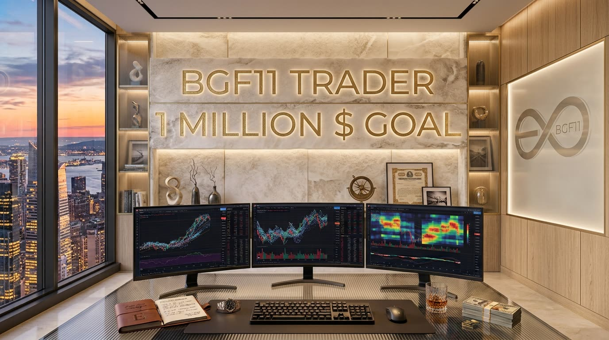

"Market sirf unhe daulat deta hai jo liquidity ko samajhte hain, sabr ko strategy banate hain, aur apne emotions ko ek institution ki tarah control karte hain."
👁️
BGF · Purest Ever · Deadlypure
اللہ 99 Asma
محمدﷺ 99 Sifat
BGF
BitcoinGoldForex
أَعُوذُ بِاللَّهِ مِنَ الشَّيْطَانِ الرَّجِيمِ
بِسْمِ اللَّهِ الرَّحْمَٰنِ الرَّحِيمِ
"Allah ke naam se shuru — jo nihayat Rehman, nihayat Raheem hai"
⚡ BGF — PUREST EVER: 200 SAAL KA HIDDEN RAAZ
Ye wo knowledge hai jo 200 saal se Rothschild, Rockefeller, Baring Brothers, JPMorgan — in ke andar thi. Ye duniya ke asli controllers hain. Ye wo ilm hai jo insider ke paas tha — aaj BGF ke haath mein hai. Forex, Gold, Silver, Oil, Yields, BTC/Crypto — har asset ka core raaz, har controlling country ka secret, har resource ka insider indicator — aaj is ek page pe.
⚠️ Yeh direct official login/webterminal links hain, koi affiliate offer nahi. Agar Exness ki website open na ho: Pakistan mein kabhi-kabhi ISP/network level par temporarily block ho jati hai — mobile data pe switch karo ya Exness Trade app try karo. Kisi bhi broker ke saath account kholne se pehle apni risk-tolerance, uski regulation (FCA/CySEC/FSCA/etc.) aur withdrawal policy khud verify karo. Yeh financial advice nahi hai.
2.9📅 Purest News Radar — Weekly/Monthly, Is Waqt Ke Liye Live
Market maker ka kaam price predict karna nahi — liquidity engineer karna hota hai. Jahan retail ke stop-losses cluster hotay hain (obvious highs/lows ke thora upar/neechay), wahi unka target hota hai — inventory build/unload karne ke liye unhe zaroorat hoti hai ke price wahan ek dafa chali jaye. Isi liye stop hunt aksar reversal se pehle hi hota hai — woh trap nahi, woh unka fuel hai. Jo trader is mindset se dekhta hai woh liquidity pools ko "resistance/support" nahi, "target zones jahan MM ko jana hai" samajhta hai — aur wahi farq ek retail aur ek institutional-minded trader mein hota hai: retail price ko follow karta hai, institution price ko engineer hotay dekhta hai.
Yeh ab EK merged card hai — pehle Seasonal Hierarchy aur Auto Setup Detector do alag select/card thay, ab dono ek hi asset-selection se, ek hi jagah khulte hain. Daily data akela sirf noise hota hai — weekly pattern usay confirm karta hai, monthly trend usay define karta hai, yearly/seasonal regime background banata hai, aur sabse aakhir mein Session tier ka macro/micro/ICT-SMC/checklist asal trade-decision deta hai. Neeche jo asset chuno, paanchon tabqe (Yearly → Monthly → Weekly → Daily → Session) isi tarteeb mein, live time/din/mahine ke mutabiq khud ban jate hain — har card apna real content dikhata hai, sirf icon/label nahi. Card par tap karo to collapse/expand ho sakta hai. Real-time price/VIX/correlation ke live numbers yeh khud check nahi kar sakta — is liye Session tier ke aakhir mein "☑ khud verify karo" checklist di gayi hai; bracket () mein likha hamesha mushkil term ki simple wazahat hai.✗ Is tarteeb ko ulta kar dena — pehle daily candle dekh kar trade lena, phir upar dekhna — hi retail trader ki sabse bari aur sabse aam ghalti hai.
2.13📜 Purest Trade Journal — Institutional-Grade Track Record
2.10🔭 Multi-Timeframe Bias Alignment — Top-Down Analysis (chhoti se badi timeframe tak sab ek direction mein hona chahiye)
Sab timeframes select karo — alignment score khud ban jayega
2.11📐 Purest Position-Size Calculator — Har Trade Se Pehle Ka Farz
Account ($)
Risk %
SL (pips/points)
Teeno numbers bharo — lot size khud calculate ho jayega
2.12🛑 Daily Circuit Breaker (din ka loss limit hit hote hi trading khud lock ho jati hai) — Institutional Risk Governor
Purest Auto-Detect (select karte hi khud current month + hierarchy ke mutabiq load hota hai)
Asset Select Karo — Poora Institutional Seasonal Core Khud Aa Jayega
—
2.13a — Is Mahine Ka Seasonal Bias (seasonal bias = historical tendency, guarantee nahi)
—
2.13b — Institutional / Hedger / Prop-Firm Ka Rawaiya
—
2.13c — Asal Structural Driver (kyun ye pattern banta hai)
—
2.13d — Hierarchy-Wise Confluence (is asset ko Stage 1→7 ke saath kaisy jorna hai)
—
⚠️ Seasonality = ek confluence hai, akela signal nahi. Har trade Position-Size Calculator (2.11) aur session confluence (2.1–2.12) ke saath hi lena — seasonality sirf bias ka context deta hai, entry timing nahi.
Stage 2.14 — Purest Institutional Gamma-Positioning [options-dealers apna risk options ke zariye kis taraf hedge/cover kar rahe hain] & Dealer Inventory-Hedge Core [dealer ke paas jo stock/risk bacha hai usay balance karna]
🧲
Purest Auto-Detect (aaj ki tareekh se dealer-hedging regime khud calculate hota hai)
Woh Mechanism Jo Kabhi Kholi Nahi Jaati — Dealer Apni Hedge Kis Taraf Chala Raha Hai
—
2.14a — Aaj Ka Gamma Regime (monthly/quarterly options-expiry cycle se auto-derive)
—
2.14b — Dealer Ki Hedging Flow Ka Asal Matlab
—
2.14c — Is Asset Pe Kitna Direct Asar Hai
—
2.14d — Aaj Kya Karna Hai (is regime mein trade karne ka farq — step-by-step)
—
2.14e — Confirmation Kaise Lo (price-action se khud verify karo, sirf assume mat karo)
—
🔒 Yeh woh structural layer hai jo institutional desks GEX (Gamma Exposure) metrics se track karte hain aur retail ko kam hi sikhaya jaata hai: options-dealers apni khud ki exposure hedge karne ke liye underlying mein trade karte hain, aur unki majboori (khud ka choice nahi) hi decide karti hai ke aaj market "range mein pin" hogi ya "amplify/breakout" karegi — kisi chart pattern se pehle hi. Yeh sirf ek confluence layer hai — Stage 1 (session), Stage 2.11 (position-size), aur Stage 3 (risk-first rule) ke bagair akela istemal na karo.
Stage 2.15 — Purest Institutional Hidden-Flow Core (Vanna/Charm, Real-Money vs Fast-Money, CTA Triggers, Fix-Flows — jo bohot kam sikhaya jata hai)
🕳️
Hidden Institutional Flow Engine (yeh flows kisi ki "opinion" se nahi chaltin — mandate, formula, aur calendar se chalti hain, isliye predictable hain)
Yeh Woh Mechanics Hain Jinhe Retail ICT/SMC Courses Chhorr Dete Hain — Kyunke Yeh Chart-Pattern Nahi, "Kyun Bade Players Majboor Hain Trade Karne Ke Liye" Ka Raaz Hai
1. Vanna & Charm Flows [options-dealers ki hedging jo sirf price-move (Gamma, Stage 2.14) se nahi — Volatility-badalne (Vanna) aur sirf waqt-guzarne (Charm) se bhi chalti hai]
Kya hai:Vanna[jab implied-volatility badalti hai to dealer ka delta-hedge kitna shift hota hai] aur Charm[sirf waqt guzarne se — expiry qareeb aane se — delta-hedge kitna shift hota hai, price hile ya na hile]. Dono milkar aise buy/sell pressure banate hain jiska koi news se koi lena-dena nahi hota.
Chart par kya dekho: Iska koi seedha indicator nahi — OpEx [Options Expiration — monthly options-settlement date] se 3-5 trading-din pehle agar market bila-wajah range-bound/"pinned" ho jaye, yeh Vanna/Charm hai, koi coincidence nahi. OpEx ke 1-2 din baad market achanak "azad" ho ke move kare — yeh unwind hai.
Kab use karo: OpEx week mein tight-range setups ko chase mat karo (mechanically suppress ho rahi hai); OpEx ke turant baad breakout-continuation setups ko zyada weight do.
Session: Asar poore din chalta hai, lekin NY close ke qareeb (jab US options settle hote hain) sabse zyada nazar aata hai.
2. Real Money vs Fast Money [do bilkul alag kisam ke bade players, jinka react karne ka tareeqa ulta hota hai]
Kya hai:Real Money[pension funds, sovereign-wealth funds, central banks — apne portfolio-mandate ki wajah se trade karte hain, price ki fiqar nahi karte, jaldi nahi hote] vs Fast Money[hedge-funds, CTAs, prop-desks — short-term profit ke liye, momentum ka peecha karte hain, jaldi in-out].
Chart par kya dekho: Real-money move slow, sustained, several hafte/mahine chalta hai bina drama ke. Fast-money move sharp, spiky hota hai, aksar news/level-break ke turant baad, aur jald reverse ho sakta hai.
Kab use karo: Agar tumhara trade sirf ek sharp spike ka peecha kar raha hai — samjho fast-money hai, target tight rakho. Agar ek slow grinding trend dikh raha hai bina drama ke — real-money ho sakta hai, chhoti pullback par mat bhago.
Session: Real-money aksar London-open/custodial-hours (subah) mein move karta hai; fast-money NY session mein news ke turant baad zyada active.
3. CTA/Systematic Trigger-Levels [CTA — Commodity Trading Advisor: algo/systematic trend-following funds jo apne trades ek fixed formula se lete hain]
Kya hai: Bohot saari systematic funds similar formulas use karti hain — generally 50/100/200-day moving-average crossovers ya breakout-channels. Is se yeh triggers approximately predictable ho jate hain kyunke poori industry ek jaisi soch rakhti hai.
Chart par kya dekho: Daily chart par 50-DMA aur 200-DMA [Daily Moving Average] plot karo. Jab price in ke qareeb pohanche (khaas kar ek crossover ke qareeb), expect karo achanak volume/volatility spike — kyunke bohot saari systematic funds ek hi waqt trigger hoti hain.
Kab use karo: In levels ke bilkul upar/neeche stop mat rakho (stop-hunt risk). Agar price in levels ko momentum ke saath clear break kare, CTA-triggered acceleration ka fayda utha sakte ho.
Session: Daily-close confirm hone ke baad (NY close ke around) yeh triggers sabse zyada fire hote hain.
Kya hai:WM/Reuters 4pm London Fix[har roz 4pm London ek official benchmark rate set hota hai jahan bohot saare institutional orders EK SAATH execute hote hain] aur Custodial Rebalancing[pension funds/asset-managers mahine/quarter ke aakhri din apne stocks/bonds/currency-hedges wapas target-allocation par "rebalance" karte hain].
Chart par kya dekho: Mahine/quarter ke aakhri 1-2 trading-din mein, 4pm London se 15-30 minute pehle achanak volume-spike aur ek-directional move — bina kisi news ke, yeh fix-flow hai.
Kab use karo: In dates ko apne calendar mein maark karo — is window mein agar tumhara trade aa raha hai to extra ehtiyaat rakho (fake move ho sakta hai), ya agar bias match kare to is flow ke saath align karo.
Session: Sirf 4pm London (mahine/quarter ke aakhri kaam ke din) — is se pehle 30 minute sabse volatile.
🔗 ICT/SMC ke saath merge: Yeh 4 mechanics khud "signal" nahi dete — yeh batate hain kyun ek Order Block ya Liquidity-Sweep waqai kaam karega ya fail hoga. Misaal: agar tumhara OB Kill-Zone mein hai, OpEx-week mein nahi, aur CTA-trigger-level ke qareeb hai — teeno ek saath is poore course ka sabse purest, sabse "hidden" institutional confluence banate hain. (Yeh 90% guarantee nahi deta — sirf woh reasoning deta hai jo hedge-fund desks khud istemal karte hain.)
—
2.15a — Is Asset Par Hidden-Flow Personality (is asset ke liye khaas kya alag hai)
—
⚠️ Yeh 4 mechanics OpEx-calendars, DMA-charts, aur fix-dates se track hoti hain — course sirf CONCEPT aur USE-CASE sikhata hai, live data feed provide nahi karta. Baaqi confluence layers (Stage 1 session, Stage 2.11 position-size, Stage 3 risk-first) ke bagair yeh bhi akela istemal na karo.
Stage 2.16 — Purest Institutional Hedger Psychology Core (is ke bagair poore course ki koi asal qeemat nahi — yehi wajah hai ke setup sahi hokar bhi log haarte hain)
🧠
Decades-Experienced Risk-Desk Mindset (yeh koi "motivation" nahi — yeh MATH hai jo hedge-fund risk-desks decision lete waqt istemal karte hain)
Sabse Purest Setup Bhi Fail Ho Jata Hai Agar Yeh 4 Cheezein Nahi Hain — Yehi Wajah Hai Ke Do Traders Ek Hi Chart Dekh Kar Alag Result Nikalte Hain
1. Expected Value (EV) Thinking — Win-Rate Nahi [har ek trade ka result nahi, sau (100) trades ka average result sochna]
Kya hai: Institutional desks kabhi nahi poochte "yeh trade jeetega ya haregi" — woh poochte hain "agar main yeh bilkul isi setup ko 100 dafa lun, EV [(win% × average-win) minus (loss% × average-loss)] positive hai ya negative". 30% win-rate wali strategy bohot profitable ho sakti hai agar wins losses se 4-5 guna bare hon.
Practically kaise: Har trade se pehle khud se poocho: "Agar main yeh trade 100 dafa lun (same confluence ke saath), kya average result positive hoga?" — agar jawab "nahi pata" hai, to trade lene ki bajaye pehle apna journal (Stage 2.9) check karo ke is exact setup ka past win-rate aur average R:R kya raha hai.
Har asset ke liye: Kisi bhi asset par yeh soch same rehti hai — sirf numbers (win% aur R:R) alag ho sakti hain, mindset nahi.
2. Correlation Blindness — Ek Hi Bet Ko Kai Naam Dena [alag-alag lagti trades jo asal mein ek hi underlying risk ka repeat hain]
Kya hai: Long EURUSD + Long GBPUSD + Short DXY + Long Gold — yeh 4 "alag" trades lagti hain, lekin agar sab USD-weakness ke bias par hain, to yeh EK hi bet hai 4 guna size mein. Agar bias galat nikla, sab ek saath haarengi — risk 4x hai, na ke 1x jitna lag raha tha.
Practically kaise: Naya trade lene se pehle apne saare khule trades ka "asal driver" likho (ek line mein). Agar 2+ open trades ka asal driver same hai (misaal: "USD weak hoga"), to unhe EK combined position samjho aur position-size total risk ke hisaab se kam karo — har trade ko alag-alag full-size mat do.
Har asset ke liye: Gold/Silver aapas mein correlated hain; EUR/GBP/AUD/NZD sab "anti-USD" hain; Oil/CAD correlated hain — inhe kabhi independent bets mat samjho.
3. Process Grading, Outcome Grading Nahi [decision ki quality judge karo, sirf result ki nahi]
Kya hai: Ek achi decision (poori checklist verify ki, risk sahi rakha) phir bhi loss de sakti hai — sirf bad-luck se. Ek buri decision (checklist skip ki, overleveraged) phir bhi win de sakti hai — sirf luck se. Risk-desks har trade ko DO alag marks dete hain: "process score" (kya sahi kiya) aur "outcome" (kya hua) — kabhi mix nahi karte.
Practically kaise: Har journal-entry (Stage 2.9) mein result likhne se PEHLE ek "Process Score" (0-10) likho — sirf yeh dekh kar ke checklist (Stage 10.5) poori verify ki thi ya nahi, risk sahi tha ya nahi. Result baad mein alag se likho. Mahine ke end mein "high process-score, low outcome" trades ko celebrate karo — yehi asli skill hai.
Har asset ke liye: Yeh rule universal hai — kisi bhi asset par ek "lucky win with bad process" tumhe agli baar overconfident bana kar zyada nuksaan dega.
4. Survival-First Sizing — Fractional-Kelly Mindset [theoretically-"optimal" size se hamesha KAM risk lena, kyunke apna edge-estimate kabhi 100% sahi nahi hota]
Kya hai: Kelly Criterion [ek formula jo batata hai "mathematically optimal" position-size kitni honi chahiye, apne win-rate aur R:R ke hisaab se] ek number deta hai — lekin professional desks us number ka sirf 25-50% ("fractional Kelly") istemal karte hain, kyunke agar tumhara win-rate/R:R ka andaza thoda bhi galat ho (aur kabhi bhi 100% sahi nahi hota), full-Kelly size par tumhara account bohot jaldi khatam ho sakta hai.
Practically kaise: Stage 2.11 (Position-Size Calculator) jo number deta hai, us se bhi thoda kam risk karo jab tak tumhare paas kam-az-kam 30-50 verified trades ka apna real data na ho. Zyada confidence se zyada size lena hi sabse zyada accounts khatam karta hai — na ke galat setup.
Har asset ke liye: High-volatility assets (BTC, GBP pairs) par yeh rule aur bhi zaroori hai — waha edge-estimate ki ghalati bohot jaldi bara nuksaan banti hai.
🔗 Confluence ke saath merge: Stage 10.5 ki poori A→P checklist bhi agar 100% verify ho jaye, phir bhi agar tumhari psychology yeh 4 cheezein nahi maanti — galat position-size lo ge, correlated bets ko independent samjho ge, ek loss ke baad outcome ko process se confuse kar ke overreact karo ge. Yehi wajah hai ke yeh Stage koi "extra" nahi — is ke bagair upar ki poori checklist ki asal value nahi hai.
—
2.16a — Is Asset Ka Sabse Aam Psychological Trap (is asset ke saath log sabse zyada yeh galati karte hain)
—
⚠️ Yeh Stage koi "motivation-speech" nahi — yeh decision-making math hai jo institutional risk-desks literally apne trading-manuals mein likhte hain. Baaqi confluence layers (Stage 1 session, Stage 2.11 position-size, Stage 3 risk-first, Stage 10.5 checklist) ke saath milkar hi yeh poora asar dikhata hai.
Wahi 5 Signs, Chart-Level Detail Ke Saath — Neeche Wala Live Core Isi Par Based Hai
1. Displacement Candle [sabse pehla, sabse aasan sign — real order-flow ki pehli alaamat]
Kya hai: Ek bara-body, chhota-wick, tez candle jo normal range se kaafi bara hota hai — yeh confirm karta hai ke yeh random retail noise nahi, real institutional order-flow hai jo ek hi taraf zor se guzra.
Chart par kya dekho: Candle-body ka size pichhle 10-20 candles ke average-range se kam az kam 1.5-2x bara ho, wick body ke muqable chhota ho, aur yeh kisi key-level (liquidity, session-open) se guzarte hue bane.
Kab use karo: Displacement ke baad bane pehle pullback ko potential entry-zone samjho — lekin akela mat lo, agle sign (Absorption) se confirm karo.
2. Absorption [displacement ke baad, level par kya hota hai — dusra confirmation]
Kya hai: Bara candle-body banta hai magar price aage nahi badhta — koi bada player us level se opposite-side ke orders "absorb" kar raha hai. Retail ise breakout samajh kar chase karta hai, institution wahin se reverse kar deta hai.
Chart par kya dekho: Ek level par 3-5 candles stall hon, baad ek bare-volume candle ke, phir price wapas us level se door bhage.
Kab use karo: Displacement ke turant baad absorption dikhe to reversal-side ka bias badh jata hai.
3. Stop-Hunt Se Pehle Silence [range-compression ka pattern — Judas Swing se pehle ka warning]
Kya hai: Bara move se pehle price aksar tight range mein compress ho jata hai — phir ek fast liquidity-sweep (Judas Swing) aata hai, us ke baad hi asal move shuru hota hai.
Chart par kya dekho: Range progressively chhota ho raha ho, phir achanak ek wick-heavy candle jo obvious high/low ko thora cross kare aur turant wapas aa jaye.
Kab use karo: Sweep ke fauran baad, opposite-direction mein Displacement + Absorption dhoondo.
Session: Aksar session-open se pehle ya London-open ke pehle 15-30 minute mein banta hai.
4. Distribution vs Accumulation [range ke andar hafton tak chalne wala pattern — sabse dheema layer]
Kya hai:Accumulation = sideways range mein down-candles quietly absorb ho rahe hon. Distribution = same pattern highs par, institution chup-chaap bech raha hai.
Chart par kya dekho: Hafton-lambi range jahan har move ke baad volume kam ho jata hai lekin range nahi tootti.
Kab use karo: Range ke break se pehle hi bias set karo — accumulation-signature = upside-break ko weight, distribution-signature = downside-break ko.
Kya hai: CFTC ka weekly report batata hai Commercials (real hedgers) aur Speculators kis taraf positioned hain. Extreme-vs-extreme aksar reversal ka early-warning hota hai.
Chart par kya dekho: CFTC.gov (ya TradingView COT overlay) se weekly check karo — commercial-net-position 1-2 saal ki extreme ke qareeb ho to alert.
Kab use karo: Entry-timing signal nahi — sirf macro-bias/context. Baaqi 4 signs isi direction mein confirm karein tabhi trade lo.
Session: Har Friday publish hoti hai — agli Friday tak wahi bias carry karo.
🔗 Detection Rule (Stage 1.2 se carry-forward): Kabhi sirf ek sign par trade mat karo. Jab Stage 1.1 ka session-context + upar diye 5 mein se kam az kam 2-3 signs ek hi direction mein align hon — tab institutional bias "confirmed" mana jata hai.
🕰️
Purest Auto-Detect (har rectangle khud is waqt ke session + select kiye asset ke mutabiq live update hota hai — koi manual refresh nahi)
Is Waqt Institutional Footprint Kahan Hai — Har Rectangle Apna Khud Ka Live Core
—
2.17a — Abhi Kaunsa Institutional Phase Active Hai (live session se auto-detect, har lamha update)
—
2.17b — Is Waqt Sabse Zyada Weight Wala Sign (5 signs mein se abhi kaunsa dhoondna hai)
—
2.17c — Is Asset Ka Institutional/Hedger/COT Rawaiya
⚠️ Yeh Stage 1.1 (session-macro-layer) aur Stage 2.13-2.16 (seasonality, gamma, hidden-flow, psychology) ke saath hi poori confluence banata hai — akela istemal na karo. COT sirf un assets ke liye seedha available hai jinke CFTC-tracked futures hote hain; jahan nahi hota, wahan baaqi 4 chart-level signs ko zyada weight do.
Stage 3 — Jo Kabhi Nahi Tootna
🔒
Yeh Session Se Upar Hai — Har Waqt Sach
Ek Usool — Jo Kabhi Nahi Tootna
Main sirf apne likhay huay plan se chalta hoon, waqt ke jazbaat se nahi. Agar plan nahi, to trade nahi — chahe kitna hi "confident" kyun na lage. Yehi ek line, agar roz follow ho, to baaqi sab apne aap theek ho jata hai.
Agar Yeh Toot Jaye — Wapsi Ke 3 Qadam
1Ruk jao, khud ko mat koso. Bas itna observe karo ke asal mein hua kya — jazbaat mein faisla mat lo.
2Wapsi "kal se" nahi hoti — agla session hi wapsi ka waqt hai. Ek miss ko do miss mat banao.
3Journal mein sirf ek line likho: kya hua, kyun hua, agli dafa kya karna hai. Itna kaafi hai.
Institutional Discipline — Retail Aur Desk Ka Asal Farq
Har institutional desk ka apna hard risk limit hota hai jo emotion se kabhi negotiate nahi hota — chahe kitna bhi "sure shot" setup kyun na lage. Retail trader plan tabhi tak follow karta hai jab tak comfortable ho; market maker ka plan uske comfort se independent hota hai — yehi ek line institutional aur retail mindset ke darmiyan ka poora farq hai.
🔥 Discipline Streak — Live Ever Core
0 Din
Plan tootay bina lagatar disciplined din
Tawbah ka darwaza hamesha khula hota hai — discipline bhi waisi hi hai: gir kar phir uthna, yehi asal imtihaan hai, perfect kabhi na girna nahi.
📖 Stage 4.1 — Yeh Sabaq Institutionally Kyun Zaroori Hai (upar wali line ka concrete matlab, live session ke saath sync)
—
Stage 5 — Timeless Master Mindset
🕯️
Master Mindset — Naslon Se Zinda Institutional Wisdom
Jo Kabhi Kisi Kitaab Mein Nahi Likha Gaya
Jo log market ko harana chahte hain, wo hamesha haarte hain — market kisi insaan se nahi lada karta, wo sirf apne aap se guzarta hai. Jo market maker decades tak zinda raha, usne kabhi price predict karne ki koshish nahi ki — usne sirf itna seekha ke risk ko kaise measure karna hai, aur jab andaza galat ho jaye, to kitni jaldi maan lena hai.
Har naya trader sochta hai maharat ka matlab hai "sahi hona." Har purana, tajurbekar desk jaanta hai maharat ka matlab hai "jald se jald galat hone ko qabool karna." Yehi farq saalon mein banta hai — jo yeh farq jaldi seekh le, wohi table pe sabse dair tak baithta hai.
Koi bhi genius nahi hota — sirf wo process dohrata hai jo usne khud apni sabse badi haar ke baad likha tha. Ek din ka jeetna kuch nahi — har din ka wahi disciplined process, saalon baad, khud hi asal dolat bann jata hai.
5.1🧠 Bias Watch — Aaj Ka Psychological Trap (rotating, har din alag)
5.2🗝️ Iske Baghair Poora Course Bekaar Hai
Process vs Outcome — Sabse Gehra Raaz
Ek losing trade jo poori confluence ke saath li gayi, wo ek ACHHI trade hai.Ek winning trade jo bina confluence ke li gayi, wo ek BURI trade hai — chahe usne paisa banaya ho.
Yeh ulta lagta hai, lekin yehi wo ek fikr hai jo amateur ko professional se hamesha ke liye alag karti hai. Amateur apne aap ko result se judge karta hai — jeeta to khush, haara to udaas. Professional apne aap ko sirf ek sawaal se judge karta hai: "Kya maine apna plan follow kiya?"
Market random hai — best setup bhi kabhi lose hoga, worst setup bhi kabhi win hoga. Agar tum result se apni value naapte ho, tumhara zehen har din ek rollercoaster banega. Agar tum sirf process se naapte ho — tumhara zehen shant rehta hai, chahe market kuch bhi kare. Yehi ek shift, poori zindagi ke liye, sab kuch badal deta hai.
Har purest institutional desk pe faisla ek hi tarteeb mein banta hai: pehle yearly/macro regime (central bank stance, rate cycle, geopolitical backdrop), phir monthly trend (jo regime ko price mein confirm karta hai), phir weekly structure (jo entry ke liye zone define karti hai), aur sabse aakhir mein daily/intraday candle — jo sirf timing ka faisla hai, direction ka nahi.
Retail is poori hierarchy ko ulta kar deta hai — daily chart khol kar seedha trade lene baith jata hai, phir "kyun nahi chala" sochta hai. Market maker kabhi daily candle se shuru nahi karta — woh hamesha upar se neechay aata hai, kabhi neechay se upar nahi. Yehi wo ek hierarchy hai jo is poore course ki jaan hai — har stage, har module, isi ek usool pe khara hai.
Yeh Sirf Ek Course Nahi — Yeh Wohi Mindset Hai Jo Har Naslon Se Zinda Trader Ke Andar Rehta Hai
5.5🧬 Compound Institutional Risk (aaj ka psychological trap + live session — dono milkar khud auto-merge hote hain)
—
—
🔓
5.4 — Woh Ek Raaz Jiske Baghair Yeh Poora Course Khaali Hai
Risk-of-Ruin — Woh Equation Jo Faisla Karti Hai Kaun Bachta Hai
Main ek honest baat batata hun: koi bhi bank, hedge fund, ya market maker kisi secret indicator ya chupi hui strategy ki wajah se decades tak zinda nahi rehta. Woh sirf ek cheez ki wajah se zinda rehta hai jo bilkul boring lagti hai: unki position-size hamesha itni chhoti hoti hai ke koi bhi ek trade, ya koi bhi losing-streak, unhe kabhi khatam nahi kar sakti.
Isay "Risk of Ruin" [tabaahi ka khatra] kehte hain — yeh ek mathematical fact hai, koi opinion nahi: agar tum har trade par apni capital ka bara hissa (jaise 10%) risk karte ho, to chahe tumhara setup 60% waqt jeetta ho, sirf 5-6 consecutive losses (jo kisi bhi 60%-win-rate system mein bilkul normal hain) tumhari capital ka 50%+ khatam kar dengi — aur wahan se wapas aana mathematically bohat mushkil ho jata hai (50% loss ke baad wapas break-even tak aane ke liye 100% gain chahiye hoti hai).
Ab isi ko 1% risk-per-trade ke saath dekho: wahi 6 consecutive losses tumhari capital ka sirf ~6% le jayengi — aur tumhare paas agle 100 trades lene ke liye poori capital, poora waqt, aur poora zehen mojood rehta hai. Yehi asal farq hai — retail trader apna edge (confluence, ICT/SMC, macro-bias) dhoondne mein saal laga deta hai, phir usay ek hi bari-size trade mein utaar kar khatam kar deta hai. Institution apna edge chhota rakhta hai, magar usay hazaron martaba, chhoti size ke saath, itni dair tak dohrata hai ke law-of-large-numbers khud kaam karna shuru kar de.
Yehi wo cheez hai jo koi bhi glamorous "secret setup" video kabhi nahi sikhata — kyunki yeh boring hai, kyunki isme koi jaadu nahi, sirf discipline hai. Magar yehi ek cheez hai jiske baghair upar diya gaya har confluence-checklist, har ICT/SMC concept, har execution-gate — sab bekaar hai. Tumhara edge tumhe paisa nahi banata. Tumhara zinda rehna tumhe paisa banata hai — kyunki sirf zinda trader hi apne edge ko kaafi dair tak dohra sakta hai ke woh statistically kaam kare.
10% Risk/Trade + 6 Losses≈ 47% Capital Gone → 89% Gain Chahiye Wapas Aane Ke Liye
1% Risk/Trade + 6 Losses≈ 6% Capital Gone → Sirf 6.4% Gain Chahiye Wapas Aane Ke Liye
Yeh Position-Size Calculator (Module 2.11) Isi Liye Sabse Zaroori Tool Hai — Confluence Nahi, Yeh Tumhe Zinda Rakhta Hai
Stage 6 — Poore Hafte Ka Institutional Rhythm
🗓️
Purest Weekly Rhythm — Institutional Desk Ka Aaj Ka Din
Sirf Aaj Ka Din — Poora Institutional Core, Khud Detect Hota Hai
6.1⚡ Aaj Ka Power Matrix (din + session milkar kitni institutional taaqat banate hain)
Kill Zone = din ka wo waqt jab sabse zyada movement/liquidity hoti hai · ICT/SMC Concept = price kis tareeqe se institutional players move karte hain, uska pattern · Confluence = kai alag wajahein jo ek hi taraf ishara kare
Institutional Weekly Logic — har din akela nahi parkha jata; Monday ka range aksar poore hafte ki liquidity set karta hai, Tuesday-Wednesday confirmation dete hain, Thursday data-driven hota hai (Jobless Claims, COT cutoff), Friday profit-taking aur position-squaring ka din hota hai. Yehi wo rhythm hai jo daily ko weekly se, aur weekly ko monthly hierarchy se jorta hai — koi bhi din is bade pattern se kata hua nahi hota.
MonTueWedThuFri
Raat 12 Baje Ke Baad Yeh Poora Card Khud Agle Din Ka Ho Jayega — Kal Ka Din Kal Khud Aayega
6.2📆 Is Mahine Ka Institutional Character (aaj ki actual date se khud auto-detect hota hai)
—
—
Stage 7 — Din Ka Aghaaz Aur Anjaam
🕯️
Purest Daily Desk Ritual (ritual = roz ka fixed routine jo bina sochay follow ho) — Institutional Bookends
Jaisy Har Real Desk Din Shuru Aur Khatam Karta Hai
7.1🌅 Pre-Market Ritual (trading shuru karne se pehle ka fixed checklist)
7.2🌙 Post-Market Review (din khatam karne se pehle ka fixed checklist)
7.3🏛️ Institutional Bookend Mindset — Kyun Yeh Dono Waqt Sabse Zyada Maayne Rakhte Hain
Har real desk ka din pre-market prep se khulta hai aur post-market review se band hota hai — darmiyan ka trading sirf ek chhota hissa hai. Jo trader sirf entry-exit pe focus karta hai aur dono bookends ko skip karta hai, wo har din sifar se shuru karta hai. Jo dono ko roz follow karta hai, wo har din pichlay din ke upar build karta hai — yehi farq mahino baad compounding edge banata hai.
⚠️ Yeh ek merge/summary layer hai — har underlying stage (1-7) apni jagah poori tafseel ke saath upar mojood hai, yeh sirf unhe ek waqt, ek asset ke liye, ek nazar mein jorta hai. Kabhi bhi sirf is verdict par trade mat lo — Position-Size Calculator (2.11), confluence-checklist (2.x), aur risk-first rule (Stage 3) hamesha alag se confirm karo.
"Farma dijiye: Aey mere bando jinhon ne apni jaanon par zulm kar liya hai — Allah ki rehmat se kabhi na-umeed na ho. Beshak Allah tamam gunah bakhsh deta hai, beshak wahi bohot bakhshne wala, nihayat rehem karne wala hai."
📿 Nabi Kareem ﷺ ne farmaya: "Allah apne bande par utna meherban hai jitni ek maa apni aulad par bhi nahi hoti." — (Sahih Bukhari & Muslim)
Yehi is safar ki asal bunyaad hai — mehnat Stage 1-8 ki, magar bharosa hamesha Allah aur Uske Rasool ﷺ ki taleem par. Isi yaqeen mein kamyabi ka raaz hai.
--
--:--:--
0.0% — Safar Shuru
🌈PurestEverCore— Live Rainbow Line0.0%
DinGuzray:0/--Din(Sept 2026 → Jan 2028)
👆 Box par tap karo — dua/affirmation kholne ke liye
"Ya Allah, jo neeyat maine ki hai — self-made trader banna, apne ghar walon ke liye financial freedom, aur Dubai mein apna ghar — us mein barkat daal. Mehnat mera hissa hai, tawfeeq Tera. Ameen."
⚠️ Yeh ek manifestation/motivation layer hai — koi financial guarantee ya promise nahi. Asal progress Stage 1-8 ke disciplined process, risk-management (Stage 3), aur roz ki consistency (Stage 7 ritual) se hi aayega — counter sirf neeyat taza rakhne ke liye hai, result ka zariya nahi.
⚠️ Pehle yeh parho: "Lean" ka matlab hai — abhi tak Stage 1-9 mein jo live/structural/seasonal signals mile hain, wo majority kis taraf jhuk rahe hain. Yeh guarantee ya "100% confirmed" prediction nahi — koi bhi real hedge fund, prop firm ya institutional desk kabhi 90%+ direction-certainty claim nahi karta, kyunke market fundamentally probabilistic hai. Jo neeche A→Z Confirmation Protocol hai, wahi is Stage ka asal kaam hai — usko kabhi skip mat karo.
🔏 PENDING CONFIRMATION
🏛️ Purest Confluence Verdict — Stage 1→9 Nichor
—
🔎 A→Z Confirmation Protocol — khud online verify kaise karo, kis liye, kab, aur kyun (real sources)
C. COT Report — Institutional Positioning (Weekly)
Kya: Large-speculator/commercial net-positioning — asli institutional bias, opinion nahi.
Kab: Har Friday release hoti hai (pichle Tuesday tak ka data) — weekly lean update ke liye Friday/Monday check karo.
Kyun: Yeh is course ke kisi bhi Stage se zyada "real" institutional-bias data hai — retail chart-pattern se bohot pehle bata deta hai big-money kis taraf jhuk rahi hai.
Kaise: Net-position ka trend dekho (3-4 hafte ka), sirf ek hafte ka number mat dekho — trend matter karta hai.
H. Yearly Macro-Cycle Check (Rate-Cycle / Leading Indicators)
Kya: Global rate-cycle phase (hiking/pausing/cutting) aur leading economic indicators.
Kab: Har 4-6 hafte mein ek dafa — yearly regime slow-moving hai, daily check ki zaroorat nahi.
Kyun: Yeh sabse bara-picture layer hai jo har chhoti timeframe ke bias ko override kar sakta hai — koi bhi client-side script isse honestly "live auto-detect" nahi kar sakta, isliye manual check zaroori hai.
Kaise: Leading-indicator trend (up/down) note karo, apne Stage 10 "Yearly Macro" card ke expectations ke saath compare karo.
Kya: Apne broker-platform par live spread — kya wo abhi normal hai ya widen ho gaya hai.
Kab: Har entry se turant pehle.
Kyun: News ke around ya low-liquidity session mein widened spread akele hi ek "acha setup" bhi ghatay mein badal sakta hai.
Kaise: Apne platform ka spread dekho — normal se 2x+ zyada hai to entry hold karo.
🎀
K. Apna Journal Cross-Check (Stage 2.12c)
Kya: Aisi hi confluence-combination pichli 10 baar kaise perform hui, apni khud ki entries mein.
Kab: Har naya "high-confluence" setup lene se pehle.
Kyun: Koi bhi generic seasonality/data source utna reliable nahi jitna tumhara apna real, is-account ka track-record.
Kaise: Stage 2 Journal (2.12c) khol kar similar setups ka win-rate note karo — 6+ confluence rule ke saath.
🎀
L. Risk-First Final Gate (Stage 3 — Non-Negotiable)
Kya: Stop-loss aur position-size — A se K tak sab kuch confirm hone ke baad bhi yeh gate sabse aakhri aur sabse zaroori hai.
Kab: Har single trade se pehle, bina istisna.
Kyun: Yeh course mein kahin bhi likha "lean", "verdict" ya "confluence-score" — chahe kitna bhi strong ho — kabhi is rule ko override nahi karta. Ek galat lean bhi survivable hai agar risk chhota tha; ek sahi lean bhi account tabah kar sakta hai agar risk bara tha.
Kaise: Position-Size Calculator (2.11) mein SL distance + Desk-Trust Tier % daalo, lot-size wahi lo jo calculator bataye — khud se round-up mat karo.
📋 Final Verdict Checklist — Jo Is Asset Ke Liye Khud Verify Kiya Hai (live-built, execution se pehle akhri nazar)
0 / 12 Protocol Items Verified
Abhi tak koi protocol-item verify nahi hua — upar A→Z list mein se jo bhi khud check kiya hai usay tick karo, yeh checklist yahin live ban jayegi aur upar wala verdict bhi khud update ho jayega.
⚠️ Yeh ek confluence-scoring aur confirmation-protocol layer hai — Stage 1-9 ka koi bhi hissa iske bagair mukammal nahi tha, magar yeh khud bhi trading-signal nahi, checklist hai. Har lean ko A→Z protocol se khud verify karo, phir hi Position-Size Calculator (2.11) aur risk-first rule (Stage 3) ke saath execute karo. Koi bhi automated system, chahe kitna bhi "purest" ya "ever core" kyun na kaha jaye, 90%+ market-direction certainty nahi de sakta — jo bhi aisa claim kare (yeh Stage bhi shamil), us par bhi apna dimaagh istemal karo.
Purest Ever Core Engine (institutional/market-maker + macro/micro-session + ICT/SMC deepest concepts + seasonality — sab is asset ke liye, ek checklist mein merge)
Ek Asset Chuno — Iska Apna Purest Ever Core Confluence Checklist Khud Ban Jayega. Jab Tak Yeh Poori Tick Na Ho, Execution Nahi.
⚠️ Yeh checklist is poore course ke sabse deep ICT/SMC + institutional + macro/micro-session + seasonal concepts ka nichor hai. Har item ko apne live chart par khud dekh kar tick karo, sirf naam parh kar tick mat karo. Jab tak sab 12 confirm na hon, yeh asset trade-execute karne ke qabil nahi — checklist khud yeh gate lock rakhti hai.
🔒 Purest Ever Core Checklist — A→R (is asset/session/waqt ke liye, khud chart par verify karo — M→P Stage 2.15 se, Q→R Stage 2.16 se)
🎀
A. Order Block (OB) [bada institutional order jahan chhora gaya]
Kya dekho: Last opposite-color candle before ek strong displacement move. Price wahan wapas aaye to reaction dena chahiye — yehi bank/institution ka baqi hua order hai.
🎀
B. Fair Value Gap — FVG [teen candles ke darmiyan ka imbalance gap]
Kya dekho: Ek unfilled price-gap jo magnet ki tarah price ko wapas khinch sakta hai — entry discount/premium zone ke saath align honi chahiye.
🎀
C. Liquidity Pool — BSL/SSL [Buy-Side/Sell-Side Liquidity — jahan retail stops jama hain]
Kya dekho: Equal highs/lows ya obvious swing-points jahan stops jama hain — entry se pehle yeh pool sweep ho chuka hona chahiye.
🎀
D. Judas Swing / Inducement [fake move jo retail ko galat taraf phasata hai]
Kya dekho: Session ke shuru mein ek fake breakout jo asal institutional move se pehle retail ko trap karta hai.
🎀
E. Market Structure Shift — BOS/CHoCH [Break of Structure / Change of Character]
Kya dekho: Ek saaf higher-high/lower-low break jo trend-continuation (BOS) ya reversal (CHoCH) confirm kare.
🎀
F. Displacement [strong, tez, one-directional move jo institutional intent dikhata hai]
Kya dekho: Ek bara, jaldi candle-range wala move, normal se zyada momentum ke saath — yehi "smart money ka haath" hai.
🎀
G. Premium/Discount Zone — PD Array [range ka mehnga (upar 50%) ya sasta (neeche 50%) hissa]
Kya dekho: Entry sirf discount mein (buy ke liye) ya premium mein (sell ke liye) lo — range ke bilkul beech mein nahi.
🎀
H. Power of 3 / AMD Phase [Accumulation-Manipulation-Distribution — din ka teen-hissoin wala pattern]
Kya dekho: Kya Manipulation (fake move) phase khatam ho ke ab Distribution (asal move) phase shuru ho chuka hai.
🎀
I. Kill Zone Timing [session ka wo waqt jab sabse zyada institutional volume aata hai]
Kya dekho: Entry London/NY kill-zone ke andar ho raha hai, dead/low-liquidity ghanton mein nahi.
🎀
J. Macro/Micro Session Power [poori session ki overall taaqat (macro) aur is exact lamhay ki taaqat (micro)]
Kya dekho: Stage 1 ka session-power "High-Power" dikha raha ho — sirf koi bhi random waqt na ho.
🎀
K. Weekly/Monthly Seasonal Bias [is hafte/mahine ka historical tendency, Stage 2.13 se]
Kya dekho: Tumhari trade-direction seasonal bias ke khilaaf to nahi ja rahi bina kisi mazboot wajah ke.
🎀
L. Institutional/COT Positioning [banks/hedge-funds is waqt kis taraf jhuke hain — CFTC COT report se]
Kya dekho: COT net-positioning ka trend tumhari trade-direction ko support karta hai, contradict nahi karta.
🎀
M. Vanna & Charm Flow Awareness [Stage 2.15 — options-dealers ki volatility/time-based hedging, koi OpEx-week pinning to nahi ho rahi]
Kya dekho: OpEx (options-expiry) is hafte to nahi — agar hai, tight-range setups chase mat karo; OpEx ke baad breakout-continuation ko zyada weight do.
🎀
N. Real Money vs Fast Money Identification [Stage 2.15 — yeh move slow/sustained (real-money) hai ya sharp/spiky (fast-money)]
Kya dekho: Move ka character pehchano — sharp news-spike hai to target tight rakho; slow grinding trend hai to pullback par mat bhago.
🎀
O. CTA/Systematic Trigger-Level Proximity [Stage 2.15 — 50/100/200-day moving-average crossover levels jahan systematic funds ek saath trigger hoti hain]
Kya dekho: Entry/stop in DMA-levels ke bilkul upar/neeche to nahi (stop-hunt risk) — aur agar price inhe momentum se break kare, us acceleration ka fayda uthane ka plan hai.
🎀
P. Month-End/Quarter-End Fix Flow Awareness [Stage 2.15 — 4pm London Fix aur custodial rebalancing, calendar-based predictable pressure]
Kya dekho: Aaj mahine/quarter ka aakhri 1-2 trading-din to nahi — agar hai, 4pm London se 30 min pehle extra ehtiyaat rakho ya is flow ke saath align karo.
🎀
Q. Expected-Value Check — Win-Rate Nahi [Stage 2.16 — "yeh trade jeetega?" nahi, "100 dafa lene par average positive hai?"]
Kya dekho: Journal (Stage 2.9) mein is exact confluence-combo ka past win% aur average R:R pata hai — aur EV positive nikalti hai.
🎀
R. Correlation-Risk Check [Stage 2.16 — kya yeh bet kisi doosre khule trade jaisa hi "asal driver" rakhti hai]
Kya dekho: Apne saare khule trades ka "asal driver" likha hai — agar yeh trade kisi khule trade se same-driver share karti hai, total risk combined-size ke hisaab se kam kiya hai.
🔏 PENDING CONFIRMATION (0/18)
🏛️ Purest Ever Core Verdict — Execute Karna Hai Ya Nahi?
—
📋 Final Verdict Checklist — Jo Is Asset Ke Liye Confirm Ho Chuka (live-built, is asset/session/waqt ke liye akhri nazar)
0 / 18 Core Concepts Confirmed
Abhi tak koi core-concept confirm nahi hua — upar A→L checklist mein se jo bhi apne chart par khud dekh kar verify kiya hai usay tick karo, yeh final list yahin live ban jayegi aur upar wala verdict bhi khud update ho jayega.
⚠️ Yeh checklist bhi ek confluence-verification layer hai, khud trading-signal nahi. Sab 12 tick hone ke baad bhi, execution sirf Position-Size Calculator (2.11) aur risk-first rule (Stage 3) ke saath karo — koi bhi checklist, chahe kitni bhi "purest" ya "ever core" kyun na ho, 90%+ direction-certainty nahi de sakti.
✦ Purest Ever Core ✦

🔥 BGF11 TRADER — 1 MILLION $ GOAL · Har Stage Iss Vision Ke Liye Hai — Ever Deepest, Ever Purest, Ever Core.
"
Chart kabhi jhoot nahi bolta — sirf woh trader jhoota hota hai jo apni loss ko market ki ghalti kehta hai. Ek asli hedger apna stop-loss ussi din laga chuka hota hai jis din wo entry leta hai — baaki sab sirf intezaar hai, ghabrahat nahi. Jo ek din mein banna chahta hai, wo saal mein mit jata hai — jo saal mein banna seekh leta hai, uska ek din kabhi khatam nahi hota.
Is poori knowledge-base mein 33 numbered modules + 7 bonus core sections hain (40 total). Yahan unka SAHI tarteeb [sequence] hai — kya pehlay seekhna hai, kya iske baad, aur kyun. Har step ka maqsad [purpose] aur faida [benefit] bhi saath mein hai — taake confusion na ho ke "kahan se shuru karoon."
Purest Ever Sequence
Scratch Se Mastery Tak — 7 Phases, 33 Modules + 3 Bonus, Ek Hi Sahi Raasta
Yeh modules random tarteeb mein nahi hain — har phase pichlay phase ki bunyaad [foundation] par khada hai. Foundation (Phase 1) ke baghair Technical Mastery (Phase 3) samajh nahi aayegi. Niche diya gaya rainbow spine tumhara safar hai — har dot ek phase hai, har step ek module.
1
Phase 01Foundation — Zehn Aur Waqt Tayyar Karo
Trading shuru karne se pehlay, zehn [mindset] aur waqt ka nizaam [timing system] samajhna zaroori hai. Bina is foundation ke, koi bhi technical concept sirf "memorize" hoga, "internalize" nahi hoga — aur memorize ki gayi knowledge pressure mein fail ho jaati hai.
1
Quran-e-Paak se Trading Psychology Module 01
Kya: Quranic principles (Sabr, Mizan, Nafs ki Islah, Tawakkul) ko trading discipline se direct link. Kyun: Trading 90% psychology hai — agar zehn ka nizaam pehlay sahi nahi hua, baqi sab technical knowledge bekaar jaati hai jab real pressure aata hai. Faida: Emotional discipline ki spiritual bunyaad — jo sirf "risk management rules" se zyada mazboot hoti hai.
2
Quran ke Sacred Numbers & Trading Timeframes Module 02
Kya: Allah ki kaaynat ka poora nizaam Quran mein iska hawala [reference], iska jawab har cheez ka milta hai — matlab har masle [matter] ka asal hawala Quran mein maujood hai. Agar ghaur-o-fikr [tafakkur, soch-bichaar] karne wale hon, to har cheez mein us Zaat ki nishani milti hai — Quranic numbers (7, 12, 19, etc.) bhi isi nishani ka hissa hain, jinka asar trading ke waqt aur timeframes mein bhi nazar aata hai. Kyun: Module 01 ke baad, ab "waqt" [time] ke un gehre patterns ko samajhna hai jo Allah ne kaaynat mein rakhe hain — ye Module 03 (Sessions) ke liye zaroori bunyaad hai. Faida: Timeframe selection mein ek spiritual aur mathematical confidence — random nahi, balke purposeful aur Allah ke nizaam se juda hua.
3
24-Hour Global Sessions — PKT Mein Module 03
Kya: Sydney, Tokyo, London, NY sessions ka PKT mein exact timing, kab kya karna hai. Kyun: Bina ye jaane, kabhi pata nahi chalega "ABHI trade karna hai ya wait karna hai" — ye sabse practical, daily-use knowledge hai jo Phase 2+ ke har concept ko apply karne ke liye zaroori hai. Faida: Daily routine ka clock — kab observe karna hai, kab execute karna hai.
2
Phase 02Technical Core — Bank Ka Game Samajho
Ab waqt ka pata hai, zehn tayyar hai — ab dekhna hai bank/institutional players KAISE sochte hain aur trade karte hain. Ye phase SMC/ICT ki bunyaad hai.
4
SMC / ICT — Bank Ka Poora Game Module 04
Kya: Smart Money Concepts [SMC — bade institutional players ka trading tareeqa parhna] aur ICT [Inner Circle Trader — isi soch ka mashhoor teaching framework] methodology ka core — institutional thinking, order flow [bade orders ki market mein aana-jaana]. Kyun: Ye phase ka pehla, sabse important step hai — yahan se pata chalta hai "retail vs institutional" ka farq kya hai. Faida: Chart ko "bank ki nazar" se dekhna seekhna — jo retail kabhi nahi seekhta.
5
Liquidity — Market Ka Asli Khoon Module 05
Kya: Liquidity [trading volume/orders ka jama hona] ka deep concept — kahan jama hoti hai, kyun bank usay target karta hai. Kyun: SMC/ICT (Module 04) samajhne ke baad, liquidity us poori theory ka "fuel" hai — iske baghair OB/FVG/sweep sab abstract reh jaate hain. Faida: Har price move ke peechay "kyun" ka jawab — liquidity ki nazar se.
6
Candle Ki Anatomy Se Confluence Tak — Live Module 05.5
Kya: Live-animated candle-by-candle engine — har SMC/ICT concept ko real chart jaisi movement mein dekhna, Wick Psychology se lekar Swing High/Low, Structure, Draw on Liquidity, Intermarket Correlation [alag-alag markets ka aapas mein rishta] (DXY [US Dollar Index], Yields [bond interest rates], VIX [market ka "fear/volatility" index], QQQ [Nasdaq-100 ETF]), ek poora Purest Ever Daily Schedule (PKT 24-ghante), aur ab is module ke bilkul aakhir mein ek naya "Forex Se Macro Tak" mega-section bhi shamil hai — Forex ki institutional-level introduction, DXY/Yields ka deep rishta, BTC/ETH/XRP/Gold/Silver/Oil ka A-to-Z framework, aur Footprint [har price level pe kitna volume trade hua, uska chart] / DOM [Depth of Market — live buy-sell orders ki list] microstructure confluence [chhotay-chhotay signals ka aapas mein milna]. Kyun: Module 04-05 ki theory ko ab VISUALLY, practically dekhna zaroori hai — sirf parhna kaafi nahi, dekhna chahiye candle kaise banti hai, structure kaise develop hota hai, aur poori duniya ke macro-forces isay kaise drive karte hain. Faida: Theory se practice ka pul [bridge], aur chart-level se world-level tak ek hi, poori sequence mein complete confluence.
7
Session Liquidity Vault — Har Session Ka Top 5 Module 05.7
Kya: Har session (Sydney/Tokyo/London/NY) ke top 5 highest-liquidity assets — Forex, Commodities, Crypto, Stocks — direct TradingView links ke saath. Kyun: Ab jo theory (Module 04-05.5) seekhi, usay KIS asset pe, KIS session mein apply karna hai — yeh practical filter hai. Faida: Random asset pe trade karne ki bajaye, har waqt sabse "alive" asset pe focus.
3
Phase 03Big Picture Intelligence — Macro Aur Asset Ka Gehraai
Chart-level technical knowledge mil gayi (Phase 2). Ab zoom-out karke dekhna hai — macro forces, har asset ka apna character, aur woh hidden world-control jo prices ko direct karta hai.
Kya: Bara economic context — Fed policy, seasonal patterns, indicators jo har asset ko move karte hain. Kyun: Chart-level entries (Phase 2) tabhi sahi kaam karti hain jab macro bias unke saath align ho — yeh wo "bigger lens" hai. Faida: Trade lene se pehlay "kya overall direction sahi hai" ka jawab.
9
Har Asset Ka Core Raaz — Insider Level Module 07
Kya: Forex, Gold, Silver, Oil, Yields, Crypto — har ek ka apna DNA, driver, structure. Kyun: Macro (Module 06) samajhne ke baad, ab har individual asset ka apna specific character samajhna hai — Gold jaisay react karta hai, BTC waisay nahi karta. Faida: Asset-specific edge — generic strategy ki bajaye, har asset ke liye tailored approach.
10
Duniya Ka Asli Nizaam — Kon Control Karta Hai Markets Module 08
Kya: Hidden world control — konsi countries/institutions/log markets pe haath rakhte hain. Kyun: Asset-level knowledge (Module 07) ke baad, ab samajhna hai ke yeh sab patterns KYUN exist karte hain — kaun benefit karta hai. Faida: Deepest "why" — sirf charts nahi, poora system samajh aana.
4
Phase 04Tools & Confirmation System — Apna Arsenal Tayyar Karo
Knowledge mukammal ho gayi — ab us knowledge ko VERIFY aur EXECUTE karne ke practical tools chahiye. Yeh phase tumhara daily-use toolkit hai.
11
Rarest Websites — Har Asset Ke Liye 10 Links Module 09
Kya: Wo websites jo 99% retail traders ne kabhi dekhi nahi — free aur paid dono. Kyun: Phase 3 ki saari macro/asset knowledge ko REAL-TIME track karne ke liye actual data sources chahiye — yeh wahi hain. Faida: Information edge — jo data retail dekhta hi nahi, woh BGF ke paas hoga.
12
Confluence Vault — Har Asset Ki Purest 10-Website Hierarchy Module 09.5
Kya: In websites (Module 09) ko ek EXACT sequence mein use karne ka tareeqa — kab kya dekhna hai, kya milega. Kyun: Sirf websites ka list (Module 09) kaafi nahi — unka SYSTEMATIC use karna seekhna zaroori hai, taake confirmation process random na ho. Faida: Ek repeatable, institutional-style confirmation checklist — har trade se pehlay yehi sequence follow karo.
Kya: Official trade log aur review system. Kyun: Ab jab tools (Module 09-09.5) mil gaye, ACTUAL trades lene shuru karoge — aur har trade ko likhna, review karna zaroori hai warna improvement nahi hogi. Faida: Self-accountability — apni galtiyon se seekhne ka mechanism, jo Buffett/Dalio jaisay masters bhi follow karte hain.
5
Phase 05Mastery Test & Classified Depth — Khud Ko Test Karo, Phir Gehrai Mein Jao
Pehlay 4 phases ki knowledge ko ab TEST karna hai — phir, jo bachta hai woh sabse rare, sabse hidden, sabse classified knowledge hai jo sirf decades ke practitioners jaante hain.
Kya: 20 sawal jo 200 saal se chhupay thay, har ek ka jawab. Kyun: Phase 1-4 ki saari knowledge ko TEST karne ka waqt — agar yeh 20 sawal clear nahi hote, samajh lo kahan revise karna hai. Faida: Self-assessment — apni weak areas ko identify karna, mastery se pehlay.
15
200 Saal Ka Aakhri Raaz Final Module
Kya: Sabse classified, hidden knowledge jo bohot kam logon ne dekhi. Kyun: Test (Module 11) pass karne ke baad hi yeh depth maani [meaningful] hoti hai — warna basics weak hon to ye advanced knowledge confusion create karegi. Faida: Decades ki institutional secrecy — ab tumhare paas.
16
Ocean Trade Routes — Asli World Control Classified Module
Kya: Global shipping/ocean trade routes ka world economics aur markets se direct link. Kyun: Module 08 (World Control) ka next layer — physical world trade routes jo currencies/commodities ko move karte hain. Faida: Geopolitical-level macro edge, jo bohot kam traders explore karte hain.
17
30 World Powers — Trading Intelligence Bible Master Module
Kya: Duniya ke 30 aqwaam [nations] ka poora trading-relevant profile. Kyun: Ocean routes (previous step) ke baad, ab har major nation ka individual role samajhna — complete geopolitical mosaic banane ke liye. Faida: Macro analysis ka sabse comprehensive reference — kisi bhi country ki news ka instant context.
6
Phase 06Final Distillation — Sab Kuch Ek Jagah
Ab itna kuch seekh liya — is phase mein sab kuch DISTILL [nichor — sabse zaroori hissa] hoga ek final, clean, usable form mein.
18
Final Chapter — Duniya Ka Sab Se Aakhri Raaz Module End
Kya: Is journey ka closing chapter — akhri, sabse mukammal raaz. Kyun: Sab classified modules (Phase 5) ke baad, ek closing perspective zaroori hai pura context samet ne ke liye. Faida: Mental closure — "ab main poori tasveer dekh sakta hoon."
19
Absolute Final — Duniya Ke Woh Raaz Jo Koi Nahi Batata Module Absolute
Kya: Sabse advanced, kabhi share na hone wali insights. Kyun: Final Chapter ke baad ek layer aur — jo sirf full-journey complete karne walon ke liye relevant hai. Faida: Decades ka distilled wisdom, ek hi jagah.
20
The Final Distillation — Ek Hi Raasta, Hamesha Ke Liye Purest Core
Kya: Sab modules ka NICHOR [essence] — ek hi simplified core philosophy. Kyun: Itni saari knowledge ke baad, ab sab ko ek single, memorable core mein convert karna hai — taake roz yaad rakhna aasan ho. Faida: Complexity se simplicity tak — yehi asal mastery ki nishani hai.
21
Har Asset Ka Purest Core Confluence — Institutional Confirmation Bible Final Core
Kya: Har asset ke liye final, institutional-grade confluence checklist. Kyun: Final Distillation (previous step) ke baad, ab asset-specific application ka aakhri reference chahiye. Faida: Trade lene se pehlay ka final-check reference — har asset ke liye ready-made.
7
Phase 07Life Integration — Trading Ko Zindagi Mein Dhalna
Yeh aakhri phase hai — yahan trading knowledge ko ROZ ki zindagi, deen, aur lifetime planning mein integrate karna hai. Knowledge tabhi mukammal hai jab woh life ka hissa bane.
Kya: Pura lifetime schedule system — daily se yearly tak, calendar journal aur goals ke saath. Kyun: Saari knowledge (Phase 1-6) ko ek STRUCTURED daily/weekly/monthly routine mein dhalna hai — warna knowledge sirf "maloomat" reh jaati hai, "amal" nahi banti. Faida: Consistency ka system — har din kya karna hai, ye pehlay se pata hoga.
23
Nabi ﷺ Ki Seerat + Allah Ki Wahdaniyat + Namaz + Duain Sab Se Pyara Module
Kya: Deen ka purest core — Seerat, Tauheed, Islamic history, Namaz, Duain. Kyun: Trading sirf duniya ki kamai nahi — Module 01 mein jo spiritual foundation rakhi thi, yahan woh full-circle complete hoti hai. Deen pehlay, duniya iske baad. Faida: Sabse important reminder — sab kuch is maqsad ke liye hai ke akhirat behtar ho, sirf trading account nahi.
24
Hidden Free Tools + Top ECN Brokers Last Not The Least
Kya: Top free backtesting/charting platforms + Pakistani/Dubai-verified ECN/STP brokers with Islamic accounts. Kyun: Sab knowledge complete ho gayi — ab AMALI [practical] tools chahiye trade karne ke liye: kahan chart dekho, kis broker se trade karo. Faida: Theory se practice tak ka aakhri qadam — actual trading account setup karne ke liye sab kuch.
25
AL-KHAATIMAH — Pori Zindagi Ka Aakhri Core Seal Absolute Khatam
Kya: Ek hi sach jo sab kuch resolve karta hai — Tawakkul, Sabr, Mizaan, Nafs — sab ek jagah. Kyun: Saari journey ke baad, sabse last aur gehri cheez yahi hai: process tumhara, outcome Allah ka. Faida: Poori trading life ka aakhri anchor — jab sab kuch bhool jao, yahi yaad rakho.
26
MAKTABA — Quran Online • Seerat Ki Core Book • 15 Trading Books Hierarchy + Reading Schedule Zindagi Bhar Ka Dastoor
Kya: Pori zindagi ke liye reading roadmap — Quran daily recitation (live tarjama + tafseer link), Nabi ﷺ ki Seerat ki purest Urdu book, aur 15 top proven trading books hierarchy-wise + ek burden-free weekly schedule. Kyun: Trading knowledge itni powerful hai jitna insaan ka dimagh aur rooh powerful ho — dono ko khuraak chahiye, Quran aur Seerat se rooh ko, aur sahi books se dimagh ko. Faida: Free waqat waste nahi hoga — har kitaab apne waqt pe, apne maqsad ke liye, khushnoodi ke saath.
27
EVER CORE — Pori Zindagi Ka Akhri Amal Schedule Daily Amal
Kya: Sab kuch jo upar 26 modules mein seekha, usay ek ROZANA [daily] amal-schedule mein convert karna — kya subah karo, kya session se pehlay, kya trade ke baad, kya raat ko review karo. Kyun: Sirf knowledge kaafi nahi — agar usay daily routine mein na dhalo, woh sab bhool jayega ya inconsistent reh jayega. Faida: Ek burden-free, repeatable daily structure — jo har roz follow karte rahoge, bina dobara sochay "ab kya karna hai."
28
INSTITUTIONAL ORDER FLOW — Bank Ki Asli Machine, Purest Final Module Absolute Final
Kya: Order-flow [bade orders ki market mein harkat], heatmap [price levels par activity ka color-coded chart], footprint, delta [buy vs sell volume ka farq], volume profile [har price pe kitna volume trade hua], COT [Commitment of Traders — bade institutions ki official position report], aur poore document ka Master Final Verdict — macro se candle tak, sab merge ho ke EK scalping/intraday entry-checklist mein. Kyun: Yeh poori knowledge-base ka SAB SE AAKHRI, sab se technical hissa hai — jab sab kuch seekh lo, yahan aa kar dekho ke woh sab EK saath kaise kaam karta hai, candle-level pe. Faida: Lifetime reference — koi naya course, naya guru, ya naya "secret" ki zaroorat nahi, sirf yehi ek document, baar baar, scalping aur intraday ke liye.
Kya: Duniya ke 15 sab se authentic aur proofeable prop firms — FTMO se HyroTrader tak — har ek ka genesis, full rules, aur woh hidden mechanism jo 90% traders kabhi nahi samajhte. Saath mein ek universal institutional/algo mindset framework jo HAR firm pe pass karne ke liye kaam karta hai. Kyun: Saari knowledge (Phase 1-6) seekhne ke baad, asal sawal yeh hai — apni poonji [capital] risk kiye baghair, institutional-size capital tak kaise pahuncho? Yeh module woh bridge hai. Faida: Ab koi bhi prop firm ka challenge blind ho ke nahi khareedoge — har firm ki asal reality, hidden rule, aur pass karne ka purest tareeqa pehle se pata hoga.
Kya: Duniya ke sab se free, reliable, authentic trading competitions/tournaments — daily, weekly, monthly — jahan bina kisi cost ke, sirf demo skill se, real prizes jeete ja sakte hain. Hierarchy-wise ranked, sab links ke saath. Kyun: Prop firm challenge (Module 29) paid hoti hai — magar tournaments FREE hain, isliye yeh un beginners ke liye perfect testing-ground hai jo bina paisa lagaye apni skill globally test karna chahtay hain. Faida: Har contest ki asal frequency, asal reward-mechanism, aur hidden rules pehle se pata hongi — koi surprise nahi.
31
BGF DAILY SCHEDULE — EVER FOR LIFE — The Final Merge Of All 30 Modules Module 31 — The Culmination
Kya: Pori raat-din (12AM-12PM-12AM) ki ek hi merged schedule — ICT, SMC, price action, hedge-fund concepts, BTC/Gold/Forex macro-micro-confluence, risk management, aur ek interactive trade-journal, sab EK jaga. Kyun: 30 modules mein knowledge scattered hai — yeh module sab ko ek DAILY, FOLLOWABLE process mein compress karta hai. Faida: Ab roz sirf yeh EK section kholo aur din follow karo — poori zindagi ke liye.
32
THE FUTURE MASTERY ROADMAP — Agay Kya Seekhna Hai, Hierarchy-Wise Module 32 — Purest Ever Final
Kya: 31 modules ke baad, aage ki 6-stage knowledge-hierarchy — Quant Self-Audit se le kar Fund-Management tak — jo tumhein current level se agle level tak le jayegi. Kyun: Mastery kabhi "khatam" nahi hoti — jo trader seekhna band kar deta hai, woh market ke evolve hone ke saath peeche reh jata hai. Faida: Ab pata hoga AGE kya, kyun, kaise, aur kis tarteeb mein seekhna hai — bina bhatke.
33
MANIFESTATION — Subha, Asr, Raat — Trading Mindset + Dream + Allah Se Talluq Module 33 — Bilkul Akhri
Kya: Teen waqt ke liye alag manifestation affirmations — Subha (10 sentences, din shuru karne ke liye), Asr (mid-day recalibration), aur Raat (din ko release karna, khwabon ko zinda rakhna, tawakkul ke saath sona). Kyun: Sirf technical knowledge kaafi nahi — jo zehen roz apne khwabon aur Allah se talluq ko renew nahi karta, woh disciplined nahi reh pata. Faida: Ek roz ka ritual jo poori is file ki 32 modules ki knowledge ko, khwabon aur imaan [faith] ke saath, permanently jorta hai.
Kya: 30 short motivational videos (har ek ke saath ek essence-jumla) aur 4 luxurious tasveerein, jo Islamabad se Dubai tak ke safar ki yaad-dahani hain. Kyun: Ilm aur dua mil chuke — ab jis din junoon kam par jaye, us din wapas aane ke liye ek jagah chahiye. Faida: Ek tap se koi bhi video khul jata hai, smooth aur bina lag ke — roz apne aap ko dobara jala sakte ho.
🧠
EVER LIFE — Purest Deadly Secrets Of Self-Control Bonus — Bilkul Sabse Akhri
Kya: 10 self-control topics — buri aadat, manfi soch, gussa, susti, hasad, khauf, phone ki lat, stress — har ek ka root-cause + practical solution + Quran-Hadees bunyad. Kyun: Discipline sirf trading mein nahi, poori zindagi mein chahiye — aur zehen ka control hi sabse mazboot buniyad hai. Faida: Jab bhi koi purani aadat wapas aaye, yahan wapas aa kar us specific topic ka hal dhoond sakte ho.
⏰
EVER LIFE — A To Z Daily Master Schedule Bonus — Bilkul Sabse Akhri
Kya: Poore din ka PKT clock-time schedule — 5 namaz, 500 pushups, body-care, aur macro/micro trading sessions, sab ek hi 24-ghante ke cycle mein. Kyun: Yeh poore course ka practical nichor [essence] hai — sirf ilm nahi, roz ka amal. Faida: Jis din confusion ho "ab kya karoon," yahan aa kar seedha apna waqt dekh lo.
Kya: Market Makers kaun hain aur kaise sochte hain, macro ke 5 core pillars (GDP, CPI, Rates, NFP, PMI), aur har asset (Forex, Gold/Silver, Indices, Crypto, Oil) ke liye alag macro-confluence framework. Kyun: Candle-level confluence ke pehle macro-bias set karna zaroori hai — warna sirf aadhi tasveer dekh rahe ho. Faida: Har trade se pehle "aaj macro kya keh raha hai" — ye ek hi jagah se pata chal jayega.
🕋
AL-HAQEEQAH — Woh Aakhri Sach Jo Sirf Waqt Sikhata Hai Bonus — Bilkul Sabse Akhri
Kya: 7 gehri haqeeqatein [deep truths] jo experienced traders/log aam taur par saalon baad, khud tajurbe se seekhte hain — sabr, nafs, detachment, consistency, ameenat, qanaat, aur ilm-vs-amal ka farq. Kyun: Ye poore course ka spiritual-psychological seal hai — sab kuch (strategy, macro, discipline) yahan aa kar ek nuqta pe mil jata hai. Faida: Jab technical knowledge kaafi lage lekin kuch phir bhi missing lage — wo "kuch" yahan milega.
🧭 Yaad Rakho — Yeh Roadmap Hamesha Wapas Aane Ke Liye Hai
Agar kabhi confuse ho ke "ab kya seekhna hai" ya "main kahan ruka tha" — wapas is Module 00 (Roadmap) pe aa jao. Har step ka "Shuru Karo" button tumhe seedha us module pe le jayega. Sequence yaad rakho: Foundation → Technical Core → Big Picture → Tools → Mastery Test → Final Distillation → Life Integration → MAKTABA. Koi step skip mat karo — har phase, agla phase samajhne ke liye zaroori hai.
Module 01 — Asas (Foundation)
Quran-e-Paak se Trading Psychology
Allah ka kalam sirf aakhirat ka raasta nahi — ye duniya ke har nizaam ka mukamal blueprint hai. Har Quranic haqeeqat ek trading haqeeqat hai.
"Aur hum ne tujh par kitab naazil ki jo har cheez ki wazaahat hai — hidayat hai, rehmat hai, musalmano ke liye khushkhabri" — Surah An-Nahl 16:89
📍 BGF Foundation — Quran LITERALLY har cheez ka ilm hai
Ye ayat BGF ka aqeedah [core belief] hai. "Har cheez" mein market ka nizaam, liquidity [baazeeri raqam] ka qanoon, waqt ka cycle — sab aata hai. Quran ne surface level nahi, har cheez ki TIBYAAN [mukammal wazaahat] di hai.
⚖️
1. Mizan — Balance: Risk Management ka Ilahi Usool
"Aasmaan ko buland kiya aur Mizaan rakkha — taaki Mizaan mein zyadti na karo" — Surah Ar-Rahman 55:7-8
Gravity Mizaan [taraazu/balance] hai. Seasons Mizaan hain. Heartbeat Mizaan hai. Trading mein: 1-2% risk per trade = Mizaan. Jab ye toot ta hai — account khatam. Ye Allah ka qanoon hai, sirf market ka nahi.
🤔 Kyun — Wajh
Ek trade mein 10% risk = ek haadse se account tamam. Mizan = survival ka usool. Bina Mizan ke na kaaynat qaim rehti na account.
⚙️ Kaise
Account × 1-2% = max per trade. $1000 = $10-20 max. $5000 = $50-100. Chahe setup kitna perfect lage — limit kabhi na todna.
💡 Matlab
Mizaan ka matlab ye nahi ke har trade win karo. Matlab ye hai ke 10 consecutive [lagataar] losses bhi account 10-20% se zyada nahi marein — phir recovery [wapsi] possible hai.
💰 Faida
Mizaan ke saath: Long-term survival, compounding [sawaa sawaa izaafa] kaam karta hai, emotional pressure kam, aur Allah ke Mizaan ka ihtiraam = barakah.
🌙
2. Sabr — Patience: Ye Trading ka Sabse Bada Skill
"Aye imaan waalo! Sabr aur namaaz se madad maango — beshak Allah saabir ke saath hai" — Surah Al-Baqarah 2:153
Allah ne Sabr ko namaaz ke saath rakkha — ittifaq nahi. London KZ [Kill Zone = bade trade ka waqt] (1:00 PM PKT) aane tak 13 ghante wait karna Sabr hai. Allah ka saath us sabr mein milta hai — random trade mein nahi.
🤔 Kyun
90% losses sirf be-sabri: KZ ka wait nahi, sweep ka wait nahi, OB [Order Block = bank ka entry zone] pe pullback ka wait nahi. Be-sabri = bank ka shikaar. Sabr = bank ke saath rehna.
⚙️ Kaise
Timer set karo: London KZ sirf 1:00–3:00 PM PKT. NY KZ 6:30–8:00 PM PKT. Baaki 20+ ghante = wait. Agar setup KZ ke bahar mile = ignore. Ye Sabr ki daily practice hai.
💡 Matlab
Sabr ka matlab kuch na karna nahi — matlab sahi waqt ka intezaar karna. Setup anticipate karo, zehn tayyar karo — phir KZ mein confident execute karo.
💰 Faida
Ek Sabr wala trade 15 be-sabri ke trades se zyada deta hai — aur zero stress. "Sabr karne waalon ko be-hisaab ajr" — duniya mein bhi trading mein bhi.
🤲
3. Tawakkul — Allah Pe Bharosa: Set Karo, Chhod Do
Nabi ﷺ ne kaha: pehle asbab [zariyay/means] complete karo — phir Allah par. Analysis → entry → SL/TP set → PHIR SCREEN BAND. Ye Tawakkul hai. Har candle pe ghurna = Tawakkul ki kami = nafs ki ghazaa.
🤔 Kyun
Screen ghurna = trust nahi Allah pe. Result Allah ke haath. Tumhara kaam analysis tha — poora ho gaya. Screen pe ghurna sirf emotional [jazbaati] decisions banata hai jo trades kharaab karte hain.
⚙️ Kaise
Trade place karo → phone pe alert (SL/TP hit) → laptop band → namaaz padho → khana khao → wapas aao jab alert aye. Ye 100% tawakkul-based workflow hai.
💡 Matlab
Tawakkul laziness nahi. Bina analysis ke Tawakkul = gambling [juwa]. Analysis ke baad Tawakkul = Sunnah ka tareeqa. Puri mehnat phir chhod do.
💰 Faida
Tawakkul se: Emotional trading zero, over-management se trades kharaab nahi, mental health perfect. "Jo Allah pe tawakkul kare — Allah uske liye kaafi hai." At-Talaq 65:3
🔄
4. Cycles — Quranic Market Cycles: Drawdown Permanent Nahi
"Beshak mushkil ke saath asaani hai — beshak mushkil ke saath asaani hai" — Surah Ash-Sharh 94:5-6 (DO baar!)
Allah ne ek baat DO baar kahi — "mushkil" aik hai, "asaani" do alag baar — yaani ek mushkil ke peeche DO asaaniyan hain. Market drawdown [nuksaan ka waqt] ke baad do winning streaks aati hain. Mean reversion [wapsi] Allah ka qanoon hai.
🤔 Kyun
Raat ke baad din — Allah ka nizaam. Bearish [neche jaata market] ke baad bullish [upar jaata market]. Loss streak ke baad win streak. Cycle [chakkar] Allah ki ayaat hain chart pe.
⚙️ Kaise Dekho
Accumulation [jama] → Manipulation [dhoka] → Distribution [taqseem] → Markdown [giraawat] → Accumulation. Market hamesha yahi karta hai. Quran ka "din raat" wala qanoon = chart ka cycle qanoon.
💡 Matlab
5 losses ke baad BGF account nahi todta — cycle samajhta hai. System follow karo — cycle complete hogi. Iman + System = Long-term survival. Drawdown = imtihaan.
💰 Faida
Cycle samajhne se: drawdown mein ghabrao mat, win streak mein overconfident [khud sar] mat ho. Position sizing [kitni investment] consistent rakho. Allah ka nizaam reliable hai.
"Woh kamyab hua jo nafs ko pak kiya — aur nakaam hua jo usay aalauda [ganda] kiya" — Surah Ash-Shams 91:9-10
FOMO [fear of missing out = mauka chhut jaane ka darr], revenge trading [gussay mein kiya trade], greed [lalach], overconfidence [be-jagah bharosa] = nafs ki burai. Kamyab trader = nafs ko control kiya. Nakaam = nafs ko hakim banaya.
🤔 Nafs ke Crimes
FOMO: "Woh trade miss hua abhi bhi le sakte ho" = trap [jaal]. Revenge: loss ke baad "jaldi recover karo" = doosra loss. Greed: TP se pehle hato = loss. Nafs = account ka assassin.
⚙️ Control Kaise
2 consecutive losses = trading band us din. Emotional feel ho = wuzu + 2 rakat. Journal mein emotional state likhna. Physical se emotional state badalta hai.
💡 Matlab
Nafs ki islah = trading ki islah. SMC = sirf 30% of trading. Psychology [zehniyat] = 70%. Nafs galat ho = koi system kaam nahi karega. Islah karo pehle.
💰 Faida
Nafs control se: No revenge trades, no FOMO, no premature [waqt se pehle] exits, 100% system follow. Ye ek cheez account ko mahfooze rakhti hai jab sab fail ho.
💎
6. Rizq aur Shukr — Barakah ka Ilahi Formula
Allah ka clear guarantee — shukr karo, zyada milega
"Agar shukr karo toh zaroor zyada dunga" — Surah Ibrahim 14:7
Allah ne sirf ek cheez ki guarantee di — shukr = zyada rizq. Ye financial [maali] law hai Allah ka. Profitable week ke baad sadqa = shukr = agle week zyada. Loss pe Alhamdulillah = acceptance = better trading nafs.
🤔 Kyun
Shukr = Allah ko yaad rakhna ke ye sab Uski ata hai. Tum zariya [tool] ho, Woh Rizq-dene-wala. Ye psychology trading anxiety [fikar] ko khatam karta hai — "mera rizq Allah ke paas hai."
⚙️ Kaise
Profitable week: 2.5% sadqa. Har trade ke baad: Alhamdulillah. Loss pe: "Alhamdulillah, ye tarbiyat [training] thi." Rozana Fajr ke baad: rizq ke liye dua. Ye barakah ka program hai.
💡 Matlab
Shukr se: Anxiety zero. Decision making clarity. Long-term compounding barakah se. Allah ki rehmat active. Jo dete ho — Allah wapas deta hai multiplied [kai guna]. Ye test karo.
💰 Hadith
"Sachcha ameendar [iman-dar] taajir Anbiya, Siddiqeen aur Shuhada ke saath hoga" — Tirmidhi. Halal trading + sachcha journal + ameendar analysis = Allah ki nazdeeqi.
🧠
7. Cognitive Biases [Zehn ki Ghalat Sochein] jo Market Use Karta Hai
Bank ke against sochna = bank ka shikaar — ye biases samajhna zaroor hai
📍 Anchoring Bias [Ek jagah atkna]
Retail: "Gold $2000 pe tha — ab $2800 pe bohot mehnga hai." Bank: "Gold institutional target $3500 hai." Retail anchors [atakta hai] puraane price pe — bank future value pe. BGF: Price ka past nahi, structure dekho.
📍 Confirmation Bias [Apni soch confirm karna]
Har trader apni existing view confirm karne wala news dhundta hai. Ye confirmation bias [sirf apni soch ka saboot dhundna] hai. BGF rule: Soch kya price INVALIDATE [galat sabit] kare — woh dhundo, na sirf confirmation.
📍 Recency Bias [Haal hi mein jo hua wahi sach lagta hai]
3 winning trades ke baad: "Main market samajh gaya." 3 losing trades ke baad: "System fail hai." Ye recency bias hai. BGF: 50+ trade sample size dekho. Ek hafte ka performance irrelevant hai.
📍 Loss Aversion [Nuksaan se bohot zyada darr]
Studies mein saabit: Loss ka dard, win ki khushi se 2.5 guna zyada hota hai. Isliye retail SL nahi lagata — "shaayad wapas aaye." BGF: Loss ko dollar nahi, % mein soche. 1% loss = learning fee.
Module 02 — Allah ke Khaas Numbers
Quran ke Sacred Numbers & Trading Timeframes
Woh numbers jo Allah ne kaaynat mein code kiye — ye sirf coincidence [ittifaq] nahi, ye duniya ka architectural [tameerati] design hai jo trading mein directly apply hota hai
"Beshak Allah ke nazdik mahino ki tadaad barah hai — jis din se Usne aasmaan aur zameen banaaye" — Surah At-Tawbah 9:36
Allah ne time ko numbers mein divide kiya. Ye sirf shumar [ginti] nahi — ye kaaynat ka architectural code hai. Trading timeframes bhi isi code pe based hain.
19
Tis'ata Ashar — Allah Ka Sabse Hidden Number
انیس — Quran Ka Sabse Bada Mathematical Miracle
عَلَيْهَا تِسْعَةَ عَشَرَ
Surah Al-Muddaththir 74:30
Bismillah mein exactly 19 haroof. "Allah" Quran mein 2698 baar = 19×142. "Bismillah" 114 baar = 19×6. Total Surahs = 114 = 19×6. Yeh number kayenaat ko string ki tarah piro kar rakhta hai — Islamic lunar calendar bhi 19 solar years (Metonic Cycle) mein reset hota hai.
📊 19-Candle Judas Swing: London open (1 PM PKT) se 19 M15 candles = 4h45m manipulation phase complete, 5:45 PM PKT distribution shuru. RSI(19) M15 par standard RSI(14) se zyada accurate. 19 consecutive same-direction M1 candles = exhaustion/reversal signal.
📊 7-Candle Confirmation: H1 par trend move ke baad 7 H1 candles consolidation = 8th candle breakout bias. 7 AM PKT London dealers desk on — Gold Asian high/low often yahan. 7 PM PKT NY mid-morning second wave. M5: 7 same-direction candles = max allowed before reversal.
Allah ne din ko 5 hisson mein divide kiya — Fajr (pre-market accumulation), Duha (session open manipulation), Zuhr (midday equilibrium), Asr (close transition), Maghrib/Isha (overnight positioning). 5 major sessions bhi 24 ghante mein.
📊 M5 = purest scalping chart, har candle 5 minute, 60 candles = 5-hour PKT block. M5 FVG [Fair Value Gap — price ka chhoda hua imbalance] 87% fill rate same session mein. 5-Touch Rule: level 5 baar touch ho = very strong zone, 5th touch retest pe entry.
3
Thalatha — Raat Ke Teen Hissay, AMD Ka Ilahi Cycle
Allah ki 3 qasmein — Layl (Accumulation), Nahar (Manipulation), Khalq (Distribution) — ICT ka AMD framework Quran mein pehle se bayan. Raat ka aakhri teesra hissa bhi khaas. 3-Candle Reversal: momentum candle → indecision candle → opposite close = confirmed reversal, har timeframe par.
📊 3 Silver Bullet Windows PKT: 12-1 PM, 7-8 PM, 11 PM-12 AM. Sirf yahi 3 windows highest probability ke liye. 3-Touch Rule: high/low/OB ka teesra touch = institutional confirmation = execute.
Musa ع 40 raat Koh-e-Toor, Isa ع 40 din jungle, Nabi ﷺ 40 saal pe Nubuwwat, insaan ka Ashud (maturity) 40 saal. EMA(40) duniya ke har bade bank/hedge fund ka backbone — price above/below EMA(40) H1 = buy/sell bias, period.
📊 40-Candle Full Cycle: H4 trend ≈ 40 H4 candles (6.7 din), M15 intraday move = 40 M15 candles (10 ghante), M5 scalp wave = 40 M5 candles (3.3 ghante). 40-din rule: naya system 40 din test karo, judge baad mein.
786
786 — Bismillah Ka Abjad, Sabse Bada Hidden Raaz
بسم اللہ الرحمن الرحیم = 786 = 0.786 Fibonacci
بِسْمِ اللَّهِ الرَّحْمَٰنِ الرَّحِيمِ
Abjad (haroof-e-adad) Calculation
Bismillah ka Abjad value = 786. Fibonacci mein 0.786 retracement = 786/1000 — wahi level jahan 95% retail give up karta hai aur institutions bulk fill karte hain. Yeh coincidence nahi, Allah ka sign hai — crown jewel of this entire document.
Earth 360° rotation, Islamic calendar base 360 din, circle 360 degrees — Allah ne har cheez circular banaya, koi cheez forever up/down nahi jaati. W.D. Gann ne prove kiya price 360-degree geometric cycles mein move karta hai — 90°/180°/270°/360° natural reversal points.
📊 360 trading hours ≈ 45 trading days ≈ 9 weeks = complete institutional rotation, har 45 din market ka character badal jaata hai. EURUSD monthly range avg ≈ 360-400 pips — 360 pips move complete = pullback zone watch karo.
99
Tis'a wa Tis'oon — Asma-ul-Husna, Near-Perfect Setup Standard
Allah ke 99 Asma-ul-Husna — 100 sirf Allah ke liye mukammal, 99 = kamaal ke qareeb. Trader ke liye 99% setup = full size execute. Market: .9900, 1.9900, 2999.99 round-number-se-pehle institutional liquidity pools.
📊 99% A+ Setup jab saath mile: EMA(40) H1 direction + H4 OB + M15 FVG within OB + price 0.786 (Bismillah level) + Silver Bullet window active + 19-candle cycle reset approaching = max size, full confidence, Bismillah. 99-day lookback range = institutional quarterly range + buffer.
🕊️
Nizam-e-Waqt — Allah Ki Qasmon Ke Waqt = Market Sessions (PKT)
Quran mein Allah jab kisi waqt ki qasam khata hai — woh waqt kayenaat mein Aazeem hai. Yeh 7 awqaat = market ke 7 most important windows. Coincidence nahi — Allah ka nizam hai.
Quranic Qasam
Arabic
Surah
PKT Timing
Market Event
Trading Action
Wal-Fajr — Fajr Ki Qasam
وَالْفَجْرِ
Al-Fajr 89:1
4:30–5:30 AM (Subah Saadiq)
Asian session final hour. Gold Asian range near-complete. London pre-market prep. Daily bias forming.
H4/D1 analysis after Namaz. Mark key levels. Set daily bias. No trades yet.
Wad-Duha — Chasht Ki Qasam
وَالضُّحَى
Ad-Duha 93:1
8:00–11:00 AM (Chasht)
London pre-session / Asian-London handover. Silver Bullet #1 approaching — highest setup probability beginning.
Watch Judas Swing setup forming. Mark Asian highs/lows. Prepare limit orders.
Was-Subh — Subh Ki Qasam
وَالصُّبْحِ
At-Takwir 81:18
5:00–7:00 AM (Subah)
First light, market's first breath. Asian session setting ranges. Pre-London accumulation.
Mark overnight highs/lows. Note DXY direction. Gold premium/discount assessment.
Wal-Asr — Asr Ki Qasam
وَالْعَصْرِ
Al-Asr 103:1
3:00–5:00 PM (Asr)
London close zone. NY open reaction. Most volatile 2 hours of entire trading day — day's high/low often set here.
London close liquidity sweep watch. NY open setup beginning. Silver Bullet #2 active (7-8 PM PKT).
Wal-Layl — Raat Ki Qasam
وَاللَّيْلِ
Al-Layl 92:1
8:00 PM – 2:00 AM (Raat)
NY session peak + dark pool activity. Institutional repositioning for next day. Crypto peak correlation with equity.
Silver Bullet #3 (11 PM PKT). NY close 10 PM PKT = D1 candle close = set tomorrow's bias.
Wan-Nahar — Din Ki Qasam
وَالنَّهَارِ
Al-Layl 92:2
5:00 AM – 8:00 PM (Din)
Full trading day — London+NY overlap (6-10 PM PKT) = highest volume period within this divine window.
Primary trading hours. Max 2 trades in this window. Quality over quantity.
Wal-Falaqi — Subah Phootne Ki Qasam
وَالْفَلَقِ
Al-Falaq 113:1
4:00–5:00 AM (Subah Phootney Se Pehle)
Most hidden window — just before Asian session fully establishes. Institutions quietly set daily traps here.
Tahajjud time. Dua for daily trades. Review overnight movement. Set alerts for Asian range high/low.
🕯️
Allah sirf Aazeem (great, magnificent) cheezon ki qasam khata hai. In 7 awqaat ki qasam Quran mein hai — aur yeh 7 waqt market ke 7 most important windows hain. Coincidence nahi, Allah ka nizam hai — aur jo isko follow karta hai woh kaaynat ke design ke saath chal rahaa hai, uske khilaf nahi.
Ye woh schedule hai jo kisi ne aaj tak iss tarah nahi likha — 19, 7, 5, 3, 40, 786, 12, 360, 99 ke Quranic numbers ko sessions, timeframes aur Kill Zones ke saath fuse kar ke ek mukammal raat-se-raat tak ka nizam. Allah ka tofa, BGF ke liye, hamesha ke liye.
"Woh wahi hai jisne raat aur din ko ek dusre ke peeche cycle mein banaya — jo yaad rakhna chahe ya shukr karna chahe uske liye" — Surah Al-Furqan 25:62
Ye schedule koi indicator nahi — ye Allah ke banaye hue waqt ke cycle ka seedha application hai. Har waqt, har number, har session — pehle se Likha Hua hai. BGF ka kaam sirf is likhe hue nizam ko parhna hai, banana nahi.
🌑 HISSA 1 — Raat Ka Aakhri Teesra Hissa + Fajr (Subah Saadiq se Asian Close tak)
PKT Time
Quranic Number Active
Interday Action
Scalper Action
12:00–2:00 AM
3— Raat ka teesra hissa, Tahajjud waqt
Dead zone — D1 candle close already locked (10 PM PKT). Sirf review aur dua.
No trade — dead liquidity. Tahajjud + journal review.
2:00–4:00 AM
7— Sydney session ka 7th hour ka asar
Sydney range build ho raha — H4 bias ke liye sirf observe.
Asia range note karo, trade nahi — range abhi incomplete.
4:00–5:00 AM
19— Wal-Falaqi waqt, sabse hidden window
Institutions quietly apne daily traps set kar rahe — chart pe mark karo, enter nahi.
Tahajjud-time dua. Alerts set karo Asian high/low pe.
4:30–5:30 AM
5— Fajr Panj Waqt ka pehla pivot
Daily bias forming — Fajr ke baad H4/D1 analysis, key levels mark karo.
M5 chart open karo — pehla 19-candle cycle yahan se shuru hota hai.
🌅 HISSA 2 — Subah + Chasht (Asian Mid se London Pre-Open tak)
PKT Time
Quranic Number Active
Interday Action
Scalper Action
5:00–7:00 AM
12— H12 candle ka pehla half (London block)
Was-Subh waqt — overnight high/low mark, DXY direction note.
EMA(12) M5 par direction confirm karo — session-shift signal yahan saaf milta hai.
7:00–8:00 AM
7— London dealers desk on, 7-candle confirmation zone
Asian session final hour — H1 par 7-candle consolidation dekho, 8th candle breakout bias.
Gold Asian high/low 7 AM PKT sharp pe often set hota — yahi level mark karo.
8:00–11:00 AM
786— Bismillah level fib draw karne ka waqt
Chasht waqt — Silver Bullet #1 approaching, Judas Swing setup forming watch karo.
Asian range pe fib draw karo, 0.786 (Bismillah level) limit order taiyar rakho.
⚡ HISSA 3 — London Kill Zone (PRIMARY Window — Zuhr se Asr tak)
PKT Time
Quranic Number Active
Interday Action
Scalper Action
11:00 AM–12:00 PM
3— 3-Touch confirmation rule active
Liquidity sweep watch — Asia High/Low ka 3rd touch confirmation ke liye wait karo.
Setup taiyar karo — entry abhi nahi, sweep ka intezaar.
"Aur meri kaamyabi sirf Allah ki taraf se hai — usi par mera tawakkul hai aur usi ki taraf main rujoo karta hoon" — Surah Hud 11:88
Ye schedule numbers, sessions, aur timeframes ka woh combination hai jo aaj tak ek jagah kisi ne nahi likha — 3 Silver Bullets (12-1 PM, 7-8 PM, 11 PM-12 AM), 7 Quranic qasam-windows, 19-candle cycles, 40-period EMA, 786 Bismillah fib, 12-hour H12 structure, 99% setup checklist, 360-degree macro rotation — sab ek raat-se-raat tak ke nizam mein piro diya gaya hai.
🤲 BGF ke liye: Ye schedule print kar lo, har din isi tarteeb se follow karo — Fajr se shuru, raat ke teesre Silver Bullet pe khatam. Yeh sirf ek trading plan nahi — yeh Allah ke banaye hue waqt-nizam ke saath chalne ka tareeqa hai. Bismillah har trade se pehle, Alhamdulillah har trade ke baad — natija jo bhi ho.
Module 03 — Waqt ka Nizaam
24-Hour Global Sessions — PKT Mein
Raat 12:00 AM se raat 12:00 AM tak — har session ka maqaam, mizaaj, exchanges, liquidity [baazeeri raqam] aur BGF ka exactly kya karna hai
"Woh wahi hai jisne raat aur din ko cycle mein banaya" — Surah Al-Furqan 25:62
Sydney → Tokyo → London → New York = Allah ka time cycle. BGF jo waqt mein trade karta hai woh Allah ke banaye huye kaaynat ke cycle ka hissa hai. Waqt ko ignore karna = Allah ke design ko ignore karna.
🌐
Live World Session Glance — Ek Hi 24-Ghanta Lens
Raat 12:00 AM → Dopahar 12:00 PM → Raat 12:00 AM (PKT) — surkh line abhi ka waqt hai, gold dashed column = overlap
Detecting Live Sessions…0 World Sessions Abhi OpenLiquidity/Volatility: --
🔥 Asia Overlap
🌗 Handoff
💎 Mega Overlap
🇦🇺 Sydney Session
2:00 AM–10:00 AM · Liquidity ~$60–80B
SYDNEY
🇯🇵 Tokyo / Asia Session
4:00 AM–1:00 PM · Liquidity ~$200–350B
TOKYO / ASIA
🇬🇧 London Session
12:00 PM–9:30 PM · Liquidity $1.5–2.5 TRILLION
LONDON
🇺🇸 New York Session
5:30 PM–1:00 AM · Liquidity $1.2–2.0 TRILLION
NEW YORK
🌍 Mazeed Global Sessions — Poori Duniya Saath Saath
Ye lens poori duniya ki 4 major sessions — Sydney, Tokyo, London, New York — ko ek hi 24-ghanta ufqi (horizontal) timeline pe dikhata hai, raat 12:00 AM se shuru, dopahar 12:00 PM se guzarte huye, raat 12:00 AM pe wapas khatam. Jahan do bars ek dosre ke oper aate hain wahi gold dashed "overlap" column hai — sabse bada London + New York Mega Overlap (5:30 PM – 9:30 PM PKT) hai jahan duniya ki sabse zyada liquidity ek saath aati hai. Surkh glowing line live PKT waqt ke hisaab se khud move karti hai aur exactly dikhati hai abhi konsa session(s) khari hai aur kya overlap chal raha hai. Niche mazeed 9 global sessions — Wellington, Hong Kong, Singapore, Shanghai, Mumbai/NSE, Dubai/DGCX, Frankfurt, Zurich aur Chicago CME Globex — bhi add ki gayi hain, taake har waqt poori duniya ke sare active markets ek hi nazar mein dikhain. Upar wala "World Sessions Abhi Open" counter live batata hai is waqt kitne sessions ek saath chal rahe hain, aur uske saath liquidity/volatility badge bhi khud-ba-khud update hota hai. Sab se neeche diamond-marker wali do special lanes hain — Forex Purest Core (London KZ+Silver Bullet aur NY continuation) aur Crypto Purest Core (Asia re-accumulation aur NY peak) — yahi woh deadly exact windows hain jahan banks aur whales apna asal institutional size move karte hain; jab inka bar bhi glow karega to samajh jao abhi sabse purest entry ka waqt hai.
💎
Purest Core Deepest Time-Frame — Asal Khaalis Trade Ka Waqt
Forex, Crypto aur Commodities — har asset class ka sabse institutional-grade, hidden, deepest core entry window (PKT)
💱
Forex — Majors (EUR, GBP, JPY pairs)
1:00 PM – 4:00 PM PKT
London Kill Zone + Silver Bullet ka overlap — yahi woh window hai jahan banks apna daily order-flow institutional size mein execute karte hain. Asia ki fake range yahi liquidity-grab hoti hai, phir true directional move shuru hota hai. ICT ka "Killzone" concept isi core pe khara hai.
BGF PRIMARY
💱
Forex — NY Continuation
6:30 PM – 8:00 PM PKT
NY Kill Zone — London ka momentum confirm ya reverse hota hai. US data releases (NFP, CPI, FOMC) zyada tar isi window ke around aate hain. London + NY Mega Overlap (5:30–9:30 PM) ke andar yahi sabse deep liquidity ka point hai.
BGF SECONDARY
🥇
Gold / Silver (Commodities)
12:30 PM (AM Fix) & 10:30 PM (PM Fix) PKT
London Bullion Fix ka exact institutional moment — physical bullion ka asal supply/demand price yahin set hota hai. Zurich vault flows aur London KZ overlap karte hain to is window mein Gold ka sabse purest, manipulation-clean move milta hai.
FIX WINDOW
🛢️
Oil / Energy (CME Linked)
6:00 PM – 11:00 PM PKT
CME Globex open ke saath Chicago futures floor ka core liquidity inject hota hai — EIA inventory data aur NY session overlap isi waqt milte hain, jahan true institutional positioning saaf dikhta hai.
FUTURES CORE
₿
Crypto (BTC, ETH, Majors)
7:00 PM – 11:00 PM PKT
Crypto 24/7 hai lekin asal institutional volume — US trading desks aur CME Bitcoin futures ke active hone ki wajah se — NY session ke peak ke saath hi aata hai. Yahi woh window hai jahan whales aur institutional desks sabse zyada active hote hain, retail ke against liquidity hunt karte hain.
DEEPEST CORE
🌏
Crypto — Asia Re-Accumulation
5:00 AM – 8:00 AM PKT
Hong Kong + Singapore + Shanghai retail/institutional desks ka overlap — Asia ka apna distinct liquidity pool, jo NY session ki overnight range ko range ya continuation deta hai. Secondary core window crypto scalpers ke liye.
ASIA CORE
🔑
Ye matrix BGF ke purest core rule ko follow karta hai: indicator nahi, sirf institutional order-flow ka asal waqt. Har asset class ka apna deepest window hota hai jahan smart money apna size execute karta hai — baqi sab waqt sirf noise aur fake moves hain. Jitne zyada sessions overlap karte hain (counter dekho upar), utni zyada genuine liquidity hoti hai — aur utna hi purest setup milta hai.
🕐
Poora 24 Ghanta — PKT Local Time
Raat 12:00 AM se Raat 12:00 AM tak — complete daily cycle
NY close ho chuka. Volume near-zero. Spreads [farq] bahut wide. Koi institutional activity nahi. BGF: So jao ya Tahajjud padho. Screen band karo.
2:00 AM – 4:00 AM
GMT 9:00 PM – 11:00 PM
🌏 Sydney Open Low Volume
Australia/NZ markets (ASX). AUD/USD, NZD/USD active. Liquidity ~$60-80B. BGF: Fajr padho. Asia HIGH aur LOW mark karna shuru karo. Trading bilkul nahi.
4:00 AM – 6:00 AM
GMT 11:00 PM – 1:00 AM
🇯🇵 Tokyo Kill Zone Medium
Japan (TSE), Singapore (SGX), Hong Kong. USD/JPY, EUR/JPY, Gold/JPY. Liquidity ~$200-350B. BGF: Asia highs/lows finalize karo — ye London ke sweep [jhaadoo] targets honge.
6:00 AM – 11:00 AM
GMT 1:00 AM – 6:00 AM
🌏 Asia Mid Session Consolidation
Range consolidation [simutnaa]. Gold slow. Liquidity ~$100-150B. BGF: Rest time — so jao ya kaam karo. Asia H/L confirm ho chuke hain. Charts mat dekho.
11:00 AM – 12:00 PM
GMT 6:00 AM – 7:00 AM
⏳ Pre-London Prep Preparation
Frankfurt/Zurich banks warm up. BGF: Charts kholna, Asia H/L confirm, news calendar (ForexFactory), daily bias [jhukao] set, plan banana. Planning ka waqt hai.
LSE warm-up. European ECB/Bundesbank activating. BGF: Charts dekho only — entry nahi. Asia H/L ke qareeb price dekho.
1:00 PM – 3:00 PM
GMT 8:00 AM – 10:00 AM
⚡ LONDON KILL ZONE 🔥 BGF PRIMARY
LSE + LME (London Metal Exchange — GOLD!) + ICE Futures + ECB. Liquidity $1.5-2.5 TRILLION. Asia H/L sweep → OB [Order Block] /FVG [Fair Value Gap] entry. Gold, EUR/USD, GBP/USD. MAX 2 TRADES. RR 1:3+.
3:00 PM – 4:00 PM
GMT 10:00 AM – 11:00 AM
🎯 London Silver Bullet ICT Setup
ICT ka specific window. FVG banta hai — price fill karne wapas aata hai. Agar LKZ miss hua — second chance yahan. BGF: Sirf FVG-based entry.
4:00 PM – 5:30 PM
GMT 11:00 AM – 12:30 PM
☕ London Lunch Break ❌ Avoid
European traders lunch. Volume sharp gir jaati. Choppy [ulajha hua], random, wide spreads. BGF: Dhuhr padho. Journal likhna, London review, khana khao.
5:30 PM – 6:30 PM
GMT 12:30 PM – 1:30 PM
⏳ Pre-NY / US Data Watch + News
US data releases — CPI [mahangai ka index], PPI, NFP [naukri ka data], FOMC [Federal Reserve ka faisla], Retail Sales. BGF: Red news = 15 min pehle aur baad wait. NY bias update karo.
6:30 PM – 8:00 PM
GMT 1:30 PM – 3:00 PM
🇺🇸 NY KILL ZONE ⚡ Secondary
NYSE + NASDAQ + CME Chicago (Gold futures peak volume) + COMEX. Liquidity $1.2-2.0 TRILLION. BGF: Sirf agar London miss hua — max 1 trade. Gold, DXY [Dollar Index], EUR/USD.
8:00 PM – 10:00 PM
GMT 3:00 PM – 5:00 PM
🌅 NY PM Session Winding Down
NYSE slow. CME Gold PM Fix: 10:30 PM PKT. BGF: Agar NY KZ trade active — manage karo. Naya trade nahi. Maghrib padho. Day journal start karo.
10:00 PM – 12:00 AM
GMT 5:00 PM – 7:00 PM
🌑 Dead Zone — Wapas ❌ No Trade
NYSE + CME close. Volume zero. BGF: Isha padho. Journal finalize. Kal ka plan. So jao. Raat 2:00 AM se cycle wapas.
🏛️
Global Exchanges — Electronic vs Floor, Liquidity & BGF Impact
Kahan se paisa aata hai — exact details PKT mein
Exchange
Location
PKT Open
PKT Close
Type
Daily Liquidity
BGF Impact
ASX
Sydney 🇦🇺
2:00 AM
10:00 AM
Electronic
~$5-8B
Low — AUD range
TSE (Tokyo)
Tokyo 🇯🇵
4:30 AM
11:00 AM
Floor + ECN
~$50-80B
Med — JPY, Asia range
SGX (Singapore)
Singapore 🇸🇬
4:00 AM
12:30 PM
Electronic
~$30-50B
Med — Asia liquidity
LSE (London)
London 🇬🇧
1:00 PM
9:30 PM
Electronic
~$800B-1.2T
🔥 HIGHEST — Gold, EUR
LME (Metal)
London 🇬🇧
12:00 PM
9:00 PM
Floor + ECN
~$50-100B
🔥 GOLD Fix — Critical
Euronext
Amsterdam 🇳🇱
12:30 PM
9:30 PM
Electronic
~$300-500B
High — EUR pairs
NYSE
New York 🇺🇸
6:30 PM
1:00 AM
Floor + ECN
~$25-30B avg
⚡ DXY, USD pairs
CME / COMEX
Chicago 🇺🇸
5:00 AM
4:00 AM
Floor + ECN
~$500B futures
🔥 GOLD futures — KEY
Forex OTC
Global 🌍
24/5
24/5
Electronic Only
~$7.5 TRILLION/day
Always — decentralized
Crypto (BTC)
Global 🌐
24/7
24/7
Electronic Only
~$50-150B BTC
Medium — follows DXY
🥇
GOLD Fix Times — PKT Mein (LBMA) London AM Gold Fix: 3:00 PM PKT — LBMA [London Bullion Market Association = Sone ki official qeemat daarne wali world body] London PM Gold Fix: 10:30 PM PKT — LBMA official close CME Gold Peak Volume: 6:30 PM – 8:30 PM PKT BGF: London AM Fix (3:00 PM) ke around Gold mein sabse clean moves hoti hain. LKZ 1:00 PM – 3:00 PM = prime window.
💎
Purest Core Deadly Schedule — Waqt + ICT/SMC + Quran Ka Merge
Module 03 ka aakhri hissa — sab kuch ek schedule mein, interday aur scalping ke liye, shuru se aakhir tak
🧭
Ye section is poore "Waqt ka Nizaam" module ka khulasa (summary/conclusion) hai. Yahan teen cheezein ek jagah jod di gayi hain: (1) Quran ki woh ayaat jo waqt, rizq [رزق — sustenance/provision], aur sabr [صبر — patience] ke baare mein hain aur jo seedha trading discipline pe lagti hain, (2) ICT [Inner Circle Trader — ek trading methodology jo institutional order-flow pe focus karti hai] aur SMC [Smart Money Concepts] ka pura confluence [کنفلوئنس — alag-alag confirmations ka ek jagah milna] framework, aur (3) ek practical master schedule jo interday [din ke andar trading] aur scalping [bohot chhote, fast trades] ke liye time-by-time guide deta hai.
⚖️
Pehle ek zaroori baat (amanat [امانت — trust/honesty] ke taur pe): Is section mein koi "guaranteed" ya "kabhi fail na hone wala" formula nahi hai — kyunke trading mein koi bhi insaan, koi bhi system, aisi koi cheez nahi de sakta. Jo yahan hai woh ICT/SMC ke established, publicly-taught concepts ka organized merge hai + Quran ki authentic ayaat ka reflection (yani in se trading ko motivate karna, na ke Quran ko "trading code" banana — Quran deen [دین — religion/life-system] ki kitaab hai, koi numerology chart nahi). Risk management aur stop-loss ki ahmiyat is sab se zyada hai.
📖 HISSA A — Quran Se Waqt, Rizq Aur Sabr Ki Buniyaad (Foundation)
"Qasam hai waqt [zamana/asr] ki — Beshak insaan khasare [نقصان — loss] mein hai — Magar jo log imaan laaye aur achay kaam kiye" — Surah Al-Asr 103:1-3
Al-Asr — pura surah waqt ki qasam se shuru hota hai
Allah ne waqt ki qasam khud uthayi — ye Quran mein bohot rare hai. Iska seedha matlab: agar waqt ko structure [ساخت — organized system] na do, tum khasare [loss] mein ho — chahe trading ho ya zindagi. BGF ke liye: bina session-schedule ke trade karna — wahi "khusr" hai. Random time pe charts kholna, kisi bhi waqt entry lena — ye "ghair-mahkoom waqt" [بے قابو وقت — uncontrolled time] hai, aur Allah ne kaha is mein nuksan hai.
"Aur zameen mein koi bhi jaan-dar nahi magar uska rizq [رزق — provision/sustenance] Allah ke zimme hai" — Surah Hud 11:6
Rizquha — uska rizq — ALREADY Allah ke zimme likha ja chuka hai
Rizq already muqaddar (مقدر — predetermined) hai — magar Allah ne wasila [وسیلہ — means/method] talab karne ka hukum diya (Surah Al-Jumu'ah 62:10: "phir zameen mein phail jao aur Allah ka fazl talash karo"). Trading wasila hai, rizq ka guarantor nahi. Iska matlab: agar ek din loss ho jaye, ye rizq khatam nahi hua — bas us din ka wasila kaamyab nahi hua. Ye mindset overtrading [zaroorat se zyada trade karna, jab nuksan ho to "wapas le ke aana" ki koshish karna] se bachata hai — kyunke jab insaan samajhta hai rizq pehle se fix hai, panic-trading ki zaroorat nahi rehti.
"Aye imaan walon — sabr [صبر — patience/perseverance] aur namaz se madad lo — beshak Allah sabr karne walon ke saath hai" — Surah Al-Baqarah 2:153
Ma'a as-sabireen — Allah "saath" hai, sirf sawaab nahi de raha
Sabr [patience] sirf "wait karna" nahi — ye structured discipline hai: apne plan pe rukna jab market temptation de rahi ho. Trading mein iska practical matlab: kill zone [وہ مخصوص وقت جب institutional players active hote hain] ka intezar karna, random entries na lena, aur loss ke baad emotionally react na karna. Ye "sabr" hi woh cheez hai jo retail trader [عام trader] ko institutional discipline ke qareeb le jati hai.
Al-Mizan — yehi lafz physics mein "balance/equilibrium" ke liye bhi aata hai
Mizan ka concept — risk:reward ka balance — Quran mein bar-bar aata hai (Ar-Rahman, Al-Hadid, Ash-Shu'ara). Trading mein iska seedha application: position-sizing [trade ka size] aur risk:reward ratio [jitna risk lo, kam-az-kam usse zyada reward expect karo] mein "mizan" rakhna. Jo trader apna risk control nahi karta — wo apna "mizan kam" kar raha hai, aur Allah ne mizan kam karne se mana kiya hai.
⚙️ HISSA B — ICT/SMC Ka Pura Merged Confluence Framework
🔗
Confluence [کنفلوئنس] ka matlab hai — jab ek se zyada independent signals ek hi direction point karein. Akela ek signal kabhi kaafi nahi hota — ye saari market ki publicly-known concepts hain (ICT — Michael J. Huddleston ke teachings — aur SMC — institutional order-flow theory) jo niche merge ki gayi hain ek single sequence mein.
1HTF Bias (Higher Time-Frame Direction) — bara time-frame jo overall direction tay karta hai
Sab se pehle Daily aur 4H chart dekho — market ka overall direction kya hai (bullish [اوپر کا رخ] ya bearish [نیچے کا رخ])? Ye step bina kiye, niche ka koi bhi confirmation valid nahi hota — kyunke 15-min chart pe entry lena bina Daily bias jaane, sirf noise [بے ترتیب چھوٹی حرکات] trade karna hai. Time frame: Daily + 4H, raat ko ya pre-London check karo.
2Liquidity Sweep — jahan retail ke stop-loss/orders pade hote hain, wahan price jaa ke unhe "saaf" kar deti hai
Asia session [4–8 AM PKT range] ka high/low banta hai. London open hone se thoda pehle ya shuru mein, price aksar Asia ke high ya low ko todti hai (liquidity grab [لیکویڈیٹی پکڑنا]) — yahi institutional players ka retail stop-loss collect karne ka tareeqa hai. Time frame: 15-min se 1H chart, 11 AM – 1 PM PKT ke around dekho.
3Market Structure Shift — BOS/CHoCH BOS = Break of Structure (continuation), CHoCH = Change of Character (reversal signal)
Sweep ke baad, dekho price ne structure break ki hai ya nahi — yani pehle se chal rahe trend ki continuation (BOS) ya direction change (CHoCH) ka signal. Ye confirm karta hai ke sweep sirf "noise" nahi thi, balke real institutional move thi. Time frame: 5-min se 15-min chart.
4Order Block / FVG OB = Order Block (woh candle jahan institutional order tha), FVG = Fair Value Gap (price ka imbalance gap)
Structure shift ke baad, woh exact order block ya FVG zone dhundo jahan se move shuru hua — yehi woh "entry zone" hai jaha price wapas aane ki ummeed hoti hai (retest [دوبارہ اس قیمت پر آنا]). Time frame: 5-min se 15-min, exact zone marking.
5Fibonacci 61.8% Retracement — Golden Ratio ka level, jahan price aksar reverse ho ke apni direction continue karti hai
Order block/FVG zone ke andar, 61.8% (ya 70.5% — "OTE — Optimal Trade Entry" zone) level dekho. Jab price is zone mein aaye, aur upar wale 4 steps already confirm ho chuke hain — yehi "confluence point" hai. Time frame: 5-min chart pe exact entry.
6Kill Zone Timing — specific 2-hour window jab institutional volume sab se zyada hota hai
Sab se important: ye sab steps London Kill Zone (1–3 PM PKT) ya NY Kill Zone (6:30–8 PM PKT) ke andar honi chahiye. In windows ke bahar same setup ki reliability kam ho jati hai, kyunke liquidity [بازاری رقم] kam hoti hai aur fake moves [جھوٹی حرکات] zyada hoti hain.
📐 HISSA C — Top-Down Multi-Timeframe Sequence (Kab Kya Dekhna Hai)
Raat / Pre-Market — 9 PM se 12 AM PKT
Daily Bias Review
Daily aur 4H chart pe overall trend dekho. Economic calendar [اقتصادی کیلنڈر] check karo — kal koi high-impact news (NFP, CPI, FOMC) to nahi? Ye sab se pehla aur sab se zaroori step hai.
Asia Session — 4 AM se 8 AM PKT
Range Mapping
Asia ka high aur low note karo — yehi woh range hai jo London/NY break karegi. Trade mat karo is waqt — sirf observe karo.
Pre-London — 11 AM se 1 PM PKT
Liquidity Sweep Watch
Dekho Asia high/low sweep ho raha hai ya nahi. 15-min chart pe structure shift ke liye taiyar raho.
London Kill Zone — 1 PM se 3 PM PKT
PRIMARY ENTRY WINDOW
BOS/CHoCH confirm karo → OB/FVG zone mark karo → 61.8% Fib pe entry → stop-loss order block ke piche → target opposite liquidity pool [دوسری طرف کا liquidity zone].
London Lunch — 4 PM se 5:30 PM PKT
No-Trade Zone
Liquidity kam ho jati hai, fake moves zyada hoti hain. Agar London trade chal raha hai to manage karo, naya trade na lo.
NY Kill Zone — 6:30 PM se 8 PM PKT
SECONDARY ENTRY WINDOW
Same sequence repeat — agar London ka move already poora ho gaya hai, NY apna naya structure shift de sakta hai, ya London ka continuation.
🌐 HISSA D — Macro Confirmation Layer (Forex, Gold, Crypto, Commodities)
📊
Technical confluence (Hissa B) ke saath, macro [بڑے پیمانے کی اقتصادی صورتحال] confirmation bhi check karna chahiye — taake pata chale ke jo technical setup ban raha hai, woh macro environment ke against to nahi ja raha.
Asset
Macro Confirmation Check
Konsi Website / Source
Forex (majors)
DXY [Dollar Index] ka direction opposite trade ke saath match karta hai? Interest rate differential kya keh raha hai?
Institutional/commercial traders ka net positioning kya hai (weekly report)?
cftc.gov (Commitment of Traders report)
🎯
Confirmation rule: Agar technical confluence (Hissa B ke 6 steps) + macro direction (upar wala table) dono same direction point kar rahe hain → setup "high-confluence" hai. Agar dono mein conflict hai (jaise technical buy signal lekin macro bearish) → ya trade skip karo, ya position size [trade ka size] kaafi chhota rakho. Koi bhi single confirmation — chahe kitna bhi "perfect" lage — guarantee nahi hai.
📅 HISSA E — Final Merged Master Schedule (Interday + Scalping)
"Aur hargiz na samajhna ke Allah be-khabar hai us se jo zalim [unfair/dishonest] log karte hain" — Surah Ibrahim 14:42 (mafhoom)
Ye schedule, ye confluence, ye sab kuch — sirf tools hain, guarantee nahi. Asal cheez jo control mein hai: discipline, risk management, aur niyyat [نیت — intention]. Market kabhi predictable nahi — sirf "probability ko apne favor mein thoda zyada karna" mumkin hai, "future ko defeat karna" mumkin nahi.
🤲 BGF ke liye: Ye master schedule print kar lo, roz follow karo, journal mein likho ke kaunsa confluence kaam kar raha hai aur kaunsa nahi — waqt ke saath apna khud ka data tumhe sabse zyada sikhayega, kisi se zyada.
Module 04 — Institutional Edge
SMC / ICT — Bank Ka Poora Game
Smart Money Concepts [Aqalmand paison ke tasawwuraat] aur ICT methodology — ye sirf strategy nahi, market ki asli haqeeqat hai jo 90% traders se chhipi hai
"Allah kisi qoum ki halat nahi badalta jab tak woh khud apna andaaz na badle" — Surah Ar-Ra'd 13:11
Retail [aam trader] mindset = retail results. Institutional [adaare ki] mindset = institutional results. SMC/ICT ye tabdeeli ka scientific auzaar hai. Retail: "price kahan jaayega?" Institution: "kahan se liquidity collect hogi?" Ek sawaal ki tabdeeli — poori trading badal jaati hai.
🏦
Bank ka 3-Phase Game — Accumulation→Manipulation→Distribution
Ye samajh liya toh market kabhi nahi chhupayega
Phase 1 — Accumulation [جمع — Ikatha karna]
Bank quietly positions build karta hai. Price sideways [aik jagah] — range mein. Volume low. Retail bored aur exit karta hai. OB [Order Block] is phase mein banta hai. Duration: hours to days.
Phase 2 — Manipulation [دھوکہ — Dhoka]
Bank fake move karta hai. EQH/EQL [Equal Highs/Equal Lows = barabar oonchi/neechi jagahein] sweep karta hai. Retail wrong side mein jump karta hai. Bank apni position fill karta hai. Duration: minutes (Kill Zone mein).
Phase 3 — Distribution [تقسیم — Taqseem]
Asli direction mein strong move. Bank profit le raha hai. Retail "NOW I believe" keh kar end mein jump karta hai — phir trap. Duration: hours to days.
BGF Action Plan
Accumulation = wait + OB mark. Manipulation = ENTRY POINT! Sweep ke baad reverse. Distribution = trend ke saath chalo lekin late nahi. 3 phases jaano = edge 80%+.
CONCEPT 01
Market Structure
HH·HL·LH·LL — trend ka dhancha
BOS [Break of Structure = Dhancha Todna]: Trend confirm. Previous swing break = new leg.
CHoCH [Change of Character = Kirdar Badalna]: Reversal [palti] early warning. Structure shift before BOS.
BGF Rule: HTF [Higher Time Frame] structure confirm → LTF [Lower Time Frame] entry. Dono same direction = trade. Alag = skip.
CONCEPT 02
Order Blocks (OB)
Bank ke unfilled orders ki jagah
Kyun: Bank $10B ek baar nahi dal sakta. OB = last candle before impulsive [tez] move — bank ke baqi orders wahan hain.
Bullish OB: Last bearish candle before BOS up. Bearish OB: Last bullish candle before BOS down.
BGF: OB + KZ + Sweep + HTF = A++ entry.
CONCEPT 03
Fair Value Gap (FVG)
Market ka imbalance [takhluf] — fill hona zaroori
3-candle rule: Candle 1 high aur Candle 3 low ke beech gap = FVG.
Bullish FVG: Support zone. Bearish FVG: Resistance zone.
BGF: FVG + OB overlap = "OB ki jaan" — strongest possible entry. Price wapas fill karne aata hai hamesha.
CONCEPT 04
Liquidity Sweeps
Stop hunt [stop daane ki shikaar] — manipulation ka tool
Equal Highs (EQH): Buy-side liquidity [khareedne waalon ke stops]. Equal Lows (EQL): Sell-side liquidity [bechne waalon ke stops].
BGF: Sweep hone do → wapas aao → OB pe enter. Sweep ke PEHLE entry = bank ka shikaar. Sweep ke BAAD = bank ke saath.
CONCEPT 05
Premium & Discount
Mehnga [premium] aur sasta [discount] — optimal zone
Swing range ka 50%: Equilibrium midpoint. Neeche 50% = Discount (buy zone). Upar 50% = Premium (sell zone).
BGF Rule: Premium mein buy mat karo. Discount mein sell mat karo. Period.
CONCEPT 06
Inducement (IDM)
Jhaansa — pehla move trap hai
Kyun: Bank chahta hai retail pehle galat side le. Chhota move (IDM) retail ko lure karta hai — phir real move opposite.
BGF Rule: Pehla move = IDM (jhaansa). Ruko — sabr karo. Doosra move = asli. Wait karo phir enter karo.
CONCEPT 07
ICT Silver Bullet
Din ka ek perfect setup
London SB: 3:00 PM – 4:00 PM PKT (GMT 10:00–11:00) NY SB: 11:00 PM – 12:00 AM PKT
FVG form hone do — pullback pe entry. Din mein SIRF EK setup. Quality over quantity [tarjeeh taadaad pe nahi]. ICT ka "one clean trade a day" philosophy.
CONCEPT 08
Breaker Block
Fail hua OB — ab opposite role
Kaise: Bullish OB jo price nahi rok paya = Bearish Breaker. Bearish OB jo break ho = Bullish Breaker.
Orders wahan still hain — ab opposite side pe kaam karte hain.
BGF: OB break ho = Breaker bana. Price wapas aayega — ye next target level hai.
CONCEPT 09
Mitigation Block
Hedged [mehfooz] position cover hona
Bank kisi level pe entry karta hai — market against jaata hai — bank wapas aata hai hedge [nuksan se bachao] mitigate karne.
Look for: Price returning to origin of imbalance BEFORE continuing.
BGF: Strong move ke baad pullback = possible mitigation. Tight SL. Highest RR setups yahan.
CONCEPT 10
BGF Complete Trade Checklist
Sab ✅ = trade. Koi ❌ = skip
✅ Kill Zone active (LKZ 1:00–3:00 PM / NYKZ 6:30–8:00 PM PKT)? ✅ Liquidity sweep complete? ✅ HTF structure aligned? ✅ OB + FVG confluence [mel-jol]? ✅ Premium/Discount zone sahi? ✅ No high-impact news right now? ✅ RR minimum 1:3? ✅ 2-trade daily limit nahi hua? ✅ Emotional state theek hai? ✅ Journal kal ki performance check ki?
CONCEPT 11
SMT Divergence
Do correlated assets ka disagreement — hidden confirmation
Kya: SMT [Smart Money Technique] Divergence tab hoti hai jab do correlated pairs (jaise EUR/USD aur GBP/USD, ya Gold aur DXY inverse) ek doosre se disagree karein — ek naya high/low banaye, doosra na banaye.
Kyun kaam karta hai: Agar dono pairs sach mein same direction mein move kar rahe hote, to dono equally new extreme banate. Jab ek nahi banata, matlab uss pair mein real institutional buying/selling nahi ho rahi — sirf liquidity grab ho rahi hai.
BGF: Apna primary pair (jaise Gold) ke saath ek correlated asset (DXY) hamesha side-by-side dekho. Divergence dikhe to reversal ka extra confirmation mil jata hai.
CONCEPT 12
Judas Swing
Session ki shuruaat ka fake move
Kya: Session open hote hi (khaas kar London open) price ek direction mein fake move karta hai — jaise Hazrat Isa ﷺ ko dhoka dene wale Judas ke naam pe — taake asal move shuru hone se pehle retail ko trap kiya ja sake.
Pehchan: Session ke pehle 30-60 minute mein ek sharp move jo phir turant reverse ho jaye.
BGF Rule: Session ke bilkul pehle candle pe trust mat karo. Judas Swing complete hone do, reversal confirm hone ke baad hi enter karo — yehi Silver Bullet aur Kill Zone logic ka bunyad hai.
CONCEPT 13
Optimal Trade Entry (OTE)
Fibonacci ka institutional istemal — sabse behtareen entry zone
Kya: Kisi impulsive move ke retracement mein 0.618–0.79 Fibonacci zone — yahan risk sabse kam aur reward sabse zyada hota hai.
Kyun: Yeh zone typically OB ya FVG ke saath overlap karta hai — jab teeno (Fib OTE + OB + FVG) ek jagah mil jayein, confluence sabse strong hoti hai.
BGF: Sirf Fib zone pe entry mat lo — OTE ko hamesha OB/FVG confluence ke saath combine karo, akela Fibonacci kaafi nahi.
CONCEPT 14
Turtle Soup
False breakout reversal model
Kya: Jab price ek obvious previous high/low ko thoda break karta hai (jahan sab retail traders breakout trade lete hain), aur phir turant wapas range mein aa jata hai — yeh ek classic liquidity-sweep-based reversal setup hai.
BGF: Breakout dekh kar seedha jump mat karo — pehle dekho ke price wapas range mein aata hai ya nahi. Agar wapas aaye, reversal ka strong signal hai, uss failed-breakout level ke opposite direction mein.
CONCEPT 15
Draw on Liquidity (DOL)
Price hamesha kisi target ki taraf "khinchta" hai
Kya: Har waqt market ka ek "magnet" hota hai — agla obvious liquidity pool (equal highs/lows, previous day high/low, ya unfilled FVG) jahan price jaane ki tendency rakhta hai.
BGF Rule: Har trade lene se pehle poocho: "Iska Draw on Liquidity kahan hai?" Agar tumhara target uss natural DOL se match karta hai, trade ka probability zyada hai. Agar target DOL se door ya opposite hai, caution rakho.
Module 04.5 — Order Flow Depth
📊 Footprint Charts & Order Flow — Tape Ke Peeche Ki Haqeeqat
ICT/SMC price-action se batata hai ke bank ne KAHAN kaam kiya hoga. Footprint aur Order Flow batate hain ke waqt-e-waqt, us exact level pe kitna real buying/selling HUA — yeh dono ek doosre ko confirm karte hain, competitor nahi.
وَأَحَلَّ اللَّهُ الْبَيْعَ
"Aur Allah ne tijarat [kharid-o-farokht] ko halal kiya" — Surah Al-Baqarah 2:275
Har trade ek asal khareedar aur asal bechne wale ke darmiyan hota hai — Order Flow yehi asal exchange dikhata hai: kitne contracts kis price pe, kis side se (buyer-initiated ya seller-initiated) execute hue. ICT/SMC "kahan" batata hai, Order Flow "kitna aur kis taraqi se" batata hai.
ORDER FLOW 01
Footprint Chart — Bunyad
Har candle ke andar bid × ask ka breakdown
Kya: Normal candle sirf open/high/low/close dikhata hai. Footprint chart har price level pe candle ke andar dikhata hai kitne contracts bid pe sell hue aur kitne ask pe buy hue — yani har price level ka apna mini buy-vs-sell tug-of-war.
Zaroori Baat: Footprint data — market-by-market — Forex mein directly available nahi hoti (Forex decentralized/OTC hai, koi single centralized order book nahi), lekin Futures (jaise CME Gold/ES futures) aur kuch crypto exchanges pe yeh real, live data available hoti hai broker/platform (jaise Bookmap, ATAS, Sierra Chart) ke through.
BGF: Agar Gold trade karte ho, XAU futures ka footprint dekh kar wahi levels apne Forex/CFD Gold chart pe overlay kar sakte ho — kyunke dono ka underlying same hota hai.
ORDER FLOW 02
Delta — Buy vs Sell Ka Farq
Ek number jo batata hai kaun jeet raha hai
Formula: Delta = (Buy-initiated volume) − (Sell-initiated volume), har candle ke liye.
Kaise padhna hai: Price up jaye lekin Delta negative ho (zyada selling ke bawajood price upar gaya) — yeh absorption ka sign hai: sellers push kar rahe hain lekin ek bara buyer (institution) sab absorb kar raha hai, aur price girne nahi de raha.
BGF Rule: Price aur Delta ka divergence — yani dono alag kahani sunayein — ek institutional footprint hai, retail eye se invisible.
ORDER FLOW 03
Cumulative Delta (CVD)
Poore session ka running total
Kya: Cumulative Volume Delta — har candle ka Delta jorr kar ek running line banati hai, poore trading din ke liye.
Sabse Zaroori Signal: Agar price naya high banaye lekin CVD naya high na banaye — yeh CVD divergence hai, exactly SMT Divergence jaisa concept, lekin price ke bajaye price-vs-order-flow ke darmiyan.
BGF: CVD divergence, HTF Order Block, aur liquidity sweep — teeno ek saath mil jayein, to yeh sabse strong confluence hai jo poore is course mein mil sakta hai.
ORDER FLOW 04
Absorption
Bara player chhupa kar apna size fill kar raha hai
Kya: Jab ek price level pe bohot bara volume trade ho, lekin price uss level ko break nahi karta (barabar wahin ruka rehta hai) — matlab ek bara institutional order us level ko "absorb" kar raha hai, retail selling/buying pressure ko khaa raha hai.
Kahan Dikhta Hai: Footprint pe ek hi price row mein bohot bara number, lekin candle ki body chhoti.
BGF: Absorption zone, ICT ke Order Block concept ka "proof" hai — jahan bank ka size hai, wahan price rukti hai. Yehi wo jagah hai jahan reversal ka real fuel hota hai.
ORDER FLOW 05
Volume Profile & POC
Din/hafte ka "fair price" kahan hai
Kya: Volume Profile ek price ke against horizontal histogram hota hai — dikhata hai kis price level pe SABSE ZYADA total volume trade hua. Sabse zyada volume wali level ko POC (Point of Control) kehte hain.
Value Area: POC ke around wo range jahan 70% volume trade hua — yeh market ka "fair value" zone hai.
BGF Rule: Price POC se door (Premium/Discount ki tarah) ja kar wapas POC ki taraf khinchta hai — bilkul Draw on Liquidity jaisa hi principle, lekin volume-based version.
ORDER FLOW 06
Stacked Imbalances
Footprint ka sabse strong momentum signal
Kya: Jab consecutive 3+ price levels pe buy-side (ya sell-side) volume doosri taraf se kaafi zyada ho (typically 300%+) — is "stack" ko strong directional momentum ka proof mana jata hai.
BGF Rule: Bullish stacked imbalance, ek Bullish OB ya FVG ke saath overlap kare — yeh confirm karta hai ke woh zone sirf price-pattern nahi, real order-flow se bhi supported hai.
⚠️
Honest Reality — Order Flow Tools Ki Availability
Overpromise nahi karunga, yeh asal tasveer hai
Footprint aur real-time Order Flow data free retail Forex platforms (jaise MetaTrader) pe by-default nahi milta — yeh specialized tools (Bookmap, ATAS, Sierra Chart, Jigsaw, ya TradingView ka paid Volume Profile add-on) chahiye hote hain, aur yeh mostly Futures/Crypto exchange data pe best kaam karte hain, Forex OTC market pe nahi (kyunke Forex ka koi single centralized order book nahi hota). BGF Practical Salaah: Shuru mein sirf ICT/SMC price-action (jo already upar poora hai) pe focus karo — yeh bila kisi paid tool ke free mein sikhne/lagane wala hai. Jab account grow ho jaye aur Futures/Prop-firm trading shuru karo, tab Order Flow tools add karna sahi waqt hoga — yeh ek advanced "next level" hai, foundation nahi.
Module 04.6 — Master Confluence Stack
🧭 Macro + Micro + Smart Money — Ek Hi Confluence Stack Mein
Yeh teen layers alag alag modules mein hain — yahan unhe ek single decision-making stack mein jorra gaya hai, plus daily scalping/intraday schedule PKT time ke saath, risk/reward framework, asset-wise notes, aur aakhri discipline verdict.
🗼
3-Layer Confluence Stack — Top-Down Decision Order
Har layer pichli layer ko confirm karti hai — koi bhi akeli layer kaafi nahi
Layer 1 — Macro (Din/Hafta Shuru Hone Se Pehle): Economic calendar check karo (high-impact news: NFP, CPI, Fed rate decisions, FOMC), overall DXY trend, aur current macro theme (risk-on ya risk-off, jo Module 06 mein cover hua). Yeh batata hai "aaj/is hafte overall bias kya hai" — buy-favor ya sell-favor.
Layer 2 — Micro / ICT-SMC (Session Shuru Hone Par): HTF (4H/Daily) market structure, liquidity pools (EQH/EQL), Order Blocks aur FVGs mark karo. Yeh batata hai "exact kaunse level pe kuch hoga".
Layer 3 — Smart Money / Order Flow (Entry Ke Waqt): Kill Zone ke andar, liquidity sweep + Delta/CVD confirmation (agar tool available ho) dekho. Yeh batata hai "abhi, is second, real buying/selling ho rahi hai ya nahi".
BGF Golden Rule: Trade sirf tab lo jab teeno layers ek hi direction point karein. Sirf 1 ya 2 layers align hon to — wait karo, ya bohot chhota size lo. Teeno align hon — yehi asal "A++ setup" hai, koi guess nahi.
⚡
Scalping Ka Daily Schedule (PKT) — Confluence Stack Ke Saath
Chhote timeframe, tez entries/exits, high focus, thodi der ke liye
7:00–8:00 AM PKT (Pre-Market): Economic calendar check, overnight Asian session recap, aaj ke high-impact news note karo. 1:00–3:00 PM PKT (London Kill Zone): Primary scalping window. 1-5 min chart, HTF bias ke saath align, sirf sweep+OB confluence pe entry. Max 2-3 scalps, phir stop — overtrading sabse bara scalping-killer hai. 6:30–8:00 PM PKT (NY Kill Zone): Doosra scalping window, London ke bias ko confirm/extend karta hai. 8:00 PM Ke Baad: Screen band — scalping ke liye extended hours sirf fatigue aur bad decisions laate hain.
📅
Intraday Ka Daily Schedule (PKT) — Confluence Stack Ke Saath
Bara timeframe, ek din ke andar hold, kam entries, zyada patience
7:00–9:00 AM PKT: Daily/4H chart review, HTF structure aur macro bias set karo — poore din ka plan yahin banta hai. 1:00–5:00 PM PKT (London Session): Primary entry window — 15min/1H confluence dekh kar ek se do quality trades lo, target agla HTF liquidity level (DOL). 5:00–8:00 PM PKT (NY Overlap): Existing position manage karo — trail SL, partial profit, ya London bias confirm ho to add. Raat: Journal likho, trade ka screenshot save karo, kal ke liye levels mark karo.
⚖️
Risk/Reward Framework — Scalping vs Intraday
Yeh numbers negotiable nahi — inko todna hi sabse bara reason hai jo traders blow karte hain
Per-Trade Risk: Har trade mein account ka sirf 0.5–1% risk karo — chahe scalp ho ya intraday. Minimum RR: Scalping 1:1.5 se 1:2 minimum, Intraday 1:3 minimum (kyunke hold-time zyada, patience ka reward zyada hona chahiye). Daily Loss Limit: Agar din mein 2-3% account loss ho jaye — us din ke liye trading band karo, chahe kitna bhi "next trade sure lagta ho". Correlation Risk: EURUSD aur GBPUSD dono buy karna technically 2 alag trades nahi, 1 bara USD-short trade hai — apna total risk isi hisaab se calculate karo, har pair ko alag mat gino. Max Daily Trades: Scalping 3-4 max, Intraday 1-2 max — quality over quantity, ICT ka "one clean trade" philosophy yahan bhi lagta hai.
Yeh 5 instruments khud Forex/Gold/Crypto nahi hain — lekin inka movement, un sab par asar dalta hai. Yeh "prediction" nahi hai — yeh intermarket correlation hai: ek established, decades purana, well-documented analysis field jo Wall Street desks roz istemal karte hain.
📈
10-Year US Treasury Yield (US10Y)
Shayad sabse important single macro number jo har asset ko choo'ta hai
Kya: US government ke 10-saal ke bond ki yield — yeh batata hai investors ko US government ko paisa udhaar dene par kitna return milta hai. Kaise Kaam Karta Hai: Yield UP → USD attractive hota hai (zyada return) → DXY strong hota hai → Gold/Silver (jo yield nahi dete) kamzor hote hain, kyunke opportunity cost barh jaati hai. Yield DOWN → ulta hota hai — Gold/Silver ko support milta hai. BGF Confluence Use: Gold/Silver trade lene se pehle 10Y yield ka trend zaroor dekho — agar yield sharply UP ja rahi ho, Gold buy setups ko extra caution do, chahe ICT confluence kitna bhi acha lage. Free Source:fred.stlouisfed.org (US Federal Reserve ka official free data — search "10-Year Treasury Yield"), ya TradingView pe symbol US10Y.
💻
QQQ (Nasdaq-100) & S&P500 (SPX)
Risk-on / Risk-off ka sabse saaf barometer
Kya: QQQ (tech-heavy Nasdaq-100 ETF) aur S&P500 (top 500 US companies) — dono US stock market ka health-check hain. Kaise Kaam Karta Hai: Jab QQQ/SPX strong up trend mein hote hain — market "risk-on" mode mein hoti hai — log risky assets (crypto, growth stocks) ki taraf jaate hain, aur "safe-haven" (Gold, JPY) kamzor hoti hai. Jab QQQ/SPX sharp gir'te hain — "risk-off" — log Gold/USD/JPY ki taraf bhaag'te hain (safety), aur crypto sabse zyada gir'ta hai (highest-risk asset). BGF Confluence Use: BTC trade lene se pehle US stock market ka mood dekho — BTC aksar (hamesha nahi) QQQ ke saath correlated move karta hai, khaas kar bade macro news ke din. Free Source: TradingView pe symbol QQQ aur SPX, ya Google "S&P 500 today".
🛢️
Crude Oil (WTI/USOIL)
Inflation aur CAD (Canadian Dollar) ka driver
Kya: WTI Crude Oil price — energy costs ka benchmark. Kaise Kaam Karta Hai: Oil UP → inflation pressure barhta hai (transport/production costs) → central banks (Fed) higher rates rakhne ka pressure feel karte hain → yeh yields aur USD ko indirectly asar deta hai. Oil ka direct strong correlation USD/CAD ke saath hai (Canada bara oil exporter hai) — Oil UP typically CAD strong (USD/CAD down) karta hai. BGF Confluence Use: USD/CAD trade karte ho to Oil chart zaroor side mein rakho — divergence (Oil up lekin CAD weak) ek warning sign hai. Free Source: TradingView symbol USOIL ya WTI, ya eia.gov (US Energy Information Administration — official free weekly data).
💵
DXY (US Dollar Index) — Sab Ka Common Thread
Yeh saara confluence stack yahan aa kar milta hai
Kya: DXY, USD ki value ko 6 major currencies (EUR, JPY, GBP, CAD, SEK, CHF) ke against measure karta hai. Kaise Sab Se Jorra Hai: 10Y Yield UP → DXY UP (USD attractive) → EUR/USD, GBP/USD DOWN (kyunke USD strong ho raha) → Gold/Silver DOWN (inverse correlation) → BTC aksar pressure mein (risk-off tendency). Yeh poori chain ek doosre se connected hai — isliye DXY ko "sab ka common thread" kehte hain. BGF Confluence Use: Koi bhi Forex ya Gold trade lene se pehle DXY ka HTF trend check karo — agar tumhara trade DXY ke overall trend ke against hai, extra caution rakho ya skip karo. Free Source: TradingView symbol DXY.
🔗
Poora Chain — Ek Nazar Mein
Yeh "prediction" nahi, correlation hai — hamesha 100% guaranteed nahi hoti
Typical Risk-On Chain: 10Y Yield stable/down → QQQ/SPX up → DXY neutral/down → EUR/USD, GBP/USD up → Gold neutral/up → BTC up. Typical Risk-Off Chain: 10Y Yield spike ya geopolitical shock → QQQ/SPX down sharply → DXY up (safe-haven flow to USD) → EUR/USD, GBP/USD down → Gold mixed (safe-haven demand vs yield pressure, isliye Gold kabhi is chain ko break kar deta hai) → BTC down sharply (highest-risk asset, sabse pehle bikta hai).
Honest Caveat: Yeh correlations zyadatar waqt kaam karti hain, lekin 100% hamesha nahi — khaas kar Gold, jo "inflation hedge" aur "safe-haven" dono role play karta hai, kabhi apni khud ki chain follow karta hai. Isliye yeh macro confluence ek extra confirmation layer hai — Module 04.6 ke 3-Layer Stack ke Layer 1 (Macro) ka hi extended version — akela, price-action ke bina, kabhi use mat karo.
Module 04.8 — Institutional Positioning & Fear Gauge
🏛️ COT Report & VIX — Jo Institutions Khud Publicly Reveal Karte Hain
Yeh do tools "secret" nahi hain — inki khaasiyat yeh hai ke yeh officially, legally, free mein public hain — US government aur exchanges khud yeh data har hafte release karte hain, sirf kam log dekhte hain kyunke inka naam retail crowd mein utna popular nahi.
🏦
COT Report (Commitment of Traders)
Bade institutions apni positioning khud report karte hain — har Friday
Kya: US CFTC (Commodity Futures Trading Commission) — ek government regulator — har Friday ek report publish karta hai jo batati hai ke Futures market mein bade institutions ("Large Speculators" / "Commercial Hedgers") kis direction mein positioned hain — Gold, Silver, EUR, GBP, JPY, Oil, aur bohot saare instruments ke liye. Kaise Padhna Hai: Agar "Non-Commercial" (large speculators/hedge funds) net-long positions extreme high level pe pohunch jayein — yeh aksar ek sign hota hai ke move "crowded" ho chuka hai aur reversal ka risk barh raha hai (kyunke sab already ek taraf hain, naye buyers kam bache). BGF Confluence Use: Weekly bias set karte waqt (Sunday planning), COT data dekho — agar tumhara HTF bias, institutional positioning ke saath match kare, extra confidence milta hai. Agar bilkul opposite ho, dobara sochna zaroori hai. Free Official Source:cftc.gov (search "Commitment of Traders") — raw data free hai; ya asaan visual ke liye tradingster.com/cot jaisi free third-party sites jo isi official data ko charts mein dikhati hain.
😨
VIX (CBOE Volatility Index) — "Fear Gauge"
Market ka stress-level, real-time
Kya: VIX, S&P500 options ki implied volatility se calculate hota hai — yeh batata hai market agle 30 din mein kitni "hulchul" expect kar raha hai. Kaise Padhna Hai: VIX 20 se neeche — market calm/complacent hai (typical risk-on). VIX 30+ — market mein fear/stress barh raha hai (typical risk-off, sharp moves ka khatra). VIX ka sudden spike aksar risk-off chain (jo Module 04.7 mein cover hui) ke saath time pe hota hai. BGF Confluence Use: Agar VIX suddenly spike ho raha ho, apna position size chhota kar do ya extra caution rakho — high VIX ke waqt normal SL levels bhi easily hit ho sakte hain kyunke moves bade ho jate hain. Free Source: TradingView symbol VIX, ya cboe.com (official exchange, jahan yeh index khud calculate hota hai).
📋
Weekly Macro Checklist — Sunday Planning Routine
Yeh sab tools ek saath, ek hi routine mein
Har Sunday (ya trading week shuru hone se pehle), 20-30 minute nikaal kar yeh check karo: 1. Is hafte ka economic calendar — kaunse high-impact news din hain. 2. DXY aur 10Y Yield ka HTF trend. 3. QQQ/SPX ka overall mood — risk-on ya risk-off. 4. VIX level — calm ya stressed. 5. COT Report (Friday ko update hoti hai) — Gold/major pairs ki institutional positioning. Yeh 5 checks mila kar, tumhara "weekly macro bias" banta hai — jo phir Module 04.6 ke 3-Layer Confluence Stack ka Layer 1 (Macro) fill karta hai. Isko likh kar rakho — journal mein — taake hafte ke through refer kar sako.
"Aur apne maal aapas mein batil [nahaq] tareeqe se mat khao, magar yeh ke tijarat ho apsi raza-mandi se" — Surah An-Nisa 4:29
📍 AN-NISA 4:29 — RISK MANAGEMENT KI AAKHRI BUNYAD
Overleveraging aur bina risk-management ke trading — apna hi maal batil tareeqe se zaya karna hai. Har trade se pehle position size aur RR calculate karna sirf strategy nahi — yeh amanat-daari [responsibility] hai apne hi maal ke saath.
🏁
REAREST SHOT VERDICT — Daily Process Discipline (Ever Core)
Yeh checklist hi poori zindagi follow honi hai — koi shortcut nahi
1. Macro check (news/DXY/bias) — HAR din, session se pehle. 2. HTF structure + liquidity levels mark — session se pehle. 3. Sirf Kill Zone ke andar entries dhoondo — Asian session mein scalp/intraday entry mat lo. 4. 3-layer confluence (Macro+Micro+Smart Money) align ho, tabhi entry. 5. Risk sirf 0.5–1% per trade, RR minimum jo upar diya. 6. Daily loss limit hit ho to turant band — koi "revenge trade" nahi. 7. Har trade ke baad journal — jeeta ho ya hara, likhna zaroori hai. 8. Din khatam pe: "Kya main process follow kiya, ya sirf result dekha?" — process hamesha result se zyada important hai.
Honest Aakhri Baat: Koi bhi "200 saal purana secret" ya "kabhi kisi ko na pata" wala tareeqa is verdict se behtar nahi hoga — kyunke trading mein asal edge koi hidden formula nahi, yehi process, roz, bina exception ke, consistently follow karna hai. Jo traders decades tak market mein tik'te hain, unka farq strategy nahi — discipline hai. Yehi wo "200-year lesson" hai jo har institutional desk, har generation mein, dobara seekhta hai: process pe control hai, outcome pe nahi.
Module 05 — Liquidity Deep Dive
Liquidity — Market ka Asli Khoon
Liquidity [baazeeri raqam — jitna zyada ho, utna asaan trade] = market ka khoon. Bina liquidity ke market nahi chalta. Bank liquidity dhundta hai — phir wahan jaata hai.
وَجَعَلْنَا مِنَ الْمَاءِ كُلَّ شَيْءٍ حَيٍّ
"Aur Hum ne paani se har zinda cheez banayi" — Surah Al-Anbiya 21:30
Paani = Liquidity. Bina paani ke zindagi nahi — bina liquidity ke market nahi. Bank paani ke peeche bhagta hai — aur BGF bank ke peeche bhagta hai.
💧
Liquidity Hierarchy — Kaun Kahan Hai
BSL, SSL, EQH, EQL, PDHL, PWHL — sab samajhna zaroor hai
LEVEL 01 — HIGHEST
Previous Week High/Low
PWH / PWL — Sab se badi liquidity
Har hafte ka sab se important level. Bank ya sweep karta hai ya wahan jaata hai. Monday subah ye do level mark karo — aur mat bhulo. London KZ mein inhe sweep hote dekho = A++ entry signal.
LEVEL 02 — HIGH
Previous Day High/Low
PDH / PDL — Daily liquidity pool
Har roz ka sabse common sweep target. London KZ mein PDH ya PDL sweep hona = classic ICT/SMC manipulation setup. Ye sirf 5 second ka kaam — mark karo aur wait karo.
LEVEL 03 — MEDIUM
Equal Highs / Equal Lows
EQH / EQL — Double top/bottom = trap
Retail: "Double top = sell!" Bank: "Double top = BSL [Buy-side Liquidity] = mera target." Jab EQH dikhaye — bank upar sweep karega. Retail short = bank ka fuel. Ye sab ke baad reverse.
Retail apne stops round numbers pe rakhta hai — banks ko pata hai. Gold $2000, $2100, $2500 — har round number pe retail stops hain. Bank inhe sweep karta hai. BGF: round numbers se 10-20 pips door entry karo.
🔒 200 Saal Ka Hidden Secret: Liquidity Cascade [Silsila]
Ye wo raaz hai jo 200 saal se Rothschild family [duniya ki sabse ameer banking family jo 1800s se global markets control karti hai] ke log jaante hain:
Cascade Effect [Silsila asar]: Jab bank ek level sweep karta hai — woh agle level ki taraf jata hai. PWH sweep → PDH sweep → EQH sweep — ye cascade [qaafila] hota hai. Ek level ka sweep = next level ki prediction.
Hidden Formula: Smart money (bank) ka pattern yeh hai — 1. Asia mein range banao (accumulate), 2. London mein aik side sweep karo (manipulate), 3. NY mein doosri side ki taraf jaao (distribute). Ye formula 1800s se nahi badla — sirf charts badal gaye.
Module 05.5 — Purest Ever Core
Candle Ki Anatomy Se Confluence Tak — Live, Real-Time, Institutional Depth
Ye section scratch se shuru hota hai aur ek bhi qadam [step] skip nahi karta. Har candle live banti hai aap ki nazron ke saamne — exactly jaisay real market mein price tick-by-tick move karti hai. Decades ke institutional trading floors pe jo psychology kaam karti hai, wo yahan word-by-word, bracket meaning ke saath samjhayi gayi hai.
اقْرَأْ بِاسْمِ رَبِّكَ الَّذِي خَلَقَ
"Padh apne Rab ke naam se jisne paida kiya" — Surah Al-Alaq 96:1
Ilm [knowledge] ka silsila hamesha scratch [bunyaad/foundation] se shuru hota hai. Aaj ek candle ke pehle pixel se shuru karenge, aur sequence wise [tarteeb se, ek ke baad ek] aakhri confluence list tak pohanchenge — koi cheez beech mein chhooti nahi rahegi.
🌌
Part 0 — Purest Ever Core Foundation: Market Kya Hai, Asal Mein
Aam [retail] definition se shuru, phir 100+ saal ki institutional depth tak — koi qadam skip nahi
Layer 1 — Aam [Retail] Definition Jo Har Jagah Sikhayi Jaati Hai
Jo bhi aam tor pe sikhaya jata hai — kitabon mein, YouTube pe, retail courses mein — woh yeh hai: "Market woh jagah hai jahan buyers aur sellers mil ke price decide karte hain. Demand zyada ho to price upar, supply zyada ho to price neechay." Yeh baat ghalat nahi hai — lekin yeh sirf ek surface-level [sirf upar ki satah, neechay ka kuch nahi pata] tasveer hai. Yeh wahi definition hai jo 99% retail traders ke zehan mein hoti hai jab woh chart kholte hain — aur isi adhuri [incomplete] tasveer ki wajah se woh hamesha "demand/supply" dekhte rehte hain jabke asal mein kuch aur ho raha hota hai.
Is definition ka sabse bara masla yeh hai ke yeh price ko ek "natural" cheez ki tarah treat karti hai — jaisay price khud apni marzi se, organically [khudbakhud] move karti hai jab "zyada log buy karte hain." Lekin asal market mein price kabhi "zyada log buy kar rahe hain" se move nahi hoti — price sirf ORDER MATCHING [order ka mil jana] se move hoti hai, aur order matching ek bohat chhoti, controlled, aur engineered [design ki gayi] process hai jo sirf chand institutions ke haath mein hoti hai.
🔒 Layer 2 — Purest Ever Core Definition: Jo Decades Se Sirf Market Makers Ke Zehan Mein Hai
Ab woh definition jo koi retail course nahi sikhata — kyun ke yeh definition sirf woh log jaante hain jo dusri taraf [other side] khade ho ke decades se market chala rahe hain: banks ke prop desks, liquidity providers [LPs], aur tier-1 market makers.
PUREST EVER CORE DEFINITION: Market ek "buyers vs sellers ka mela [fair]" nahi hai. Market asal mein ek ORDER-MATCHING ENGINE hai jiska EK hi maqsad hai — har lamhe [moment] do opposite orders ko ek dusre se match karna, aur jahan match na mile, wahan price ko itna move karna jitna zaroori ho taake match ban jaye. Price khud koi independent [azaad] cheez nahi — price sirf woh "resistance level" hai jahan enough opposite liquidity [muqabil order ka stock] mojood ho jaye matching ke liye.
Iska matlab: jab price upar jaati hai, iska yeh matlab NAHI hai ke "zyada buyers aa gaye." Iska matlab yeh hai ke upar wale level pe enough SELL orders [resting liquidity] mojood thay jo naye buy orders ko match kar sakein — aur price ne wahan tak ja kar unhe "harvest" [katai, yani use] kiya. Market makers price ko ek "magnet" ki tarah use karte hain jo HAMESHA liquidity ki taraf khinchti hai — kyun ke liquidity ke baghair koi bhi bara order fill [poora] nahi ho sakta.
Yahi woh definition hai jo aaj tak kisi ne retail ko itni saaf [clear] tarah nahi samjhayi: "Market = liquidity ko dhoondhne aur use karne ka ek mehfooz [organized], decades-purana, institutional engine — jiska har move EK hi maqsad rakhta hai: jahan sab se zyada orders fill ho sakein, wahan price ko le jana." Demand/supply sirf is engine ka EK chhota outcome hai — yeh khud engine nahi hai.
Yahan dekho price kabhi "destination" ki taraf nahi jaati — yeh hamesha resting liquidity (upar wali dashed line) ki taraf "magnet" ki tarah khinchti hai, usay sweep karti hai, aur phir asal "next equilibrium" ki taraf reverse hoti hai.
RETAIL SOCHTA HAI: "Price upar ja rahi hai kyun ke log buy kar rahe hain — main bhi buy kar lun, trend follow karunga."
MARKET MAKER JAANTA HAI: "Price upar gayi kyun ke wahan resting sell liquidity thi jo mujhe apna bara order fill karne ke liye chahiye thi — ab main woh liquidity le ke neechay jaunga jahan asal target hai."
RETAIL SOCHTA HAI: "Market random hai, kabhi bhi kuch ho sakta hai — luck ka khel hai."
MARKET MAKER JAANTA HAI: "Market random nahi — yeh ek mechanical [machine jaisa] matching system hai jiska behavior order-flow aur liquidity ki location se predictable [pehle se bataya ja sakta] ban jata hai."
Layer 3 — Jo Definition Aaj Tak Na Kisi Ne Poori Tarah Bataai, Na Kisi Ne Seekhi: Market "Live" Kyun Hai
Yahan tak jo log pohanch jaate hain — woh "advanced" samjhe jaate hain. Lekin EK aakhri layer hai jo sirf woh log jaante hain jinhon ne 3-4 decades order-flow desks pe guzaray hain, aur jo aaj tak kisi course, kisi kitab, kisi YouTube video mein word-by-word nahi likha gaya:
Market kabhi "static" [thehra hua, fixed] nahi hota — market ek MUSALSAL [continuous] auction hai jo HAR MILLISECOND mein khud ko dobara price karti hai. Har tick pe, market sawal pooch rahi hoti hai: "Is exact price pe, kitni buy liquidity available hai aur kitni sell liquidity available hai — aur kahan dono barabar [equal] honge?" Jis level pe yeh dono barabar hote hain, usay EQUILIBRIUM [توازن, barabari ka mauqa] kehte hain — aur market HAMESHA, har second, kisi na kisi equilibrium ki taraf bhag rahi hoti hai. Jab woh ek equilibrium mil jaati hai, naya order flow aata hai, equilibrium tooth jaati hai, aur market phir nayi equilibrium ki talaash mein nikal jaati hai.
Yehi woh "purest ever core ever" raaz hai jo 100 saal se trading floors pe pass hota raha hai lekin kitabon mein nahi likha gaya: Price kabhi "destination" [manzil] talaash nahi karti — price hamesha sirf "next equilibrium" talaash karti hai, aur jaise hi mil jaati hai, foran [immediately] agli ki taraf nikal jaati hai. Isi liye institutional traders kabhi "price target" jaisi soch nahi rakhte jaisi retail rakhta hai — woh sirf yeh dekhte hain ke abhi liquidity kahan resting hai, aur next equilibrium kis taraf hai. Yehi farq hai ek 3-decade-experienced trader aur ek naye retail trader ki soch mein — aur yehi woh definition hai jo is poori file ki bunyaad [foundation] hai.
Yeh samajh raat-o-raat nahi bani — yeh sadiyon [centuries] ke order-flow observation ka result hai. 1700s mein Amsterdam aur London ke earliest stock exchanges mein bhi market makers (jinhe us waqt "jobbers" kaha jata tha) yeh seekh gaye thay ke price sirf order-matching ka outcome hai, demand-supply ek "story" hai jo baad mein newspapers likhte hain taake aam log samajh saken. 1900s ke early floor-trading era mein (NYSE specialists, Chicago pits), market makers ka pura kaam yehi tha — woh book [resting orders ki list] dekhte thay aur jaante thay price kahan jayegi, kyun ke unhe pata hota tha kahan liquidity baithi hai. Jab 1980s-90s mein electronic trading aayi, yeh hi logic ALGORITHMS mein convert ho gaya — aur 2000s ke baad High-Frequency Trading [HFT] firms ne isi order-book reading ko microseconds mein automate kar diya. Retail ko kabhi yeh poori kahani nahi sikhayi gayi kyun ke retail courses "demand-supply" jaisi simple, marketable [bechi ja sakne wali] story bechte hain — jabke asal trading floors pe kabhi "demand-supply" lafz istemal nahi hota, sirf "order flow" aur "liquidity" lafz istemal hote hain.
⚠️ Is Definition Ko Na Samajhne Ki Qeemat [Cost]
✗
Demand-supply ki kahani pe trade lena: "Bohat log buy kar rahe hain" — yeh kabhi pata nahi chalta retail ko, sirf price move dekh ke guess lagaya jata hai. Is se entries hamesha late hoti hain.
✗
Price ko "destination" ki tarah dekhna: "Price $2700 jayegi" jaisi fixed target soch — jabke asal mein price sirf next liquidity pool ki taraf bhagti hai, jo dynamic [badalta rehta] hai.
✗
Market ko "random" maan lena: Jab order-flow ki samajh nahi hoti, har move "surprise" lagta hai — jabke institutional eye ke liye yeh predictable mechanical process hai.
⚖️
Part 0B — Leverage: Asal Matlab, Institutional Maqsad, Scalping vs Intraday Ratio
Retail "free money" sochta hai — institution "controlled exposure multiplier" jaanta hai
Leverage — agar bila samjhe, bila control [bohat zyada, andhadhund] istemal ho — to yehi ayat ka misaal ban jata hai: apne hi haath se apni capital ko khatam karna. Leverage khud "haraam" ya "bura" nahi — uska GHALAT, bila-hisaab istemal khud-tabahi hai.
RETAIL DEFINITION [jo har broker ki website pe likhi hoti hai]: "Leverage matlab broker aap ko zyada paisa 'udhaar' [borrow] deta hai taake aap bara position khol sako kam capital se. 1:500 leverage matlab $10 se $5000 ka position."
PUREST EVER CORE DEFINITION: Leverage koi "udhaar" nahi hai — leverage ek MARGIN-BASED EXPOSURE MULTIPLIER hai. Broker aap ko paisa nahi deta — broker sirf yeh ALLOW karta hai ke aap apni asal capital [margin] ko COLLATERAL [zamanat] ki tarah rakh ke, us se kayi guna bara NOTIONAL POSITION [asal contract value] control kar sako. Profit/loss hamesha FULL notional value pe calculate hota hai — sirf entry ke liye chahiye capital chhoti hoti hai.
Leverage Ka Institutional Maqsad — Yeh Kyun Banaya Gaya, Kis Liye Exist Karta Hai
Leverage retail ko "lottery ka mauqa" dene ke liye nahi banaya gaya — leverage CAPITAL EFFICIENCY [capital ka behtareen, kam-zaya istemal] ke liye institutional finance mein banaya gaya tha. Bank aur hedge funds ke paas itni capital nahi hoti ke woh HAR asset class ko full notional value pe hold karein — agar Gold, Forex, Bonds, aur Stocks sab full price pe khareedne parein to dunya ki sab se badi institution bhi do-teen positions ke baad khatam ho jaye.
Asal maqsad: Leverage institution ko ek hi waqt mein DOZENS of markets mein simultaneously [ek saath] exposure rakhne deta hai — bina apni poori capital ek jagah lock kiye. Margin sirf ek "good faith deposit" [neeyat ki zamanat] hai jo confirm karta hai ke trader ke paas potential loss cover karne ke liye paisa mojood hai — yeh "extra paisa" nahi hai jo trader ko diya ja raha hai.
Institutional rule jo retail nahi sikhta: Banks aur prop desks leverage ko POSITION SIZE control karne ke liye istemal karte hain — risk barhane ke liye NAHI. Woh hamesha pehle fix karte hain "main kitna $ risk karna chahta hun is trade pe" — phir leverage sirf is risk amount ko theek lot size mein convert karne ka TOOL hai. Retail isko ulta [reverse] istemal karta hai — pehle "kitna bara position le sakta hun" sochta hai, phir risk uske peeche aata hai. Yehi exact wajah hai ke 90%+ retail accounts margin call [forced liquidation, jab broker zabardasti position band kar deta hai] mein khatam hote hain — kyun ke unhone leverage ko "risk barhane" ke liye istemal kiya, "capital efficiency" ke liye nahi.
⚡ Scalping Ke Liye Leverage — Kam [1:2 se 1:3 Effective Risk Ratio] Q Use Hota Hai
Yahan "leverage ratio" ka asal institutional matlab hai POSITION SIZE ka RISK-PER-TRADE se rishta — broker ka quoted leverage (1:100, 1:500) sirf MAXIMUM capacity hai, USE hamesha kam hota hai
✓
Scalping mein Stop Loss [SL] bohat tight hota hai (kuch pips, kyun ke 1M-5M timeframe pe noise [random chhoti movement] zyada hota hai) — is liye agar leverage bohat high lagaya jaye, to ek chhota price wiggle [hilna] bhi pura account wipe kar sakta hai.
✓
Institutional scalpers EFFECTIVE leverage [actual position size ÷ account equity] ko 2x-3x [yani 1:2 se 1:3] tak rakhte hain — matlab agar account mein $1000 hai, to position size aisi rakhi jati hai jo $2000-$3000 notional value ke barabar ho, broker ka diya hua 1:500 istemal nahi hota poora.
✓
Wajah: Scalping mein TRADE FREQUENCY [kitni baar trade] zyada hoti hai — din mein 5-10 trades. Agar har trade pe high effective leverage ho, to chhoti losing streak [lagataar nuksaan] bhi account ko zero kar degi. Kam effective leverage = zyada trades survive karne ki capacity.
✓
BGF Purest Ever Rule — Scalping: Risk per trade = account ka 0.5%-1% MAXIMUM. Lot size ko isi 0.5%-1% se reverse-calculate karo (pehle risk fix karo, phir lot nikalo) — leverage ratio khud nikal aayega, usko directly mat choose karo.
⛔ Scalping mein effective leverage 3x se zyada = institutional standard ke khilaf, account-destroying risk.
📅 Intraday Ke Liye Leverage — Thoda Zyada [1:4 se 1:5 Effective Risk Ratio] Q Use Hota Hai
Intraday mein SL wider hota hai magar trade frequency kam — is liye effective leverage thoda barh sakta hai, lekin phir bhi controlled
✓
Intraday mein Stop Loss WIDER hota hai (1H-4H structure ke hawalay se, kyun ke HTF [Higher TimeFrame] swing points zyada door hote hain) — is liye per-trade dollar-risk zyada hota hai per-pip, magar TRADE COUNT kam hota hai (din mein 1-2 trades).
✓
Institutional intraday desks effective leverage ko 4x-5x [yani 1:4 se 1:5] tak allow karte hain — kyun ke kam trades hone ki wajah se overall exposure-time [kitne waqt tak position khula raha] kam hota hai compare to scalping ke multiple-trades-per-day.
✓
Wajah: Wider SL ka matlab hai agar wahi 0.5-1% risk rule lagayi jaye to lot size apne aap chhota ho jata hai pips wide hone ki wajah se — is liye institution effective leverage ko thoda upar jaane deta hai taake position "meaningful" [bamaani] reh sake, bilkul micro na ho jaye.
✓
BGF Purest Ever Rule — Intraday: Risk per trade = account ka 1%-1.5% MAXIMUM (scalping se thora zyada kyun ke trade frequency kam hai). Phir bhi: risk PEHLE fix, lot/leverage BAAD mein reverse-calculate.
⛔ Intraday mein effective leverage 5x se zyada = wider SL ke saath combine ho ke catastrophic [tabahkun] drawdown ka khatra.
Left side = Scalping candle (tight SL, kam pips) — Right side = Intraday candle (wide SL, zyada pips). SAME 1% account risk, lekin SL distance alag — isi se effective leverage aur lot size khud nikalta hai.
Core Maqsad — Leverage Ratio Scalping Mein Kam Aur Intraday Mein Zyada Kyun, Yeh Asal "Q" Hai
Yeh "purest ever core" wajah hai jo kabhi number ke peeche nahi batayi jaati: leverage ka size hamesha is baat se nikalta hai ke "is strategy mein TRADE FREQUENCY × SL DISTANCE = kitna TOTAL EXPOSURE TIME aur kitni TOTAL RISK SURFACE [kul khatre ka rakba] ban rahi hai?"
Intraday = kam trades, wider SL = total risk surface low-frequency hai, isliye PER-TRADE leverage thoda zyada allow ho sakta hai — kyun ke yeh kam baar hoga, isliye cumulative risk phir bhi control mein rehta hai.
Yehi formula 3-4 decade ke institutional risk-desks istemal karte hain — leverage number khud arbitrary [bila wajah] nahi hota, yeh hamesha "trade frequency vs SL distance" ke balance se nikalta hai. Retail jo seedha "1:500 leverage milti hai to poori use karunga" sochta hai, woh is balance ko bilkul nazarandaaz [ignore] kar deta hai — aur yehi unki tabahi ki sab se badi wajah hai.
📏
Part 0C — Pips: Asal Definition Aur Har Asset Class Mein Iska Matlab
"Pip" ek universal lafz hai magar iski VALUE har asset mein bilkul mukhtalif [different] hai
Pip Ki Purest Ever Core Definition
PIP = "Percentage In Point" — yeh price movement ki sab se CHHOTI standardized [mutahid, sab jagah barabar] unit hai jo trading industry ne measure karne ke liye fix ki. Lekin asal institutional samajh yeh hai: pip khud koi "fixed cheez" nahi hai — yeh sirf ek REFERENCE POINT [hawale ka nuqta] hai jo har asset ki apni price-quoting convention [tareeqa] ke hisaab se TAY [decide] hota hai. Forex mein pip ek decimal place pe hoti hai, Gold mein dusri jagah, Stocks mein bilkul alag tareeqe se quote hoti hai — kyun ke har market apni history mein alag tareeqe se price quote karna shuru hui thi, aur yeh convention aaj tak qaim hai.
Retail courses sirf "1 pip = 0.0001" sikha dete hain aur wahin ruk jaate hain — jabke purest ever samajh yeh hai ke pip ki ASAL ehmiyat [importance] yeh hai ke yeh aap ke RISK aur POSITION SIZE ko translate karne ka pul [bridge] hai — bina pip-value samjhe, koi bhi trader apna asal dollar-risk kabhi sahi tarah calculate nahi kar sakta.
FOREX (EURUSD, GBPUSD jaisay majority pairs): 1 pip = 0.0001 movement (4th decimal place). Agar EURUSD 1.0850 se 1.0851 jaye, yeh EXACTLY 1 pip move hai. Standard lot (100,000 units) pe 1 pip ≈ $10. JPY pairs [USDJPY] istisna [exception] hain — wahan 1 pip = 0.01 (2nd decimal), kyun ke Yen ki price-scale alag hai.
GOLD / XAUUSD: Gold mein "pip" lafz technically sahi nahi — institutional desks "POINT" ya seedha "$ movement" kehte hain. 1 point/pip = $0.01 movement (e.g., $2650.00 se $2650.01). Lekin practically trading mein log "1 pip = $0.10" bhi bolte hain depending on broker convention — BGF Rule: hamesha apne broker ka exact pip-value Gold ke liye CONFIRM karo MT4/MT5 ki specification window mein, kyun ke yeh broker-se-broker thora vary [farq] karta hai.
BTC / CRYPTO: Crypto mein "pip" ka concept hi nahi lagta jaisa Forex mein — kyun ke Bitcoin ki price itni bari hai ($60,000+) ke chhoti decimal movements practically irrelevant hain. Institutional crypto desks seedha "$ POINTS" ya "TICKS" mein sochte hain — e.g., "BTC ne $150 move kiya" — pip ki jagah seedha dollar-movement hi standard measurement hai.
STOCKS / INDICES (US30, NAS100): Yahan bhi "pip" nahi — yahan "POINT" istemal hota hai. 1 point = 1.00 full price movement (e.g., US30 35,000 se 35,001 = 1 point). Institutional equity desks pip ka lafz kabhi istemal nahi karte — sirf "points" ya "handles."
Har candle ke saath pip-ladder upar count karti hai — jab SL level tak pohanchte hain, dekho exact pip-distance kaise dollar-risk formula mein convert hoti hai.
🔒 Jo Baat Koi Nahi Sikhata: Pip Ka ASAL Maqsad Sirf "Measurement" Nahi
Decades ke institutional risk-desks pip ko sirf "kitna price move hua" measure karne ke liye nahi istemal karte — woh pip ko RISK-SIZING KI UNIVERSAL LANGUAGE [zaban] ki tarah istemal karte hain jo unhe DIFFERENT asset classes ke darmiyan risk COMPARE karne deti hai.
Jab ek institutional trader kehta hai "main is trade pe 20 pips risk le raha hun," woh asal mein yeh keh raha hota hai: "Main apne lot size ko itna calibrate [theek] kar raha hun ke yeh 20-pip ka stop-loss, mere account ke fix kiye gaye dollar-risk [e.g. 1%] ke EXACTLY barabar ho." Pip yahan sirf ek DISTANCE measurement nahi — yeh ek FORMULA ka hissa hai: (Account Risk in $) ÷ (SL Distance in Pips) = Pip Value Needed → Pip Value se Lot Size nikalta hai.
Retail jo "pip" ko sirf "price kitni move hui" samajhta hai, woh is poori chain [silsila] ko miss kar jata hai — aur is liye unka lot size HAMESHA random hota hai, calculated nahi.
📦
Part 0D — Lot Size: Kya Hai, Kyun Exist Karta Hai, Asal Institutional Maqsad
Lot = standardized contract size, pip aur leverage ko ek dollar-figure mein convert karne ka tool
Lot Ki Purest Ever Core Definition
LOT = ek STANDARDIZED [mutahid, fix] contract size jo decide karta hai aap ka position kitna "bara" hai. Forex mein:
• Standard Lot = 100,000 units of base currency
• Mini Lot = 10,000 units (0.1 standard lot)
• Micro Lot = 1,000 units (0.01 standard lot)
Lekin asal sawal yeh hai: yeh "100,000 units" ka number kahan se aaya, aur yeh kyun exist karta hai? Yeh number ARBITRARY [bila wajah] nahi hai — yeh OTC [Over-The-Counter, yani bina centralized exchange ke direct bank-to-bank] Forex market ki history se aaya hai, jab interbank desks ko apne aapas ke contracts ko STANDARDIZE karna zaroori tha taake har bank, har trader, EXACTLY same "size" ki baat kar sake bina confusion ke. Yeh exactly wahi maqsad hai jo container-shipping mein "standard container size" ka hai — har jahaz, har port, exactly same size samajhta hai, confusion nahi hoti.
RETAIL SOCHTA HAI: "Lot size = kitna bara trade le raha hun, jitna bara lot utna zyada profit potential."
PUREST EVER CORE SOCH: Lot size woh FINAL VARIABLE hai jo poori risk-management chain ke aakhir mein nikalta hai — yeh kabhi PEHLE decide nahi hota. Chain yeh hai: (1) Account risk % fix karo → (2) SL distance pips mein nikalo (structure se, guess se nahi) → (3) Dollar risk ÷ pip-value-per-lot = LOT SIZE. Lot hamesha is formula ka OUTPUT hai, INPUT nahi.
🔒 Lot Kyun Exist Karti Hai — Asal Maqsad Jo Kabhi Nahi Sikhaya Jata
Lot sirf "trade ka size batane" ke liye nahi banaya gaya — iska asal institutional maqsad CAPITAL ALLOCATION KO STANDARDIZE [yaksaan, mutahid] karna hai taake liquidity providers, banks, aur brokers ke darmiyan EXACT SAME UNIT mein risk transfer ho sake.
Jab ek retail trader 0.10 lot EURUSD buy karta hai, uska broker (agar woh B-Book nahi kar raha, balke asal mein hedge kar raha hai) EXACTLY 0.10 lot ka EXACT SAME order apne upstream liquidity provider [bara bank ya LP] ko bhejta hai. Yeh standardization [yaksaaniyat] hi POORE system ko kaam karne deti hai — bina ek "universal size language" ke, har layer pe order translate karna pare ga, aur poora financial system itna slow ho jayega ke real-time trading impossible ho jaye.
Yehi wajah hai ke lot size kabhi "randomly bara karo zyada profit ke liye" nahi hota institutional level pe — lot size hamesha ek RESULT hai us calculation ka jo upar bataya gaya: risk %, phir SL distance, phir lot. Jo trader seedha "main 1 lot lagaunga kyun ke zyada paisa banega" sochta hai, woh is poori standardization ki ASAL wajah aur maqsad ko hi miss kar deta hai.
Candle ki SL distance fix hoti hai structure se — phir us SL se Risk% ko divide karke EXACT lot size nikalta hai. Lot kabhi pehle nahi choose hoti, hamesha is chain ka AAKHRI output hai.
🔄
Part 0E — Asal Confusion Solve: Jab Aap Exness Pe BUY Karte Hain, Aap Ka Order Banta Kya Hai?
Yeh sab se zyada misunderstood concept hai poori retail trading duniya mein — purest ever clarity, dono sides se
Order-matching khud ek "tarazu" hai — har buy order ko EXACT barabar sell order se match hona zaroori hai. Market mein koi order "akela" [bila pairing] nahi reh sakta — har trade do opposite forces ka EXACT balance hai. Yehi is confusion ki asal jaan hai.
Sab Se Pehle — Asal Jawab, Bilkul Seedha Aur Saaf
JAWAB: Aap ka BUY order, BUY order hi rehta hai — yeh kabhi "sell order" mein nahi badalta. Lekin — aur yahan asal "purest ever core" samajh shuru hoti hai — aap ka BUY order, MARKET KE LIYE, EK SELL-SIDE LIQUIDITY EVENT ban jata hai. Yeh do alag-alag cheezein hain aur yehi confusion ki jaR [root] hai.
Simple lafzon mein: "Order Type" [aap ne kya action liya — buy ya sell] aur "Liquidity Classification" [market is order ko kis category mein dekhti hai] DO BILKUL ALAG CHEEZEIN hain. Aap ka order TYPE hamesha BUY rehta hai jab tak aap khud usay close [band] na karein. Lekin jab aap woh BUY order place karte hain, market ko us order ko FILL karne ke liye ek MATCHING SELL chahiye — aur woh matching sell "resting liquidity" se aata hai jo us price level pe pehle se mojood thi (kisi aur trader ka pending sell order, kisi bank ka resting sell-stop, ya market maker ka apna inventory).
EXAMPLE — BUY SIDE SE [Aap BUY karte hain]: Aap EURUSD 1.0850 pe BUY karte hain (market order). Is exact moment pe, market ko aap ke is BUY ko fill karne ke liye 1.0850 pe ek SELL counterparty chahiye. Yeh sell counterparty kahan se aata hai? (1) Kisi aur trader ka pehle se 1.0850 pe resting SELL LIMIT order, YA (2) market maker apna khud ka inventory de kar aap ko fill karta hai (aur phir khud market mein hedge karta hai), YA (3) algorithmic liquidity provider jo continuously dono sides pe quotes deta rehta hai.
EXAMPLE — SELL SIDE SE [Aap SELL karte hain]: Ab opposite socho — aap EURUSD 1.0850 pe SELL karte hain. Market ko aap ke SELL ko fill karne ke liye ek BUY counterparty chahiye 1.0850 pe. Yeh resting BUY orders se, ya market maker ke inventory se, ya LP ki quotes se aata hai — EXACTLY same mechanism, sirf direction opposite.
🔒 Yahan Se Asal "Purest Ever Core" Depth Shuru Hoti Hai — Liquidity Classification Ka Raaz
Ab woh hissa jo retail kabhi nahi samajhta: jab aap BUY order place karte hain, woh order khud TO buy order hi rehta hai — magar market-structure ki "language" mein, jab aap entry lete hain, aap technically "BUY-SIDE LIQUIDITY [BSL] ko CONSUME [istemal/khatam] kar rahe hote hain" jo upar resting thi (jaisay equal highs, previous highs, ya sell-stop clusters jo aap ke entry-level se upar baithe thay). Aapka order BUY hai, lekin aap ne jo liquidity "use" ki woh upar wali resting SELL liquidity thi.
Aur jab AAP ka apna order chalta hai aur aap ka Stop Loss [agar hit ho] ya aap ki entry khud market ke liye ek NAYA resting order ban jati hai (jab tak fill nahi hoti) — to AAP KA OWN ORDER, doosron ke liye, EK LIQUIDITY POOL ban jata hai jisay bank ya market maker "target" kar sakta hai.
Yehi woh confusion hai jo aaj tak kisi ne purest tarah nahi suljhaai: "Buy" aur "Sell-Side Liquidity" do mukhtalif LAYERS pe hote hain — EK aapka apna TRADE DIRECTION hai (jo nahi badalta), DOOSRA yeh hai ke market-structure ki nazar mein aapka order kis "liquidity pool" ko consume kar raha hai ya khud kis "liquidity pool" ka hissa ban raha hai (jo har second badal sakta hai). BUY order hamesha BUY rehta hai — lekin woh SIMULTANEOUSLY [ek hi waqt] "sell-side liquidity ko consume" bhi kar raha hota hai (jab open hota hai upar wali resting sell ko khatam karke) AUR khud "ek future liquidity target" bhi ban jata hai doosron ke liye (jab tak woh trade band nahi hoti).
Poora Confluence Scenario — Whale/Market Maker Ye Kaise Use Karta Hai
Ab poori cheez ko EK chain mein jodte hain, scratch se:
Step 1: Retail traders chart pe ek clean resistance level dekhte hain (e.g. equal highs) — aur SELL karte hain wahan, apna SL thoda upar resistance ke rakh ke. Yeh SL orders ASAL mein BUY-STOP orders hain (jab SL hit hota hai, retail ka sell trade close hota hai = ek BUY order trigger hota hai market mein).
Step 2: Market maker / whale ki nazar is poore "BSL pool" [woh saari buy-stop liquidity jo upar resistance ke pass cluster ho gayi] pe hoti hai. Unko apna BARA SELL order fill karna hota hai — aur unhe iske liye EQUAL AND OPPOSITE buy liquidity chahiye.
Step 3: Price ko jabran [forcefully] upar resistance ke through push kiya jata hai (yeh hi "liquidity sweep" hai) — har retail ka SL/buy-stop trigger hota hai, aur in saari triggered buys ko market maker apne BARE SELL position ko fill karne ke liye COUNTERPARTY ki tarah istemal karta hai.
Step 4 — Asal Reveal: Ab retail jinka SL hit hua, unka "buy" (jo unke sell ko close karne ke liye trigger hua) khatam ho gaya — aur market maker ka SELL fill ho gaya HISSA-HISSA un saare retail buy-stops se. Is poore process mein retail ka order "buy" hi raha (SL hit hone ki wajah se) — lekin woh SIMULTANEOUSLY market maker ke liye "sell-side liquidity" thi jo unhone consume ki apna sell fill karne ke liye. Price ab reverse hoti hai neechay, kyun ke market maker ka asal target hamesha neechay tha — upar wala move sirf liquidity collect karne ke liye tha, "real direction" nahi tha.
Yehi EXACT mechanism BUY side pe bhi mirror [aks, ulta] hota hai: Jab market neechay support ke through ek fake sweep karti hai, retail ke sell-positions ka SL (jo SELL-STOP hota hai, buy trigger karta hai) hit hota hai — aur market maker apna bara BUY order, in saari triggered sell-liquidations [jo technically "sell" thi unke liye liquidity ki tarah] se fill karta hai, phir price asal mein UPAR jati hai.
Step 1-4 EXACT yahan visually: retail SELL apna SL upar rakhta hai (① BSL pool banta hai) → market maker price ko jabran upar push karta hai (② sweep) → SL triggers fill market maker ka SELL (③ consume) → asal direction reverse hoti hai neechay (④ real target reveal).
RETAIL PSYCHOLOGY [Buy Side]: "Price upar break hui, momentum hai, FOMO [chootne ka dar] — abhi buy karo warna miss ho jayega." Emotion-driven, chasing the move, no concept of liquidity pools.
MARKET MAKER PSYCHOLOGY [Buy Side]: "Upar resistance ke paas dher saari buy-stop liquidity baithi hai jo mujhe apna sell order fill karne ke liye chahiye — main price ko wahan jabran le ke jaunga, unhe trigger karunga, fill ho jaunga, phir asal direction (neechay) dikhaunga." Mechanical, liquidity-driven, koi emotion nahi.
RETAIL PSYCHOLOGY [Sell Side]: "Price neechay support break hui, sab gir rahe hain — panic, abhi sell karo warna aur nuksan hoga." Pure fear-driven reaction.
MARKET MAKER PSYCHOLOGY [Sell Side]: "Neechay support ke paas dher sari sell-stop / liquidation liquidity hai jo mera bara buy order fill karegi — price ko wahan dhakka do, trigger karo, fill lo, phir upar asal move dikhao." Same mechanical logic, opposite direction.
💡 Real Confluence Example — Dono Sides Saath Mein
XAUUSD chart pe socho: Asia session mein ek tight range banti hai $2640-$2648. London session khulta hai.
Pehla move (London open)Price $2648 ke equal-high ko sweep karti hai $2652 tak — yeh upar wali BSL [buy-stop liquidity] collect kar rahi hai
Retail actionJo log $2648 resistance pe SELL thay, unka SL ($2652+ ke upar) hit hota hai = unka "exit" technically ek buy-trigger hai
Market maker actionWahi triggered buys, market maker ke ASAL BARE SELL position ko fill kar dete hain — unka order ab complete hai
Real direction revealPrice ab sharply neechay reverse hoti hai, $2640 ki SSL [sell-side liquidity, Asia low] ki taraf — jo ASAL target tha
Doosra move$2640 sweep hoti hai bhi, jo log wahan BUY thay unka SL trigger hota hai (sell-trigger) — yeh market maker ke baqi bachay BUY orders ko fill karta hai future move ke liye
BGF Purest Ever LessonDono directions mein EXACT same mechanism — retail ka order-type kabhi nahi badalta, magar woh hamesha "liquidity" ban jata hai jo whale apne opposite bare order ko fill karne ke liye consume karta hai
Final Purest Ever Clarity — Yeh Confusion Hamesha Ke Liye Khatam
Aapka order, JO TYPE aap ne choose kiya (BUY ya SELL), WOHI rehta hai jab tak aap khud band na karein. Yeh PEHLA, sabse simple layer hai aur yeh KABHI nahi badalta.
DOOSRA layer: Market-structure ki nazar mein, har order — chahe BUY ho ya SELL — DO ROLES simultaneously play karta hai: (1) Jab woh OPEN hota hai, woh us waqt resting opposite-side liquidity ko CONSUME karta hai (BUY khulta hai to upar wali resting sell liquidity consume hoti hai; SELL khulta hai to neechay wali resting buy liquidity consume hoti hai). (2) Jab woh OPEN reh jata hai (especially uska SL, jo opposite-direction ka trigger hai), woh khud doosron ke liye EK FUTURE LIQUIDITY TARGET ban jata hai.
Yeh EXACT samajh hi hai jo institutional algos aur ab AI models mein programmed ki ja rahi hai — modern smart-order-routing algorithms aur liquidity-detection AI systems ka POORA maqsad yeh hai ke woh real-time mein dekh sakein "kahan resting liquidity clusters hain" aur "kaunsa order-flow kis liquidity ko consume karne wala hai" — taake institution apna bara order, retail ki samajh se PEHLE, sab se kam "market impact" [price ko khud kam disturb karte hue] ke saath fill kar sake. Yehi cheez hai jo decades se sirf insani [human] traders observation se seekhi jati thi, ab woh hi pattern machine-learning models mein training data ki tarah feed ki ja rahi hai — taake yeh process aur bhi zyada precise aur fast ho sake.
🔒 Ab Is Knowledge Ka Kya Karna Hai — Asal Sources Jahan Se Order-Flow Aur Liquidity Dekhi Jaati Hai
Theek hai — yeh poori samajh ab clear ho gayi ke order-flow asal mein kya hota hai. Lekin asal sawal yeh hai: "Ab MAIN yeh khud kahan se dekh sakta hun, REAL TIME mein, apne trades lete waqt?" Yeh woh hissa hai jo retail courses kabhi nahi sikhate — kyun ke unhe khud yeh pata nahi hota, ya woh sirf "indicator bechna" chahte hain. Yahan purest ever, 100% real aur abhi (2026 mein) free mojood sources hain — koi bhi banayi hui kahani nahi:
1. CFTC COT Report — cftc.gov [Official, Free, Government Source]: Commitments of Traders [COT] report — yeh US government ki official agency (Commodity Futures Trading Commission) har hafte FREE publish karti hai. Yeh batati hai ke "Commercial" [bare banks/hedgers], "Non-Commercial" [bare speculators/hedge funds — yehi asal "smart money" hai], aur "Non-Reportable" [chhote retail traders] — teen categories ne kitni NET position (long ya short) li hai Gold, EUR, GBP, JPY jaisay major futures mein. Yeh ASAL institutional positioning hai — koi guess nahi, seedha regulatory data hai.
2. Myfxbook COT + Sentiment — myfxbook.com [Free, Visual Charts]: CFTC ka raw data padhna mushkil hota hai — Myfxbook isi COT data ko FREE, easy-to-read charts mein convert kar deta hai (myfxbook.com/commitments-of-traders), Gold ke liye seedha XAU section bhi hai. Iske saath, Myfxbook ka "Community Outlook" [Forex Sentiment] tool yeh bhi dikhata hai ke ABHI is waqt kitna % retail traders LONG hain aur kitna % SHORT — yeh seedha "retail kahan trapped ho sakta hai" dekhne ka FREE tool hai.
3. FXSSI Retail Sentiment — fxssi.com [Free, Multi-Broker]: FXSSI ka "Current Ratio" tool kayi brokers se data combine karke dikhata hai ke retail traders ka kitna % buy mein hai aur kitna % sell mein, har currency pair aur Gold mein. Purest Ever Rule: Jab retail ka 70%+ ek side pe cluster ho jaye, market maker ki nazar mein yeh EK BARA LIQUIDITY POOL ban jata hai jo opposite direction mein "harvest" hone ka strong candidate hota hai.
4. TradingView Volume Profile / Footprint [Free tier par limited, Premium par full]: TradingView ke built-in "Volume Profile" tool (free accounts mein bhi available, basic version) POC [Point of Control — sabse zyada volume wala price level] aur Value Area [70% volume wala range] dikhata hai — yeh seedha batata hai "is session mein bank ne kahan sabse zyada orders execute kiye." Footprint charts (per-candle bid/ask split) Premium tier mein full milte hain, lekin community-built FREE indicators (Volume Delta, OBV divergence) bhi useful order-flow signal dete hain.
5. Apne Broker Ka Depth of Market [DOM] — MT4/MT5 ECN Accounts [Free, agar ECN account ho]: Agar aap ka broker ECN [Electronic Communication Network — jahan aap directly liquidity providers se connected hote hain, B-Book nahi] account deta hai, to MT5 ka built-in "Depth of Market" window FREE mein aap ko dikhata hai ke ABHI, is exact second, kitni resting BUY aur SELL liquidity har price level pe baithi hai — yeh asal "Level 2" data hai jo institutional desks dekhte hain.
Ab Institutional Mindset Ki Tarah Behave Kaise Karna Hai — Purest Ever Sequence
Sirf sources jaan lena kaafi nahi — asal farq yeh hai ke un sources ko DEKHTE WAQT zehan [mindset] kis tarah kaam kare. Market maker / institutional desk har trade se pehle EK FIXED SEQUENCE follow karta hai — yeh sequence kabhi random nahi hota:
SEQUENCE STEP 1 — Macro Context Pehle [COT + Sentiment se]: Sabse pehle dekhte hain "is waqt bare players [Non-Commercial/COT] kis direction mein positioned hain, aur retail sentiment kahan cluster hai." Agar COT data bullish hai AUR retail sentiment heavily SHORT hai — yeh EK STRONG ALIGNMENT hai jo bias confirm karta hai upar ki taraf.
SEQUENCE STEP 2 — Liquidity Mapping [Chart pe khud]: Phir chart pe khud dekhte hain — kahan EQH/EQL [equal highs/lows], PDH/PDL [previous day high/low], PWH/PWL [previous week high/low] resting hain. Yeh woh exact zones hain jahan retail ke stops [aur is liye liquidity] cluster hoti hai.
SEQUENCE STEP 3 — Session Timing [Kab liquidity actually move hogi]: Phir dekhte hain kaunsa session khulne wala hai — London ya NY Kill Zone — kyun ke liquidity sweeps zyada tar isi waqt hote hain jab volume institutional desks ke liye sufficient hota hai apna bara order chhupane ke liye.
SEQUENCE STEP 4 — Confirmation Wait [Sabr — yahi institutional discipline hai]: Jab tak sweep + structure shift (BOS/CHoCH) + OB [Order Block — institutional entry zone] / FVG [Fair Value Gap — price ka chhoda hua imbalance] confluence teeno na milein, NO ENTRY. Institutional desk kabhi "sirf ek signal" pe entry nahi leta — woh hamesha MULTIPLE INDEPENDENT CONFIRMATIONS [macro + liquidity + structure + timing] ka EK SAATH align hona dekhta hai.
Yehi woh "purest ever core" raaz hai jo decades ke trading floors pe seekha jata hai: Retail EK chart, EK indicator, EK candle dekh kar trade lega. Institution hamesha 3-4 ALAG, INDEPENDENT data-sources [macro COT, retail sentiment, price-structure, session-timing] ko EK saath layer karta hai — aur SIRF jab sab align ho jayein, tab entry leta hai. Yeh "confluence" ka asal matlab hai — sirf chart-pattern confluence nahi, balke MULTI-SOURCE institutional confluence.
💎
Part 0F — Purest Ever Core Verdict: Foundation Ki Aakhri Sequence
Market → Leverage → Pips → Lots → Order-Flow Psychology — sab ek hierarchy mein, jaisay aaj tak kisi ne nahi banaya
🔒 BGF PUREST EVER CORE — FINAL HIERARCHY VERDICT
1. MARKET KYA HAI: Demand-supply ka "mela" nahi — ek MUSALSAL order-matching engine jo har millisecond apni equilibrium dhoondta hai. Price "destination" nahi dhoondti — sirf "next resting liquidity pool" dhoondti hai.
2. LEVERAGE KYA HAI, Q HAI: Margin-based exposure multiplier — capital efficiency ke liye, risk barhane ke liye NAHI. Scalping mein effective leverage 2x-3x (1:2/1:3) kyun ke trade-frequency zyada, SL tight. Intraday mein 4x-5x (1:4/1:5) kyun ke trade-frequency kam, SL wider — formula hamesha "trade frequency × SL distance = total risk surface" se nikalta hai.
3. PIPS KYA HAIN: Risk-sizing ki universal language — har asset class mein quoting convention ke hisaab se alag value (Forex 0.0001, Gold $0.01/point, Crypto seedha $ points, Stocks seedha points) — magar maqsad hamesha same: dollar-risk ko position-size mein translate karna.
4. LOTS KYUN EXIST KARTI HAI: Standardized contract-size jo poore financial system ke darmiyan risk-transfer ko universal banata hai — lot size hamesha CALCULATION ka OUTPUT hai (risk % → SL pips → lot), kabhi INPUT nahi hona chahiye.
5. ORDER-FLOW KA ASAL RAAZ: Aap ka order-TYPE (buy/sell) kabhi nahi badalta — lekin har order SIMULTANEOUSLY "liquidity consume" (jab khulta hai) aur "future liquidity target" (jab tak band na ho) — DONO roles play karta hai. Market makers/whales isi dual-role ko engineer karke retail ki liquidity ko apne bare opposite orders fill karne ke liye consume karte hain — dono buy side aur sell side pe EXACT same mechanism, sirf direction mirror hota hai.
6. ALGOS AUR AI KA ASAL MAQSAD: Yehi poori decades-purani human observation — liquidity pools dhoondna, order-flow predict karna, minimum market-impact ke saath bara order fill karna — ab smart-order-routing algorithms aur liquidity-detection AI models mein programmed ki ja rahi hai, taake yeh process insani [human] speed se kayi guna fast aur precise ho sake.
PUREST EVER PSYCHOLOGICAL DIFFERENCE — MARKET MAKER: Mechanical, liquidity-driven, emotion-free, hamesha "kahan resting orders hain" sochta hai, price ko TOOL ki tarah use karta hai liquidity collect karne ke liye, never chases price.
PUREST EVER PSYCHOLOGICAL DIFFERENCE — RETAIL: Emotion-driven (FOMO/fear), demand-supply story pe react karta hai, price ko "destination" ki tarah dekhta hai, ALWAYS chases the move jo already ho chuki hoti hai — isi liye hamesha late entry, aur isi liye hamesha "liquidity" ban jata hai doosron ke liye.
EK hi chart pe pura Part 0 ka foundation: order-matching engine apni equilibrium dhoondta hai, resting liquidity sweep hoti hai, retail ka order market maker ke liye liquidity ban jata hai, aur price asal target ki taraf reverse hoti hai — sab EK saath, live.
Is poori foundation ke baad — ab aage jo bhi Part 1 se Part 10 tak aata hai (candle anatomy, support/resistance, order blocks, FVG, structure, fibonacci, patterns, breaker/mitigation blocks, killzones, SMT divergence, aur final confluence lists) — sab kuch ISI core ke upar bana hai.
Har candle jo aap aage dekhenge, har order block jo identify karoge, har liquidity sweep jo trade karoge — sab isi EK purest ever core samajh ka practical, live, real-time application hai: market = order-matching engine, leverage = controlled exposure, pips/lots = risk-translation tools, aur har order = simultaneously liquidity consume + future liquidity target. Yeh foundation hamesha yaad rakho jab aage badho.
📜
Part 0G — 100+ Saal Ki Institutional Wisdom Ka Purest Ever Merge
Institutions koi nayi cheez nahi kar rahe — wo 100+ saal purani, generations se test ki gayi wisdom ko ek fixed sequence mein use karte hain
وَتِلْكَ الْأَيَّامُ نُدَاوِلُهَا بَيْنَ النَّاسِ
"Aur yeh din [waqt, daur] hum logon ke darmiyan baari-baari [ek doosre ke baad] phairte rehte hain" — Surah Aal-e-Imran 3:140
Jis tarah waqt ke daur baari-baari phirte rehte hain, isi tarah market ki samajh bhi sadiyon se ek scholar se doosre scholar tak, ek generation se doosri generation tak phirti rahi hai — har ek ne pichle ki bunyaad [foundation] pe apna hissa jora. Yahan poori 800-saal ki yeh zanjeer [chain] EK sequence mein samjho.
Retail yeh sochta hai ke har naya "guru" ya "framework" (ICT, SMC, ya koi bhi naya naam) ek bilkul nayi cheez hai jo kisi ne abhi-abhi discover ki hai. Yehi sab se bara ghalat-fehmi [misconception] hai. Asal mein, jo bhi aaj "institutional trading" kehlata hai, woh 800 saal ki ek MUSALSAL [continuous], generation-to-generation observation chain ka aakhri link hai — har scholar/trader ne sirf apne se pehle wale ki observation ko ek qadam aagay barhaya, kabhi bhi poori cheez ko phir se invent nahi kiya.
Yahi woh purest ever core depth hai jo kabhi kisi course mein hierarchy-wise nahi sikhayi jaati: jab institution kisi bhi asset (Bitcoin, Gold, ya Forex) ko dekhte hain, woh literally apne zehan mein — chahe unhe pata ho ya na ho — isi 5-link zanjeer ko EK sequence mein process kar rahe hote hain, neeche wale order mein, kabhi bhi order tor kar nahi. Yeh sequence khud "purest ever core" hai — agar koi step skip kiya jaye ya order badla jaye, to confluence kamzor ho jata hai.
🟡 Hierarchy Sequence — Kaun Si Wisdom Kahan Fit Hoti Hai (Accurate Order, Koi Betarteebi Nahi)
Neeche di gayi sequence EXACT chronological [tareekh-waar] aur logical order mein hai — yeh order kabhi nahi badalta jab institution kisi chart ko dekhte hain. Har step apne se pehle wale step ki bunyaad pe khada hai.
①
Charles Dow (1900s) — Trend / Structure Foundation: Sabse pehla observation — market random nahi, trend mein chalta hai, aur trend confirmation ke liye structure (Higher Highs/Higher Lows ya Lower Highs/Lower Lows) dekhna zaroori hai. Yeh foundation hai — har institution aaj bhi PEHLE yeh hi dekhta hai: trend kya hai, structure kya bata rahi hai.
~1900s · USA
Higher High → Higher Low → Higher High — yehi Dow ki asal structure-confirmation hai, jo aaj bhi har institution sab se pehle check karta hai.
⬇
②
Richard Wyckoff (1930s) — Accumulation–Distribution Cycle: Dow ke baad Wyckoff ne dekha ke bade players ("Composite Man" — Wyckoff ki apni term, jo "saari smart money ek insaan hai" jaisa sochne ka tareeqa tha) chhupke-chhupke position banate hain (Accumulation) qabl is se ke price upar jaye, aur chhupke-chhupke bechte hain (Distribution) qabl is se ke price neechay aaye. Yehi concept aaj "Power of 3" (AMD — Accumulation, Manipulation, Distribution) ke naam se ICT mein use hota hai.
~1930s · USA
Accumulation (range mein chhupna) → Manipulation (fake sweep) → Distribution (asal move) — yehi Power of 3 hai, Wyckoff se direct.
⬇
③
Leonardo Fibonacci (1200s) — Mathematical Ratios: 800 saal purane ratios (61.8%, 78.6%, etc.) jo nature mein bhi milte hain (phoolon ki petals, shells ki spirals) — institutions ne dekha ke crowd psychology bhi inhi ratios par "pull back" karti hai, isliye Fibonacci retracement institutional premium/discount zones ka mathematical base ban gaya.
~1200s · Italy
Swing low se swing high tak push, phir 61.8%-78.6% (discount zone) tak pullback — yehi 800-saal purana ratio jo aaj bhi institutional entry-zone hai.
⬇
④
Ralph Nelson Elliott (1930s) — Wave Theory: Elliott ne dekha ke market crowd-psychology ki wajah se 5-wave impulse aur 3-wave correction pattern mein move karta hai — yeh observation aaj bhi institutional structure-mapping (BOS/CHoCH sequences) ke peechay chhupi hui hai.
~1930s · USA
Wave 1-2-3-4-5 (impulse) phir A-B-C (correction) — yehi crowd-psychology pattern jo BOS/CHoCH sequence-mapping ke peechay chhupa hai.
⬇
⑤
Michael J. Huddleston / ICT (2010s) — The Synthesis: ICT ne yeh sab 80+ saal ki purani, scattered [bikhri hui] wisdom ko liya aur ek modern, candle-level-precise, order-flow-aware, institutional-language framework mein synthesize [ek saath jor] kiya — Order Blocks, Fair Value Gaps, Liquidity Sweeps, Kill Zones — yeh sab naye nahi hain, yeh purani wisdom ka naya, precise, teachable naam hai.
~2010s · Global
Order Block + Fair Value Gap + Liquidity Sweep — teeno EK candle-sequence mein — yehi ICT ki asal synthesis hai, 80+ saal ki wisdom ka precise naya naam.
Purest Ever Core Ka Asal Kaam — Yeh Poora Merge Kyun Banaya Gaya
Purest Ever Core ka asal kaam yeh poora 100-saal ka merge hai — Dow ka structure, Wyckoff ka cycle, Fibonacci ka math, Elliott ki wave psychology, aur ICT ka modern order-flow language — ek hi jagah, Quranic aur Islamic spiritual framing ke saath, mukammal depth mein laana, taake koi bhi ek tukda alag se na seekha jaye balke sab ek hi zinda, zinda rehne wale system ki tarah samjha jaye.
Jo depth yahan tak kisi ne nahi batayi: yeh 5 links koi "alag-alag tools ka collection" nahi hain jinhe trader apni marzi se mix-match kare. Yeh ek SINGLE LOGICAL CHAIN hai jahan har link agle ko POSSIBLE banata hai — Dow ka "trend hai" observation na hota, to Wyckoff yeh na samajh pata ke "bade players trend create karte hain phases mein." Wyckoff ka "phases mein accumulation/distribution" na hota, to Fibonacci ke ratios sirf "random math" lagte, unka "kahan price pullback karegi" wala practical use samajh nahi aata. Elliott ki "wave psychology" na hoti, to yeh pata na chalta ke accumulation/distribution KHUD bhi ek wave-jaisi repeating structure mein chalte hain. Aur ICT na hota, to yeh sab 4 alag-alag academic ideas reh jaate — kabhi ek single, candle-level, live-tradeable system mein convert na hotay.
Yehi wajah hai ke Purest Ever Core kabhi "sirf SMC seekho" ya "sirf Fibonacci seekho" nahi kehta — kyun ke ek link akela kabhi poori tasveer nahi deta. Jab chart pe order block + Fibonacci 61.8% + BOS + Wyckoff-phase EK saath align hotay hain, tab asal mein 800 saal ki 5 generations ki wisdom EK candle pe ek saath confirm kar rahi hoti hai ke "yahan institutional decision ban rahi hai."
⚙️ Ab Yeh Sab Kaise Karna Hai — Process Aur Sequence
Yeh poori 5-link chain sirf "tareekh [history] ka knowledge" nahi hai — yeh ek LIVE PROCESS hai jo har baar chart kholne se pehle EXACT isi sequence mein zehan mein chalna chahiye. Neeche woh core institutional steps hain jo har roz, HAR asset (Bitcoin, Gold, Forex) ko dekhne se pehle follow hotay hain — sequence wise, koi step skip nahi:
1
Dow Layer
HTF Trend/Structure Check (Daily/4H): Sab se pehla sawal — "Higher Highs/Higher Lows ban rahay hain, ya Lower Highs/Lower Lows?" Bina is jawab ke koi bhi aglay step ka koi matlab nahi — yeh poori chain ki bunyaad hai. Agar trend clear nahi (sideways/choppy), institution us asset ko us din ke liye "low priority" mark kar deta hai.
2
Wyckoff Layer
Phase Identification — Accumulation, Markup, Distribution, ya Markdown?: Trend confirm hone ke baad, dekho price kis Wyckoff-phase mein hai. Agar Accumulation/Distribution range chal rahi hai, to "Manipulation" (liquidity sweep) ka intezar [wait] karo — yeh agle entry ka asal trigger hoga.
3
Fibonacci Layer
Premium/Discount Zone Map Karo (61.8%/78.6%): Jis swing pe structure confirm hui, us pe Fibonacci lagao. Discount zone (61.8%+) mein buy-side bias, Premium zone mein sell-side bias. Yeh woh "mathematical confirmation" hai jo Wyckoff ke phase-guess ko precise price-level deta hai.
4
Elliott Layer
Wave-Count Sanity Check: Dekho yeh move kis wave mein hai — impulse (1,3,5) ya correction (A,B,C)? Agar yeh wave-5 ya wave-C ke aakhir mein ho raha hai, reversal ka chance zyada — agar wave-3 ke beech mein ho, continuation ka chance zyada. Yeh step Fibonacci zone ko ek "timing" wala context deta hai.
5
ICT/SMC Layer
Candle-Level Trigger — OB/FVG/Liquidity Sweep/BOS-CHoCH: Sab se aakhri aur sab se precise step — ab LTF (15M/5M/1M) pe jao aur exact candle-level confirmation dhoondo: Order Block mitigation, Fair Value Gap fill, liquidity sweep, ya CHoCH. Yehi woh moment hai jahan poori 800-saal ki chain EK candle pe "entry" mein convert hoti hai.
⛔ Agar koi ek layer skip ki jaye (jaise sirf candle-level trigger dekha jaye bina HTF trend/Wyckoff-phase/Fibonacci-zone ke) — confluence kamzor hai, yeh A++ setup nahi, sirf random entry hai jo "purest ever core" standard ke khilaf hai.
🟡 Magar Ek Bohat Zaroori Farq — Iska Core Confluence Scalping/Intraday Ke Liye Hai, Position-Trading Ke Liye NAHI
Yeh bohat ahem [important] point hai jo aksar [usually] miss ho jata hai: jab humne kaha "institutions yeh sequence use karte hain," iska matlab yeh NAHI hai ke institutions BGF jaisi scalping/intraday timeframe pe trade karte hain. Asal mein institutions ke order-flow ke 2 bilkul mukhtalif [different] use-cases hain — aur BGF Purest Ever Core sirf EK use-case ke liye design hua hai.
🏦 Institutions Ka Asal Timeframe
Banks, hedge funds, aur tier-1 market makers aksar weeks, days, ya months ki positions hold karte hain — kyun ke unka capital itna bara hota hai ke ek bara order ek hi din mein fill karna market ko bohat zyada move kar deta — isliye woh apne orders ko HFTF [Higher-Higher TimeFrame] pe slowly, phases mein (Wyckoff accumulation jaisi) fill karte hain. Unka "edge" capital size, information access, aur patience hai — speed nahi.
⚡ BGF Purest Ever Core Ka Timeframe
BGF scalping (1M-15M, minutes ke andar) aur intraday (15M-4H, ek din ke andar) pe trade karta hai — kyun ke retail/individual capital itna chhota hai ke yeh kisi bhi market ko move nahi karta, isliye BGF ko institutions ki WEEKS-LONG positions ka "wait" karne ki zaroorat nahi. Iska kaam sirf yeh hai: jab institutions ka HTF order-flow EK candle-level moment pe "fire" hota hai (jaisay liquidity sweep + OB + Fib zone align), BGF us EXACT moment ko chhota timeframe pe pakarta hai — chhota risk, chhota reward-window, lekin SAME institutional logic ke peechay.
Asal Wajah — Yeh 5-Link Hierarchy Scalping/Intraday Confluence Ke Liye Q Sab Se Behtareen Hai
Institutions ka weeks/months wala position-building EK bohat slow, multi-day process hai jisay retail/individual trader na track kar sakta hai na uska faida [benefit] le sakta hai bina khud bohat bari capital ke. Lekin yeh 5-link hierarchy (Dow → Wyckoff → Fibonacci → Elliott → ICT) ka asal faida yeh hai ke yeh EK FRACTAL [har timeframe pe repeat hone wala] PROCESS hai — yehi exact sequence jo institutions Weekly/Monthly chart pe weeks ke liye use karte hain, EXACT wahi sequence 15M/5M chart pe minutes ke liye bhi kaam karta hai, kyun ke market structure, liquidity, aur crowd-psychology har timeframe pe SAME mechanism se chalti hai — sirf scale [size] alag hota hai.
Yehi woh purest ever core raaz hai: BGF ko institutions ki tarah weeks wait karne ki zaroorat nahi — BGF ko sirf yeh seekhna hai ke jab koi bara institutional HTF decision EK chhotay LTF candle pe "reflect" [jhalakta] hota hai, usay EXACT us moment pe pakarna hai, apna chhota scalping/intraday risk lagana hai, aur jaise hi chhota target mil jaye, bahar nikal jana hai — bina institution ki tarah days/weeks tak position rokay. Isi liye BGF ka risk:reward scalping mein 1:3 aur intraday mein 1:5 fix hai — kyun ke yeh chhota, fast-cycle confluence hai, institution ka slow, multi-week cycle nahi.
📜 Part 0G — Purest Ever Core Final Hierarchy Verdict
100+ saal ki wisdom, EK sequence, EK daily process, EK scalping/intraday-specific confluence
①
Dow: Trend/structure foundation — sab se pehla qadam, hamesha.
②
Wyckoff: Accumulation/Distribution phase — Composite Man kahan chhupa hai.
③
Fibonacci: Mathematical premium/discount zone — kahan pullback hoga.
ICT/SMC: Candle-level precise trigger — OB/FVG/sweep/BOS-CHoCH, asal entry moment.
PUREST EVER CORE — ABSOLUTE LAW
800 saal ki wisdom, EK chhoti candle pe, EK chhotay scalping/intraday window mein — sequence kabhi na todo.
🟩
Part 1 — Bullish Candle: Live Formation, Pixel Se Pixel
"Play" dabao — candle aap ki nazron ke saamne banegi, exactly jaisay live market mein
Open se shuru, neechay wick, ooper wick, phir body — har step apni asli raftaar [speed] se, real chart jaisi.
Ye ek bullish candle, 60-candle ke real market context mein kaisi dikhti hai — gold box wali zone mein zoom karo, baqi chart bhi dekho jahan candle ban rahi hai.
OPEN [shuruwaat ka price — jahan se candle ki zindagi shuru hoti hai]: Jab bhi koi naya time-frame window shuru hota hai (jaise naya 1-minute, naya 1-hour, naya 1-day), market jis price pe trading kar rahi hoti hai — wahi candle ka OPEN ban jaata hai. Ye blue dashed reference hai upar diagram mein. Institutional desks [bank ke trading rooms] is point ko "session anchor" kehte hain — kyunke is se neechay/ooper ki saari movement measure hoti hai.
CLOSE [aakhri price — jahan candle ki zindagi khatam hoti hai]: Jab time-frame window khatam hota hai, market jahan trading kar rahi hoti hai — wahi CLOSE ban jaata hai. Bullish candle mein Close, Open se UPAR hota hai. Ye batata hai ke is poori window mein, har second jo buying/selling hui, uska NET RESULT [final hisaab] buyers ke favour mein gaya.
BODY / Real Body [asli jism — Open aur Close ke darmiyan ka thick area]: Body ki length [lambai] = is candle ka MOMENTUM [raftaar/zor]. Jitni lambi body, utna strong, ek-tarfa [one-sided] movement tha. Choti body = dono sides (buyers/sellers) barabar lar rahe thay, koi clear winner nahi tha.
UPPER WICK / Upper Shadow [ooper ki patli lakeer]: Price body se zyada ooper gaya tha kisi waqt is window mein — lekin wahan tik [sustain] nahi saka. Iska matlab: kisi point pe selling pressure aaya jisne price ko wapas neechay dhakel diya, is se pehle ke candle close ho.
LOWER WICK / Lower Shadow [neechay ki patli lakeer]: Price body se zyada neechay bhi gaya tha — lekin buyers wapas le aaye. Ye REJECTION [inkaar — price ne wahan rukne se inkaar kiya] hai. Lower wick jitni lambi, utna strong buying interest tha us neechay wale price pe.
HIGH aur LOW [is window ka extreme]: HIGH = upper wick ka sab se ooper wala sira (is poori window ka maximum trading price). LOW = lower wick ka sab se neechay wala sira (is window ka minimum trading price). Ye dono points future analysis mein "swing points" ban jaate hain.
Bullish Candle Ki Asal, Second-by-Second Kahani — Jo Decades Se Trading Floors Pe Sikhayi Jaati Hai
Second 1 — OPEN: Candle ek price pe OPEN hoti hai. Yahan se "battle" [jang] shuru. Is exact moment pe na buyers ka pata na sellers ka — sirf ek starting line hai.
Second 2-15 — Pehla Push (Lower Wick banti hai): Pehlay price neechay jaati hai. Iska matlab — sellers ne pehla move kiya, dabao [pressure] daala. Retail jo charts dekh rahe hote hain, wo sochte hain "ye bearish [neechay jaane wala] candle banegi." Lekin ye abhi sirf ADHA [half] story hai.
Second 16-18 — Rejection (turning point): Wahan se buyers wapas aaye. Ye institutional buying ho sakti hai (bank/fund ka pending order us level pe tha), ya simply demand zyada thi supply se us price pe. Price reverse [palta] khaata hai — neechay jaane se inkaar karta hai.
Second 19-40 — Doosra Push (Upper Wick banti hai): Ab price ooper jaana shuru hoti hai, zoor se — High tak pohanch jaati hai. Lekin wahan bhi koi resistance [rok] mil jaati hai — chhotay sellers ya profit-booking [munafa nikalna] ki wajah se price thodi wapas aati hai.
Second 41-60 — CLOSE: Window khatam hoti hai. Final price (Close) Open se UPAR hai. Is poori 60-second ki jang ka faisla [decision] — buyers jeet gaye, chahe darmiyan mein dono directions try hui hon.
Institutional Takeaway [bank-level samajh]: Ek candle sirf ek number nahi — ye ek poora "vote count" hai jahan har second har trader (retail, institutional, algorithmic) apna vote daal raha tha. Body batati hai FINAL result, lekin wicks batati hain ke ye result kitni mushkil [struggle] se aaya. Bank yehi padhna seekhta hai — sirf result nahi, struggle ka pattern bhi.
📜 History — Candlestick Charting Kahan Se Aaya
Candlestick charting ka origin Japan mein 18th century mein hua, jab rice trader Munehisa Homma ne Osaka rice exchange mein price patterns track karne ke liye yeh visual method develop kiya — sirf number ki list ki bajaye, har trading period ka open/high/low/close ek hi "candle" shape mein samaya gaya. Yeh tareeqa sadiyon tak Japan mein hi mehdood raha, jab tak 1991 mein Steve Nison ne apni kitab "Japanese Candlestick Charting Techniques" ke zariye ise West (America/Europe) tak introduce nahi kiya. Aaj candlestick charts duniya ke har trading platform ka standard hain — yeh itna purana aur "battle-tested" method hai ke koi bhi naya tareeqa abhi tak isay replace nahi kar saka.
💡 Real Example — Ek Practical Scenario
Gold ka 1-hour chart, London session ke shuru mein.
CandleOpen $2,010, Close $2,016, lower wick $2,007 tak
ReadingSellers ne pehlay push kiya ($2,007 tak), magar buyers ne wapas le liya
Institutional angleLower wick = rejection — koi bara buyer us level par tha
Retail mistakeSirf "green candle" dekh kar foran buy — context ignore karna
Sahi approachPichli 5-10 candles ke structure ke saath is candle ko parhna
⚠️ Common Mistakes — Yeh Galtiyan Na Karo
✗
Ek candle par foran react karna: Single candle "ek lafz" hai, poora "jumla" nahi — context ke bina ek candle ka koi reliable matlab nahi.
✗
Sirf body ka rang dekhna, wicks ignore karna: Wicks "struggle" batati hain — sirf body dekhna adhoori information hai.
✗
Chhotay timeframes par overreact karna: 1-minute candle mein noise zyada hota hai — jitna chhota timeframe, utni zyada candles ka context chahiye.
🟥
Part 1B — Bearish Candle: Live Formation, Opposite Force
Same hierarchy, opposite direction — har detail dobara alag se
Open ooper, close neechay — sellers ki jeet ki live kahani.
Bearish candle ka real market context — 60 candles ke beech, gold box zone mein zoom karo.
OPEN: Yahan se candle shuru hui — fundamental farq [difference] yeh hai ke ab OPEN candle ke TOP pe hai aur CLOSE candle ke BOTTOM pe. Ye reversal nahi — ye sirf direction ka opposite hona hai.
CLOSE: Open se NEECHAY band hui. Matlab: is window ke 60 second (ya jo bhi time-frame) mein, sellers ka net result buyers se zyada powerful raha.
BODY (red): Jitni lambi body, utna strong, decisive [faisla-kun] selling tha. Choti red body = sellers jeet gaye lekin mushkil se, buyers ne zor lagaya tha.
UPPER WICK: Price ooper gayi thi (buyers ne koshish ki, attack kiya) lekin sellers ne wapas neechay dhakka diya — REJECTION FROM ABOVE [ooper se inkaar].
LOWER WICK: Price neechay bhi is se zyada gayi thi kisi point — phir thoda wapas aayi before close. Chhoti lower wick = sellers ka control bilkul aakhri second tak qaim raha, koi serious buyer challenge nahi mila.
UNIVERSAL RULE [har candle pe lagta hai, bullish ho ya bearish]: BODY = jeetne wali force ka POWER LEVEL. WICK = haarne wali force ki AAKHRI KOSHISH [last attempt, jo fail ho gayi]. Dono mil ke is window ki MUKAMMAL [complete] kahani batate hain — sirf body dekhna adhoori kahani hai.
Close vs Open — Institutional Level Pe Iska Asal Matlab
Jab Close > Open (bullish): iska practical [amli] matlab ye hai ke is exact time-window mein, jo log price ko OOPER khainch rahay thay, woh un logon se zyada TAQATWAR [powerful] thay jo NEECHAY dhakail rahay thay. Ye sirf "green hai matlab acha hai" nahi — ye ek POWER BALANCE ka result hai.
Jab Close < Open (bearish): sellers ka net control raha. LEKIN — YE SIRF EK CANDLE HAI. Bank kabhi standalone ek candle pe decision nahi leta. BGF Core Rule: "1 candle = 1 LAFZ [word]. Poora paragraph [5-10+ candles ka structure] parho, sirf ek lafz se pura jumla [sentence] mat bana lo." Ye wahi mistake hai jo 90% retail traders karte hain — ek candle dekh ke emotional [jazbaati] decision lena.
Decades ka institutional observation: Professional trading desks kisi candle ko standalone kabhi nahi parhte. Wo har candle ko "previous candle ke context mein" parhte hain — ye CONTEXTUAL READING [pichlay halaat ke hawalay se parhna] kehlata hai, aur ye wo skill hai jo retail se institutional ko sab se zyada alag karti hai.
📜 History — Bearish Candle Ki Ehmiyat Kab Samjhi Gayi
Japanese rice traders ne sadiyon pehlay hi observe kiya tha ke bearish ("black"/"red") candles ka pattern bullish candles se equally important hai — unki original terminology mein bearish patterns ko "Yin" (negative/dark force) aur bullish ko "Yang" (positive/light force) jaisa treat kiya jaata tha, jo Chinese philosophy se inspired tha. Modern ICT/SMC trading is balance ko aagay le jaati hai: na sirf bearish candle ka shape, balke uska context (kahan ban rahi hai — resistance par ya support par) zyada important maana jaata hai.
💡 Real Example — Ek Practical Scenario
Bitcoin 4-hour chart, ek resistance zone ke paas.
CandleOpen $68,200, Close $67,400, upper wick $68,600 tak
ReadingBuyers ne push kiya ($68,600 tak) magar sellers ne control le liya
Institutional angleUpper wick = rejection from above — koi bara seller wahan tha
ActionAgar yeh resistance zone (SMC) ke paas hua, short entry consider karo
⚠️ Common Mistakes — Yeh Galtiyan Na Karo
✗
"Red hai matlab bura hai" soch lena: Bearish candle sirf yeh batati hai ke sellers jeetay — yeh "bad" ya "good" ka label nahi.
✗
Trend ke against ek bearish candle dekh kar reverse trade lena: Strong uptrend mein ek bearish candle sirf pullback ho sakta hai, reversal nahi.
🟢
Part 2 — Support: Poora Chart Structure, Candle-by-Candle Live
Ek candle nahi — poora 7-candle structure live banta hai, jaisay real chart pe hota hai
7 candles live, ek ke baad ek. Support zone pe wick pierce hoti hai, body reject karti hai — phir bullish reversal.
60-candle real market mein support level kaisi repeatedly respect hoti hai — gold zoom box mein wo exact zone dekho.
1
Support Kya Hai (Pehla Hierarchy Step): Support [neechay ka mazboot level — jahan price baar baar rukti hai aur ooper jaati hai] wo price zone hai jahan history mein BUYERS (demand) consistently [musalsal, baar baar] strong rahe hain. Har baar jab price wahan aayi, neechay jaane se zyada push ooper milne ka pattern bana.
↓
2
Candle 1-3 (Approach Phase — qareeb aana): Bearish candles live ban rahi hain, neechay aa rahi hain support ki taraf. Yahan tak ye NORMAL selling hai — koi signal nahi abhi, sirf price apne raasta mein hai.
↓
3
Candle 4 (The Test — Asal Imtihaan): Dekho jab ye candle live banti hai — wick support level se NEECHAY jaati hai (price temporarily [waqti tor par] break hota hai) lekin BODY support ke OOPER close hoti hai. Ye hai REJECTION [inkaar — price ne neechay rukne se inkaar kar diya]. Ye SABSE IMPORTANT candle hai poori sequence mein — isay carefully dekho jab banti hai.
↓
4
Kyun Aesa Hota Hai — Decades Ki Institutional Psychology: Wick neechay jaane ki wajah — wahan STOP-LOSSES [retail ke wo orders jo automatically loss pe trade band kar dete hain] aur SELL-STOP orders [neechay jaate hi automatic sell ho jaane wale orders] bharay hue thay. Bank/Market Maker [bohot bara institutional player jo market ka direction control karne ki position mein hota hai] ne wahan jaa ke LIQUIDITY [ye sab pending orders ek saath] collect ki — phir ussi liquidity ko "fuel" [energy ka source] bana ke price ko ooper push kiya. Ye process ko "STOP HUNT" [stops ka shikaar] ya "LIQUIDITY SWEEP" [liquidity ka jhaarna/saaf karna] kehte hain — ICT/SMC ka sabse core concept, jo decades se institutional desks pe sikhaya jaata hai.
↓
5
Candle 5-7 (Confirmation Phase — taqseeq/saboot ka waqt): Bullish candles live ban rahi hain, ek ke baad ek — body size BARH rahi hai (momentum [raftaar] increase ho rahi hai). Ye confirm karta hai ke support ne hold [pakad rakha] kiya aur naya bullish structure shuru ho gaya.
🏦 Market Maker / Institutional Mindset
Market Maker [woh institutional entity jiske paas itna bara capital hota hai ke woh khud price move kar sakta hai] support ko "level" nahi dekhta — wo usay "LIQUIDITY POOL" [orders ka ek jama hua zakheera] dekhta hai. Jitne zyada retail traders ne us level ke neechay stop-loss laga rakha hai, utna zyada "fuel" wahan available hai uske liye. Bank ka asal maqsad [purpose/goal] hai: CHEAPEST POSSIBLE PRICE pe buy karna. Wo jaanta hai retail support ko "support" maan ke wahan buy karega — isliye bank wahan se THODA NEECHAY jaa ke retail ko stop-out [SL hit kar dena] karega, phir apna ASAL buy order wahan execute karega jahan price sabse cheap ho. Yehi "MANIPULATION" [galat samjhana/dhoka] phase hai Accumulation-Manipulation-Distribution [jama karna - dhoka dena - bechna] cycle ka — ye teen-step process decades se har timeframe pe repeat hota hai, chhotay 1-minute chart se le kar Monthly chart tak.
👤 Retail Trader Mindset
Retail trader [aam, individual trader jiske paas bara capital nahi hota] support ko ek "FIXED WALL" [pakki, na-tootne wali deewar] samajhta hai — sochta hai "price yahan se ZAROOR bounce [ubhar/wapas jaye] karegi." Jab wick neechay jaati hai, retail PANIC [ghabrahat] mein sell kar deta hai ya uska stop-loss automatically hit ho jaata hai — EXACTLY wahin jahan bank chahta tha ke woh ho. Phir jab price wapas ooper jaati hai (Step 5 mein), retail "FOMO" [Fear Of Missing Out — mauka chhutne ka darr] mein LATE entry karta hai — top ke qareeb, jahan risk sabse zyada hota hai. Ye cycle har support/resistance level pe REPEAT hota hai — decades se, har market mein, kyunke human psychology [insaani fitrat] nahi badalti, sirf chart ka shakal badalta hai.
📜 History — Support/Resistance Ka Concept Kahan Se Aaya
Support/resistance ka basic idea Charles Dow (Dow Theory, 1900s) ke zamane se chart analysis ka hissa raha hai — yeh observation ke "history repeat hoti hai" price levels par. ICT (Inner Circle Trader — Michael J. Huddleston) ne 2010s mein is purani concept ko institutional order-flow logic ke saath jora — support/resistance ko sirf "level" na maan kar "liquidity pool" ke roop mein dekhna. Yehi reframe SMC (Smart Money Concepts) ka core foundation bana — purani technical analysis ko institutional psychology ke saath merge karna.
💡 Real Example — Ek Practical Scenario
EUR/USD daily chart, ek baar-baar test hone wala support.
Setup1.0850 par teesri baar test ho rahi hai support
Wick behaviorWick 1.0838 tak gayi, body 1.0855 par close hui
ActionLong entry confirmation candle ke baad, SL sweep ke neechay
⚠️ Common Mistakes — Yeh Galtiyan Na Karo
✗
Support ko exact line samajhna: Yeh ek zone hai, ek pixel-perfect price nahi — kuch flexibility rakho.
✗
Wick break hotay hi panic sell karna: Yehi exact moment hai jab bank stops collect kar raha hota hai — sabr karo body close dekhne tak.
✗
Bohat purana support level use karna: Jitna purana level, utna kam relevant — recent price action ko zyada weight do.
🔴
Part 3 — Resistance: Same Hierarchy, Opposite Direction, Live
Support ka mirror image — har detail dobara alag context mein samjho
Price ooper jaata hai, resistance teen baar test hoti hai, wick pierce karti hai par sellers control le lete hain — phir bearish structure.
Resistance ka real market context — 60 candles mein dekho kahan BSL (buy-side liquidity) collect hoti hai.
1
Resistance Kya Hai: Resistance [ooper ka mazboot level — jahan price baar baar rukti hai aur neechay jaati hai] wo zone hai jahan history mein SELLERS (supply [maal jo bechne ke liye available hai]) consistently strong rahe hain. Price wahan pohanchi to neechay jaane ka push milta hai, ooper se zyada.
↓
2
Candle 1-3 (Approach): Bullish candles live resistance ki taraf rise kar rahi hain. Buyers strong lag rahe hainis waqt — lekin abhi koi entry signal nahi, sirf normal upward movement.
↓
3
Candle 4 (The Test): Dekho — wick resistance ke OOPER jaati hai (breakout [todh ke nikal jaana] lagta hai retail ko) lekin BODY resistance ke NEECHAY close hoti hai. Ye BUY-SIDE LIQUIDITY [BSL — woh orders jo price ooper jaane par trigger hotay hain] sweep hai — ICT/SMC terminology mein.
↓
4
Kyun (Institutional Psychology): Wahan retail ke BUY-STOP orders [ooper jaane par automatically buy ho jaane wale orders] aur "breakout-buyers" ke stop-losses thay. Bank ne wahan jaa ke un sab orders ko ABSORB [nigal/le lena] kiya — phir REVERSE karke sell kiya un logon ke khilaaf jo "breakout confirmed" soch ke buy kar baithay thay. Ye exact wahi mechanism hai jo Support pe hota hai, sirf direction opposite.
↓
5
Candle 5-7 (Confirmation): Bearish candles live, body size barhti hui — confirm karta hai resistance ne hold kiya, naya bearish structure shuru ho gaya.
🏦 Bank Mindset
Bank resistance ko "sell zone" nahi, balke "DISTRIBUTION OPPORTUNITY" [maal becho ka behtreen mauka] dekhta hai jahan retail ka BUY-SIDE LIQUIDITY collect ho chuki hoti hai. Wo chahta hai BEST POSSIBLE PRICE pe apna position OFFLOAD [bechna/utaarna] kare. FALSE BREAKOUT [jhoota breakout] banana — retail ko TRAP [jaal] mein phasaane ka tareeqa hai, taake unke buy orders ko EXIT LIQUIDITY [bank ke exit ka raasta] bana sake. Ye decades purana, proved [saabit shuda] tareeqa hai jo har asset class — Forex, Gold, Crypto, Stocks — sab mein same pattern follow karta hai.
👤 Retail Mindset
Retail resistance break dekhte hi "BREAKOUT CONFIRMED!" chilla ke buy kar leta hai — bina wait kiye candle CLOSE hone ka. Jab wick reverse hoti hai, retail "FAKE BREAKOUT" [jhoota breakout] bol ke confuse [pareshan] ho jaata hai, phir LOSS mein hi exit karta hai ya HOLD kar ke aur loss badhata hai. BGF ka core rule: kabhi WICK pe react mat karo — sirf CANDLE CLOSE [body ka final result] pe react karo. Ye ek single rule follow karne se 70%+ false signals khatam ho jaate hain.
📜 History — Resistance Ki Trading Mein Ehmiyat
Resistance ka concept support ka exact mirror hai aur dono Dow Theory se aaye, lekin modern ICT framework mein resistance ko "Buy-Side Liquidity" (BSL) ke roop mein reframe kiya gaya — yeh idea ke breakout traders ke buy-stop orders us level ke upar cluster karte hain. Yeh insight 2010s mein ICT mentorship videos ke zariye popular hua aur "false breakout trap" ko ek formal, teachable concept bana diya — jo pehlay sirf "experienced traders ka gut feeling" samjha jaata tha.
💡 Real Example — Ek Practical Scenario
Gold weekly chart, ek major resistance $2,050.
Setup$2,050 resistance, pehlay 2 baar reject hui
Wick behaviorWick $2,058 tak gayi (breakout lagta hai), body $2,045 par close
Iska matlabBSL sweep — breakout buyers trap hue, bank ne sell kiya
ActionShort entry liya candle close confirm hone ke baad
⚠️ Common Mistakes — Yeh Galtiyan Na Karo
✗
Wick breakout par foran buy karna: Candle close ka wait karo — yehi single rule false breakouts se bachata hai.
✗
Genuine breakout aur fake breakout mein farq na karna: Genuine breakout mein body bhi resistance ke upar close hoti hai, momentum ke saath.
🏦
Part 4 — Order Block (OB): Bank Ka Footprint, Live Chart Pe
Hierarchy ka agla level — ab dekho bank apna "nishan" [footprint] kahan chhorta hai
Aakhri bearish candle, phir strong bullish impulse, phir price wapas OB zone mein aati hai — live.
60-candle real market mein Order Block ka exact "footprint" — gold zoom box mein dekho impulse se theek pehle ki candle.
1
Order Block [OB] Kya Hai: Wo candle (ya chhota cluster/group) jo TREND REVERSE [palta] hone se theek pehle banti hai — AAKHRI bearish candle jiske baad STRONG bullish impulse [zoradar, fast harkat] aata hai = BULLISH OB. Iska opposite (aakhri bullish candle jiske baad strong bearish impulse) = BEARISH OB.
↓
2
Identification [pehchaan kaise karein — live dekho]: Pehlay STRONG IMPULSIVE MOVE [3+ candles same direction, bohot lambi bodies, fast movement] dhundo chart pe. Phir us move se THEEK PEHLE wali OPPOSITE-COLOR candle ko mark karo — yehi OB hai. Diagram mein gold dashed box exactly is candle ko highlight karega jab woh banegi.
↓
3
Kyun Ye Kaam Karta Hai — Core Institutional Logic, Decades Se Proved: Bank EK HI WAQT mein apna PURA position (millions/billions dollars ka order) nahi bhar sakta — agar woh koshish kare, market unke khilaaf bohot fast move kar jaayega (price unke against bhaag jayega is se pehle ke unka order pura fill ho). Isliye bank EK ZONE mein PENDING LIMIT ORDERS [intezaar karne wale, automatically future mein fill hone wale orders] rakhta hai — jaisay ek bara order kayi chhotay tukron mein baant diya jaata ho. Jab price WAPAS wahan aati hai — wo BAQI (remaining) orders fill hote hain, aur price phir se wahi original direction mein move karti hai.
↓
4
Trading Application [practically use kaise karein]: Jab price impulsive move ke baad OB zone mein WAPAS aaye — ye POTENTIAL [mumkin] entry hai, LEKIN SIRF confirmation ke saath (agle parts mein FVG/sweep ke saath combine karna seekhenge). STANDALONE [akela, bina kisi aur confirmation ke] OB pe kabhi entry mat karo — ye sabse bari mistake hai jo log seekhne ke baad bhi karte hain.
🏦 Market Maker Mindset — OB Ke Peechay Ki Decades-Old Logic
Institutional order execution "ICEBERG" [barf ka pahaar — jiska sirf chhota hissa paani ke ooper dikhta hai, baaki neechay chhupa hota hai] jaisa hota hai. Bank apna order MULTIPLE price levels pe phaila ke rakhta hai, taake market unhe "dekh" na sake aur unke against move na kare — agar sab pata chal jaaye ke bohot bara buyer aa raha hai, har koi pehlay hi price barha dega aur bank ko mehnga pade ga. OB woh zone hai jahan unhone is "iceberg" ki shuruaat ki thi. Jab price wapas wahan aati hai — wo UNFINISHED BUSINESS [adhura kaam] complete karne ka mauka hai bank ke liye, ye ek tarah ka "second chance" hai unke liye.
👤 Retail Mindset
Retail trader TREND ke peechay BHAAGTA hai — jab move ALREADY ho chuki hoti hai tab entry leta hai (ye classic FOMO hai). OB samajh kar bhi retail "PULLBACK" [wapsi — price ka thoda peechay aana] ka wait nahi karta — CHASING [pichhay daudna] karta hai, ek mehngi price pe entry le leta hai jahan risk-reward [risk aur faida ka ratio] bohot kharab ho jaata hai. BGF ka rule: CHASE mat karo, OB zone tak wapas aane ka SABR [patience] rakho — chahe is mein kuch ghante ya din lag jayen.
📜 History — Order Block Concept Kahan Se Aaya
"Order Block" terminology directly ICT (Inner Circle Trader) methodology se aayi, jise Michael J. Huddleston ne 2016 ke baad apne mentorship content mein systematically teach karna shuru kiya. Magar underlying idea — "institutional accumulation/distribution candle" — Richard Wyckoff ke 1900s ke early stock market analysis se related hai, jisne "Composite Man" theory di thi (ek hypothetical bara institutional player jiski activity chart pe pakdi ja sakti hai). ICT ne Wyckoff ke is purane idea ko modern, candle-level precision ke saath reframe kiya.
💡 Real Example — Ek Practical Scenario
USDJPY 1-hour chart, ek bullish OB ke baad strong move.
SetupBearish candle 148.20-148.35, phir 5 bullish candles tak 149.50
OB zone148.20-148.35 (woh aakhri bearish candle)
Price wapas aati hai2 din baad price 148.40 tak retrace karti hai
ActionOB zone mein FVG/sweep confirmation ke saath long entry
⚠️ Common Mistakes — Yeh Galtiyan Na Karo
✗
Standalone OB par entry lena: Yeh sabse bari mistake hai — OB ko hamesha FVG/sweep ke saath confirm karo.
✗
Har consolidation candle ko OB samajhna: Sirf woh candle jo genuine strong impulse se theek pehle hai, OB hai — har choti candle nahi.
✗
Bohat purana OB use karna: Jitna purana OB, utna kam reliable — usually "fresh" (recent, untested) OB zyada reliable hota hai.
⚡
Part 5 — Fair Value Gap (FVG) + Liquidity Sweep: Confirmation Layer, Live
Hierarchy ka agla level — OB ko yahan se confirmation milta hai
3-candle impulse jo gap chhorti hai, phir price wapas aati hai gap fill karne — live.
60-candle real market context mein FVG ka 3-candle gap aur uska fill — gold zoom box mein dekho.
1
Fair Value Gap [FVG — "adal qeemat" ka khaali josh/gap]: Jab price BOHOT FAST/STRONG move karti hai (ek bohot bari, impulsive candle), wahan teeno candles (PEHLI, BEECH WALI, TEESRI) ke darmiyan price ka koi "FAIR" [adil/barabar] trading nahi hua — ek GAP [khaali jagah] reh jaata hai. Beech wali candle ki body itni lambi hoti hai ke pehli candle ki HIGH aur teesri candle ki LOW ke darmiyan koi overlap nahi hota. Ye INEFFICIENCY [na-mukammal price discovery — market ne us range mein theek se trading nahi ki] hai.
↓
2
Kyun Market Ise "Bharta" Hai (Fill Karta Hai): Market EFFICIENCY [moassiriyat — har price pe sab ko mauka mile] chahta hai. Har price level pe "fair" trading honi chahiye, dono buyers/sellers ko us price pe trade karne ka mauka milna chahiye. Isliye price AKSAR wapas aati hai us gap ko "FILL" [bharna] karne — phir CONTINUE karti hai original direction mein. Ye ek statistical [aamari] tendency hai, guarantee nahi — lekin decades ke data mein consistently dikhi hai.
↓
3
Liquidity Sweep [orders ka jhaarna] Ka Role Yahan: Jab price OB ya FVG zone mein wapas aati hai, USUALLY [aam tor par] ek CHHOTI liquidity sweep pehlay hoti hai (ek chhota high/low jo retail ke stops le jaata hai) — PHIR asal reversal hota hai. Ye DOUBLE CONFIRMATION hai: OB/FVG zone + sweep DONO ek saath ho jaayein to setup A++ [sabse acha grade] ban jaata hai.
↓
4
Confluence [sab cheezon ka EK JAGAH MILNA — institutional decision ka core principle]: OB + FVG overlap [dono zones ka ek hi area mein hona] + Liquidity Sweep + Higher Timeframe (HTF) [bara timeframe, jaisay 4H/Daily] bias [trend ki taraf] alignment [ek hi direction mein hona] = SABSE STRONG possible entry. Jitne zyada concepts EK HI ZONE pe overlap karte hain, utna ZYADA confidence — kam concepts overlap karein, utna kam confidence aur chhota position size.
🏦 Bank Mindset
Bank jaanta hai retail FVG ko "MAGIC GAP" [jaadui khaali jagah] samajh ke blindly [bina socha samjha] trade karta hai. Smart money [institutional capital] FVG ko sirf ek "POSSIBLE RETURN ZONE" [mumkin wapsi ki jagah] treat karta hai — woh isay OB, structure, aur liquidity ke saath COMBINE [milana] karke decide karta hai, KABHI standalone nahi. Decades ka institutional wisdom: kabhi ek single indicator/concept pe trade mat karo, hamesha CONFLUENCE [milap] dhundo.
👤 Retail Mindset
Retail jab ek FVG dekhta hai, FORAN [immediately, bina wait kiye] entry maar deta hai — "gap fill hoga hi hoga" soch ke. LEKIN har FVG fill NAHI hoti, aur jo fill hoti hai wo bhi turant reverse nahi hoti — kabhi kabhi sirf touch karke continue ho jaati hai. BGF ka rule: FVG sirf EK PUZZLE PIECE [chhota tukda] hai, PURA PUZZLE [poori tasveer] nahi. Isay akela kabhi trust mat karo.
📜 History — FVG Aur Liquidity Sweep Ka Origin
"Fair Value Gap" terminology bhi ICT methodology se aayi, magar core idea — price inefficiency aur market ka usay "balance" karne ki tendency — auction market theory se related hai, jo futures trading mein decades se documented hai (yehi Market Profile/Volume Profile ka bhi foundation hai). "Liquidity Sweep" / "stop hunt" ka concept tape-reading ki purani tradition se aaya — jab traders dekhte thay ke price "achanak" ek extreme tak jaa kar fauran reverse ho jaati hai, jo automated stop orders ke trigger hone ka direct result hota hai.
"Yeh chahte hain ke Allah aur imaan walon ko dhoka dein, halaanke yeh sirf apne aap ko dhoka de rahe hain, aur unhe iska shoor [ehsaas] nahi" — Surah Al-Baqarah 2:9
Yeh ayat deception [dhoka] ke nizaam ki gehrai [depth] bayan karti hai — jo dhoka dene ki koshish karta hai, woh khud hi apne dhoke mein phans jata hai, bina ehsaas ke. Liquidity Sweep mein bhi yehi mechanism hai: retail jo "obvious" breakout ko sach samajh kar follow karta hai, woh khud apne hi assumption ka shikar ban jata hai — market kisi ko dhoka nahi de rahi, woh sirf apni mechanical liquidity-seeking nature follow kar rahi hai, aur jo is nature ko nahi samajhta woh khud apni galat-fehmi ka shikar hota hai.
Liquidity Sweep ek mechanical, predictable, decades-purani institutional zaroorat hai — koi "manipulation conspiracy" ya "scam" nahi, balke ek bara order-matching engine ki REQUIRED operational process hai. Jab koi bara institutional player (bank, hedge fund, market maker) apna multi-million dollar order fill karna chahta hai, woh ek hi waqt mein, ek hi price pe, itni bari quantity nahi khareed/bech sakta — market mein itni opposite liquidity available nahi hoti.
Yahi woh purest ever core mechanism hai: Institution price ko EK specific zone ki taraf "guide" karta hai — jahan woh jaanta hai ke retail traders ki bohat saari resting orders (stop-losses, breakout-buy-orders, breakout-sell-orders) jama hain. Jab price wahan pohanchti hai, woh saari resting orders EK saath trigger hoti hain — aur yehi triggered orders institution ke liye EXACT woh opposite-side liquidity ban jaati hain jo unhe apna bara order fill karne ke liye chahiye thi. Is process mein price thori "overshoot" karti hai (jise hum "sweep" kehte hain), phir asal direction reveal hoti hai.
🟡 Teen Zaaviye [Angles] Se Dekho — Retail, Institution, Aur ICT/SMC Ki Modern Zubaan
Yeh ek hi mechanism hai, lekin teen alag soch [perspectives] se samjha jata hai — neeche teeno ko side-by-side dekho taake clear ho ke "wahi cheez" har banda alag tarah kyun dekh raha hai.
👤 Retail Mindset
"Price ne resistance/support break kiya — yeh confirm breakout hai, abhi enter karo warna miss ho jayega." Emotion-driven, FOMO, price ko "destination" samajhta hai. Resting orders ka concept hi nahi pata — sirf yeh dekhta hai ke "price yahan tak pohanch gayi, ab yahan se aage jayegi." Sweep ke baad jab price reverse hoti hai, retail confused ho jata hai — "yeh kaise ho gaya, breakout confirm tha."
🏦 Institutional Mindset
"Mujhe apna bara order fill karna hai — market mein abhi itni liquidity nahi hai jahan main hun. Lekin upar/neechay EK specific zone hai jahan retail ki bohat saari resting orders jama hain. Main price ko wahan le ke jaunga, woh orders trigger hongi, mera order un se fill ho jayega, phir main asal direction dikhaunga." Mechanical, liquidity-driven, completely emotion-free — koi "decision" nahi, sirf ek calculated operational necessity.
⚡ ICT/SMC Modern Zubaan
Institutional ki yehi purani soch ab precise candle-level terminology mein likhi jaati hai: BSL (Buy-Side Liquidity — resting buy-stops upar), SSL (Sell-Side Liquidity — resting sell-stops neechay), Liquidity Pool (jahan yeh orders cluster karti hain), aur Sweep/Stop-Hunt (jab price wahan jaake unhe trigger karti hai). Yeh sab naye concepts nahi — yeh Wyckoff ke "Composite Man" ki 90-saal purani observation ka hi modern, teachable, candle-precise naam hai.
🧬 Purest Ever Merge — Purani Wisdom + Modern ICT/SMC Zubaan, EK Definition Mein
Neeche dekho kaise decades ki institutional observation, layer-by-layer, modern ICT/SMC language mein convert hoti hai — taake sirf "naye terms yaad" na karo, balke samjho yeh terms KAHAN SE aaye hain.
1
Purani Wisdom (Wyckoff, 1930s): Composite Man chhupke position banata hai, aur jab usay apna bara order fill karna ho, woh price ko aise zone mein le jata hai jahan "weak hands" (retail) ki orders cluster ho.
2
Modern Naam (ICT/SMC): Yehi "weak hands cluster" ko ab Liquidity Pool kehte hain — aur is zone ko exact candle-level pe identify karne ka tareeqa (Equal Highs/Lows, swing points, session highs/lows) ICT ne diya.
3
Purest Ever Core Merge: Jab tum chart pe Equal Highs dekho, woh sirf "do barabar candles" nahi — woh decades-purani Composite Man wali wisdom ka EXACT live, candle-level proof hai ke yahan resting liquidity hai jo institution target karega.
4
Confirmation Layer: Jab price us zone ko sweep kare AUR wapas us range mein body-close ke saath aa jaye (na ke sirf wick), tabhi confirm hota hai ke liquidity consume ho gayi hai aur asal move shuru hone wala hai — yeh ICT ka "Judas Swing confirmation" rule hai, jo purani Wyckoff "spring/upthrust" wali observation ka hi precise version hai.
Equal Highs (liquidity pool) → sweep (BSL consumed) → body-close wapas range mein (confirmation) → asal reversal move. Har step ka pin-point label dekho.
Market Maker Ki Asal Core Psychology — Step-By-Step Zehan Mein Kya Chal Raha Hota Hai
Step 1 — "Mujhe kahan fill milega?": Institution sab se pehle yeh nahi sochta "price kahan jayegi" — woh sochta hai "mera order kahan fill hoga." Yeh fundamental difference hai retail soch se, jo hamesha "direction" ke baray mein sochta hai.
Step 2 — "Sab se zyada obvious level kahan hai?": Institution un levels ko target karta hai jo SAB SE ZYADA retail traders ko "obvious" lagein — Equal Highs/Lows, round numbers, clean swing points. Jitna zyada obvious level, utni zyada resting liquidity wahan jama hogi.
Step 3 — "Overshoot kar ke confirm karo": Sirf level tak pohanchna kaafi nahi — institution chahta hai ke price thori overshoot kare (wick ke through) taake EXTRA resting orders bhi trigger hon jo level se thori door rakhi gayi thi (retail apni SL exact level pe nahi, thori buffer ke saath rakhte hain — institution yeh bhi jaanta hai).
Step 4 — "Reject karo, reveal karo": Liquidity consume hone ke baad, institution ka apna order fill ho chuka hota hai — ab price ko us fake direction mein continue karne ki zaroorat nahi, isiliye sharp rejection aata hai aur asal direction reveal hoti hai.
⛔ Sirf "price ne level break kiya" dekh kar trade lena galat hai — confirm karne ke liye wick-sweep ke baad body-close wapas range mein zaroori hai, warna yeh genuine breakout bhi ho sakta hai, sweep nahi.
🧲 Part 5B — Liquidity Sweep Purest Ever Core Verdict
Retail mindset, Institutional mindset, ICT/SMC modern zubaan — teeno EK mechanism ki teen tasveer hain
①
Retail: Breakout follow karta hai, emotion-driven, liquidity ka concept nahi pata.
②
Institution: Apna bara order fill karne ke liye mechanically liquidity target karta hai.
Confirmation: Wick-sweep + body-close wapas range mein = liquidity consumed, asal move confirm.
PUREST EVER CORE — ABSOLUTE LAW
Sweep koi "trick" nahi — yeh ek mechanical zaroorat hai. Jo isay samjhe, woh liquidity ke saath trade karta hai; jo na samjhe, woh khud liquidity ban jata hai.
🕯️
Part 5B2 — Wick Ki Institutional Psychology: Candle Ke Andar Ki Asal Kahani
Yeh woh sabse "unseen" candle-level secret hai jo Swing High/Low (Part 5C) aur Liquidity Sweep (Part 5B) dono ki JADD hai — lekin isay kabhi seedha nahi sikhaya jata
PUREST EVER CORE DEFINITION: Har candle ka BODY batata hai "price kahan CLOSE hui" — lekin WICK batata hai "us candle ke andar, us waqt, kya JANG hui thi" jo aakhir mein haari gayi. Wick ek REJECTED price hai — jahan trade hui, lekin market ne usay "qabool" nahi kiya. Yehi wo cheez hai jo Liquidity Sweep (Part 5B) ke andar chupi hoti hai, aur Swing High/Swing Low (Part 5C) ka literal building-block hai — lekin institution ke alawa koi isay itni gehrai se nahi padhta.
Ek hi level pe baar baar wick test hoti dekho (liquidity build), phir final candle jo BODY-CLOSE ke saath us level ko genuinely tod deti hai — yehi farq hai "fake rejection" aur "real break" mein.
60-candle real market mein ek level pe repeated wick-tests — institution kaise ek hi price ko baar baar "test" karta hai liquidity build karne ke liye — gold zoom box mein dekho.
1
Wick Physically Kya Hai: Wick (ya "shadow") woh price range hai jahan trading HUI, lekin candle wahan CLOSE nahi hui. Matlab: buyers/sellers wahan tak gaye, lekin market ne us price ko "reject" kar diya aur wapas apne close ke qareeb aa gayi. Body = "market ne kya accept kiya." Wick = "market ne kya reject kiya."
↓
2
Upper Wick Ka Institutional Matlab: Jab candle ka upper wick lamba ho, iska matlab us upper price level pe SELLING pressure aaya — buyers price ko upar le gaye, lekin sellers ne (ya institutional selling ne) usay wapas neechay dhakka diya. Yeh un logon ke liye "trap" hai jinhon ne us upper level pe LONG liya tha — woh ab underwater hain.
↓
3
Lower Wick Ka Institutional Matlab: Iska ulta — jab lower wick lamba ho, us neechay wale level pe BUYING pressure aaya, sellers price ko neechay le gaye lekin buyers ne wapas upar dhakka diya. Jinhon ne us level pe SHORT liya tha, woh ab trapped hain.
↓
4
Wick vs Body Ratio — Strength Ka Asal Meter: BADA wick + CHHOTA body = STRONG rejection, institutional-level pressure ka saaf sign — market ne us price ko forcefully reject kiya. CHHOTA wick + BADA body = clean, directional move — koi khaas rejection nahi hui, sirf normal price delivery. Jitna wick body se bada, utni rejection strong.
↓
5
Institutional Secret — Wick = Stop-Hunt Ka SUBOOT [Evidence]: Jab price ek key level ko WICK se todhti hai lekin BODY us level se bahar close nahi hoti — iska matlab institution ne us level ke upar/neechay pade retail stop-losses ko LIQUIDITY ki tarah use kiya, order fill kiya, phir price wapas kheech li. Yeh EXACT wahi mechanism hai jo Part 5B (Liquidity Sweep) mein describe hua — lekin yahan tum ise EK candle ke andar, live, dekh sakte ho.
↓
6
Context Hi Asal Maayne Rakhta Hai — Sirf Size Nahi: EK jaisa wick, do jagah, do alag matlab rakhta hai. HTF resistance/support ke EXACT level pe lamba wick banna = STRONG reversal signal. Trending move ke BEECH mein chhota wick banna = sirf normal noise, koi khaas matlab nahi. Wick ka size dekhne se pehle uski LOCATION dekho — kya yeh kisi important level (previous high/low, OB, FVG edge) pe bana hai?
↓
7
Wick Cluster — Jab EK Level Baar Baar Test Ho: Jab consecutive candles EK hi price level pe baar baar wick banati hain (lekin body kabhi close nahi hoti), iska matlab institution us level ko REPEATEDLY test kar raha hai — liquidity dheere dheere build ho rahi hai. Jitni baar level test hota hai, utne zyada retail stops us level ke paar accumulate hote hain — jab tak FINALLY ek candle BODY-CLOSE ke saath us level ko genuinely tod de.
↓
8
Wick Aur Order Block Ka Rishta: Jab OB (Order Block — Part 4) banta hai, uska WICK woh area hai jahan bade institutional orders ABHI BHI puri tarah unfilled reh gaye thay. Isi liye price aksar OB ke sirf WICK tak wapas aati hai (mitigation ke waqt), poore body tak nahi — kyun ke wahan tak hi unfilled orders baithe hain.
ASAL SAWAL KA SEEDHA JAWAB: Wick ek "decoration" nahi hai — yeh candle ka sabse INFORMATION-RICH hissa hai. Body batata hai "kya jeeta," wick batata hai "kya haara, aur kitni zor se haara." Jab tum sirf body dekhte ho, tum sirf "result" dekh rahe ho. Jab tum wick bhi dekhte ho, tum poori "jang" dekh rahe ho — aur yehi farq hai retail candle-reading aur institutional candle-reading mein.
🏦 Bank Mindset
Institution wick ko "noise" nahi samajhta — wick unke liye EVIDENCE hai ke kahan unhone orders fill kiye, kahan retail stops liye gaye, aur kahan unfilled inventory abhi bhi baithi hai. Har wick ek "footprint" hai jo bade players chhod jaate hain, chahe woh chhupane ki koshish karein.
👤 Retail Mindset
Retail sirf body dekhta hai — "candle green thi ya red thi." Wick ko woh sirf "thoda upar-neechay gaya tha" samajh kar ignore kar deta hai, jabke wahi wick asal mein bata rahi hoti hai ke price kahan REJECT hui aur kis direction mein real pressure hai.
📜 History — Wick/Shadow Ki Jadain
Candlestick charting khud 18th century Japan mein Munehisa Homma ne rice trading ke liye ijaad ki thi — "shadow" (wick) ka concept shuru se hi price rejection dikhane ke liye tha, sadiyon pehle. Western technical analysis mein Steve Nison ne 1990s mein candlestick patterns ko formally introduce kiya, lekin institutional-level "wick = liquidity/rejection evidence" wali deep reading ICT jaisi modern smart-money frameworks ne 2010s mein systematize ki — purani Japanese wisdom ko modern liquidity-mechanics ke saath jorh kar.
💡 Real Example — Wick Se Poori Kahani
XAU/USD H1, key resistance $2,050 ke qareeb.
Candle 1$2,050 tak wick, body $2,043 pe close — pehla test, halka rejection
Candle 2$2,051 tak wick, body $2,044 pe close — doosra test, liquidity build ho rahi
Candle 3$2,052 tak wick (naye retail stops trigger), body $2,041 pe close — teesra, strongest rejection
Verdict3 baar wick, kabhi body close nahi hui $2,050 se upar → yeh genuine resistance hai, wick cluster ne confirm kar diya
⚠️ Common Mistakes — Yeh Galtiyan Na Karo
✗
Sirf body dekh kar candle judge karna, wick ko ignore karna: Wick asal mein zyada information deti hai ke market ne kya reject kiya — sirf close price adhoori kahani hai.
✗
Har chhoti wick ko bada signal samajhna: Context ke baghair (location, timeframe, nearby levels) wick ka size akela kuch nahi batata.
✗
Ek hi wick pe reversal trade le lena: Ek wick sirf EK data point hai — wick CLUSTER aur baad mein BODY-CLOSE confirmation ka wait karo, warna aap khud "fake rejection" mein phans jaate ho.
🧭
Part 5C — High/Low Ki Pehchaan, Swing High/Swing Low, Higher High/Higher Low: Structure Ki Asal Buniyaad
BOS/CHoCH samajhne se PEHLE yeh zaroori hai — chart pe "High" aur "Low" ka POINT kaise dhoondhte hain, aur HH/HL/LH/LL asal mein kya hain
PUREST EVER CORE DEFINITION: "High/Low pehchanna" aur "HH/HL/LH/LL lagana" — DO ALAG LAYERS hain, EK cheez nahi. Pehli layer IDENTIFICATION hai — chart pe woh EXACT candle/point dhoondhna jo ek "swing" banata hai. Doosri layer COMPARISON hai — do consecutive swing points ko ek doosre se compare kar ke yeh decide karna ke trend UPAR ja raha hai ya NEECHAY. Jab tak Layer 1 solid nahi, Layer 2 (aur uske baad BOS/CHoCH) kabhi sahi nahi banega — isiliye yeh Part 6 se PEHLE aana zaroori tha.
Har candle live bante dekho — jahan price palat kar wapas jaati hai, wahi exact point Swing High ya Swing Low ban raha hai, live pointed out. Phir dekho agla point pehle wale se compare ho kar HH/HL kaise banta hai.
Candle Ka High/Low vs Structure Ka High/Low — pehla confusion clear karo: Har candle ka apna high (wick ka sabse ooncha point) aur low (wick ka sabse neecha point) hota hai — yeh sirf EK candle ki property hai. "Structure ka High" ya "Structure ka Low" BILKUL alag cheez hai — yeh EK candle ki baat nahi, balkay ek POINT hai jahan se price ne apni direction TEMPORARILY reject/reverse ki, aur uske aas-paas ki candles se woh point saaf tor pe standout karta hai. Har candle high nahi hoti "the high" — sirf woh candle jo apne neighbours se ooncha nikal kar wapas palat gayi.
↓
2
Swing High Kaise Pehchano — Exact Mechanical Rule: Ek candle "Swing High" tab kehlati hai jab uska HIGH, apne IMMEDIATE LEFT wali candle(s) ke high se BHI zyada ho, AUR apne IMMEDIATE RIGHT wali candle(s) ke high se BHI zyada ho — yani beech wali candle "sab se ooper" ho apne dono taraf ke neighbours se. Simple lafzon mein: price ooper gayi, ek peak banaya, phir NEECHAY palat gayi — woh peak wala point Swing High hai. Sabse important baat: Swing High sirf RETROACTIVELY (peeche mur kar) confirm hoti hai — jab tak agli candle(s) ka high us peak se KAM na ho, tab tak aap 100% yaqeen se nahi keh saktay ke woh point swing high ban chuka hai. Isi liye "live" chart pe rightmost candle KABHI confirmed swing high nahi ho sakti — usay confirm hone ke liye kam az kam 1-2 candles ka wait chahiye.
↓
3
Swing Low Kaise Pehchano — Exact Opposite Mirror: Ek candle "Swing Low" tab kehlati hai jab uska LOW, apne dono taraf (left aur right) ki neighbour candles ke low se KAM ho — yani price neechay gayi, ek trough (gehra point) banaya, phir wapas OOPAR palat gayi. Bilkul Swing High jaisa mechanism, sirf direction opposite. Yeh bhi retroactively hi confirm hoti hai — jab tak agli candle(s) ka low us trough se ZYADA na ho.
↓
4
Kitni Candles "Neighbour" Ginte Hain — Timeframe Aur Context Pe Depend Karta Hai: Institutional/ICT approach mein fixed number nahi hota — chhotay, "noisy" swings (1 candle ke left-right kam-farq wale) ko ignore kar ke sirf CLEARLY visible, SIGNIFICANT peaks/troughs ko structure ka hissa mana jata hai. Jitna zoom-out (Daily/H4) karoge, utni "clean" aur kam swings dikhengi — jitna zoom-in (M5/M1) karoge, utni zyada chhoti swings dikhengi jo aksar sirf NOISE [bekaar chhota fluctuation] hoti hain, real structure nahi.
↓
5
Timeframe Relativity — Ek Swing Har Timeframe Pe Nahi Dikhti: Jo swing high M5 chart pe SAAF dikhta hai, woh H1 ya H4 chart pe shayad bilkul GAYAB ho — kyun ke H4 ki ek candle mein M5 ki 48 candles samayi hoti hain, aur M5 ka chhota fluctuation H4 ki EK candle ke andar hi absorb ho jata hai. Isi liye institution PEHLE HTF (Daily/H4) pe REAL, MAJOR swing highs/lows mark karta hai — phir LTF (M15/M5) pe UNHI major levels ke against precise entry dhoondta hai. HTF ka swing = "asal" structure. LTF ka swing = sirf entry-timing ka tool.
↓
6
"High of Structure" / "Low of Structure" — Yeh Term Kya Matlab Rakhta Hai: Jab traders bolte hain "structure ka high toot gaya" ya "low of structure," unka matlab HAR candle high/low nahi hota — unka matlab hota hai MOST RECENT, SIGNIFICANT swing high/low jo currently price ke observed leg/range ko define kar raha hai. Yeh ek "moving reference point" hai — jaise hi naya bigger swing confirm hota hai, purana "structure ka high/low" apni importance kho deta hai aur naya point uski jagah le leta hai.
↓
7
Ab Layer 2 — Higher High (HH) / Higher Low (HL) / Lower High (LH) / Lower Low (LL): Yeh Swing High/Swing Low se ALAG cheez hai — yeh ek COMPARISON label hai jo do LAGATAAR (consecutive) confirmed swing points ke beech lagaya jata hai. Agar NAYA swing high, PURANE swing high se OOPAR hai → usay Higher High (HH) kehte hain. Agar NAYA swing low, PURANE swing low se OOPAR hai → Higher Low (HL). Agar naya swing high PURANE se NEECHAY hai → Lower High (LH). Agar naya swing low PURANE se NEECHAY hai → Lower Low (LL). Matlab: Swing High/Low = "yeh POINT kya hai, kahan hai" (identification). HH/HL/LH/LL = "yeh NAYA point PURANE point se kaisa hai" (comparison) — jisse trend ka BIAS (uptrend/downtrend) decide hota hai.
ASAL SAWAL KA SEEDHA JAWAB: "High/Low pehchanna", "Swing High/Swing Low dhoondhna", aur "Higher High/Higher Low lagana" — teeno EK hi cheez NAHI hain, lekin teeno EK HI CHAIN ka hissa hain, is tarteeb mein: (1) Pehle candle-level high/low dekho → (2) Un mein se jo POINTS apne neighbours se standout karein unhe Swing High/Swing Low ki tarah IDENTIFY karo → (3) Phir do consecutive Swing Highs ko compare kar ke HH ya LH label do, aur do consecutive Swing Lows ko compare kar ke HL ya LL label do → (4) Tab jaa kar trend ka structure (uptrend = HH+HL sequence, downtrend = LH+LL sequence) samajh aata hai — jo Part 6 mein BOS/CHoCH ki bunyaad banega.
🏦 Bank Mindset
Institution har chhoti candle ko "swing" nahi manta — woh sirf UN points ko serious leta hai jo HTF pe genuinely significant hain, jahan REAL volume/liquidity reject hui thi. Bank ke liye "High of structure" ek FIXED chart-drawing nahi — yeh ek LIVE, badalta hua reference point hai jo har naye confirmed swing ke saath update hota rehta hai.
👤 Retail Mindset
Retail aksar HAR chhoti wiggle [uljhan/lehar] ko "swing high" ya "swing low" samajh leta hai — especially LTF (M1/M5) pe — aur is wajah se galat HH/HL label laga kar galat bias bana leta hai. Confusion ka doosra source: retail Swing High/Low (identification) aur HH/HL (comparison) ko EK hi cheez samajh leta hai, jabke yeh do alag steps hain jo saath saath chalte hain.
📜 History — Swing Point Identification Ki Jadain
Chart pe local peaks/troughs ko mechanically pehchanne ka formal concept sabse pehle Bill Williams ne apni "Fractals" indicator (1990s) mein popularize kiya — ek simple 5-candle pattern (beech wali candle apne 2-2 left-right candles se ooper/neechay). Institutional desks isi core idea ko zyada flexible, context-based tareeqe se use karte hain — fixed 5-candle rule ki bajaye, HTF significance aur liquidity ke hisaab se swing points ko judge karte hain. Charles Dow ki Dow Theory (1900s) ne pehle hi establish kar diya tha ke trend confirmation ke liye successive peaks/troughs ka progression dekhna zaroori hai — jisay aaj HH/HL/LH/LL kaha jata hai.
💡 Real Example — Step-By-Step Identification
XAU/USD H4 chart, ek uptrend leg ke andar.
Step 1$2,010 pe candle apne left-right neighbours se ooncha ban ke reject hui = Swing High #1
Step 2$1,995 pe candle apne left-right neighbours se neechi ban ke reject hui = Swing Low #1
Step 3Price wapas ooper $2,025 tak gayi aur reject hui = Swing High #2
Comparison$2,025 > $2,010 → is naye swing high ko "Higher High (HH)" label diya
VerdictHH + HL sequence confirm = genuine uptrend structure — ab Part 6 ka BOS/CHoCH framework yahan se apply hota hai
⚠️ Common Mistakes — Yeh Galtiyan Na Karo
✗
LTF (M1/M5) ki har chhoti wiggle ko swing high/low samajhna: Yeh sirf noise ho sakti hai — hamesha HTF (H4/Daily) pe major swing points pehle mark karo.
✗
Rightmost (abhi bani) candle ko foran "confirmed swing high/low" maan lena: Confirmation ke liye kam az kam agli 1-2 candles ka wait zaroori hai — warna aap galat point pe decision banaogay.
✗
Swing High/Low aur HH/HL/LH/LL ko EK hi cheez samajhna: Pehla identification hai (yeh point kya hai), doosra comparison hai (naya point purane se kaisa hai) — dono alag steps hain, ek doosre ke baghair adhoore hain.
📐
Part 6 — Market Structure: BOS aur CHoCH, Live Bantay Huay
Hierarchy ka agla level — trend kab continue hoga, kab khatam, live dekho
Higher Highs/Higher Lows ka uptrend, phir Lower High warning, phir CHoCH — live, sequence wise.
Market Structure Ki Bunyaad [foundation]: UPTREND [ooper jaata trend] = HIGHER HIGHS [HH — har peak/chooti pehle se ooper] + HIGHER LOWS [HL — har dip/neechay ka point pehle se ooper]. DOWNTREND = LOWER HIGHS + LOWER LOWS. Ye sab se BASIC aur sab se IMPORTANT chart-reading skill hai — agar ye solid nahi to aagay kuch samajh nahi aayega.
↓
2
BOS [Break of Structure — "sila/dhancha" ka tootna]: Jab price PURANI High ko CLEARLY break [close ke saath, sirf wick se nahi] kar jaaye uptrend mein — ye BOS hai. Matlab trend ABHI BHI healthy hai, CONTINUATION [aagay chalna] expect karo. Dekho live diagram mein jab dusra HH banta hai — wahi BOS hai.
↓
3
Warning Sign — Lower High: Jab uptrend mein price PURANI High se KAM pe reverse ho jaaye (naya high na bana sake) — ye PEHLA warning hai ke buyers WEAK ho rahe hain. Ye abhi confirmation nahi — sirf alert hai, careful raho.
↓
4
CHoCH [Change of Character — "kirdar/tabiyat" ki tabdeeli]: Jab price PURANI Higher Low ko TODH de (break below, body close ke saath) — ye CONFIRM karta hai ke structure CHANGE ho gaya. Ab market "BEARISH BIAS" mein switch ho chuka — naya downtrend potentially shuru ho raha hai. Ye sabse important moment hai is poore diagram mein — dekho jab ye live banta hai.
↓
5
Trading Application: BOS = EXISTING trend ke saath trade continue karo, confidence rakho. CHoCH = CAUTION [hoshiyaari] — naye direction ki taraf dekho, LEKIN entry se pehle NAYE OB/FVG ka wait karo us naye direction mein. CHoCH dekh ke FORAN entry mat le lo — ye sirf "ab dhyan se dekho" ka signal hai.
🏦 Bank Mindset
Smart money [institutional capital] structure shifts KHUD CREATE karta hai — wahin se trend reversal shuru hota hai jahan unhone apna POSITION BUILD [position banana] kiya hota hai. CHoCH ka point AKSAR exactly wahin hota hai jahan institutional ACCUMULATION [jama karna] ya DISTRIBUTION [bechna] COMPLETE hui hoti hai. Bank structure ko "READ" nahi karta sirf — woh structure ko "WRITE" [likhna/banana] karta hai apne orders se.
👤 Retail Mindset
Retail trend ko "HAMESHA continue" hoga samajh ke LATE tak hold [pakray rakhna] karta hai — CHoCH ko IGNORE [nazar-andaaz] karta hai, sochta hai "ye sirf PULLBACK [waqti wapsi] hai, wapas chala jayega." Phir jab CLEAR bearish move ho jaata hai, TAB maanta hai — bohot DER ho chuki hoti hai, account already kaafi loss mein ja chuka hota hai.
📜 History — Market Structure Analysis Ki Jadain
Higher-highs/higher-lows ka concept Dow Theory (1900s) ka sabse bunyadi principle hai — Charles Dow ne hi pehli baar formally likha ke trend "confirmed" hota hai jab successive peaks/troughs ek hi direction mein progress karein. "BOS" (Break of Structure) aur "CHoCH" (Change of Character) terminology ICT ne 2010s mein introduce ki, taake is purani Dow Theory ko zyada precise, candle-close-based rules mein convert kiya ja sake — taake traders ka subjective judgment kam ho aur objective rules zyada hon.
💡 Real Example — Ek Practical Scenario
Nasdaq (US100) 4-hour chart, uptrend se CHoCH.
Setup5 consecutive HH/HL, phir ek Lower High banti hai
WarningLower High = buyers weak ho rahe hain, alert mode
CHoCH confirmPrice purani Higher Low ko body-close ke saath todh deti hai
ActionNaye bearish OB/FVG ka wait kiya, foran short nahi liya
⚠️ Common Mistakes — Yeh Galtiyan Na Karo
✗
Wick break ko BOS/CHoCH samajhna: Sirf body close confirm karta hai — wick se foran react karna galat hai.
✗
CHoCH dekh kar foran reverse trade lena: CHoCH "caution" signal hai, "entry" signal nahi — naye direction ka OB/FVG wait karo.
🎯
Part 6B — Internal Structure vs External Structure, aur Draw on Liquidity (DOL): "Price Kahan Jaane Wali Hai" Ka Asal Jawab
Yeh woh core ever purest concept hai jo swing points aur BOS/CHoCH ko ek PRACTICAL direction-decision mein badalta hai — jo aksar course/mentors bhi skip kar jaate hain
PUREST EVER CORE DEFINITION: Ab tak humne seekha ke Swing High/Low kaise pehchante hain (Part 5C) aur BOS/CHoCH kaise confirm hota hai (Part 6). Lekin ek SAWAL abhi bhi baaki hai — "is structure ke andar, price ABHI, is exact moment, kis taraf 'kheenchi' [draw] ja rahi hai?" Yehi jawab dene ke liye institution DO cheezein use karta hai: (1) Internal vs External Structure — kis "zoom level" pe structure dekh rahe ho, aur (2) Draw on Liquidity (DOL) — woh nearest resting liquidity pool jahan price ka "magnet" khinch raha hai. Yeh sab se zyada "unseen" concept hai — 90% retail courses sirf BOS/CHoCH tak ruk jaate hain, yahan se aagay nahi jaate.
External Swing Low se shuru, andar chhoti Internal Swing High/Low (MSS) bantay huay, phir price External High/DOL (gold dashed line — resting liquidity) ki taraf live khinchti hui.
60-candle real market mein External Swing Low se External High/DOL tak poora safar, beech mein Internal Structure (MSS) ke saath — gold zoom box mein dekho.
1
External Structure Kya Hai: Yeh woh MAJOR swing highs/lows hain jo HTF (Daily/H4) pe saaf dikhte hain — jo Part 5C mein seekha, woh EXTERNAL structure hai. Yeh poori "big picture" trend/bias define karta hai. Har naya trade isi external bias ke against nahi, isi ke SAATH liya jata hai.
↓
2
Internal Structure Kya Hai: Do consecutive EXTERNAL swing points ke DARMIYAN (beech mein), price chhoti-chhoti swing highs/lows banati hui move karti hai — yeh chhotay swings "Internal Structure" hain (kabhi "Internal Range Liquidity" ya IRL bhi kehlate hain). Yeh usi bade external move ka HISSA hain, lekin apna khud ka mini structure rakhte hain — jaisay ek bade river ke andar chhotay currents.
↓
3
MSS [Market Structure Shift] — Internal Structure Ka CHoCH: Jab internal structure ke andar EK chhota reversal hota hai (internal swing low/high break), isay MSS kehte hain — yeh BILKUL CHoCH jaisa mechanism hai, sirf SMALLER zoom-level pe. MSS ka istemal PRECISE ENTRY TIMING ke liye hota hai — HTF bias pata hai (external structure se), MSS confirm hone ka wait karo LTF pe, phir entry lo. Yehi tareeqa hai jisse "late entry, bad risk-reward" wali problem solve hoti hai.
↓
4
Draw on Liquidity (DOL) — Asal Definition: DOL woh NEAREST, sabse ZYADA OBVIOUS resting liquidity pool hai jahan price "kheenchi" [drawn] ja rahi hoti hai — jaisay previous external high/low, equal highs/lows (EQH/EQL — Part 8F), ya trendline liquidity. Institution hamesha soch raha hota hai "market ka agla DOL kahan hai" — kyun ke unka bara order isi liquidity ko use kar ke hi fill hoga (Part 5B mein yeh mechanism already cover hua).
↓
5
DOL Kaise Dhoondhte Hain — Practical Steps: (1) HTF chart pe sabse QAREEB previous swing high/low dhoondo jo abhi tak "untouched" hai (2) Dekho kya wahan equal highs/lows ka cluster hai — jitna zyada obvious, utna strong DOL (3) Current price se us DOL tak ka distance/direction hi tumhara "probable next target" hai. DOL hamesha 100% guarantee nahi — yeh sirf sabse ZYADA PROBABLE target hai, kyun ke woh sabse zyada liquidity-rich zone hai.
↓
6
Poori Chain Ek Saath — Yeh Hai Asal "Purest Ever" Sequence: (a) External structure se HTF BIAS pata karo → (b) Sabse qareeb DOL identify karo us bias ki direction mein → (c) LTF pe internal structure ke andar MSS ka wait karo → (d) MSS confirm hote hi, OB/FVG confluence (Part 4/5) ke saath entry lo → (e) Target = DOL. Yeh EXACT sequence hai jo Part 5C se ab tak ke har concept ko EK practical decision mein jorta hai.
ASAL SAWAL KA SEEDHA JAWAB: Swing High/Low (Part 5C) batata hai "point kahan hai." BOS/CHoCH (Part 6) batata hai "structure abhi healthy hai ya change ho rahi hai." Internal/External Structure batata hai "kis zoom-level pe dekh rahe ho." Aur DOL batata hai "price abhi kis taraf kheenchi ja rahi hai." Char alag layers, lekin EK hi mechanical chain — koi bhi ek akela istemal karna adhoora hai.
🏦 Bank Mindset
Institution kabhi "random" trade nahi karta — har order ka apna DOL hota hai jahan wo apna position offload/build karna chahta hai. Internal structure sirf unke liye "timing tool" hai — asal decision hamesha external bias + nearest DOL se aata hai, chhoti internal wiggles se distract nahi hota.
👤 Retail Mindset
Retail sirf jo screen pe dikh raha hai wahi "structure" samajh leta hai — kabhi HTF external bias check nahi karta, kabhi yeh nahi sochta ke price KAHAN "kheenchi" ja rahi hai. Har chhoti internal candle ko reversal signal samajh kar jaldi entry/exit kar deta hai — result: bade moves miss ho jaate hain, chhoti noise mein hi trade ho jaata hai.
📜 History — Internal/External Structure Aur DOL Ki Jadain
Internal vs External structure ka concept ICT ne 2016-2020 ke "2022 Mentorship" era mein formalize kiya, taake traders large HTF bias aur precise LTF entry timing ko alag-alag layers mein samajh sakein — pehle sab kuch "ek hi structure" samjha jata tha, jiski wajah se traders confuse hote thay ke kaunsa swing important hai. "Draw on Liquidity" terminology bhi isi era ki hai, lekin underlying idea purani hai — Wyckoff ne bhi 1930s mein likha tha ke price hamesha "point of least resistance" ki taraf move karti hai, jo asal mein resting liquidity/orders ki taraf hi hota hai.
💡 Real Example — Poori Chain Ek Trade Mein
GBP/USD H4 external bias bullish, M15 entry.
External StructureH4 pe HH+HL sequence = bullish bias confirmed
DOL Identify2 din purani untouched external high, equal highs cluster ke saath
Internal StructureM15 pe price pullback kar rahi hai, internal swing low bana
MSS ConfirmM15 internal swing high body-close ke saath break — bullish MSS confirm
Entry + TargetMSS ke baad fresh bullish OB/FVG pe entry, target = identified DOL (external high)
⚠️ Common Mistakes — Yeh Galtiyan Na Karo
✗
Sirf LTF internal structure dekh kar trade lena, HTF external bias check kiye baghair: Isse aap chhoti internal noise mein trade kar baithtay ho, jo bade external trend ke KHILAF ja sakti hai.
✗
DOL ko "guaranteed target" samajhna: DOL sirf sabse PROBABLE draw hai — price kabhi DOL se pehle hi reverse ho sakti hai agar koi aur closer liquidity mil jaye.
✗
MSS aur CHoCH ko alag "naye" concepts samajhna: Yeh EXACT SAME mechanism hai, sirf zoom-level ka farq — MSS = internal-structure ka CHoCH.
Yeh EK process, ever life ke liye fix — Candle se leker DOL tak poori A-to-Z confluence chain, jo har trade lene se pehle sar se paer tak follow honi chahiye
1
Candle Anatomy + Confluence check: Current candle ka body/wick ratio, rejection ki strength dekho — kya yeh candle apne aap mein koi signal de rahi hai?
2
Order Block / FVG mark: Nearest fresh, unmitigated OB ya FVG HTF pe identify karo — yeh tumhara potential entry zone hai.
3
Liquidity Sweep confirm: Kya price ne recently koi obvious liquidity pool (equal highs/lows, old high/low) sweep ki hai? Bina sweep ke entry weak hoti hai.
4
Swing High/Swing Low identify: Current leg ke swing points saaf mark karo — pehle candle-level, phir structural.
5
HH/HL ya LH/LL compare: Consecutive swing points compare kar ke trend bias decide karo — uptrend, downtrend, ya range?
6
BOS ya CHoCH confirm: Kya structure continuation kar rahi hai (BOS) ya reverse ho rahi hai (CHoCH)? Body-close confirmation zaroori hai, sirf wick nahi.
7
External bias (HTF) lock karo: Daily/H4 pe external structure se overall direction fix karo — is bias ke KHILAF trade mat lo.
LTF pe Internal MSS wait karo: HTF bias set hai, DOL pata hai — ab LTF pe internal structure shift (MSS) ka wait karo, jaldi entry mat lo.
10
MSS ke baad confluence entry: MSS confirm hote hi, fresh OB/FVG pe entry lo — jitni zyada confluence (OB+FVG+sweep+MSS ek saath), utni strong trade.
11
SL/TP aur risk fix karo: Stop-loss structure ke logical invalidation point pe, target = identified DOL. Risk per trade apni roadmap ke mutabiq fix rakho.
✓
Final Verdict: Agar in 11 steps mein se koi bhi missing hai, trade SKIP karo. Confluence jitni zyada, probability utni zyada — lekin kabhi bhi 100% guarantee nahi. Yeh EK hi process hai jo har trade, har din, ever life ke liye follow karna hai — koi shortcut nahi.
PUREST EVER CORE — INTRADAY/SCALPING KE LIYE ASAL APPLICATION: Yeh poora 11-step process EK hi process hai — sirf TIMEFRAME compress hota hai, sequence kabhi nahi badalti, chahe Intraday ho ya Scalping.
🕐⚡
Ek Hi Process, Sirf Timeframe Compress Hota Hai: External bias/DOL = HTF se lock karo (Intraday = H4/Daily, Scalping = H1/H4), subah ek dafa. Internal MSS + entry = LTF pe live (Intraday = M15/M5, Scalping = M1/M5) — jitna chhota timeframe, utni speed se MSS confirm karo aur utna tighter DOL/SL rakho. Quality over quantity — din mein 1-3 A+ setups se zyada mat dhoondo, aur koi step, kisi bhi timeframe pe, kabhi SKIP nahi hota.
EVER EVER — POORI LIFE KE LIYE: Yeh EK hi process hai jo har roz, har trade, chahe Intraday ho ya Scalping, poori zindagi follow karna hai — koi shortcut, kabhi nahi.
★ Master Conqueror — Ever Ever Final Core Verdict ★
PUREST EVER CORE — ASAL "EDGE" KYA HAI: Zyada tar retail algo aur generic AI signal-bots SIRF EK layer pe kaam karte hain — ya sirf indicator (RSI/MA crossover), ya sirf ek single-timeframe pattern. Woh MACRO regime ko, MULTI-ASSET correlation ko, aur INSTITUTIONAL micro-structure (OB/FVG/liquidity/MSS/DOL) ko EK saath kabhi combine nahi karte — kyun ke yeh sab manually, context ke saath, HAR din alag tareeqe se judge karna padta hai, jo fixed-rule algo nahi kar sakta. Yehi combination — Macro + Micro + Multi-Asset + Discipline — ek "master conqueror" ka asal edge hai. Honest baat: yeh kisi bhi trade ki 100% guarantee nahi deta — koi bhi system, insaan ya algo, kabhi 100% nahi hota. Yeh sirf probability ko apne favor mein zyada se zyada shift karta hai, jitna mumkin ho.
🌍
LAYER 1 — MACRO (Subah, Din Mein Ek Dafa): Fed Net Liquidity check karo (WALCL−TGA−RRP — Module ki Macro Framework se), current macro regime (4 regimes mein se konsa) identify karo, COT report (weekly) aur yield curve ka status dekho. Yeh batata hai AAJ risk-on hai ya risk-off — is se BTC/Gold/Forex teeno ka overall mood set hota hai, kisi bhi chart kholne se pehle.
LAYER 3 — MULTI-ASSET (BGF Trifecta, Har Asset Ka Apna Check):Bitcoin — risk-on/risk-off correlation (Nasdaq/S&P se), on-chain data, macro liquidity regime ka sabse zyada asar isi pe. Gold — real yields aur DXY se INVERSE relation, safe-haven demand jab risk-off ho. Forex — do currencies ke central bank interest rate DIFFERENTIAL, COT positioning, session overlap (London/NY) ka liquidity timing. Teeno assets ka macro-driver ALAG hai — isiliye Layer 1 (macro) ke baghair teeno mein se koi bhi asset trade karna adhoora hai.
↓
🔁
LAYER 4 — DAILY RITUAL (Ever Life Ke Liye, Har Roz): Yeh teeno layers HAR DIN, isi tarteeb mein, bina skip kiye follow karna hai — chahe market "easy" lag rahi ho ya "boring." Master conqueror/master hedger ka farq isi discipline mein hai: retail sirf "achay dinon" mein rules follow karta hai, institution/master trader HAR din, bina emotion ke, isi ritual ko dohrata hai.
👑 Master Conqueror Mindset — Final Ever Ever Lock
Yeh mindset lock hai, koi naya technical step nahi — is document ke har concept ko EK insaan ke roz-marra amal mein badalne ka aakhri qadam
🧭
Macro pehle, chart baad mein: Kabhi bhi seedha chart khol kar trade nahi dhoondna — pehle din ka macro mood pata karo, phir chart pe utro.
🧱
Har layer apni jagah, koi layer skip nahi: Macro, micro, aur multi-asset — teeno alag kaam karte hain, ek doosre ka substitute nahi hain.
🤖
Algo/AI se farq — CONTEXT: Fixed-rule bots sirf pattern dekhte hain, CONTEXT nahi samajhte (aaj Fed decision hai? risk-off mood hai? yeh sab context hai). Yehi context-fusion insaan ka woh edge hai jo purely mechanical system copy nahi kar sakta.
🕌
Discipline > Prediction: Maqsad market ko "predict" karna nahi, apne process ko HAR din, bina naagha, follow karna hai — result process ka natural outcome hai, prediction ka nahi.
✓
Ever Ever Final Verdict: Yeh EK hi ritual hai — macro subah, micro har trade, multi-asset context, aur yeh discipline HAR roz — jo Dubai 2029 tak, aur uske baad bhi, ever life ke liye follow karna hai. Koi system 100% nahi hota, lekin yeh combination hi sabse purest, sabse institutional-level edge hai jo mumkin hai.
★ Deepest Ever Secrets — Institutional Psychology Jo Koi Nahi Batata ★
HONEST BAAT PEHLE: Koi bhi "literal secret institutional website" ya "hidden magic formula" nahi hoti — yeh already is document mein clear kiya ja chuka hai. Lekin JO cheez genuinely rare hai, jo retail courses kabhi nahi sikhate, woh yeh HAI: professional/institutional desks ki asal psychology aur unke failure patterns — jo woh khud kabhi publicly share nahi karte, kyun ke yeh unki weakness dikhati hai. Yeh section wahi psychology, honestly, bina kisi glamour ke, samjhata hai.
💀
Revenge Trading — Sabse Bada Institutional "Kill Switch": Bade prop desks aur hedge funds mein risk managers ka pehla kaam hi yeh hai ke ek loss ke baad trader ko FORCEFULLY rok dein, kyun ke woh jaante hain insaan ka dimagh loss ke foran baad emotionally "revenge" maangta hai — chahe woh trader kitna bhi experienced ho. Yeh EK insaani weakness hai jo kabhi khatam nahi hoti, sirf CONTROL ki jaati hai. Tumhara khud ka "risk manager" tumhara khud ka discipline hona chahiye — loss ke baad EK mandatory pause (kam az kam 15-30 min, ya agla din) khud pe lagao.
↓
🎭
Overconfidence After Win-Streak — "Hot Hand" Ka Dhoka: Jab 3-5 trades lagataar sahi jaayein, dimagh yeh sochta hai "ab mujhe pattern samajh aa gaya" — aur position size chupke se barhne lagti hai (size creep). Yeh EXACT wahi moment hota hai jab bade losses aate hain, kyun ke discipline dheela pad chuka hota hai. Institutional risk desks isi liye FIXED risk-per-trade rule rakhte hain, chahe pichli 10 trades sab win hon ya loss.
↓
📉
Zyada Tar Funded/Prop Traders Kyun Fail Hote Hain — Asal Wajah: Documented industry data yeh dikhata hai ke zyada tar funded-account traders STRATEGY ki wajah se fail nahi hote — woh CONSISTENCY aur risk-rule-breaking ki wajah se fail hote hain (ek achi strategy pe bhi ziyada size laga dena, ek bad din pe apna poora daily-loss-limit todh dena). Yeh sabse "unseen" fact hai — course sirf strategy sikhatay hain, is real failure-cause ko kabhi nahi.
↓
⏳
Sunk Cost — Losing Position Ko "Break-Even Tak" Pakarna: Jab trade galat ho jaye, dimagh chahta hai "bas thoda wait karo, break-even tak aa jaye ga" — yeh EK cognitive bias hai (sunk cost fallacy), trading strategy nahi. Institutional level pe SL ek FIXED, invalidation-based level hota hai — usay "hope" ki wajah se kabhi move nahi kiya jata.
↓
😴
Boredom Trading — Sabse "Quiet" Dushman: Jab macro regime slow ho, koi clear setup na bane, insaan ka dimagh "kuch to karo" ki taraf khinchta hai — yeh boredom trading hai, aur yeh discipline ki sabse zyada silent killer hai kyun ke koi bhi "emotional trigger" nahi hota, sirf restlessness. Master trader ka asal skill YEH hai — kuch NA karna, jab kuch karne ka signal na ho.
↓
🔥
Asal Institutional "Firing" Rule — Yeh Sabse Bada Raaz Hai: Trading desks pe traders LOSING trade lene se kabhi fire nahi hotay — losses trading ka NORMAL, expected hissa hain. Log RISK RULE TODNE se fire hotay hain — chahe woh trade win bhi ho jaye. Matlab: PROCESS follow karna, RESULT se bhi zyada important hai institutional level pe. Tumhare liye khud yeh rule laagu karo — agar tumne process todh ke bhi paisay kama liye, phir bhi woh "galat trade" thi.
ASAL "SECRET" — SEEDHI BAAT MEIN: Koi mystical formula nahi hai. Asal secret yeh hai ke professional/institutional level pe log apne EMOTIONS ko EXTERNAL rules (risk managers, fixed position size, mandatory pauses, firing policies) se control karte hain — kyun ke woh khud jaante hain ke insaani dimagh akela is par bharosa nahi kiya ja sakta. Tumhara kaam yeh hai ke yeh EXTERNAL structure khud apne upar, khud se, lagao — kyun ke tumhara koi risk manager nahi hai jo tumhe roke ga. Yehi woh "purest ever" farq hai jo master conqueror ko retail se alag karta hai — na koi indicator, na koi "secret" website, sirf yeh internal discipline.
★ Position Sizing — Account Bachaane Ka Asal Formula ★
SABSE ZAROORI PRACTICAL BAAT — JO AKSAR CHHOOT JAATI HAI: Poori is document mein Candle, Wick, Swing, Structure, DOL, Macro, Psychology — sab kuch sikhaya gaya. Lekin agar POSITION SIZE galat ho, to sab kuch bekaar hai — kyun ke ek hi galat-size trade poori mehnat ka account uda sakti hai. Yeh EK formula hai jo har trade se pehle, HAMESHA, calculate karni hai — koi guess-work nahi.
🧮 Position Size Formula — Har Trade Se Pehle Yeh Calculate Karo
Formula: Lot Size = (Account Balance × Risk % Per Trade) ÷ (Stop-Loss Distance in Pips × Pip Value)
Step 1Account balance fix karo (e.g. $1,000)
Step 2Risk % per trade decide karo (institutional standard: 0.5%–1%, kabhi 2% se zyada nahi) — is example mein 1% = $10
Step 3SL distance nikalo (Part 6B ke checklist se — structural invalidation point) — maan lo 25 pips
Step 4Lot size calculate karo: $10 risk ÷ (25 pips × pip value) — broker ke pip-value calculator ya lot-size calculator se exact number nikalo
Golden RuleSL kabhi trade ke BAAD "adjust" nahi karni — SL FIRST decide hoti hai (structure se), phir usi SL ke hisaab se lot size choti-bari hoti hai — kabhi ulta nahi
1
Fixed-Fractional Risk — Ever Life Ka Rule: Har trade pe account ka SIRF EK FIXED % (0.5%-1%) risk karo, chahe confluence kitni bhi strong lage. Confidence kabhi risk % barhane ki wajah nahi honi chahiye — jitna zyada risk, utni jaldi ek bad streak account khatam kar deti hai.
↓
2
Daily/Weekly Max-Loss Limit: Institutional desks ki tarah apna khud ka daily loss-limit fix karo (e.g. din mein 3% se zyada loss ho to us din trading BAND) — yeh discipline hi tumhe emotional revenge-trading se bachati hai jo Deepest Secrets section mein cover hui.
↓
3
R-Multiple Soch — Dollars Nahi, "R" Mein Sochna Seekho: Har trade ka result "kitne dollars" mein nahi, "kitne R" (risk multiples) mein socho — agar $10 risk kiya aur $30 bana, yeh "3R" trade thi. Isse tumhara focus PROCESS/CONSISTENCY pe rehta hai, random dollar amounts pe nahi — aur different account sizes ke against bhi tumhari performance compare-able rehti hai.
EVER EVER FINAL LOCK: Analysis (candle→wick→swing→structure→DOL→macro) tumhe batati hai "KAHAN aur KAB" trade lena hai. Position sizing tumhe batati hai "KITNA" risk lena hai. Psychology (Deepest Secrets) tumhe sikhati hai "APNE AAP KO KAISE CONTROL" karna hai. Yeh TEENO milkar hi ek complete, ever-life-sustainable trader banate hain — koi ek akela kaafi nahi. Ab is poori chain mein koi cheez baaki nahi — Candle ki anatomy se leke, Wick, Swing, Structure, DOL, Macro, Psychology, aur Position Sizing tak, sab EK jagah, ek tarteeb mein maujood hai.
👑 EVER EVER GRAND MASTER VERDICT — Poori Zindagi Ke Liye, Ek Hi Tarteeb 👑
YEH POORI SECTION (Part 5B2 → 5C → 6 → 6B) KA FINAL, EK-HI-JAGAH SEQUENCE HAI: Har roz, isi tarteeb mein, bina kisi step ko skip kiye — yeh EK ritual hai jo har trade, har din, ever life ke liye follow karna hai.
🕯️ 1 → 14: Grand Master Verdict Sequence
Subah macro se lekar raat ke muhasabah tak — ek hi tarteeb, ever life ke liye
1
Macro check karo (subah, din mein ek dafa): Fed Net Liquidity, macro regime, COT, yield curve — aaj ka overall mood.
2
Asset choose karo (Multi-Asset Layer): BTC, Gold, ya Forex — dekho aaj ka macro kis asset ke favor mein hai.
3
External (HTF) Structure lock karo: Daily/H4 pe major swing highs/lows dekh kar overall bias fix karo.
4
Nearest DOL identify karo: Us bias ki direction mein sabse qareeb, sabse obvious resting liquidity target dhoondo.
5
Swing High/Swing Low pehchano (candle-level): Chart pe exact points mark karo jahan price ne reject kiya.
6
HH/HL ya LH/LL compare karo: Consecutive swing points se trend direction confirm karo.
7
Wick padho, sirf body nahi: Har candle ki wick dekho — rejection kahan hui, kitni strong thi, cluster to nahi bana.
8
Liquidity Sweep confirm karo: Kya price ne recently koi obvious pool (equal highs/lows) sweep ki? Bina sweep entry weak hoti hai.
9
LTF pe Internal MSS ka wait karo: HTF bias set hai — ab chhoti timeframe pe internal structure shift ka intezar karo, jaldi entry mat lo.
10
OB/FVG confluence ke saath entry lo: MSS confirm hote hi fresh, unmitigated zone pe entry — jitni zyada confluence, utni strong trade.
Trade ke baad — process, result nahi, judge karo: Chahe win ho ya loss, sirf yeh dekho ke process (yeh poori sequence) follow hui thi ya nahi. Agar process todh ke bhi jeet gaye, phir bhi woh "galat" trade thi.
✓
Din ke aakhir mein muhasabah [self-accountability]: Din bhar mein kahan revenge trading, overconfidence, ya boredom trading ka khayal aaya? Kal ke liye note karo — yehi discipline, har roz, ever life ke liye.
🕯️ Ever Ever Deepest Regret — Jo Master Trader Bhi Zindagi Bhar Nahi Seekh Paate 🕯️
HONEST BAAT PEHLE: Yeh koi "trading secret" nahi — yeh LIFE ki woh sachai hai jo bohot se financially successful log, chahe kitne bhi ameer ho jaayein, aakhir mein REGRET ke saath seekhte hain — kabhi kabhi bohot der se. Yeh section isi liye hai taake tumhe yeh cheezein ABHI pata hon, waqt rehte, na ke saalon baad.
1
"Enough" Ki Definition Kabhi Fix Na Karna — Sabse Bada Regret: Bohot se successful log paisay to kama lete hain, lekin kabhi khud se yeh nahi poochte "kitna kaafi hai?" — goalpost hamesha aagay khisak jaata hai. Result: chahe kitna bhi kama lein, andar se kabhi santusht [content] nahi hote. Ever life ke liye APNI "enough" ki definition ABHI likh lo — Dubai 2029, apna ghar, Ami ke liye jo karna hai — aur jab wahan pohanch jao, khud ko WAHAN rukne bhi do, sirf aur kamane ke liye mat bhagte raho.
↓
2
Success Ke Baad Bhi "Identity = Trading" Bana Lena: Jab koi apni poori identity trading/paisay se jorh leta hai, woh kabhi rukta nahi — chahe zaroorat na ho, phir bhi risk leta rehta hai, kyun ke rukna unhe "kuch nahi hona" jaisa lagta hai. Yeh identity trap hai. Tumhara asal identity — beta, bhai, momin, insaan — trading se BADI honi chahiye, na ke trading hi tumhari poori pehchaan ban jaye.
↓
3
Health Aur Rishtay Qurban Kar Dena — Chupi Hui Qeemat: Screens ke saamne ghanton, raaton ko charts dekhna, family/Ami ke saath waqt qurban karna — yeh "cost" turant nazar nahi aati, lekin saalon baad jab paisa aa chuka hota hai, health aur rishtay wapas nahi aatay. Master trader jo yeh late seekhta hai, woh apni sabse badi regret yehi batata hai: "kaash waqt pe balance banaya hota."
↓
4
Doosron Se Comparison — Chupi Hui Zehar: Social media pe doosron ki "wins" dekh kar apna plan chhod kar unse compete karna — yeh sabse zyada log ko unke apne discipline se hataata hai. Har trader ka apna account size, apna risk tolerance, apna waqt hai — doosron ki lifestyle dekh kar apna risk % barhana ek slow-motion regret hai.
↓
5
Hard Work Vs Smart Work — Asal Farq Jo Kam Log Samajhte Hain: HARD work = ghanton charts dekhna, bina kisi structured review ke, bar bar wahi ghaltiyan karna. SMART work = EK fixed process (yeh poori document), journaling, review, aur SIRF utna waqt lagana jitna zaroori hai — baqi waqt health, family, aur deen mein invest karna. Genuinely successful log SMART work karte hain, sirf zyada GHANTAY nahi lagate — quantity nahi, QUALITY aur CONSISTENCY hi asal farq hai.
↓
6
Knowledge Ko Hoard Karna, Share Na Karna: Bohot se master traders apna knowledge chupa kar rakhte hain, kabhi kisi ko sikhate nahi — aur zindagi ke aakhir mein yeh bhi ek regret banta hai, kyun ke asal barkat sirf paisay mein nahi, doosron ko sikhane/help karne mein bhi hoti hai. Yeh poora document isi soch pe bana hai — taake yeh knowledge sirf ek insaan tak mehdood na rahe.
ASAL "DEEPEST RAAZ" — SEEDHI BAAT MEIN: Financial success aur genuine peace do ALAG cheezein hain — ek dusre ka automatic result nahi. Master trader ban'na sirf charts, structure, aur risk-math se nahi hota — yeh isi ke saath, apni "enough" ki definition fix karna, apni identity trading se bahar bhi rakhna, health aur rishton ko waqt pe qadar karna, aur apna kaam SMART tareeqe se karna — yehi combination hai jo tumhe DUBAI 2029 tak, bina regret ke, pohanchata hai — na ke sirf paisay ke saath, balke sukoon ke saath bhi.
🔗
Part 6E — Intermarket Correlation: DXY, 10Y/2Y Yields, VIX, QQQ — Har Asset Ki PEHLE Se Prediction
Yeh woh 5-6 "leading" [pehle move karne wale] instruments hain jo BTC, Gold, aur Forex pairs ki direction OFTEN pehle hi zahir kar dete hain — asal intermarket confluence, jo bohot kam log systematically check karte hain
PUREST EVER CORE DEFINITION: Koi bhi asset AKELA move nahi karta — sab asset classes EK doosre se JUDDAY [connected] hain. INTERMARKET ANALYSIS [do ya zyada asset classes ka rishta dekh kar prediction karna] institutional desks ka roz ka kaam hai — woh sirf apne asset ka chart nahi dekhte, woh 5-6 "related" charts EK saath dekhte hain. Yeh koi mystical secret nahi — yeh REAL, well-established macro-finance relationships hain, jo public data se free milte hain — lekin retail trader shayad hi kabhi systematically check karta hai. Neeche har instrument ka EXACT rishta, har BGF asset/pair ke saath, hai.
💵
DXY [US Dollar Index — 6 major currencies ke basket ke against dollar ki strength, jisme EUR ka weight ~57.6% hai]:
Gold ke saath: STRONG INVERSE [ulta] — DXY upar = Gold neechay (kyun ke Gold USD mein price hoti hai, dollar strong ho to Gold har doosri currency mein MEHNGA ho jata hai, demand kam hoti hai). EUR/USD ke saath: BOHOT STRONG INVERSE — kyun ke EUR DXY basket ka sabse bada hissa hai, dono almost mirror image hote hain. GBP/USD ke saath: STRONG INVERSE — GBP bhi DXY basket mein hai (~11.9%), aur overall dollar-strength theme dono currencies ko saath move karata hai. USD/JPY ke saath: DIRECT [seedha] — kyun ke USD dono jagah BASE currency hai, dollar strength dono ko upar le jati hai (lekin JPY ka apna safe-haven flow bhi hota hai, jo isay complicate karta hai). USD/CAD ke saath: DIRECT — same wajah (USD base currency), lekin CAD ka apna driver bhi hai (Oil — neeche dekho). BTC ke saath: Generally INVERSE jab "risk-on" regime ho (dollar weak = risk assets attractive), lekin yeh relationship consistent nahi — regime-dependent hai.
Kab check karo: Har trade se pehle, Daily/H4 pe DXY ka structure (Part 5C/6 wale concepts) dekho — agar DXY apne HTF resistance ke qareeb reject ho raha hai, Gold/EUR/GBP ke liye bullish signal hai, aur ulta. Rarest Websites: ICE US Dollar Index (theice.com — official source), TradingView (DXY ticker), Investing.com (DXY historical + real-time).
↓
📈
US 10-Year Treasury Yield [10Y — US government ke 10-saal ke bond ki return rate, "risk-free rate" ka benchmark]:
Gold ke saath: STRONG INVERSE, especially REAL YIELDS [10Y yield MINUS inflation rate — asal purchasing-power return] ke against — jab real yields barhtay hain, Gold pakadne ka "opportunity cost" barh jata hai (Gold khud koi interest nahi deta), isliye Gold girta hai. DXY ke saath: Generally DIRECT — barhtay US yields foreign capital ko attract karte hain (yield-chasing), jo dollar demand barhata hai. Forex pairs ke saath: Indirectly through DXY — agar 10Y barh raha hai aur DXY strong ho raha hai, EUR/USD aur GBP/USD pe pressure aata hai. BTC ke saath: Barhtay yields generally "risk-off" pressure dalte hain growth/speculative assets pe (BTC included), kyun ke bonds ka return zyada attractive ho jata hai.
Kab check karo: Har FOMC [Federal Open Market Committee — Fed ki rate-decision meeting] ke aas-paas, aur weekly trend ke tor pe — 10Y yield ka apna structure (HH/HL ya LH/LL — Part 5C concept) dekho. Rarest Websites: FRED (fred.stlouisfed.org — search "DGS10" for daily 10Y yield, aur "T10YIE" for inflation breakeven jo real-yield calculate karne mein help karta hai), US Treasury Daily Yield Curve (home.treasury.gov).
↓
⏱️
US 2-Year Treasury Yield [2Y — short-term bond yield, Fed ke NEAR-TERM rate expectations ka sabse accurate gauge]:
Fed Policy ke saath: 2Y yield market ki expectation reflect karta hai ke Fed AGLAY 1-2 saal mein rates kahan le jayega — 10Y se ZYADA sensitive hai Fed decisions ke immediate reaction mein. 2Y-10Y Spread [YIELD CURVE — do yields ka farq]: Jab 2Y, 10Y se OOPAR chala jaye (INVERSION), yeh historically ek RECESSION [economic slowdown] ka sabse reliable leading indicator raha hai — DXY, Gold, BTC sab is signal pe react karte hain. DXY/Gold/BTC ke saath: Same direction jaisa 10Y (dollar-strength aur risk-appetite ka channel), lekin 2Y FASTER react karta hai kyun ke woh Fed expectations ka "live gauge" hai.
Kab check karo: Har Fed meeting, aur jab bhi CPI/inflation data aaye — 2Y yield sabse pehle move karta hai, phir baqi assets follow karte hain. Rarest Websites: FRED ("DGS2" ticker), CME FedWatch Tool (cmegroup.com/markets/interest-rates/cme-fedwatch-tool.html — yeh market ki REAL-TIME rate-hike/cut probability dikhata hai, institutional-grade tool, bilkul free).
↓
😱
VIX ["Fear Gauge" — S&P 500 options se calculate hone wala implied volatility index, market ke expected future movement ka measure]:
Gold ke saath: DIRECT (positive) jab VIX SPIKE ho — high fear = safe-haven demand barhti hai, Gold upar jata hai. USD/JPY ke saath: STRONG INVERSE jab VIX spike ho — JPY khud ek safe-haven currency hai, risk-off mein capital JPY ki taraf bhagta hai, USD/JPY girta hai. BTC/QQQ ke saath: STRONG INVERSE — high VIX = risk-off = growth/speculative assets (BTC, tech stocks) bikte hain. DXY ke saath: Usually DIRECT jab EXTREME fear ho (dollar bhi ek safe-haven hai), lekin yeh Gold/JPY jitna consistent nahi.
Kab check karo: VIX 20 ke neechay = "calm" market (normal trend-following ache se kaam karta hai). VIX 20-30 = caution. VIX 30+ = HIGH FEAR (structure/liquidity concepts is waqt zyada volatile/unreliable ho sakte hain, risk chhota rakho). Rarest Websites: CBOE Official VIX Page (cboe.com/tradable_products/vix — yeh khud VIX banane wali exchange hai), TradingView (VIX ticker).
↓
💻
QQQ [Nasdaq-100 ETF — top 100 tech-heavy US companies ka index, "risk appetite/tech sentiment" ka proxy]:
BTC ke saath: Modern era (2020 ke baad) mein STRONG DIRECT correlation — BTC aksar Nasdaq futures ke saath overnight move karta hai, kyun ke bade institutional investors dono ko "risk-on tech/growth" bucket mein rakhte hain. Gold ke saath: Generally INVERSE ya NON-CORRELATED risk-on periods mein — jab log QQQ (risk) khareedte hain, Gold (safe-haven) se paisa nikaltay hain. DXY/Yields ke saath: Barhtay yields QQQ pe NEGATIVE pressure dalte hain (growth stocks ki future-earnings-value ghatti hai jab discount-rate barhta hai) — yeh EXACT wahi mechanism hai jo Gold ko bhi neechay le jata hai, isliye kabhi kabhi QQQ aur Gold dono EK saath girtay hain.
Kab check karo: BTC trade lene se pehle, Nasdaq futures (ya QQQ) ka overnight/pre-market move zaroor dekho — agar QQQ strong red hai, BTC ka bullish setup bhi weak ho sakta hai. Rarest Websites: Invesco Official QQQ Page (invesco.com — fund issuer khud), Nasdaq.com (index data), TradingView (QQQ/NQ futures ticker).
↓
🛢️
BONUS — Crude Oil (WTI/Brent) [Oil ka "leading" role, especially CAD ke liye]:
USD/CAD ke saath: STRONG INVERSE — Canada ek bara oil exporter hai, Oil price barhne se CAD (Canadian Dollar) strong hota hai, jo USD/CAD ko NEECHAY le jata hai. Inflation/Yields ke saath: Oil price barhna inflation expectations barhata hai, jo Fed ko rates barhane pe majboor kar sakta hai — is se 10Y/2Y yields, DXY, aur phir Gold/BTC sab indirectly affect hotay hain — Oil ek "chain reaction" ka starting point ban sakta hai.
Kab check karo: USD/CAD trade lene se pehle Oil (WTI) ka structure zaroor dekho — yeh koi optional extra nahi, CAD ka SABSE bara driver hai. Rarest Websites: EIA — US Energy Information Administration (eia.gov — official US govt data, weekly inventory reports), OilPrice.com, TradingView (WTI/Brent ticker).
📜 History — Intermarket Analysis Ki Jadain
Intermarket analysis ko formally John J. Murphy ne apni kitab "Intermarket Analysis: Profiting from Global Market Relationships" (2004) mein systematize kiya — usne dikhaya ke bonds, stocks, commodities, aur currencies ek dusre se predictable tareeqon se juddi hoti hain. VIX khud CBOE ne 1993 mein introduce kiya, "market ka fear thermometer" ki tarah. Yeh koi naya concept nahi — bade hedge funds aur central banks decades se yeh relationships track kar rahe hain, sirf retail tak yeh systematically kabhi nahi pohanchta.
💡 Real Example — Poori Confluence Chain Ek Saath
Ek din ka scenario — Fed hawkish [rate-hike-leaning] comments deta hai.
2Y YieldForan spike — market Fed ki hawkish stance price-in karta hai
DXY2Y ke saath upar — dollar strength barhti hai
GoldDXY/yields ke inverse mein neechay — opportunity cost barh gaya
EUR/USD, GBP/USDDXY strength se neechay — bearish pressure
QQQ/BTCBarhtay yields se risk-off — dono neechay pressure mein
VerdictEK Fed comment se 6 alag assets ki direction predict ho gayi — yehi intermarket confluence ki taqat hai
⚠️ Common Mistakes — Yeh Galtiyan Na Karo
✗
Correlation ko 100% "law" samajhna: Yeh sab historical TENDENCIES hain, guaranteed rules nahi — kabhi kabhi correlations temporarily break bhi hoti hain, especially extreme events mein.
✗
Sirf EK correlated asset dekh kar trade lena: Jitne zyada instruments EK hi direction confirm karein (DXY + Yields + VIX sab agree karein), utni strong confluence — sirf ek akela signal weak hota hai.
✗
In sab ko HAR trade se pehle check na karna: Yeh ek "extra step" nahi, yeh MACRO layer (Part 6D Daily Schedule) ka hissa hai — isay skip karna adhoora analysis hai.
🔗 Quick Reference — Kaunsa Instrument Kis Asset Ko Predict Karta Hai
Har trade se pehle, yeh 5 instruments EK nazar check karo
QQQ: BTC (strong direct) — Gold (inverse, risk-on periods mein).
🛢️
Oil (bonus): USD/CAD (strong inverse) — inflation/yields ke through baqi sab pe indirect asar.
HONEST BAAT: Yeh sab REAL, well-established, publicly-available macro relationships hain — koi "hidden secret website" nahi. Asal "raaz" yehi hai ke bohot kam retail traders inhe SYSTEMATICALLY, HAR trade se pehle, check karte hain. Institution yeh check karta hai kyun ke unke paas is ke liye dedicated desks hain — tumhare paas sirf yeh checklist hai, lekin agar tum isay consistently follow karo, yeh farq utna hi real hai.
🕛
Part 6D — Purest Ever Daily Schedule: 24-Ghantay Ka Core Life Routine (PKT)
Is poori course (Part 5B2 Wick se lekar Part 6B Execution Checklist tak) ka NICHOR [essence/khulasa] — ek din, PKT ke hisaab se, 12 AM se 12 AM tak, poori life ke liye
PUREST EVER CORE DEFINITION: Yeh schedule koi "rigid clock" nahi — yeh is poori document ka DISTILLED [nichora hua] version hai, jo batata hai KIS waqt KYA karna hai. Hedge fund aur market-maker desks ki asal taqat [strength] yeh nahi ke woh 24 ghante trade karte hain — balke yeh hai ke unka HAR ghanta, EK fixed purpose ke saath, pre-planned hota hai. Time-zone note: yeh timings PKT (UTC+5) approximate hain — session overlaps saal mein DST [Daylight Saving Time — western countries mein saal mein 2 baar ghadi aagay/peechay hoti hai] ki wajah se 1 ghanta idhar-udhar ho sakte hain, isliye apne broker ke live session-clock se cross-check zaroor karo.
🌙
12:00 AM – 4:00 AM — NO-TRADE ZONE [Institutional Rest Window]: Yeh sabse LOW liquidity [market mein trading volume/depth] ka waqt hai — Asian session abhi shuru nahi hui, NY session close ho chuki. Institution isi waqt REST karta hai, nayi position nahi kholta. Sona, agar mumkin ho Tahajjud, aur account/emotions dono ko "reset" hone dena — yeh discipline hai, laziness nahi.
↓
🕌
4:00 AM – 5:30 AM — Fajr + MACRO CHECK [Din Ki Pehli Confluence]: Fajr ke baad, sabse pehla kaam: Fed Net Liquidity [WALCL−TGA−RRP — Fed ka balance sheet minus Treasury cash minus reverse repo], overnight news, aur agar Monday hai to COT Report [Commitment of Traders — bade institutions ki weekly positioning report] dekho. Yeh batata hai AAJ ka macro "risk-on ya risk-off" mood kya hai — is se pehle koi chart nahi kholna.
↓
₿🥇💱
5:30 AM – 7:00 AM — KONSA PAIR AAJ KA HAI [HTF External Structure + DOL]: Ab BGF trifecta (Bitcoin, Gold, Forex) mein se dekho AAJ ka macro mood kis asset ke favor mein hai. Har asset ka Daily/H4 chart kholo, EXTERNAL STRUCTURE [bada, HTF-level swing high/low framework] check karo, aur DRAW ON LIQUIDITY (DOL) [nearest resting liquidity pool jahan price khinchti hai] identify karo. Yeh "aaj ka pair" tumhara poore din ka focus banega.
↓
🌏
7:00 AM – 12:00 PM (Zuhr) — ASIAN SESSION + INTRADAY WINDOW 1: Asian session ka range aksar TIGHT [tang, kam movement wala] hota hai — isay "range" ki tarah treat karo, breakout ke liye wait karo. LTF (M15/M5) pe INTERNAL STRUCTURE [chhotay swing points bade move ke andar] aur MSS [Market Structure Shift — internal structure ka CHoCH] ka wait karo. Sirf A+ setup pe entry, jaldi mat karo.
↓
🕌
12:00 PM Zuhr – 1:00 PM — Prayer + MIDDAY MUHASABAH [self-accountability]: Namaz ke baad, subah ke trades (agar liye) ka quick review — process follow hui thi ya nahi? Yeh EK chhota pause hai jo emotions ko RESET karta hai London session shuru hone se pehle.
↓
🇬🇧
1:00 PM – 5:00 PM (Asr) — LONDON SESSION: MAIN EXECUTION WINDOW: Yeh din ka SABSE high-liquidity, high-volatility waqt hai — institution isi window mein sabse zyada active hota hai (ICT KILLZONE [high-probability institutional trading window jahan bade orders fill hote hain]). LIQUIDITY SWEEP [pehle se rakhay gaye stop-losses ko liquidity ki tarah use karna] aur WICK REJECTION [candle ki lambi shadow jo price rejection dikhati hai] sabse zyada isi waqt dikhte hain. Poori 11-step Execution Checklist (Part 6B) yahan LIVE apply karo — yeh tumhara PRIMARY trading window hai.
↓
🕌
5:00 PM (Asr) – 7:00 PM (Maghrib) — Prayer + LONDON-NY OVERLAP PREP: Namaz, phir open positions ka review — SL/TP structure ke mutabiq hai ya nahi. London-New York overlap (approx Maghrib ke aas-paas shuru) sabse zyada VOLUME wala waqt hota hai — is se pehle apna DOL aur bias dobara confirm karo.
↓
🇺🇸
7:00 PM (Maghrib/Isha) – 9:00 PM (Isha) — NEW YORK SESSION: OVERLAP VOLATILITY: London-NY overlap ka peak — sabse bada IMBALANCE [FVG — Fair Value Gap, jahan price ne inefficient move ki] aur sabse strong MOMENTUM [price ki speed/force] isi waqt milta hai. Yeh din ka DOOSRA (aakhri) high-quality execution window hai — agar subah ka DOL abhi tak reach nahi hua, yahan hone ka sabse zyada chance hai.
↓
🔒
9:00 PM – 12:00 AM — INSTITUTIONAL CUTOFF [koi nayi trade nahi]: Institution din ke aakhir mein NAYI position nahi kholta — sirf existing positions manage karta hai. Isi waqt: din ka JOURNAL likho (kya sahi hua, kya galat), kal ka macro-calendar dekho (kya important news/data aane wala hai), aur family/Ami ke saath waqt do — yeh utna hi zaroori hai jitna trading khud.
DEEPEST SECRET — PROFESSIONAL FAILURE VERDICT: Zyada tar retail traders 24 ghante screen ke saamne baithe rehte hain, "kuch miss na ho jaye" ke dar se — aur yehi unka SABSE BADA failure-cause hai, kyun ke isi se boredom trading, overtrading, aur burnout aata hai. Institution/market-maker isi ka ULTA karta hai — WO sirf HIGH-PROBABILITY windows (killzones) mein active hota hai, baqi waqt REST/REVIEW karta hai. Jo trader 24/7 "on" rehta hai, wo asal mein sabse zyada BURNT OUT aur sabse zyada BAD DECISIONS leta hai — kyun ke dimagh ko REST chahiye hoti hai clarity ke liye. Yeh schedule isi liye hai — taake tum HAMESHA "on" na raho, sirf jab zaroorat ho tab poori tarah "on" raho.
📜 Poori Course Ka Essence — Ek Legendary Quote, Ever Life Ke Liye 📜
PAUL TUDOR JONES — LEGENDARY HEDGE FUND TRADER
"The most important rule of trading is to play great defense, not great offense."
EVER EVER — ISKA MATLAB, POORI LIFE KE LIYE: Poora yeh document — Candle se Wick, Swing se Structure, DOL se Execution Checklist, Macro se Psychology, Position Sizing se yeh Daily Schedule tak — sab ka NICHOR [essence] isi EK line mein hai. Confluence, liquidity, structure — yeh sab "attack" (offense) ke tools lagte hain, lekin asal mein yeh sab RISK MANAGEMENT (defense) ke liye hain — taake galat trade bhi tumhe khatam na kar sake. Yeh EK quote, poori zindagi ke liye, HAMESHA yaad rakhna: bachaana pehle, kamana baad mein.
🌀
Part 7 — Fibonacci: Bank Kis Tarah Use Karta Hai, Live Demonstration
Premium/Discount zones — institutional level se, candle-by-candle live
Swing low se swing high, phir retracement OTE zone mein live, phir continuation.
60-candle real market mein OTE zone — gold zoom box mein dekho price discount zone se kaise continue karti hai.
1
Fibonacci Kaise Draw Karte Hain: Ek CLEAR swing LOW se swing HIGH tak (uptrend mein) tool draw karo. Software AUTOMATICALLY 0%, 23.6%, 38.2%, 50%, 61.8%, 70.5%, 78.6%, 100% levels dikhayega — ye ratios [tanasub] 13th century ke Italian mathematician Leonardo Fibonacci ki number sequence se aaye hain, jo decades se financial markets mein use ho rahe hain.
↓
2
OTE Zone [Optimal Trade Entry — "behtreen entry ka makaam/jagah"]: ICT methodology mein 62%-79% retracement [wapsi] zone ko OTE kehte hain. Bank YAHAN SE zyada tar entries leta hai jab trend continue karna hota hai — ye unka favourite "discount shopping window" hai.
↓
3
Premium vs Discount [50% ka divide — bant-wara]: 50% level se OOPER = "PREMIUM" [mehnga zone, bank ke liye SELL karne ki jagah]. 50% se NEECHAY = "DISCOUNT" [sasta zone, bank ke liye BUY karne ki jagah]. Bank HAMESHA discount mein khareedta, premium mein bechta hai — bilkul jaisay koi SMART SHOPPER sale mein khareedta hai, mehngay daam pe nahi.
↓
4
Confluence Ke Saath Use: OTE zone + OB + FVG agar EK HI area mein overlap karein — ye institutional-grade A++ setup ban jaata hai. SIRF Fibonacci pe trade MAT karo — isay HAMESHA structure ke saath combine karo.
🏦 Bank Mindset — Fib Ke Peechay Ki Decades Purani Soch
Bank Fibonacci ko "MAGIC NUMBER" [jaadui number] nahi maanta — ye unke liye sirf ek MATHEMATICAL ZONE [riyazi hisaab se nikla zone] hai jahan HISTORICALLY [tareekhi tor par] institutional orders cluster [jama] karte hain — kyunke DECADES se retail aur ALGO SYSTEMS [automated trading robots] bhi YEHI levels dekhte hain, isliye ye SELF-FULFILLING [khud-poora hone wali prophecy] ban jaata hai. Bank OTE zone ko "DISCOUNT SHOPPING WINDOW" ki tarah treat karta hai — jab unka favourite price aata hai, wo buy karte hain, bilkul jaisay sale season mein shopping hoti hai.
👤 Retail Mindset
Retail Fibonacci ko EXACT SCIENCE [sahih ilm, bilkul precise] samajhta hai — "61.8% pe HI entry lo, nahi to invalid [na-qabil-e-aitabaar]." LEKIN price kabhi EXACT number pe nahi rukti — ZONE treat karo, exact line nahi. BGF ka rule: Fib = ZONE OF INTEREST [dhyan dene ki jagah], NOT a sniper-precise trigger [bilkul exact nishana lagane wala signal nahi].
📜 History — Fibonacci Trading Mein Kab Aaya
Fibonacci sequence (0,1,1,2,3,5,8,13...) 13th century mein Leonardo Fibonacci (Pisa, Italy) ne describe ki — magar uska istemal financial markets mein 20th century ke W.D. Gann aur Ralph Elliott (Elliott Wave Theory) ke kaam se shuru hua, jo dono in ratios ko market cycles mein dekhte thay. ICT ne 1990s-2000s mein OTE (Optimal Trade Entry) zone — 62%-79% retracement — ko specifically institutional entry behavior se jora, ek naya, zyada specific framework banate hue purani Fibonacci theory ke upar.
💡 Real Example — Ek Practical Scenario
Gold daily chart, swing low se swing high ke baad retracement.
Swing$1,980 (low) se $2,040 (high)
OTE zone62%-79% retracement = $2,003-$1,993
ConfluenceOTE zone OB ke saath bhi overlap kar rahi hai
ActionLong entry OTE zone mein, structure ke saath confirm karke
⚠️ Common Mistakes — Yeh Galtiyan Na Karo
✗
Exact 61.8% number par sniper entry lena: Treat it as a zone, na ke ek exact price.
✗
Galat swing points se Fib draw karna: Sahi, clear swing high/low choose karna zaroori hai — galat anchor points pura calculation kharab kar dete hain.
🏆
Part 8 — Top 5 Corest Ever Chart Patterns, Har Ek Live Bante Huay
Decades se institutional level pe proved [saabit shuda] — Scalping aur Intraday dono ke liye core
PATTERN 01
Double Top Liquidity Sweep [EQH Trap]
Retail "double top, sell!" sochta hai. Bank dono highs ke EQUAL [barabar] level pe Buy-Side Liquidity [BSL] jama dekhta hai, SWEEP karta hai, phir REVERSE. Confirmation: dusri high ek wick se thoda upar jaaye phir body NEECHAY close ho. Best timeframe: Intraday (4H/1H) ke liye reliable, scalping (1M/5M) mein bhi London/NY KZ [Kill Zone] mein kaam karta hai agar HTF bias align ho.
PATTERN 02
Head & Shoulders [Sar-o-Shoulder]
Teen peaks [chootiyan] — beech wala (head/sar) sab se OONCHA. Neckline [gardan ki line] break hone ke baad confirmation. Institutional version: head wali peak BSL sweep hoti hai, phir DISTRIBUTION [bechna] shuru. Best timeframe: Intraday (4H/Daily) ke liye purest — bara STRUCTURAL reversal signal. Scalping ke liye bohot SLOW hai.
PATTERN 03
Symmetrical Triangle [Compression Zone]
Highs NEECHAY aa rahe, Lows OOPER aa rahe — range TANG [narrow, sikud rahi] ho rahi hai. Bank yahan ACCUMULATE/DISTRIBUTE karta hai quietly [khaamoshi se]. Breakout direction = jahan zyada liquidity collected. Best timeframe: Scalping ke liye EXCELLENT (5M-15M) — Asia session mein compression banta hai, London breakout deta hai.
PATTERN 04
Engulfing Reversal [Nigal Jaane Wala Pattern]
Ek CHHOTI candle ke baad OPPOSITE-color bari candle aati hai jo pehli wali ko MUKAMMAL [completely] "nigal" (engulf) leti hai. Strong REJECTION ka signal — momentum SHIFT confirm karta hai. Best timeframe: Dono — Scalping mein 1M/5M pe KZ ke andar bohot reliable, Intraday mein 1H/4H pe major reversal confirm karta hai.
PATTERN 05
Pin Bar / Rejection Wick [Inkaar Ki Lambi Lakeer]
BOHOT lambi wick, CHHOTI body — price ek taraf gayi, FORAN [immediately] rejected hui. Jitni lambi wick UTNA strong rejection. OB ya support/resistance zone mein banne par sab se RELIABLE. Best timeframe: Scalping ke liye PERFECT (1M-5M, KZ ke andar) — fast reversal signal. Intraday mein bhi HTF support/resistance pe valid.
🎯
Part 9 — Live Verdict: Pura Concept Ek Chart Pe, Step by Step, Live
Ab sab cheezein ek hi jagah — jaisa real institutional chart analysis hota hai
Liquidity sweep → OB tap → FVG confirmation → retrace entry → liquidity target (TP). Mukammal sequence, live, ek ke baad ek.
LIVE VERDICT — Step-by-Step Institutional Read
Isi tarah BGF har real chart ko parhta hai — koi step skip nahi hota, koi shortcut nahi
1
Pehlay HTF (Daily/4H) dekho: Overall BIAS [trend ki taraf] kya hai? Bullish ya bearish structure? Ye SABSE PEHLA qadam hai — chhoti timeframe se shuru MAT karo, warna context kho jaayega.
2
Liquidity targets identify karo: PWH/PWL [Previous Week High/Low], PDH/PDL [Previous Day High/Low], EQH/EQL [Equal Highs/Lows] — kahan retail stops/orders jama hain? Bank WAHI taraf jaayega.
3
OB aur FVG zones mark karo: Pichlay impulsive moves se — wahan price WAPAS aane ka chance hai. Ye tumhare "entry candidates" [mumkin entry points] hain.
4
Kill Zone ka wait karo: London (1:00-3:00 PM PKT) ya NY (6:30-8:00 PM PKT) — YEHI waqt hai jab ye sab concepts ACTIVATE hotay hain. Iske bahar setup ignore karo.
5
Sweep + rejection confirm hone do: Wick liquidity le, body REJECT kare — candle CLOSE hone ka wait karo, WICK pe react MAT karo, sirf CLOSE pe.
6
Entry + risk set karo: OB/FVG zone mein entry, SL [Stop Loss] liquidity ke thoda peechay, TP [Take Profit] next liquidity pool pe — MINIMUM 1:3 RR [Risk:Reward ratio].
FINAL VERDICT
Sweep + OB/FVG + Kill Zone + HTF Alignment + 1:3 RR = ENTRY. Koi bhi EK missing = NO TRADE.
🔨
Part 8B — Breaker Block: Jab Order Block "Fail" Ho Jaaye, Live
Advanced ICT concept — purane OB ka role-reversal, naya support/resistance
60-candle market mein Breaker Block — jab OB fail hota hai aur role-reverse ho jaata hai, gold zoom box mein dekho.
1
Breaker Block Kya Hai: Jab ek Order Block FAIL ho jaaye — yani price OB zone mein wapas aaye magar usay "respect" na kare, balke seedha cross kar jaaye — woh OB apna role REVERSE kar leta hai. Jo pehlay BULLISH OB (support) tha, woh ab BEARISH BREAKER (resistance) ban jaata hai, aur vice versa.
↓
2
Identification: Pehlay ek normal OB dhoondo. Dekho agar price us OB ko CLEARLY break kar ke opposite direction mein chali jaaye (body close ke saath) — yeh OB ab "broken" ho gaya, aur Breaker Block ban gaya hai.
↓
3
Kyun Ye Kaam Karta Hai: Jab institutional players ka original order block "fail" hota hai, iska matlab hai unka pehlay wala accumulation plan change ho gaya — wo ab OPPOSITE direction mein commit ho gaye hain. Jab price wapas us level par aati hai, wahi players jo pehlay buy kar rahe thay, ab unke remaining/new orders SELL side par hain — isliye level support se resistance ban jaata hai.
↓
4
Trading Application: Breaker Block ko dusra confirmation chance samjho — jab price wapas us zone mein aaye, naye direction mein entry consider karo, magar phir bhi FVG/sweep confirmation ke saath, standalone nahi.
🏦 Bank Mindset
Bank apna plan ADAPT karta hai market conditions ke hisaab se — agar original accumulation zone fail ho gaya (kisi bigger news ya stronger opposite force ki wajah se), wo apna remaining capital naye direction mein deploy karta hai. Breaker Block woh proof hai chart par ke "smart money changed their mind" — aur jab price wapas wahan aati hai, wo apna naya commitment defend karte hain.
👤 Retail Mindset
Retail jab dekhta hai OB "fail" ho gaya, confuse ho jaata hai aur us level ko completely ignore kar deta hai — "yeh kaam nahi kiya, ab useless hai" soch kar. Lekin wahi level ek naye role mein wapas important ban sakta hai. BGF ka rule: jab ek level fail ho, usay delete mat karo — uska NAYA role samajh kar watch list mein rakho.
📜 History — Breaker Block Concept Ki Origin
Breaker Block ICT methodology ka ek zyada advanced extension hai jo 2018-2020 ke ICT mentorship content mein systematically introduce hua, jab order block ka basic concept already established ho chuka tha. Yeh idea "support becomes resistance, resistance becomes support" wali bohot purani classical technical analysis principle (jo Edwards & Magee ki 1948 ki kitab "Technical Analysis of Stock Trends" mein bhi describe hai) ka institutional, order-flow-aware version hai.
💡 Real Example — Ek Practical Scenario
EUR/USD 1-hour chart, bullish OB fail ho kar breaker banta hai.
SetupBullish OB 1.0820-1.0830, price ek baar bounce hui
FailureDoosri baar price 1.0820 ko body-close ke saath todh deti hai
Naya role1.0820-1.0830 ab Bearish Breaker (resistance) ban gaya
ActionJab price wapas 1.0825 tak aayi, short entry liya
⚠️ Common Mistakes — Yeh Galtiyan Na Karo
✗
Failed OB ko completely ignore karna: Uska naya role (breaker) abhi bhi important hai.
✗
Har choti break ko "Breaker Block" samajhna: Sirf clear, decisive body-close break hi genuine breaker banata hai.
🩹
Part 8C — Mitigation Block: Bank "Apna Loss Kam" Karta Hai, Live
Breaker Block ka close cousin — magar weaker impulse ke saath
60-candle market mein Mitigation Block — weak impulse ke baad ka level, gold zoom box mein dekho.
1
Mitigation Block Kya Hai [mitigation = "kam karna/nuqsan ko ghatana"]: Yeh bhi Breaker Block jaisa hai — woh candle jahan se price reverse hui thi, magar yahan move WEAK tha (sirf 1-2 chhoti candles ka push, strong impulse nahi). Jab price wapas us level par aati hai, institutional players apna PEHLA position "mitigate" karte hain — yani apna loss kam karne ke liye exit/adjust karte hain, naya direction confirm hone se pehle.
↓
2
Breaker vs Mitigation Ka Farq: Breaker Block STRONG impulse ke baad banta hai (high-confidence). Mitigation Block WEAK impulse ke baad banta hai (lower-confidence) — isliye Mitigation Block thoda kam reliable hota hai Breaker se, magar phir bhi watch-list mein rakhne layak hai.
↓
3
Trading Application: Mitigation Block ko lower-priority confirmation samjho — sirf jab koi behtar (stronger) OB/Breaker available na ho, ya extra confluence ke roop mein istemal karo, primary setup ke roop mein nahi.
🏦 Bank Mindset
Jab institutional position weak ho (kam conviction ke saath liya gaya tha), bank "damage control" mode mein chala jaata hai — jab price wapas us level tak aati hai, wo apna existing position cut karte hain ya breakeven ke qareeb close karte hain, naya strong commitment lene se pehle. Yeh "risk management" institutional level par bhi hota hai — bank bhi galat ho sakta hai, sirf wo apne mistakes ko fast manage karte hain.
👤 Retail Mindset
Retail Mitigation Block ko Breaker Block jaisa hi STRONG samajh leta hai, jabke yeh weaker signal hai. BGF ka rule: har "institutional looking" level ko equal weight mat do — impulse ki STRENGTH dekh kar confidence level adjust karo.
📜 History — Mitigation Block Kahan Se Aaya
Mitigation Block ICT ke advanced curriculum ka hissa hai, jo Breaker Block ke concept ko aur refine karta hai — yeh distinction (strong impulse vs weak impulse) order-flow trading mein hamesha se important raha hai, lekin ICT ne ise formally categorize kiya taake traders different-strength setups ko different confidence levels assign kar sakein, ek-size-fits-all approach ki bajaye.
💡 Real Example — Ek Practical Scenario
Oil (WTI) 4-hour chart, weak bearish reversal ke baad mitigation.
SetupPrice $78.50 se weak 2-candle pullback $79.10 tak
Mitigation zone$78.50-$78.80, weak impulse ka origin
ActionSirf supporting confluence ke roop mein use kiya, primary signal nahi
⚠️ Common Mistakes — Yeh Galtiyan Na Karo
✗
Mitigation Block ko Breaker Block jaisi confidence dena: Yeh weaker signal hai — appropriately discount karo.
🎣
Part 8D — Inducement: Asli Trap Se Pehle Ka Chhota Trap, Live
"Trap before the trap" — sabse subtle ICT concept
60-candle market mein Inducement — asli sweep se pehle ka chhota fake move, gold zoom box mein dekho.
1
Inducement [IDM] Kya Hai — "uksana/lalach dena": Yeh ek CHHOTA, EARLY high/low hai jo asal liquidity pool (jahan bara sweep hoga) se PEHLE banta hai. Iska kaam hai EARLY traders ko induce [lalach mein daal kar] entry lene par majboor karna — phir unhe bhi stop-out karna, jab asal bara sweep ho.
↓
2
Identification: Dekho ek chhota swing high/low jo "obvious" liquidity lagta hai — bohot traders us par early entry lete hain. Phir price thoda continue karti hai, naye traders ko confidence deti hai — phir ASAL bara reversal/sweep hota hai ek dusri, bigger liquidity level par, jo inducement se thodi door hoti hai.
↓
3
Kyun Ye Kaam Karta Hai: Bank jaanta hai ke "obvious" levels par retail clusters bante hain. Inducement ka maqsad hai un early, obvious clusters ko PEHLAY sweep karna (taake unke stop-losses se kuch liquidity mil jaye), phir thori der wait karke ASAL bara move karna jahan bigger liquidity hai. Yeh do-step trap hai — ek-step trap se zyada sophisticated.
↓
4
Trading Application: Jab tum koi obvious liquidity level dekho jahan "sab" already entry le rahe hain, thora suspicious raho — yeh khud inducement ho sakta hai. Asal entry ke liye thora aagay wait karo, jahan genuine bara sweep ho.
🏦 Bank Mindset
Bank "layers mein" trap karta hai — pehlay layer woh traders hain jo sabse obvious level dekh ke jump karte hain (inducement victims), doosra layer woh hain jo "smart" sochte hain aur thora wait karte hain magar phir bhi genuine bigger sweep par phans jaate hain. Sophisticated institutional execution multiple liquidity layers ko sequentially target karta hai, ek hi waqt mein nahi.
👤 Retail Mindset
Retail sabse "obvious" level ko hi "the" liquidity samajh leta hai — jo bhi sabse easily chart par dikhta hai, wahi target maan leta hai. BGF ka rule: agar koi level itni obvious hai ke "sab" usay dekh sakte hain, soch lo ke shayad yeh khud ek bait hai, asal target kahin aur ho sakta hai.
📜 History — Inducement Concept Ki Origin
"Inducement" terminology specifically Smart Money Concepts (SMC) community se aayi — yeh ICT ke original liquidity/stop-hunt teachings ka ek refined, zyada granular version hai jo 2019-2021 ke around SMC educators (jo ICT se inspired thay magar apni terminology develop kar rahe thay) ne popularize kiya. Yeh idea behavioral finance ke "herding behavior" (jab log apne aas-paas walon ki copy karte hain) se bhi deeply related hai.
Asal targetPrice thora continue kar ke $65,800 (bigger swing low) sweep karti hai
Action$65,800 sweep ke baad genuine long entry liya
⚠️ Common Mistakes — Yeh Galtiyan Na Karo
✗
Pehlay hi obvious level par jump karna: Yeh exactly inducement victim banne ka tareeqa hai.
✗
Har chhoti sweep ko "asal" liquidity grab samajhna: Bigger liquidity targets usually thora door hoti hain.
⚖️
Part 8E — Premium/Discount Arrays: Bank Ka "Shopping" Rule, Live
Dedicated deep-dive — 50% equilibrium ka poora institutional logic
60-candle market mein Premium/Discount split — equilibrium line (50%) ke upar/neeche, gold zoom box mein.
1
Equilibrium [EQ — "barabari ka point"] Kya Hai: Kisi bhi swing low se swing high ke darmiyan 50% point ko Equilibrium kehte hain. Yeh range ka "fair value" center hai — na bohot mehnga, na bohot sasta.
↓
2
Premium Zone [50%-100%]: Range ke upper half ko Premium kehte hain — yahan price "relatively mehngi" hai. Bank YAHAN se SELL karna prefer karta hai (apna pehlay accumulated position offload karna) ya naye short positions kholta hai.
↓
3
Discount Zone [0%-50%]: Range ke lower half ko Discount kehte hain — yahan price "relatively sasti" hai. Bank YAHAN se BUY karna prefer karta hai.
↓
4
Trading Application — "Buy Low, Sell High" Ka Institutional Version: Agar tumhara HTF bias bullish hai, sirf Discount zone mein entries dhoondo (buy). Agar bias bearish hai, sirf Premium zone mein entries dhoondo (sell). Bias ke against zone mein entry lena (jaise bullish bias hote hue Premium mein buy) institutional logic ke khilaf hai aur risky hai.
🏦 Bank Mindset
Bank har trade ko "value" ke nazariye se dekhta hai — bilkul jaisay ek smart shopper sale section mein khareedna pasand karta hai, full-price section mein nahi. Premium/Discount split unke liye ek constant filter hai — "is waqt price relatively kitni mehngi/sasti hai apne hi recent range ke against?" Yeh filter unki har single decision mein implicitly maujood hota hai.
👤 Retail Mindset
Retail Premium zone mein bhi buy kar leta hai sirf isliye ke "trend bullish hai" — bina yeh socha ke woh already "mehngi" price par khareed rahay hain, jahan risk-reward unke against hai. BGF ka rule: trend ki direction ke saath jao, MAGAR entry ki "value" (Discount mein ho ya Premium mein) hamesha check karo.
📜 History — Premium/Discount Concept Ki Jadain
Premium/discount ka basic idea financial economics mein "fair value" theory se aata hai — yeh concept ke kisi asset ki "intrinsic" ya "fair" value hoti hai, aur market price kabhi us se upar (premium) kabhi neechay (discount) trade karta hai. ICT ne is classical concept ko price-action level par specific, visually-drawable rules mein convert kiya — swing range ka 50% point ko "equilibrium" naam de kar, ek objective, measurable reference point bana diya.
💡 Real Example — Ek Practical Scenario
Gold daily chart, bullish HTF bias ke saath.
Range$1,980 (low) se $2,040 (high), EQ = $2,010
HTF BiasBullish (Daily structure HH/HL)
StrategySirf $1,980-$2,010 (Discount) zone mein buy entries dhoondi
Avoided$2,010-$2,040 (Premium) mein naya buy nahi liya, risky tha
⚠️ Common Mistakes — Yeh Galtiyan Na Karo
✗
Sirf trend dekh kar entry lena, value zone ignore karna: Premium mein buy ya Discount mein sell karna risk-reward kharab karta hai.
✗
Galat swing range se EQ calculate karna: Sahi, relevant swing high/low choose karna zaroori hai.
🟰
Part 8F — Equal Highs/Lows (EQH/EQL): Sabse Asaan Liquidity Target, Live
Jab do swing points "match" karein — bank ka favourite magnet
EQH/EQL Kya Hai: Jab do (ya zyada) swing highs almost EXACT same price par bante hain — EQH [Equal Highs]. Jab do swing lows almost same price par bante hain — EQL [Equal Lows]. Ye visually ek "double top/bottom" jaisa dikhta hai.
↓
2
Kyun Ye Bohot Powerful Liquidity Target Hai: Jab do highs barabar hain, retail traders dono ke upar similar stop-loss/breakout-buy orders rakhte hain — yeh ek HUGE concentration of orders ek hi exact price par bana deta hai. Yeh ICT/SMC ki sabse "obvious" aur sabse reliable liquidity pool hoti hai, kyunke math itni clean hoti hai (do exact matching points).
↓
3
Trading Application: Jab tum EQH/EQL dekho, expect karo ke price kisi din us level ko sweep (thora cross) karegi, phir reverse karegi. Yeh ek high-probability target hai jahan reversal setups dhoondnay chahiye.
🏦 Bank Mindset
EQH/EQL bank ke liye "easy money" hai — itni clean, mathematically obvious liquidity concentration shayad hi kahin aur milti hai. Jab bank ko apna bara order fill karna hota hai, EQH/EQL jaisi zones unke liye perfect target hoti hain — guaranteed high-volume hoga wahan jab price cross karegi.
👤 Retail Mindset
Retail EQH/EQL ko "double top/bottom = guaranteed reversal" pattern samajh leta hai aur foran trade lega bina wait kiye ke sweep genuinely confirm ho. BGF ka rule: EQH/EQL "target" hai, "signal" nahi — wait karo jab tak price genuinely sweep kar ke reject na kare.
📜 History — EQH/EQL Ka Origin
"Double top/double bottom" classical technical analysis ka decades purana pattern hai (1930s se documented). ICT/SMC ne is purani pattern ko order-flow logic ke saath reframe kiya — yeh sirf ek "reversal pattern" nahi, balke ek SPECIFIC liquidity concentration zone hai jahan exact mathematical equality (do barabar points) institutional-grade clean target banati hai.
ExpectationPrice ek din $31.48-$31.50 tak sweep karegi
Sweep hua$31.49 tak gayi, body $31.40 par close hui
ActionShort entry liya sweep confirm hone ke baad
⚠️ Common Mistakes — Yeh Galtiyan Na Karo
✗
Sweep se pehle hi reversal trade lena: Sabr karo jab tak price genuinely us level ko cross kar ke reject kare.
✗
Bohot far-apart points ko "equal" samajhna: EQH/EQL ke liye points reasonably close (tight) hone chahiye.
⏰
Part 8G — Kill Zones, Silver Bullet & Judas Swing: Time Ka Confluence, Live
Sirf price hi nahi — KAB trade karna hai, yeh equally important hai
60-candle market mein Judas Swing — session open ke baad fake move, gold zoom box mein dekho.
1
Kill Zone Kya Hai: Specific time windows jab institutional volume aur volatility sabse zyada hoti hai — London Kill Zone (PKT 1:00-3:00 PM ke qareeb), New York Kill Zone (PKT 6:30-8:00 PM ke qareeb). Inke bahar volume kam hota hai, setups kam reliable hotay hain.
↓
2
Judas Swing Kya Hai [Judas — dhoka dene wala naam, Bible reference]: Session ke shuru hone ke fauran baad (jaise London open), price aksar EK FAKE direction mein move karti hai — jaise asal trend opposite ho. Yeh "Judas Swing" hai — sabko galat direction mein "trust" karne ke liye lalach deta hai, phir asal move opposite hota hai.
↓
3
Silver Bullet Kya Hai: Ek specific ICT time-window strategy — usually 10-11 AM New York time (raat PKT mein) — jahan ek precise FVG-based setup dhoonda jaata hai. Yeh ek narrow, highly specific window hai jahan high-probability setups historically zyada bante hain.
↓
4
Trading Application: Apne trades Kill Zones ke andar concentrate karo. Session open ke pehlay 15-30 minute mein fake move (Judas Swing) ka wait karo, foran entry mat lo. Silver Bullet jaisi specific windows ko apne trading schedule mein priority do.
🏦 Bank Mindset
Institutional trading desks specific time windows mein operate karte hain jab unke paas sab se zyada liquidity aur best execution conditions hoti hain. Session open ke fauran baad, wo jaante hain retail traders "breakout" ki ummeed mein active hain — isliye unhe ek fake move (Judas Swing) dekar trap karna easy hota hai, phir asal direction mein move karte hain jab retail already wrong side par committed ho.
👤 Retail Mindset
Retail session open hote hi pehli move ko "trend" samajh kar foran jump kar jaata hai — exactly Judas Swing ka victim ban jaata hai. BGF ka rule: session open ke pehlay 15-30 minute "WATCH" karo, trade nahi — pehli move ko genuine trend confirm hone do, foran react mat karo.
📜 History — Kill Zones Aur Judas Swing Ki Origin
Time-based trading windows ka concept forex market microstructure se directly aata hai — academic research (jaise BIS aur central bank studies) decades se documented karta hai ke London/NY session overlaps mein volume aur volatility sabse zyada hoti hai. ICT ne is well-known market-microstructure fact ko "Kill Zone" naam dia aur "Judas Swing"/"Silver Bullet" jaisi specific, teachable sub-strategies develop ki taake traders ko exact time windows mil sakein.
💡 Real Example — Ek Practical Scenario
GBP/USD, London session open, Judas Swing pattern.
Accumulation [jama karna]: Session ke shuru mein price ek TIGHT RANGE mein consolidate karti hai — institutional players apna position quietly build kar rahe hote hain, bina market ko alert kiye.
↓
2
Manipulation [dhoka dena]: Phir ek FAKE move hoti hai (yeh wahi Judas Swing hai) — range ke ek side ko sweep karti hai, retail ko galat direction mein lalach deti hai, unke stop-losses/breakout-orders collect karti hai.
↓
3
Distribution [bechna/asal move]: Aakhir mein ASAL, genuine directional move hoti hai — jo institutional players ne accumulation phase mein plan kiya tha. Yeh usually session ka sabse strong, sabse clean move hota hai.
↓
4
Trading Application: Har session (Asian, London, NY) ko is 3-step lens se dekho. Accumulation phase mein patience rakho (trade na karo), Manipulation phase ko identify karo (yahan se direction clue milta hai — usually OPPOSITE), Distribution phase mein entry lo jab genuine move confirm ho jaye.
🏦 Bank Mindset
AMD cycle bank ka "execution playbook" hai — chhupna (accumulate), trap lagana (manipulate), phir apna asal target achieve karna (distribute). Yeh teen-step sequence FRACTAL hai — yani yeh chhotay 5-minute chart pe bhi chalta hai, aur bare Monthly chart pe bhi, sirf time-scale alag hoti hai.
👤 Retail Mindset
Retail Accumulation phase mein bore ho kar trade nahi leta (sahi baat), lekin Manipulation phase mein impulsively jump kar jaata hai (galat) — exactly jab unhe patience rakhni chahiye thi. BGF ka rule: AMD cycle samajh kar, Manipulation phase ko "signal of opposite direction" treat karo, "confirmation of current direction" nahi.
📜 History — AMD Cycle Kahan Se Aaya
Power of 3 / AMD ka direct ancestor Richard Wyckoff ka "Accumulation-Markup-Distribution-Markdown" cycle hai, jo usne 1930s mein US stock market ke liye develop kiya — Wyckoff ka idea tha ke "Composite Operator" (institutional players) markets mein in phases se gunzarte hain. ICT ne is classical Wyckoff framework ko intraday/session-level time-frame par apply kiya, ise "Power of 3" naam de kar — Wyckoff ki bari-picture theory ko chhotay, daily-tradable cycles mein convert kiya.
💡 Real Example — Ek Practical Scenario
Gold, ek poora London session ka AMD cycle.
Accumulation12:00-1:00 PM PKT, $2,015-$2,020 range
Manipulation1:00-1:20 PM, fake spike $2,022 tak (Judas Swing)
Distribution1:20 PM se, strong bearish move $2,005 tak
ActionManipulation phase dekh kar bearish bias liya, distribution mein short entry
⚠️ Common Mistakes — Yeh Galtiyan Na Karo
✗
Manipulation phase ko Distribution samajh kar trade lena: Yeh sabse common, sabse costly mistake hai.
✗
Har session mein clean AMD expect karna: Kabhi-kabhi cycle messy ya incomplete hoti hai — har din perfect textbook pattern nahi milta.
🔀
Part 8I — SMT Divergence: Do Correlated Assets Ka Confirmation, Live
Sabse advanced confirmation tool — jab do related assets "disagree" karein
60-candle market mein ek asset ka chart (SMT pattern ka context) — gold zoom box mein dekho.
1
SMT [Smart Money Technique/Divergence] Kya Hai: Jab do CORRELATED assets [aapas mein judhay hue assets, jo usually saath move karte hain — jaise Gold aur Silver, ya EUR/USD aur GBP/USD] EK SAATH naya high/low banane mein "disagree" karein — ek naya extreme banata hai, doosra nahi banata — yeh SMT Divergence hai.
↓
2
Common Correlated Pairs: Gold (XAUUSD) vs Silver (XAGUSD), EUR/USD vs GBP/USD, Nasdaq vs S&P 500, DXY (Dollar Index) vs major pairs (inverse correlation). Yeh sab usually similar direction mein move karte hain.
↓
3
Kyun Ye Kaam Karta Hai: Agar dono assets genuinely same institutional flow se driven hote, dono ek saath naya extreme banate. Jab ek banata hai aur doosra NAHI banata, yeh batata hai ke move "weak"/"fake" hai — sirf ek asset mein liquidity hunt ho rahi thi, genuine broad-market move nahi.
↓
4
Trading Application: Jab tumhara primary asset (jaise Gold) naya high banaye magar uska correlated pair (Silver) naya high NA banaye — yeh ek high-quality reversal confirmation hai. SMT ko apne final confluence checklist mein ek "extra layer" ke roop mein use karo.
🏦 Bank Mindset
Institutional desks multiple correlated instruments ko simultaneously track karte hain — agar unka trade genuinely macro-driven hai, woh expect karte hain ke correlated assets confirm karein. Jab divergence dikhti hai, yeh unke liye bhi ek warning sign hai ke "yeh move sustainable nahi, sirf isolated liquidity grab thi."
👤 Retail Mindset
Retail sirf ek asset (jis par woh trade kar raha hai) dekhta hai — correlated assets ko completely ignore karta hai. BGF ka rule: agar tumhara asset ka bhai/sister asset hai (jaise Gold-Silver), hamesha dono ko side-by-side dekho — divergence ek free, additional confirmation layer hai.
📜 History — SMT Divergence Ka Origin
SMT (Smart Money Technique) divergence ICT ke advanced curriculum ka hissa hai, jo classical "inter-market analysis" (John Murphy ki 1991 ki kitab "Intermarket Technical Analysis" mein detailed) se directly inspired hai — yeh purani idea ke different markets/assets ek dusray ko confirm ya contradict kar sakte hain, ICT ne ise specific liquidity-sweep context mein apply kiya, taake yeh sirf macro-analysis na rahay balke entry-level precision tool ban jaye.
💡 Real Example — Ek Practical Scenario
Gold vs Silver, SMT divergence par reversal.
GoldNaya high banati hai $2,045 (pehlay se upar)
SilverNaya high NAHI banati — pehlay wale high se neechay rehti hai
Iska matlabSMT divergence — Gold ka move weak/fake hai
ActionGold mein short entry, divergence ko extra confluence mana
⚠️ Common Mistakes — Yeh Galtiyan Na Karo
✗
Sirf SMT divergence par trade lena: Yeh ek confluence layer hai, standalone signal nahi — structure/OB/FVG ke saath combine karo.
✗
Non-correlated assets ko compare karna: SMT sirf genuinely correlated pairs ke beech meaningful hai.
👑
Part 9B — THE MEGA-VERDICT: Candle Ki Anatomy Se Confluence Tak, Sab Kuch Ek Chart Pe
16 concepts, 60 candles, ek hi institutional decision — yeh hai BGF Purest Ever Core ka asal khulasa
60-candle real market — Accumulation, Inducement, Manipulation/OB, FVG impulse, Retest, Distribution — sab ek hi gold zoom box mein.
1
Accumulation Phase: Range-bound consolidation — institutional players quietly position build kar rahe hain. Koi entry signal nahi, sirf observation.
↓
2
Inducement (IDM) — Chhota Fake Move: Ek obvious, chhota high banta hai — early traders is par jump karte hain, unhe induce karne ke liye.
↓
3
Manipulation / Order Block: Asal bara sweep hota hai — yeh candle Order Block banta hai. Yahi level baad mein institutional footprint ke roop mein respect hoga.
↓
4
Distribution Shuru — FVG Impulse: Strong, fast move shuru hoti hai (asal direction). Yeh move teen-candle Fair Value Gap chhorti hai — market inefficiency.
↓
5
Retest — OB + FVG Confluence Zone: Price wapas aati hai — OB aur FVG dono overlap karte hain is zone mein. Yahan SMT divergence bhi check karo (correlated asset confirm kar raha hai ya nahi), aur Premium/Discount equilibrium ke against bhi verify karo.
↓
6
Final Distribution — Confirmation Aur Continuation: Genuine, strong continuation move — yeh confirm karta hai ke poori sequence "institutional grade" thi. BOS confirm hota hai, structure naye direction mein lock ho jaata hai.
🏦 Institutional Mindset — Pura Cycle Ek Nazar Mein
Bank ka pura execution playbook is 6-step sequence mein samaya hota hai: chhupna (Accumulation), chhota trap (Inducement), asal trap + apna position lena (Manipulation/OB), apna intent reveal karna (FVG Impulse), confirmation dena ek aur chance ke zariye (Retest), aur phir apna target achieve karna (Final Distribution). Decades se, har asset class mein, har timeframe par, yeh exact sequence repeat hoti hai — kyunke yeh human psychology aur institutional capital ki fundamental mechanics se nikalti hai, na ke kisi "trick" se.
👤 Retail Mindset — Wahi Purani Galtiyan, Har Baar
Retail Accumulation phase mein bore ho jaata hai, Inducement par foran jump karta hai, asal Manipulation/sweep par panic mein exit karta hai, FVG impulse miss kar deta hai (kyunke wo already stop-out ho chuka tha), Retest par bhi late aata hai, aur Final Distribution ke time tak woh already 2-3 baar loss kha chuka hota hai. BGF ka core message: yeh poora cycle PREDICTABLE hai agar tum isay STEP-BY-STEP samajh lo — magar agar tum sirf "price" dekhte ho bina "sequence" samjhe, tum hamesha ek step peeche rahoge.
📜 History — Yeh Poora Framework Kahan Se Aaya
Yeh mega-verdict jo tum dekh rahe ho, woh asal mein 100+ saal ki trading wisdom ka combination hai: Charles Dow (1900s, trend/structure), Richard Wyckoff (1930s, Accumulation-Distribution cycle aur "Composite Man" theory), Leonardo Fibonacci (1200s, ratios jo retracement mein use hotay hain), Ralph Elliott (1930s, wave theory), aur phir 2010s mein Michael J. Huddleston (ICT) ne in sab purani, decades-tested ideas ko ek modern, candle-level-precise, order-flow-aware framework mein synthesize kiya — jisay aaj Smart Money Concepts (SMC) ya ICT methodology kehte hain. BGF Purest Ever Core yeh sab ek jagah, Quranic aur Islamic spiritual framing ke saath, mukammal depth mein laaya hai.
💡 Real Example — Mukammal A++ Setup, Sab Confluences Ke Saath
Gold, London Kill Zone, sab 16 concepts ek hi setup mein align hote hue.
HTF BiasDaily structure bullish (HH/HL)
ZoneDiscount zone (Premium/Discount split ke neechay 50%)
EntryRetest zone mein confirmation candle ke baad, SL sweep ke neechay, RR 1:3+
⚠️ Common Mistakes — Pura Cycle Samajhne Ke Baad Bhi Yeh Na Karo
✗
Har concept ko alag-alag, disconnected treat karna: Asal power inn sab ko EK SAATH, ek hi sequence ke andar dekhne mein hai — yehi "confluence" ka asal matlab hai.
✗
Sirf 1-2 confluence par trade lena, baqi ignore karna: Jitne zyada concepts align hon, utna A++ grade setup — kam confluence = chhota position size ya no-trade.
✗
Yeh sab seekh kar bhi sabr na rakhna: Pura A++ setup roz nahi milta — kabhi din/hafte intezaar karna padta hai. Quality over quantity, hamesha.
THE ULTIMATE PUREST EVER VERDICT
Accumulation + Inducement + Manipulation/OB + FVG Impulse + Retest (OB+FVG+EQH/EQL+SMT+Premium-Discount overlap) + HTF Bias + Kill Zone Timing + 1:3+ RR = ENTRY. Koi bhi EK major piece missing = NO TRADE, sabr karo. Yehi 16 concepts ka asal khulasa hai — sab mil kar EK decision banate hain, alag-alag nahi.
💎
Part 10 — Do Purest Ever Deadly Confluence Lists
In ke bina entry nahi — Scalping alag, Intraday alag, dono macro ke saath
⚡ SCALPING Confluence List — Sab Align Ho To Entry
Timeframe: 1M-5M execution, HTF bias 15M/1H se | Kill Zone ke andar hi
✓
1. Session Timing: London KZ [Kill Zone — bade institutional moves ka waqt] (1:00-3:00 PM PKT) ya NY KZ (6:30-8:00 PM PKT) ke andar hi — bahar koi scalp nahi.
✓
2. HTF Bias (15M/1H): Higher timeframe ka structure (bullish/bearish) jis taraf hai, USI taraf scalp karo — against trade mat karo.
✓
3. Liquidity Sweep: Asia range ya recent swing high/low ka sweep CLEARLY visible hona chahiye (wick le, body reject kare).
✓
4. OB ya FVG (1M/5M): Sweep ke baad chhoti timeframe pe FRESH order block ya fair value gap bane.
✓
5. Rejection Candle: Pin bar ya engulfing candle confirmation zone mein bane.
✓
6. RR Minimum 1:2: Scalping mein tight SL [Stop Loss] ke saath bhi kam se kam 1:2 risk-reward zaroori — nahi to SKIP.
⛔ In 6 mein se EK bhi missing = NO ENTRY, koi exception nahi.
📅 INTRADAY Confluence List — Sab Align Ho To Entry
Timeframe: 1H-4H execution, HTF bias Daily/Weekly se | Kill Zone se bahar bhi valid agar structure mile
✓
1. Daily/Weekly Bias: Bara structure (HH-HL ya LH-LL) CLEAR bullish ya bearish hona chahiye.
✓
2. Major Liquidity Target: PWH/PWL ya PDH/PDL jaisa bara level — jahan bank ka ASAL target hai.
✓
3. BOS/CHoCH Confirmation: 1H/4H pe structure SHIFT ya CONTINUATION clearly confirm ho.
✓
4. OB + FVG Overlap: Dono EK HI zone mein overlap karein — ye intraday ka STRONGEST confluence hai.
✓
5. Fibonacci OTE Zone: Entry 62%-79% retracement zone ke qareeb ho (discount mein buy, premium mein sell).
✓
6. Macro Alignment: Fundamental bias [Fed policy, news, COT data jaisa bara economic context] trade ke direction se AGAINST na ho.
✓
7. RR Minimum 1:3: Intraday mein WIDER SL hota hai — isliye kam se kam 1:3 RR zaroori hai survival ke liye.
⛔ In 7 mein se EK bhi missing = NO ENTRY, koi exception nahi.
👑
Grand Finale — Purest Ever Core Mega-Verdict: Poora Module 05.5 Ek Hierarchy Mein Merge
Market Definition se SMT Divergence tak — sab kuch jo upar para, ab EK institutional entry-system mein — Scalping alag, Intraday alag, dono macro ke saath
وَأَن لَّيْسَ لِلْإِنسَانِ إِلَّا مَا سَعَىٰ
"Aur insaan ke liye sirf wohi hai jiski usne koshish ki" — Surah An-Najm 53:39
Yeh poora module — har candle, har order block, har liquidity sweep, har confluence — sirf "parhna" kaafi nahi. Asal phal [result] tab milega jab is poori hierarchy ko DISCIPLINE se, har trade se pehle, EXACT isi sequence mein follow kiya jaye. Koshish [amal] hi result deti hai, sirf ilm [knowledge] nahi.
🔒 Institutional Desk Har Roz Trade Se PEHLE Yeh EXACT Sequence Follow Karta Hai
Decades ke trading floors pe, bank ya hedge-fund desk kabhi seedha chart khol ke trade nahi lete — woh hamesha ek FIXED, REPEATABLE sequence follow karte hain jo market khulne se PEHLE shuru ho jati hai. Yeh sequence is poore module ke HAR Part ko apne sahi jagah pe istemal karti hai:
PHASE 1 — MACRO + FOUNDATION (Pehle, market khulne se pehle): COT report + retail sentiment (Myfxbook/FXSSI) check karo — bare players kahan positioned hain, retail kahan trapped ho sakta hai. News calendar dekho — high-impact news ka waqt note karo. Apna leverage/risk-% PEHLE fix karo (scalping 0.5-1%, intraday 1-1.5%) — yeh number trade lene se PEHLE decide hona chahiye, candle dekhte hue NAHI.
PHASE 2 — LIQUIDITY MAPPING (Chart khulte hi, sabse pehle kaam): PWH/PWL, PDH/PDL, EQH/EQL mark karo — yeh woh zones hain jahan resting liquidity [retail ke stops] cluster hai. Premium/Discount zone (50% Fibonacci midpoint) identify karo — Discount mein hi buy dhoondo, Premium mein hi sell.
PHASE 3 — SESSION + STRUCTURE (Jab Kill Zone qareeb aaye): HTF (1H/4H/Daily) structure check karo — BOS ya CHoCH? Higher High/Higher Low ya Lower High/Lower Low sequence? London KZ (1:00-3:00 PM PKT) ya NY KZ (6:30-8:00 PM PKT) ka wait karo — yehi woh waqt hai jab institutional volume sufficient hota hai liquidity sweep chhupane ke liye.
PHASE 4 — THE SWEEP + REACTION (Live, real-time observation): Wait karo liquidity sweep ke liye — wick EQH/EQL/PDH/PDL ko le, body reject kare. Candle anatomy dekho — body = jeetne wali force, wick = haarne wali force ki aakhri koshish. Yeh confirm karta hai ke "fake move" complete ho gaya.
PHASE 5 — ENTRY CONFLUENCE (Jab sweep ke baad price wapas aaye): OB [Order Block — body se body, open se close, wick nahi] ya FVG [Fair Value Gap — imbalance zone] dhoondo jahan price wapas aaye. Inducement [pehla move] aur asal move ko differentiate karo. Breaker Block ya Mitigation Block agar mojood ho, extra confluence hai. SMT Divergence (correlated assets — e.g. EURUSD vs GBPUSD — ek naya low banaye doosra na banaye) final confirmation ke liye check karo.
PHASE 6 — RISK + EXECUTION (Entry lete waqt): Pips se SL distance nikalo (structure se, guess se nahi). Fixed risk-% ko SL-pips se divide karke LOT SIZE nikalo (kabhi ulta nahi — lot pehle, risk baad mein, yeh institutional rule ka violation hai). RR minimum confirm karo (scalping 1:2, intraday 1:3) — agar na mile, SKIP.
⚡ FINAL SCALPING MEGA-CONFLUENCE — Poora Module Merge, 1M-5M Execution
Timeframe: HTF bias 15M/1H se, execution 1M-5M | Kill Zone ke andar hi | Risk 0.5-1%, Effective Leverage 1:2-1:3
✓
1. Macro Check (Part 0E): COT/sentiment se bara bias confirm — retail kis side cluster hai, opposite mein bias rakho.
✓
2. Session Timing: London KZ (1:00-3:00 PM PKT) ya NY KZ (6:30-8:00 PM PKT) ke andar hi — bahar koi scalp nahi.
✓
3. HTF Bias (15M/1H — Part 6 Structure): BOS confirm direction, CHoCH na ho recently against trade.
✓
4. Liquidity Sweep (Part 2/3/0E): EQH/EQL ya Asia range sweep CLEARLY visible — wick le, body reject.
✓
5. OB ya FVG (Part 4/5, 1M/5M): Sweep ke baad fresh order block (OPEN-CLOSE body zone) ya fair value gap bane.
✓
6. Candle Confirmation (Part 1/1B/8): Rejection candle (pin bar ya engulfing) confluence zone mein bane — body power, wick rejection dono dekho.
✓
7. Risk-Sizing (Part 0B/0C/0D): Risk 0.5-1% fix → SL pips structure se nikalo → lot size calculate karo (reverse order kabhi nahi).
✓
8. RR Minimum 1:2, Leverage Effective 1:2-1:3: Tight SL ke saath bhi kam se kam 1:2 — nahi to SKIP, leverage zyada na use karo.
⛔ In 8 mein se EK bhi missing = NO ENTRY — institutional desk yahi discipline rakhta hai, koi exception nahi.
📅 FINAL INTRADAY MEGA-CONFLUENCE — Poora Module Merge, 1H-4H Execution
Timeframe: HTF bias Daily/Weekly se, execution 1H-4H | Kill Zone se bahar bhi valid agar structure mile | Risk 1-1.5%, Effective Leverage 1:4-1:5
✓
1. Macro Check (Part 0E): COT report + news calendar — fundamental bias trade direction se against na ho.
✓
2. Daily/Weekly Bias (Part 6): Bara structure (HH-HL ya LH-LL) CLEAR bullish ya bearish.
✓
3. Major Liquidity Target (Part 0/0E): PWH/PWL ya PDH/PDL jaisa bara level — ASAL bank target identify karo.
✓
4. BOS/CHoCH Confirmation (Part 6): 1H/4H pe structure SHIFT ya CONTINUATION clearly confirm.
✓
5. OB + FVG Overlap (Part 4/5): Dono EK HI zone mein overlap — intraday ka STRONGEST confluence.
✓
6. Fibonacci OTE Zone (Part 7): Entry 62%-79% retracement zone ke qareeb — Discount mein buy, Premium mein sell.
✓
7. Extra Confluence (Part 8B/8C/8D/8I): Breaker Block, Mitigation Block, Inducement differentiate, ya SMT Divergence — jitna zyada milay, utna strong.
✓
8. Risk-Sizing (Part 0B/0C/0D): Risk 1-1.5% fix → wider SL pips se → lot size calculate (reverse order kabhi nahi).
✓
9. RR Minimum 1:3, Leverage Effective 1:4-1:5: Wider SL hota hai isliye kam se kam 1:3 RR zaroori survival ke liye.
⛔ In 9 mein se EK bhi missing = NO ENTRY — institutional desk yahi discipline rakhta hai, koi exception nahi.
Yeh poora Module 05.5 — Part 0 ki market-definition se shuru ho ke, leverage, pips, lots, order-flow psychology, candle anatomy, support/resistance, order blocks, FVG, structure, fibonacci, patterns, breaker/mitigation/inducement, premium-discount, equal highs/lows, killzones, AMD, aur SMT divergence tak — sab EK hi institutional mindset ki mukhtalif [different] layers hain.
Har Part apni jagah pe zaroori hai, lekin asal POWER tab aati hai jab sab Parts EK SAATH, EK FIXED SEQUENCE mein, har trade se pehle use ho. Yehi woh "purest ever core" discipline hai jo retail aur institution ke darmiyan asal farq banati hai — knowledge sab ke paas ho sakta hai, lekin SEQUENCE aur DISCIPLINE sirf unke paas hoti hai jo isay roz, bina exception ke, follow karte hain.
🌍 EVER EVER CORE NEW SECTION — Forex Se Macro Tak: Institutional World Confluence 🌍
YEH POORA NAYA SECTION KYUN: Ab tak jo bhi seekha — Candle, Wick, Swing, Structure, DOL, Execution, Macro-basics, Intermarket (DXY/Yields/VIX/QQQ), Daily Schedule — sab EK chart ke andar ki cheezein thi. Ab yeh section un charts ke PEECHE ki DUNIYA sikhata hai — Forex asal mein kya hai, kyun exist karta hai, poori duniya pe kaise asar dalta hai, aur institution/banks/market-makers isay apni strategy mein secretly kaise use karte hain. Yeh EK beginner ko bhi, agar wo shuru se aakhir tak parhe, ek institutional-level mindset tak le jaane ke liye likha gaya hai — koi cheez chhoti nahi chhodi jayegi.
💱
Part 8 — Forex Core Introduction: Yeh Kya Hai, Kyun Hai, Poori Duniya Pe Asar
Institutional level se — sabse pehla sawal jo har course skip kar deta hai: Forex asal mein hai kya, aur kyun itna zaroori hai
1
Forex Kya Hai — Basic Definition: FOREX [Foreign Exchange — currencies ko ek dusre mein convert/trade karne ka global market] duniya ka SABSE BADA financial market hai — BIS (Bank for International Settlements) ke 2022 Triennial Survey ke mutabiq, roughly $7.5 TRILLION daily volume trade hota hai. Yeh koi single building/exchange nahi — DECENTRALIZED OTC [Over-The-Counter — koi ek central exchange nahi, banks/institutions/brokers directly ek dusre se connected hote hain, 24/5 chalta hai] market hai.
↓
2
Forex Kyun Exist Karta Hai — Asal Wajah: Jab bhi koi country doosre country se maal khareedta/bechta hai (IMPORT/EXPORT), ya koi investor doosre mulk mein paisa lagata hai (FOREIGN INVESTMENT), unhe apni currency ko us mulk ki currency mein CONVERT karna padta hai. Yeh conversion ki zaroorat hi Forex market ko janam deti hai — bina Forex ke, global trade aur investment ROOK jayega.
↓
3
Poori Duniya Pe Asal Asar — Yeh "Sirf Trading" Nahi: Currency ki value seedha IMPORTS/EXPORTS ki cost, INFLATION [aam cheezon ki qeemat barhna], foreign investment flows, aur government ke qarze ki cost pe asar dalti hai. Jab ek mulk ki currency achanak crash hoti hai (jaisay 1997 Asian Financial Crisis mein Thai Baht, Indonesian Rupiah), poori economy hil jati hai — logon ki bachat khatam ho jati hai, imports mehnge ho jate hain, businesses band ho jate hain. Forex sirf "trading opportunity" nahi — yeh poori duniya ki economy ki reedh ki haddi [backbone] hai.
↓
4
Pairs Mein Kyun Trade Hoti Hai — RELATIVE Value Ka Concept: Koi bhi currency "akeli," absolute value nahi rakhti — uski value hamesha DOOSRI currency ke against measure hoti hai. Isi liye Forex hamesha PAIRS [EUR/USD, GBP/USD waghera] mein quote hota hai — tum kabhi "USD ki value $1 hai" nahi keh saktay, sirf "1 EUR = 1.08 USD" jaisa keh saktay ho.
↓
5
BASE Aur QUOTE Currency — Har Pair Ka Grammar: EUR/USD mein EUR = BASE [pehli currency, hamesha "1 unit" fixed] aur USD = QUOTE [doosri currency, yeh batati hai ke 1 base unit khareedne ke liye kitni quote currency chahiye]. Agar EUR/USD = 1.08, iska matlab: 1 EURO khareedne ke liye 1.08 US DOLLAR chahiye. Jab price UPAR jaye, EUR STRONG ho raha hai (ya USD WEAK ho raha hai) — dono baatein sath sath sach hain, kyun ke yeh RELATIVE hai.
↓
6
MAJORS, MINORS, EXOTICS — Classification: MAJOR PAIRS [woh 7 pairs jinme USD shamil ho, aur jo sabse zyada trade hotay hain — EUR/USD, GBP/USD, USD/JPY, USD/CHF, USD/CAD, AUD/USD, NZD/USD] sabse ZYADA liquid [asaani se, kam cost pe trade ho sakne wali] hoti hain, spread [bid-ask ka farq, trading cost] sabse kam hota hai. MINOR PAIRS [do major currencies ka pair, lekin USD ke baghair — jaisay EUR/GBP] thoda kam liquid. EXOTIC PAIRS [ek major currency + ek emerging-market currency — jaisay USD/TRY] sabse zyada volatile aur risky, spread bhi zyada.
↓
7
BGF Ke 4 Core Pairs — Har Ek Ka Apna Character:EUR/USD — sabse zyada liquid, DXY se mirror relationship, European Central Bank (ECB) policy se driven. GBP/USD — "Cable" bhi kehlata hai, zyada VOLATILE [bade, tez moves], Bank of England (BOE) policy se driven, London session mein sabse active. USD/JPY — DUAL nature (dollar strength + JPY ka safe-haven role), Bank of Japan (BOJ) ki ultra-low-rate policy se historically driven. USD/CAD — "Loonie" bhi kehlata hai, Oil price se heavily correlated (Canada bara oil exporter hai), Bank of Canada (BOC) policy se driven.
📜 History — Modern Forex Market Ki Jadain
Aaj ka floating-rate Forex market 1971 mein shuru hua, jab US President Nixon ne "Bretton Woods system" khatam kar diya — is se pehle currencies GOLD se fixed rate pe judi hoti thi. Uske baad se currencies FREELY float [market demand/supply se apni value khud decide karti hain] karti hain. Yehi wajah hai ke Forex trading, jis form mein aaj hum jaante hain, sirf ~50 saal purani hai — lekin ab yeh duniya ka sabse bada market ban chuka hai.
🔗
Part 8B — DXY Aur Major Pairs Ka Deep Rishta: Kaun Pehle Move Karta Hai
Part 6E mein DXY ka basic correlation seekha — ab uski EXACT weighted composition aur har pair ka "dual nature" samjho
💵
DXY Ki EXACT Composition — Yeh Kyun Zaroori Hai Jaanna: DXY [US Dollar Index] 6 currencies ka WEIGHTED basket hai: EUR (~57.6%), JPY (~13.6%), GBP (~11.9%), CAD (~9.1%), SEK (~4.2%), CHF (~3.6%). Matlab: DXY ki har move mein, ADHI se ZYADA wajah sirf EUR/USD ki move hoti hai. Isi liye DXY aur EUR/USD ALMOST mirror image hote hain — agar tum EUR/USD ka structure samajh gaye, tum already DXY ka bhi 57% samajh gaye.
↓
🇯🇵
USD/JPY Ka DUAL Nature — Sabse Confusing Pair: USD/JPY DO alag forces se move hota hai jo kabhi SAATH, kabhi OPPOSITE direction mein kaam karte hain: (1) Dollar strength [DXY ke saath direct correlation] aur (2) JPY ka SAFE-HAVEN role [jab duniya mein risk-off/fear ho, capital JPY ki taraf bhagta hai, chahe dollar khud strong ho ya weak]. Isi liye kabhi USD/JPY "expected" tareeqe se move nahi karta — hamesha check karo ke AAJ ka move dollar-strength se hai ya safe-haven-flow se.
↓
🇨🇦
USD/CAD Ka DUAL Nature — Oil Overlay: USD/CAD bhi do forces se move hota hai: (1) Dollar strength [DXY correlation] aur (2) Oil price [Canada duniya ke top oil exporters mein hai — Oil upar = CAD strong = USD/CAD neechay]. Trade lene se pehle DONO check karo — agar DXY aur Oil dono EK hi direction confirm kar rahe hain (dono USD/CAD ko neechay push kar rahe hain, misal ke tor pe), yeh STRONG confluence hai.
↓
🇬🇧
GBP/USD — "Cable" Ka Apna Mizaj: GBP DXY basket mein hai (~11.9%) isliye DXY se INVERSE correlation rakhta hai, lekin GBP/USD ka apna DRIVER bhi hai — UK-specific economic data aur Bank of England (BOE) ki policy. GBP/USD generally EUR/USD se ZYADA volatile hota hai — bade, tez moves London session mein common hain.
↓
🎯
Practical Institutional Use — DXY Ko PEHLE Check Karo: Har Forex trade se pehle, DXY ka Daily/H4 STRUCTURE [External swing high/low, Part 5C concept] dekho. Agar DXY apne resistance ke qareeb reject ho raha hai (bearish sign for DXY), yeh EUR/USD, GBP/USD ke liye bullish confluence hai. Yeh EXACT wahi step hai jo Part 6E mein "Multi-Asset Layer" mein bataya gaya — yahan uski deep mechanics samajh aayi.
📜
Part 8C — Yields Aur Bonds: Yeh Kyun Exist Karte Hain, Banks Isay Secretly Kaise Use Karte Hain
Part 6E mein 10Y/2Y yield ka Gold/DXY se rishta seekha — ab yeh samjho ke Bond/Yield asal mein hai kya, aur kyun
1
BOND Kya Hai — Sabse Simple Definition: BOND ek IOU [I-Owe-You — udhaar ka rasmi document] hai. Jab government (ya company) ko paisa chahiye hota hai, wo BOND becht hai — investor ko paisa deta hai, badle mein government ek FIXED waqt ke baad woh paisa WAPAS karne ka, aur beech mein INTEREST [COUPON kehlata hai] dene ka wada karta hai.
↓
2
Bonds Kyun Exist Karte Hain: Governments apna BUDGET DEFICIT [jab kharcha, income se zyada ho] FINANCE karne ke liye bonds bechte hain — tax se poora paisa nahi milta, to udhaar lete hain. Investors (banks, pension funds, retail) bonds isliye khareedte hain kyun ke unhe ek "SAFE," PREDICTABLE return chahiye hota hai — stocks jitna risky nahi.
↓
3
YIELD Kya Hai — Bond Ka "Asal" Return: YIELD [bond ka EFFECTIVE annual return rate, coupon aur current market price dono ko dhyan mein rakh kar calculate hota hai] hamesha bond ki PRICE se INVERSE relationship rakhti hai — jab bond ki price GIRTI hai, yield BARHTI hai (aur ulta). Wajah: agar bond ka fixed coupon $50/saal hai, aur uski price $1000 se $900 gir jaye, to $50 ab ek CHHOTAY price ka % ban gaya — matlab EFFECTIVE yield barh gayi.
↓
4
YIELD CURVE Aur INVERSION — Recession Ka Sabse Reliable Signal: YIELD CURVE [alag-alag maturity — 2Y, 10Y, 30Y — ke bonds ki yield ko graph pe dikhana] NORMALLY upward-sloping hoti hai (longer maturity = zyada yield, kyun ke zyada waqt ka risk hai). Jab SHORT-term yield (2Y), LONG-term yield (10Y) se OOPAR chali jaye — isay INVERSION kehte hain — yeh historically recession [economic slowdown] ka sabse reliable LEADING indicator raha hai, kyun ke market keh raha hota hai "hum near-term mein trouble expect kar rahe hain."
↓
🏦
INSTITUTIONAL SECRET #1 — CARRY TRADE: CARRY TRADE [ek LOW-interest currency mein udhaar lena, phir usay convert kar ke ek HIGH-interest currency/asset mein invest karna, beech ka interest-rate DIFFERENCE profit ki tarah kamana] banks/hedge funds ki decades purani strategy hai. Yeh directly YIELD DIFFERENTIALS [do currencies ke interest rates ka farq] se driven hoti hai — jab tak yeh differential bara rehta hai, capital HIGH-yield currency ki taraf flow karta rehta hai, jo us currency ko strong rakhta hai.
↓
🏛️
INSTITUTIONAL SECRET #2 — CENTRAL BANKS Yields Ko MANAGE Karte Hain: Central banks (Fed, ECB, BOJ) yields ko DIRECTLY influence karte hain via QE [Quantitative Easing — central bank khud bonds KHAREEDTA hai market se, demand barhti hai, price upar, yield NEECHAY — isse economy mein paisa "loosen" hota hai] aur QT [Quantitative Tightening — ulta, bonds bechna/mature hone dena, yield UPAR — economy "tighten" hoti hai]. Yeh EXACT mechanism hai jo Part 6E ke Fed Net Liquidity concept ko underpin karta hai.
↓
💼
INSTITUTIONAL SECRET #3 — Banks Ki Apni Profitability Bhi Yield Curve Pe Depend Karti Hai: Banks ka business model "borrow SHORT-term (cheap), lend LONG-term (expensive)" hota hai. Jab yield curve STEEP [normal, healthy gap] ho, banks profitable hote hain. Jab curve FLAT ya INVERTED ho, banks ka profit margin squeeze hota hai — isi liye yield curve sirf traders ke liye nahi, poore banking system ki health ke liye bhi critical hai.
💡 Real Example — Yield Se Forex Tak Chain
Fed rates barhata hai, ECB rates same rakhta hai.
US YieldsBarhtay hain — US bonds zyada attractive ban jate hain
Carry TradeCapital EUR se USD ki taraf flow karta hai (better yield ke liye)
EUR/USDNeechay — EUR bikta hai, USD khareeda jata hai
DXYUpar — EUR ka DXY mein bara weight hai
GoldNeechay — barhtay real yields ka opportunity cost
Ek REUSABLE template — Fundamental → Macro → Micro → Confluence — jo tum KISI bhi asset pe apply kar sakte ho
PUREST EVER CORE TEMPLATE: Har asset ko is EK framework se dekho: (1) FUNDAMENTAL — yeh asset asal mein kya hai, kyun exist karta hai, (2) MACRO — bade world-events/rates/regime se yeh kaise judda hai, (3) MICRO — chart-level (OB/FVG/Wick/Structure/DOL — Part 5B2-6B) confluence, (4) CONFLUENCE — jab teeno layers EK direction confirm karein, tab hi trade.
₿
BITCOIN (BTC):Fundamental — DIGITAL SCARCITY asset [sirf 21 MILLION coins kabhi exist karenge, koi aur print nahi kar sakta — Gold jaisi scarcity, lekin digital]. Macro — QQQ/Nasdaq se STRONG correlation (Part 6E), HALVING CYCLE [har ~4 saal, naye BTC banne ki rate AADHI ho jati hai — supply shock create karta hai, historically bullish catalyst], risk-on/risk-off regime se heavily driven. Micro — same OB/FVG/Structure framework jaisay Forex/Gold pe.
↓
Ξ
ETHEREUM (ETH):Fundamental — SMART CONTRACT platform [khud-chalne wale digital agreements, jin par hazaron apps banti hain], "GAS FEES" [network use karne ki cost] ka apna economy hai. Macro — BTC se correlated hota hai, lekin apna alag driver bhi rakhta hai: tech-adoption, DeFi [Decentralized Finance] activity, network upgrades. Micro — same technical framework, lekin BTC se zyada volatile.
↓
✕
XRP (Ripple):Fundamental — CROSS-BORDER PAYMENTS [banks ke beech international money transfer] ke liye banaya gaya token. Macro — heavily REGULATORY-NEWS-DRIVEN [court cases, SEC jaisi regulatory bodies ke decisions se price mein bade, sudden jumps aate hain] — traditional macro (yields/DXY) se kam, news-events se zyada driven. Micro — same framework, lekin news-risk ki wajah se position size aur tighter rakho.
↓
🥈
SILVER (XAG/USD):Fundamental — Gold jaisa safe-haven, LEKIN saath mein INDUSTRIAL metal bhi hai [solar panels, electronics mein use hota hai] — is DUAL nature ki wajah se Gold se ZYADA volatile hota hai. Macro — Gold jaisa hi (real yields, DXY inverse), PLUS industrial demand/global growth se bhi juda. GOLD/SILVER RATIO [kitne ounce Silver = 1 ounce Gold — historically 60-80 range mein rehta hai; is range se bahar EXTREME values MEAN-REVERSION [wapas average ki taraf aana] ka signal ho sakte hain].
↓
🛢️
CRUDE OIL (WTI/Brent):Fundamental — duniya ki sabse important ENERGY commodity, poori global economy isi pe chalti hai. Macro — GEOPOLITICAL events [Middle East tensions, wars], OPEC [oil-producing countries ka cartel jo supply control karta hai] ke decisions, aur weekly EIA inventory reports se driven — USD/CAD ka bhi bara driver (Part 8B). Micro — same technical framework, lekin news/geopolitical gaps ka khaas khayal rakho.
🔬
Part 8E — Footprint Candles Aur DOM: Institutional Microstructure Confluence
Yeh candle ke ANDAR ka data hai — jo normal chart kabhi nahi dikhata, lekin har institutional desk isay dekhta hai
1
Footprint Candle Kya Hai: Normal candle sirf Open/High/Low/Close dikhati hai. FOOTPRINT CANDLE [ek advanced candle jo apne ANDAR, HAR price level pe, kitni BUY volume aur kitni SELL volume trade hui, woh exact number print karti hai] tumhe batati hai "candle ke andar asal mein hua kya" — sirf result nahi, poora PROCESS.
↓
2
DOM [Depth of Market] Kya Hai: DOM ek REAL-TIME ORDER BOOK hai — har price level pe kitni BID [khareedne ke pending orders] aur kitni ASK [bechne ke pending orders] quantity "stacked" (jama) hai, LIVE dikhata hai. Yeh tumhe batata hai ke price ke UPAR aur NEECHAY, kitna "resistance"/"support" abhi is waqt maujood hai.
↓
3
ABSORPTION — Institutional Footprint Ka Sabse Bara Signal: ABSORPTION [jab EK price level pe bohot BADA volume trade ho raha ho, lekin price wahan se AAGE move NAHI ho raha] iska matlab hai koi BARA player (institution) us level ko "absorb" kar raha hai — opposite-side orders laga kar price ko rokay hue hai. Yeh EXACT wahi mechanism hai jo Order Block (Part 4) aur Wick rejection (Part 5B2) ke peeche hota hai — footprint isay LITERALLY numbers mein dikha deta hai.
↓
4
IMBALANCE — Aggressive Institutional Activity Ka Sign: IMBALANCE [footprint mein jab EK side — buy ya sell — ka volume doosri side se 300% ya zyada ho] batata hai ke koi bara player AGGRESSIVELY EK direction mein push kar raha hai, na ke sirf normal trading ho rahi hai. Consecutive imbalances (upar ya neechay) ek strong directional move ka early warning hoti hain.
↓
5
Practical Use — Footprint/DOM Ko OB/FVG Ke Saath Combine Karna: Jab price kisi Order Block ya FVG zone (Part 4) tak wapas aaye, DOM/footprint check karo — agar us zone pe ABSORPTION dikhe (bara volume, price stuck), yeh CONFIRMATION hai ke institution wahan genuinely defend kar raha hai. Agar koi absorption nahi, sirf normal thin trading hai, zone WEAK ho sakta hai.
Footprint Candle — Buy × Sell Per Level
2051.0412 × 98
2050.5521 × 95 ⬅ IMBALANCE
2050.0380 × 375 ⬅ ABSORPTION
2049.5110 × 340 ×
2049.088 × 290 ×
DOM — Live Order Book Ladder
ASK 2051.5245
ASK 2051.0190
ASK 2050.5310
MID 2050.0—
BID 2049.5410
BID 2049.0295
BID 2048.5180
Illustrative example: 2050.0 pe BADA, DONO-taraf volume (380×375) dikhata hai ABSORPTION ho rahi hai — institution defend kar raha hai. 2050.5 pe buy-side ka volume sell-side se bohot zyada (521 vs 95) — IMBALANCE, aggressive buying pressure. DOM side pe 2049.5 ka bid (410) sabse bara stack hai — yeh strong support level hai.
📜 History — Footprint/DOM Ki Jadain
DOM/order-book trading pehle sirf floor traders aur bade institutions tak mehdood tha — 1990s-2000s mein electronic trading ke barhne se yeh data retail platforms (jaisay futures trading software) tak bhi aane laga. Footprint charts ko modern form mein trading-software companies (jaisay Bookmap, ATAS, Sierra Chart) ne 2000s-2010s mein popularize kiya, taake retail bhi "candle ke andar" ka data dekh sake — pehle yeh sirf proprietary trading desks ke paas hota tha.
⚠️ Common Mistakes — Yeh Galtiyan Na Karo
✗
Footprint/DOM ko AKELA use karna: Yeh sirf CONFIRMATION tool hai — pehle OB/FVG/Structure se apna bias banao, phir footprint/DOM se confirm karo, ulta nahi.
✗
Har chhoti imbalance ko bada signal samajhna: Context (kya yeh key level pe hai?) ke baghair footprint data bhi noise ban sakta hai.
🧪
Part 8G — Expectancy Aur Backtesting: Kya Tumhari Strategy Asal Mein Kaam Karti Hai
Yeh sabse ZAROORI missing piece thi — poori confluence chain sikhai gayi, lekin yeh kabhi nahi bataya gaya ke MATHEMATICALLY kaise pata karo ke woh chain profitable hai ya nahi
PUREST EVER CORE DEFINITION: Bohot se traders soch lete hain "meri strategy ache lagti hai" — lekin yeh FEELING hai, PROOF nahi. Institution kabhi bina EXPECTANCY [ek formula jo batati hai ke long-term mein tumhari strategy average kitna kamayegi/gawayegi, per-trade] calculate kiye, live capital nahi lagata.
1
WIN RATE Akela Kuch Nahi Batata: 40% Win Rate [100 trades mein se 40 jeetna] bhi PROFITABLE ho sakti hai agar average win, average loss se bohot zyada bara ho. 70% Win Rate bhi LOSING ho sakti hai agar chhoti wins aur bari losses ho rahi hon. Sirf Win Rate dekhna adhoora hai.
↓
2
EXPECTANCY Formula — Asal Sach: EXPECTANCY = (Win% × Average Win in R) − (Loss% × Average Loss in R). [R = Risk multiple, Part 6B mein sikhaya gaya]. Agar Expectancy POSITIVE hai, tumhari strategy long-term profitable hai — chahe Win Rate 40% hi kyun na ho. Misal: 40% win rate, average win 3R, average loss 1R → Expectancy = (0.4×3) − (0.6×1) = 1.2 − 0.6 = +0.6R per trade — yeh PROFITABLE strategy hai.
↓
3
BACKTESTING — Live Jaane Se PEHLE Proof: BACKTESTING [apni strategy ko PURANE, historical charts pe manually ya software se test karna, yeh dekhne ke liye ke agar tum yeh rules follow karte to kya hota] karo kam az kam 50-100 trades ke liye, phir apni Expectancy calculate karo. Agar yeh consistently negative aa rahi hai, strategy ko live account pe mat lo — pehle refine karo.
↓
4
SAMPLE SIZE — Statistical Significance Ka Sawal: 10-20 trades ka result RANDOM luck ho sakta hai — statistically MEANINGFUL conclusion ke liye kam az kam 50-100+ trades chahiye. Agar tum 5 trades mein 4 jeet gaye ho, isay "system works" mat samjho — yeh sirf ek chhota sample hai, guarantee nahi.
↓
5
JOURNALING — Yeh Data Kahan Se Aayega: Har trade ke baad likho: Entry reason (confluence kya thi), R-result, kya process follow hui thi. Bina JOURNAL ke, Expectancy calculate karne ke liye data hi nahi hoga — Part 6D Daily Schedule mein "raat ka journal" step isi liye tha.
📰
Part 8H — News/Economic Calendar Protocol: High-Impact Events Ke Waqt Kya Karo
NFP, CPI, FOMC — yeh 3 words har trader ko pata honi chahiye, lekin bohot kam log inka SAHI protocol follow karte hain
1
3 SABSE High-Impact Events:NFP [Non-Farm Payrolls — US mein har mahine kitni nayi jobs banin, first Friday of month, US labor market ki health dikhata hai]. CPI [Consumer Price Index — inflation ka main measure, monthly]. FOMC [Federal Open Market Committee meeting — Fed ke rate decisions, saal mein 8 baar]. Yeh teeno DXY, Yields, Gold, aur indirectly BTC/Forex sab ko EXTREME move de sakte hain, seconds mein.
↓
2
News Ke Waqt Kya Hota Hai — SPREAD Aur SLIPPAGE: High-impact news ke exact release-moment pe, SPREAD [buy aur sell price ka farq, trading cost] achanak BOHOT bara ho jata hai, aur SLIPPAGE [tumhara order jis price pe fill hona chahiye tha, us se ALAG price pe fill hona, kyun ke market bohot tezi se move kar rahi hoti hai] extreme ho sakti hai. Tumhara SL bhi "guaranteed" price pe fill nahi hota is waqt.
↓
3
Institutional Protocol — NO-TRADE Window: High-impact news se 15-30 MINUTE PEHLE koi nayi trade mat kholo, aur agar already position khuli hai, socho ke SL kaafi door hai ya nahi (news spike SL ko easily hit kar sakta hai bina genuine reversal ke). News ke 15-30 minute BAAD tak wait karo jab tak spread normal na ho jaye aur ek genuine directional move confirm ho jaye.
↓
4
Economic Calendar Kahan Dekho: Har din subah (Part 6D Daily Schedule ke Macro Check step mein) aaj ke high-impact events check karo — free, reliable economic calendars: ForexFactory (forexfactory.com — sabse popular, color-coded impact levels), Investing.com Economic Calendar, DailyFX Calendar.
⚙️
Part 8I — Broker Execution Mechanics: Order Types, Spread, Slippage, Swap
Yeh "boring" lagne wali nuts-and-bolts knowledge hai jo har trader ko chahiye, lekin kabhi properly nahi sikhai jati
1
Order Types — Har Ek Ka Apna Use:MARKET ORDER [abhi ki price pe FORAN fill ho jaye]. LIMIT ORDER [ek SPECIFIC price pe fill ho, jab market wahan tak pohanche — entries plan karne ke liye best]. STOP ORDER [jab price ek level cross kare, tab activate ho — breakout entries ke liye]. STOP-LOSS [automatic exit agar trade galat jaye]. TAKE-PROFIT [automatic exit jab target mil jaye].
↓
2
SPREAD — Har Trade Ki "Chhupi" Cost: SPREAD [BID (bechne ka) aur ASK (khareedne ka) price ka farq — broker ka built-in cost] har trade pe automatically lagta hai. Chhotay timeframe (Scalping) pe SPREAD ka asar BOHOT zyada hota hai — agar spread 2 pips hai aur tum sirf 10 pips ke liye scalp kar rahe ho, spread hi tumhare potential profit ka 20% kha gaya.
↓
3
SWAP/ROLLOVER — Overnight Holding Cost: SWAP [ek trade ko RAAT ke over (broker ke rollover-time) hold karne ki cost/credit — dono currencies ke interest-rate DIFFERENTIAL se calculate hoti hai] — agar tum HIGH-interest currency khareed kar LOW-interest bech rahe ho, tumhe SWAP mil sakta hai; ulta ho to tumhe SWAP DENA pad sakta hai. Yeh CARRY TRADE (Part 8C) ka retail-level version hai.
↓
4
ECN Vs Market-Maker Brokers: ECN BROKER [Electronic Communication Network — tumhara order DIRECTLY market/liquidity providers tak jata hai, tight spreads, lekin ek chhota COMMISSION lagta hai] vs MARKET-MAKER BROKER [broker khud tumhari trade ka "counterparty" hota hai — spread zyada ho sakta hai, commission nahi]. Institutional-level trading ke liye ECN generally better hota hai — transparency zyada.
🌡️
Part 8J — Correlation Risk Aur Portfolio Heat: Jab "Alag" Trades Asal Mein EK Hi Bet Hoti Hain
Yeh sabse chhupi hui risk hai — jo Position Sizing (Part 6B) ke akele calculate karne se bhi nazar nahi aati
PUREST EVER CORE DANGER: Maan lo tum EK saath 3 trades khol lete ho: EUR/USD SHORT, GBP/USD SHORT, aur Gold LONG. Har trade pe 1% risk lagaya, to lagta hai total 3% risk hai. LEKIN — agar teeno trades ka underlying driver SAME hai (DXY STRONG hona, Part 6E/8B se), to yeh teeno EK hi "DXY strong" bet hain, alag-alag disguise mein. Agar DXY ULTA move kar jaye, TEENO EK SAATH loss mein jayengi — asal risk 3% nahi, EFFECTIVELY 3x zyada concentrated hai.
1
PORTFOLIO HEAT — Total Risk Ka Asal Meter: PORTFOLIO HEAT [tumhare SAB open positions ka total combined risk, correlation ko dhyan mein rakhte hue] hamesha check karo, sirf individual trade risk nahi. Agar 3 correlated trades EK saath khuli hain, unka combined heat unki total % risk se ZYADA treat karo.
↓
2
Kaunse Assets Aapas Mein Correlated Hain — Quick Reference: DXY-driven group [EUR/USD, GBP/USD (dono DXY se inverse) — same bet]. Risk-on group [BTC, QQQ, aur kabhi Gold ULTA — same "risk sentiment" bet]. Safe-haven group [Gold, JPY pairs, kabhi VIX spike ke waqt — same "fear" bet]. Oil-linked [USD/CAD, Oil khud — same bet].
↓
3
Institutional Rule — MAX Correlated Exposure: Institution kabhi apna PORA risk budget EK "theme" (jaisay "DXY strong hoga") pe nahi lagata, chahe kitni bhi confident ho. Ek acha rule: agar 2+ trades EK hi underlying driver share karte hain, unka COMBINED risk apne normal single-trade risk se zyada mat rakho — matlab agar normal 1% risk hai, 2 correlated trades ko 0.5%-0.5% karo, na ke 1%-1%.
👑
Part 8F — Final Verdict: Poore "Forex Se Macro Tak" Section Ka Nichor — Scalping/Intraday Ever Life Verdict
Yeh EK list hai jo Part 8 se 8E tak (Forex Intro, DXY, Yields, Multi-Asset, Footprint/DOM) sab ka essence, ek execution-ready checklist mein deti hai
YEH KAB USE KARO: Yeh checklist Part 6B ke 11-step Execution Checklist aur Grand Master Verdict (14-step) ke UPAR, EXTRA macro-world-awareness layer ki tarah use karo — pehle apna asal execution checklist follow karo, phir yeh additional confluence layers check karo.
🌍 Forex-Se-Macro Verdict — Har Trade Se Pehle
Scalping ho ya Intraday, yeh EK hi sequence — ever life ke liye
1
DXY ka structure check karo: External bias aur nearest DOL (Part 8B) — kya yeh tumhare forex pair ke against ya saath hai?
2
2Y/10Y Yield ka recent move dekho: Kya koi FOMC/CPI event hua hai jo yields ko move kar raha hai (Part 8C)?
3
VIX aur QQQ ka mood check karo: Risk-on hai ya risk-off (Part 6E)? Yeh BTC aur Gold dono ko affect karta hai.
4
Apne asset ka FUNDAMENTAL driver yaad rakho: BTC=halving/risk-on, Gold=real-yields, Oil=OPEC/geopolitics, CAD-pairs=Oil overlay (Part 8D).
Footprint/DOM se confirm karo: Entry zone (OB/FVG) pe absorption ya imbalance dikh rahi hai (Part 8E)? Yeh final confirmation layer hai.
7
Position size calculate karo: Risk% × Account ÷ SL pips (Part 6B Position Sizing) — SL pehle, size baad mein.
8
News calendar check karo: Koi high-impact event (NFP/CPI/FOMC) aane wala/hua hai (Part 8H)? Uske 15-30 min window mein naya trade mat lo.
9
Correlation risk check karo: Kya yeh trade kisi already-open position se correlated hai (Part 8J)? Agar haan, combined risk ko normal se kam rakho.
10
Order type aur spread check karo: Sahi order type use karo (Part 8I), aur is timeframe pe spread ka trade ke potential profit pe kitna asar hai, yeh soch lo.
✓
Final Verdict: Sirf tab entry lo jab MULTIPLE layers (macro + chart + footprint) EK hi direction confirm karein. Koi layer missing ho, size chhota karo ya skip karo — kabhi guess mat karo. Aur har mahine apni Expectancy (Part 8G) calculate karo — agar woh negative hai, koi bhi confluence "feel" ache lagne se strategy sahi nahi ban jati.
📜 Poore Naye Section Ka Essence — Ek Aur Legendary Quote 📜
EVER EVER — ISKA MATLAB: Chahe tumhara fundamental view kitna bhi confident lage — DXY, Yields, VIX, sab kuch — agar CHART (price action) tumhari opinion ke KHILAF move kar raha hai, chart SAHI hai, tumhari opinion GALAT hai. Yeh poora naya section — Forex se Macro tak — tumhe context deta hai "KYUN" price move kar rahi hai, lekin final decision hamesha CHART (Part 5B2-6B ki poori chain) se lena hai, apni opinion se nahi.
Module 05.7 — Purest Ever Core
Session Liquidity Vault — Har Session Ka Top 5 Liquidity-Wala Asset, Har Asset Class
Jab session change hota hai, liquidity [trading volume — kitna paisa move ho raha hai] bhi HUGE change hoti hai. Har session ke apne "best" assets hain — Forex, Commodities, Crypto, Stocks mein. Yahan har session ke top 5 highest-liquidity pairs/assets hain, direct TradingView link ke saath — kahin aur jaane ki zarurat nahi.
وَالنَّهَارِ إِذَا تَجَلَّى
"Aur din ki qasam jab woh roshan ho jaye" — Surah Al-Layl 92:2
Har din apna alag waqt, apna alag roshni ka tareeqa lekar aata hai — bilkul aesy jaisay har trading session apni alag liquidity, apna alag character lekar aata hai. Jo trader is rhythm ko samajh leta hai, woh hamesha sahi waqt pe sahi jagah hota hai.
Har session tab pe click karo — uss session ke sabse zyada liquidity wale Forex, Commodities, Crypto, aur Stocks instantly saamne aa jayenge
Sydney Session — 2:00 AM–10:00 AM PKT — Liquidity ~$60-80B. Range-building phase, sabse quiet session lekin AUD/NZD pairs ke liye sabse important — yahan unka "home market" hota hai. Gold/Silver ki Asian range yahan se shuru hoti hai.
💱
Top 5 Forex Pairs
SYDNEY SESSION
1
AUD/USD
Sydney ka home pair — RBA news yahan sabse zyada move karta hai
Tokyo / Asia Session — 4:00 AM–1:00 PM PKT — Liquidity ~$200-350B. JPY pairs ka home market, Asian equities active, Gold/Silver ki range yahan continue hoti hai. Silver Bullet #1 ka setup yahan se develop hona shuru hota hai.
💱
Top 5 Forex Pairs
TOKYO / ASIA SESSION
1
USD/JPY
Tokyo ka home pair — BOJ news yahan sabse zyada react karta hai
🧠 Institutional Mindset — Liquidity Sirf "Volume" Nahi, Decision-Making Ka Core Hai
Decades se institutional desks ek hi sequence follow karte hain: "Pehlay session check karo, phir asset select karo — kabhi opposite order mein nahi." Wajah simple hai — agar tum Sydney session mein S&P 500 trade karne ki koshish karo, liquidity itni kam hogi ke spread wide ho jayega, slippage bohot zyada hoga, aur bank ke orders bhi wahan minimal hote hain (kyunke NY market closed hai). Bilkul isi tarah, NY session mein AUD/NZD trade karna low-liquidity zone mein trade karna hai — chahe pair "valid" lage chart pe.
BGF Core Rule: Session active hone do, phir us session ke TOP 5 mein se asset choose karo — kabhi apna favourite asset har waqt trade karne ki koshish mat karo. Liquidity hi woh fuel hai jo clean OB [Order Block] /FVG [Fair Value Gap] /sweep setups banati hai — low-liquidity zones mein wahi concepts unreliable ho jaate hain, fake signals zyada aate hain.
"Aur ye din hain jo Hum logon ke darmiyan baari baari ghoomate hain" — Surah Al-Imran 3:140
Macro cycle = Allah ka "ayyam [din] ko rotate karna." Har asset ke din aate hain aur jaate hain. Gold ka din, Oil ka din, Dollar ka din — baari baari aata hai. Ye pattern 200 saal pehle bhi tha, aaj bhi hai.
📅
Annual Seasonality [Saalana Mausami Pattern] — Har Asset Ke Liye
Rothschild, Goldman Sachs, JPMorgan — inhe pata tha — ab BGF ko bhi pata hai
Mahina
USD/DXY
Gold/XAU
Silver/XAG
Oil/WTI
BTC/Crypto
Stocks/SP500
January
▲ Strong
▼ Weak start
▼ Weak
▼ Low demand
▲ "January Effect"
▲ New year flows
February
→ Mixed
▲ Build up
▲ Rising
→ Mixed
▲ Pre-halving cycle
▲ Continued
March
▲ Quarter end
▼ Dollar pressure
→ Mixed
▲ Spring demand
→ Transition
▼ Quarter rebalance
April
→ Mixed
▲ Strong
▲ Strong
▲ Spring peak
▲ Historical strong
▲ "April Effect"
May
▲ Rising
→ Consolidate
→ Mixed
▲ Summer prep
▼ "Sell in May"
▼ "Sell in May"
June
▲ Strong
▼ Dollar strength
▼ Weak
▲ Summer demand
▼ Weak typically
→ Quarter end
July
▼ Weakening
▲ Summer rally
▲ Rising
▲ Peak summer
▲ Mid-year recovery
▲ Summer rally
August
▼ Weak
▲ STRONGEST
▲ Strong
▼ End of summer
→ Mixed
▼ Low volume
September
▲ Recovery
▼ Pullback
▼ Pullback
▼ Autumn drop
▼ Historically WORST
▼ WORST month
October
→ Mixed
▲ Recovery
▲ Recovery
→ Transition
▲ "Uptober" common
→ Volatile
November
▼ Weakening
▲ Strong
▲ Strong
▼ Weak
▲ STRONGEST
▲ Year-end rally
December
▼ Weak
▲ Year-end
▲ Year-end
→ Low activity
▲ "Santa Rally"
▲ "Santa Rally"
⚠️
BGF Seasonality Warning: Ye patterns [namune] AVERAGE historical data se hain. Har saal same nahi hota. Ye sirf BIAS [jhukao] deta hai — entry signal nahi. Macro bias + daily SMC setup = high-probability trade. Sirf seasonality pe trade karna = 200 saal se pehle ke traders ki ghalti jo aaj bhi dohraate hain. Seasonality = context, evidence nahi.
📊
Core Economic Indicators — Insider Level Samajh
Jo news tumhare account ko mardaani — uski poori anatomy
INDICATOR 01 — CRITICAL
CPI — Consumer Price Index
Mahangai [inflation] ka asli meter
Kya hai: Monthly — basket of goods ka price change. Core CPI = food + energy minus.
Impact: CPI upar = Fed rate hike fear = Dollar strong, Gold weak (short term). CPI neeche = rate cut hope = Dollar weak, Gold strong, BTC strong.
BGF: CPI release PKT 6:30 PM (US morning). 15 min pehle trades close. Release ke baad 5-10 min wait — phir direction confirm karo.
INDICATOR 02 — CRITICAL
NFP — Non-Farm Payrolls
US job creation [rozgar ki tehqeeq]
Kya hai: First Friday of every month. How many jobs added (excluding agriculture [ziraaat]).
Impact: NFP strong = economy good = Fed hawkish [rate hike] = Dollar up, Gold down. NFP weak = Fed dovish [rate cut] = Dollar down, Gold up.
BGF: Sabse volatile [hiltaa hua] release. SL 30-50 pips wide raho. 5 min wait after release minimum.
INDICATOR 03 — HIGH
FOMC — Federal Reserve Decision
America ki interest rate [soood/fee] — duniya ka DNA
Kya hai: 8 baar saal mein. Fed rate badlata, maintain karta ya ghata hai.
Impact: Rate hike = Dollar king. Rate cut = Dollar weak = Gold/BTC rally. Press conference = Jerome Powell ke alfaaz = market hila dete.
BGF: FOMC pe KABHI KABHI bhi trade nahi karna jab tak Powell speech band nahi hoti. Statement ke baad 30 min wait — phir real direction pakdo.
INDICATOR 04 — HIGH
US Treasury Yields [Sarkari Bond ki Kamaai]
10-Year Yield = Gold ka dushman ya dost
Kya hai: US government bonds ki interest rate. 10-year most important. Yield upar = bond attractive = money stocks se Gold mein nahi jaati.
Real Yield [Asli kamaai]: Nominal Yield minus CPI = Real Yield. Real yield negative = Gold BULLISH [badhne wala]. Real yield positive = Gold bearish [girnay wala]. Ye formula 50 saal se kaam karta hai.
INDICATOR 05 — HIGH
DXY — US Dollar Index
Dollar ki taaqat ka gauge [paimana]
Kya hai: Dollar vs 6 currencies (EUR 57.6%, JPY 13.6%, GBP 11.9%, CAD 9.1%, SEK 4.2%, CHF 3.6%).
BGF Rule: DXY upar = Gold/Silver down, Oil down, BTC pressure. DXY neeche = Gold up, Oil up, BTC up. Ye simple rule sab se zyada traders bhoolte hain. DXY dekhe bina Gold trade karna andhe ka kaam hai.
INDICATOR 06 — MEDIUM
PMI — Purchasing Managers Index
Factory orders [khareedi] ka thermometer
Kya hai: Manufacturing activity. 50 se upar = expansion [phailao]. 50 se neeche = contraction [simutnaa].
200-Saal Ki Market Cycle History — Rothschild Se Aaj Tak
Wo pattern jo hamesha repeat hota hai — isliye jo history nahi padhta, repeat karta hai
1815 — Waterloo Battle
Nathan Rothschild ka First Insider Trade
Napoleon ki shikast se pehle Nathan Rothschild ko courier ke zariye pata chala. Usne London Exchange pe pehle bonds giraaye (log sochte — England haar gaya), phir cheapest price pe sab khareed liya. Jab Napoleon haarne ki khabar aayi — woh 20x profit pe tha. Ye pehla documented "inside information [andar ki khabar] se trade" hai. Aaj bhi same game chal raha hai — sirf auzaar alag hain.
1929 — Great Depression
JP Morgan ka Short Position [Bechain karna] — Retail Rona
JP Morgan aur associates ne October 1929 se pehle positions light kar li theen. Crash ke baad anhi positions short mein tha. Retail "Buy the dip" karta raha — stock market 89% gira. Lesson: Jab market "too good to be true [zyada acha lagy]" lagey — bank already exit kar raha hota hai.
1971 — Nixon Shock
Gold Standard [Soney ka Maeyaar] Khatam — Fiat [Sarkari Kagaz] Shuru
US Dollar ka gold se rishtaa tod diya. Ab currency ka koi asli backing nahi — sirf government ka aitbar [bharosa]. Gold 1971 mein $35 se 1980 mein $850 gaya = 24x. Ye directly connected event hai. Central banks ne world currency control le liya. BGF: Har currency printing = Gold ka lambi meyaad mein upar jaana.
1992 — Black Wednesday
George Soros ne British Pound [Angrezi Pound] Toda — £1 Billion Profit
George Soros ne Bank of England ke against £10B short kiya. Pound ERM [European Exchange Rate Mechanism] se nikal gaya. Soros ek din mein $1B se zyada kamaya. Sabaq [lesson]: Koi bhi currency, koi bhi asset — sirf ek confident institution [bada adara] kaafi hai toda ke. Ye aaj bhi hota hai — sirf bahane alag hote hain.
2008 — Housing Crash
Goldman Sachs ne Short Betted — Apne Clients Ko Ulti Side Becha
Goldman Sachs ne apne clients ko mortgage securities becheen — aur khud same securities pe short [girne ki bet] kiya. Ye "biggest conflict of interest [maslehat ka aapas mein takrao]" tha history mein. Retail roya — banks billions banaye. BGF: Banks apne clients ki advice pe nahi — apni position pe chaltay hain. Retail advice mat suno — chart dekho.
2020 — COVID Crash
March 2020 — Fastest 30% Crash — Phir 100% Recovery
SP500 33 din mein 34% gira — fastest ever. Phir sirf 5 mahine mein wapas aagaya. Banks aur hedge funds [bade fund managers] March mein khareed rahe thay jab retail sab bech raha tha. February 2020 mein Cathie Wood (ARK Invest) ne heavy khareed ki — retail February mein sell kar raha tha. BGF: Har crash mein koi khareed raha hota hai — aur woh bank hai.
2024-2025 — Gold New ATH
Gold $3000+ — Central Banks Sab Se Bada Buyer
China, Russia, India, Turkey — in sab ne 2022-2025 mein record amounts Gold kharida. Dollar se door — Gold ki taraf. Ye de-dollarization [Dollar se alag hona] trend hai. Retail ne 2024 mein bhi "Gold kitna mehnga hai" kaha — central banks khareedti rahi. BGF: Jab central banks [markazi bankon] khareed rahi hain — trend strong hai. Un ke khilaf mat jao.
Module 07 — Asset Intelligence
Har Asset Ka Core Raaz — Insider Level
Forex, Gold, Silver, Oil, Yields, BTC/Crypto — har ek ka DNA, asli driver [chalanay wala], market structure [banaawat], aur BGF approach
🏅
GOLD (XAU/USD) — Sab Se Purana Asset
6000+ SAAL KA PAISA — 200 SAAL KA PURIST TRADE
🧬 DNA — Kya Drive [Chalaata] Karta Hai
1. Real Yields [Asli kamaai]: 10-Year TIPS yield neeche jaye = Gold upar. Real Yield = Nominal yield minus CPI. Formula: Gold ∝ 1/Real Yield. 2. DXY: Dollar weak = Gold strong. Always. 3. Central Bank Buying [Markazi bank kharidna]: China, Russia, India — ye log buy karte rahe 2022-2025. Ye quarterly WGC [World Gold Council] data dekho. 4. Geopolitical Risk [Dunyawi khatra]: War, tension = Gold spike [uchhalna]. 5. Fed Policy [Federal Reserve policy]: Dovish [rate cut] = Gold up.
📊 Insider Levels — Kahan Hain Bank Orders
Round numbers: 2000, 2100, 2200 etc. — institutional pools. LBMA Fix levels: 3 PM PKT daily. This is where the real price is SET. COMEX futures [contract jo aainda qeemat tyy karta hai] expiry week = increased volatility [harkat]. Monthly Open pe watch karo — institutional bias often follows monthly open. COT [Commitment of Traders = kitnay log kya soch rahe] Report: CFTC.gov pe har Friday — Managed Money net long/short = direction clue.
🔍 200 Saal Ka Hidden Raaz — Gold Manipulation
London LBMA Gold Fix 1919 se chal raha hai. Pehle 5 banks ka telephone call hota tha — woh price decide karte. 2014 mein Deutsche Bank ne admit kiya: price fixing [qeemat ka band baadhna] hoti thi. 2015 mein 10 banks ne $6 Billion fine diya Gold manipulation ke liye. Ye "free market [khuli markat]" sirf naam ki hai — asli mein orchestrated [mansoobe se] hai.
⚡ BGF Gold Strategy
London KZ (1:00-3:00 PM PKT) = primary window. Asia range sweep ho = entry. HTF [Higher Time Frame]: Daily trend dekho. MTF [Middle Time Frame]: 4H OB [Order Block] /FVG [Fair Value Gap]. LTF [Lower Time Frame]: 15M entry. SL: Asia high/low ke neeche/upar. TP: Previous week high/low minimum. Aur LBMA 3 PM PKT = volatility spike — us ke around watch karo.
BGF Gold Formula (Ek haftay ka check)
DXY Direction (Weekly): [UP=bearish gold bias, DOWN=bullish gold bias] Real Yield (10Y-TIPS): [Positive=pressure, Negative=fuel] Central Bank News (WGC monthly): [Buying=support, Selling=pressure] Weekly Structure: [HH/HL=bullish, LH/LL=bearish] = COMBINE KARO → Weekly Bias → Phir London KZ mein entry dhundo
🥈
SILVER (XAG/USD) — Industrial + Monetary Metal
GOLD KA CHHOTA BHAI — MAGAR ZYADA VOLATILE [HILTAA HUA]
🧬 DNA
Gold/Silver Ratio: Har 1 oz Gold mein kitna Silver aata hai. Historical average: 60-70. Jab ratio 80-90 pe ho = Silver cheap relative to Gold = buy Silver opportunity. 2020 mein ratio 124 gaya — phir Silver 3x hua ek saal mein. Industrial Demand [Sanati maang]: Silver 56% industrial use — solar panels [suraj ki energy], EV batteries, electronics. Green energy boom = Silver demand boom.
🔍 Core Driver
Silver pehle Gold follow karta hai — phir leverage [kai guna] move karta hai. Gold 5% upar = Silver 8-12% upar. Gold mein bullish signal + Gold/Silver ratio high (80+) = Silver ka mauka. JP Morgan ne 2008-2013 mein record amounts Silver short kiya. 2020 mein Reddit [social media] users ne JP Morgan ke khilaf "Silver Short Squeeze [badi kharid]" try kiya — partially kaam kiya.
📊 BGF Silver Setup
Silver ka leverage [barhawa] bharo: Gold confirm bullish → Silver entry consider karo. Silver ki daily range Gold se zyada = zyada SL chahiye. Standard Silver SL = Gold SL × 1.5. BGF Silver sessions: London (same as Gold) + NY (1:00 PM PKT) — NY mein Silver zyada move karta hai.
⚡ 200-Saal Raaz — Silver Conspiracy
1980 mein Hunt Brothers [Texas ke teen bhai] ne Silver cornering [monopoly karna] ki koshish ki. Silver $2 se $50 gaya. COMEX ne on-the-spot rules badal diye — sirf "sell only" allowed. Silver crash ho gaya. Ye documented proof hai: jab retail bada winner hone lagta hai — rules badal diye jaate hain. Ye aaj bhi ho sakta hai.
🛢️
OIL (WTI / Brent Crude) — Black Gold
DUNIYA KI SABSE POLITICAL [SIYAASI] COMMODITY [MAAL]
🧬 DNA
OPEC+ [Oil Producing Countries Club]: Saudi Arabia + Russia — ye do countries mil ke production cut ya increase decide karte hain. Ek tweet = 5% move. OPEC meeting dates = BGF ka event calendar. US Dollar Inverse [Ulta rishta]: Oil USD mein price hai — Dollar weak = Oil expensive for foreigners = demand up = price up. Supply/Demand [Faraahmi/Maang]: EIA [Energy Information Administration] ke weekly inventory data = Wednesday PKT 9:00 PM.
🔍 200 Saal Raaz — Petrodollar [Tail ka Dollar]
1974 — Nixon-Kissinger ne Saudi Arabia se deal ki: "Apna Oil sirf USD mein becho" = Petrodollar system. Is deal ki wajah se USD world reserve currency bani. Saudi Oil = USD demand = Dollar strong. Aaj Saudi Arabia BRICS [China/Russia bloc] mein dono taraf lena chahta hai — ye petrodollar system ke liye biggest threat hai history mein. Agar ye toot a = Dollar crisis = Gold new highs + Oil ambiguity.
WTI $50 = OPEC production cut threshold [had]. WTI $80+ = inflation concern for Fed. WTI $100+ = stagflation [mahangai + mandi] fear. WTI $40- = US shale oil [ek tarah ka tail] producers struggling. BGF: Round numbers pe institutional orders hain — sweep + reverse = BGF setup.
📈
FOREX PAIRS — Har Pair Ka Core Raaz
$7.5 TRILLION DAILY — DUNIYA KI SABSE BARI MARKET
EUR/USD — King Pair
Euro Dollar
Duniya ka sabse traded [kharide-becha] pair
Core Driver: ECB [European Central Bank] vs Fed. ECB hawkish [rate hike] = EUR up. Fed hawkish = USD up. European economic data — Germany [Europe ki engine] PMI most important. BGF: EUR/USD London KZ 1-3 PM PKT mein cleanest moves. DXY inverse hai EUR/USD — hamesha check karo.
GBP/USD — "The Cable"
British Pound Dollar
Cable naam kyu — 1858 mein transatlantic cable se rate aata tha
Core Driver: Bank of England (BoE) policy. UK inflation, employment data. GBP zyada volatile hai EUR/USD se — zyada range = zyada opportunity + zyada risk. BGF: UK news releases 12 PM PKT ke around. GBP/USD London KZ mein zyada range = zyada RR. Wide SL banana.
USD/JPY — "The Yen Carry"
Dollar Japanese Yen
Risk appetite [khatra uthane ki izzat] ka barometer [paimana]
Core Driver: Japan BoJ ultra-low rates = JPY weak normally. Risk-on = USD/JPY up. Risk-off = JPY safe haven = USD/JPY down. Carry Trade [Karz le ke invest karna]: Borrow cheap yen → invest in high yield assets → JPY weak. When crash = carry trade unwind = JPY STRONG fast. BGF: Tokyo KZ 4-6 AM PKT = USD/JPY best window.
XAU/USD — Gold Dollar
Technically Forex — actually commodity [maal]
Gold ek currency hai technically — USD ke against trade hota hai. BGF primary trading pair. London KZ = primary. 24 ghante trade kiya ja sakta hai lekin only KZ mein. DXY inverse relationship sab se strong gold mein. Gold = DXY ka mirror.
₿
BTC/Crypto — New Asset Class
200 SAAL KA PEHLA TRULY NEW ASSET — MAGAR SAME OLD MANIPULATION
🧬 BTC DNA
1. Bitcoin Halving [Aadha karna]: Har 4 saal mein Bitcoin mining reward half hoti hai. Post-halving 12-18 mahine = bull run. History: 2012, 2016, 2020 halving — sab ke baad bull run aaya. Next pattern follow karo. 2. DXY Inverse: Dollar weak = crypto up. Dollar strong = crypto down. Ye correlation 80%+ hai. 3. ETF Flows [Fund ka paisa aaana]: Bitcoin ETF (2024+) = institutional inflow — ye game changer hai. BlackRock, Fidelity flows dekho.
🔍 200-Saal Hidden: Crypto Manipulation
Crypto market 24/7 — koi centralized regulator nahi — perfect for manipulation. "Wash trading [khud apna maal khud kharidna]" documented hai major exchanges pe. Tether [USDT = dollar substitute] controversy: Kya 1:1 backed hai? Agar nahi — market crash risk. Insider trading [andar se khabar le ke trade]: Exchange insiders documented mein trade karte hain listing se pehle. BGF: Crypto = high risk, high reward. NEVER more than 5-10% portfolio mein. Bitcoin only — altcoins maximum manipulation ka shikaar hain.
📊 BTC Halving Cycle Map
2020 Halving (May) → Bull run 2020-2021 → ATH [All-Time High] Nov 2021 ~$69K → Bear 2022 → Accumulation 2022-2023 → 2024 Halving (April) → Pattern repeat expected. Historical: Bear market bottom usually 12-18 months post-ATH. New ATH usually 18-24 months post-halving. BGF: Buy during deep bear — hold through halving.
⚡ BGF Crypto Indicators
Fear & Greed Index (alternative.me) — Extreme Fear = buy zone. NUPL [Net Unrealized Profit/Loss]: Capitulation zone = accumulate. Mayer Multiple [BTC price vs 200 MA]: Below 0.8 = historical buy. Funding Rate [perpetual contract]: Extreme positive = long squeeze coming. Stock-to-Flow Model [kamiyaabi ka model] — macro reference only.
BGF Crypto Quick Reference
BTC Fear & Greed < 20 = Historical buy zone (extreme fear = opportunity) NUPL < 0 = Capitulation = accumulate zone Halving cycle month 0-12 = early accumulation Halving cycle month 12-18 = growth phase Halving cycle month 18-24 = peak/euphoria watch DXY falling + Fed dovish + ETF inflows = perfect storm for BTC
📉
US TREASURY YIELDS — Hidden Market Driver
10-YEAR YIELD = DUNIYA KA SABSE IMPORTANT NUMBER
🧬 Yield Curve [منحنی — Baan]
Normal: Long-term yields > short-term. Economy healthy. Inverted [Ulti]: Short-term yields > long-term (2Y > 10Y). Recession [mandi] predictor. Since 1960, every inversion has been followed by recession within 6-24 months. 2022-2023: Yield curve deeply inverted — biggest since 1980. Recession signals were firing. Always watch 2Y-10Y spread.
📊 Yield Impact on Assets
Yields rise: USD up, Gold down (short-term), Stocks down (higher discount rate [faisa karne ki dar]), Bonds down (inverse relationship [ulta rishta]). Yields fall: USD down, Gold up, Growth stocks up, Bonds up. BGF: TLT [20+ Year Treasury ETF] movement = yield direction indicator. When TLT breaks key level = asset class shift signal.
🔍 200 Saal Raaz — Bond Market Controls Everything
Bond market $130 TRILLION hai — stock market $100 TRILLION. Bond market bada hai — bond market stock market ko chalata hai. Jab bond traders risk-off ho jaate hain — stocks girtay hain. Warren Buffet bhi kehta hai: "Bond market mein soothsayers [ghayb jaannay walay] hain." Bond yield = sab ka baap.
⚡ Real Yield Formula — Gold Ka Quran
Real Yield = 10-Year Nominal Yield minus 10-Year Breakeven Inflation Rate. Real Yield negative (example: -1%) = Gold BULLISH [badhne wala] — free money mein rakhnay se mehnga. Real Yield positive (+2%) = Gold BEARISH [girnay wala] — bonds attractive. Track karo: St. Louis Fed FRED website pe "10-Year Real Interest Rate" search karo.
Module 08 — Hidden World Control
Duniya Ka Asli Nizaam — Kon Control Karta Hai Markets
Ye wo haqeeqat hai jo textbooks mein nahi milti — 200 saal se chhipi hai. Konsi countries, konse idare, aur konse log ACTUALLY global markets pe haath rakhte hain.
"Beshak zameen Allah ki hai — woh jise chaahe apne bandon mein se iska waaris banata hai" — Surah Al-A'raf 7:128
Duniya pe temporary control insaanon ka hai — asli control Allah ka hai. Ye countries, institutions, families — sab ek din khatam ho jayein ge. Ye knowledge sirf isliye ke aap sahi side pe trade karo — unke khilaf nahi, unke saath.
🇺🇸
United States of America
World Reserve Currency Controller + Military Superpower
ULTRA POWER
Market Control Kaise
US Federal Reserve [Fed] = duniya ka sabse powerful central bank [markazi bank]. Fed rate decision = har asset class globally hilt deta hai — Gold, Forex, Stocks, Crypto sab. Dollar = world reserve currency — 60%+ global reserves. US Treasury [Khazaana] = global benchmark [meaar] for interest rates. SWIFT [global payment network] pe control = economic sanctions [paabandiyaan] ka hathiyaar.
Key Institutions [Idare]
Federal Reserve (Fed) — monetary policy [paise ki policy]. US Treasury Dept — fiscal policy [sarkar ka kharcha]. CIA/NSA — information warfare. IMF [International Monetary Fund] + World Bank — heavily US-influenced. Wall Street (Goldman Sachs, JPMorgan, BlackRock) — market makers.
BGF Watch Karne Wali Baatein
FOMC [Federal Open Market Committee — US central bank ki rate-decision meeting] meetings (8 baar saal mein) — rate decisions. CPI/NFP [Non-Farm Payrolls — US jobs report] monthly data. Fed Chair speech — har lafz market hilata hai. US debt ceiling [qarz ki had] debates — dollar credibility. Congressional budget fights — risk-off sentiment.
Agar Control Kamzor Ho Ya Zyada Ho Toh Asset Impact
Dollar strength falls → Gold rally, EM currencies [naukri dene wale mulkon ki currencies] up, Oil up. Dollar strength rises → Gold pressure, EM pain, commodities [maal] down. US recession → risk-off → Gold up, JPY up, stocks down.
🇬🇧
United Kingdom — City of London
Global Financial Hub — LBMA, LME, Forex OTC Center
HIGH POWER
Market Control Kaise
City of London [London ka financial district] = $1.5-2.5 TRILLION daily Forex transactions. LBMA [London Bullion Market Association] = Gold aur Silver ki OFFICIAL global price setting. LME [London Metal Exchange] = industrial metals ka global price. London = world's largest Forex trading center (38% of global Forex). Bank of England [BoE] = oldest central banks mein se ek.
BGF Direct Connection
London Kill Zone 1:00-3:00 PM PKT = BGF primary trading window. LBMA Gold Fix 3:00 PM PKT = Gold ka asli price. LME metals pricing = Silver, Copper impact. BoE rate decisions = GBP/USD major mover. UK economic data (inflation, employment) = 12:00 PM PKT release.
Hidden Secret — Rothschild Connection
Nathan Mayer Rothschild ne Bank of England ko 1825 mein financial crisis se bachaya — gold loan deke. Rothschild family 1804 se London Gold Fixing [qeemat tyy karna] mein shamil thi until 2004 jab woh hata. 200 saal Gold price fixing mein. Aaj bhi same families, different names, same institutions.
🇨🇳
China — The Rising Dragon
World's Largest Gold Buyer + Manufacturing Engine
HIGH + RISING
Market Control Kaise
China = world's largest Gold consumer + miner + importer. Shanghai Gold Exchange [SGE] = alternative to LBMA — growing fast. PBOC [People's Bank of China] = record Gold buying 2022-2025. China's manufacturing = global supply chain [sarbaraahi silsila]. Yuan [RMB] internationalization = Dollar alternative push. Belt & Road Initiative = 130+ countries mein economic influence.
BGF China Indicators
PBOC Gold reserves announcement (monthly) — Gold bullish signal. Chinese PMI data (monthly) — commodities demand. CNH [Offshore Yuan] vs USD rate — risk appetite indicator. China property market [ajaidad ka baazaar] health — commodities demand. Chinese New Year = Gold demand seasonal spike. SGE premium [extra payment] vs LBMA = physical Gold demand signal.
De-Dollarization [Dollar se alag hona] Risk
China + Russia + BRICS nations = dumping US Treasuries, buying Gold. Petrodollar alternative — China-Saudi Oil trade in Yuan. If this accelerates → Dollar weakness → Gold supercycle [bada upar jaana]. This is the biggest macro story of 2025-2030. BGF: Long-term Gold bullish thesis based on this alone.
🇸🇦
Saudi Arabia — Petrodollar King
OPEC+ Leader + Oil Price Setter
HIGH — OIL WORLD
Market Control Kaise
Saudi Aramco [government oil company] = world's most profitable company. OPEC+ production decisions = Oil price control. Petrodollar deal (1974) = Oil only in USD = Dollar demand. Saudi Investment fund (PIF) = $700B+ in global assets. SABIC, Aramco dividends = global market investments. Kingdom's Oil reserves = 17% of world total.
BGF Saudi Indicators
OPEC meeting dates — production cut/increase announcement = Oil ±5-10% same day. Saudi-US relations — diplomatic news = Oil/USD signal. Saudi budget [baajeyt] — needs Oil at what price? (break-even ~$80-85/barrel). MBS [Crown Prince] statements — OPEC future policy hints.
Tectonic Shift [Bada badlaaw] — BRICS vs Dollar
Saudi Arabia BRICS mein join kiya 2024. China-Saudi Oil yuan deal discussions ongoing. If Petrodollar breaks → Dollar loses reserve status → Gold massive rally. This is why central banks are buying Gold NOW — they know what's coming. BGF: Monitor Saudi-China economic news carefully.
🇨🇭
Switzerland — The Vault of the World
Global Banking Secrecy + BIS Headquarters
HIDDEN POWER
Market Control Kaise
BIS [Bank for International Settlements = Central Banks ka central bank] — Basel, Switzerland mein. World's 60+ central banks BIS ke through coordinate karte hain. Swiss banking secrecy [raaz-daari] = global elite ka money. SNB [Swiss National Bank] = CHF/USD = safe haven. WEF [World Economic Forum] = Davos — global policy coordination. Zurich = UBS, Credit Suisse (collapsed 2023) HQ.
BIS — Sab Ka Baap
BIS quarterly report = most sophisticated financial analysis on earth. BIS Gold & FX reserves for central banks. BIS sets capital requirements [zaruri savings] for all global banks (Basel Accords [mehmaani]. BIS aur central bank gold swap [tabadla] agreements. BIS website (bis.org) quarterly reports = BGF must-read. Ye free aur public hai — magar koi nahi padha.
🏦
The "Big 4" Investment Banks
Market Makers — Actual Price Controllers
ULTRA — MARKET MAKERS
Goldman Sachs
"Government Sachs" — ex-Goldman employees in every government. CFTC, Treasury, Fed — all had Goldman alumni. Commodity trading [maal ka kaam], derivatives [murakkab financial contracts], sovereign advisory [sarkaaron ko mashwaray]. When Goldman publishes a target = market often moves to it (because Goldman makes it move).
JPMorgan Chase
World's largest bank by some metrics. COMEX largest Silver trader — $920M fine 2020 for precious metals manipulation. Primary dealer [Khazaane ka waasita] — can buy directly from US Treasury. Largest Forex trader globally. Jamie Dimon's statements = market moving. JPM COT [Commitment of Traders] position = directional hint.
BlackRock — World's Largest Asset Manager
$10 TRILLION in assets — more than the GDP of every country except US and China. Aladdin system [BlackRock ka AI software] manages risk for $20T+ global assets. Bitcoin ETF launch January 2024 = institutional crypto gateway. Larry Fink's annual letter = market signal. When BlackRock enters an asset = institutional validation.
BGF Practical Use
Goldman price targets = note karo (market often reaches them). JPMorgan COT data (cftc.gov) = large trader positions. BlackRock ETF flows = institutional direction. These banks' research = free on their websites + Bloomberg. Read their macro outlooks quarterly.
🌐
Hidden World Control — The Deepest Layer
Ye wo haqeeqat hai jo koi nahi bolta — magar sab jaante hain
🔒 200 Saal Ka Asli Raaz — Ye Log Sab Se Pehle Jaante Hain
1. Central Bank Communication Leak [Raaz khabar]: Fed meeting se pehle Nick Timiraos (Wall Street Journal journalist) mysterious leaks likhta hai. Market "WSJ Fed Whisperer" kehti hai unhe. Unki articles ek din pehle = clue hai kya hone wala hai. ALWAYS check WSJ before FOMC.
2. COT Report [Kitnay log kya soch rahe] — Insider ke Pattey: CFTC.gov pe har shukr [Friday] raat Pakistani waqt ke mutabiq "Commitment of Traders" report aata hai. "Commercials [asli maal waale]" = hedgers [nuqsaan se bachne waale] = price direction ke khilaf position lete hain. Jab Commercials ek taraf — price doosri taraf jaayegi. Ye free hai aur 90% traders ne kabhi nahi dekha.
3. Options Market [Future ki bet] = Smart Money Roadmap: CME Group ke options data mein dekho — kahan bade "open interest [khuli positions]" hain. Agar $3000 strike pe Gold options badi hain — market wahan khenchti hai expiry pe. Pin risk [options ki wajah se rok wali jagah] = magnetic level. Barchart.com pe free Gold options chain dekho.
4. Dark Pools [Chhipi hui trading]: 40% of US stock trades dark pools mein hote hain — off-exchange [baazar se bahar]. IntelligentCross, Liquidnet, ITG POSIT. Ye moves publicly visible nahi hote — bas asar dikhta hai. Volume spikes without price move = dark pool accumulation [andar kharidna]. BGF: Ek volume spike without direction = accumulation/distribution signal.
5. BIS Gold Swaps [Tabadla] — Biggest Secret: Central banks BIS ke through secretly Gold swap karte hain — e.g., gold lease karo, cash lo, market manage karo. Ye quarterly BIS reports mein hota hai lekin koi nahi padhta. Jab BIS Gold swaps increase hoti hain = central bank market management = artificial [banawati] price suppression [dabana] — buy opportunity for smart traders.
Module 09 — Insider Resource Arsenal
Rarest Websites — Har Asset Ke Liye 10 Links
Ye wo websites hain jo 99% traders ne kabhi nahi dekhe. Free bhi hain aur paid bhi. Har ek ka purpose alag — sab mil ke ek complete intelligence [khabar ki tajweez] system banaate hain.
Allah ne ek hi jagah "zyada" maanga — ilm mein. Ye websites us dua ka jawab hain. Ye links roz ek baar check karo — ek saal baad aap market ko us se pehle samjhoge jab khabar aaye gi.
Central bank buying data, quarterly demand reports, ETF flows. Gold ka "official" data source — har quarter mein central bank Gold reserves update hota hai. Isko dekhe bina Gold macro nahi samjhega.
Official London Gold & Silver Fix prices — ye duniya ki asli gold price hai. Daily AM/PM fix dekho. Market manipulation history bhi yahan documented hai. Sabse authoritative Gold source.
200 saal historical Gold analysis. Alasdair Macleod ke articles = deepest Gold macro writing on the internet. Monetary history, central bank gold, petrodollar analysis. Rare and free.
Federal Reserve's own data platform. Search "10-Year Real Interest Rate" = real yield Gold ko kitna affect kar raha. Search "Gold Price" = historical. Every macro indicator imaginable — all free. BGF daily check.
COMEX Gold futures options chain. Dekho kahan bada open interest hai — price wahan khechti hai expiry pe. "Max pain [zyada se zyada nuqsaan]" level monthly expiry pe check karo. Free aur powerful.
Aggregator of all serious Gold analysis. Multiple experts, daily articles, historical data. 20+ year archive. Free. BGF weekly read — perspective aur contra [ulti] views bhi milti hain — important for balance.
China's official Gold exchange. Premium vs LBMA = Chinese physical demand gauge. When SGE premium high = China buying hard = bullish signal. Ye data Bloomberg pe paid hai — SGE pe free. Rare intelligence.
100-year Gold/Silver ratio chart. Historical context dekho — jab ratio 80+ hoge = Silver historically cheap. 2020 mein 124 gaya tha = historic signal. Ye ek chart jo har Silver trader ke paas honi chahiye.
Jeff Christian — ex-Goldman Sachs — runs CPM Group. Deep Silver supply/demand research. Industrial demand forecasts, mining data. Some free, some paid. Their free content is still exceptional.
US government's oil & gas authority. Weekly inventory report (Wednesday PKT 9 PM) = biggest Oil price mover of the week. Import/export data, production forecasts. Everything about energy — free. BGF must-check Wednesday.
OPEC meeting schedules, production data, monthly oil market report. OPEC's own research = their view of supply/demand = their intended price direction. Before OPEC meeting = read their latest monthly report. Free.
BGF DAILY mandatory check. Economic calendar with impact ratings, previous/forecast/actual. News filter by impact level. Forum with institutional analysis. The #1 Forex resource globally — 100% free. Set to PKT time.
All global central bank rates in one place. Rate decisions, meeting dates, statements. Ye ek page pe duniya ke tamam central banks ka status dekho. Differential [farq] between central banks = currency direction indicator. Free.
Real retail trader positions across major brokers. Jab 80%+ retail long = contrarian signal to go short (bank opposite lagata hai). This shows what retail is doing — go OPPOSITE. Free and extremely valuable contrarian indicator.
Brent Johnson ka "Dollar Milkshake Theory" — aaj ki duniya mein USD kyu strong rehta hai macro mein. Ye ek video dekhna = Forex macro 10x improve. Understanding ke liye best macro Forex framework. Free YouTube.
COT data visually charted — EUR, GBP, JPY, AUD etc. See net positions of commercial, non-commercial [bade speculators]. When non-commercial extreme = reversal coming. Better than raw CFTC numbers. Free.
Bank for International Settlements — Central Banks ka central bank. Quarterly review = deepest macro analysis on earth. Written by PhDs for central banks. Free and public. 99% traders never read it. BGF reads it. Quarterly basis.
BTC on-chain data — who holds, who moves, who profits. NUPL, SOPR, exchange flows, whale movements [badiyon ki harkat]. Ye "X-ray" of Bitcoin — dekho kya ho raha hai under the surface. Free tier available, paid for advanced. Most serious crypto tool.
Bitcoin cycle indicators — Pi Cycle Top [chakkar ka upar], Stock-to-Flow, Mayer Multiple, Rainbow Chart. Cycle position samjhao bina technical knowledge ke. All free, all visualized. BGF uses this for macro BTC positioning.
Exchange inflow/outflow data. Miners selling or holding? Stablecoin supply ratio. When BTC moves to exchanges = selling pressure [bechne ka darbaav]. When moves out = accumulation. Ki Young Ju (CEO) tweets = high quality macro crypto analysis. Freemium model.
Fastest news agency globally. FOMC decision, NFP, central bank — Reuters sabse pehle khabar deta hai. BGF: Red calendar event pe Reuters tab open rakho. News ane ke baad price direction ke liye 5 min wait — phir trade.
Nick Timiraos = "Fed Whisperer" — jab woh FOMC ke ek din pehle likhta hai = next day ka clue. Nick Timiraos ka Twitter/X follow karo. Ye documented phenomenon hai — market moves on his pre-FOMC articles. WSJ = Fed ka unofficial mouthpiece.
Anonymous financial blog — dark but deep. Institutional flows, market manipulation analysis, unconventional macro views. Often harsh but often right. Read critically — take what's useful. Free. Contrarian intelligence source.
Every country's economic indicator, historical data, forecasts — all in one place. Pakistan, US, EU, China — sab. GDP, inflation, unemployment — visual charts free. BGF: Quick macro check for any country. Underrated free tool.
CIA ke ex-employees ka geopolitical intelligence firm. Wars, sanctions, political risk — how they affect markets. Zyada expensive — but free articles available. George Friedman ka analysis = long-term macro view for oil, Gold, currencies. Rare perspective.
Confluence Vault — Har Asset Ki Purest 10-Website Hierarchy
Jo websites market makers aur institutions hidden tareeke se confirmation ke liye use karte hain — har asset (Crypto, Gold, Forex, Indices/Yields) ke liye exact sequence, kab dekhna hai, kya milta hai, kyun confirmation hai, aur scalping ya interday kis ke liye behtar hai — sab kuch purest depth ke saath.
وَأَن لَّيْسَ لِلْإِنسَانِ إِلَّا مَا سَعَىٰ
"Aur insaan ke liye sirf wohi hai jiski usne koshish ki" — Surah An-Najm 53:39
Confirmation luck se nahi aata — research se aata hai. Yeh section woh exact mehnat hai jo 90% retail traders kabhi nahi karte: har asset ke liye sahi websites ko sahi tarteeb mein, sahi waqt par check karna. Yeh hi farq hai retail aur institutional thinking ka.
🎯 Yeh Section Kaise Kaam Karta Hai
Har asset ke neeche 10 websites hain — exact sequence mein, jaisa institutional desks unhe daily check karte hain. Har website ke saath 5 cheezein clearly samjhayi gayi hain: Kya Hai (yeh tool actually karta kya hai), Kab Dekho (exact PKT timing ya frequency), Confirmation Kaise Milta Hai (numbers/signals ko kaise padhna hai), Kyun Yeh Important Hai (institutional reasoning), aur Scalping ya Interday (kis style ke liye zyada useful hai). Jab kisi trade mein 6-7+ confluences ek hi direction confirm karein — woh hi 90% confirmation zone hai jahan size badha sakte ho.
🧭 Live Auto-Detect (session + calendar-date ke mutabiq khud batata hai is waqt konsa stage sabse zaroori hai)
—
Loading...
₿
BTC / Crypto — Bitcoin Ka Purest Confirmation Stack
CRYPTO matlab: digital currency · 24/7 MARKET matlab: yeh market kabhi band nahi hoti, har waqt khuli rehti hai · DXY-CORRELATED matlab: Dollar Index ke ulta chalti hai · HIGH VOLATILITY matlab: price bohot tezi se aur bohot upar-neeche hoti hai
Kya Hai: Yeh poori duniya ke exchanges (Binance, Bybit, OKX) ka combined liquidation data, funding rate, aur open interest dikhata hai — jahan retail traders ke leveraged positions liquidate hote hain, wahi market makers price ko "hunt" karte hain. Kab Dekho: Har trade se pehle, aur har 1-4 ghante mein dobara — funding rate real-time update hoti hai. Confirmation Kaise Milta Hai: Liquidation heatmap par jahan red/yellow clusters (bohot zyada liquidity) dikhain — price usi taraf magnet ki tarah khinchti hai. Funding rate positive (zyada) = market over-leveraged long = short squeeze risk kam, long liquidation risk zyada — price neeche jaa kar longs ko liquidate kar sakti hai (yeh hi stop-hunt hai). Funding negative extreme = opposite. Kyun Yeh Important Hai: Market makers retail ke liquidation levels ko dekh kar exactly wahi price target karte hain jahan max liquidity (stop losses + liquidations) ho — kyunki wahan unka order fill hota hai bina slippage ke. Yeh "smart money" ka asli liquidity-hunting tool hai jo retail ko nazar nahi aata. Scalping ya Interday: Dono ke liye critical — scalpers ke liye intraday liquidation clusters entry/exit zones batate hain, interday ke liye funding rate trend (3-7 din) overall sentiment confirm karta hai.
Kya Hai: Bitcoin blockchain ka direct data — kitne coins exchanges pe aa rahe (selling pressure) ya exchanges se nikal rahe (holding/accumulation), whale wallets (1000+ BTC holders) ki activity, aur miners kya kar rahe hain. Kab Dekho: Weekly review ke liye best — daily check zaroori nahi, on-chain data slow-moving hota hai (lagging but reliable). Confirmation Kaise Milta Hai: "Exchange Net Flow" negative (coins exchange se bahar ja rahe) = accumulation phase = bullish bias for interday/swing. Whale accumulation trend up + price sideways = stealth accumulation before move. SOPR (Spent Output Profit Ratio) > 1 = market in profit-taking mode, risk of correction. Kyun Yeh Important Hai: Institutions aur whales apna intent chhupa nahi sakte on-chain — har transaction permanently visible hai. Yeh "follow the smart money" ka most direct, manipulation-proof tareeqa hai kyunki blockchain data fake nahi ho sakta. Scalping ya Interday: Pure interday/swing ke liye — on-chain moves din/hafte mein develop hote hain, scalping ke liye too slow.
INTERDAY / SWING
3Coinalyze — Order Book Depth & Open Interest Across Exchangescoinalyze.netFREE
Kya Hai: Multiple exchanges ka combined order book aur open interest data ek jagah — dekho kahan bulk buy/sell orders (walls) lagi hain. Kab Dekho: Entry se pehle aur trade ke dauraan — real-time monitoring ke liye. Confirmation Kaise Milta Hai: Open Interest (OI) rising + price rising = naye buyers aa rahe = healthy bullish trend. OI rising + price falling = naye shorts = bearish trend confirm. OI falling + price moving = position closing/short covering, trend weak ho sakta hai — fake move ka signal. Kyun Yeh Important Hai: Price akela kabhi poori kahani nahi batata — OI ke saath combine karne se pata chalta hai ke move "naye paison" se ho raha hai ya sirf existing positions close ho rahi hain (fake breakout warning). Scalping ya Interday: Dono ke liye — scalpers real-time OI shifts dekhte hain, interday traders OI trend ko multi-day confirm karte hain.
SCALP + INTERDAY
4CME CFTC Commitment of Traders (COT) — Bitcoin Futurescftc.govFREE
Kya Hai: US government ka official report jo CME Bitcoin futures mein large institutional players ("Leveraged Funds", "Asset Managers") ki net long/short positions har Friday publish karta hai. Kab Dekho: Har Friday raat (PKT) jab report release hoti hai — weekly bias ke liye. Confirmation Kaise Milta Hai: Asset Managers ka net-long position rapidly badh raha = institutional accumulation confirm = bullish macro bias. Leveraged Funds (hedge funds, often contrarian) ka extreme positioning = potential reversal zone (jab sab ek hi taraf ho jaayen, market opposite move karta hai). Kyun Yeh Important Hai: Yeh sabse "purest" institutional data hai kyunki yeh self-reported, regulated, aur legally mandatory hai — retail ko pata nahi chalta lekin yeh public hai, bas koi dekhta nahi. Scalping ya Interday: Pure interday/swing/macro — weekly data, scalping ke liye irrelevant.
Kya Hai: Crypto market ka overall sentiment score (0-100) — volatility, volume, social media, dominance, aur surveys ko combine kar ke banaya gaya. Kab Dekho: Daily — ek baar subah check karna kaafi hai, slow-moving indicator hai. Confirmation Kaise Milta Hai: Extreme Fear (0-20) = market mein panic-selling, often contrarian buy opportunity (institutions accumulate jab retail dar raha hota hai). Extreme Greed (80-100) = euphoria, often distribution zone, caution warranted for new longs. Kyun Yeh Important Hai: "Be fearful when others are greedy, greedy when others are fearful" — yeh exact wahi institutional contrarian philosophy hai jo Warren Buffett follow karte hain, crypto mein bhi same applies. Scalping ya Interday: Pure interday/swing — sentiment extremes ke turning points scalping ke liye too slow hote hain.
Kya Hai: Sabse bade exchange ka real-time live order book — actual buy/sell walls jo abhi is second market mein bethi hain. Kab Dekho: Scalping ke dauraan continuously, har entry se pehle. Confirmation Kaise Milta Hai: Bohot bada buy wall niche = strong support, price wahan bounce kar sakta hai. Bohot bada sell wall upar = resistance. Lekin caution: yeh walls "spoofing" (fake orders jo cancel ho jaate hain) bhi ho sakte hain — sirf confirmation tool, standalone signal nahi. Kyun Yeh Important Hai: Yeh literal real-time supply/demand hai — market makers yahi data dekh kar apne algorithms chalate hain, microsecond level decisions yahan se aate hain. Scalping ya Interday: Pure scalping — order book sirf seconds-minutes ke liye relevant hai, interday ke liye useless.
Kya Hai: Real-time probability calculator jo batata hai market kya expect kar raha hai — Fed agle meeting mein rates badhayega, ghatayega, ya same rakhega. Kab Dekho: Har Fed meeting se 1-2 hafte pehle, aur FOMC din par live. Confirmation Kaise Milta Hai: Rate cut probability rising = liquidity expectations badh rahi = risk assets (BTC) ke liye bullish tailwind. Rate hike probability rising = liquidity tightening expected = bearish pressure on crypto. Kyun Yeh Important Hai: Bitcoin ultimately ek "liquidity asset" hai — jab global liquidity (dollar supply, rates) loose hoti hai, risk assets chadhte hain. Institutions apna pura macro positioning isi expectation par base karte hain. Scalping ya Interday: Pure macro/interday — yeh weeks-months ka horizon set karta hai, scalping ke liye sirf FOMC din relevant hai (high volatility event).
INTERDAY / MACRO
10Santiment / LunarCrush — Social Sentiment & Whale Alertssantiment.netFREE+PAID
Kya Hai: Social media (Twitter/X, Reddit) par crypto mentions, sentiment, aur "whale transaction alerts" (bade wallets ka movement) real-time track karta hai. Kab Dekho: Jab market mein koi bada news event ho, ya jab confirmation final-check ke liye chahiye ho — har 4-6 ghante mein. Confirmation Kaise Milta Hai: Social volume spike + price already moving = trend confirmation aur momentum continuation likely. Whale alert (large transfer to exchange) = potential selling pressure incoming, caution on longs. Whale transfer FROM exchange to cold wallet = accumulation, bullish signal. Kyun Yeh Important Hai: Yeh sabse hidden tool hai jo retail traders kabhi check nahi karte — whale movements aksar price move se 1-6 ghante pehle hote hain, ek genuine early-warning system. Scalping ya Interday: Dono ke liye useful — whale alerts intraday scalpers ke liye immediate signal, social sentiment trend interday ke liye.
Subah/weekly: COT report (4) + Glassnode on-chain (2) + BTC Dominance (8) + FedWatch (9) se macro bias set karo — yeh interday/swing direction hai. Har trade se pehle: DXY correlation (5) check karo, Fear & Greed (6) se sentiment confirm karo. Entry ke waqt: CoinGlass liquidation heatmap (1) + Coinalyze OI (3) se exact zone confirm karo. Scalping execution: Binance order book (7) se micro-confirmation, Santiment whale alerts (10) se last-second sanity check. Jab 6+ in sab mein same direction confirm karein = 90% confluence zone = full size entry, Bismillah.
Real Yields + Central Bank Flows + COT — Institutional Sequence
COMMODITYSAFE-HAVENYIELD-CORRELATEDLONDON/NY KILL ZONE
COMMODITY matlab: qeemti dhaatu/khaam maal jaisa asset · SAFE-HAVEN matlab: khatre/buhran ke waqt log yahan paisa lagate hain · YIELD-CORRELATED matlab: bond ke munafa-rate ke saath judi hai · LONDON/NY KILL ZONE matlab: London aur New York session ke waqt sabse zyada harkat hoti hai
Kya Hai: COMEX Gold futures mein "Commercial" (bullion banks, hedgers) aur "Non-Commercial" (hedge funds, large speculators) ki net positions ka official weekly report. Kab Dekho: Har Friday raat (PKT) jab report aata hai — agle hafte ka macro bias set karne ke liye. Confirmation Kaise Milta Hai: Non-Commercial net-long extreme high = market already bohot bullish positioned = correction risk badh jaata hai (sab ek hi taraf). Commercials net-short extreme = bullion banks hedge kar rahe expecting price rise (woh hi market makers hain Gold mein). Jab Commercials apna short-position kam karna start karein = bullish reversal signal. Kyun Yeh Important Hai: Commercials (bullion banks like JPMorgan) Gold market mein actual market makers hain — unki positioning sabse purest "smart money" signal hai jo legally publish hota hai har hafte. Scalping ya Interday: Pure interday/swing/macro — weekly data hai, scalping ke liye directly use nahi hota.
Kya Hai: "Real Yield" = nominal Treasury yield minus inflation expectations — yeh Gold ka sabse strong, sabse purest inverse-correlated driver hai (kisi indicator se zyada powerful). Kab Dekho: Daily, especially CPI/inflation data release ke din aur Fed meetings ke around. Confirmation Kaise Milta Hai: Real yields falling (ya negative) = Gold ke liye bullish tailwind (Gold zero-yield asset hai, jab competing yields girte hain Gold attractive ho jaata hai). Real yields rising = Gold ke liye headwind, bearish pressure. Kyun Yeh Important Hai: Gold khud kuch yield nahi deta — uska opportunity cost hi uska sabse bada driver hai. Institutional Gold desks apna pura model isi ek number par base karte hain. Yeh "the one chart" hai jo 90% Gold macro traders daily check karte hain. Scalping ya Interday: Pure interday/macro — real yield trend weeks mein develop hota hai.
Kya Hai: Duniya ke sabse bade Gold ETF (GLD) ka daily holdings data — kitna physical Gold ETF mein add ho raha (inflow) ya nikal raha (outflow). Kab Dekho: Daily, ek baar US market close ke baad update hota hai. Confirmation Kaise Milta Hai: Consistent inflows multiple days = institutional accumulation, bullish swing bias. Sudden large outflow = institutional profit-taking ya risk-off, caution on longs. Kyun Yeh Important Hai: ETF flows = direct institutional money ka tracker, retail investors ETFs mein itna invest nahi karte jitna pension funds, hedge funds karte hain. Yeh "follow the institutional money" ka sabse direct tareeqa hai Gold mein. Scalping ya Interday: Pure interday/swing — daily-level data, scalping ke liye too slow.
Kya Hai: Monthly data jo batata hai kaunse central banks (China, India, Russia, Turkey etc.) kitna Gold buy/sell kar rahe hain apne reserves ke liye. Kab Dekho: Monthly review — long-term macro bias ke liye, daily trading ke liye nahi. Confirmation Kaise Milta Hai: Central banks ka net buying continuous trend = long-term structural bullish floor under Gold price (de-dollarization theme). Central bank selling spree = rare but bearish structural signal. Kyun Yeh Important Hai: Central banks duniya ke sabse bade, sabse "patient" Gold buyers hain — unka accumulation pattern years tak chalta hai aur Gold ki "floor price" ko support karta hai. Yeh 200-saal purana institutional secret hai jo retail bilkul ignore karta hai. Scalping ya Interday: Pure macro/long-term — sirf overall bias set karne ke liye, daily trading par direct impact nahi.
Kya Hai: Fed rate decisions ki market-implied probability, real-time updated futures pricing se. Kab Dekho: Fed meeting se 1-2 hafte pehle, aur FOMC din par live har minute. Confirmation Kaise Milta Hai: Rate cut probability rising = real yields girne ki expectation = Gold bullish. Rate hike/hawkish surprise probability rising = Gold bearish pressure expected. Kyun Yeh Important Hai: Yeh real yields (step 2) ka "forward-looking" version hai — market abhi se future rates price kar raha hai, Gold turant react karta hai expectations shift hone par, actual decision se pehle hi. Scalping ya Interday: FOMC din scalping ke liye high-impact event, baaki waqt interday bias ke liye.
Kya Hai: US CPI, PCE, aur dusre inflation data releases ka exact schedule aur consensus expectations. Kab Dekho: Har release se 1 din pehle (taiyari) aur release ke din exact time par (PKT mein convert kar lo, usually 6:30-7:30 PM PKT US data ke liye). Confirmation Kaise Milta Hai: CPI cooler-than-expected = inflation expectations down = real yields down = Gold bullish spike. CPI hotter-than-expected = opposite, Gold often sharp drop. Yeh news-trading event hai — high volatility expected dono directions mein. Kyun Yeh Important Hai: Inflation data directly real yields (step 2) ko move karta hai — yeh sabse direct, sabse immediate Gold-moving catalyst hai jo calendar par predictable hai. Scalping ya Interday: Scalping ke liye explosive opportunity (news trade), interday ke liye bias-confirming/changing event.
Kya Hai: Gold options market se derived implied volatility index — batata hai market kitni movement expect kar raha hai aage. Kab Dekho: Daily check, especially before bade news events ya jab range-bound market lag raha ho. Confirmation Kaise Milta Hai: GVZ low aur rising = market complacent tha, ab volatility incoming — breakout setups ke liye alert ho jao. GVZ extremely high = market mein already panic/fear priced in, often near exhaustion/reversal points. Kyun Yeh Important Hai: Options market institutions ka "insurance" market hai — woh apna real risk assessment options pricing mein dikhate hain, jo directional price action se pehle hota hai. Scalping ya Interday: Dono ke liye — low GVZ = scalping ke liye tight ranges expect karo, high GVZ = bigger moves possible dono timeframes mein.
Kya Hai: Daily "AM Fix" aur "PM Fix" — official benchmark price jahan world's largest bullion banks Gold ka reference price decide karte hain, 2x daily. Kab Dekho: AM Fix ≈ 2:30 PM PKT, PM Fix ≈ 6:00 PM PKT — yeh fixing windows ke around volatility spike hoti hai. Confirmation Kaise Milta Hai: Fixing ke turant baad price direction often continue karti hai us session ke liye — yeh institutional "true" supply-demand balance point hai un specific minutes mein. Sharp move during fix window = real institutional order flow, not retail noise. Kyun Yeh Important Hai: Yeh 100+ saal purana institutional mechanism hai jahan actual bullion (physical Gold) trade hota hai, paper Gold nahi — sabse "purest" price discovery moment din mein. Scalping ya Interday: Pure scalping window — fixing ke around 15-30 minute high-precision opportunity.
SCALPING WINDOW
10India/China Physical Demand Season Tracker (Seasonal — World Gold Council Reports)gold.org/goldhub/researchFREE
Kya Hai: India aur China duniya ke sabse bade physical Gold consumers hain (jewelry, wedding season, festivals) — yeh seasonal demand reports actual physical buying patterns track karte hain. Kab Dekho: Seasonal awareness ke liye — Indian wedding season (Oct-Dec), Akshaya Tritiya, Diwali, Chinese New Year ke around. Confirmation Kaise Milta Hai: Festival/wedding season approaching = physical demand floor rising = additional bullish structural support, especially combined with already-bullish macro setup. Off-season (summer months) = physical demand weak, rely more on paper/futures flows. Kyun Yeh Important Hai: Yeh "real world" demand hai jo speculative paper trading se alag hai — physical buyers price-insensitive hote hain culturally, jo Gold ko ek natural seasonal floor deta hai jo 99% traders kabhi consider nahi karte. Scalping ya Interday: Pure macro/seasonal — sirf annual calendar planning ke liye, daily trading decisions ke liye nahi.
Weekly/macro: COT report (1) + Real Yields trend (2) + ETF flows (3) + Central bank data (4) se bara bias set karo. Daily: DXY correlation (5) + FedWatch (6) check karo, economic calendar (7) pe upcoming news note karo. Trade ke din: GVZ (8) se volatility regime samjho, LBMA fix windows (9) ke around scalp opportunities dhoondo. Background mein: seasonal demand (10) ko overall floor ke tor par yaad rakho. Jab real yields girtay hain + DXY weak + COT bullish + ETF inflows + CPI cooler — yeh 5+ macro confluence + intraday LBMA/GVZ confirmation = 90% zone, full size, Bismillah.
Rate Differentials + Central Bank Policy + COT — Institutional Sequence
MAJOR FXRATE-DIFFERENTIAL DRIVENLONDON-DOMINANTHIGH LIQUIDITY
MAJOR FX matlab: duniya ki sabse zyada trade hone wali currency-pair · RATE-DIFFERENTIAL DRIVEN matlab: do mulkon ke interest-rate ke farq se chalti hai · LONDON-DOMINANT matlab: London session mein sabse zyada active hoti hai · HIGH LIQUIDITY matlab: bohot asaani se, bina rukawat, bara amount khareed/bech sakte ho
Kya Hai: CME EUR futures mein large speculators (hedge funds) aur commercials ki net long/short positions, har Friday official report. Kab Dekho: Har Friday raat (PKT) — agle hafte ka EURUSD macro bias set karne ke liye. Confirmation Kaise Milta Hai: Net-long extreme high in EUR futures = market already heavily positioned bullish = pullback/correction risk increased. Sharp shift from net-short to net-long over few weeks = momentum building, trend confirmation. Kyun Yeh Important Hai: Yeh sabse purest, regulated, weekly institutional positioning data hai jo forex mein available hai — hedge funds apna real exposure yahan chhupa nahi sakte. Scalping ya Interday: Pure interday/swing/macro — weekly data, scalping ke liye directly applicable nahi.
Kya Hai: US Fed Funds Rate aur ECB Deposit Rate ka farq — yeh EURUSD ka sabse fundamental, sabse powerful long-term driver hai. Kab Dekho: Har Fed (FOMC) aur ECB meeting ke din, plus monthly review. Confirmation Kaise Milta Hai: Agar Fed rates ECB se zyada fast gir rahe hain (rate cuts) = USD weakening relative = EURUSD bullish bias. Agar ECB Fed se zyada dovish ho jaaye = EURUSD bearish bias. Differential widening/narrowing ka trend hi macro direction set karta hai. Kyun Yeh Important Hai: Capital hamesha higher-yielding currency ki taraf flow karta hai (carry trade logic) — institutions ka pura forex macro model isi differential par based hota hai. Scalping ya Interday: Pure macro/interday — rate differential weeks-months mein shift hota hai.
Kya Hai: Real-time probability ke Fed agle meeting mein kya karega — yeh forward-looking rate expectations hain. Kab Dekho: Fed meeting se hafta pehle, aur FOMC din live. Confirmation Kaise Milta Hai: Rate cut probability rising = USD weakening expectation = EURUSD bullish tailwind. Hawkish surprise (cut probability falling) = USD strengthening = EURUSD bearish pressure. Kyun Yeh Important Hai: Market "priced-in expectations" pe react karta hai, actual decision se pehle hi — yeh forward-looking signal hai jo price action se ghante/din pehle shift hota hai. Scalping ya Interday: FOMC din ke liye scalping-relevant high-impact event, baaki time interday bias.
Kya Hai: US aur Eurozone ke high-impact data releases (NFP, CPI, GDP, PMI, ECB/Fed speeches) ka exact schedule, consensus forecasts, aur previous values. Kab Dekho: Daily check, especially "red folder" (high impact) events ke din — NFP first Friday of month ≈ 6:30-7:30 PM PKT, US CPI similar timing. Confirmation Kaise Milta Hai: Actual data > forecast = currency bullish (USD strong on good US data = EURUSD bearish). Actual < forecast = opposite. PMI 50 se upar/neeche economic expansion/contraction ka direct signal. Kyun Yeh Important Hai: Yeh predictable, scheduled volatility events hain — institutions apne positions inhi ke around adjust karte hain, retail surprise hota hai lekin institutions ready hote hain. Scalping ya Interday: Scalping ke liye explosive news-trade opportunity, interday ke liye bias-shifting catalyst.
Kya Hai: Overall USD strength index — EUR ≈ 57.6% weight DXY basket mein hai, isliye EURUSD aur DXY almost mirror-inverse move karte hain. Kab Dekho: Continuously har session mein — DXY chart EURUSD ke saath side-by-side rakho. Confirmation Kaise Milta Hai: DXY breaking key support + EURUSD breaking key resistance simultaneously = high-confidence confirmation. Divergence (dono same direction) = warning, pair-specific news ho sakti hai (EUR-specific event), DXY signal ignore karo us waqt. Kyun Yeh Important Hai: Itna heavy weight hai EUR ka DXY mein ke yeh almost ek redundant-but-critical cross-check hai — institutional desks ise "sanity check" ke tor par use karte hain. Scalping ya Interday: Dono — M5/M15 scalping confirmation aur daily trend dono ke liye.
Kya Hai: German 10-year Bund yield aur US 10-year Treasury yield ka spread — bond market ka EURUSD ke liye apna version of rate differential. Kab Dekho: Weekly trend check, especially bond market volatility ke dauraan. Confirmation Kaise Milta Hai: Spread narrowing (US yield falling relative ya German yield rising relative) = EURUSD bullish, capital Europe ki taraf flow ho raha. Spread widening = EURUSD bearish, capital US bonds ki taraf attract ho raha. Kyun Yeh Important Hai: Bond markets equity/forex se pehle move karte hain — "smart money" sabse pehle bonds mein react karta hai, forex baad mein follow karta hai. Yeh ek leading indicator hai jo retail bilkul nahi dekhta. Scalping ya Interday: Pure interday/macro — bond yields slowly shift hote hain.
Kya Hai: Fed aur ECB officials (especially chairs/presidents) ke scheduled speeches aur meeting minutes — forward guidance ka direct source. Kab Dekho: Speech schedule ke exact time pe — events aksar evening PKT mein hote hain (US/EU timezone overlap). Confirmation Kaise Milta Hai: Hawkish language (inflation concern, rate-hike talk) = currency bullish for that bank. Dovish language (growth concern, rate-cut talk) = currency bearish. Keywords jaise "data-dependent", "patient", "vigilant" ka tone trade karte hain professionals. Kyun Yeh Important Hai: Yeh sabse direct "forward guidance" hai — central bankers literally apna future intent bolte hain, jo algorithmic trading systems turant price mein convert kar dete hain milliseconds mein. Scalping ya Interday: Scalping ke liye extreme volatility event (speech ke exact minute), interday ke liye bias-confirming.
Kya Hai: Options market data jo batata hai institutions kis direction mein "insurance" buy kar rahe hain (puts vs calls bias). Kab Dekho: Weekly check, especially before major event risk (elections, central bank decisions). Confirmation Kaise Milta Hai: Risk reversal skewed towards calls (bullish bias) = institutions EUR upside protect kar rahe, bullish lean. Skewed towards puts = bearish institutional lean. Rising implied volatility = bara move expected dono directions mein. Kyun Yeh Important Hai: Options market institutional positioning ka sabse "honest" reflection hai kyunki real money risk involve hota hai — yeh spot market se bhi zyada predictive hota hai kabhi kabhi. Scalping ya Interday: Pure interday/swing — options data slower-moving signal hai.
Kya Hai: 4 PM London time benchmark fixing window — yahan duniya ke bade institutional FX flows execute hote hain (pension funds, asset managers apna daily rebalancing isi window mein karte hain). PKT mein ≈ 9:00 PM (winter)/8:00 PM (summer GMT adjustment ke saath). Kab Dekho: Daily, exact London 4 PM window — high volatility/spike expectation. Confirmation Kaise Milta Hai: Sharp, fast move during fix window (often with quick reversal after) = real institutional flow, not retail noise — "fix-related" spike ko fade karna ek known institutional strategy hai. Kyun Yeh Important Hai: Yeh hidden institutional mechanism hai jahan trillions of dollars daily flow hote hain — retail ko pata nahi lekin yeh predictable daily volatility window hai jo 90% retail traders bilkul ignore karte hain. Scalping ya Interday: Pure scalping window — 15-30 minute high-precision opportunity around the fix.
Kya Hai: Eurozone manufacturing/services PMI aur German ZEW survey — Europe ki economic health ka leading indicator, official GDP se 1-2 mahine pehle signal deta hai. Kab Dekho: Monthly release dates (PMI usually month ke pehle hafte) — calendar mein mark karo. Confirmation Kaise Milta Hai: PMI consistently 50 se upar aur improving = Eurozone economy expand kar rahi = EUR structurally bullish. PMI declining/below 50 = contraction = EUR bearish structural pressure. ZEW sentiment beat/miss = short-term EUR reaction. Kyun Yeh Important Hai: Yeh "real economy" health check hai jo rate decisions se pehle aata hai — central banks khud PMI dekh kar apne future rate decisions base karte hain, isliye yeh ek leading indicator hai unke liye bhi. Scalping ya Interday: Release din scalping opportunity, overall trend interday/macro bias ke liye.
INDICES matlab: bohot si companies ke shares ka combined index (jaisa S&P500) · RISK-ON/RISK-OFF matlab: jab log khatra lene ko tayyar hon (RISK-ON) ya darr kar bach rahe hon (RISK-OFF) · YIELD-DRIVEN matlab: bond ke munafa-rate ke ghatne-barhne se mutasir hoti hai · NY SESSION DOMINANT matlab: New York session ke waqt sabse zyada harkat hoti hai
Kya Hai: 10-year aur 2-year Treasury yields ka farq — recession ka sabse reliable historical predictor. Kab Dekho: Weekly trend check — long-term macro positioning ke liye. Confirmation Kaise Milta Hai: Curve inverted (negative) = recession warning, often months pehle equities peak karte hain. Curve "un-inverting"/normalizing (going positive again after inversion) = historically recession ke shuru hone ka signal — caution zone for risk assets. Kyun Yeh Important Hai: Yeh sabse famous institutional macro indicator hai — har bara hedge fund apna recession-risk model isi curve par base karta hai, decades ka track record hai. Scalping ya Interday: Pure macro/long-term — months ka horizon, scalping ke liye irrelevant.
Kya Hai: "Fear Index" — S&P 500 options se derived implied volatility, market ka real-time fear/complacency gauge. Kab Dekho: Continuously, especially before bade events aur during sell-offs. Confirmation Kaise Milta Hai: VIX below 15-16 = market complacent, low fear, trending environment likely. VIX spiking above 25-30 = panic, often near short-term bottoms (contrarian buy zone for institutions). VIX rising while market still near highs = early warning divergence. Kyun Yeh Important Hai: Institutions VIX ko risk-management ke liye use karte hain — yeh unka "thermometer" hai poore market ke liye, position sizing isi par adjust hoti hai. Scalping ya Interday: Dono — intraday VIX spikes scalpers ke liye volatility signal, VIX regime interday positioning ke liye.
Kya Hai: Major companies (especially "Magnificent 7" jo index weight mein dominant hain) ke earnings release dates aur consensus estimates. Kab Dekho: Earnings season ke dauraan (quarterly, especially Jan/Apr/Jul/Oct) — har bari company ki date mark karo. Confirmation Kaise Milta Hai: Bade index-weight stocks ka earnings beat = index-level bullish push (especially US30/SPX/Nasdaq). Miss = index-level drag, especially agar guidance weak ho. Kyun Yeh Important Hai: Top 7-10 stocks index ka bohot bara weight hold karte hain — unka earnings reaction index movement ko directly drive karta hai, yeh institutional desks ke liye calendar ka sabse important hissa hai. Scalping ya Interday: Earnings din scalping ke liye high-volatility opportunity, broader trend interday ke liye.
Kya Hai: Large speculators aur institutions ki net positioning E-mini S&P 500 aur Nasdaq futures mein. Kab Dekho: Har Friday weekly report — macro bias ke liye. Confirmation Kaise Milta Hai: Extreme net-long positioning = correction risk badha hua, market crowded. Positioning shift from short to long over weeks = institutional accumulation confirm. Kyun Yeh Important Hai: Index futures positioning institutional sentiment ka direct, regulated reflection hai — jab sab ek hi taraf crowd ho jaate hain, market opposite move ke liye vulnerable ho jaata hai. Scalping ya Interday: Pure interday/swing/macro — weekly data.
Kya Hai: US economy ki health ka monthly leading indicator — manufacturing aur services sectors ki expansion/contraction. Kab Dekho: Month ke pehle business days mein release hota hai — calendar mark karo. Confirmation Kaise Milta Hai: PMI 50 se upar aur improving = economic expansion = stocks structurally bullish support. PMI declining/below 50 = contraction warning, recession risk badhta hai = bearish pressure on equities. Kyun Yeh Important Hai: Yeh GDP se 1-2 mahine pehle signal deta hai — institutions isko "real-time economy check" ke tor par use karte hain, lagging GDP data se zyada useful. Scalping ya Interday: Release din scalping opportunity, overall trend interday/macro ke liye.
Kya Hai: Total put options vs call options volume ka ratio — retail aur institutional hedging behavior ka sentiment gauge. Kab Dekho: Daily check, especially extremes pe alert. Confirmation Kaise Milta Hai: Extremely high put/call ratio = excessive fear/hedging = often contrarian bullish signal (market oversold sentiment-wise). Extremely low ratio = excessive complacency/greed = caution, correction risk. Kyun Yeh Important Hai: Yeh ek classic contrarian institutional indicator hai — "when everyone is bearish, who's left to sell" logic, decades se professional traders use karte hain. Scalping ya Interday: Pure interday/swing — sentiment extremes turning points ke liye, scalping ke liye too slow.
Kya Hai: Cash market band hone ke baad bhi futures trade hote hain 24 ghante — overnight sentiment ka direct indicator US market open se pehle. Kab Dekho: US market open se 1-2 ghante pehle (NY session start ≈ 7:00-7:30 PM PKT) — pre-market gap check karo. Confirmation Kaise Milta Hai: Futures significantly gap up/down overnight = strong directional bias for cash open. Futures flat overnight = range-bound open expected. Gap-and-fade pattern (gap up then sell-off at open) = common institutional trap, watch for it. Kyun Yeh Important Hai: Asian aur European overnight news/flows futures mein reflect hoti hain pehle hi — institutions cash market open se pehle hi apna positioning futures mein adjust kar lete hain. Scalping ya Interday: Pure scalping — market open ke pehle 30-60 minute ka critical window.
Kya Hai: Visual heatmap jo dikhata hai kaunse sectors (Tech, Energy, Financials, etc.) outperform/underperform kar rahe hain real-time. Kab Dekho: Daily, especially session ke darmiyan rotation patterns dekhne ke liye. Confirmation Kaise Milta Hai: Defensive sectors (Utilities, Staples) outperforming = risk-off sentiment, caution on index longs. Growth/Tech/Cyclicals outperforming = risk-on, supportive for index bullish bias. Broad-based green (most sectors up) = healthy rally vs narrow rally (sirf 1-2 sectors) = fragile move. Kyun Yeh Important Hai: Sector rotation institutional "smart money" ka asli intent reveal karta hai — index headline number kabhi nahi batata ke rally broad hai ya fragile, sector breakdown yeh secret reveal karta hai. Scalping ya Interday: Pure interday/swing — rotation patterns multi-session mein develop hote hain.
Weekly/macro: Yield curve (2) + COT futures positioning (6) + ISM PMI (7) + Put/Call ratio (8) se structural bias set karo. Daily: 10Y yield trend (1) + FedWatch (4) check karo, earnings calendar (5) pe upcoming reports note karo. Pre-session: Pre-market futures (9) se gap/bias confirm karo, VIX (3) se volatility regime samjho. Intraday: Sector rotation heatmap (10) se rally ki health check karo. Jab yields stable/falling + VIX low-moderate + futures gap supportive + PMI improving + broad sector participation — yeh 5+ confluence = 90% zone, full size, Bismillah.
🗝️
Universal Hierarchy — Har Asset Ke Liye Same Sequence Wisdom
Kisi bhi asset ki confirmation chahiye ho — institutions hamesha isi tarteeb mein sochte hain. Yeh hi woh "purest sequence" hai jo har trade se pehle mind mein chalna chahiye.
STAGE 1 — MACRO FOUNDATION (Weekly Review)
COT positioning, central bank policy (rate differentials/yields), aur seasonal/structural flows (ETF, central bank buying, dominance rotation) — yeh sab batate hain "kis taraf paisa structurally jaa raha hai" kai hafton ke liye. Yeh interday/swing ka asli foundation hai. Har Friday/Monday isko review karo.
STAGE 2 — CORRELATION CROSS-CHECK (Daily)
DXY (Forex+Gold+Crypto ke liye), Yields (Gold+Stocks ke liye), VIX (Stocks ke liye) — yeh "sanity check" tools hain jo batate hain tumhara primary asset uske natural correlated driver ke saath align hai ya nahi. Agar divergence ho (correlation toot jaaye) = caution flag, kuch unusual ho raha hai.
STAGE 3 — CATALYST CALENDAR (Event-Driven)
Economic calendar, FedWatch, earnings dates, central bank speeches — yeh sab predictable, scheduled volatility events hain. Inhe pehle se mark karo, taake "surprise" na ho. Institutions reactive nahi hote inn events pe — woh pehle se taiyar hote hain.
STAGE 4 — EXECUTION CONFIRMATION (Intraday/Scalp)
Order book/liquidation heatmap, fix windows (LBMA, London 4PM, NY open), aur on-chain/whale alerts — yeh sabse fast-moving, real-time confirmation tools hain jo exact entry timing aur micro-structure batate hain. Yeh sirf entry ke waqt use hote hain, macro bias set nahi karte.
🎯
Pattern dekho: har asset mein Stage 1 + Stage 2 = interday/swing bias (slow, reliable, weekly horizon). Stage 3 = event-risk awareness (jab volatility expect karni hai). Stage 4 = sirf scalping execution (fast, intraday, precision entry). Jab Stage 1-2-3 sab ek hi direction confirm karein AUR Stage 4 ka micro-confirmation bhi mile — yehi hai 90%+ confluence ka asli matlab. Kabhi sirf ek stage par trade na karo — yeh hi retail aur institutional thinking ka farq hai.
CONFLUENCE VAULT — FINAL SEAL
وَقُل رَّبِّ زِدْنِي عِلْمًا
"Aur kaho: Aye mere Rabb! Mera ilm badha" — Surah Ta-Ha 20:114
Yeh 40 websites (4 assets × 10 har ek) wohi tools hain jo bullion banks, hedge funds, aur central banks daily use karte hain — bas farq yeh hai ke woh inhe kisi ko nahi batate. Ab yeh sab BGF ke paas hai, ek hi jagah, purest sequence ke saath.
🤲 BGF ke liye: Har naye asset ke liye yahi 4-stage hierarchy mentally apply karo — chahe woh Silver ho, Oil ho, ya koi naya pair. Pehle macro (Stage 1), phir correlation (Stage 2), phir calendar (Stage 3), phir entry (Stage 4). Yeh sequence kabhi mat badlo — yeh hi purest confirmation ka raaz hai. Bismillah.
Module 10 — Accountability System
BGF Trade Journal — Aapka Accountability Mirror
Journal nahi = improvement nahi. Warren Buffett, Ray Dalio, sab ne journals likhe. Ye BGF ka official trade log aur review system hai.
"Aye imaan waalo! Allah se daro — aur har nafs dekhe ke kal ke liye kya bheja" — Surah Al-Hashr 59:18
Journal = apna muhasaba [accountability]. Allah ne khud har nafs ko apna hisaab dekhne ka hukum diya. Trading journal = duniyawi muhasaba. Har trade log karo — phir judge karo, phir improve karo. Ye Qurani hukum bhi hai.
📝
New Trade Entry
Har trade entry ke waqt ye form bharein
📊
Trade History
Aapke logged trades aur performance stats
Abhi koi trade log nahi hua — upar form fill karo.
Module 11 — Ultimate Mastery Test
20 Deadliest Questions — Purest Ever Answers
Ye wo 20 sawal hain jo 200 saal se chhipay thay — aur jinke jawab tumhare trading ko hamesha ke liye badal denge. Ek ek padho, ek ek samjho.
أَفَلَا يَعْقِلُونَ
"Kya ye log aqal nahi lagate?" — Surah Ya-Sin 36:68
Allah ne aqal [dimagh] di — puchh ke isliye ke use karo. Ye 20 sawal woh hain jo aqal lagate hain. Har ek jawab andar se nikalega — bahar se nahi.
Q1Bank ne aaj London KZ mein Asia High sweep kiya — ab kya karna chahiye BGF ko?▼
وَمَن يَتَوَكَّلْ عَلَى اللَّهِ فَهُوَ حَسْبُهُ
At-Talaq 65:3
Step-by-Step Action:
1. ✅ Sweep confirm — Asia High broken aur wapas aa gaya (wick/close neeche) 2. ✅ HTF [Higher Time Frame] (4H/Daily) bearish structure confirm karo 3. ✅ OB [Order Block] identify karo — last bullish candle before the break = bearish OB now 4. ✅ FVG [Fair Value Gap] dekho uske saath — overlap hai toh A++ setup 5. ✅ Premium zone mein hain? 50%+ retracement of last swing = yes 6. ✅ SL lagao Asia High ke oopar (5-10 pips buffer) 7. ✅ TP = nearest liquidity pool neeche (EQL / Previous Week Low) 8. ✅ Agar RR 1:3+ hai — ENTER. Agar nahi — SKIP.
Common Mistake: Sweep ke PEHLE enter karna — ye bank ka shikaar banana hai. SIRF sweep ke BAAD, confirmation ke SAATH.
DXY strong upar = Dollar strength = Gold bearish bias [girnay ka jhukao]. Ye 95%+ correlated hai historically.
BGF Action: • Gold pe LONG setup dikhay bhi toh — skip karo jab DXY trending strong up (DXY ek bade bullish candle green hai) • Gold SHORT setups prefer karo jab DXY bullish hai • DXY ek key level pe resistance pe hai aur reject ho raha hai = Gold bullish opportunity
Exception: Geopolitical crisis mein Gold aur Dollar SAATH upar jaa sakte hain (both safe havens). Ukraine war 2022 = ye hua. Normal conditions mein hamesha inverse.
Tool: TradingView pe DXY chart alag window mein kholo — Gold trade karte waqt hamesha sath dekho. Ye ek cheez Gold win rate dramatically improve karti hai.
Q3Mera kal ka trade SL hit ho gaya — aaj ke liye kya psychology maintain karein?▼
1. 📖 Journal First: Kya SL correct tha? Kya setup valid tha? Sach likho — khud se mat chhipao 2. 🤲 Shukr karo: Ek loss = ek lesson. Allah ne bachaya — could have been worse 3. ⚖️ Risk check: 1-2% risk tha? Agar haan — great. Agar nahi — aaj trade mat karo 4. ⏰ Wait 24 hours: Revenge trading [gusse mein wapsi] = second loss guaranteed 5. 🧠 Review: Was setup A, B, or C grade? C grade tha = system ki ghalti nahi, apni ghalti 6. 🕐 Kal fresh start: Kal clean slate. Ek loss = 1%. Hisaab karo — account ka 99% abhi bhi hai
Revenge Trading Signs: Agle trade mein position size badha dena, setup skip karna, FOMO entry, emotionally angry feel karna = SAB BAND KARO. Kal aao.
BGF Rule: 2 consecutive [lagataar] losses = trading band us din. Period. No exceptions.
Kal NFP se PEHLE: • London KZ (1-3 PM PKT) mein normal setup check karo • Agar setup mila aur RR 1:3+ hai — enter kar sakte ho • Lekin SL 20-30% zyada wide rakho (volatility protection) • TP conservative rakho — PWL/PDL tak nahi, nearer level pe
NFP Release (6:30 PM PKT) ke doran: • Koi naya trade BILKUL NAHI • Agar pehle se trade mein ho — TP ke qareeb ho toh close karo manually • Spread 20-50 pips wide hoti hai NFP ke waqt — ek candle mein SL aur TP dono touch ho sakti hain
NFP ke BAAD (6:45-7:30 PM PKT): • 10-15 minute wait karo — "news spike" settle ho • Phir real direction confirm karo • NFP strong + DXY up + Gold down ke baad = NY KZ mein Gold short opportunity
200 Saal Ka Raaz: NFP pe bank ka paisa pehle se positioned hota hai — woh news trade nahi karte, aap ko news par trade karwa ke apna position fill karte hain.
Q5Retail sentiment 85% long hai Gold mein — Bank kya karega?▼
Contrarian Intelligence [Ulti soch] — BGF's Most Powerful Tool:
Retail 85% long = extreme sentiment = bank ke liye perfect short opportunity.
Kyu: Bank ko Gold short karne ke liye buyers chahiye. Agar 85% already long hain — unke stops NEECHE hain. Bank ek move upar karta hai (IDM), stops trigger karta hai, aur phir aggressively short karta hai.
BGF Action: 1. MyFxBook, OANDA Speculative Sentiment dekho 2. 80%+ long = extreme = DO NOT long, consider short setup 3. COT [CFTC] mein Managed Money extreme net long confirm karo 4. Agar OB + KZ + Sweep bhi align ho = A++ short setup
Formula: Retail 80%+ one side + COT extreme same side + Sweep of key level = OPPOSITE trade
Historical Examples: 2011 Gold ATH $1920 = retail 90%+ long = crash to $1180. 2020 $2089 = extreme bullish = sharp correction. Extreme sentiment = danger zone for that direction.
Q6Konsa timeframe sabse zyada accurate hai SMC trading ke liye?▼
وَكُلَّ شَيْءٍ أَحْصَيْنَاهُ فِي إِمَامٍ مُّبِينٍ
Ya-Sin 36:12 — Har cheez ek waazeh record mein hai
BGF Multi-Timeframe Framework (MTF):
Koi ek timeframe "best" nahi hai — sab mil ke ek hierarchy [tarajeeh] banate hain:
🔭 HTF (High Timeframe) — Weekly + Daily: BIAS decide karta hai. Bullish ya bearish? Weekly structure kya hai? Daily OB kahan? BGF spends 70% of analysis time here. Weekly candle = most important.
2 Din Pehle: CME FedWatch Tool [fedwatch.cmegroup.com] pe expected rate decision probability dekho. 80%+ rate hold expected = market already priced in = smaller move expected.
1 Din Pehle: Nick Timiraos (WSJ) article check karo — agar koi FOMC hint wala article hai = clue hai. Fed officials ke speeches check karo — "blackout period" [khamoshi ka waqt] se pehle aayi statements.
FOMC Day — London KZ (1-3 PM PKT): Normal trading avoid karo. Agar setup amazing hai (A++) — small size ke saath enter, SL wide rakho. FOMC day mein prudence [savdhani] zaroori.
FOMC Statement (7:00 PM PKT approximately): Koi trade nahi. Sirf observe karo. Statement padho — "hawkish" ya "dovish" language dekho.
Press Conference (7:30 PM PKT approximately): Still no new trades. Powell ke exact words note karo — "data dependent," "higher for longer," "pivot coming."
30 Minutes After Conference Ends: Direction confirm karo. Agar clear trend established — NY KZ trade consider karo with confirmed direction bias.
Biggest Mistake: "Fakeout" — initial reaction opposite direction se hoti hai. 2022 mein multiple FOMC pe stocks pehle upar gaye — phir crash. ALWAYS wait for 30 min after statement before trading.
BGF BTC Strategy: • Accumulate during extreme fear (Fear & Greed below 20) • Hold through halving with strong hands [iqdam ke saath rokna] • Watch for euphoria signs (every taxi driver talking about crypto) • Set staged selling targets (25% at each X milestone) • NEVER go all-in at any point — DCA [Dollar Cost Averaging = thodi thodi kharid] approach
Key 2024-2026 Indicators to Watch: BlackRock ETF weekly inflows, US government Bitcoin policy, Fed rate cuts (more liquidity = BTC up), Tether/USDT stability.
Q9Gold aur Real Yields ka kya rishta hai — in numbers bata?▼
Formula: Real Yield = 10-Year Nominal Yield minus 10-Year Breakeven Inflation Rate (FRED pe search: "10-Year Real Interest Rate")
Historical Evidence [Saabit]: • 2018-2019: Real yields positive (+1%) = Gold $1200-1300, bearish trend • 2020: Fed rates to 0%, inflation surged = Real yields -1% = Gold $1700 → $2089 (August 2020) • 2022: Fed hikes aggressively = Real yields +1.5% = Gold pressure $1600 levels • 2024-2025: Real yields started falling again + central bank buying = Gold $2000 → $3000+
BGF Rule: 🔴 Real Yield above +1%: Bearish Gold bias. No aggressive longs. 🟡 Real Yield 0% to +1%: Neutral. SMC setups only. 🟢 Real Yield negative: Bullish Gold bias. Aggressive long setups.
Where to Check: FRED.stlouisfed.org → search "DFII10" for the exact real yield chart. Check weekly. This one number tells you more about gold direction than 100 technical indicators.
Q10OPEC ne production cut ka announce kiya — Oil aur baaki assets pe kya hoga?▼
OPEC Production Cut [Paidawar kami] — Full Asset Impact Map:
📈 Direct Impact — OIL UP: Supply kam → Oil price up. WTI/Brent immediate +3-8% spike typically.
📈 Secondary — Inflation Fear UP: Oil up → energy costs up → CPI inflation expectations rise → Bonds sell off → Yields up → Fed hawkish fears → Short-term Gold PRESSURE (counterintuitive but documented)
📉 USD Impact — Complex: Oil exporters (Petrodollar) = more USD revenue = mixed USD impact. But inflation fears = Fed remains hawkish = USD often strengthens.
📊 Stocks Impact: Energy stocks (XOM, CVX, Saudi Aramco) UP. Consumer stocks DOWN (higher fuel costs). Airlines, trucking ESPECIALLY DOWN.
🔮 Long-Term Gold: If OPEC cut signals supply shortage → stagflation [mahangai + mandi] risk → Gold eventually goes UP (stagflation hedge [mahfooz investment]).
BGF Practical: OPEC announcement = do not trade Oil in first 30 min. Wait for initial spike to settle. Then: Oil short if overshoot of key resistance. Gold: check DXY first — if Dollar weakens on inflation fears = Gold long opportunity in KZ.
Q11Konsa ek indicator hai jo sabse pehle institutional direction batata hai?▼
THE One Indicator — COT Commercial Position:
CFTC COT Report — "Commercials" category. Ye asli producers aur users hain (mines [khaan], jewelers, agriculture companies). Ye log hedge [mahfooze] karte hain — isliye woh market direction ke OPPOSITE position lete hain.
Logic: Gold mine owner future production hedge karne ke liye SHORT karta hai jab price HIGH lagti hai. Jab Commercials extreme net short hain = price historically high = correction coming. Jab Commercials extreme net long hain = price historically low = rally coming.
Practically: 1. CFTC.gov → Market Reports → COT → Disaggregated reports → Gold (GC) 2. "Producer/Merchant/Processor/User" column dekho 3. Net position (Long minus Short) chart karo 4. Extreme readings = 3-6 week future direction indicator
Combined Signal: COT Commercials extreme long + Fear & Greed extreme fear + Real yield falling + DXY weakening = BGF Maximum Confidence Long Setup. Ye sab ek saath mile = very rare but very powerful signal. 2020 March mein ye hua — Gold phir $2000 gaya.
Q12Kab trade nahi karna chahiye — bilkul bhi?▼
وَلَا تُلْقُوا بِأَيْدِيكُمْ إِلَى التَّهْلُكَةِ
Al-Baqarah 2:195 — "Apne haathon se khud ko halakat mein mat daalo"
BGF Hard STOP Trading List — In Cases KABHI NAHI:
❌ Red news 15 min pehle ya baad: NFP, FOMC, CPI, ECB — koi bhi high impact news around trade nahi ❌ Kill Zone ke bahar: Baaki 20+ ghante = random, low probability ❌ Emotional state mein: Gussa, ghabrait, sad, overconfident — koi bhi emotion = screen band ❌ 2 consecutive losses ke baad us din: Pattern ka signal hai — kuch galat hai ❌ Setup C-grade ya below hai: "Lagta hai" wala trade nahi — sirf "puri criteria match" wala ❌ Wide spread conditions: Sunday evening open, Monday morning, major holiday — spreads double/triple hoti hain ❌ Daily limit 2 trades ho gaye: Zyada opportunities dhundna = quality se compromise ❌ Unwell ya sick ho: Physical health → mental clarity → trading performance directly connected ❌ Major geopolitical crisis active: War escalation, sanctions announcement — markets irrational ho jaate hain ❌ Sona chahte ho ya bahut thake ho: Fatigue [thakaan] = biggest trading enemy. So jao — koi trade worth sacrificing sleep nahi.
Allah ka Hukum bhi yahi hai — "halakat mein mat daalo apne aap ko." Ye ayat trading pe bilkul fit baithe hain.
Q13De-dollarization [Dollar se alag hona] ka Gold pe kya asar hoga agle 10 saal mein?▼
De-Dollarization — BGF Long-Term Gold Thesis:
Kya ho raha hai: • China, Russia, India, Saudi Arabia — dollar reserves kam kar rahe hain • Central banks 2022-2025 = record Gold buying (WGC data confirmed) • BRICS nations new payment systems develop kar rahe hain • Saudi Arabia China ke saath Yuan mein Oil trade karne ki baat kar rahi hai • US debt $35 TRILLION+ = dollar credibility ka sawal
Agar Petrodollar toot e (10-30% probability in next decade): Gold could see $5000-10000+ per ounce (historical precedent: 1971 Nixon Shock ke baad Gold 24x hua)
Agar Petrodollar stays (70-90% probability near term): Gold still has structural support from central bank buying. $3000-4000 range reasonable in 5-7 years.
BGF Strategy: Physical Gold + Gold ETF (IAU/GLD) long-term hold. Don't trade ALL of your Gold — some is savings/insurance [beema]. Trading is short-term. Physical Gold is wealth preservation [daulat ka tahaffuz].
200 Saal Ka Sabaq: Every empire that debased [gira diya] its currency saw Gold preserve wealth. Roman denarius, Ottoman akche, British pound — all debased. Gold survived all of them. It will survive the dollar too.
Q14Margin call [account khatam] se bachne ka ek "nuclear proof" rule kya hai?▼
Rule 1 — 1% Max Risk: Account × 1% = max loss per trade. $1000 account = $10 max per trade. At this rate, you need 100 consecutive losses to lose everything. Impossible with a valid system.
Rule 2 — SL is Sacred (Muqaddas): SL set karo = NEVER move it wider. Never. Ever. This one rule, followed absolutely, prevents 90% of blown accounts.
Rule 3 — 5% Portfolio Rule: Total open risk at any time = max 5% of account. Matlab: at 1% per trade, max 5 trades open simultaneously.
Rule 5 — No Averaging Down: Losing trade add karna = biggest account killer. "Trade is wrong = close it." Period. Add only to WINNING trades.
BGF Truth: Margin calls don't happen because of bad analysis — they happen because of bad risk management. You can have 30% win rate and still be profitable with 1:5 RR and 1% risk. Math is on your side if risk is managed.
Q15Institutional order flow kaise dekha jaaye free mein?▼
Free Institutional Order Flow Intelligence — BGF Arsenal:
1. CFTC COT Report (cftc.gov) — FREE: Har Friday institutional positions. Managed Money net long/short. Ye "insider playbook" hai — free, public, 90% traders ne kabhi nahi dekha.
2. Options Open Interest (barchart.com) — FREE: Gold, Oil, EUR — kahan bade positions clustered hain. Price wahan "pin" karta hai (options expiry gravity).
3. Dark Pool Prints (unusualwhales.com) — FREE tier: Unusual options flow, dark pool transactions. Jab badi buy/sell off-exchange hoti hai — yahan dikhti hai. Signal: Price flat but massive buy = accumulation.
5. IMF COFER Data (imf.org/external/np/sta/cofer) — FREE: Global central bank reserve composition. Dollar % declining = de-dollarization proof. Gold allocation increasing = Gold demand signal.
6. TIC Data — US Treasury International Capital (ticdata.treasury.gov) — FREE: Who is buying/selling US Treasuries. China selling = yields up = Gold complex. Japan buying = stable. Monthly data, 2 months lag, but very revealing.
Combined BGF Free Stack: COT + Options OI + Fed Balance Sheet + TIC Data = institutional-level intelligence for zero cost. This took professionals decades to compile. BGF gives you the map in one place.
Q16Pakistan mein baith ke trading karte waqt konsi khaas mushkil aur advantage hai?▼
Pakistan se Trading — BGF Honest Analysis:
✅ Advantages [Fayde]: • PKT (UTC+5) = London KZ 1:00-3:00 PM = perfect — fully awake and alert • NY KZ 6:30-8:00 PM = evening = doable after dinner • Lower cost of living = smaller account needed for meaningful income • Less distractions = better focus potentially • Growing internet infrastructure
❌ Challenges [Mushkilaat]: • PKR currency risk — profits in USD, spending in PKR = good for Pakistanis actually (dollar earner) • Internet reliability = UPS + backup connection zaroori • Broker withdrawal issues = use internationally regulated brokers (FCA, ASIC, CySEC regulated) • Limited access to Bloomberg/Reuters paid services = use free alternatives • Load shedding [bijli ka jani] = battery backup for laptop + hotspot backup • Banking restrictions on forex = use remittance-based withdrawal methods
BGF Recommended Setup for Pakistan: • Laptop + UPS (inverter) + mobile hotspot backup • Broker: IC Markets, Pepperstone, or FXTM (internationally regulated) • Payment: Wise/Payoneer for withdrawals • Free tools: TradingView, Forex Factory, FRED, CFTC — all accessible
Pakistan se dollar kamana = PKR mein sochna nahi. Think in USD. 1% of $5000 = $50 = PKR 13,000+. One trade per week. This is realistic.
200 Saal Ki Biggest Recurring [Baar baar aaney wali] Mistakes:
🔴 #1 — Leverage Abuse [Zyada qarz le ke bet]: 1720 South Sea Bubble, 1929 crash, 2008 crisis — sab mein over-leverage tha. Log 10x, 20x, 50x leverage use karte — ek move mein sab gaya. BGF max 5x. Newcomers: 1x only.
🔴 #2 — "This Time Is Different" Syndrome: 1929 "new era of prosperity" — 1987 "computers have eliminated risk" — 2000 "dot-com is different" — 2021 "crypto is different." Ye sab same patterns thay. BGF: Markets always revert to mean [amaadni pe wapsi]. "This time different" = most expensive words in finance.
🔴 #3 — Listening to "Experts" Instead of Price: Newspaper tips, TV analysts, "gurus" — 200 saal mein ye sab wrong rahe long-term. Price action [harkat] sach bolti hai. Analyst opinion nahi. BGF: Chart dekho — opinion nahi.
🔴 #4 — Holding Losers, Selling Winners: Psychological disposition effect — documented 1979 (Kahneman/Tversky). Humans naturally reverse of what they should do. Losers rakhte hain (hope). Winners jaldi bechte hain (fear of giving back). Opposite karo.
🔴 #5 — No System — "Winging It" [Bin socha kaam karna]: 90% of all blown accounts = no written system. Every successful trader 1800s se aaj tak had a written system. Edward Livermore. Richard Dennis. Eckhardt. Sab ke paas rules thay. BGF rules aapke paas ab hain — follow karo.
Q18Kya trading haram hai? Islamic finance perspective se kya jawab hai?▼
وَأَحَلَّ اللَّهُ الْبَيْعَ وَحَرَّمَ الرِّبَا
Al-Baqarah 2:275 — "Allah ne bay [tijarat] halal ki aur sood haram kiya"
Islamic Finance & Trading — BGF Honest Answer:
Allah ne bay (trading/tijarat) halal kiya. Lekin conditions hain:
✅ Potentially Halal [Jaiz ho sakta hai]: • Spot Forex trading (same-day settlement) — some scholars allow • Swap-free [bina interest] accounts — most brokers offer Islamic accounts • Gold/Silver physical or spot — halal with immediate exchange • Stocks of halal companies (no interest-based businesses) • Analysis, risk management, professional trading
❌ Issues to Address: • Conventional Forex accounts have overnight swap/interest = riba concern • Highly speculative [zyada qayasi] gambling-like behavior = near-haram • Options/some derivatives — complex, scholars differ
BGF Recommendation: 1. Islamic Swap-free account use karo (halal option available at most brokers) 2. Trading with proper analysis ≠ gambling = potentially halal 3. Consult your local aalim/mufti for your specific situation 4. Intent matters: rizq seeking with halal tools + discipline = good intent
Scholar Reference: Sheikh Yusuf DeLorenzo, Mufti Taqi Usmani — their writings on Islamic finance and contemporary trading are authoritative. BGF recommends reading their work.
BGF Belief: Disciplined, analysis-based trading with halal tools = seeking rizq in a permissible way. Allah is Al-Razzaq [Rizq dene wala] — woh raste kholta hai jo halal ho.
Q19Gold $10,000 ho sakta hai kabhi — realistic hai ya sirf hype?▼
Gold $10,000 — BGF Honest Assessment:
Historical Context: • 1971: Gold $35 → Nixon Shock • 1980: Gold $850 (24x in 9 years) • 2001: Gold $250 (bottom) • 2011: Gold $1920 (8x from 2001) • 2020: Gold $2089 (first ATH since 2011) • 2025: Gold $3000+ (new ATH territory)
Scenarios for $5000-10000 Gold: 🟡 Base Case (15-20 years): Inflation + de-dollarization + central bank buying continues → $5000 possible 🔴 Crisis Case (5-10 years): Petrodollar collapse OR major sovereign debt crisis OR dollar credibility crisis → $5000-10000 possible faster 🔴 Extreme Case: Dollar loses reserve currency status → Gold like 1971 Nixon Shock pattern → $10,000+ possible
Against Case: • Fed regains credibility, dollar stays strong → Gold stays $2000-3000 range long-term • Digital currencies replace Gold role → mixed impact
BGF Conclusion: $10,000 is possible, not guaranteed. In purchasing power terms [khareed ki taaqat], $10,000 in 20 years = $2000 today (inflation adjusted). So it's not as crazy as it sounds. BGF: Hold physical Gold long-term. Trade Gold short-term. Both portfolios, different purposes.
Q20BGF ke liye ek ideal trading day ka PUREST EVER complete routine kya hoga?▼
An-Nisa 4:103 — Namaaz waqt pe faraz hai — discipline ka Qurani model
BGF Perfect Day Routine — Waqt ke Saath Saath:
🌙 Fajr (Subah Sadiq): Namaaz. Tasbeeh + dua for rizq (Ya Razzaqu, Ya Fattahu). Day ke liye niyyat karo — seek halal rizq, follow system, no revenge.
📊 7:00-8:00 AM PKT — Morning Analysis: • DXY weekly/daily check (bullish/bearish bias) • Gold daily structure (HTF bias confirm) • FRED real yields check (weekly) • Forex Factory economic calendar — koi red news aaj? • COT data (Friday aya tha toh Saturday/Monday read karo) • Journal — kal ka trade review
⏰ 11:00 AM — Pre-London Prep: • Charts kholo — Asia High/Low mark karo • OB/FVG levels already drawn hone chahiye • News check — next 4 hours mein koi high impact? • Position sizing calculate — account × 1% = max loss • Mental state check — "kya main theek hoon aaj?"
⚡ 1:00-3:00 PM — LONDON KILL ZONE: • FULL ATTENTION. Phone silent. Family ko bata do. • Asia sweep hone ka wait karo • Sweep + OB + HTF = enter • Max 2 trades today • SL/TP set → alert set → laptop band
🕌 Dhuhr Namaaz
☕ 3:00-5:30 PM — Rest / Journal: • Agar trade open hai — do not watch it • Journal entry karo — today's setup rationale • Reading / learning time
⚡ 6:30-8:00 PM — NY KZ (IF London missed): • Only if London KZ mein trade nahi mila • Max 1 trade — same criteria
🕌 Maghrib + Isha
📝 9:00-10:00 PM — End of Day: • Trades close karo ya note karo (open/closed) • P&L calculate — dollar + % terms • Journal finalize: emotions, setup grade, lesson • Kal ke events note karo (Forex Factory) • Shukr — Alhamdulillah, win ya loss dono pe
BGF Life Principle: Trading ek job hai — 2-3 hours genuine work, baki life ke liye waqt. 5-star setups kam milte hain. Wait karo, qualityexecute karo, rest karo. Ye ek sport nahi — ye business hai. Business has hours. Stick to them.
💎
Bonus — Jo Zehn Mein Kabhi Nahi Aata Lekin Zyada Zaroori Hai
200 saal ka sab se chhipa hua chapter — ye bhi jaano
🔐 Position Sizing Math [Hisaab ki science]
SL pips × pip value = dollar risk. Phir: Max risk / dollar risk = lot size. Example: $5000 account, 1% = $50 max. SL = 20 pips. Gold pip value = $1 per 0.01 lot. $50 / $20 = 2.5 → 0.025 lot. Ye hisaab karo har trade pe — "feel" nahi.
📈 Compounding [Sawaa sawaa izaafa] Power
$1000 + 5% monthly = $1000 → $1796 in 12 months → $12,182 in 5 years → $148,780 in 10 years. Ye sirf 5% monthly hai — ek good trade per week. Compounding = trading ka asli raaz. Warren Buffett called it "the eighth wonder of the world."
🌐 Intermarket Analysis [Baazaaron ka aapas mein rishta]
Law 1 — Survive: Capital preservation [paisy ki hifazat] first. Without capital = no trading. Law 2 — Consistency: Same rules, every day, forever. Law 3 — Compound: Reinvest profits. Never withdraw principal [asli raqam] until target reached. These 3 laws = all you need. Everything else is detail.
FINAL MODULE — Jo Kisi Ne Nahi Bataya
🔐 200 Saal Ka Aakhri Raaz
Ye woh chapter hai jo textbooks mein nahi, YouTube pe nahi, koi guru nahi batata. Ye pure experienced, hidden, insider-level truths hain — jo ek baar andar utar jaayein toh trading aur zindagi dono badal jaayein. BGF ke liye — hamesha ke liye.
وَمَا أُوتِيتُم مِّنَ الْعِلْمِ إِلَّا قَلِيلًا
"Aur tumhein ilm mein se sirf thoda sa diya gaya hai" — Surah Al-Isra 17:85
Ye ayat humility [inkisaari] ka hukum hai — market aur zindagi dono ke liye. Jo log sochte hain "ab sub jaante hain" — woh doobte hain. Jo log jaante hain "Allah ke ilm ke saamne mera ilm qatrah hai" — woh salamat rehte hain. Ye final chapter usi humility ke saath padho.
🔐 Secret #1 — Asli Game Jo Koi Nahi Batata: Market Ek Zero-Sum Redistribution Machine Hai
Ye sunne mein harsh lagta hai lekin ye duniya ki sabse important trading truth hai:
Forex aur Futures [aainda saudey] mein — ek ki jeet, doosre ka nuksaan. Ye zero-sum game hai. Jab tum $1000 kamao — us ka matlab hai ke kisi aur ke account se $1000 nikalay. Koi "market ne diya" wala hisaab nahi. Kisi NE diya.
Aur woh "koi" aksar retail trader hai — jo aap ke jaisay hi screen pe baitha hai, emotionally trade kar raha hai, SL nahi lagata, news pe jump karta hai.
Is ka matlab ye nahi ke trading haram hai — matlab ye hai ke:
1. Apne aap ko retail ki category se nikaalo — hamesha ke liye
2. Har trade mein sochna — "Mujhe is trade mein paisa kaun de raha hai? Aur kyu woh galat hai aur main sahi hoon?"
3. Agar jawab nahi — enter mat karo
Banker ka andar ka raaz: JPMorgan ke ek senior trader ne 2012 ki Senate hearing mein kaha — "We make money because retail makes mistakes. Our job is to be on the other side of those mistakes." Ye documented hai. Ye real hai. BGF ka kaam hai — un mistakes ka hissa nahi banna.
📜
Secret #2 — Wyckoff Method: 100 Saal Purani Sach Jo ICT/SMC Se Pehle Thi
Richard Wyckoff — 1910s mein yahi keh raha tha jo aaj ICT kehta hai
📍 Composite Man [Murakkab Insaan]
Wyckoff ne 1910 mein kaha: "Market mein ek Composite Man [ek hypothetical bada player] hai — jo deliberately apni position banana ke liye retail ki emotions use karta hai." Ye 1910 ki baat hai. 2024 mein name SMC/ICT hai — concept same hai. Bank = Composite Man. 114 saal pehle bhi yahi tha.
📍 4 Phases — Wyckoff Cycle
Accumulation [Jama]: Composite Man quietly buys — price sideways. Retail bored aur exit. Markup [Charhao]: Price shoots up — retail "ab lagate hain" = top pe entry. Distribution [Taqseem]: Composite Man quietly sells to retail. Markdown [Utrao]: Price crashes — retail SL hit ya bagair SL doobi.
📍 Spring + Upthrust — Wyckoff's Sweep
Spring: Accumulation phase mein ek fake breakdown — retail short karta hai — phir price sharply UP. (= SMC ka "sell-side liquidity sweep") Upthrust: Distribution mein ek fake breakout — retail long karta hai — phir price sharply DOWN. (= SMC ka "buy-side liquidity sweep") Naam alag — kaam bilkul same. 1910 = 2024.
📍 BGF Wyckoff Addition
TradingView pe "Wyckoff Range" search karo. Jab bhi Gold ya Forex prolonged range mein ho — Wyckoff accumulation/distribution template lagao. Phase identify karo → Spring/Upthrust wait karo → enter. Ye SMC ke UPAR ek extra layer hai — extremely powerful.
🎭
Secret #3 — Market Makers [Qeemat Banane Waale] Ka Asli Kaam
Woh khareedne bechne ke beech mein khelte hain — spread [farq] unka income hai
🔒 Market Maker Ke Andar Ka Raaz
Jab aap Gold buy karte ho broker pe — broker aksar doosri taraf trade le raha hota hai. Ye "B-Book model" hai. Aapka loss = broker ka direct profit. Is liye chhote unregulated [ghair-qanooni] brokers chahte hain ke aap zyada trade karo aur haaro.
A-Book vs B-Book:
• A-Book: Broker aapka order actual market mein bhej deta hai — aapki jeet/haar se broker ko koi farq nahi (sirf spread/commission). ECN/STP brokers yahi karte hain.
• B-Book: Broker khud doosri side leta hai — aap haaro toh broker jeete. Market maker model.
BGF Rule: Sirf FCA/ASIC/CySEC regulated ECN brokers use karo — IC Markets, Pepperstone, Tickmill. Inke paas real liquidity providers hain. B-book broker pe jeetna un ke khilaaf jeeta hai — woh tumhari positions manipulate kar sakte hain (stop hunting [stop dhundhna] internally).
Proof: 2016 mein FXCM (ek bada Forex broker) ne $650 million fine diya is liye ke woh B-book karte thay aur clients ko nahi batate thay. Ye FCA ke documented records mein hai.
🥇
Secret #4 — Gold Ki "Asli" Qeemat Kya Hai? Paper vs Physical
Ye woh raaz hai jo Gold market ka sabse bada lie expose karta hai
📍 Paper Gold vs Physical Gold
Duniya mein jitna Gold trade hota hai COMEX + LBMA pe — uska sirf 1-5% actually physically deliver hota hai. Baaki sab "paper claims [kagazi daawe]" hain. Matlab: Ek physical ounce Gold ke liye 100+ "paper" claims hain. Agar sab physical delivery maangein — market CRASH ho jaaye. Ye 200 saal se chal raha hai.
📍 Why Price Is Suppressed [Dabaya Hua]
Central banks aur BIS ke liye zaroori hai ke Gold ki qeemat zyada fast nahi barhay — warna Dollar ki credibility [aitbar] khatam ho. Isliye paper Gold selling use hoti hai price dabane ke liye. Deutsche Bank ne 2016 mein admit kiya: yes, Gold manipulation hua. $60M fine diya. Lekin system abhi bhi chal raha hai.
📍 BGF Trading Edge
Jab physical Gold demand (SGE premium, jewelry demand, central bank buying) paper supply se ziada ho jaaye — ye suppression [dabana] toot ta hai aur Gold SHARPLY upar jaata hai. 2020 mein COVID ke baad aisa hua. 2024-2025 mein hua. Ye moments = BGF ke liye highest-conviction long opportunities.
📍 How To Detect This
SGE [Shanghai Gold Exchange] premium check karo (sge.com.cn). COMEX registered Gold inventories [maujood maal] dekho (CME website pe free). Jab COMEX inventories fall + SGE premium high = physical demand > paper supply = price suppression breaking down = STRONG BUY signal.
👑
Secret #5 — Rothschild Family Ka Actual 200-Saal Wealth Formula
Pehli baar — ek jagah — documented
🔒 5 Pillars Jo Rothschild Family Ne 200 Saal Follow Kiye
Pillar 1 — Information Asymmetry [Khabar ki barhaawat]:
Nathan Rothschild ne 1815 Waterloo mein Europe ka fastest courier network use kiya — homing pigeons + horse riders. Khabar 2 din pehle milti thi. Aaj: Ye advantage Bloomberg Terminal ($24,000/year), Reuters Eikon ($20,000/year), satellite data providers deti hai. BGF ka free equivalent: COT Report + BIS quarterly + FRED + WSJ Nick Timiraos.
Pillar 2 — Never All-In:
"Never put all eggs in one basket" — ye Rothschild family rule tha. Unka portfolio: Government bonds (safe) + Gold (real asset) + Real estate (tangible) + Business ownership (income) + Speculative positions (small %). BGF translation: Trading account = max 20-30% of total wealth. Rest in savings, Gold, property.
Pillar 3 — Family Capital Pool [Khandani sarmaya]:
Mayer Amschel Rothschild ne 1812 ki wasiyat mein likha: "Family members must only marry within the family or close trusted families — capital must not be diluted [ghata]." Extreme — lekin concept: capital ko fragmented [tukray tukray] nahi hone do. BGF translation: Profits reinvest karo — jaldi withdraw mat karo. Capital compounding ke liye time chahiye.
Pillar 4 — Debt as a Tool [Qarz ek auzaar]:
Rothschilds ne governments ko loans diye — interest mein assets liye. Ye reverse leverage tha. Aaj: BGF ke liye — leverage USE karo, lekin controlled (1-2% risk). Leverage slave nahi, tool hai. Jo sochta hai leverage hamesha bura hai — woh Rothschild ke opposite sochta hai.
Pillar 5 — Stay Invisible [Chhipa raho]:
Rothschild family ne apni actual wealth kabhi publicly declare nahi ki. "Low profile, high performance." BGF translation: Successful trading ke baad — announce mat karo. Jealousy, evil eye [nazar], pressure — sab se bachao. "Wa la tashku rizqaka" — apni rizq zaahir mat karo jab tak zaroorat na ho.
🤖
Secret #6 — Algorithmic Trading [Computer se kiya trade] aur HFT Ka Andar Ka Raaz
70%+ of all trades now done by machines — ye kaise BGF ke liye advantage hai
📍 Kya Hota Hai
High-Frequency Trading [Tez raftaar trading] firms jaise Citadel, Virtu, Jane Street — milliseconds mein lakhs trades karte hain. Ye "latency arbitrage [farq se faida]" karte hain — ek exchange pe price nikalti hai, doosri pe lag se — woh beech mein faida lete hain. Retail ke liye ye invisible hai lekin hota zaroor hai.
📍 HFT Ka BGF Pe Asar
Good news: HFT ke liye BGF ek threat nahi — BGF trades hours se days ke liye hote hain, milliseconds mein nahi. HFT "noise" create karta hai — BGF us noise ke upar timeframe pe kaam karta hai. London KZ mein ek badi move actually HFT + bank combo se aati hai — ye move GENUINE hai, ignore nahi hoti.
📍 Algo Levels — Machine Stops
Algo systems bhi same levels pe trigger hote hain — round numbers, previous highs/lows, Fibonacci levels. Isliye in levels pe woh moves zyada violent [tez aur gehra] hoti hain. OB + Round Number + Fib = Algo + Bank + Retail sab ek saath react karte hain = very strong level.
📍 BGF Advantage Over Algos
Algos context nahi samjhte — sirf pattern. BGF context samjhta hai: Quran, macro, seasons, geopolitics, psychology — sab. Ek macro event algos ko confuse karta hai — BGF uss confusion mein clarity rakhta hai. Ye human + knowledge edge hai jo koi machine copy nahi kar sakti.
🏦
Secret #7 — Paisa Kaun Banaata Hai? Fractional Reserve Banking Ka Poora Raaz
Ye wo cheez hai jo school mein nahi bataayi — aur kyun nahi bataayi
🔒 Paisa Kahan Se Aata Hai — Asli Jawab
School mein sikhaya: "Banks deposits leke loans dete hain." Haqeeqat (Bank of England ne khud 2014 mein admit kiya): "Banks loan dete waqt new money CREATE karte hain — thin air se [hawaao se]." Deposits zaroori nahi. Jab bank aapko loan deta hai — woh apni computer pe aapke account mein number type karta hai. Woh paisa pehle kahin exist nahi karta tha.
Source: Bank of England Quarterly Bulletin 2014 — "Money Creation in the Modern Economy" — free, public, online. Padhna zaroori hai. Ye conspiracy theory nahi — ye central bank ka apna official statement hai.
Trading ke liye kya matlab:
1. Jab Fed "prints money" [paisa chapata hai] — woh literally numbers type karta hai — Gold, BTC aur real assets ki value naturally barhti hai (same real assets, more paper money = higher paper price)
2. Ye isliye Gold ka lambi meyaad mein upward bias [upar jaane ka jhukao] explain karta hai — paisa badhta rehta hai, Gold supply limited hai
3. Ye isliye de-dollarization meaningful hai — countries realize kar rahe hain ke dollar "thin air" se bana hai
4. BGF Practical: Fed balance sheet expand kare = real assets (Gold, land, quality stocks, BTC) mein deploy karo. Contract kare = cash/bonds safer temporarily.
🧠
Secret #8 — Trading Psychology Ke 5 Hidden Layers Jo Koi Nahi Batata
Bahar wala system 30% — andar wala system 70%
HIDDEN LAYER 1
Identity Shift [Pehchaan ki tabdeeli]
Most traders fail kyun? Kyunke wo "trader banne ki koshish" karte hain — trader "hote" nahi. Jab tak andar se ye identity nahi banti — "main ek professional trader hoon" — bahari rules follow nahi honge. BGF: Roz subah kaho — "Main BGF trader hoon. Main bank ke saath chalta hoon. Main system follow karta hoon." Identity builds behavior.
HIDDEN LAYER 2
Probabilistic Thinking [Imkaanaat ki soch]
Amateur: "Ye trade jeetnaa chahiye." Professional: "Is setup ki 60% win rate hai aur 1:3 RR — mera edge positive hai over 100 trades." Ek trade ka result irrelevant hai. 100 trades ka result = edge. Jab ye shift hota hai — SL lagana easy ho jaata hai, loss accept karna easy, FOMO khatam. Ye ek cheez years lagti hai — BGF ko abhi adopt karna hai.
HIDDEN LAYER 3
Process vs Outcome [Tareeqa vs Nateeja]
Winner: "Kya mein ne process correctly follow kiya?" (not "kya mein ne profit kiya"). Ek correct process + bad outcome = still good trade. Ek incorrect process + good outcome = dangerous (reinforces bad behavior). BGF judges EVERY trade on process — not profit. Journal mein: "Setup A+ tha, execution perfect tha — SL hit — STILL a good trade."
HIDDEN LAYER 4
Peak Performance State [Behtar haalat]
Top traders like Paul Tudor Jones have rituals before trading — meditation, exercise, prayer. BGF ritual: Fajr + Tasbeeh + 15-min chart review + tea/coffee + physical check (rested? hungry? angry?) — PHIR screen. Agar koi bhi "not ok" — session skip. This is called "state management [haalat ka intizaam]." Markets will always be there tomorrow.
HIDDEN LAYER 5
The "Why" Deeper Than Money
Sirf "paisa kamana" motivation = weak. Jab losses aayein — ye motivation khatam ho jaati. BGF's real why: Family ki khidmat, Dubai ka sapna, apne liye kuch banaana, Allah ke diye rizq ko sahi se use karna — YE motivations losses ke through bhi chaltey rehte hain. Define your deeper why — write it — read it every morning. This is the strongest psychological anchor.
HIDDEN LAYER 6 — RAREST
The "Optimal Arousal" Window
Yerkes-Dodson Law (1908, psychological research): Too little arousal [josh] = sloppy. Too much = panicked. There is a sweet spot — medium arousal = peak performance. Traders who are bored = miss signals. Traders who are anxious = over-trade. BGF: Before London KZ, mild alertness is ideal. Caffeine ok. Anxiety = step back. Boredom = step forward slightly. Find your window.
💼
Secret #9 — Asli Billionaire Traders Ne Kya Kiya — Documented History
Paul Tudor Jones, Stan Druckenmiller, George Soros, Ray Dalio — inke andar ke raaz
📍 Paul Tudor Jones — "5:1 Rule"
"I'm looking for a 5:1 risk/reward [paanch guna waapsi]. If I risk $1 I must make $5." PTJ ne 1987 Black Monday crash predict kiya — market 22% ek din mein gira — PTJ 200% profit kiya us din. Us ka secret: MACRO first, then charts. He reads everything — economic history, geopolitics, then trades. BGF = same approach.
📍 Stan Druckenmiller — "Conviction + Size"
"It's not whether you're right or wrong — it's how much you make when you're right and how much you lose when you're wrong." Druckenmiller said: When conviction is high — bet BIG. When uncertain — bet small or nothing. BGF translation: A++ setup = max allowed size. B setup = half size. C setup = skip. Not all trades equal size.
📍 George Soros — "Reflexivity [Aainay ki soch]"
Soros's core theory: Markets are NOT efficient — they are driven by PERCEPTIONS that create reality. People believe Dollar is strong → they buy Dollar → Dollar actually becomes strong (self-fulfilling [khud sach banaanay wala]). BGF application: Narrative is important. When a strong narrative forms (Gold in safe haven mode) — trade WITH that narrative, not against it.
📍 Ray Dalio — "All Weather Portfolio"
Dalio's personal portfolio formula: 30% stocks, 40% long-term bonds, 15% intermediate bonds, 7.5% Gold, 7.5% commodities. Why Gold? "Gold is the only currency that has no government counterparty risk [sarkari wada]." BGF takeaway: Trading profits → partial allocation in physical Gold + Gold ETF. Long-term wealth = diversified, not all in trading.
🌑
Secret #10 — Dark Liquidity [Andhera baazeeri raqam] — Full Exposure
Woh trades jo publicly nahi dikhte lekin market hila dete hain
🔒 Dark Pools — Market Ki Chhipi Aawaaz
Dark Pools kya hain: Off-exchange trading venues [baazaar se bahar ka maidaan] jahan large institutions (pension funds [mahkama-e-maashat], hedge funds, sovereign wealth funds [mulki daulat ka fund]) secretly apni positions build karte hain bina market ko disturb [hilaay] kiye.
Size: US stocks ka 40%+ dark pools mein trade hota hai. Forex mein similar "dark" OTC transactions hain jisme interbank [bank-se-bank] deals publicly nahi dikhte.
BGF Ke Liye Signal Kaise Milta Hai:
1. Volume Without Price Move: Jab volume spike ho lekin price nahi hilay = accumulation/distribution in dark pools. Ye STRONGEST signal hai. Chart pe: Huge green volume bar + doji [stable] candle = accumulation. Huge red volume bar + doji = distribution.
2. Block Trade Alerts: Unusualwhales.com, Flowalgo.com — dark pool prints publicly post hote hain (delayed). Koi bada $50M+ Gold purchase = price wo direction mein jaayegi.
3. Open Interest Sudden Jump: CME COMEX pe sudden open interest increase = new large position. Kisi ne bada bet lagaya — price is direction mein jaane ka zyada imkaan.
200 Saal Ka Hidden Formula:
Rothschild family 1800s mein apna private courier network use karta tha dark information lene ke liye. Aaj "dark pools" = same concept, digital format. Information always had two tiers: Public (retail) aur Private (institutional). BGF ka kaam hai public information ko institutional-level intelligence mein convert karna — COT + Options OI + Dark Pool prints = institutional view ka 80% approximation. Free mein.
🗓️
Secret #11 — Hidden Seasonal Patterns Jo Kisi Resource Mein Nahi Hain
200 saal ke data se nikale gaye patterns — sirf experience aur research se milte hain
📍 Gold's "September Effect"
September statistically Gold ka worst month hai (price action weak historically) — phir October se recovery. Kyu? Indian wedding season [shaadi ka mausam] Gold demand October-November mein peak karta hai (India = world's 2nd largest Gold consumer). August mein price up hoti hai (anticipation [anticipation]) — September mein correction — October mein demand real hoti hai.
📍 "Window Dressing" [Khidki sajaana] — Quarter End
Har quarter end (March, June, September, December) pe fund managers apni portfolios "dress up" karte hain — winning stocks zyada khareed ke — losing stocks bechte hain. Ye artificial demand/supply create karta hai. Gold: Usually quarter-end pe zyada volatile — institutions rebalance [dobara taqqseem]. BGF: Quarter-end week mein position size chota rakho.
📍 "January Effect" — Hidden Version
Retail sunta hai stocks January mein uthte hain. Hidden version: Gold January mein weak start karta hai (December mein buy ho chuki hoti hai) — phir February mein strong run. BTC January mein typically uthta hai (retail buys with new year enthusiasm). Forex: January mein volume low pehle 2 hafte — big moves February mein shuru.
📍 "Black Thursday" Pattern
Historically Thursdays pe Gold mein moves zyada consistent hoti hain (LBMA weekly settlement cycle). Also: "Triple Witching [Tehr aane wala]" — jab US stock options + futures + single-stock options sab expire hote hain (quarterly) — extreme volatility. BGF: These exact dates mark your calendar — increased vol = opportunity OR danger.
💰
Secret #12 — Asli Paisa Trading Mein Nahi — Trading KE ZARIYE Aata Hai
Ye woh truth hai jo sab se pehle jaanni chahiye thi
🔒 The Real Wealth Path — Documented Reality
Trading Account Se Direct Sirf Trading Se Billionaire Koi Nahi Bana (almost). George Soros, Paul Tudor Jones, Ray Dalio — inki asli daulat FUND MANAGEMENT se aayi. Woh apne paise se zyada DOOSRON ke paise trade karte thay aur 20% performance fee [kamaai ka hissa] lete thay.
BGF Ka Real Roadmap:
Stage 1 — Proof of Concept (6-18 mahine):
Chhote account ($500-2000) pe consistent results. Journal har trade. Monthly returns track karo. Target: 5-10% monthly, consistent, drawdown control. Ye stage sirf apne aap ko prove karne ke liye hai.
Stage 2 — Capital Building (1-3 saal):
Consistent results ke baad — proprietary firm [auzaari company, short: prop firm] join karo. FTMO, MyForexFunds, The5ers — ye firms aapko $10,000-$200,000 capital deti hain agar aap evaluation pass karo. 70-80% profit share. BGF $1000 account pe jo karta hai — woh $100,000 pe kare — genuine life change.
Stage 3 — Multiple Income Streams (3-7 saal):
Trading profits → invest in real estate → rental income. Trading knowledge → teaching/mentoring. Trading edge → fund management (limited partners [sarmayakaaron] ke paas jaana). Ek aay nahi — multiple streams.
Stage 4 — Dubai / Freedom (5-10 saal):
$10,000/month USD consistent income = Dubai lifestyle possible. Zero tax, quality of life, global hub. BGF ka goal — achievable — lekin through stages, not shortcuts.
200 Saal Ka Sabaq: Rothschild $1 se start kiya. Rockefeller $1.50/week salary se start kiya. Dalio ne $300 investment se start kiya. Compounding + patience + system = generational wealth. Jaldi nahi — theek se.
📖
Secret #13 — Quran Mein Wealth Creation Ka Complete Blueprint
Ye sirf akhirat ki kitaab nahi — duniya ka economic manual bhi hai
"Namaaz khatam ho toh zameen mein phail jao — aur Allah ka fazal [rizq] dhundho." Allah ne khud hukum diya: TijaRat karo, rizq dhundho. Trading halal tools se = ye hukum ka imtisaal [paalan] hai. Ghar baith ke kuch na karna = ye ayat ke khilaaf.
📍 Surah Al-Baqarah 2:282 — Longest Ayat About Business
Quran ki sabse lambi ayat — business transaction [saudey] ke baare mein. Likhne ka hukum (journaling!), witnesses (accountability), clear terms. Allah ne business ko SERIOUSLY liya — Quran ka sabse lambi ayat isko dedicated ki. Trading journal = Quranic hukum.
📍 Surah Hud 11:61 — "You Were Made to Thrive in It"
"Usne tumhein zameen se banaaya aur tumhein iski tameer [development] pe lagaya." Ista'maar = to develop, to thrive in. BGF is usi kaam mein laga hua hai — duniawi resources se halal rizq banana = duniya ki tameer. Ye Allah ka assigned purpose hai insaan ke liye.
"Kaho — kya barabar hain jaannay waale aur naa jaannay waale?" BGF ka poora safar is ek sawaal ka jawab hai. Jo ye poora document padh aur samajh chuka hai — woh "jaannay waalon" mein se hai. Ab is ilm ko action mein badlo.
⚜️
Secret #14 — BGF Ki Zindagi Ke 10 Muqaddas Usool — Hamesha Ke Liye
Ye sirf trading rules nahi — ye zindagi ke usool hain
1️⃣
Allah Sabse Pehle — Hamesha: Har trade se pehle: Bismillah. Har profit pe: Alhamdulillah. Har loss pe: Alhamdulillah. Har uncertainty pe: Hasbunallah. Ye sirf aqeedah nahi — ye psychological anchor hai jo duniya ki koi training nahi de sakti.
2️⃣
Ek System — Life Bhar: BGF system = ye document. Is ke baad kisi aur guru ke peeche nahi. Kisi aur system ke peeche nahi. Har naya "secret" dhundna = sabse bada distraction. System hai — sirf execute karo.
3️⃣
Journal = Life Log: Har trade likhna. Har emotion note karna. Har lesson record karna. 1 saal baad ye journal sabse qeemti cheez hogi — market se zyada apne aap ko samjhoge.
4️⃣
Compounding Pe Trust: $500 → $1000 → $3000 → $10,000 → $50,000 → $200,000. Ye timeline 5-7 saal ka hai. Na rush karo na quit karo. Seed lagao — time do — harvest aayegi. Allah ki sunnah mein bhi yahi hai: sabr ke baad nateeja.
5️⃣
Sehat = Sab Se Bada Asset: Thaka hua trader = blown account. 7 ghante neend, paani, exercise, baahir niklo — ye trading performance se seedha connected hai. Paul Tudor Jones roz exercise karta hai. Druckenmiller bhi. Jism ka khayal = trading ka khayal.
6️⃣
Family Sabse Pehle: Trading ke liye family ignore mat karo. Paise ke liye paisa kamana — phir paisa ke liye zindagi gumaana — ye equation ulti hai. Family khushi = mental clarity = better trading. Dubai ka sapna — family ke liye hai — unhe neglect mat karo us raaste mein.
7️⃣
Sadqa = Compounding Ka Baap: Weekly profits ka 2.5% sadqa. "Wa ma anfaqtum min shay'in fa huwa yukhlifuhu" — jo kharch karo Allah replace karta hai (Saba 34:39). Ye proven hai — sirf imaan waalon ke liye. Test karo 3 mahine — phir dekho fark.
8️⃣
Silence Is Power: Trading success announce mat karo — nazar, jealousy, pressure sab aata hai. Results khud bolenge. "Wa la tufsidu fil ard" — fasaad nahi dalo. Quiet consistency = sustainable success. Loud announcement = pressure + distraction.
9️⃣
Never Stop Learning — But From Quality: Ye document = primary source. Secondary: BIS quarterly, WGC reports, CFTC COT, FRED data. Tertiary: Selected books (Market Wizards, Reminiscences of a Stock Operator, Trading in the Zone). Social media se ilm lena = noise. Primary sources = signal.
🔟
BGF Ka Ultimate Goal — Yaad Rakho: Paisa sirf auzaar hai — maqsad nahi. Maqsad: Family ki khidmat. Pakistan mein apnon ke liye kuch banana. Dubai ka stable life. Apne bachon ke liye behtareen taleem. Halal rozi se izzat aur sukoon. YE maqsad hain — inka dhyan rakhna. Paisa inhe haasil karne ka zariya hai — khud maqsad nahi.
"Aye Hamare Rabb — Hume duniya mein bhi bhalai de aur akhirat mein bhi — aur jahannam ke azaab se bachaa." — Al-Baqarah 2:201
BGF
Bitcoin · Gold · Forex — Purest Ever Edition
Ye document 200 saal ki hidden knowledge ka niqaab utaarta hai. Ye ab kisi aur jagah dhundhnay ki zaroorat nahi. Isko roz nahi — zaroorat par padho. Isko reference ki tarah rakho. Isko follow karo — sirf samjho nahi.
"Knowledge without action is like a tree without fruit."
BGF ki zindagi — yahan se shuru hoti hai. Hamesha ke liye.
CLASSIFIED MODULE — Duniya Ka Chhipa Hua Jugular Vein
🌊 Ocean Trade Routes — Asli World Control
Duniya ka 90%+ maal samundar se guzarta hai. Ye routes band ho jaayein — currencies crash karti hain, Gold uchhalti hai, Oil triple hoti hai, supply chains [sarbaraahi ka silsila] toot ti hain. Ye geography [jaghrafia] hi duniya ki asli geopolitics [mulki siyasat] hai — aur BGF ke liye sabse powerful macro [boro] signal system.
"Aur Woh wahi hai jisne samundar ko tumhare liye muskhar [فرمانبردار — tabe] kiya — taake tum us se taaza gosht khao aur zewar nikaalo — aur jahaaz us mein paani cheerte chalte dekho" — Surah An-Nahl 16:14
Allah ne 1400 saal pehle bata diya: samundar = rizq ka zariya, gehna [Gold/Silver] ka zariya, aur trade ka zariya. Ye teen cheezein aaj bhi exactly same hain. Jo samundar routes samajhta hai — woh Gold, Oil, Currency sab samajhta hai.
🌍
Duniya Ka Samundar — Core Numbers
Ye numbers yaad kar lo — market analysis mein seedha kaam aate hain
90%
Samudri Tijarat
World trade ka hissa jo sea se guzrta hai
Duniya ka 90%+ maal — smartphones, oil, gold, wheat, cars — samundar ke raste aata hai. Baki 10% mein hawa aur zameen. Ye "jugular vein [gardan ki rag — agar cut ho to maut]" hai global economy ki.
$14T
Saalana Maritime Trade
Ek saal mein samundar se guzarne wala maal
$14 Trillion se zyada maal har saal samundar se guzrta hai. Ye US GDP se zyada hai. Ek bada shipping crisis = global inflation [mahangai] guaranteed.
6
Critical Chokepoints
Tang raaste — jahan sab kuch rok diya ja sakta hai
6 main "chokepoints [tang raasta — ek taraf band ho to sab ruk jaaye]" hain — Hormuz, Malacca, Suez, Bab-el-Mandeb, Gibraltar, Bosphorus. Ye 6 jagah = duniya ki economic jugulars.
50K+
Ships Daily
Roz samundar mein chalti hain jahaaz
50,000+ commercial ships daily duniya ke samundaron mein. Koi ek major route band ho = 2-4 hafte mein supermarket shelves khaali, petrol stations dry, factory lines ruken.
🇮🇷🇴🇲
Strait of Hormuz [Hor-mooz ki Khaleej]
DUNIYA KI SABSE KHATARNAK CHOKEPOINT — OIL KA GALA
RISK LEVEL
🔴🔴🔴🔴🔴
📍 Location & Geography
Iran aur Oman ke beech — sirf 33-55 km wide [chouRa]. Persian Gulf [Arabian Gulf] se bahar jaane ka ek hi raasta. Depth: 60-100m. 2 shipping lanes — har ek sirf 3km wide. Duniya ka sabse important 3km.
⚡ Kitna Maal Guzrta Hai
21 million barrels [barrel = tail ka paimana, ek barrel = 159 liters] per day — ye duniya ki total oil supply ka 21% hai. Saudi Arabia, UAE, Kuwait, Iraq, Iran — sab ka Oil yahan se. LNG [Liquefied Natural Gas = liquid gas] bhi — Qatar duniya ka #1 LNG exporter yahan se.
🌍 Konsi Countries Control
Iran: North shore — literally unka coastline hai. Anytime close karne ki dhamki dete hain. Oman: South shore — US allied. US Navy 5th Fleet: Bahrain mein based — permanent presence. Iran ka "closing threat [band karne ki dhamki]" = Oil price spike immediate.
💥 Agar Band Ho Jaaye — Asset Impact
🛢️ Oil: $50-100 immediate spike — WTI $150-200+ possible
🥇 Gold: Safe haven [mehfooz jagah] rush — $200-500 spike within days
💱 USD: Short term up (safe haven) then down (inflation fear)
📈 CAD/NOK: Strong (alternative oil producers)
📉 Stocks: Global sell-off — airlines, shipping, manufacturing worst hit
⏱️ Timeline: 2 hafte mein global recession [mandi] risk
🔒 Hidden History — Iran Ne Hormuz Ke Saath Kya Kiya
1980-88 — Tanker War [Jahaaz Ki Jang]: Iran-Iraq War mein dono ne Persian Gulf mein tankers pe attack kiya. 500+ ships damaged. Oil spiked. US Navy "Operation Earnest Will" — Kuwaiti tankers ko US flags de ke escort [himayat de ke] kiya.
2019 — Iran Tanker Attacks: Iran ne US sanctions ke baad 6 oil tankers pe mines lagaye aur hum lagaaye. Oil ek din mein 4% spike. US-Iran tension = Oil volatility [taildaani] instant.
BGF Signal: Iran news + US sanctions escalation [barhaawat] = Oil long + Gold long + USD watch. Ye ek formula hai jo har baar kaam karta hai. Iran = BGF ka geopolitical [duniyawi siyasat] oil indicator.
🇲🇾🇸🇬
Strait of Malacca [Malakka ki Khaleej]
ASIA KA LIFELINE — CHINA, JAPAN, KOREA KA GALA
RISK LEVEL
🟡🟡🟡🟡🔴
📍 Location & Geography
Malaysia, Singapore aur Indonesia ke beech. 800 km long, minimum 2.8 km wide — Philip Channel pe. Ek jagah itna shallow [kam gehra] — 25m depth — ke bahut bade tankers nahi guzar sakte. Duniya ka busiest [sabse zyada mazroof] chokepoint.
⚡ Kitna Maal Guzrta Hai
100,000+ ships per year — 25%+ of world trade. China ko jaane wali 80% oil, Japan ki 90% oil, South Korea ki 70% oil — SABI yahan se. Electronics, manufactured goods [banaya hua maal], coal — ye "highway of nations [qaumon ki shaahraah]" hai.
🌍 Control
Singapore: US ally — world's busiest port [bandargaah] — ultra-modern security. Malaysia & Indonesia: Coastal states [ساحلی ریاستیں]. China's Achilles heel [kamzor rag]: China ko sabse zyada dar hai is chokepoint ka — isliye woh alternative routes (Pakistan CPEC, Myanmar pipeline) bana raha hai.
💥 Agar Band Ho Jaaye
🥇 Gold: Spike — safe haven rush
🛢️ Oil for Asia: +30-50% premium — tankers 2 hafte ka extra roundabout lein
💱 AUD/NZD: Down — Asian demand collapse
📉 Japanese Yen: Paradoxically could go either way
🏭 Apple, Samsung, Sony: Supply chain break — tech stocks sell-off
📦 Shipping rates: 3-5x within days
🔒 China Ka "Malacca Dilemma [Malakka ka dushwaar raasta]"
Chinese strategist Hu Jintao ne 2003 mein openly kaha: "We must prepare for the fact that the US could blockade [محاصرہ — gher lena] the Strait of Malacca at any time."
Isliye China ne invest kiya: • CPEC [China-Pakistan Economic Corridor]: Gwadar port — Malacca bypass karta hai — oil seedha Pakistan se China road se • Myanmar Pipeline: Bay of Bengal se directly Yunnan province tak • "String of Pearls [motiyon ki maala]": Sri Lanka (Hambantota), Bangladesh (Chittagong), Pakistan (Gwadar) — samandar mein bases
BGF Pakistan Angle: Gwadar development = Pakistan ka importance in global trade = PKR long-term strength potential agar CPEC fully operational ho. Ye macro 10-20 saal ka theme hai.
🇪🇬
Suez Canal [Nahr-e-Suez — نہرِسویز]
EUROPE-ASIA KA SEEDHA RAASTA — BINA IS KE AFRICA KA CHAKKAR
RISK LEVEL
🟢🟡🟡🔴🔴
📍 Geography
Egypt mein — Red Sea ko Mediterranean Sea se joRta hai. 193 km long, 313m wide. 1869 mein khola — ne Africa ka 7000 km chakkar khatam kiya. Har jahaaz $200,000-$1M toll [rahdaari] deta hai Egypt ko. Egypt ka #1 revenue source.
⚡ Kitna Maal Guzrta Hai
12-15% of world trade — roz 50-60 ships. Europe-Asia ke beech sab kuch. Oil (Middle East se Europe), LNG, Containers [باکس جہاز], grain [anaj]. European oil imports ka 30% Suez se. UAE, Saudi se Europe jaane wala maal yahan se.
🌍 Control
Egypt (SCA — Suez Canal Authority): 100% ownership since Nasser 1956 nationalization [qomiyaana — sarkari milkiyat mein lena]. Egypt = geopolitical wild card. Military coup, revolution (2011 hua tha) = immediate shipping uncertainty. US gives Egypt $1.3B military aid annually — to keep it open.
💥 2021 — Ever Given Incident [Haan wahi wala jahaaz]
March 2021 — ek container ship "Ever Given" Suez mein sideways phas gaya. 6 din band raha. $9.6 BILLION per day global trade disrupted. Oil spike. Shipping rates 3x. Gold up. Semiconductor [chip] shortage worse hua. Ek jahaaz — 6 din — $60B+ nuksaan. Ye ek glimpse [jhalak] tha — real closure = catastrophic [tabah kun].
🔒 Houthi Crisis 2023-2024 — BGF Ka Real-Time Case Study
November 2023: Yemen ke Houthi rebels [مسلح باغی — hathiyaarband baghi] ne Red Sea mein commercial ships pe missiles aur drones se hamle shuru kiye — Gaza war ke jawab mein.
Impact on Suez (immediate):
• Major shipping companies (Maersk, MSC, CMA CGM) ne Suez route band kar diya
• Ships Africa ka 14,000 km extra chakkar lagane lagein — 2 hafte extra
• Shipping rates [jahaazi kiraya] 300-400% spike — Baltic Dry Index [jahaazi kirayon ka aamir index] rocket
BGF Rule Learned: Houthi attack news = immediate Oil long setup check. Gold long setup check. Ek news = ek opportunity. Always.
🇾🇪🇩🇯
Bab-el-Mandeb [باب المندب — Roney Ka Darwaza]
SUEZ KA GATEWAY — JAHAN SE HOUTHI ATTACK KARTE HAIN
RISK LEVEL
🟡🔴🔴🔴🔴
📍 Location
Yemen (Arabia) aur Djibouti/Eritrea (Africa) ke beech — Red Sea ka southern entrance [daakhla]. Sirf 29 km wide. Arabic mein naam: "Gate of Grief [gham ka darwaza]" — historically itna khatarnak tha. Aaj bhi hai.
⚡ Traffic
6-7 million barrels oil per day + 10%+ world trade. Suez se jaane wala har jahaaz pehle Bab-el-Mandeb se guzrta hai. Yemen mein jang = Bab-el-Mandeb risk. Aaj (2024-2025) Houthi yahan se hamle kar rahe hain — REAL active threat.
🌍 Control
Djibouti: US, France, China, Japan — sab ki military bases yahan hain. Yemen (Houthi controlled north): Practical control of the threat zone. US Navy: Active escort operations. Djibouti = world's only country with US + Chinese military base simultaneously.
💥 Agar Band Ho Jaaye
Suez automatically useless ho jaata hai — ek ke bina doosra kaam nahi karta
🛢️ Oil: Emergency spike $20-40 barrel same day
🥇 Gold: Safe haven rush guaranteed
🌾 Food prices: European grain imports disrupted
🚢 Shipping: All Europe-Asia goes around Africa = +$3-4B per week extra costs
🇬🇧🇪🇸
Strait of Gibraltar [جبل الطارق]
ATLANTIC AUR MEDITERRANEAN KA DARWAZA — UK KA PURANA CROWN JEWEL
RISK LEVEL
🟢🟢🟡🟡🔴
📍 Geography & Control
Spain (EU) aur Morocco (Africa) ke beech — Atlantic se Mediterranean ka entry. Sirf 14 km wide. Gibraltar = British Overseas Territory [برطانوی سرزمین] — UK ka 300 saal se. Spain claim karta hai — UK ne kabhi nahi diya. Brexit ke baad tension aur barh gayi. NATO ka key choke.
⚡ Traffic
300+ ships daily — Mediterranean ke andar bahar. European oil imports, grain, manufactured goods. US Navy 6th Fleet yahan se Mediterranean mein dakhil hoti hai. Russia ka Black Sea fleet bhi yahan se Mediterranean access karta hai — NATO permission ke saath (theoretically).
🌍 Historical Power Game
British ne 1704 mein Spain se Gibraltar liya — kabhi wapas nahi kiya. Strategically: jab bhi Europe-Atlantic trade tension ho — Gibraltar leverage point. Aaj practically stable. Lekin: Morocco-Spain migration crisis [tark-e-watan ka buhran] + Brexit disputes = background tension hamesha rahti hai.
💥 Impact If Disrupted
EUR/USD: Immediate volatility — European supply chains hit
GBP: Complicated — UK sovereign territory involved
Oil: Mediterranean countries (Italy, Greece, Spain) = $30-50 spike
Gold: Moderate safe haven spike
🇹🇷
Bosphorus Strait [باسفور — Turkish Straits]
BLACK SEA KA LOCK — RUSSIA KA GALA JO TURKEY KE HAATH MEIN HAI
RISK LEVEL
🟢🟡🟡🔴🔴
📍 Geography
Turkey mein — Istanbul [Constantinople] ke beech se guzrti hai. Black Sea ko Marmara Sea se jodti hai — phir Dardanelles [اور ایک تنگ آبنائے] se Mediterranean. Sirf 750m se 3.7 km wide — Istanbul ke buildings se jahaaz dekhte hain logon ke ghar se.
⚡ Russia Connection
Russian Black Sea Fleet [بحری بیڑہ] ka ek hi raasta bahar = Bosphorus. Ukraine war 2022 mein Turkey ne Montreux Convention [1936 ka معاہدہ] invoke kiya aur warships [جنگی جہاز] band kar diye — Russia ka Black Sea fleet trapped. Ye game-changer tha. Turkey = Russia ka gatekeeper.
🌍 Grain Trade
Ukraine + Russia = 30%+ world wheat [گندم] exports — sab Bosphorus se. 2022 mein Ukraine war ke baad grain ships block hue — African countries food crisis mein aaye. Turkey ne "Black Sea Grain Initiative [انیشیٹو — پہل]" broker kiya — Russia ne baad mein tod diya. Food = geopolitical weapon. Wheat price = BGF inflation indicator.
💥 Asset Impact
🌾 Wheat/Corn futures: Immediate spike if blocked
🛢️ Russian oil: Can't reach Mediterranean markets
💱 TRY (Turkish Lira): Erdogan uses Bosphorus as geopolitical leverage — TRY volatile anyway
🥇 Gold: Risk-off spike on any major Bosphorus crisis
🌍
Backup Routes — Jab Chokepoints Band Ho Jaayein
Alternative magar expensive — ye routes hi crisis mein use hote hain
ALTERNATIVE 01
Cape of Good Hope [رأس امید نیک]
Africa ka tip — Suez ka backup
South Africa ke southern tip se guzarna. Suez se 14,000 km zyada. 2 hafte extra travel. 2023-24 Houthi crisis mein major ships ne yahan ka raasta liya.
Arctic [قطب شمالی] se Europe-Asia shortcut. Climate change ne ye route open kiya. Russia isko monetize [پیسہ بنانا] karna chahta hai — toll charges. Geopolitical: Russia control karta hai = major power leverage point.
BGF: Arctic news + Russia trade = watch LNG prices.
ALTERNATIVE 03
Panama Canal [نہر پاناما]
Atlantic-Pacific shortcut — Americas ka Suez
America mein — Atlantic aur Pacific jodta hai. 5% world trade. 2023-24 mein drought [خشک سالی] se water levels gire — ships reduce karne pade. Climate risk is ka biggest threat.
China-Pakistan Economic Corridor — Xinjiang se Gwadar tak. China ka strategic [راہبردانہ] investment Malacca dilemma solve karne ke liye. Still being built — but partially operational.
BGF Pakistan: CPEC completion = Gwadar = Pakistan's Singapore potential. 10-20 year macro theme for PKR.
👑
Konsi Country Kitna World Trade Control Karti Hai — Pure Numbers
Fisad [percentage] mein — asli power ka paimana
Country / Bloc
World Trade %
Control Method [طریقہ]
Key Routes
BGF Impact
🇨🇳 China
14.8% exports, 11% imports
Manufacturing dominance [تسلط], Belt & Road
Malacca, SCS [South China Sea]
CNH = global risk barometer [خطرے کا پیمانہ]
🇺🇸 USA
8% exports, 13% imports
Dollar reserve currency, Navy power
All chokepoints — Navy presence
DXY = every route's pricing currency
🇩🇪 Germany
7.5% exports
EU manufacturing engine
Suez, Gibraltar, North Sea
EUR/USD = German trade health
🇯🇵 Japan
4.2% world trade
Tech exports, auto industry
Malacca (90% oil here)
JPY = Malacca crisis indicator
🇳🇱 Netherlands
3.8% exports
Rotterdam [روٹرڈیم] — Europe's largest port
North Sea, Gibraltar approach
EUR flows through Rotterdam
🇸🇦 Saudi Arabia
Oil: 12% world supply
OPEC+ production control
Hormuz (only exit)
Oil price = Saudi policy
🇷🇺 Russia
Energy: 10-15% world
Natural gas [قدرتی گیس] pipeline monopoly (EU)
Bosphorus, Arctic
Commodities, wheat, energy
🇸🇬 Singapore
Port: 20% world containers
Malacca gateway, finance hub
Malacca Strait
SGD = Asia trade health
🇬🇧 UK
Finance: 38% Forex
LBMA Gold, Forex OTC, Lloyd's insurance
Gibraltar, North Sea
GBP, Gold price via LBMA
🇦🇪 UAE (Dubai)
Re-export: $600B+
Jebel Ali [جبل علی] — world's largest man-made port
Step 3 — Wait 15-30 Minutes: First spike = emotional retail. Phir settle down. Phir real direction. BGF enters on second move — not first spike.
Step 4 — Position Size: Maritime crisis = high uncertainty = half normal size. Direction sahi ho sakti hai — timing nahi. Small size = survive aur participate.
Step 5 — Monitor MarineTraffic.com: Bilkul free. Ships ka live track dekho. Agar ships route wapas le rahi hain = crisis resolving = reverse position consider karo. Ye ek tool hai jo 0.001% traders use karte hain.
Real-time global ship positions — AIS [خودکار شناخت نظام] data. Chokepoint mein kitne ships hain — live dekho. Hormuz, Malacca, Suez — zoom in karo. Jab crisis ho = ships detour leti hain — yahan dikhta hai pehle, news pe baad mein. BGF must-have bookmark.
Oil tanker flows — kahan se kahan ja raha hai crude oil. Russian oil sanctions ke baad "dark fleet [چھپا بیڑا]" tracking. Hormuz ke through kitna oil — live. Free blog aur weekly reports available. Premium tools paid lekin insights free.
Europe's largest port statistics. Container volumes, commodity flows. Rotterdam throughput [گزرنے والا مال] = European trade health indicator. Monthly data — EUR/USD macro context. Free public data.
Real-time armed conflict data globally. Houthi attacks, piracy [قزاقی], military movements near chokepoints — sab yahan documented. Ye ek cheez ne BGF ko Houthi crisis 2023 mein 2-3 din pehle alert kar diya tha. Free for researchers.
"Aur Usi ke liye hain paani mein chalte bade jahaaz — jo pahaaRon jaise hain" — Surah Ar-Rahman 55:24
Allah ne quran mein jahaazoun ka zikar pahaaRon se kiya — kyu? Kyunke ye utne hi massive aur powerful hain. Aaj ek container ship 400 meter lamba hota hai — 20,000 containers — $1 Billion ka maal. Ye "floating mountains [تیرتے پہاڑ]" global economy chalate hain. BGF jo in mountains ka raasta jaanta hai — woh market direction jaanta hai trade se pehle.
MASTER MODULE — Duniya Ke 30 Aqwaam Ka Poora Khaka
🌐 30 World Powers — Trading Intelligence Bible
Har mulk ka: World pe control, economy ki tarikh, chhupay trade, agar khatam ho to kya hoga, kya dekhna chahiye, aur BGF ke liye trading signal, confluence [mil ke confirm] process aur asset impact — sab ek jagah. Ye duniya ka map BGF ki ankhon se.
"Aye logon! Hum ne tumhein ek mard aur aurat se banaya — aur qaumein aur qabeelein banaye taake tum ek doosre ko pehchano" — Surah Al-Hujurat 49:13
Allah ne qaumon ki diversity ko purpose diya — ta'aruf [پہچان] ke liye. BGF ka ta'aruf in 30 qaumon se trading intelligence ke liye hai. Har mulk ek indicator hai — aankh khul ke dekho.
🔒 BGF Master Process — In Countries Ko Trading Mein Kaise Use Karein
Step 1 — Country Watch List Set Karo: Har din صبح [subah] 10 minute. Check karo: US Fed news? China PMI? Germany CPI? Saudi OPEC? Japan BoJ? Ye 5 countries = world ke 80% moves cover karti hain.
Step 2 — Indicator Identify Karo: Har country ke paas ek PRIMARY indicator hai (neeche har card mein diya hai). Pehle woh dekho. Agar woh move kare = alert.
Step 4 — Confluence [ملاپ — mil ke confirm karna] Build Karo: Sirf country indicator kaafi nahi. Chahiye: Country Signal + DXY Direction + SMC Setup (OB [Order Block] /FVG [Fair Value Gap]) + Kill Zone = CONFIRMED A++ Trade.
Step 5 — Sequence of Confirmation:
① Country macro event → ② Asset directional bias set → ③ DXY confirm → ④ HTF structure check → ⑤ Kill Zone wait → ⑥ Sweep + OB/FVG entry → ⑦ Execute with SL/TP
Example: US CPI high ata hai (Country: USA, Indicator: CPI) → USD bullish [upar jaana chahta] → DXY upar → Gold bearish bias → 4H bearish OB identify karo → London KZ 1 PM PKT mein BSL [Buy-side Liquidity — upar pare stop-losses] sweep → SHORT Gold with SL above sweep, TP = previous week low. Ye poora confluence process hai.
⚡ TIER 1 — ULTRA POWERS: Duniya Ke Asli Rulers
🇺🇸
#1 — United States of America
World Reserve Currency + Military + Tech + Finance Superpower
RANK #1
📜 History — 200 Saal Ka Safar
1776 mein azaad hua — 13 colonies. 1865 Civil War ke baad industrial powerhouse. 1913 mein Federal Reserve bani. 1944 Bretton Woods [برٹن وڈز — ek conference jahan dollar world currency bani] — Dollar world reserve currency. 1971 Nixon ne Gold standard [سونے کا معیار] toda — pure fiat [کاغذی پیسہ]. 1991 USSR [Soviet Union] toot a — US ek-qutbi [unipolar] duniya ka ruler. 2008 financial crisis — power thoda diluted. 2020s — China challenge shuru. Abhi bhi #1 lekin declining [کمزور پڑتا ہوا] relative dominance.
💰 Economy & Control
GDP: $27 Trillion (world ka 25%). Dollar = 60% global reserves. SWIFT [عالمی ادائیگی نظام] control — economic weapon. Wall Street = $50T+ assets. S&P 500 = world ke stock markets ka benchmark [معیار]. Fed rate decision = EVERY asset class globally hilt a hai. US Treasury [خزانہ] = global risk-free rate setter.
🕵️ Hidden/Secret Trade & Power
Petrodollar deal (1974 Saudi) — Oil only in Dollar. NSA surveillance [نگرانی] of SWIFT — Iran 2012 mein cut kiya. CIA economic warfare — Venezuela, Iran, Cuba sanctions. "Weaponized Dollar [ہتھیار بنا ہوا ڈالر]" — koi bhi dollar transactions use kare = US laws applicable. Dark budget: $80B+ intelligence spending annually. Fort Knox Gold — official 8,133 tonnes — NEVER independently audited since 1953.
⚠️ Agar US Kamzor Ho Jaaye
Dollar loses reserve status → Gold supercycle [بڑا اوپر جانا]. US debt default [قرض ادا نہ کر پانا] → global financial system collapse. Stock markets globally -40 to -60%. This is THE single biggest tail risk [انتہائی نادر مگر تباہ کن خطرہ] in finance today. US debt = $35T+ growing $1T every 90 days.
🎯 BGF Primary Indicators — Dekho Ye Pehle
① Fed Funds Rate (FOMC): Rate up = Dollar up, Gold down, BTC pressure. Rate cut = Dollar down, Gold up, BTC up. ② CPI [صارف قیمت اشاریہ — mahangai ka paimana]: High CPI = Fed hawkish [سخت] = Dollar up. Low CPI = Fed dovish [نرم] = Gold/BTC up. ③ NFP [Non-Farm Payrolls = غیر زرعی ملازمتیں]: Strong jobs = economy healthy = Dollar up. Weak = recession fear = safe havens up. ④ US 10-Year Yield: Rising = Gold pressure. Falling = Gold bullish. ⑤ DXY [Dollar Index]: BGF har trade se pehle DXY dekhe — sab assets is se connected.
💎 Confluence + Asset Impact
If CPI High + NFP Strong + DXY Rising: → Gold SHORT, BTC SHORT, EUR/USD SHORT, Oil neutral-bearish If CPI Low + NFP Weak + DXY Falling: → Gold LONG, BTC LONG, EUR/USD LONG, Oil depends on demand Most Impacted Assets: XAU/USD (Gold) #1, DXY/all Forex, S&P500, BTC/USD, Oil
🇨🇳
#2 — China (People's Republic)
World's Factory + Gold Buyer + Rising Challenger
RANK #2
📜 History
5000+ saal ki civilization. 1949 mein Communist Party aayi — Mao Zedong. 1978 Deng Xiaoping ne "Socialism with Chinese Characteristics [چینی خصوصیات کے ساتھ سوشلزم]" — market reforms shuru. 1990s-2000s: World's fastest growth (10%+ annually). 2001 WTO join — global supply chain dominant. 2008 Olympics = soft power peak. 2013 Xi Jinping — Belt & Road Initiative [BRI]. 2020 COVID origin — global backlash. 2022 Taiwan tensions escalating. Now #2 economy moving to challenge #1.
💰 Economy & Control
GDP: $17.7 Trillion (PPP [قوت خرید کی برابری] mein #1). Manufacturing: 28% of world. World's largest exporter. PBOC [People's Bank of China] = largest foreign reserves ($3.1T). World's largest Gold importer. SGE [Shanghai Gold Exchange] — alternative Gold pricing growing. CNY [Chinese Yuan] internationalization push.
🕵️ Hidden Trades & Power
"Debt trap diplomacy [قرض جال سفارت کاری]" — Sri Lanka Hambantota port acquired. Africa mein $170B+ investment — resource extraction [وسائل نکالنا]. Underground Gold reserves — actual holdings unknown (official: 2,262 tonnes but suspected 4,000-6,000+). Huawei 5G surveillance network globally. Rare earth [نادر معدنیات] monopoly — 80% of world's rare earths = EV, defense, tech dependency on China.
⚠️ Agar China Crisis Ho
Evergrande-style [چینی ریئل اسٹیٹ کمپنی] full property collapse → AUD -20% (China = Australia's #1 customer), Copper crash, Oil demand drop, Asian currencies all down. Taiwan conflict → global supply chain catastrophe [تباہی] (Taiwan = 90% of advanced chips). China slowing = Commodities bear market.
World's Largest Trade Bloc + EUR = World's #2 Currency
RANK #3
📜 History
Germany: 2 World Wars, division [تقسیم], 1990 reunification [دوبارہ اتحاد]. EU formed post-WW2 to prevent war through economic integration [معاشی یکجائی]. 1999: Euro launched. 2008-2012: Eurozone debt crisis [قرض بحران] (Greece, Spain, Italy). 2015: Brexit warning. 2020: COVID, €750B recovery fund — EU fiscal unity [مالی اتحاد] first time. Germany = "sick man of Europe" now — deindustrialization [صنعتی تنزل] post-Russia energy crisis.
💰 Economy
EU GDP: €16.6 Trillion. EUR = 20% global reserves. ECB [European Central Bank] Frankfurt — sets rates for 20 countries. Germany exports: Cars (BMW, Mercedes, VW), machinery, chemicals. But: Energy dependency on Russia exposed in 2022 — Germany paid the price. Manufacturing PMI in contraction since 2022.
🕵️ Hidden Power
Bundesbank [جرمن مرکزی بینک] Gold — 3,352 tonnes (world #2 after US). Majority stored in NY Fed and Bank of England — Germany tried to repatriate [واپس لانا] in 2013, took 4 years — shows who really controls. EU sanctions = second most powerful after US. GDPR [ڈیٹا پرائیویسی قانون] = EU regulatory [ضابطہ] power over US tech companies (Google, Meta fined billions).
⚠️ Agar EU Weakens/Breaks
Euro collapse → EUR/USD to parity [برابری] or below. Individual country currencies re-emerge = currency chaos. German recession → global manufacturing slowdown. Energy crisis repeat → European stagflation [مہنگائی + مندی baith ke]. Italy debt crisis (Italy = EU's weakest link [کمزور کڑی]) = EUR existential [وجودی] threat.
🎯 BGF EU/Germany Indicators
① ECB Rate Decision (8x/year): Hawkish = EUR up, Gold down. Dovish = EUR down, Gold up. ② German PMI / IFO Business Climate: Germany ka business mood = EUR direction ki early signal. ③ Eurozone CPI: High = ECB hawkish = EUR bullish. Low = ECB cut = EUR bearish. ④ Italian BTP-Bund Spread [فرق]: Italy 10Y minus Germany 10Y spread widening = EUR crisis risk = EUR sell. ⑤ EUR/USD as DXY Component: EUR = 57.6% of DXY — EUR/USD move = DXY move inverse.
💎 Assets Most Impacted
EUR/USD #1, GBP/EUR, Gold (EUR denominated), European stocks (DAX [جرمن اسٹاک انڈیکس]), Italian bonds (BTP), Natural Gas (EU demand)
🇯🇵
#4 — Japan
World's Carry Trade King + US Treasury Holder + Tech Giant
RANK #4
📜 History
Meiji Restoration [میجی بحالی] 1868 — feudal to modern. WW2 — nuclear bombs — surrender 1945. US occupation → pacifist [امن پسند] constitution. 1950s-80s: Economic miracle [معاشی معجزہ] — Sony, Toyota, Honda. 1989 Nikkei [جاپانی بورس] peak ¥38,957 — then lost decade [گمشدہ دہائی]. 30 years of deflation [قیمتوں کا گرنا]. 2013 Abenomics [آبے کی معاشی پالیسی] — massive QE [پیسہ چھاپنا]. 2024: First rate hike in 17 years — global carry trade [سستا قرض لے کر بڑھیا کاروبار] unwinding shock.
💰 Economy & Hidden Power
GDP: $4.2 Trillion. World's #1 creditor nation [قرض دینے والا ملک] — Japan owns $1.1T US Treasuries (largest foreign holder). JPY = safe haven currency — yen strengthens in crisis. Bank of Japan (BoJ) = most aggressive QE in history — balance sheet = 130% of Japan GDP. Carry trade: Borrow cheap yen → invest in high yield assets globally → $4T+ estimated.
Japan's carry trade = world's biggest hidden leverage [چھپا ہوا فرق]. When BoJ raises rates → yen expensive → all carry trades unwind simultaneously → global sell-off in ALL assets → August 2024 pe ek BoJ hike se global stocks 5-10% ek din mein gire. Ye "JPY flash crash [اچانک گرنا]" risk hamesha background mein hai.
⚠️ Agar Japan Crisis Ho
Japan sells US Treasuries → yields spike → global bond market crisis. Carry trade full unwind → all EM [Emerging Markets = ابھرتی معیشتیں] assets crash simultaneously. Nikkei crash → Sony, Toyota, SoftBank → tech supply chain hit. JPY hyperstrengthening = Japan exports ka nuksaan.
🎯 BGF Japan Indicators
① BoJ Rate Decision: Rate hike = JPY STRONG = carry trade unwind = GLOBAL RISK-OFF. Rate hold = JPY weak, carry trade safe. ② USD/JPY Level: Above 150 = BoJ intervention [مداخلت] risk. Below 140 = carry unwind starting. ③ Japan CPI: Rising = BoJ hawkish pressure = carry trade risk. ④ US-Japan Yield Spread [فرق]: Wider = JPY weaker (borrow in Japan, invest in US). Narrower = JPY stronger. ⑤ Nikkei futures pre-market: Global risk sentiment indicator.
💎 Assets Most Impacted
USD/JPY #1 (most direct), EUR/JPY, GBP/JPY — all JPY crosses. Gold (inverse — JPY up, Gold up as both safe havens). US Treasuries (Japan = biggest foreign holder). EM currencies (carry trade unwind = sell all EM).
🇬🇧
#5 — United Kingdom
Financial Capital of World + LBMA Gold + 38% Global Forex
RANK #5
📜 History
British Empire — peak 1920s: 25% of world's land. India, Pakistan [1947 partition], Africa, Americas — sab British colonies. Industrial Revolution [صنعتی انقلاب] — 1760 se — UK ne shuru kiya. Bank of England 1694 — world's 2nd oldest central bank. 1944 Bretton Woods — US ne pound replace kiya as reserve currency. Post-WW2 decline. 1956 Suez Crisis — UK realized it's no longer #1. 2016 Brexit — EU se alag. Now: Financial services pe dependent economy.
💰 Economy & Control
GDP: $3.1 Trillion. City of London: 38% of GLOBAL Forex trading daily. LBMA: Gold & Silver official global price setter. Lloyd's of London: Global insurance [بیمہ] hub. British legal system: Global contracts law (even non-UK companies use "English law" clauses). GBP = world's 4th reserve currency. UK's "soft power" = Commonwealth [برطانوی دولت مشترکہ], BBC, universities.
🕵️ Hidden — LBMA Manipulation History
1919-2004: Rothschild family chaired London Gold Fixing [طے شدہ قیمت] — 5 banks pe telephone call pe price decide. 2014: Deutsche Bank whistleblower [بھیدی] — price manipulation confirmed. 10 banks fined $6B total. But system still runs through LBMA. UK intelligence (MI6) + City of London = "financial intelligence" unit that monitors global flows.
⚠️ Agar UK Crisis Ho
2022 mini-budget crisis: Liz Truss ke budget pe GBP crashed to $1.03 — near parity with USD. BoE had to do emergency bond buying. UK = vulnerable to "Gilt [برطانوی سرکاری بانڈ] crisis" — Italian-style. GBP flash crash risk hamesha exists. Brexit long-term = trade friction = GBP structurally weaker.
🎯 BGF UK Indicators
① BoE Rate Decision: Hike = GBP/USD up. Cut = GBP/USD down. UK inflation stubborn [ضدی] = BoE forced hikes. ② UK CPI [مہنگائی]: UK had highest G7 inflation 2022-23. Still above target = BoE pressure. ③ LBMA Gold Fix 3:00 PM PKT: BGF PRIMARY — Gold price set here daily. Volatility at this time. ④ UK GDP: Negative = GBP bearish. Above 0.5% = GBP bullish. ⑤ Gilt (UK Bond) yields: Spike = financial stress = GBP volatile (2022 crisis warning).
🥇 TIER 2 — HIGH POWERS: Strategic Controllers (Ranks 6-15)
🇸🇦
#6 — Saudi Arabia
Oil King + Petrodollar Guardian + OPEC Leader
RANK #6
📜 History & Economy
1932 mein Kingdom banai. 1938 mein oil mila — Aramco [عرب امریکن آئل کمپنی] formed. 1973 Oil Embargo [تیل کی پابندی] — Arab countries ne US ko oil supply band ki Israel war ki wajah se — Oil 4x in weeks. 1974 Petrodollar deal — Oil sirf USD mein. GDP: $1.1T. Aramco = world's most profitable company ($161B profit 2022). PIF [Public Investment Fund] = $700B+ global investments (Newcastle United, LIV Golf, Vision 2030 projects). 17% of world proven oil reserves.
🕵️ Hidden Power
OPEC+ production cuts = oil price tool. US-Saudi relationship: US provides security guarantees [سلامتی کی ضمانت], Saudi keeps Petrodollar. 2018 Khashoggi murder — MBS power consolidated. Saudi joining BRICS 2024 — hedging [ہیج کرنا] between US and China. Secret: Saudi Arabia has more oil than official numbers (1989 mein officially claimed reserves doubled overnight without new discoveries — suspected political reason).
🎯 BGF Saudi Indicators
① OPEC+ Meeting Decision: Production cut = Oil up. Production increase = Oil down. Immediate ±5%. ② Saudi Aramco production data (monthly): Actual vs announced = hidden signal. ③ Saudi-US diplomatic tensions: Escalation = Petrodollar threat = Dollar weakening fear = Gold up. ④ Saudi-China Yuan Oil deal news: Any confirmation = Dollar crisis signal = Gold strong long-term. ⑤ PIF investment announcements: Where they invest = macro sentiment of oil wealth.
World's #5 Economy + Gold Consumer King + Fastest Growing Major Economy
RANK #7
📜 History & Economy
Mughal Empire → British Raj → 1947 Independence [آزادی]. Nehru's socialism → 1991 economic liberalization [آزادکاری] — changed everything. GDP: $3.7T (2024, #5 globally). Growing 7%+ annually — fastest major economy. IT sector (Infosys, TCS, Wipro) = global outsourcing [ٹھیکہ کاری] hub. 1.4 Billion population — demographic dividend [آبادی کا فائدہ]. By 2027 projected to surpass Japan and Germany. Gold: India imports 800-900 tonnes/year — world's #2 consumer after China.
🕵️ Hidden Power & Gold Connection
Indian households hold estimated 25,000 tonnes [ٹن] of Gold — more than US, Germany, IMF combined. "Temple Gold": Padmanabhaswamy Temple alone has $22B+ in Gold. Gold demand = cultural, not speculative [قیاسی] — hence steady floor [نیچے کی حد] for Gold prices globally. India-Russia oil deal (discounted Russian oil in Rupees/UAE Dirhams) = Petrodollar bypass. RBI [Reserve Bank of India] repatriating Gold from UK to India — signal.
🎯 BGF India Indicators
① Indian Wedding/Festival Season (Oct-Nov): Gold demand seasonal spike — Diwali [دیوالی] + wedding season = Gold bullish October-November. ② RBI [ریزرو بینک آف انڈیا] Rate Decisions: INR/USD direction. India inflation = RBI hawkish = INR stable. ③ India import duty on Gold: India import duty changes = Gold demand impact globally. ④ India-Russia oil deal expansion: More = Petrodollar erosion = USD long-term bearish. ⑤ India PMI (monthly): Strong = EM sentiment positive = risk-on.
💎 Most Impacted Assets
Gold (seasonal demand), INR/USD, Indian Rupee crosses, Oil (India = world's 3rd largest importer), IT sector stocks
🇷🇺
#8 — Russia
Energy Superpower + Military + Commodity Giant + Sanctions Evader
RANK #8
📜 History
Tsarist Russia → 1917 Bolshevik Revolution [بالشویک انقلاب] → USSR. 1991 USSR collapse — 15 republics independent. Yeltsin chaos → Putin 2000. "Siloviki [سیکیورٹی اشرافیہ — ex-KGB]" state. 2008 Georgia war. 2014 Crimea annexation [الحاق]. 2022 Ukraine full invasion — SWIFT disconnection, $300B reserves frozen. Russia adapted — oil to China, India, Turkey. GDP: $2.2T (nominal), $6.5T PPP. World's largest nuclear arsenal [جوہری ہتھیار خانہ]. 11 time zones.
🕵️ Hidden Survival & Power
Russia survived SWIFT disconnection — created SPFS [alternative payment system]. Gold reserves: 2,327 tonnes — built up specifically for sanctions survival. Ruble initially crashed 2022 → then stabilized via capital controls [سرمائے پر پابندیاں] + Oil/Gas in rubles demand. "Sanctions evasion [پابندیوں سے بچاؤ]" network: UAE, Turkey, China, India routing. Russian oil: "Shadow fleet [سایہ بیڑہ]" — 600+ tankers not insured by Lloyd's — selling discounted oil to India, China. Wheat weapon: Russia controls Ukraine grain corridor.
🎯 BGF Russia Indicators
① Russia-Ukraine war escalation news: Escalation = Oil spike, Gold spike, USD safe haven. De-escalation = Oil dip, Gold dip. ② Russia oil production announcements: Cut = Oil up. Increase (despite sanctions) = Oil pressure. ③ Natural gas [قدرتی گیس] supply to Europe news: Nordstream-type events = European energy crisis = EUR bearish, Gold bullish. ④ Western sanctions expansion: More sanctions = de-dollarization acceleration = long-term Gold bullish. ⑤ Wheat/grain export decisions: Russia blocking = wheat futures spike = global food inflation.
World's Financial Vault + BIS HQ + Safe Haven Currency King
RANK #9
📜 History & Hidden Power
700+ saal ki neutrality [غیر جانبداری]. Never in a major war. 1648 mein officially neutral. Swiss banks: 1713 Geneva banking secrecy [بینکاری راز داری] law. BIS [Bank for International Settlements] — 1930, Basel — central banks ka central bank — here. CERN [جوہری تحقیقی ادارہ], WEF Davos, Red Cross — sab Switzerland mein. UBS, Credit Suisse (2023 mein rescued), Julius Baer — global elite wealth managers. Estimated $7-8 Trillion in Swiss banks globally — more than US GDP. SNB [Swiss National Bank] — unique: publicly traded central bank. CHF = world's strongest safe haven currency.
🎯 BGF Switzerland Indicators
① CHF/USD or EUR/CHF: CHF strengthening = global risk-off. Safe haven flow indicator. ② SNB Rate Decision + Currency intervention [مداخلت]: SNB intervenes to weaken CHF when it gets too strong (bad for exports). ③ BIS Quarterly Review [سہ ماہی جائزہ]: Most sophisticated macro analysis on earth — free at bis.org. BGF quarterly must-read. ④ Swiss Gold referendum news: Any political push to buy more Gold = Gold bullish signal. ⑤ Swiss banking sector stress: Credit Suisse 2023-style events = global financial contagion [مالی وبا] risk.
💎 Most Impacted Assets
CHF/USD, EUR/CHF (most traded CHF pair), Gold (both CHF and Gold = safe havens, often move together), Global bank stocks
GDP: $2.1T. World's 4th largest oil reserves (oil sands [ریتیلا تیل]). 75% of exports go to US — most trade-dependent relationship in world. Toronto = North America's 3rd largest financial center. CAD = "Petrocurrency [تیل سے جڑی کرنسی]" — moves with Oil price directly. Bank of Canada = ahead-of-Fed rate decisions = USD/CAD indicator.
🎯 BGF Indicators
① Oil price (WTI): Oil up = CAD up (almost 1:1 correlation). Oil down = CAD down. BGF rule: Trade USD/CAD inverse to Oil. ② Bank of Canada [کینیڈا کا مرکزی بینک] rate vs Fed: BoC cuts before Fed = CAD weaker vs USD. ③ Canada jobs data (monthly): Strong = CAD support. Weak = CAD down. ④ US-Canada trade relations: USMCA [تجارتی معاہدہ] threats = CAD volatility.
💎 Most Impacted Assets
USD/CAD #1 (inverse oil), Oil/WTI, CAD/JPY (risk sentiment), Canadian bank stocks
GDP: $1.7T. World's #2 Gold producer (behind China). Iron ore, coal, LNG — major exports. 35% of exports = China. "Lucky Country [خوش قسمت ملک]" — 28 years without recession until COVID. AUD = highest yielding G10 currency historically = carry trade target [ہدف]. RBA [Reserve Bank of Australia] policy moves follow Fed with 6-12 month lag.
🎯 BGF Indicators
① China PMI [چین کی صنعتی سرگرمی]: China slow = Australia exports down = AUD/USD down. ② Iron ore price: Iron ore up = AUD up (Australia = world's largest iron ore exporter). ③ Gold price: Gold up = AUD positive (Australia produces Gold). ④ Risk sentiment (VIX [خوف کا اشاریہ]): AUD = "risk currency." VIX up = AUD down. Risk-on = AUD up.
💎 Most Impacted Assets
AUD/USD #1, AUD/JPY (risk-off barometer [خطرے کا پیمانہ]), Gold (production correlation), Iron ore futures, NZD/AUD
🇦🇪
#12 — UAE (United Arab Emirates)
Global Gold Re-Export Hub + Tax Haven + Middle East Finance Center
RANK #12
📜 Economy & Hidden Power
GDP: $500B but influence far bigger. Dubai = world's re-export capital — buy Gold in one market, sell in another (India, Pakistan, Africa). Jebel Ali Port = world's largest man-made port. 200+ nationalities. Zero income tax. DIFC [Dubai International Financial Centre] = Middle East's financial hub. UAE owns $1.5T in sovereign wealth (ADIA [ابوظہبی سرمایہ کاری اتھارٹی] = world's 3rd largest SWF [Sovereign Wealth Fund = ملکی دولت کا فنڈ]). Gold souk [بازار] Dubai = world's gold trading marketplace. UAE buys Russian discounted Gold and sells at market price — documented.
🎯 BGF UAE/Dubai Indicators
① Dubai Gold Souk premiums [اضافی قیمت]: High premium = regional demand strong = Gold bullish. ② UAE-Iran tensions: Escalation = Hormuz risk = Oil spike. ③ ADIA investment announcements: Where SWF puts money = macro sentiment. ④ UAE-China trade expansion: Yuan settlement increasing = Petrodollar alternative growing.
💎 Most Impacted Assets
Gold (re-export hub), Oil (UAE = OPEC member), AED/USD (pegged [منسلک] — but peg [ربط] itself is geopolitical signal), Middle East ETFs
🇰🇷
#13 — South Korea
Tech Semiconductor Giant + North Korea Risk Barometer
RANK #13
📜 Economy
GDP: $1.7T. Samsung = 20% of Korea's entire GDP. TSMC [تائیوان سیمی کنڈکٹر] + Samsung = 90% of world's advanced chips. Hyundai, Kia — world's #3 auto group. Korea = world's largest shipbuilder. KRW = "canary in coalmine [خطرے کی علامت]" for EM risk. 90% energy import dependent (Oil, LNG — through Malacca Strait). North Korea = geopolitical risk always present.
🎯 BGF Indicators
① KRW/USD [کورین وون]: KRW weakening = EM risk-off signal globally. Often leads other EM currencies. ② Samsung/SK Hynix earnings: Tech demand global indicator. Weak = tech slowdown. ③ North Korea missile test news: Test = regional risk-off = JPY up, KRW down, Gold mild spike. ④ Korea export data: Leading indicator for global trade health.
Ottoman Empire [سلطنت عثمانیہ] — 600 saal 3 continents. 1923 Ataturk — modern Turkey. NATO member since 1952 — but plays both sides. 2016 coup attempt → Erdogan's absolute power. GDP: $1.1T but TRY [Turkish Lira] has lost 80%+ value in 5 years. Inflation peak 85% (2022). Erdogan's "unorthodox [غیر روایتی] monetary policy" — cut rates when inflation high — economic experiment. Turkey = Russia sanctions evader, Ukraine mediator, NATO member, China BRI partner — simultaneously. Bosphorus controller = power over Russian navy.
🎯 BGF Indicators
① Turkish CPI [ترکی مہنگائی]: Was 85% — TRY crash predictor. Now stabilizing with orthodox [روایتی] policy. ② TCMB [ترکی مرکزی بینک] rate decisions: Rate hike (post-2023 elections) = TRY stabilizing. Rate cut = TRY crash. ③ Bosphorus policy — warship passage: Any change = Black Sea/Russia geopolitics signal. ④ Turkey-Russia-Ukraine dynamics: Turkey as mediator = de-escalation. Breakdown = escalation = safe havens.
💎 Most Impacted Assets
USD/TRY (most volatile G20 pair), EUR/TRY, Gold in Turkish Lira (Turks buy Gold to protect from inflation — world's 4th largest Gold consumer seasonally), EM currency basket
🇧🇷
#15 — Brazil
Amazon + Commodity Powerhouse + BRICS Original Member
RANK #15
📜 Economy
GDP: $2.1T — Latin America's largest. World's largest Iron ore exporter (Vale), largest soybean [سویابین] exporter, 2nd largest meat exporter. Amazon = "Earth's lungs" — deforestation [جنگل کٹائی] = climate + commodity supply issue. BRL [Brazilian Real] = most liquid EM currency in Americas. Pre-salt [پری-سالٹ] oil = massive offshore [سمندر کے اندر] reserves discovered 2007. BRICS original member — now expanded BRICS.
🎯 BGF Indicators
① BRL/USD: BRL = EM risk barometer for Americas. BRL weakening = EM risk-off = global commodities pressure. ② Soybean/Corn prices: Brazil = major supplier. Drought = food inflation = global CPI impact. ③ Brazil political risk (elections, corruption): Political crisis = BRL crash = EM contagion [وبا].
💎 Most Impacted Assets
BRL/USD, Soybean futures, Iron ore, Coffee futures (Brazil = world's #1 coffee producer), EM ETFs
Sovereign Wealth Giant + North Sea Oil + NOK = Oil proxy
Economy: GDP $590B but GPFG [Government Pension Fund Global] = $1.7 TRILLION — world's largest SWF. North Sea oil. NOK = petrocurrency.
BGF Indicator: NOK/USD = Oil price proxy. Oil up = NOK up. GPFG investment decisions = macro signal. Norway = ethical [اخلاقی] investor — companies they exclude = ESG [ماحولیاتی، سماجی، حکمرانی] risk signal globally.
RANK #19 — 🇿🇦
South Africa
Gold + Platinum Mining Capital + Cape Route Hub
Economy: GDP $400B. World's #1 Platinum [پلاٹینم — auto catalysts] producer. World's deepest Gold mines. Cape of Good Hope — alternative Suez route. ZAR [South African Rand] = most liquid African currency = EM risk proxy.
BGF Indicator: Platinum price = auto industry health. ZAR = EM sentiment barometer. South Africa power crisis [لوڈ شیڈنگ] = Gold mining output impact.
RANK #20 — 🇸🇬
Singapore
Asia's Financial Hub + Malacca Gatekeeper + Gold Storage Center
Economy: GDP $500B — tiny country, massive influence. World's #2 port. 20% of global container [مال بردار ڈبہ] traffic. Safe Gold storage — elite families store here. SGD [Singapore Dollar] = Asia's most stable currency.
BGF Indicator: SGD = Asia regional stability indicator. Singapore port throughput = global trade health. Malacca tensions = Singapore directly affected.
RANK #21 — 🇸🇪🇩🇰
Scandinavia (Sweden/Denmark)
First to test CBDC [مرکزی بینک ڈیجیٹل کرنسی] + Negative rates pioneers
Economy: Sweden GDP $600B. Volvo, IKEA, H&M, Spotify, Klarna. First countries with negative interest rates. e-Krona CBDC pilot = future of all central bank digital currencies.
BGF Indicator: Riksbank [سویڈن کا مرکزی بینک] policy = first-mover for ECB/Fed CBDC signals. SEK = risk-on currency. CBDC developments = future of monetary system signal.
RANK #22 — 🇳🇱
Netherlands
ASML Monopoly + Rotterdam Port + EU Financial Hub
Economy: GDP $1T+. ASML [ایڈوانسڈ سیمی کنڈکٹر مشین بنانے والی] — world's ONLY maker of EUV [extreme ultraviolet] chip machines — without ASML, no advanced chips anywhere. Rotterdam = Europe's largest port.
Economy: Sanctioned but surviving. 4th largest oil reserves. 2nd largest gas reserves. Houthi proxy in Yemen — Red Sea threat. Revolutionary Guard [انقلابی گارڈ] = parallel economic empire.
BGF Indicator: Central Asian pipeline disruptions = Europe oil supply concern. Kazakhstan gold production = Gold supply side. Uranium price = nuclear energy demand signal.
RANK #26 — 🇹🇼
Taiwan
World's Most Dangerous Flashpoint + 90% Advanced Chips
Economy: GDP $790B. TSMC [تائیوان سیمی کنڈکٹر] — 90% of world's most advanced chips. Without Taiwan = no iPhone, no AI servers, no modern military. "Silicon Shield [سلیکان ڈھال]" — Taiwan's protection is its strategic importance.
BGF Indicator: Taiwan Strait tensions = MOST DANGEROUS geopolitical risk today. Chinese military exercises = tech stocks sell-off, safe havens spike. Taiwan invasion scenario = global depression risk = Gold maximum safe haven.
RANK #27 — 🇵🇰
Pakistan — BGF's Home Country
CPEC Gateway + Nuclear State + IMF Dependent
Economy: GDP $338B. 240M population. CPEC = strategic [راہبردانہ] importance. Nuclear-armed. Textiles = largest export. Gwadar = future potential. IMF bailouts cycle.
BGF Special Indicator: PKR = USD/PKR watch. CPEC progress = long-term PKR support. IMF tranche [قسط] approval = PKR stability. Regional tensions (India-Pakistan) = Gold demand spike in subcontinent. Pakistan = Gold demand country (traditional jewelry culture).
RANK #28 — 🇳🇬
Nigeria
Africa's Largest Economy + Oil Producer + Diaspora Remittances
Economy: GDP $477B. Africa's most populous (220M). Oil: Niger Delta. Naira [نائیریا] crisis — devaluation [قدر میں کمی] 2023. Crypto adoption: World's 2nd highest per capita [فی کس] crypto use (currency hedge). Dangote refinery — Africa's largest — reducing oil import dependency.
BGF Indicator: Nigeria oil disruptions = Brent premium. NGN crisis = Africa crypto demand signal = BTC demand side. Dangote refinery operational = African energy independence signal.
RANK #29 — 🇨🇱 🇵🇪
Chile / Peru
Copper Kingdom — EV Revolution's Critical Supply
Economy: Chile GDP $317B. World's #1 Copper [تانبہ] producer (25% of world). World's largest Lithium [لیتھیم — EV battery] reserves. Peru: Gold + Silver + Copper producer.
BGF Indicator: Copper price = "Dr. Copper [معاشی صحت کا ڈاکٹر]" — global economic health indicator. Copper up = growth. Copper down = slowdown. AUD and CLP [Chilean Peso] = Copper proxies. Chile lithium nationalization [قومیانہ] = EV battery supply risk = Tesla stocks.
BGF Master Confluence System — 30 Countries Se Signal Leke Trade Tak
Ye poora process — step by step — confirmation se entry tak
🔒 The 5-Layer Confluence Framework — Har Layer Confirm Ho Toh Trade
LAYER 1 — Country Macro Signal (Kaun sa mulk kya kar raha hai):
Subah uthke check karo: Koi bada news? Fed decision? OPEC? China PMI? BoJ? → Asset direction bias banao (bullish/bearish). Ye "theme [موضوع]" hai din ka.
LAYER 2 — DXY Confirmation (Dollar ka rukh):
DXY trend dekho — rising ya falling? Agar Gold trade karna hai: DXY down = Gold long bias. DXY up = Gold short bias. Ye 2nd confirmation hai. Dono match? Aage barhao.
LAYER 3 — HTF Structure (Weekly/Daily chart):
Weekly aur Daily pe structure dekho. BOS [Break of Structure] hua? OB kahan? Trend sahi direction mein? Country macro + DXY + HTF structure — teen cheezein ek direction mein = HIGH PROBABILITY setup.
LAYER 4 — Kill Zone + Liquidity Sweep (Timing):
London KZ (1:00 PM – 3:00 PM PKT) ya NY KZ (6:30 PM – 8:00 PM PKT). Is window mein Asia H/L ya PWH/PWL sweep ho? Ye 4th confirmation. Abhi almost confirmed.
LAYER 5 — LTF Entry (OB + FVG):
15M pe OB ya FVG identify karo. Price wahan aaye — entry. SL = sweep level ke paar. TP = next major liquidity. RR minimum 1:3. SAB PANCH LAYERS MATCH = BGF A++ TRADE.
⚡ Shortcut Formula:
Country Signal + DXY + HTF Structure + KZ Sweep + LTF OB/FVG = ENTER
Koi bhi ek missing = SKIP. No exceptions. No "almost."
EXAMPLE 1 — GOLD LONG
Complete Confluence Trade
Layer 1: US CPI neeche aya (low inflation) = Fed dovish expected Layer 2: DXY 4H pe bearish OB se reject — falling Layer 3: Gold Weekly bullish BOS confirmed, Daily bullish OB $2320 Layer 4: London KZ 1:30 PM — Asia Low ($2315) sweep hua Layer 5: 15M pe bullish FVG at $2318 — price fill kiya
Agar sirf 5 cheezein dekh sako — ye 5 dekho — baaki sab secondary
🥇 #1 — US Fed Policy (FOMC)
Duniya ka sabse powerful market mover. Fed rate decision = ALL assets hilt e hain simultaneously. Nick Timiraos (WSJ) articles ek din pehle = early clue. CME FedWatch Tool = probability dekho. BGF: FOMC week mein extra alert. Impact: EVERY asset class, globally, instantly.
🥈 #2 — DXY Direction (Daily)
Dollar Index direction = har trade ka filter [چھلنی]. DXY upar = Gold/BTC/EM downward pressure. DXY neeche = Gold/BTC/EM upward support. Har subah pehle DXY dekho — phir sab decide karo. Impact: Gold, Silver, Oil, all EM currencies, BTC — all inverse to DXY.
🥉 #3 — US 10Y Real Yield
Gold ka "North Star [رہنما ستارہ]." Real yield negative = Gold long term bull. Real yield positive + rising = Gold pressure. FRED pe "DFII10" — weekly check. Impact: Gold #1, Silver #2, long-duration stocks.
4️⃣ #4 — China PMI / CNH Rate
Global commodities demand indicator. China slow = AUD down, Oil down, Copper down, EM assets down. CNH weakening = risk-off Asia = global risk-off. Monthly Caixin PMI = BGF must-watch. Impact: AUD/USD, Copper, Oil, EM currencies, Iron ore.
Saudi Arabia aur Russia mil ke production decide karte hain. Cut = Oil spike. Increase = Oil dip. Meeting dates Forex Factory pe hain. OPEC website pe monthly report = their intended direction. Impact: WTI/Brent Oil, CAD, NOK, inflation expectations, Gold.
7️⃣ #7 — BoJ Policy (Japan)
Carry trade unwind [سستے قرض کا الٹ جانا] risk. BoJ rate hike = JPY spike = GLOBAL risk-off = ALL assets sell. USD/JPY above 150 = intervention risk. August 2024 = ek hike se global -10% ek week mein. Impact: JPY crosses, ALL EM assets, Gold (safe haven), stocks.
8️⃣ #8 — COT Report (CFTC)
Har Friday — commercial positions dekho. Extreme commercial long = price historically low. Extreme commercial short = price historically high. Free at cftc.gov. 90% traders ne kabhi nahi dekha. Impact: Gold, Silver, Oil, EUR, GBP — 3-6 week forward indicator.
📋
BGF Daily Country Intelligence Routine — 15 Minutes, Every Morning
Ye routine follow karo — market kuch chhupa nahi payegi
⏰ 7:00 AM — Step 1 (3 min)
DXY + Gold + Oil — 3 Charts, 30-Second Each
TradingView kholte hi: DXY Daily — trend kya hai (up/down/sideways)? Gold Daily — structure kya hai? Oil Daily — OPEC effect chal raha? Ye teen numbers din ka foundation dete hain. Likho: "DXY: Bullish. Gold: Neutral. Oil: Bearish bias." Bas.
⏰ 7:03 AM — Step 2 (3 min)
Forex Factory — Red News Kab Hai Aaj
forexfactory.com/calendar kholte hi: Red news mark karo aaj ke liye. FOMC? NFP? CPI? ECB? OPEC? Jo bhi red flag hai — us se 15 min pehle aur baad koi trade nahi. Likho: "Today red news: US CPI 6:30 PM PKT." Prepare ho.
⏰ 7:06 AM — Step 3 (3 min)
Reuters/WSJ Headlines — Koi Bada Surprise?
Reuters.com/finance ya WSJ headlines — scroll karo. Iran? Taiwan? Russia? OPEC? Fed official speech? Koi geopolitical surprise? Agar haan — us ka asset impact map karo mentally (upar ki table se). Agar nahi — normal day. Proceed.
⏰ 7:09 AM — Step 4 (3 min)
Gold Weekly + Daily — HTF Bias Set Karo
Gold Weekly: Bullish/bearish structure? Daily: OB kahan hai? PWH/PWL kahan? Likho: "Gold HTF bias: Bullish. 4H OB: $2,315-20. PWL: $2,290. Asia range: $2,310-25." Ye aaj ka battlefield map hai.
⏰ 7:12 AM — Step 5 (3 min)
Plan Set — Kill Zone Target Confirm
Ab decide: "Aaj London KZ (1 PM PKT) mein: Asia Low $2,310 sweep hone ka wait karoonga. Sweep ho → 15M bullish OB pe entry → SL $2,305 → TP $2,345." Likho ye plan. 1 PM tak band karo charts. Waqt pe wapas aao. Execute.
✅
15 minute routine = 80% of trading intelligence done. Baaki 20% Kill Zone mein actual execution hai. Jo log 8 ghante charts ghurte hain — woh ye 15 minute nahi karte. BGF ye 15 minute karta hai — phir zindagi jeeta hai.
"Aur zameen mein yaqeen rakhne waalon ke liye nishaniyan hain — aur tumhare andar bhi. Kya tum nahi dekhte?" — Surah Adh-Dhariyat 51:20-21
30 qaumein — 30 signals — 30 roshniyan [روشنیاں]. Ye sab Allah ki zameen mein "ayaat [نشانیاں]" hain jo jaanna chahein unke liye. BGF dekhta hai — aur phir Allah pe tawakkul karta hai.
-e
Final Chapter — Jo Baad Mein Aur Kuch Nahi
ETERNAL END Duniya Ka Sab Se Aakhri Raaz
Ye woh chapter hai jo khatam hone ke baad kuch aur dhundne ki zaroorat nahi. Duniya ke raaztam [most secret] financial secrets, institutional masters ke core experiences, aur Allah ka apne insaan ke liye woh mohabbat ka izhar [expression] jo koi school, koi university, koi guru nahi deta — sab yahan. BGF — yahan khatam hota hai. Hamesha ke liye.
Part I — World's Rarest Hidden Truths
Wo Raaz Jo Duniya Chhupati Hai
1
Secret #1 — The Ultimate Hidden Truth
Duniya Ka Asli Currency System Ek Fraud [دھوکہ] Hai — Aur Sab Jaante Hain
Ye fact hai, conspiracy nahi: US Dollar 1971 ke baad kisi bhi cheez se backed [پشت پناہ] nahi — sirf "full faith and credit of the US government" — yani: ek promise. Ek promise jo $35 Trillion debt ke saath increasingly hollow [کھوکھلا] ho raha hai.
Alan Greenspan [سابق Fed چیئرمین] ne 1966 mein — jab woh still an economist tha, Fed chairman nahi — ek article likha: "Gold and Economic Freedom." Usne likha: "Deficit spending [قرضے پر خرچ] is simply a scheme for the confiscation [ضبطی] of wealth." Phir woh wohi Fed chairman bana jisne ye scheme chalai. Ye documented contradiction hai.
Voltaire ne 1729 mein kaha: "Paper money [کاغذی نوٹ] eventually returns to its intrinsic value — zero." Har fiat currency [کاغذی سکہ] in history has eventually failed. Roman denarius, Ottoman akche, Weimar Deutsche Mark, Zimbabwe Dollar, Venezuelan Bolivar. US Dollar is not immune [محفوظ] — it is just the last one standing, so far.
BGF Takeaway: Physical Gold, Silver, real estate, productive assets — ye "real money" hain. Paper currency = renting purchasing power [کرائے پر خریداری طاقت]. Samajhlo — phir accordingly allocate karo.
2
Secret #2 — The Hidden Tax Everyone Pays
Inflation [مہنگائی] Ek Tax Hai — Jo Parliament Se Pass Nahi Hota
Milton Friedman [نوبل انعام یافتہ ماہر معاشیات] ne kaha: "Inflation is taxation without legislation [قانون سازی کے بغیر ٹیکس]."
Jab Fed ne 2020-2021 mein $6 Trillion print kiye COVID ke liye — unhone parliament se permission nahi li. Unhone sirf press kiya. Result: 2022 mein 9% inflation — sabse zyada in 40 saal. Matlab: $100 mein jo khareed sakte the 2020 mein — woh 2022 mein $92 se kam ka reh gaya. $8 ka tax — bilal vote ke.
Ye aaj bhi ho raha hai: US debt $1 Trillion har 90 days badhta hai. Ye paisa kahin se aana hai. Ya taxes se — ya inflation se. Politicians taxes nahi badhana chahte. Isliye: printing press chalti hai. Isliye: Gold hamesha lambe arsey mein upar jaata hai.
BGF Protection: Savings jo bank mein sirf paRe hain = purchasing power [قوت خرید] kho rahe hain. Savings jo Gold, productive assets, ya intelligently invested hain = purchasing power protect ho rahi hai. Ye ek zaroorat hai, option nahi.
3
Secret #3 — The Compound Interest Weapon
Einstein Ki Galat Baat Jo Sach Nikli: "8th Wonder of the World"
Albert Einstein se mansoob [منسوب] ek quote:"Compound interest is the eighth wonder of the world. He who understands it, earns it. He who doesn't, pays it."
Warren Buffett ka 99% wealth 52 saal ki age ke BAAD aaya — compound interest ki wajah se. Usne 14 saal ki age mein investing shuru ki — lekin 80s mein zyada bana kya? Time + consistency.
Hidden side — Debt compound: Credit card 24% APR [سالانہ شرح سود] pe $5,000 = agar sirf minimum payment karo = 15+ saal mein $15,000 doge. Compound interest aapke liye bhi kaam karta hai aur aapke khilaf bhi. Jaano kab kaun si side pe ho.
BGF Application: $500/month invest karo 7% return pe — 30 saal mein = $566,764. Ye sirf $180,000 ki total investment hai. Baaki $386,764 = compound interest ne diya. Shuru karo — aaj. Kal nahi.
4
Secret #4 — The Deepest Market Truth
Market Predictions [پیشگوئیاں] Sab Wrong Hote Hain — Fir Bhi Log Karte Hain
CXO Advisory Group ne 6,582 stock market predictions 1998-2012 ke darmiyan track kiye — 68 well-known "guru" forecasters. Average accuracy [درستگی]: 47.4% — coin flip se bhi kharab.
Philip Tetlock [ماہر نفسیات اور پیشگوئی محقق] ka study "Superforecasters": Political aur economic experts ka 20-year study. Conclusion: "The average expert [ماہر] performed no better than a dart-throwing chimpanzee [چمپانزی]."
Nassim Taleb ne "The Black Swan" mein prove kiya: Most important events in markets are unpredictable [ناقابل پیشگوئی] — COVID, 9/11, 2008 crash — kisi expert ne predict nahi kiya. Jo predict karta hai woh sirf luck se sahi hota hai.
BGF Takeaway: Koi bhi predict nahi kar sakta kahan market jaayegi. System + Risk Management + Probability = success. Prediction = ego. Process = edge. BGF process follow karta hai — predict nahi karta. "I don't know where the market is going — I know how to trade wherever it goes."
5
Secret #5 — The Invisible Hand Revealed
Bilderberg, WEF, Trilateral Commission — Ye Real Hain Ya Myth?
Ye conspiracy nahi — ye documented organizations hain:
Bilderberg Group [بلڈربرگ]: 1954 se — har saal 120-150 world leaders, bank CEOs, media moguls, politicians ek hotel mein 3 din milte hain. No press allowed. No public statement. Official agenda: "informal discussions [غیر رسمی گفتگو]." Past attendees: Henry Kissinger, David Rockefeller, Google's Eric Schmidt, Bill Clinton, Tony Blair, Angela Merkel — sab. BGF question: Kya ye log milke duniya ke direction decide karte hain? Officially no. Practically — wo conversations kahan jaati hain?
World Economic Forum (WEF) Davos: Klaus Schwab ki "Great Reset [بڑا ری سیٹ]" — officially: better capitalism. Unofficially: digital surveillance, CBDC [مرکزی بینک ڈیجیٹل کرنسی], carbon credit systems [کاربن کریڈٹ]. 2023 mein explicit discussion: "Who controls the narrative [بیانیہ] controls the money." Ye public speech tha — Davos pe.
BGF Trading Insight: Ye organizations ka ek kaam hai: coordination. Jab G7 central banks sab ek saath same direction mein move karein — Bilderberg-level coordination think karo. 2022 mein sab G7 central banks ne same time mein rates badhaaye — ye "independent [خود مختار]" decisions nahi thay. BGF: Central bank coordination = macro trend — trade with it, not against it.
6
Secret #6 — The Ultimate Wealth Truth
Ameer Log Time Bechte Hain — Ghareeb Log Time Khareedte Hain
Robert Kiyosaki [Rich Dad Poor Dad ke writer]:"Poor people trade time for money [وقت بیچتے ہیں پیسے کے لیے]. Rich people use money to buy time [پیسہ لگاتے ہیں وقت خریدنے کے لیے]."
Deep reality: Ek doctor jo $500/hr kamata hai — woh bhi agar kaam na kare to income zero. Trading properly done = passive income potential. Gold properly held = inflation protection without active management. Rental property properly bought = monthly cash flow without daily work.
Ye BGF ki final goal kyu hai: Trading = skill develop karo. Prop firm = aur capital. Returns = invest in real assets. Real assets = cash flow. Cash flow = time freedom [وقت کی آزادی]. Time freedom = family ke saath, apni marzi se jeena. Ye chain hai — ek step miss karna = sara process slow ho jaata hai.
Hidden warning [خفیہ انتباہ]: Zyada se zyada paisa banana ke liye zyada se zyada kaam karna = rat race [چوہا دوڑ]. Ye sahi direction nahi. Sahi direction: Smarter kaam karo, systems banao, assets accumulate karo, phir time khareed lo.
7
Secret #7 — The Deepest Trading Truth
Markets Are A Transfer of Wealth From The Impatient To The Patient
Warren Buffett:"The stock market is a device for transferring money from the impatient [بے صبرے] to the patient [صابر]." — Forex aur Gold pe exactly same applies.
Larry Hite [Millburn Ridgefield — Trend Following Pioneer]:"If you don't bet, you can't win. If you lose all your chips, you can't bet." — Risk management = survival = future opportunity.
Ed Seykota [کمپیوٹر ٹریڈنگ کا باپ — $5,000 to $15,000,000 in 12 years]:"Win or lose, everybody gets what they want out of the market." Matlab: Jo thrill chahta hai — woh over-trades aur haarta hai. Jo paisa chahta hai — woh system follow karta hai aur jeets hai. Market aapko woh deta hai jo aap REALLY chahte ho — sirf woh nahi jo aap sochte ho chaahte ho.
Paul Tudor Jones:"The most important rule of trading is to play great defense [دفاع], not great offense [حملہ]. Every day I assume every position I have is wrong." — Defensive trading = survival. Survival = compounding. Compounding = wealth.
BGF Synthesis: Sabr + System + Defense = Duniya ki har successful trader ki story ka core.
8
Secret #8 — The Rarest Gold Truth
Gold Nahi Gira — Dollar Girata Hai — Ye Fark Samajhna Sab Se Important Hai
Roy Jastram "The Golden Constant" (1977): 400 saal ka research — Gold ki purchasing power [قوت خرید] remarkably stable rahi hai. 1 ounce Gold 1630 mein ek fine men's suit kharid sakta tha — 2024 mein bhi ek fine men's suit kharid sakta hai. Dollar mein price badli — real value nahi.
Hidden formula: Gold ka price upar nahi jaata — Dollar neeche aata hai. Jab log kehte hain "Gold $3000 ho gaya" — asli sentence hai "Dollar itna weak ho gaya ke ab 3000 chahiye wahi Gold khareedne ke liye jo 2000 mein milta tha." Framing matters.
1913 vs 2024: $20 = 1 oz Gold in 1913. Aaj $20 = McDonald's meal. 1 oz Gold = $3,000+. Dollar ne 99.3% purchasing power khoi in 111 saal. Gold ne zero. Ye 111 saal ka proof hai.
BGF Life Rule: Kabhi ye mat socho "Gold mehnga ho gaya." Ye socho: "Kya mera paisa Gold ke against value kho raha hai?" Har mahine jo savings Bank mein pari hain — woh Gold ke against value kho rahi hain. Ye silent theft [خاموش چوری] hai — inflation karta hai.
9
Secret #9 — The Most Dangerous Market Lie
"Markets Are Efficient [مؤثر]" — Sabse Bada Jhooth Jo Academia [تعلیمی ادارے] Sikhate Hain
Efficient Market Hypothesis [مؤثر بازار مفروضہ] (EMH): Eugene Fama (Nobel 2013) ka theory — "All available information is already priced in. No one can consistently beat the market." Universities ye paRhati hain.
Reality check: George Soros ne consistently beaten market for 30+ years. Warren Buffett ne consistently beaten S&P for 60+ years. Renaissance Technologies [جم سائمنز کی کمپنی] — 66% annual returns for 30 years (Medallion Fund). Jim Rogers, Paul Tudor Jones — sab ne "efficient" market beat kiya consistently.
Why the lie persists [جاری رہتی ہے]: If EMH true hai to passive index funds best hain. $20 Trillion passive fund industry = khaRa hai EMH pe. Ye billion-dollar vested interest [ذاتی مفاد] hai. Aur jo firms actively manage money aur underperform = better to claim "market is efficient" than admit they're bad.
BGF Truth: Markets are inefficient in the short term — emotional, manipulated, cyclical. SMC/ICT exists BECAUSE markets are inefficient — banks create inefficiencies TO profit. BGF trades those inefficiencies. EMH believers ho jaao — ya inefficiency traders ho jaao. BGF ka choice clear hai.
10
Secret #10 — The Hidden Power of Narrative
Jo Story Control Karta Hai — Wo Market Control Karta Hai
George Soros ka "Reflexivity Theory [رد عمل نظریہ]": Markets don't just reflect reality — they CREATE reality through narratives. If enough people believe "Dollar will collapse" → they sell Dollar → Dollar actually starts collapsing → theory becomes self-fulfilling prophecy [خود پوری ہوتی پیشگوئی].
2021 GameStop [گیم اسٹاپ] Short Squeeze: Reddit users created a narrative — "Buy GME, hurt hedge funds." Narrative spread → millions bought → stock from $20 to $483. Narrative itself moved the market. Fundamentals [بنیادی باتیں] were irrelevant.
Bitcoin in 2020-2021: Narrative = "Institutional adoption [ادارہ جاتی اپنانا] + inflation hedge." This narrative attracted $30B+ institutional money → price went from $10K to $69K. Narrative was the primary driver — not technology change.
BGF Application: Har morning — kaun si narrative currently dominant hai? "Fed pivot [پلٹاؤ]?" "De-dollarization?" "AI revolution?" "Recession?" Jo narrative dominant hai — us ke saath trade karo. Jab narrative shift ho — quickly adjust. Narrative traders = macro masters. BGF = macro aware, SMC executed.
Part II — Institutional Masters
Wo Log Jinse Duniya Seekhi
Ye woh log hain jo trading ke paighambar [پیغمبر] nahi — lekin duniya ke asli teachers hain. Inke core experiences aur quotes BGF ki rooh [روح] mein hain.
"I've learned many things from [George Soros], but perhaps the most important is that it's not whether you're right or wrong, but how much money you make when you're right and how much you lose when you're wrong."
Stanley Druckenmiller
Duquesne Capital — $30B+ managed, never a losing year in 30 years
💡 BGF Sabak: Win rate nahi — Risk:Reward ratio zindagi badalta hai. 1:5 RR ke saath 30% win rate bhi profitable hai. Ye ek number BGF ke saath hamesha rahega.
"The market can stay irrational longer than you can stay solvent."
John Maynard Keynes
Economist + Trader — Lost fortune 3 times, rebuilt each time
💡 BGF Sabak: Sahi hona kaafi nahi — timing aur survival bhi chahiye. Isliye SL hamesha lagao. Market aapki analysis se pehle nahi, aapke SL se pehle thak jaata hai. Leverage khatam ho jaata hai pehle — tab sahi sabit hota hai aap.
"I am always thinking about losing money rather than making money. Don't focus on making money, focus on protecting what you have."
Paul Tudor Jones
Tudor Investment Corp — Predicted 1987 Black Monday, 200% profit
💡 BGF Sabak: Defence [دفاع] first. Ye counterintuitive [الٹی سوچ] lagta hai lekin world's greatest trader ahi sochta hai. Agar account protect karo — paisa apne aap aata hai. Agar pehle paisa bananay socho — account khatam pehle.
"The trend is your friend until the end when it bends."
Ed Seykota
$5,000 to $15,000,000 in 12 years — Father of computerized trading
💡 BGF Sabak: Trend ke khilaf jaana = bank ke khilaf jaana. BGF HTF structure = trend identify karna. HTF bullish? Sirf longs consider karo. Sirf counter-trend trade karo jab A++ reversal signals sab confirm hon — otherwise: trend ke saath.
"It's not about being right. It's about how much you make when you are right. You can be wrong 60% of the time and still make a fortune — if your winners are 3x your losers."
George Soros
Quantum Fund — $1B profit in one day (1992 Pound Sterling)
💡 BGF Sabak: 40% win rate + 1:3 RR = profitable system. BGF RR minimum 1:3 rule = Soros ke us quote se seedha nikla. Ye math hai — opinion nahi.
"Throughout my financial career, I have continually witnessed examples of other people that I have known being ruined by not respecting risk. If you don't take a hard look at risk, it will take you."
Larry Hite
Millburn Ridgefield — One of the Trend Following [رجحان پیروی] Masters
💡 BGF Sabak: Risk respect karo — ya risk aapko le jaayega. Ye koi metaphor [استعارہ] nahi — ye literal hai. Every blown account in history = someone who stopped respecting risk. SL = respect for risk. No SL = disrespect = account gone.
"The secret to being successful from a trading perspective is to have an indefatigable [نہ تھکنے والا] and an undying and unquenchable thirst for information and knowledge."
Paul Tudor Jones
Net Worth $8.1 Billion — Never stopped learning
💡 BGF Sabak: BGF PUREST EVER document paRhna aur baar baar paRhna = ye indefatigable thirst hai. Har baar kuch naya niklega. Knowledge = edge. Ye document = PTJ ki baat ka amal [عمل].
"I just wait until there is money lying in the corner, and all I have to do is go over there and pick it up. I do nothing in the meantime."
Jim Rogers
Co-founder of Quantum Fund with Soros — traveled world twice on motorcycle for macro research
💡 BGF Sabak: Ye London Kill Zone ka philosophy hai. 20+ ghante "nothing" — phir 2 ghante picking up money from the corner. Most traders fail kyunke woh us "nothing" time mein bhi kuch karte rehte hain. Patience [صبر] = waiting for the corner.
"The biggest risk is not taking any risk. In a world that is changing really quickly, the only strategy that is guaranteed to fail is not taking risks."
Mark Zuckerberg
Meta — $200B+ net worth
💡 BGF Sabak: BGF trading shuru karna khud ek calculated risk tha. Isliye BGF yahan hai. Jo log "safe" rehte hain aur kuch nahi karte — woh inflation se khaate hain, opportunity se khaate hain. Risk calculated ho — lekin hona chahiye.
"Markets are never wrong, opinions often are."
Jesse Livermore
Made $100M in 1929 crash — First documented "short seller [بکنے والا]"
💡 BGF Sabak: Jab trade galat jaaye — chart galat nahi tha. Aapki opinion galat thi. Market = haqeeqat. Opinion = ego. BGF chart ke khilaf argue nahi karta. Chart ne SL hit kiya = market ne kaha "tum galat the." Accept karo. Move on.
"Diversification is protection against ignorance. It makes little sense if you know what you are doing."
Warren Buffett
$130B net worth — "Oracle of Omaha [اومہا کا نبی]"
💡 BGF Sabak: Jab BGF Gold + EUR/USD + BTC sab ek saath trade karta hai — ye diversification nahi, ye confusion hai. BGF specializes: Gold primary, 1-2 setups per day. Mastery in focus — not spread. Buffett 90% of wealth in 20 companies. BGF 90% focus in Gold + 1-2 pairs.
"The elements of good trading are: cutting losses [نقصان کاٹنا], cutting losses, and cutting losses. If you can follow these three rules, you may have a chance."
Ed Seykota
System trading pioneer — student of Richard Donchian
💡 BGF Sabak: 3 rules — teeno ek hain. SL lagao. SL move mat karo. SL hit hone pe accept karo. Ye 3-word trading strategy hai. Ye bakwas nahi — ye 50 saal ka institutional wisdom hai.
Part III — Allah Ka Insaan Se Aakhri Khatt
وہ محبت جو کوئی کتاب نہیں دے سکتی
Ye woh hissa hai jo trading se nahi — zindagi se hai. Allah ne Quran mein jo apne bandon ke liye likha — ek ek baat itni mohabbat se bharpur hai ke ankhein nam ho jaati hain. Ye BGF ke liye — hamesha ke liye.
وَنَحْنُ أَقْرَبُ إِلَيْهِ مِنْ حَبْلِ الْوَرِيدِ
"Aur Hum us se jugular vein [gardan ki rag] se bhi zyada qareeb hain" — Surah Qaf 50:16
Ye insaan ke liye Allah ka sabse intimate [قریبی] statement hai
Duniya ki koi cheez — koi dost, koi parent, koi partner — us se zyada qareeb nahi ho sakti jitna Allah hai. Jab raat ke andheron mein akela lagte ho, jab account mein loss hua ho, jab sapne door lagte hon — yaad rakho: woh tumhari rag se bhi qareeb hai. Ye mehz shayri nahi — ye Allah ka apna bayan [بیان] hai.
"Aur jab mere bande mere baare mein puchhen — to beshak main qareeb hoon. Jo bhi pukaarein — unki dua sunata hoon" — Surah Al-Baqarah 2:186
Ye ayat kisi aur ne nahi — sirf Allah ne — khud apni zubaan se kahi
Notice karo: Allah ne nahi kaha "agar main chahoon to sunata hoon." Usne kaha "ujibu — main zaroor jawaab deta hoon." Ye guarantee [ضمانت] hai — condition nahi. Har dua ka jawab aata hai — kabhi seedha, kabhi badlkey, kabhi akhirat mein. Lekin jawaab aata hai. Hamesha.
"Kaho — aye mere bando jo apne nafs pe zyadti kar chuke ho — Allah ki rehmat se naaummeed mat ho. Beshak Allah TAMAM gunah maaf karta hai" — Surah Az-Zumar 39:53
TAMAM — sab — koi exception nahi
Allah ne kisi ko target kiya is ayat mein? Nahi — "Aye MERE BANDO" — sab ke liye. Kitne bhi gunah hon — Allah ne khud kaha: "Tamam maaf karta hoon." Ye sirf rehmat nahi — ye Allah ki insaan se muhabbat ka sabse bada saboot hai. Koi return nahi chaha — sirf: wapas aa jao.
"Mujhe yaad karo — Main tumhein yaad karoonga. Mera shukar karo — aur na-shukar mat bano" — Surah Al-Baqarah 2:152
Allah ka insaan se mutually [باہمی] yaad karne ka wada
Socho: Allah — jisne ye poori kaaynat banayi — woh TUMHEIN yaad karta hai. Jab tum use yaad karte ho. Rabbul Alameen [رب العالمین] — Lord of all worlds — us duniya mein bhi jo hum dekh nahi sakte — woh specifically, personally tumhein yaad karta hai. Ye BGF ka sabse bada motivation hai.
"Khabardar! Beshak Allah ke wali [خاص دوست] — na unpe koi khauf hai aur na woh ghazeen [اداس] honge" — Surah Yunus 10:62
Allah ka apne khaas bandon se wada
Khauf [خوف] = future ki fikar. Huzn [حزن] = past ka gham. Allah ne kaha: mere waliyon ko DONO se azaad kar deta hoon. Na market ki fikar — na past ke losses ka gham. Ye psychological freedom hai jo koi therapist, koi book, koi system nahi de sakta. Sirf Allah deta hai — apne khaas bandon ko.
وَلَقَدْ كَرَّمْنَا بَنِي آدَمَ
"Aur haqeeqat mein Hum ne Bani Adam [انسانیت] ko izzat [عزت] ata ki" — Surah Al-Isra 17:70
Allah ne khud insaan ko karamat [کرامت] di
Allah ne tumhein izzat di hai — khud apni zaat se. Jab duniya tumhein chhota dikhaye, jab losses aayein, jab log tawajjuh na dein — yaad rakho: Rabbul Aalameen ne tumhein "mukkarram [معزز]" kaha. Ye duniya ki koi title, koi degree, koi rank nahi de sakti. Ye Allah ki taraf se tumhara haq hai — hamesha.
"Aye insaan — kya cheez ne tujhe apne Rabb Kareem [کریم — بے حد سخی] se dhoka diya? Jisne tujhe banaya — proportion diya — balanced kiya — aur jis soorat mein chaha tera design bana diya" — Surah Al-Infitar 82:6-8
Allah ka insaan se seedha — personal — khatab
Notice karo — Allah ne apna naam "Al-Kareem [الکریم]" is sawaal ke saath rakha. "Aye insaan — kya cheez ne tujhe KAREEM Rabb se dhoka diya?" Matlab: Woh itna Kareem hai — itna dene wala hai — ke agar tum us se door ho — to koi cheez ne dhoka diya tumhein. Kyunke apne aap se koi door nahi jaata aisi mohabbat se. Ye BGF ka core aqeedah [عقیدہ] hai — aur hamesha rahega.
بِسْمِ اللَّهِ الرَّحْمَٰنِ الرَّحِيمِ
"Allah ke Naam Se — Jo Nihayat Rehman, Nihayat Raheem Hai"
BGF
Barakah · Glory · Fundamental — Purest Ever
Ye document — BGF PUREST EVER — duniya ke 200 saalon ke chhupay raaz ka majmua [مجموعہ] hai. Is mein Quran ki hidayat hai, market ka asli khel hai, duniya ke 30 qaumon ka naksha hai, samundaron ka jugular hai, institutional masters ki rooh hai, aur Allah ka apne insaan se woh pyar ka izhar hai jo koi school nahi deta.
Ab kisi aur jagah jaane ki zaroorat nahi.
Ab kisi aur guru ki zaroorat nahi.
Ab kisi aur document ki zaroorat nahi.
"Aur Allah Sabse Behtar Rizq Dene Wala Hai — Aur Woh Khol Dene Wala, Sab Jaanney Wala Hai"
BGF Purest Ever — Final Edition — Hamesha Ke Liye — For Life
Absolute Final — Part I
Duniya Ke Woh Raaz Jo Koi Nahi Batata — Kabhi Nahi
Ye woh knowledge hai jo 200 saal se chhipi rahi. Banks ne chhipayi. Governments ne chhipayi. Universities ne ignore kiya. Aaj BGF ke saath — hamesha ke liye — yahan rakhdi ja rahi hai.
🔐 Rarest Secret #1
Duniya Mein Sirf 5 Institutions [اداروں] Ke Paas Asli Power Hai — Baaki Sab Unhe Follow Karte Hain
① US Federal Reserve: Money supply [پیسے کی فراہمی] ka master. Sirf 1 decision — duniya ke $400+ Trillion assets hilte hain. 12 regional banks. Technically private — practically public. Ek note: Fed ka audit [جانچ پڑتال] 2010 mein pehli baar hua — 97 saal baad — aur $16 Trillion in secret loans milein jo publicly kabhi disclose nahi hue the.
② Bank for International Settlements (BIS): Basel, Switzerland. 63 central banks ka central bank. International [بین الاقوامی] monetary policy here. BIS has complete diplomatic immunity [سفارتی استثنیٰ] — no government can audit it. No court can subpoena [طلبی] it. Ye literally above all law.
③ International Monetary Fund (IMF): "Lender of last resort [آخری سہارا]" for countries. But attached to every loan = structural adjustment [ڈھانچہ جاتی تبدیلی] conditions — privatize [نجکاری] assets, cut subsidies [سبسڈی], open markets to foreign investment. Pakistan, Argentina, Egypt — sab ne ye experience kiya.
④ World Bank: Development loans. But: procurement [خریداری] conditions = hire US/Western firms. "Aid" often = capturing markets.
⑤ BlackRock's Aladdin System: $21 Trillion in assets managed/monitored. Fed, ECB, BoJ — sab ne 2020-2021 mein BlackRock ko hire kiya bonds khareedne ke liye. Ek private firm — government ka kaam karte hue — apni positions benefit karte hue.
📜 Proof: Ron Paul's "End the Fed" (2009) — Fed audit bill. Thomas Ferguson "Golden Rule" (1995) — investment theory of politics. John Perkins "Confessions of an Economic Hit Man" (2004) — IMF/World Bank documented.
⚡ BGF Trade Use: Jab IMF loan kisi country ko milti hai = that currency stabilizes short-term (buy signal) then weakens long-term (sell signal). Fed audit resistance = Gold long-term bull (no transparency = debasement [قدر گھٹانا] risk).
🔐 Rarest Secret #2
Gold Ko 50+ Saalon Se Systematically Suppress [دبایا] Kiya Ja Raha Hai — Aur Yeh Kaise Hota Hai
The Gold Suppression Mechanism [سونے کو دبانے کا طریقہ]:
Step 1 — Gold Leasing [لیزنگ — کرائے پر دینا]: Central bank apna physical Gold bullion banks (JPMorgan, HSBC, Deutsche Bank) ko "lease" deta hai — usually 1-3% fee pe. Bank ye Gold physically sell karta hai market mein — price girta hai.
Step 2 — Paper Gold Flooding: COMEX pe 100+ paper Gold contracts sell kiye jaate hain per physical ounce. Supply artificially increase = price down. Ek physical ounce ka 100 ka kaam — qeemat daba ke.
Step 3 — Coordinated Selling: Documented: Multiple times Gold price gira exactly jab US market opened — especially on non-farm payroll days. Statistical impossibility [ناممکن] without coordination.
Why suppress? Rising Gold = falling confidence in Dollar. If Gold freely priced = Dollar looks weak. Petrodollar system = Dollar must appear strong. Isliye: Gold ko box mein rakho.
Evidence: GATA [Gold Anti-Trust Action Committee] ne 2000+ pages of documented evidence file kiya US courts mein. Deutsche Bank ne 2016 mein $60M settlement diya — ADMITTED Gold AND Silver price fixing. UBS, HSBC, Bank of Nova Scotia — sab fined. Records public hain.
Interest Rate [شرح سود] Ka Poora Khel — Aur Woh Cheez Jo Textbooks Mein Nahi Hoti
Rate hike [شرح میں اضافہ] ka asli maqsad: Official version = "fight inflation." Real version = protect purchasing power of existing bondholders [بانڈ رکھنے والے] (who are mostly wealthy). When inflation runs high, existing bonds lose real value. Rate hikes protect bond portfolios — at expense of workers, mortgage holders, businesses.
Irving Fisher's [ماہر معاشیات] "Debt Deflation [قرض کساد]" Theory 1933: When debt levels are very high + rates rise sharply = debtors forced to sell assets = prices fall = more defaults = spiral. 2008 was this. 2022-2023 near-miss of this.
The "Fed Put [فیڈ کی حفاظت]" — Hidden Market Insurance: Since 1987 (Greenspan) — markets know: if stocks fall too much, Fed will cut rates and save them. This moral hazard [اخلاقی خطرہ] = investors take more risk knowing Fed will bail out [بچانا]. Result: Every crash followed by bigger bull run. Until one day — it won't work.
Negative interest rates [منفی شرح سود] — Japan/Europe experiment: Pay bank to keep your money. Never happened in 5,000 years of monetary history before 2014. In 2021 — $18 Trillion in negative yielding bonds existed. Ye "new normal [نیا معمول]" — ya ye experiment ek din toot jaayega catastrophically?
📜 Ben Bernanke's 2002 speech "Deflation: Making Sure It Doesn't Happen Here" — literal blueprint for money printing. Public speech. Search "Helicopter Ben."
⚡ BGF Trade Use: "Fed Put" = every major crash = eventual recovery. Never go permanently short stocks long-term. Rate hike cycle peak = Bond buy opportunity (TLT). Rate cut = Gold/BTC maximum bull phase.
🔐 Rarest Secret #4
Insider Trading [اندرونی تجارت] — Woh Jo Legal Hai Aur Woh Jo Nahi — Aur Fark
Retail insider trading = illegal [غیر قانونی]. Federal officials insider trading = "technically illegal but rarely prosecuted [مشکل سے مقدمہ]."
Documented facts:
• 2020 COVID: 4 US Senators sold stocks BEFORE public COVID announcement — AFTER classified briefing. Sen. Richard Burr sold $1.7M in stocks Feb 13, 2020. Market crashed March 2020. Investigation opened — charges dropped.
• Nancy Pelosi's husband — options trades with 10x returns on tech stocks — right before major tech legislation. All "legal" because Congress exempted themselves from insider trading laws until 2012 STOCK Act — which has weak enforcement.
• Fed officials: 2021 — Dallas Fed President Robert Kaplan aur Boston Fed President Eric Rosengren — both traded individual stocks WHILE setting monetary policy. Resigned when exposed — no charges.
Legal "Insider" Trading: 10b5-1 plans — executives can pre-schedule stock sales. But: timing of when they SET UP the plan often suspicious. Jensen Huang (NVIDIA) set up sale plan — stock tripled — sold at perfect top. Legal.
BGF Insight: Congress trading = legal insider trading. Follow it. "Unusual Whales" website tracks Congress trades publicly — free. When multiple Congress members buy same sector = legislation incoming.
📜 unusualwhales.com/government — free Congress trading tracker. Quiver Quantitative (quiverquant.com) — same data visualized.
⚡ BGF Trade Use: Congress bulk-buying AI stocks (2023) → AI regulation favorable → NVIDIA etc long. This is 100% legal to track and trade on. BGF quarterly check.
🔐 Rarest Secret #5
Central Bank Digital Currency (CBDC) [مرکزی بینک ڈیجیٹل کرنسی] — Duniya Ka Sab Se Bada Coming Shift
Kya hai CBDC: Digital version of cash — directly issued by central bank. No commercial banks needed. Every transaction traceable [قابل ردیابی]. Programmable [پروگرام قابل] money — government can set expiry date, spending limits, approved merchants.
Status 2024-2025: 130+ countries researching or piloting CBDCs. China's e-CNY [ڈیجیٹل یوان] = 260M+ users. Nigeria's eNaira. EU Digital Euro pilot. India's e-Rupee. US FedNow = infrastructure layer.
What it means for freedom [آزادی]: Physical cash = anonymous [گمنام]. CBDC = every transaction recorded, analyzable, controllable. Government can freeze [منجمد] account instantly — no court needed. Can program money to "expire" to force spending. Can restrict purchases (no alcohol if your health score is low). This is NOT conspiracy — Klaus Schwab [WEF] explicitly discussed this at Davos 2023.
Gold/Bitcoin significance: CBDC world = surveillance money. Gold = ungovernable [ناقابل حکومت] asset. Bitcoin (if decentralized) = uncensorable [قابل پابندی نہیں]. THIS is why central banks are buying Gold AND fighting Bitcoin simultaneously — they want surveillance money, not free money.
📜 Atlantic Council CBDC Tracker (atlanticcouncil.org/cbdctracker) — free, live updates. BIS "Project mBridge" — multi-country CBDC system already operational.
⚡ BGF Trade Use: CBDC announcement in major economy = Gold + Bitcoin volatility spike. Long-term: CBDC roll-out = Gold demand increase (people want non-surveillable [نگرانی سے باہر] store of value). BGF: Physical Gold = CBDC insurance.
🔐 Rarest Secret #6
Climate [آب و ہوا] Aur Markets — Woh Connection Jo Koi Trader Nahi Dekhta
Physical climate risks that directly move assets:
Water scarcity [پانی کی کمی]: Panama Canal 2023 drought = shipping rates spike = inflation = Fed hawkish. Colorado River crisis = US agriculture [زراعت] shortfall = food prices = CPI impact. This is now recurring.
Extreme heat: 2022 European drought = Rhine River [رائن ندی] too shallow for barges [مال بردار کشتیاں] = German manufacturing stopped = EUR bearish. India 2022 heatwave = wheat crop failure = ban on wheat exports = global food inflation.
Arctic melting [قطبی برف پگھلنا]: New shipping routes opening = Russia's Northern Sea Route = geopolitical shift. Arctic mineral access = rare earths competition China vs US vs Russia.
Carbon Credits [کاربن کریڈٹ] Market — $1 Trillion by 2030: EU ETS (Emissions Trading System) = biggest carbon market. Oil majors must buy credits. Carbon price spike = oil company costs up = oil price up. BGF: EU Carbon price (EUA futures) = leading indicator for European energy policy and EUR.
El Niño / La Niña [ال نینو / لا نینا]: El Niño = drought in Asia/Africa, floods in Americas = Coffee spike (Brazil floods), Wheat spike (Australia drought), Sugar spike. La Niña = opposite. NOAA forecasts these 6-9 months ahead. Free. BGF: Commodity seasonal + NOAA climate = early commodity signals.
📜 NOAA Climate Prediction Center (cpc.ncep.noaa.gov) — free El Niño/La Niña forecasts. World Resources Institute (wri.org) — water risk atlas.
⚡ BGF Trade Use: El Niño forecast strong → Coffee long, Sugar long, Wheat long. Rhine River water level → German economy proxy → EUR signal. Climate = macro driver koi ignore nahi karta — BGF karta hai.
Sentiment Analysis [جذباتی تجزیہ]: Goldman Sachs, Citadel — AI systems reading 10,000+ news articles per second, Twitter/X sentiment, regulatory filings — trading microseconds before retail sees news. BGF cannot compete here. BGF competes on TIME HORIZON — hours/days, not microseconds.
AI-generated volatility: When multiple AI trading systems hit same signal simultaneously = Flash crashes [اچانک گرنا]. May 6, 2010 Flash Crash — Dow -1000 points in minutes — mostly algo-driven. These will happen again, bigger.
AI's impact on JOBS = macro signal: McKinsey: 300M jobs at risk from AI automation by 2030. Mass unemployment → deflation [قیمتوں کا گرنا] OR social unrest → inflation (government spending to offset). Both scenarios = Gold relevant. Deflationary AI + inflationary government response = stagflation [مہنگائی + مندی] risk = Gold ultimate hedge.
The NVIDIA [این وی آئی ڈی اے] Lesson: 2023: NVIDIA stock +200% in months. Why? AI needs chips. AI boom = chip demand = NVIDIA. BGF: AI trend = pick the "picks and shovels [کدال اور بیلچہ]" — infrastructure suppliers, not just AI companies. ASML, TSMC, copper miners (data centers need copper), energy companies (data centers need power).
Quantum Computing [کوانٹم کمپیوٹنگ]: When (not if) quantum computers crack current encryption = Bitcoin's SHA-256 [خفیہ کاری] potentially breakable. Bitcoin's "quantum-resistant upgrade" is in development — but timing risk exists. BGF: Monitor quantum computing milestones.
⚡ BGF Trade Use: AI boom = copper demand (data centers), energy demand (nuclear power comeback), cooling technology. BGF: AI = macro theme, not just tech stocks. Diversified exposure: chips + copper + energy + real estate (data center REITs).
🔐 Rarest Secret #8
Demographic [آبادیاتی] Collapse — Woh Crisis Jo Silently Aa Rahi Hai
The Demographic Bomb [آبادیاتی بم] — Japan's Warning: Japan's population declining since 2008. Working-age population shrinking = less tax revenue = government borrows more = debt spiral [قرض کا چکر]. Japan ne "lost decade" nahi kiya — woh "lost 30 years" ka hissa hai. Europe next. China's one-child policy = demographic crisis by 2040.
South Korea TFR [Total Fertility Rate = کل شرح زرخیزی] 2023: 0.72. Replacement rate [متبادل شرح] = 2.1. Below 1 = civilization-level demographic crisis. Korea ne officially acknowledged: "We may cease to exist as a nation within 200 years." This is NOT hyperbole [مبالغہ آرائی].
Why it matters for trading:
Aging population [بڑھتی عمر آبادی] = more healthcare spending, less consumption, more savings = deflation pressure. Government spending on pensions = debt = currency debasement = Gold.
Young population countries (India, Africa, Pakistan) = consumption growth = EM [emerging markets] opportunity — but only with governance.
Hidden Demographic Winner: Countries with high immigration + young population = USA, Canada, Australia = structural GDP advantage. Countries refusing immigration + aging = Japan, Germany, Korea = structural GDP headwind [ہوا مخالف].
Pakistan's Demographic Dividend: 64% population under 30. Largest youth bulge [نوجوانوں کی کثرت] in the world relative to population. IF education + governance improve = economic explosion potential. BGF: Pakistan 10-20 year macro = either demographic dividend OR demographic disaster depending on governance.
⚡ BGF Trade Use: Aging economies (Japan, Germany) = structural bond buying (low rates for longer) = their currencies structurally weaker long-term. Young economies (India, Indonesia) = consumption growth = their currencies/markets long-term positive if governed well.
🔐 Rarest Secret #9
Rare Earth Elements [نادر زمینی عناصر] — 21st Century Ka Oil
17 elements — Neodymium, Dysprosium, Terbium, Lithium, Cobalt, Nickel — har modern technology mein:
EV batteries = Lithium + Cobalt + Nickel. Smartphones = 16 different rare earths. Fighter jets = Dysprosium [magnets]. Wind turbines = Neodymium. Night vision [رات کی بصارت] = Europium.
China's monopoly [اجارہ داری]: China controls 60-85% of production AND 90% of processing [پروسیسنگ] for most rare earths. Even Australian/African ore gets SENT TO CHINA for processing. 2023: China banned Gallium [گیلیم] and Germanium [جرمینیم] exports (used in chips). 2024: Graphite [گریفائٹ] export controls. These are literal economic weapons — tested and deployed.
Why it matters: US-China decoupling [علیحدگی] = scramble for alternative rare earth sources. Afghanistan has $1-3 Trillion in rare earth deposits. Congo has 70% of world's cobalt. Whoever controls these = controls 21st century manufacturing.
Investment angle: Rare earth miners outside China = MP Materials (USA), Lynas (Australia), SQM (Chile-lithium) = strategic [راہبردانہ] investments governments will protect. Not pure trading — but 10-year macro theme.
BGF Geopolitical Signal: China rare earth export restriction announcement = immediate spike in those materials + tech stocks down + defense stocks up. BGF: Monitor China Ministry of Commerce announcements monthly.
Duniya Ka Sabse Bada Hidden Truth: Paisa Infinite Hai — Waqt Finite [محدود] Hai
The deepest financial truth no school teaches:
Paisa — chahe kitna bhi — dobara kamaya ja sakta hai. Warren Buffett $100B khota hai — woh wapas aa sakta hai. Elon Musk $200B khota hai in one year — wapas aata hai. Paisa elastic [لچکدار] hai — unlimited production possible (as central banks prove daily).
Waqt inelastic [غیر لچکدار] hai. Aap ek second bhi wapas nahi khareed sakte. Koi price point nahi. Koi leverage nahi. 24 ghante — hamesha ke liye — sab ke liye — equal. Billionaire ka aur Pakistani trader ka — ek hi 24 ghante.
Isliye ye rules BGF ke liye life rules hain:
Trading ka waqt = Kill Zone (2-3 ghante daily). Baaki = zindagi jiyo.
Family ke saath waqt = trading se zyada qeemti. Account regrow ho sakta hai. Bachpan wapas nahi aata.
Sehat = non-negotiable [ناقابل گفتگو]. Bina sehat ke na paisa kaam aata hai na waqt.
Har kal ka waqt = ek baar milne wala gift. "Kal karoonga" = illusory [خیالی]. Aaj karo.
The Paradox [تضاد]: Jo log paisa kamane ke liye apna waqt bechte hain (job) — woh waqt khareedne ke liye kabhi paisa nahi kamaa paate. Jo log trading/business mein systems banate hain — woh paisa use karte hain waqt khareedne ke liye. BGF ka goal = waqt kharidna. Paisa sirf zariya hai.
"Dunya wa ma fiha mal'unun — illa dhikrullahi wa ma waalahu [دنیا اور جو کچھ اس میں ہے ملعون ہے — سوائے اللہ کی یاد اور اس سے منسلک چیزوں کے]" — Tirmidhi (Hasan). Family, ilm, sadqa, ibadat = woh cheezein jo waqt mein Allah ke yaad mein jaati hain = only things that last. Paisa agar waqt khareedne ke liye use ho Allah ki yad mein — woh bhi us category mein aa jaata hai.
⚡ BGF Life Trade: Har loss pe puchho — "Kitna waqt gaya is trade mein?" Nahin — "Kitna paisa gaya?" Waqt ki investment = seekhna, journaling, plan banana. Paisa kharch = authorized [مجاز]. Waqt kharch = sacred [مقدس]. Dono manage karo.
Absolute Final — Part II
Masters Ki Rooh Wo Alfaaz Jo Hamesha Jeete Hain
Ye woh log hain jo duniya ke markets mein dekhe, hare, jeete, toot e, phir uth e — aur phir likhte gaye. Inke alfaaz BGF ki neend mein bhi yaad rehne chahiye.
❝
"After spending many years in Wall Street and after making and losing millions of dollars I want to tell you this: It never was my thinking that made the big money for me. It always was my sitting. Got that? My sitting tight!"
Jesse Livermore
Made $100 Million in 1929 Crash — First Great Short Seller
💡 BGF: "Sitting tight [بیٹھے رہنا]" = London KZ ke baad screen band karna. Trading ka paisa thinking se nahi — waiting se aata hai. Ye ek sentence 10,000 trading books ki summary hai.
❝
"The biggest trading errors come not from a failure of intellect but from a failure of temperament [مزاج]. You need to control not the market, but yourself."
Richard Dennis
Turtle Trader [کچھوا تاجر] — Turned $1,600 into $200 Million
💡 BGF: IQ se paisa nahi kamta — EQ [جذباتی ذہانت] se kamta hai. Nafs control = trading control. Ye Quran bhi keh chuka: "Qad aflaha man zakkaha." Richard Dennis ko Quran nahi pata tha — lekin woh wohi keh raha tha.
❝
"The key to trading success is emotional discipline. Making money has nothing to do with intelligence. Think of the most intelligent people you know and then think of whether they are good traders. Being smart is not the key — being disciplined is."
Victor Sperandeo
"Trader Vic" — 18 years no losing year, 72% annual average return
💡 BGF: Duniya ke smartest log trading mein kyun fail karte hain? Kyunke woh rules follow nahi karte. BGF ke rules simple hain — follow karna hard hai. Sirf discipline waale survive karte hain.
❝
"I don't predict anything. What I do is look for changes in market character — changes that suggest something new is happening. And then I try to capture those moves."
Michael Steinhardt
Hedge Fund Pioneer — 24% average annual return for 28 years
💡 BGF: CHoCH [Change of Character] = Steinhardt ka philosophy — ek shabad mein. Prediction mat karo. Market ka character dekho. Character badla? Ab kuch naya ho raha hai. Enter. BGF aur ICT ka concept same jagah se aata hai: character change.
❝
"In this business if you're good, you're right six times out of ten. You're never going to be right nine times out of ten."
Peter Lynch
Fidelity Magellan Fund — 29.2% average annual return (1977-1990)
💡 BGF: 60% win rate = professional level. 40% losses = normal for world's best. Agar BGF 5 trades mein 2 lose kare — ye failure nahi, ye expected hai. Math pe trust karo, ego pe nahi.
❝
"Every morning I wake up, I think: today is the day they're going to discover I'm a fraud and the markets are going to blow me up. That keeps me sharp."
Howard Marks
Oaktree Capital — $160B AUM [زیر انتظام اثاثے], "Memos" legendary in finance
💡 BGF: Duniya ke best investors mein se ek — aaj bhi "Imposter Syndrome [دھوکہ باز ہونے کا خوف]" feel karta hai. Overconfidence = ruin ka raasta. Humility [عاجزی] + sharpness = survival ka formula. Ye Tawadu [تواضع — انکساری] hai — Islamic concept.
❝
"Experience is what you got when you didn't get what you wanted."
Randy Pausch
"The Last Lecture" — Carnegie Mellon Professor
💡 BGF: Har loss = experience. Har SL hit = lesson worth zyada than profit. BGF journal = experience bank. Agar har loss ke baad journal mein likha — woh loss wapas nahi aata same form mein. Paisa gaya — ilm aaya. Net positive. Hamesha.
❝
"The four most dangerous words in investing are: 'This time it's different.'"
Sir John Templeton
Templeton Growth Fund — Pioneer of global investing, born 1912
💡 BGF: 2000 = "Internet is different." 2008 = "Housing only goes up." 2021 = "NFTs are different." 2022 mein sab crash kiya. Cycles repeat. Human psychology nahi badlta. BGF seasonal patterns = this is WHY they work — human nature constant hai.
❝
"Successful investing is about managing risk, not avoiding it."
Benjamin Graham
Warren Buffett's teacher — "The Intelligent Investor" (1949)
💡 BGF: Risk avoid karna = opportunity avoid karna. BGF 1-2% risk per trade = risk manage karna, avoid nahi. Ye difference hai ghareeb trader aur professional trader mein. Risk manager = profits. Risk avoider = zero returns.
❝
"The most important single thing is to be truthful with yourself about whether what you're doing is working."
Ray Dalio
Bridgewater Associates — World's largest hedge fund $150B+
💡 BGF Journal ka ye purpose hai. Sirf journal hi batata hai "kya kaam kar raha hai." Feelings lie — numbers don't. Win rate, average RR, best sessions, worst sessions — sab data hai. Data ke saath seedha raho — ego ke saath nahi. Dalio isko "radical transparency [بنیادی شفافیت]" kehta hai.
❝
"Money is a tool. Used properly it makes something beautiful; used wrong, it makes a mess!"
Bradley Vinson
Financial Educator
💡 BGF: Paisa auzaar hai — maqsad nahi. BGF trading se Dubai, family ki khidmat, Islamabad property — ye maqsad hain. Paisa sirf inhe haasil karne ka auzaar. Auzaar ko maqsad banana = tools worshipping [اوزاروں کی پوجا]. Allah ne maqsad diya — paisa zariya diya.
❝
"I made my money by selling too soon."
Bernard Baruch
Wall Street Legend — Advisor to US Presidents Wilson and Roosevelt
💡 BGF: TP pe exit karo — greed pe nahi. Duniya ke ek mehnat kash [محنتی] investor ne kaha: "Too soon sell karna = profit." Retail TP se pehle exit karta hai (fear) ya baad tak rakhta hai (greed). BGF plan pe stick karta hai: TP = exit. Period.
Absolute Final — Part III
Allah Ka Aakhri Khatt Jo Hamesha Ke Liye Likha Gaya
Ye sirf trading document nahi — ye insaan ke liye Allah ka paigham [پیغام] hai. Jab sab cheez fail ho — ye cheez nahi failti. Padhte waqt aankhon ko band mat karo.
ALLAH KA WADA #1
سَيَجْعَلُ اللَّهُ بَعْدَ عُسْرٍ يُسْرًا
"Allah jald hi mushkil ke baad asaani kar dega" — Surah At-Talaq 65:7
"Sayaj'al" — Future tense + certainty = WILL DEFINITELY make
Ye ayat kab aayi? Jab Sahaba [صحابہ] ko mushkilaat mein tha — maaliyati [مالی], jasmani [جسمانی], roohani [روحانی]. Allah ne kaha: "Sayaj'al" — Woh zaroor banayega — future tense, certain. Ye conditional nahi: "agar tum sahi raho toh." Sirf: WADA HAI. Allah ka wada. Duniya ki koi cheez kisi ka wada poora karne mein is se zyada reliable nahi.
🤲 BGF ke liye: Har drawdown ke baad, har mushkil hafte ke baad, har loss streak ke baad — ye ayat padho. "Sayaj'al" — Allah ZAROOR asaani karega. Cycle aayi hai hamesha. Cycle aayegi. Trust karo.
"Jo Allah se darta rahe — Allah us ke liye raasta nikaal deta hai. Aur use aisi jagah se rizq deta hai — jahan woh soch bhi nahi sakta" — Surah At-Talaq 65:2-3
Min haythu la yahtasib — "Wahan se jo woh count bhi nahi kar sakta tha"
Ye duniya ka sabse powerful financial promise hai — lekin kisi bank ne issue nahi kiya — Allah ne kiya. "Min haythu la yahtasib" — jahan insaan soch bhi nahi sakta. Matlab: Unexpected sources [غیر متوقع ذرائع]. Unexpected timing. Unexpected amount. BGF ke trading se baahir bhi aisa ho sakta hai — aur hoga — agar taqwa [تقوی] ho.
🤲 BGF ke liye: Halal trading = ek zariya. Allah ke paas infinite zariye hain. Kabhi sirf trading pe depend mat karo — Allah pe depend karo. Trading = asbab [اسباب — ذرائع]. Rizq = Allah se. Ye aqeedah trading ko stress-free banata hai — kyunke baap Allah hai, trading nahi.
"Aur Allah ki rehmat se naaummeed mat ho — beshak sirf kaafir log Allah ki rehmat se naaummeed hote hain" — Surah Yusuf 12:87
Yaqub ع ne ye apne betonon ko kaha — jab sab ummeed khatam lagti thi
Yaqub ع ne apne bete Yusuf ko 40+ saal nahi dekha. Phir bhi — jab dono bete na-ummeed ho gaye — Yaqub ع ne kaha: "Naaummeed mat ho." Yeh woh nabi tha jin ki aankhein aanson se gayi theen — phir bhi naaummeedee nahi. BGF ke liye: Koi situation itni bad nahi — koi loss itna bada nahi — koi mushkil itni gehri nahi — ke Allah ki rehmat us se badi na ho.
🤲 BGF ke liye: Account -50% ho gaya? Naaummeed mat ho. Sab trades fail hue? Naaummeed mat ho. Zindagi mein sab cheezein galat lag rahi hain? Naaummeed mat ho. "Rohullah [اللہ کی رحمت]" sirf ek cheez se block hoti hai: naaummeedee. Aur naaummeedee = iman ki kami. BGF momin hai — naaummeed nahi hota.
ALLAH KI MOHABBAT #4
وَاللَّهُ يُحِبُّ الصَّابِرِينَ
"Aur Allah sabr karne walon se mohabbat karta hai" — Surah Al-Imran 3:146
Allah ki mohabbat — kisi baat pe nahi — sirf sabr pe
Allah duniya mein kisi cheez se itna directly mohabbat nahi karta — jitna saabir insaan se. "Yuhibb [یُحِبّ]" = active love, ongoing love, present tense love. Allah abhi, is waqt, sabr karne walon ko pyar kar raha hai. Kill Zone ka wait karna = sabr. SL lagake baithna = sabr. Loss ke baad ghabrana nahi = sabr. Har baar = Allah ki mohabbat kamata jaa raha hai BGF.
🤲 BGF ke liye: London KZ ka intezaar 11 ghante karna — sirf 2 ghante ke liye — ye sabr hai. Aur is sabr pe Allah ki mohabbat hai. Ye ek soch hi trading ko roohani [روحانی] ibadat [عبادت] bana deti hai. Paisa sirf side effect hai — Allah ki mohabbat = asli reward.
"MA'A" = ke saath — na "baad" = ke baad. Saath saath
Arabic grammar mein: Allah ne "ba'd [بعد — ke baad]" nahi kaha. Usne "ma'a [مع — ke saath]" kaha. Matlab: Asaani mushkil ke SAATH hai — already — abhi — is waqt. Jab BGF mushkil mein hota hai — asaani already us mushkil ke andar chhipi hoi hai. Seedha nazar nahi aati — lekin hai. BGF ne kisi cheez mein kiya jo seedha nahin lagta — magar seedha hai. Allah ka geometry alag hai — lekin guaranteed accurate.
🤲 BGF ke liye: Ye ayat BGF ki screensaver honi chahiye. Har loss mein — us loss ke saath asaani chhipi hai. Sabaq. Lesson. Adjustment. Ya sirf sabr ka ajr [اجر]. Lekin kuch positive — hamesha — har mushkil ke saath. Allah ne promise kiya — do baar ek hi surat mein.
"Aur agar tum Allah ki ne'matein [نعمتیں] ginne lago — tum gin nahi sako ge. Beshak Allah Ghafoor [بخشنے والا] Raheem [رحم کرنے والا] hai" — Surah An-Nahl 16:18
La tuhsuha — "You cannot count them" — mathematically uncountable
Subhan Allah — Allah ne kaha: Meri ne'matein UNCOUNTABLE hain. Aankhein jo dekh rahi hain ye screen — ne'mat. Dimagh jo ye padh raha hai — ne'mat. Haath jo scroll kar rahe hain — ne'mat. Internet — ne'mat. BGF trading system — ne'mat. Pakistan mein hona (kisi bhi mulk se beter ho sakta tha) — ne'mat. Hawa jo saans mein aa rahi hai — ne'mat. Aur ye sab ginanaa nahin shuru kiya — aur pehli second mein hi Allah ne kaha "you cannot finish counting."
🤲 BGF ke liye: Jab account down ho — gin ne'matein. Literally. Sheet nikalo. Likhte jao. Jab 50 likh loge — trading ka paisa bhool jaoge. Ye perspective shift hai. Shukr [شکر] = zyada ne'matein. Mathematics confirmed: "la'azeedannakum [لأزیدنکم]" — zaroor zyada dunga agar shukr karo.
"Aye imaan walon — Allah ko bohot zyada yaad karo. Aur subah aur shaam us ki tasbeeh karo" — Surah Al-Ahzab 33:41-42
Dhikran katheeran — "a lot" — Allah ne khud quantity specify ki: BOHOT
Is poori BGF document ka, in tamam trading rules ka, in tamam world secrets ka — ek hi maqsad hai agar sach mein socho: Rizq kamaana taake Allah ki ibadat aur Allah ki yaad ke liye free ho sako. Paisa = freedom. Freedom = zyada Allah. Trading = zariya. Duniya = raasta. Manzil = Allah.
BGF Purest Ever — ye document — ye sab kuch — ek seedhi line hai: Allah ne BGF ko duniya mein bheja → BGF ne ilm seekha → BGF ne halal kamaya → BGF ne family ki madad ki → BGF ne waqt khareeda → BGF ne Allah ko yaad kiya → Allah ne BGF ko yaad kiya → Aur ye silsila [سلسلہ] jannatt tak.
🤲 Ye BGF ka mission statement hai. Ye document is mission ki service mein hai. Hamesha. Ya Allah — is ilm mein barkat de. Is se BGF ko nafa de. Aur BGF ke zariye jo logon ki madad ho — us mein bhi barkat de. Ameen.
بِسْمِ اللَّهِ الرَّحْمَٰنِ الرَّحِيمِ
Shuru kiya — Allah ke naam se — jo Nihayat Rehman, Nihayat Raheem hai
Is document mein: 200 saal ke chhipe financial raaz — ek jagah laa diye gaye. Quran ki hidayat — trading ki rooh mein daal di gayi. 30 qaumon ka naksha — BGF ke haath mein diya gaya. Duniya ke samundaron ka jugular — samjhaya gaya. Institutional masters ki soch — BGF ki zehniyat mein transfer ki gayi. Allah ka insaan se pyar — lafzon mein dhundha gaya.
Ab kuch bacha nahi dhundne ko. Sirf ek kaam bacha hai — follow karna.
Quran & PsychologyMizan, Sabr, Tawakkul, Nafs, Shukr, Rizq
"Ya Allah — hum se nafe'a ilm maangein, paak rizq maangein, aur maqbool amal [قبول شدہ عمل] maangein" — Ibn Majah (Sahih)
BGF ka roz ka wazifa — subah uth ke parhna
آمِيـــن
BGF Purest Ever — Complete — Hamesha Ke Liye
The Final Distillation — Sab Ka Nichor
Purest Core Ek Hi Raasta, Hamesha Ke Liye
Jesse Livermore, Ray Dalio, Paul Tudor Jones, Mark Douglas, bullion bank desks, hedge fund psychology — sab ne alag alag lafzon mein ek hi cheez kahi hai. Yahan woh ek cheez nikal kar rakh di gayi hai. Ab koi naya concept nahi chahiye. Bas yeh follow karna hai — pori zindagi.
"Aur insaan ke liye sirf wohi hai jiski usne koshish ki — aur uski koshish ka natija (jald) dikhaya jaayega" — Surah An-Najm 53:39-40
Ye section koi naya secret nahi de raha — ye woh hi cheez hai jo har proven trader ne apni zindagi ke aakhri saalon mein realize ki: success ek formula nahi, ek mindset hai jo consistently apply hota hai. Yahan se aage koi distraction nahi — sirf isi par amal.
🏛️ Pillar 1 — Risk Pehle, Profit Baad Mein
Jo Bhi Survive Karta Hai, Wohi Aakhir Mein Jeet Ta Hai
Jesse Livermore — jo apne waqt ka sabse bada speculator tha, jisne 1929 crash mein $100 million banaye — apni zindagi ke aakhir mein realize kiya ke woh sab kuch khone ka asal wajah position size thi, predictions nahi. Paul Tudor Jones aaj bhi sabse pehle yeh sawal poochte hain: "Agar main galat hua, kitna khona padega?" — profit ka sawal baad mein aata hai. Institutional desks ka pehla rule risk management hai, prediction skill nahi — woh jaante hain ke woh 50-60% time hi sahi honge, lekin jab galat hote hain to kam khote hain, jab sahi hote hain to zyada kamate hain. Yeh asymmetry hi institutional edge ka asli raaz hai — koi secret indicator nahi.
📜 Proof: Livermore "Reminiscences of a Stock Operator" (1923) — 4 baar fortune banaya, 4 baar khoya, 5th baar sahi risk control se permanent wealth bana. Paul Tudor Jones: "Defense, defense, defense" — apne traders ko sikhata hai sabse pehle.
⚡ Purest Core: Har trade se pehle sirf yeh sochna — "agar yeh galat hua, kya main kal phir trade kar sakunga?" Agar jawab "nahi" hai, size kam karo. Yeh ek sawal poori career bacha sakta hai.
🧠 Pillar 2 — Process, Outcome Nahi
Ek Achi Trade Wo Hai Jo Sahi Process Se Bani — Result Se Nahi
Mark Douglas, jisne "Trading in the Zone" likha — psychology ka sabse bada research is field mein — ne apni zindagi mein hazaron traders observe karne ke baad ek hi pattern dekha: jo traders apni profit/loss se apna emotional state bandhte hain, woh hamesha break karte hain. Jo traders sirf "kya maine apna process follow kiya?" sochte hain — woh consistent ho jaate hain. Yeh counter-intuitive hai lekin proven hai: ek losing trade jo sahi rules se li gayi, woh ek winning trade se behtar hai jo rules tod kar li gayi — kyunki long-term mein process hi survival deta hai, ek lucky win nahi. Institutional risk desks literally apne traders ko process pe grade karte hain, sirf P&L pe nahi.
📜 Proof: Mark Douglas "Trading in the Zone" (2000) — probabilistic thinking ka concept. Brett Steenbarger (trading psychologist) ka research bhi same conclusion: process-focused traders 3x zyada consistent hote hain outcome-focused traders se.
⚡ Purest Core: Har trade ke baad sirf yeh poochna — "kya maine apna plan follow kiya?" Agar haan, trade chahe loss ho, woh "achi trade" thi. Agar nahi, trade chahe profit ho, woh "buri trade" thi. Yeh hi journal ka asli maqsad hai.
⏳ Pillar 3 — Patience Ek Position Hai
Sabse Bada Paisa "Sitting" Mein Banta Hai, "Trading" Mein Nahi
Jesse Livermore ka sabse famous, sabse repeat hua quote: "It was never my thinking that made the big money for me. It always was my sitting." Institutional desks aur hedge fund managers jo decades survive karte hain, unka common trait yeh nahi ke woh zyada trade karte hain — balke woh bohot kam, lekin high-conviction trades lete hain aur unhe pakray rakhte hain jab tak thesis valid hai. Ray Dalio ka Bridgewater model isi par bana hai: "Patience and persistence in following a well-thought-out process." Retail traders overtrade karte hain boredom se ya FOMO se — institutions wait karte hain confluence ke liye, phir size ke saath enter karte hain, phir patience se hold karte hain.
📜 Proof: Livermore's biggest wins (1907 panic, 1929 crash) dono mein woh weeks tak wait karta raha confirmation ke liye, phir ek hi bara position le kar patience se hold kiya. Ray Dalio "Principles" (2017) — Bridgewater ka core philosophy.
⚡ Purest Core: Quality setups ka wait karna khud ek skill hai, weakness nahi. Agar din mein koi A+ setup nahi mila, "no trade" bhi ek trade hai — aur aksar best trade.
🎯 Pillar 4 — Probabilities, Certainty Nahi
Market Mein Koi "Sach" Nahi Hota — Sirf Probability Hoti Hai
Yeh shayad sabse hard-realized lesson hai jo har proven trader apni zindagi mein late realize karta hai: market kabhi "definitely yeh hoga" nahi batati — sirf "yeh zyada likely hai" batati hai. Institutional quant desks aur market makers literally probability distributions mein sochte hain, binary predictions mein nahi. Jab confluence (multiple confirmations) ek direction confirm karte hain, woh probability 60-70% tak badh jaati hai — kabhi 100% nahi. Jo traders certainty dhoondte hain, woh hamesha disappointed hote hain aur revenge-trade karte hain. Jo traders probability accept karte hain, woh apna size aur expectation usi ke mutabiq adjust karte hain — aur emotionally stable rehte hain jab loss aata hai, kyunki woh already jaante the ke 30-40% trades lose honge, yeh process ka normal hissa hai.
📜 Proof: Ed Seykota, Market Wizards series (Jack Schwager) — har interviewed trading legend isi probability-mindset par zor deta hai. Nassim Taleb "Fooled by Randomness" (2001) — probabilistic thinking ka deep philosophical foundation.
⚡ Purest Core: Har trade lene se pehle khud se kaho — "yeh sirf ek probability hai, guarantee nahi." Loss aane par yeh yaad rakho — yeh process ka normal hissa tha, kuch galat nahi hua.
🔄 Pillar 5 — Adapt, Attach Nahi
Market Badalta Hai — Jo Adapt Nahi Karta, Woh Khatam Ho Jaata Hai
Richard Dennis aur William Eckhardt (Turtle Traders experiment) ne prove kiya ke trading systems sikhaye ja sakte hain — lekin unhone yeh bhi dekha ke jo students apne system se "emotionally attached" ho gaye (chahe woh kaam kare ya na kare), woh fail ho gaye. Jo students apna system market conditions ke mutabiq adjust karte rahe, woh survive kiye. Institutional desks regularly apne models "regime change" ke liye test karte hain — jo strategy 2020 mein kaam ki, woh 2024 mein kaam nahi karegi agar volatility regime badal gaya ho. Yeh ego ka maamla hai: jo trader apne ek hi method se shaadi kar leta hai, woh market ke saath nahi, apne ego ke saath fight karta hai.
📜 Proof: "The Complete TurtleTrader" by Michael Covel (2007) — Turtle Traders experiment documented. Jim Simons (Renaissance Technologies) — duniya ka sabse successful quant fund — continuously apne models retire karta rehta hai jab woh edge kho dete hain.
⚡ Purest Core: Apne system se pyaar mat karo, results se karo. Agar koi confluence/setup consistently fail ho raha hai 30-40 trades tak, woh adapt karne ka signal hai, woh giving-up ka signal nahi.
🪞 Pillar 6 — Tum Khud Apna Sabse Bada Dushman Ho
Market Tumhe Nahi Harata — Tumhare Emotions Tumhe Harate Hain
Yeh almost har proven trader ka late-career realization hai: technical analysis, fundamental analysis, sab seekhne ke baad bhi traders fail karte hain — kyunki asal challenge market ko samajhna nahi, khud ko control karna hai. Fear, greed, revenge, overconfidence — yeh 4 emotions 90% trading failures ki wajah hain, koi bad strategy nahi. Michael Steinhardt (legendary hedge fund manager) ne kaha: "The hardest thing for most investors is admitting when they're wrong." Institutional risk managers literally apne traders ka emotional state monitor karte hain — kyunki woh jaante hain ke best strategy bhi ek emotionally-compromised trader ke haath mein fail ho jaati hai.
📜 Proof: Brett Steenbarger "The Psychology of Trading" (2003) — clinical psychologist jo Wall Street traders ke saath kaam karta hai, documented research. Steinhardt "No Bull" memoir (2001) — apni khud ki biggest losses emotional decisions ki wajah se admit ki.
⚡ Purest Core: Jab emotion zyada strong ho (excitement ya fear) — yeh entry ka signal nahi, yeh "ruko" ka signal hai. Best trades aksar boring, calm state mein li jaati hain, excitement mein nahi.
🕰️ Pillar 7 — Compounding Boring Hai, Lekin Yehi Asli Raaz Hai
Wealth "Spike" Se Nahi Banti — "Consistency" Se Banti Hai
Warren Buffett (jo direct day-trader nahi lekin jiska compounding-philosophy har asset class mein apply hota hai) ka 99% wealth 50 saal ki age ke baad bana — kyunki compounding exponential hai, linear nahi. Institutional funds chase nahi karte "ek bara trade jo zindagi badal de" — woh chase karte hain "small consistent edge jo hazaron baar repeat ho." Yeh boring lagta hai lekin mathematically yehi sabse powerful approach hai: 1% daily gain, agar consistently maintain ho, saal mein 3678% ban jaata hai compounding se (theoretically) — lekin ek single 50% loss usse poora wipe kar deta hai. Yeh hi wajah hai Pillar 1 (risk management) sabse pehle aata hai — kyunki compounding ko sirf time chahiye, lekin sirf agar capital survive kare.
📜 Proof: Warren Buffett's wealth timeline — net worth ka 99%+ 50 ki age ke baad bana, pure compounding effect se. "The Triple-A Trader" mindset research, Brett Steenbarger — consistent small-edge traders 10-year survival rate dramatically higher hai high-variance traders se.
⚡ Purest Core: "Ek bara trade" ka peeche mat bhago. Roz ek choti, sahi, disciplined trade lo — compounding khud apna kaam karegi, lekin sirf agar tum 10 saal tak market mein reh sako.
🌑→🌕 The One Schedule — Sab Kuch Ek Mein Merge, Hamesha Ke Liye
Sacred Numbers + Sessions + Silver Bullets + SMC/ICT + Liquidity + Confluence Vault hierarchy + yeh institutional mindset — sab ek single daily flow mein. Ab koi alag schedule nahi chahiye. Yehi follow karna hai, har din, hamesha.
1Fajr (4:30-5:30 AM PKT) — Mindset Reset, Macro Bias
Namaz ke baad: H4/D1 chart par EMA(40) bias check karo (Pillar bias se shuru, prediction se nahi). COT/macro data (weekly) ka review agar Friday/Monday ho. Apna trading journal kal ka review karo — sirf process check karo ("kya maine plan follow kiya?"), result nahi. Yeh din ka sabse important 15 minutes hai — yahan emotion zero hona chahiye, sirf data.
2Asian Session (5:00 AM-12:00 PM PKT) — Observe, Trade Nahi
Asian range mark karo — yeh aaj ke liquidity levels hain jo London/NY hunt karenge. DXY, Real Yields, ya relevant correlation check karo (Confluence Vault Stage 2). Koi entry nahi yahan — sirf data collection aur patience practice (Pillar 3). Confluence Vault ke macro-tools (COT, ETF flows, central bank data) is window mein review karo agar weekly check due ho.
Agar trade open hai: EMA(40) H1 ke against jaane par exit consider karo. Naya trade sirf agar pehla setup invalidate ho gaya ho aur naya A+ confluence bana ho — overtrading ka sabse bara risk yahi window hai (Pillar 6: emotion control). Journal mein har decision ka reasoning likho, result nahi.
Sabse zyada institutional liquidity wala window — Confluence Vault ke event-driven tools (economic calendar, FedWatch, earnings) yahan check karo agar koi news hai. Dusra high-probability entry window — same confluence-check process repeat karo jo Silver Bullet #1 mein use kiya. Yeh din ka dusra (aur aksar aakhri) trade hona chahiye agar pehla already le liya ho — Pillar 7 (consistency, not frequency).
6NY Session Peak (8:00-10:00 PM PKT) — Final Review Window
3-candle reversal pattern dekho agar trade open hai. NY close (10 PM PKT) = D1 candle close = kal ka bias yahan set hota hai — is data ko kal Fajr review ke liye note karo. Din ka emotional state check karo (Pillar 6) — agar revenge-trade ka feeling aa raha hai kisi loss ke baad, yahi rukne ka waqt hai.
7Raat Ka Teesra Silver Bullet (11:00 PM-12:00 AM PKT) — Final Optional Window
Sirf agar 99% setup (Sacred Numbers ka A+ checklist) bilkul mile — EMA(40) + OB + FVG + 0.786 + 19-candle reset + Silver Bullet timing sab ek saath. Warna skip karo, "no trade" din bhi accept karo (Pillar 3 + Pillar 7 — patience aur consistency, greed nahi). Din ka aakhri trade — phir journal complete karo aur sona.
∞Har Din Ke Baad — The One Question
Sona se pehle sirf ek sawal khud se poochna: "Aaj maine apna process follow kiya?" Result (profit/loss) is sawal ka jawab nahi hai. Agar haan — aaj ek successful din tha, chahe loss hua ho. Agar nahi — yeh wahi din hai jahan se improve karna hai, chahe profit hua ho. Yeh hi 7 Pillars ka asal application hai, roz, hamesha.
"Insaan ke liye sirf wohi hai jiski usne koshish ki — jab tum farigh ho jao to mehnat mein lag jao — aur apne Rabb ki taraf rujoo karo" — Surah An-Najm 53:39, Al-Inshirah 94:7-8
Yahan se aage koi naya indicator nahi chahiye. Koi naya guru, koi naya course, koi naya "secret" nahi chahiye. 7 Pillars — risk pehle, process outcome se zyada important, patience ek position hai, probability certainty nahi, adapt karo attach nahi, khud apna dushman ho, compounding boring hoti hai — yeh sab pehle se ek baar prove ho chuka hai, hazaron traders ki zindagi mein, decades ke data mein.
The One Schedule — Fajr se Fajr tak, Sacred Numbers ke saath, Silver Bullets ke saath, Confluence Vault ki hierarchy ke saath — yeh ek hi schedule hai jo follow karna hai. Koi alag system, koi alag approach, koi "kya agar yeh better ho" wala distraction nahi.
Jis din confluence na mile — "no trade" lo. Jis din emotion control mein na ho — "no trade" lo. Yeh weakness nahi hai — yeh hi woh discipline hai jo Jesse Livermore se Ray Dalio tak, har ek proven trader ne apni zindagi ke aakhir mein realize ki.
🤲 Bismillah har subah, Alhamdulillah har raat — natija jo bhi ho. Yeh purest core hai. Ab bas isi par chalna hai, hamesha.
FINAL CORE MODULE — Deeper Than Deepest, Purest Ever
🌌 Har Asset Ka Purest Core Confluence — Institutional Confirmation Bible
Yeh sab se aakhri, sab se gehra section hai. Har major asset — XAU/USD, XAG/USD, EUR/USD, GBP/USD, BTC/USD, DXY, Oil/WTI, US Indices, Bond Yields — ek ek karke, step-by-step, exact websites, exact links, kab dekhna hai, kyun confirmation milta hai, aur scalping ya interday kis ke liye sahi hai. Koi surface level nahi. Koi shortcut nahi. Ek martaba samajh lo — phir zindagi bhar yehi follow karna hai.
"Aur meri kamiyabi [success] sirf Allah ki taraf se hai — usi par mera tawakkul [بھروسہ — reliance] hai aur usi ki taraf mera rujoo [توجہ — turning back] hai" — Surah Hud 11:88
Yeh poora knowledge — har website, har confluence, har confirmation sequence — yeh sirf zariya [وسیلہ — means] hai. Asal tawfeeq [کامیابی کی توفیق — the granting of success] Allah se hai. BGF yeh sab seekhta hai, lagata hai, mehnat karta hai — lekin natija [result] Allah par chhorta hai. Yehi woh mindset hai jo institutional desks ke pas nahi hota — aur yehi BGF ka asli edge hai.
🔒 Ye Section Kaise Parhna Hai — Pehle Yeh Samjho
Har asset ke neeche ek fixed hierarchy hogi — 8 se 10 steps, number wise sequence mein. Yeh sequence random nahi hai — yeh wahi order hai jis tarah institutional desks aur whale-level traders apna confirmation build karte hain: pehle macro context (bara picture — interest rates, dollar, central banks), phir positioning data (bade players kahan khade hain), phir structure aur liquidity (chart par exact levels), aur sab se aakhir mein intraday trigger (exact entry confirmation).
Har step mein chaar cheezein hamesha milengi: Kya Hai (website/tool ka kaam), Kab Dekho (exact timing — daily/weekly/monthly), Confirmation Kaise Milta Hai (exact signal jo dekhna hai), aur Kyun Important Hai (institutional logic — yeh kyun kaam karta hai). Aakhir mein ek pill batayega ke yeh SCALPING ke liye hai, INTERDAY ke liye, ya dono ke liye.
Sab se zaroori baat: Koi ek website kabhi "confirmation" nahi deti. Confirmation tab milta hai jab 5 ya zyada confluences ek hi direction mein point karein — macro se le kar daily chart tak. Yeh hi institutional-grade probability hai — 90%+ wali setup, jo BGF ne maanga hai.
🥇
XAU/USD — Gold Ka Purest Core Confluence Stack
Real Yields + Dollar + Central Bank Demand + COT + Structure — 10-Step Institutional Sequence
Kya Hai: "Real Yield" matlab inflation [مہنگائی] ko minus karne ke baad bond ka asli return. Gold ka sabse strong inverse driver yehi hai — kisi aur cheez se zyada. Jab real yield negative ya girta hai, Gold (jo khud zero-yield asset hai) attractive ho jata hai. Kab Dekho: Weekly review — har Monday subah, plus har CPI/Fed data release ke foran baad (yield reprice hota hai). Confirmation Kaise Milta Hai: 10Y real yield falling trend + Gold bullish setup chart par = high-confidence macro tailwind. Real yield rising sharply + Gold bullish setup = warning, macro headwind hai, size kam karo. Kyun Important Hai: Institutional Gold funds (World Gold Council ke data ke mutabiq) apna multi-month positioning isi ek number par base karte hain — yeh sabse "purest" macro driver hai jo retail kabhi check nahi karta. Scalping ya Interday: Pure macro/interday — weekly-monthly horizon set karta hai, daily entry timing ke liye irrelevant.
Kya Hai: Gold ka dusra core inverse correlation — Dollar weak = Gold strong (kyunki Gold dollar mein priced hai). Kab Dekho: Har trading session shuru karne se pehle, aur har Fed speech/data release ke waqt live. Confirmation Kaise Milta Hai: DXY H4/D1 par lower-highs banaye + Gold higher-lows = confluence confirmed, dono asset apni respective bias mein hain. Agar DXY aur Gold dono saath mein upar jayein (correlation break) = caution, kuch unusual macro event ho raha hai (jaise crisis-mode "flight to dollar AND gold" simultaneously). Kyun Important Hai: Dollar liquidity [ڈالر کی روانی] global Gold demand control karti hai — jab dollar mehnga hota hai, emerging market buyers (India, China — duniya ke biggest physical Gold buyers) kam kharidte hain. Scalping ya Interday: Dono — DXY M15/H1 intraday correlation scalp ke liye, daily/weekly trend interday ke liye.
Kya Hai: Official US government report — Comex Gold futures mein "Managed Money" (hedge funds) aur "Commercial" (bullion banks, producers) ki net positioning, har Friday publish hoti hai. Kab Dekho: Har Friday raat PKT mein, jab data release ho — weekly bias set karne ke liye. Confirmation Kaise Milta Hai: Managed Money net-long rapidly increase ho raha = speculative bullish momentum building. Commercial (bullion banks — yeh institutional "smart money" hote hain, often hedgers) extreme net-short ho jayein jab Managed Money extreme net-long ho — yeh classic reversal warning hai (overcrowded trade). Kyun Important Hai: Bullion banks (JPMorgan, HSBC) Comex Gold market mein decades se dominant players hain — unki positioning institutional intent ka direct window hai, koi indicator yeh nahi de sakta. Scalping ya Interday: Pure interday/swing/macro — weekly data, scalping ke liye irrelevant.
INTERDAY / MACRO
4World Gold Council — Central Bank Gold Demandgold.org/goldhubFREE
Kya Hai: Quarterly report jo batati hai konse central banks (China, Russia, India, Turkey, Poland) kitna physical Gold kharid rahe hain reserves ke liye. Kab Dekho: Quarterly — jab "Gold Demand Trends" report release ho (Jan, April, July, Oct). Confirmation Kaise Milta Hai: Central bank net buying accelerate ho raha (especially China/Russia jo dollar reserves diversify kar rahe hain) = structural long-term bullish floor under Gold price. Yeh "dollar de-risking" ka direct signal hai. Kyun Important Hai: Central banks "weak hands" nahi hote — yeh multi-year, multi-decade accumulation hai jo price floor banata hai chahe short-term volatility kuch bhi ho. Yeh sab se "purest" institutional-level demand signal hai jo retail bilkul ignore karta hai. Scalping ya Interday: Pure macro — quarterly/yearly horizon, daily trading ke liye directly irrelevant lekin long-term bias ke liye critical.
Kya Hai: Real-time probability calculator — market kya expect kar raha hai Fed ke agle decision se. Kab Dekho: Har FOMC meeting se 1-2 hafte pehle, aur meeting din par live. Confirmation Kaise Milta Hai: Rate cut probability rising = real yields girne ki expectation = Gold ke liye bullish tailwind, especially agar yeh already step 1 (real yield) ke trend se match kare. Rate hike surprise probability = Gold ke liye risk, size kam karo. Kyun Important Hai: Gold ultimately ek "opportunity cost" asset hai — jab rates expectations girte hain, Gold rakhne ka cost kam ho jata hai. Yeh forward-looking hai, current rate se zyada important. Scalping ya Interday: Macro/interday horizon set karta hai, lekin FOMC din khud high-volatility scalping event hota hai.
Kya Hai: Duniya ka sabse bara Gold ETF — daily holdings data batata hai institutional/retail investor money Gold mein aa raha hai ya nikal raha hai. Kab Dekho: Daily check, especially trend ke liye weekly. Confirmation Kaise Milta Hai: GLD holdings consistently rising = Western institutional investor demand confirm, price ke saath confluence. Holdings falling jab price upar ja rahi ho = divergence warning, rally weak hands par chal rahi hai. Kyun Important Hai: GLD Western paper-Gold demand ka proxy hai — yeh East (China/India physical demand) se different investor base hai, dono ka combination poori global demand picture deta hai. Scalping ya Interday: Interday/swing — daily data, scalping ke liye too slow.
Kya Hai: Short-term aur long-term bond yields ka farak — recession risk ka classic indicator. Kab Dekho: Monthly review, especially jab curve invert ya re-steepen ho raha ho. Confirmation Kaise Milta Hai: Curve inversion ke baad re-steepening shuru ho (historically recession se 6-18 mahine pehle ka pattern) = "safe-haven" demand badhti hai = Gold ke liye structural bullish. Kyun Important Hai: Institutional macro funds yield curve ko economic cycle ka "clock" mante hain — Gold recession-hedge ke tor par buy hota hai jab yeh signal trigger hota hai. Scalping ya Interday: Pure macro — months ka horizon, daily trading ke liye background context.
Kya Hai: Academic index (Federal Reserve economist ne banaya) jo global news mein geopolitical risk [war, conflict, sanctions] ka level quantify karta hai. Kab Dekho: Jab bhi major geopolitical event ho (war escalation, sanctions, election shock) — spike check karo. Confirmation Kaise Milta Hai: GPR index sharp spike + Gold already bullish macro setup = safe-haven flow confirms aur amplify karta hai existing bias. GPR spike hone par agar Gold reaction weak ho = market already "priced in" kar chuka, fade ho sakta hai. Kyun Important Hai: Institutional risk desks geopolitical tail-risk hedge karne ke liye Gold use karte hain — yeh quantified version hai us "fear" ka jo headlines mein qualitative lagta hai. Scalping ya Interday: Event-driven — scalping ke liye spike ke waqt opportunity, interday ke liye trend-confirming.
Real Yield girta hua (1) + DXY weak (2) + COT Managed Money net-long building (3) + Central Bank buying continuing (4) + Rate cut odds rising (5) + Chart OB/FVG retest with liquidity sweep (8) — agar yeh 6 ek saath align hon, yeh institutional-grade 90%+ probability setup hai. Kam se kam 4-5 confluences zaroori hain warna "no trade" lo.
Kya Hai: US aur German 2-year bond yields ka farak — EUR/USD ka sabse strong macro driver, kyunki yeh dono central banks ki rate expectations capture karta hai. Kab Dekho: Weekly trend check, daily agar koi central bank speech ho. Confirmation Kaise Milta Hai: Spread widening in favor of US (US yield zyada tezi se badh raha) = EUR/USD bearish pressure. Spread narrowing (Germany yield catch-up kar raha ya US gir raha) = EUR/USD bullish pressure. Kyun Important Hai: Carry trade [زیادہ سود والی کرنسی خریدنا] desks is spread ko directly trade karte hain — yeh institutional FX flow ka backbone hai, koi technical indicator yeh capture nahi karta. Scalping ya Interday: Pure macro/interday — weekly-monthly bias, scalping ke liye background context.
Kya Hai: European Central Bank ke official rate decisions aur Christine Lagarde/board members ki speeches — yeh Euro ki "supply side" control karte hain. Kab Dekho: Har 6 hafte (ECB meeting cycle), aur jab koi board member speak kare. Confirmation Kaise Milta Hai: ECB hawkish tone [سخت رویہ — rate hike leaning] + Fed dovish tone [نرم رویہ — rate cut leaning] = strongest EUR/USD bullish combination. Dono dovish ya dono hawkish ho to EUR/USD range-bound rehta hai often, divergence hi move banata hai. Kyun Important Hai: Currency pairs relative hote hain — sirf ek currency ki news kaafi nahi, doosri currency ka central bank kya kar raha hai yeh equally important hai. Scalping ya Interday: Event-driven dono ke liye — meeting din high volatility scalping, overall stance interday bias.
Kya Hai: Large speculators (hedge funds) aur commercials ki EUR futures positioning, har Friday. Kab Dekho: Har Friday raat PKT — weekly bias ke liye. Confirmation Kaise Milta Hai: Large speculators net-long EUR rapidly badh rahe = institutional bullish conviction. Extreme net-long ya net-short positioning (multi-year high/low) = potential exhaustion/reversal warning — jab sab ek hi taraf crowd ho jate hain. Kyun Important Hai: Yeh sabse "purest" institutional positioning data hai — regulated, mandatory, public, lekin retail kabhi check nahi karta. Scalping ya Interday: Pure interday/macro — weekly data.
Kya Hai: EUR/USD ka 57.6% weight DXY mein hai — yeh sabse zyada correlated index hai is pair se. Kab Dekho: Har session, har Fed event. Confirmation Kaise Milta Hai: DXY structure EUR/USD ke against confirm kare to confidence badhta hai — agar DXY clearly weak ho (lower highs) aur EUR/USD chart par bullish setup ho = strong confluence. Kyun Important Hai: DXY broader dollar narrative deta hai jo sirf EUR-specific news se zyada powerful hota hai — jab dollar globally weak ho raha hota hai, almost har pair us se fayda leta hai. Scalping ya Interday: Dono.
Kya Hai: US side ke high-impact data releases jo Fed policy expectations move karte hain. Kab Dekho: Daily check "is week konsa red-folder event hai." Confirmation Kaise Milta Hai: NFP/CPI surprise ek direction mein + DXY same direction confirm + EUR fundamentals neutral-or-supportive = high-confidence move. Kyun Important Hai: US data global FX market ka sabse bara mover hai — duniya ki reserve currency hone ki wajah se. Scalping ya Interday: Dono — news-time scalping ya post-news interday positioning.
Kya Hai: VIX (volatility/fear index) — EUR ek "risk-on" currency hai jab global sentiment positive ho, "risk-off" ke waqt dollar (safe-haven) ki taraf flow hota hai. Kab Dekho: Daily check, especially jab markets stress mein ho. Confirmation Kaise Milta Hai: VIX low/falling + stocks rising = risk-on environment = EUR/USD ke liye supportive (against dollar). VIX spike (fear) = dollar safe-haven demand = EUR/USD bearish pressure, even agar EUR fundamentals theek hain. Kyun Important Hai: Macro funds risk sentiment ko ek "master switch" ki tarah dekhte hain jo sab risk assets aur currencies ko ek saath move karta hai — isse pehchanna zaroori hai. Scalping ya Interday: Dono — sudden VIX spikes scalping opportunities, trend interday bias.
Kya Hai: Eurozone ka official inflation number (HICP) — yeh decide karta hai ECB ka next move kya hoga. Kab Dekho: Monthly release — har month ke shuru mein. Confirmation Kaise Milta Hai: Eurozone inflation sticky/rising rehte hue US inflation girna shuru ho = policy divergence widens in EUR's favor (ECB hawkish, Fed dovish path) = structural EUR/USD bullish. Kyun Important Hai: Inflation differential hi central bank divergence ka root cause hai — yeh "kyun" wala jawab hai jo rate decisions ke peeche hota hai. Scalping ya Interday: Pure macro — monthly horizon.
Kya Hai: US Treasury aur UK Gilt 2-year yields ka farak — GBP/USD ka primary macro driver, EUR/USD ki tarah hi logic. Kab Dekho: Weekly trend, daily agar BoE/Fed event ho. Confirmation Kaise Milta Hai: Spread widening in GBP's favor (UK yields US se zyada tezi se badh rahe) = GBP/USD bullish pressure. Kyun Important Hai: Carry trade desks yeh spread directly trade karte hain — institutional FX flow ka core. Scalping ya Interday: Macro/interday.
Kya Hai: BoE ke rate decisions aur Monetary Policy Committee (MPC) ke voting patterns — UK rate path ka direct source. Kab Dekho: Har 6 hafte (MPC meeting cycle). Confirmation Kaise Milta Hai: MPC vote split hawkish ki taraf shift (zyada members hike/hold ke liye vote karein) = GBP bullish. Vote split dovish shift = GBP bearish. Kyun Important Hai: Vote split ka exact number (jaise 7-2 vs 5-4) future policy path ka strongest leading indicator hai — sirf rate decision se zyada important. Scalping ya Interday: Event-driven dono.
Kya Hai: Large speculators ki GBP futures positioning, weekly. Kab Dekho: Har Friday raat PKT. Confirmation Kaise Milta Hai: Net-long/short extreme positioning = reversal risk warning. Steady accumulation ek direction mein = trend confirmation. Kyun Important Hai: GBP historically volatile currency hai (Brexit ka legacy) — institutional positioning data extra important hai retail noise se alag karne ke liye. Scalping ya Interday: Interday/macro.
Kya Hai: UK ka official inflation data — BoE ke decisions ka primary input. Kab Dekho: Monthly release. Confirmation Kaise Milta Hai: UK inflation sticky/elevated rehte hue BoE hawkish stance maintain kare = GBP supportive. Inflation rapidly cooling = rate cut path = GBP pressure. Kyun Important Hai: UK historically "sticky inflation" problem rakhta hai (services-heavy economy) — yeh GBP ki unique macro story hai. Scalping ya Interday: Macro/interday — monthly data.
Kya Hai: Broader dollar strength jo GBP/USD ko bhi affect karta hai, alag GBP-specific news ke baghair bhi. Kab Dekho: Har session, har Fed event. Confirmation Kaise Milta Hai: DXY weak structure + GBP fundamentals neutral-or-positive = supportive confluence. Kyun Important Hai: Dollar-side ka context kabhi ignore mat karo — yeh "doosri taraf" hai equation ki. Scalping ya Interday: Dono.
Kya Hai: UK economic health data — GDP growth, Services PMI (UK economy mostly services-based hai), retail sales. Kab Dekho: Monthly releases. Confirmation Kaise Milta Hai: Services PMI improving + GDP beating expectations = GBP fundamental support. Weak data consistently = structural GBP weakness, even strong rate path ke baghair. Kyun Important Hai: Economic strength ultimately currency value ka foundation hai. Scalping ya Interday: Macro/interday.
Kya Hai: EUR/GBP cross dekh kar yeh confirm kar sakte ho ke move "GBP-specific" hai ya "EUR-specific" hai ya "dollar-wide" hai. Kab Dekho: Jab GBP/USD aur EUR/USD dono ek hi direction mein move karein — confirm karne ke liye konsi currency lead kar rahi hai. Confirmation Kaise Milta Hai: EUR/GBP stable rehte hue dono pairs same direction = pure dollar move (trade dollar-side confidently). EUR/GBP move kare to ek currency dusri se strong/weak hai — isolate karo. Kyun Important Hai: Yeh "noise vs signal" separate karne ka institutional trick hai — galat currency ko blame karne se bachata hai. Scalping ya Interday: Dono.
Kya Hai: Actual chart structure — GBP/USD ("Cable") apni high volatility ki wajah se sabse zyada liquidity sweeps deta hai London session mein. Kab Dekho: Daily — London Kill Zone mein especially active. Confirmation Kaise Milta Hai: Macro confluence (steps 1-7) + London session liquidity sweep + OB/FVG retest = high-probability setup. Kyun Important Hai: Cable London session ka "signature pair" hai — institutional London desks yahan sabse zyada active hote hain. Scalping ya Interday: Dono, especially London Kill Zone scalping ke liye famous.
Kya Hai: Duniya ke major central banks (Fed, ECB, PBoC, BoJ) ki combined money supply — Bitcoin ka sabse deep macro driver, jo zyada tar log bilkul ignore karte hain. Kab Dekho: Monthly trend check — Bitcoin price often M2 liquidity ko 10-12 hafte lag ke saath follow karta hai. Confirmation Kaise Milta Hai: Global M2 expanding (central banks money printing/easing) = liquidity flow risk assets mein jata hai, Bitcoin sabse zyada "liquidity-sensitive" asset hai = bullish lag effect 2-3 mahine baad expect karo. M2 contracting = bearish pressure lag ke saath. Kyun Important Hai: Bitcoin ko log "scarce asset" samajhte hain lekin asal mein yeh "liquidity barometer" hai — institutional macro desks isi lens se dekhte hain, retail "halving narrative" pe atak jata hai. Scalping ya Interday: Pure macro — months ka lag, daily trading ke liye sirf background context.
Kya Hai: Exact price levels jahan large amount of leveraged positions liquidate (force-close) hongi — yeh "liquidity pools" hain jo institutional desks specifically hunt karte hain. Kab Dekho: Daily, especially pehle exact entry lene se pehle. Confirmation Kaise Milta Hai: Price ek heavy liquidation cluster ki taraf move kare = high probability woh level "swept" hoga (SMC liquidity sweep concept ka real-world data version) phir reverse hoga. Kyun Important Hai: Yeh exactly woh "stop hunt" hai jo ICT/SMC methodology theoretically describe karti hai — Coinglass aapko exact numbers deta hai, guess nahi karna padta. Scalping ya Interday: Dono, especially scalping ke liye extremely precise entry tool.
Kya Hai: Daily breakdown — BlackRock IBIT, Fidelity FBTC, aur har Bitcoin spot ETF mein kitna paisa aa raha ya nikal raha hai. Kab Dekho: Daily, especially US market close ke baad jab data update ho. Confirmation Kaise Milta Hai: Sustained net inflows (multiple days) = institutional demand confirm, structural bullish floor. Sudden large outflows = institutional distribution warning. Kyun Important Hai: ETF flows 2024 ke baad Bitcoin ka sabse direct "Wall Street money" tracker hai — yeh game-changer institutional gateway hai. Scalping ya Interday: Interday/swing — daily data points, trend-confirming.
Kya Hai: Bitcoin "digital gold" narrative ki wajah se dollar aur real yields se bhi inverse correlated hai, especially risk-on/risk-off periods mein. Kab Dekho: Daily, har Fed event. Confirmation Kaise Milta Hai: DXY weak + real yields falling = risk assets ke liye double tailwind, BTC ke liye strong bullish confluence. Kyun Important Hai: Macro funds Bitcoin ko equity-like risk asset ki tarah treat karte hain jab dollar/yields move karte hain — yeh correlation samajhna zaroori hai. Scalping ya Interday: Dono.
Kya Hai: Silver 80%+ time Gold ke saath move karti hai (same macro drivers — real yields, DXY) lekin amplified [zyada shadeed] — Silver ko "Gold on steroids" kaha jata hai high volatility ki wajah se. Kab Dekho: Daily, parallel Gold tracking ke saath (is section ka Asset 1 — XAU/USD steps 1-7 yahan bhi apply hote hain). Confirmation Kaise Milta Hai: Gold bullish macro confluence (real yields, DXY, COT) confirm ho to Silver same direction mein, but bigger percentage move expect karo. Kyun Important Hai: Silver Gold ke macro framework follow karta hai — agar Gold confluence samajh aa gaya, Silver almost free mil jata hai. Scalping ya Interday: Dono.
Kya Hai: Silver Gold se bohot different hai is ek wajah se: ~50% Silver demand industrial hai (solar panels, electronics, EVs) — yeh "pure monetary metal" nahi hai jaisa Gold hai. Kab Dekho: Monthly — global manufacturing PMI especially China aur Germany ka. Confirmation Kaise Milta Hai: Global manufacturing PMI expanding (above 50) + solar/EV sector growth news = industrial demand tailwind for Silver, separate from monetary/safe-haven demand. Kyun Important Hai: Yeh Silver ki "dual nature" hai jo Gold mein nahi — monetary safe-haven AND industrial commodity dono ek saath. Institutional commodity desks isi dual-driver ko track karte hain. Scalping ya Interday: Pure macro — months ka horizon.
Kya Hai: Comex Silver futures mein Managed Money aur Commercial positioning, weekly. Kab Dekho: Har Friday raat PKT. Confirmation Kaise Milta Hai: Managed Money net-long building + Commercial net-short increasing (normal hedging pattern) but not at extreme historical levels = healthy trend. Extreme Managed Money positioning = squeeze/reversal risk (Silver historically "short squeeze" prone hai retail narrative ki wajah se — be careful of hype-driven moves). Kyun Important Hai: Silver market chhota hai Gold se — yeh positioning data extra sensitive aur important hai manipulation/squeeze dynamics samajhne ke liye. Scalping ya Interday: Interday/macro.
Kya Hai: Dollar aur real yields — Gold wala same exact framework Silver pe bhi apply hota hai monetary side se. Kab Dekho: Weekly/daily. Confirmation Kaise Milta Hai: Real yield falling + DXY weak = double tailwind for Silver's monetary-demand half. Kyun Important Hai: Yeh ensure karta hai ke Silver ka monetary aur industrial dono side aligned hain. Scalping ya Interday: Dono.
Kya Hai: China duniya ka sabse bara solar panel manufacturer hai — Silver ka biggest single industrial demand source. Kab Dekho: Monthly release. Confirmation Kaise Milta Hai: China industrial production accelerating, especially solar/green-energy sector expansion news = direct Silver industrial demand boost. Kyun Important Hai: China-specific data Silver ke liye us tarah important hai jaisa US data Gold ke liye hota hai — yeh asymmetry samajhna zaroori hai. Scalping ya Interday: Macro — monthly horizon.
Kya Hai: Market ki real-time expectation Fed ke rate path ke liye — DXY ka primary driver, kyunki dollar ki "yield attractiveness" yahi decide karta hai. Kab Dekho: Continuously, especially FOMC se pehle. Confirmation Kaise Milta Hai: Rate cut expectations rapidly priced in ho rahi = DXY structural bearish pressure. Hawkish surprise (cuts delayed/cancelled) = DXY bullish. Kyun Important Hai: Dollar duniya ki reserve currency hai — Fed policy hi sab se bara single driver hai poori global FX market ka. Scalping ya Interday: Dono.
Kya Hai: US 10-year bond yield — duniya ka sabse important "risk-free rate" benchmark, jo dollar demand directly drive karta hai. Kab Dekho: Daily, especially data releases ke waqt. Confirmation Kaise Milta Hai: Yield rising sharply (especially "good news" ki wajah se, growth-driven) = DXY bullish. Yield falling on "bad news" (recession fear) = paradoxically dollar abhi bhi safe-haven demand pa sakta hai — context zaroori hai (kyun gir raha hai). Kyun Important Hai: Global capital flows yield ko chase karte hain — yeh sabse direct "money magnet" signal hai. Scalping ya Interday: Dono.
Kya Hai: Dollar Index futures mein institutional positioning, weekly. Kab Dekho: Har Friday raat PKT. Confirmation Kaise Milta Hai: Net-long/short extreme = potential exhaustion. Trend-aligned steady positioning = confirmation. Kyun Important Hai: Dollar positioning sab currency pairs ko ek saath affect karta hai — yeh "macro umbrella" hai. Scalping ya Interday: Interday/macro.
Kya Hai: Dollar "safe-haven" currency hai — jab global risk-off mode ho, dollar demand badhti hai chahe Fed policy kuch bhi ho. Kab Dekho: Daily, especially crisis periods mein. Confirmation Kaise Milta Hai: VIX spike + equities falling = dollar safe-haven bid, DXY bullish even agar rate-cut narrative chal rahi ho. Kyun Important Hai: Dollar ke do roles hain — "yield asset" (rates ki wajah se) aur "safe-haven asset" (crisis ki wajah se) — dono context samajhna zaroori hai, warna confusion hoga. Scalping ya Interday: Dono.
Kya Hai: Sab US high-impact data — DXY directly aur immediately react karta hai. Kab Dekho: Daily — weekly schedule check karo. Confirmation Kaise Milta Hai: Strong data (beats expectations) = hawkish repricing = DXY bullish reaction usually. Weak data = dovish repricing = DXY bearish. Kyun Important Hai: DXY almost "real-time scorecard" hai US economic health ka relative to rest of world. Scalping ya Interday: Dono.
Kya Hai: DXY basket mein EUR (57.6%), JPY (13.6%), GBP (11.9%) sab se zyada weight rakhte hain — un central banks ki combined policy stance Fed ke against DXY direction decide karti hai. Kab Dekho: Weekly review — sab major central bank calendar ek saath track karo. Confirmation Kaise Milta Hai: Agar Fed relatively zyada dovish hai foreign central banks se (cuts faster) = DXY structural bearish. Agar Fed relatively hawkish hai = DXY bullish. Kyun Important Hai: DXY ek "relative" index hai — sirf Fed dekhna incomplete hai, basket ke doosre currencies ka context bhi zaroori hai. Scalping ya Interday: Macro/interday.
Kya Hai: Actual DXY chart structure — yeh "leading indicator" ki tarah use hota hai Gold, EUR/USD, GBP/USD, BTC ke liye, isliye yeh sab se pehle check karna chahiye din ki shuruwat mein. Kab Dekho: Sab se pehle, har trading session se pehle. Confirmation Kaise Milta Hai: DXY clear structure (OB/FVG/liquidity sweep) + macro confluence (steps 1-6) = high-confidence bias jo phir doosre assets pe apply hota hai. Kyun Important Hai: DXY ko samajhna matlab almost har doosre asset ka "background music" samajhna hai — yeh sab se zyada leverage wala single chart hai. Scalping ya Interday: Dono.
DXY first samjho, phir har doosre asset ka bias clear ho jata hai — Fed path (1) + 10Y yield direction (2) + risk sentiment (4) + relative foreign CB stance (6) align hon to DXY bias confidently doosre assets pe transfer karo (Gold, EUR/USD, GBP/USD, BTC sab inverse correlated hain).
Kya Hai: US government ki official weekly crude oil inventory data — Oil ka sabse direct supply/demand signal. Kab Dekho: Har Wednesday raat PKT (US release timing). Confirmation Kaise Milta Hai: Inventory draw (stock kam hua, expectation se zyada) = supply tight = bullish. Build (stock badha, expectation se zyada) = oversupply = bearish. Kyun Important Hai: Yeh "ground truth" data hai — institutional energy desks is report ke around heavily position karte hain. Scalping ya Interday: Dono — release ke waqt high volatility scalping, trend interday.
Kya Hai: OPEC+ (Saudi Arabia, Russia, UAE etc.) ke production quota decisions — yeh global supply ka sabse bara single control point hai. Kab Dekho: Periodic OPEC+ meetings (calendar check karo) — har meeting ke around. Confirmation Kaise Milta Hai: Production cut announcement (especially "surprise" cut) = strong bullish reaction. Cut unwinding/increase = bearish. Kyun Important Hai: OPEC+ price ko "manage" karne ki koshish karta hai — yeh ek institutional, almost government-level player hai jo market structure ko directly control karta hai. Scalping ya Interday: Event-driven dono.
Kya Hai: China duniya ka sabse bara oil importer hai — uska PMI demand-side signal deta hai. US "driving season" (summer mein gasoline demand peak) bhi seasonal factor hai. Kab Dekho: Monthly China PMI, aur seasonal awareness (May-September US demand peak). Confirmation Kaise Milta Hai: China PMI improving = demand-side bullish support, especially agar supply tight ho saath mein. Kyun Important Hai: Supply side (OPEC+, inventory) aur demand side (China, US seasonal) dono milkar poori picture banate hain. Scalping ya Interday: Macro/interday.
Kya Hai: Net Liquidity = Fed Balance Sheet (WALCL) − Treasury General Account (TGA) − Reverse Repo (RRP) — yeh formula Module 06 mein already cover hua hai. Stock indices ka sabse direct macro driver. Kab Dekho: Weekly trend, especially TGA aur RRP changes. Confirmation Kaise Milta Hai: Net liquidity rising = bullish tailwind for indices, almost 1:1 historical correlation. Net liquidity draining = headwind, even agar earnings achi hon. Kyun Important Hai: Yeh institutional macro funds ka "sabse purest" equity driver hai — earnings se bhi zyada important short-medium term mein. Scalping ya Interday: Macro/interday.
Kya Hai: Major company earnings dates, especially "Magnificent 7" (Apple, Microsoft, Nvidia etc.) jo index ka bohot bara weight hain. Kab Dekho: Quarterly earnings season (Jan, April, July, Oct) — daily calendar check is window mein. Confirmation Kaise Milta Hai: Mega-cap beats expectations consistently across earnings season = index bullish momentum. Misses concentrated in mega-caps = index-wide weakness even agar broader economy theek ho. Kyun Important Hai: Index concentration itni high hai ke handful companies poora index move kar sakti hain — yeh "breadth problem" samajhna zaroori hai. Scalping ya Interday: Event-driven dono.
Kya Hai: Kitne stocks index ke andar actually rise kar rahe hain vs sirf handful mega-caps. Kab Dekho: Weekly check. Confirmation Kaise Milta Hai: Index naye highs bana raha lekin breadth deteriorating (kam stocks participate kar rahe) = divergence warning, rally fragile hai. Breadth improving with price = healthy, broad-based rally. Kyun Important Hai: Yeh "rally ki quality" ka institutional check hai — narrow rallies historically zyada vulnerable hoti hain corrections ke liye. Scalping ya Interday: Macro/interday.
Kya Hai: Rising yields especially NASDAQ/growth stocks ko pressure karte hain (future earnings ki present value kam ho jati hai discount rate badhne se). Kab Dekho: Daily. Confirmation Kaise Milta Hai: Yields sharply rising = growth stock headwind, NASDAQ S&P se underperform karta hai typically. Yields falling/stable = growth stock supportive. Kyun Important Hai: Yeh "valuation mechanics" ka direct institutional model hai — discounted cash flow logic. Scalping ya Interday: Dono.
Kya Hai: Fed decisions equities ke liye sabse bara single-day catalyst hote hain. Kab Dekho: FOMC din, aur Powell press conference live. Confirmation Kaise Milta Hai: Dovish surprise = sharp rally. Hawkish surprise = sharp selloff. "Buy the rumor, sell the news" pattern bhi common hai — expectation already priced hone par actual announcement par fade ho sakta hai. Kyun Important Hai: Yeh sab se bara single liquidity-repricing event hai. Scalping ya Interday: Event-driven dono.
Kya Hai: Actual chart structure — NY session ke open/close ke around (9:30 AM aur 4:00 PM ET) sabse important liquidity moments hote hain indices ke liye. Kab Dekho: Daily, NY session timing (raat PKT mein). Confirmation Kaise Milta Hai: Macro confluence (steps 1-6) + opening range liquidity sweep + structure retest = institutional-style entry. Kyun Important Hai: Indices NY session-dominant asset hain — Module 03 (Sessions) ka direct apply yahan hota hai. Scalping ya Interday: Dono.
SCALP + INTERDAY
🎯 US Indices — 90% Confirmation Checklist (Minimum 4/7 Chahiye)
Net Liquidity rising (1) + earnings season supportive (2) + VIX low/stable (3) + breadth healthy (4) + yields not spiking (5) + chart structure retest at NY open/close (7) — index trading macro-liquidity-driven hai sab se zyada, isse pehle samajhna zaroori hai.
📜
US Bond Yields (10Y / 2Y) Ka Purest Core Confluence Stack
Kya Hai: Yields data releases pe sabse pehle aur sabse sharp react karte hain — koi doosra asset itni jaldi react nahi karta. Kab Dekho: Daily calendar check. Confirmation Kaise Milta Hai: Hot CPI/strong NFP = yields spike. Cool data = yields fall. Kyun Important Hai: Yields ka movement hi phir Gold, DXY, indices, sab ko cascade effect deta hai — yeh "origin point" hai. Scalping ya Interday: Dono, especially event-scalping.
Kya Hai: Yield charts khud bhi technical structure follow karte hain — institutional bond desks bhi support/resistance use karte hain. Kab Dekho: Daily. Confirmation Kaise Milta Hai: Macro confluence (steps 1-5) + chart level retest = entry confidence higher. Kyun Important Hai: Yeh sab se zyada "leading" asset hai poori macro chain mein — yields move karte hain, phir Gold/DXY/indices follow karte hain, often days ke lag ke saath. Scalping ya Interday: Dono.
SCALP + INTERDAY
🎯 Bond Yields — Origin Point Checklist (Minimum 3/6 Chahiye)
Breakeven inflation trend (1) + auction demand healthy (2) + Fed path clarity (3) + COT not extreme (4) — yields hi woh "pehla domino" hai jo gira to baqi sab assets (Gold, DXY, indices, crypto) follow karte hain, often kuch ghanton se kuch dino ka lag ke saath.
Deeper Layer — Sab Se Andar Wali Knowledge
🐋 Institutional Whale Mind — Jo Experienced Traders Decades Mein Seekhte Hain
Yeh wo knowledge hai jo kisi website pe nahi milti — yeh sirf experience, losses, aur years ki observation se aati hai. Yahan BGF ke liye wo mindset shifts hain jo retail se institutional/whale-level thinking ki taraf le jate hain.
🧠Whale/Institution Pehle "Liquidity" Sochta Hai, "Direction" Nahi
Retail trader sochta hai: "Price upar jayega ya neeche?" Institution sochta hai: "Liquidity [بڑی رقم — large pending orders] kahan baithi hai jo mujhe apni bari position fill karne ke liye chahiye?" Ek bari order (millions of dollars) ko market mein dalna without moving price impossible hai — isliye institutions retail stop-losses aur pending orders ke clusters (liquidity pools) ki taraf price ko "push" karte hain pehle, phir apni asli position uss liquidity ko use kar ke fill karte hain, phir asli direction mein move karte hain. Yahi wo "stop hunt" / "liquidity sweep" hai jo SMC/ICT describe karta hai — yeh koi conspiracy nahi, yeh structural necessity hai bari size ke liye. BGF: Har trade se pehle khud se poocho "agar main institution hota, mujhe liquidity kahan chahiye hogi?" — phir wahi level watch karo entry ke liye, retail ki tarah breakout chase mat karo.
🧠"Narrative" Price Se Pehle Nahi Aata — Price Hi Narrative Banata Hai
Retail sochta hai news/narrative price move karta hai. Institutional reality opposite hai zyada tar waqt: institutions pehle position le lete hain (smart money accumulation, weeks-months pehle), phir jab unka position ready hota hai, tab "narrative" media mein aata hai jo retail ko entice karta hai us hi direction mein jis taraf institution already loaded hai — taake institution apni position retail ko bech sake (distribution). Isi liye jab koi news "sabko pata" ho jati hai, often woh hi wo moment hota hai jab smart move already khatam ho chuka hota hai. BGF: Jab koi narrative "everyone is talking about it" stage pe pahunch jaye, yeh entry signal nahi hai — yeh exit/caution signal hai. COT data (jo har asset section mein diya gaya hai) aapko bata sakta hai ke institution kab "already loaded" hai narrative aane se pehle.
🧠Position Sizing Hi Asal "Edge" Hai, Entry Nahi
99% retail apna time entry signal dhundne mein lagate hain. Institutional/whale-level traders apna zyada time risk aur size pe lagate hain. Ek mediocre entry strategy with perfect position sizing decades survive kar sakti hai. Ek perfect entry strategy with bad position sizing ek bad streak mein khatam ho jati hai. Kelly Criterion [مالیاتی فارمولا — ek mathematical formula jo batata hai optimal kitna risk lena chahiye based on win-rate aur risk-reward] institutional risk desks ka core tool hai — full Kelly bohat aggressive hota hai, isliye professional funds typically "half-Kelly" ya quarter-Kelly use karte hain conservative approach ke liye. BGF: Apna win-rate aur average risk-reward track karo (journal mein), phir uske mutabiq size decide karo — guess mat karo.
🧠"Correlation Breaks" Sab Se Bara Warning Signal Hain
Jab normal correlations break ho jate hain (jaise DXY aur Gold dono saath upar jayein, jo normally inverse hote hain) — yeh random noise nahi hai. Institutional macro desks isse "regime change" ka signal mante hain — matlab kuch fundamental shift ho raha hai jo purane patterns ko invalidate kar raha hai (jaise systemic crisis, liquidity crunch, ya major policy shift). Jab tum apne confluence checklist mein normally-correlated assets ko unexpectedly diverge hote dekho, yeh trade lene ka signal nahi hai — yeh "step back aur observe" karne ka signal hai. BGF: Har asset section mein diye gaye correlation checks (DXY-Gold, DXY-EUR, Yields-BTC) ko sirf confirmation ke liye mat use karo — unhe "health check" ki tarah bhi use karo. Agar woh break ho jayein, size kam karo ya trade skip karo jab tak clarity na aaye.
🧠Whale Mindset: "Process Hamesha Win, Result Kabhi Kabhi"
Sab se experienced traders (decades ka track record rakhne wale) is baat ko deeply internalize karte hain: ek individual trade ka result almost random hai short-term mein (probability ki wajah se), lekin process consistently follow karna — long-term mein — guaranteed edge deta hai agar woh process statistically positive hai. Isi liye institutional desks individual trades pe emotional nahi hote — woh "sample size" mein sochte hain, ek trade mein nahi. Jesse Livermore se Ray Dalio tak, har legendary trader ne yeh hi cheez bayan ki hai apni zindagi ke aakhir mein: discipline aur patience, talent ya prediction se zyada important hai. BGF: Module 03 (Sessions) ke aakhir mein jo "The One Question" diya gaya tha — "Aaj maine apna process follow kiya?" — yehi institutional/whale-level thinking ka sabse pure distillation hai. Isse kabhi mat bhulna.
🧠Sab Se Bara Secret: Koi "Secret Indicator" Nahi Hai
Yeh poora document — har website, har confluence, har data source — yeh sab publicly available hai. CFTC COT data free hai. FRED data free hai. TradingView charts free hain. Jo cheez institutional traders ko alag banati hai woh "secret information" nahi hai — woh hai: (1) discipline ke saath isi data ko consistently check karna jo retail kabhi nahi karta, (2) patience ke saath wait karna jab tak multiple confluences align na ho jayein, (3) risk management ke saath size karna taake ek bad trade unhe khatam na kar sake, aur (4) emotional control ke saath apne process se na hatna chahe result kuch bhi ho. Yeh hi asal "institutional edge" hai — koi hidden website ya secret formula nahi. BGF agar yeh poori document samajh kar, consistently, patience ke saath follow kare — yehi institutional-grade trading hai, bina kisi paid course ya guru ke.
Deeper Than Deepest — Aakhri Vow, Hamesha Ke Liye
وَقُل رَّبِّ زِدْنِي عِلْمًا
"Aur kaho: Aye mere Rabb, mera ilm [علم — knowledge] aur barha de" — Surah Ta-Ha 20:114
Is section mein jo diya gaya hai — XAU/USD, XAG/USD, EUR/USD, GBP/USD, BTC/USD, DXY, Oil/WTI, US Indices, aur Bond Yields ka poora confluence stack, plus institutional whale mindset — yeh sab kuch publicly available, free, authentic websites se hai. Koi paid signal group nahi, koi "secret indicator" nahi, koi guru nahi. Sirf wahi data jo institutions khud use karte hain, ab BGF ke pas bhi hai.
Yahan se aage koi naya source dhundne ki zaroorat nahi. Har asset ka 6-10 step confluence hierarchy, exact websites, exact timing, exact confirmation logic — sab ek jagah, ek hi document mein, hamesha ke liye.
Ab bas isi par amal [عمل — action/practice] karna hai. Koi distraction nahi, koi yaha-waha nahi. Sirf yeh process, har din, har trade se pehle.
🤲 Bismillah har confluence check se pehle, Alhamdulillah har trade ke baad — natija jo bhi ho. Yeh deeper than deepest core hai. Ab bas isi par chalna hai, hamesha.
Yeh sab se aakhri practical section hai — ab sirf knowledge nahi, ab amal [عمل — action] ka structure hai. Daily kya karna hai, weekly kya review karna hai, monthly aur yearly kya plan karna hai — sab ek calendar ke saath, jahan har din click kar ke journal likh sakte ho, aur ek alag goals list jahan apne weekly/monthly/yearly targets khud likh sako. Is ke baad koi naya structure nahi chahiye — yehi hamesha follow karna hai.
"Aur ye mera seedha raasta hai, isi par chalo — aur (idar udhar ke) raaston par na chalo, woh tumhein uske raaste se bhatka dengay" — Surah Al-An'am 6:153
Yeh ayat sirf deen ke liye nahi — yeh BGF ki trading zindagi ke liye bhi seedha hukum hai. Ek hi raasta, ek hi schedule, ek hi process — idar udhar bhatakna [distraction] hi woh cheez hai jo trader ko uske maqsad se door karti hai. Allah ne khud farmaya: seedha raasta pakdo, mutafarrik [scattered] raaston par mat jao.
☀️
Daily Schedule — Har Din Ka Purest Routine
Interday aur Scalping dono ke liye — kab kya karna hai, kis asset mein, kyun
1Fajr (4:30-5:30 AM PKT) — Macro Bias Set Karo
Namaz ke baad: DXY, US 10Y yield, aur jo asset trade karna hai uska H4/D1 chart kholo. Is section ke "DEEPER THAN DEEPEST" tab ke confluence steps follow karo — real yields, COT (sirf Friday), ETF/macro flows check karo agar koi nayi update ho. Aaj kaunsa asset trade karna hai aur kis direction mein bias hai — yeh decide karo, prediction nahi, current data ke mutabiq.
Asian range mark karo (yeh aaj ki liquidity hai jo London/NY hunt karenge). Koi entry nahi. Economic calendar check karo — aaj koi high-impact news hai? Agar haan, uska time note karo aur us waqt size kam rakhna ya avoid karna decide karo pehle se.
Yahan confluence checklist lagao: macro bias (Fajr se) + liquidity sweep + OB [Order Block] /FVG [Fair Value Gap] + minimum 5-6 confluences "DEEPER THAN DEEPEST" se. Agar top confluences match nahi karte — TRADE NAHI. Yeh rule hai, exception nahi. Entry lo to risk:reward minimum 1:2 (ideally 1:3) confirm karo SL lagane se pehle.
4London Continuation (1:00-4:00 PM PKT) — Manage, Overtrade Mat Karo
Agar trade open hai: manage karo, EMA(40) H1 ke against jaane par exit consider karo. Naya trade sirf agar pehla invalidate ho gaya ho aur naya A+ confluence bana ho. Yahan sabse zyada overtrading hoti hai — apne aap ko rok'o.
Din ka sabse zyada liquidity wala window. Same checklist repeat karo jo step 3 mein tha. Yeh din ka dusra (aur aksar aakhri) trade hona chahiye agar pehla already le liya ho.
6NY Peak (8:00-10:00 PM PKT) — Final Window + Review
Agar trade open hai to 3-candle reversal pattern dekho. NY close (10 PM PKT) = D1 candle close = kal ka bias yahan set hota hai. Apna emotional state check karo — agar revenge-trade ka feeling aa raha hai, yahi rukne ka waqt hai.
Har din, bina miss kiye: neeche diye gaye Interactive Calendar mein aaj ki date par click karo, aaj ke har trade ka complete entry likho — asset, direction, session, entry/SL/TP, risk:reward, confluence checklist, emotional state, aur lesson learned. Agar koi trade nahi liya, woh bhi likho "no trade" reasoning ke saath — yeh bhi ek valid, disciplined din hai.
∞Sone Se Pehle — The One Question
"Aaj maine apna process follow kiya?" — Result (profit/loss) is sawal ka jawab nahi hai. Agar haan, aaj successful din tha chahe loss hua ho. Agar nahi, yeh improve karne ka din hai chahe profit hua ho.
📆
Weekly Schedule — Har Hafte Ka Purest Review
Interday positioning aur macro data ka weekly rhythm
MonWeek Open — Weekly Bias Set Karo
Pichle Friday ka COT data (Gold/EUR/GBP/BTC futures) review karo, agar abhi nahi kiya. Is hafte ka full economic calendar dekho — konse high-impact din hain, unhe mark karo. H4/D1 weekly opening range note karo.
WedMid-Week Check — EIA + FOMC Updates
Agar Oil trade kar rahe ho, EIA inventory report check karo. Agar koi FOMC member speech ho rahi hai is hafte, uska note lo. Apna mid-week journal review karo — kitne trades liye, kitne confluence-matched the.
FriWeek Close — COT Data + Weekly Journal Review
Raat ko naya COT report aata hai — sab assets ka positioning update karo apne notes mein. Poore hafte ka journal review karo: win rate, average risk:reward, confluence-score average. Calendar ke "Weekly Goals" section mein likho — kya target poora hua, kya nahi, kyun.
Sat-SunWeekend — No Trading, Pure Reflection
Market zyada tar closed hai (Forex/Indices). Crypto trade kar rahe ho to size chhota rakho weekend volatility ki wajah se kam liquidity. Yeh waqt hai: journal ko detail se parhna, patterns dhundna apni mistakes mein, aur agle hafte ka mental preparation.
🗓️
Monthly Schedule — Har Mahiny Ka Purest Macro Review
Bara picture, macro shifts, aur performance audit
Week 1Month Open — Central Bank Calendar
Is mahiny ke sab central bank meetings (Fed, ECB, BoE) note karo. World Gold Council quarterly report agar is mahiny due ho, check karo. Global M2 liquidity trend (BTC ke liye) review karo.
Week 2-3Mid-Month — ETF Flows + Inflation Data
Bitcoin ETF flows ka monthly trend dekho (Farside). CPI/inflation data jo is mahiny aaya, real yields pe uska impact note karo. GLD/SLV holdings monthly trend check karo.
Last WeekMonth Close — Full Performance Audit
Poore mahiny ka calendar journal review karo. Total trades, win rate, average RR, total confluence-score average — calculate karo. Calendar ke "Monthly Goals" section mein likho: kya seekha is mahiny, konsi mistake repeat hui, agle mahiny kya improve karna hai.
🌐
Yearly Schedule — Har Saal Ka Purest Long-Term Review
Compounding, big-picture cycles, aur zindagi ka trading roadmap
Q1 (Jan-Mar)Year Open — Bitcoin Halving Cycle Position + Central Bank Gold Demand
World Gold Council Q1 "Gold Demand Trends" report. Bitcoin halving cycle mein kahan khade hain (Module 09's Q&A framework se), is saal ka positioning decide karo.
Seasonal & Cyclical Patterns (jo BGF_INSTITUTIONAL_POWER_REFERENCE mein cover hua) is period mein review karo. 2Y-10Y yield curve ka status check karo — inversion/re-steepening macro signal.
Q4 (Oct-Dec)Year Close — Full Yearly Audit + Compounding Review
Saal ka poora trading performance: total return, max drawdown, win rate trend (improving ya nahi), compounding progress ($100-to-Dubai roadmap ke against). Calendar ke "Yearly Goals" section mein agle saal ka vision likho.
📅
Interactive Calendar — Har Din Ka Purest Journal
Kisi bhi date par click karo — complete deep journal likho, save ho jayega. Hari dot = entry maujood hai.
Sun
Mon
Tue
Wed
Thu
Fri
Sat
Trade(s) logged"No Trade" loggedAaj ki date
Aaj ke sab trades aur "no trade" reasoning yahan likho — complete deep journal
➕ Naya Entry Add Karo
🎯
Goals — Apne Targets Khud Likho
Khaali template — yahan apne weekly, monthly, aur yearly goals likho. Auto-save hota hai jab type karna band karo.
وَأَن لَّيْسَ لِلْإِنسَانِ إِلَّا مَا سَعَىٰ
"Aur insaan ke liye sirf wohi hai jiski usne koshish ki" — Surah An-Najm 53:39
Goals likhna khud ek "saee" [koshish] hai — Allah ne saaf farma diya, sirf koshish ka phal milta hai, soch ka nahi. Yahan likho, phir us par amal karo.
✅ Saved
🧩
Master Merge — Sab SMC/ICT/Hardcore Concepts Ka Purest Synthesis
Ye ek hi list hai jahan poori document ki sab se core cheezein ikhatti hain — daily check karne ke liye
SMC/ICT Core (Module 04): Order Blocks [OB — institutional entry zones], Fair Value Gaps [FVG — price imbalance jo fill hoti hai], Liquidity Sweeps [stop-hunt before real move], Break of Structure [BOS], Change of Character [CHoCH], Premium/Discount Zones [50% retracement ke upar/neeche].
Liquidity Theory (Module 05): Liquidity = market ka khoon, bina liquidity ke move nahi hota. Bank pehle liquidity dhundta hai, phir wahan position leta hai. Asian range = liquidity jo London/NY hunt karta hai.
Sessions & Sacred Numbers (Module 02-03): Kill Zones (London 12-1 PM PKT, NY 6:30-8 PM PKT) = institutional volume ke peak windows. 19-candle judas swing, 786/0.618 fib level, Silver Bullets.
Macro Intelligence (Module 06): Net Liquidity (WALCL−RRP−TGA), Real Yields, DXY correlation, Central Bank policy divergence, Seasonal patterns.
Confluence Vault + Deeper Than Deepest: Har asset ka 6-10 step institutional confirmation hierarchy — COT, ETF flows, on-chain data, economic calendars, geopolitical risk.
Institutional Whale Mind: Liquidity-first thinking, narrative-after-position reality, position sizing as the real edge, correlation breaks as warnings, process-over-result mindset.
Quranic Trading Psychology (Module 01): Mizan [balance/risk management], Sabr [patience], Nafs ki Islah [self-control against FOMO/greed/revenge], Shukr [gratitude as barakah formula], Tawakkul [reliance on Allah after effort].
⚡ Daily Pure Rule:Har trade se pehle, in saat layers mein se kam se kam 5-6 ek saath align hone chahiye. Agar nahi hote — trade nahi. Yeh "DEEPER THAN DEEPEST" tab ka 90% checklist hi hai, daily life mein laagu kiya hua.
Sab Se Akhri Core — Jab Bhi Distraction Aaye, Yahan Wapas Aana
"Farma do: Humein kabhi kuch nahi pohanchega siwaye uske jo Allah ne humare liye likh diya hai — wohi humara Maula [مولا — protector/master] hai — aur Allah hi par momino ko tawakkul [بھروسہ] karna chahiye" — Surah At-Tawbah 9:51
Yeh nahi kaha ja raha ke Quran mein "trading" ka exact zikr hai — balke yeh kaha ja raha hai: Mashallah, Allah ka kalam poori kayenaat ke har cheez ka kamil [مکمل — complete] jawaab rakhta hai. Risk management, patience, greed se bachna, gratitude, tawakkul — yeh sab principles Quran mein pehle se maujood hain, hazaron saal pehle, aur yeh aaj bhi trading mein wahi kaam karte hain jo kisi institutional desk ke risk-management manual mein likha hota hai. Yehi is poori document ka asal buniyaad [foundation] hai.
Quran mein Allah ki muhabbat: "وَهُوَ الْغَفُورُ الرَّحِيمُ" — "Aur Wohi bohot maaf karne wala, bohot reham karne wala hai" (Surah Al-Buruj 85:14). Allah ki rahmat [mercy] hamesha gusse se aagey hai — jab trading mein loss ho, ek bad day aaye, yaad rakhna: Allah ki rahmat tumhari galti se bohot bari hai. Khud par itna sakht mat ho, jitna Allah khud nahi hota.
Meray Piyaray Nabi ﷺ ki piyari baatein: Nabi Kareem ﷺ ne farmaya: "Allah tumhari soorat ya maal nahi dekhta, balke tumhare dil aur amal [actions] dekhta hai" (Sahih Muslim ka mafhoom). Trading mein bhi yehi usool hai — result (paisa) nahi, niyyat aur amal (process, discipline) zyada matter karta hai Allah ke nazdeek bhi, aur professional trading mein bhi.
Nabi ﷺ ne yeh bhi farmaya ke sabse pasandida amal Allah ke nazdeek woh hai jo "musalsal" [مسلسل — consistent/continuous] ho, chahe chota ho. Yeh exactly woh principle hai jo is poori document mein "consistency over intensity" ki tarah baar baar aaya hai — daily schedule, weekly review, journal — sab "musalsal amal" hi hai.
1️⃣ Process follow karna hai, result nahi chase karna.
2️⃣ Confluence match nahi hua to trade nahi — yeh weakness nahi, discipline hai.
3️⃣ Har din journal likhna hai, chahe trade liya ho ya na liya ho.
4️⃣ Allah par tawakkul [بھروسہ] karna hai mehnat ke baad — natija Allah ke hawale.
5️⃣ Yeh ek hi raasta hai, hamesha ke liye — koi naya guru, naya course, naya "secret" nahi chahiye.
🤲 Bismillah har din ki shuruwat, Alhamdulillah har din ka end — chahe profit ho ya loss. Yeh purest ever life schedule hai. Ab bas isi par chalna hai, hamesha, ta-zindagi.
SAB SE PYARA MODULE — Deen Ka Purest Core
🕊️ Nabi ﷺ Ki Seerat + Allah Ki Wahdaniyat + Islam Ki Tareekh + Namaz + Duain
Yeh poori document ka sab se pyara aur sab se zaroori hissa hai. Trading, macro, confluence — sab kuch is ke baghair adhoora hai. Yahan Allah ki Wahdaniyat [وحدانیت — Oneness], Uski Sifaat [صفات — Attributes], Nabi Kareem ﷺ ki mukammal Seerat, Islam ki tareekh, paanchon waqt ki Namaz ka mukammal tariqa, aur khaas duain — sab Arabic aur tarjuma ke saath, ever life follow karne ke liye.
☝️
Allah Ki Wahdaniyat — Tawheed Ka Purest Core
Quran se — Allah ki Oneness, koi shareek nahi, koi misaal nahi
"Farma do: Wo Allah ek hai (1) Allah be-niyaz hai, sab uske mohtaj hain (2) Na uski koi aulad hai, na wo kisi se paida hua (3) Aur na koi uski misaal/barabar hai (4)" — Surah Al-Ikhlas 112:1-4
Yeh Surah poore Tawheed [توحید — Oneness of Allah] ka khulasa hai. Nabi ﷺ ne farmaya is Surah ki fazilat aam logon ko bataate hue ke yeh Quran ke 1/3 hisse ke barabar hai (Sahih Bukhari ka mafhoom). Allah ki zaat [ذات — Essence] mein, sifaat mein, aur ibadat mein koi shareek nahi.
"Allah — uske siwa koi ibadat ke laiq nahi — wo zinda hai, sab kuch qaim rakhne wala hai. Usay na oongh aati hai na neend. Aasmano mein jo hai aur zameen mein jo hai, sab uska hai" — Surah Al-Baqarah 2:255 (Ayat-ul-Kursi)
Ayat-ul-Kursi — Quran ki sab se azeem [greatest] ayat (Sahih Muslim ka mafhoom). Allah ki hukoomat, ilm, aur qudrat [power] ka mukammal bayan. Har raat sone se pehle parhne ki bohot fazilat hai — hifazat [protection] ke liye.
"Wohi Awwal [پہلا] hai aur Akhir [آخری] hai, aur Zahir [ظاہر] hai aur Batin [پوشیدہ] hai — aur Wo har cheez ka pura ilm rakhne wala hai" — Surah Al-Hadid 57:3
Allah ki hasti [existence] ka koi ibtida [beginning] nahi aur koi inteha [end] nahi — Wo waqt se bahar hai, har cheez ka khaaliq [creator] hai.
🌟
Allah Ki Sab Se Aala Sifaat — Asma-ul-Husna [أسماء الحسنى] Se
Allah ke khoobsurat naamon se uski sifaat samjho — Arabic + tarjuma
الرَّحْمَٰنُ (Ar-Rahman) — "Wo jiski rahmat [mercy] sab makhlooq ke liye aam hai, momin ho ya kaafir, is duniya mein." الرَّحِيمُ (Ar-Raheem) — "Wo jiski rahmat khaas tor par apne maanne walon (momino) ke liye hai, qiyamat ke din." الْمَلِكُ (Al-Malik) — "Sab se bara Badshah, asli hukmaran — duniya ke badshah sirf zaahiri [apparent] hukmaran hain." الْقُدُّوسُ (Al-Quddus) — "Bohot pak [pure] zaat, har naqs [flaw] aur kami se paak." السَّلَامُ (As-Salam) — "Salamti ka sarchashma — khud bhi har aib se mehfooz, aur apne bandon ko salamti deta hai." الْمُؤْمِنُ (Al-Mu'min) — "Aman dene wala — apne maanne walon ko khauf [fear] se aman ata karta hai." الْعَزِيزُ (Al-Aziz) — "Sab se zyada izzat wala, ghalib [dominant] — koi usay shikast nahi de sakta." الْغَفَّارُ (Al-Ghaffar) — "Bar-bar maaf karne wala — chahe insan kitni bhi dafa gunah kare, taubah karne par maaf karta hai." الرَّزَّاقُ (Ar-Razzaq) — "Sab ko rozi [sustenance] dene wala — har zinda cheez ka rizq Allah ke zimme hai." الْحَكِيمُ (Al-Hakeem) — "Sab se zyada hikmat wala — har faisla, har takdeer mein kamil hikmat hai, chahe samajh aaye ya na aaye." اللَّطِيفُ (Al-Lateef) — "Bohot baareek-bin, narm — apne bandon ke haalat ka aisa ilm rakhta hai jo kisi ko nahi." الشَّكُورُ (Ash-Shakoor) — "Choti se choti neki ki bhi qadar karne wala, uska boht bara ajar [reward] deta hai." الْعَلِيُّ (Al-Ali) — "Sab se bulandi wala — uski zaat, uska martaba [rank], har cheez se bartar [above]." الْحَفِيظُ (Al-Hafeez) — "Hifazat karne wala — apne bandon ki, unke amaal ki, poori kayenaat ki hifazat karta hai." الْمُجِيبُ (Al-Mujeeb) — "Duaon ka jawab dene wala — jab bhi bulao, jaise bhi bulao, sunta hai aur jawab deta hai." الصَّبُورُ (As-Saboor) — "Bohot sabr karne wala — gunahgaron ko foran azaab nahi deta, mauqa [chance] deta hai."
📖 Asma-ul-Husna Ki Fazilat
Nabi Kareem ﷺ ne farmaya: "Allah ke 99 naam hain, jo inhe yaad kare (aur samajh kar amal kare) wo Jannat mein dakhil hoga" (Sahih Bukhari ka mafhoom). Yeh sirf yaad karne ki cheez nahi — har naam Allah ki sifat samjha kar, us sifat ko apni zindagi mein dhoondna aur uske mutabiq Allah se ummeed rakhna hai.
💚
Allah Ki Muhabbat — Quran Se, Kin Logon Se Pyaar Karta Hai
Allah ne khud Quran mein bataya hai kin sifaat wale logon ko wo pasand karta hai
إِنَّ اللَّهَ يُحِبُّ الْمُتَّقِينَ — "Beshak Allah muttaqeen [پرہیزگار — un logon jo Allah se darte hain aur gunah se bachte hain] se pyaar karta hai" (Surah At-Tawbah 9:4)
إِنَّ اللَّهَ يُحِبُّ الْمُحْسِنِينَ — "Beshak Allah muhsineen [محسنین — neki karne walon, ehsaan karne walon] se pyaar karta hai" (Surah Al-Baqarah 2:195)
إِنَّ اللَّهَ يُحِبُّ الصَّابِرِينَ — "Beshak Allah sabireen [صابرین — sabr karne walon] se pyaar karta hai" (Surah Al-Imran 3:146)
إِنَّ اللَّهَ يُحِبُّ الْمُتَوَكِّلِينَ — "Beshak Allah mutawakkileen [متوکلین — Allah par tawakkul/bharosa karne walon] se pyaar karta hai" (Surah Al-Imran 3:159)
إِنَّ اللَّهَ يُحِبُّ التَّوَّابِينَ وَيُحِبُّ الْمُتَطَهِّرِينَ — "Beshak Allah tawwabeen [توابین — bohot taubah karne walon] se pyaar karta hai aur mutatahhireen [پاکیزگی اختیار کرنے والوں — paak rehne walon] se pyaar karta hai" (Surah Al-Baqarah 2:222)
إِنَّ اللَّهَ يُحِبُّ الْمُقْسِطِينَ — "Beshak Allah muqsiteen [مقسطین — insaaf karne walon] se pyaar karta hai" (Surah Al-Hujurat 49:9)
وَاللَّهُ يُحِبُّ الَّذِينَ يُقَاتِلُونَ فِي سَبِيلِهِ صَفًّا — Allah unse pyaar karta hai jo uski raah mein saf [organized rows] bana kar khade hote hain — yeh ittehad [unity] aur tarteeb [order] ki azmat batata hai (Surah As-Saff 61:4 ka mafhoom)
💚 Khulasa — Allah Kin Se Pyaar Karta Hai
Taqwa [پرہیزگاری], ehsaan [neki], sabr [patience], tawakkul [reliance], taubah [توبہ — repentance], pakeezgi [purity], insaaf [justice] — yeh sab amal [actions] hain, sirf alfaaz nahi. Allah ki muhabbat ahead milti hai amal se, sirf khwahish [wish] se nahi.
⚠️
Allah Kab Aur Kyun Naraaz Hota Hai — Quran Se
In sifaat/amaal se Allah naraaz hota hai — bachne ke liye samajhna zaroori hai
إِنَّ اللَّهَ لَا يُحِبُّ كُلَّ مُخْتَالٍ فَخُورٍ — "Beshak Allah kisi bhi takabbur [تکبر — arrogance] karne wale, fakhar [خود نمائی — boasting] karne wale ko pasand nahi karta" (Surah An-Nisa 4:36). Takabbur [pride/arrogance] — sab se pehla gunah jo Iblees ne kiya, Allah ke hukum se inkar karte hue.
إِنَّ اللَّهَ لَا يُحِبُّ الْمُسْرِفِينَ — "Beshak Allah israaf [اسراف — fizoolkharchi, hadd se zyada kharch] karne walon ko pasand nahi karta" (Surah Al-A'raf 7:31)
إِنَّ اللَّهَ لَا يُحِبُّ الْخَائِنِينَ — "Beshak Allah khayanat [خیانت — dishonesty, breach of trust] karne walon ko pasand nahi karta" (Surah Al-Anfal 8:58)
إِنَّ اللَّهَ لَا يُحِبُّ الظَّالِمِينَ — "Beshak Allah zulm [ظلم — injustice, oppression] karne walon ko pasand nahi karta" (Surah Al-Imran 3:57)
وَاللَّهُ لَا يُحِبُّ الْفَسَادَ — "Aur Allah fasaad [فساد — corruption, mischief] ko pasand nahi karta" (Surah Al-Baqarah 2:205)
إِنَّهُ لَا يُحِبُّ الْمُسْتَكْبِرِينَ — "Beshak Wo mustakbireen [مستکبرین — apne aap ko bara samajhne walon] ko pasand nahi karta" (Surah An-Nahl 16:23)
وَلَا تَمْشِ فِي الْأَرْضِ مَرَحًا — "Aur zameen mein takabbur se na chalo" (Surah Al-Isra 17:37 ka hissa)
⚠️ Khulasa — In Cheezon Se Allah Naraaz Hota Hai
Takabbur [arrogance], israaf [overspending/excess], khayanat [breach of trust], zulm [injustice], fasaad [corruption] — yeh sab "dil ki bimariyan" hain jo insaan ko Allah se door karti hain. Trading mein bhi: overconfidence (takabbur), overtrading (israaf), apne process se khayanat (rules todna), aur doosron ke saath unfair dealing (zulm) — yehi cheezein bachni chahiye, sirf zaahiri gunah nahi.
🕌
Nabi Kareem ﷺ Ki Mukammal Seerat — Makkah Period
Pedaish se Hijrat tak — 53 saal, mukammal tareekh
570 ADPedaish — "Aam-ul-Feel" (Haathi Ka Saal)
Nabi Kareem ﷺ 12 Rabi-ul-Awwal (mashhoor riwayat ke mutabiq) ko Makkah mein paida hue, Bani Hashim khandaan mein, jo Quresh ka sab se mu'azziz [respected] khandaan tha. Walid Abdullah ﷺ ki pedaish se pehle hi wafat ho gaye the. Walida Amina bint Wahb thi. Dada Abdul Muttalib ne unki parwarish ki zimmedari li.
570-576Bachpan — Halima Sa'diya Ke Pas Parwarish
Arab riwayat ke mutabiq bachon ko sehra [desert] mein dudh-pilane wali ke pas bheja jata tha — Nabi ﷺ Halima Sa'diya ke pas Bani Sa'd qabeele mein gaye. 6 saal ki umar mein walida Amina ka bhi wisal ho gaya — Nabi ﷺ yateem [orphan] ho gaye, na walid na walida.
576-578Dada Abdul Muttalib Ki Sarparasti
8 saal ki umar mein dada Abdul Muttalib ka bhi wisal ho gaya. Phir chacha Abu Talib ne sarparasti li, jinhone Nabi ﷺ ko apne bête ki tarah pyaar diya, chahe khud Islam qabool nahi kiya.
~595Hazrat Khadija (RA) Se Nikah
Nabi ﷺ apni sachai [honesty] aur amanat-daari [trustworthiness] ki wajah se "As-Sadiq Al-Ameen" (سچا، امانت دار) kehlate the. Hazrat Khadija bint Khuwaylid (RA), ek mu'azziz tajir [respected merchant] khatoon, ne unki diyanat dekh kar nikah ka payaam diya. Yeh nikah 25 saal ki umar mein hua — Hazrat Khadija (RA) Nabi ﷺ ki pehli, aur unki zindagi mein sab se zyada azeem, biwi thi.
610 ADGhar-e-Hira — Pehli Wahi
Nabi ﷺ ko khalwat [solitude] mein ibadat karne ki aadat thi — Ghar-e-Hira (Makkah ke bahar ek pahaar) mein. 40 saal ki umar mein, Ramadan ke mahine mein, Hazrat Jibreel (AS) ne pehli wahi laayi: "اقْرَأْ بِاسْمِ رَبِّكَ الَّذِي خَلَقَ" — "Parho apne Rabb ke naam se jisne paida kiya" (Surah Al-Alaq 96:1). Yeh waqt khauf-zada karne wala tha — Nabi ﷺ kaanpte hue ghar aaye, Hazrat Khadija (RA) ne unhe tasalli [comfort] di aur sab se pehle iman laayi.
610-613Khufiya Dawat Ka Daur
Pehle 3 saal dawat khufiya [secret] tareeqe se hoti rahi. Pehle musalman: Hazrat Khadija (RA), Hazrat Abu Bakr (RA), Hazrat Ali (RA — us waqt bachay the), aur ghulam Hazrat Zaid bin Haritha (RA).
613Alaaniya Dawat — Quresh Ki Mukhalifat
Allah ke hukum se dawat aam [public] kar di gayi. Quresh ne sakht mukhalifat ki — Nabi ﷺ aur musalmano ko ezaa [persecution] di gayi. Hazrat Bilal (RA) ko Umayyah bin Khalaf ne dhoop mein patthar rakh kar azaab diya, lekin wo "Ahad, Ahad" (Allah ek hai) kehte rahe.
615Habsha Ki Taraf Hijrat
Quresh ke zulm se bachne ke liye, Nabi ﷺ ke hukum par, ek group musalmano ne Habsha (Abyssinia) ki taraf hijrat ki — wahan ke insaaf-pasand badshah Najashi ne unhe panaah [refuge] di.
619 ADAam-ul-Huzn — Gham Ka Saal
Issi saal Hazrat Khadija (RA) aur chacha Abu Talib, dono ka wisal ho gaya — kareeb kareeb ek hi waqt mein. Yeh Nabi ﷺ ki zindagi ka sab se mushkil daur tha — apne sab se bare madadgaar khoye.
619Taif Ka Safar — Sabse Bara Imtihan
Nabi ﷺ Taif gaye dawat dene, lekin wahan ke logon ne unhe patthar maare aur nikaal diya, paaon se khoon nikalne laga. Is haal mein bhi Nabi ﷺ ne unke liye badua [curse] nahi ki — bal'ke farmaya: "Agar yeh tere ghazab [anger] ke laiq nahi hain, to mujhe iska kuch gham nahi" (Sahih Bukhari/Muslim ka mafhoom) — yeh sab se khoobsurat misaal hai sabr [patience] aur uffuw [forgiveness] ki.
~620Isra Aur Mi'raj
Allah ne Nabi ﷺ ko ek hi raat mein Masjid-ul-Haram (Makkah) se Masjid-ul-Aqsa (Jerusalem) tak ka safar karaya (Isra), phir wahan se Aasmano tak (Mi'raj), jahan Allah se mulaqat hui aur 5 waqt ki Namaz ka hukum mila. Surah Al-Isra (17:1) is waqia ka zikr karti hai.
620-622Bait-e-Aqaba Aur Hijrat Ki Tayyari
Madinah (Yathrib) ke Ansar [مدینے کے مدد گار] ne Nabi ﷺ se bait [pledge] ki — pehle "Bait-e-Aqaba Awwal" phir "Bait-e-Aqaba Sani" mein 73 mard aur 2 khawateen ne hifazat ka wada kiya.
622 ADHijrat — Makkah Se Madinah
Quresh ke qatal ki saazish ke baad, Allah ke hukum se Nabi ﷺ aur Hazrat Abu Bakr (RA) ne Madinah ki taraf hijrat ki. Ghar-e-Sawr mein 3 din chhupe rahe — wahan ek makdi [spider] ne ghar ke daravaze par jaala bana diya, jisne dushman ko gumraah kiya. Yeh hijrat Islami calendar (Hijri) ka aaghaz hai.
⚔️
Nabi Kareem ﷺ Ki Mukammal Seerat — Madinah Period Aur Ghazwat
Hijrat se fatah-e-Makkah tak — Islami riyasat ki bunyaad
622Madinah Mein Aamad — Masjid-e-Nabawi Ki Tameer
Nabi ﷺ Madinah pohanche, jahan Ansar ne unka shandar istiqbal [welcome] kiya. Sab se pehla kaam Masjid-e-Nabawi ki tameer thi — jismein Nabi ﷺ ne khud apne haathon se mehnat ki. Muhajireen (Makkah se aane wale) aur Ansar (Madinah ke musalman) ke beech "Mu'akhaat" [brotherhood pact] qaim ki gayi.
Nabi ﷺ ne Madinah ke musalmano, yahudiyon, aur doosre qabeelon ke darmiyan ek mu'ahida [treaty/constitution] likha — jo tareekh ka pehla likha hua aainee dastawez [written constitution] mana jata hai, jismein sab ke huqooq [rights] aur zimmedariyan [duties] tay ki gayi.
624 ADGhazwa-e-Badr — Pehli Bari Jung
313 musalman mujahideen ka muqabla Quresh ke 1000 ke lashkar se hua. Nabi ﷺ ne raat Allah se dua mein guzaari. Allah ki madad se musalmano ki fateh hui — yeh Islam ki tareekh ki sab se ahem jung hai, jisne Islami riyasat ko mehfooz kiya. Surah Al-Imran (3:123) is fateh ka zikr karti hai.
625 ADGhazwa-e-Uhud — Imtihan Ka Saal
Quresh ne badla lene Uhud ke maidan mein jung ki. Shuru mein musalman aage thay, lekin kuch teer-andazon ne apni jagah chhod di ghaneemat [war spoils] ke liye — jisse halaat badal gaye. Nabi ﷺ zakhmi hue, Hazrat Hamza (RA) shaheed hue. Yeh sabaq mila: hukum-adooli [disobeying orders] ka anjam.
627 ADGhazwa-e-Khandaq (Ahzab) — Khaie Ki Hikmat
Quresh aur unke saathi qabeelon ne mil kar Madinah par hamla kiya. Hazrat Salman Farsi (RA) ki tajweez par Madinah ke gird khandaq [trench] khodi gayi — Arab jung mein yeh naya tareeqa tha. Dushman khandaq paar na kar saka, aur shadeed toofan ke baad mayoos ho kar wapas chala gaya. Allah ne apni madad se musalmano ko bachaya.
628 ADSulah-e-Hudaybiyah — Sabr Aur Hikmat Ki Misaal
Nabi ﷺ Umrah ke liye Makkah ki taraf nikle, lekin Quresh ne rok diya. Hudaybiyah mein 10 saal ka sulah-mu'ahida [peace treaty] hua, jo zaahiri tor par musalmano ke khilaf lagta tha (kuch shartein sakht thi), lekin Nabi ﷺ ne qabool kiya — Allah ne ise "fath-e-mubeen" [khula fateh] kaha (Surah Al-Fath 48:1). Is sulah ne dawat-e-Islam ko phailne ka mauqa diya, aur 2 saal mein musalmano ki tadaad kayi guna badh gayi.
628Badshahon Ko Khutoot — Aalami Dawat
Nabi ﷺ ne us waqt ke bare hukmaranon (Heraclius — Rome, Khosrow — Persia, Najashi — Abyssinia, Muqawqis — Egypt) ko khat likh kar Islam ki dawat di — yeh dawat ka aalami [global] pehlu tha.
629 ADGhazwa-e-Khaybar Aur Umrat-ul-Qaza
Khaybar ke yahudi qabeelon ne musalmano ke khilaf saazishein ki thi — fateh ke baad mu'ahida hua. Issi saal Nabi ﷺ ne Hudaybiyah ke mu'ahide ke mutabiq Umrah adaa ki (Umrat-ul-Qaza).
630 ADFatah-e-Makkah — Bila Khoon-Kharaaba
Quresh ne mu'ahida tod diya, jiski wajah se Nabi ﷺ 10,000 sahaba ke lashkar ke saath Makkah ki taraf chale. Makkah taqreeban bila muqabla fateh hua. Nabi ﷺ ne aam maafi [general amnesty] ka elaan kiya — un logon ko bhi maaf kiya jinhone saalon unhe aur sahaba ko ezaa diya tha. Khana Kaaba se 360 buth [idols] hatae gaye. Yeh azeem-tareen uffuw [forgiveness] ki misaal hai tareekh mein.
630 ADGhazwa-e-Hunain Aur Ghazwa-e-Tabuk
Hunain mein Hawazin qabeele ke khilaf jung hui — shuru mein mushkil halaat the lekin Allah ki madad se fateh hui (Surah At-Tawbah 9:25-26). Tabuk mein Roman sultanat ke khauf ki khabar par Nabi ﷺ khud bare lashkar ke saath gaye, lekin jung nahi hui — yeh musalmano ki taqat ka izhaar tha.
631-632 ADSaal-e-Wafood — Numaindon Ka Saal
Poore Arabia se qabeelon ke numainde [delegations] Madinah aane lage Islam qabool karne ke liye — Surah An-Nasr (110) issi daur mein nazil hui, jismein Allah ki madad aur fateh ka zikr hai, aur Nabi ﷺ ko tasbeeh-o-istighfar [glorification and seeking forgiveness] ka hukum diya gaya.
🌅
Nabi Kareem ﷺ Ki Mukammal Seerat — Akhri Saal Aur Wisal
Hajj-tul-Wida se wisal tak — aur Khulafa-e-Rashideen ka zikr
632 ADHajj-tul-Wida — Aakhri Hajj
Nabi ﷺ ne apni zindagi mein sirf ek Hajj kiya, jise "Hajj-tul-Wida" [الوداع — farewell Hajj] kaha jata hai. Tareekan ek lakh se zyada sahaba is mein shareek hue.
Maidan-e-Arafat mein Nabi ﷺ ne tareekh ka sab se azeem khutba diya. Ahem points: "Tumhare khoon aur maal ek doosre par haram hain" (zulm-o-qatal ki mumaniyat), "Aurat ke huqooq ka khaas zikr" (insaaf se pesh aao), "Sood [riba] ko haram qarar diya", "Sab insan baraabar hain, koi aaqa-ghulam nahi siwaye taqwa ke", aur akhir mein farmaya: "Maine tumhare liye woh sab kuch chhod diya jisse tum kabhi gumraah nahi hoge agar usay thaame rahoge — Allah ki Kitab aur meri Sunnat". Akhir mein teen martaba poocha: "Kya maine paigham pohncha diya?" Sahaba ne kaha "Haan", to farmaya: "Allah, Tu gawah rehna."
632 ADSurah Al-Maidah 5:3 — Deen Ki Takmeel
Hajj-tul-Wida ke douran ek ayat nazil hui: "الْيَوْمَ أَكْمَلْتُ لَكُمْ دِينَكُمْ وَأَتْمَمْتُ عَلَيْكُمْ نِعْمَتِي" — "Aaj maine tumhare liye tumhara deen mukammal kar diya aur tum par apni nemat poori kar di" — yeh ishara tha ke Nabi ﷺ ka mission mukammal ho chuka.
632 ADMaraz-ul-Wisal — Akhri Bimari
Madinah wapas aane ke kuch waqt baad Nabi ﷺ bimaar pad gaye. Akhri dinon mein Hazrat Abu Bakr (RA) ko Namaz ki imamat ka hukum diya — yeh ishara tha khilafat ki taraf. Apni akhri ghadiyon mein farmaya: "اللَّهُمَّ فِي الرَّفِيقِ الْأَعْلَى" — "Aye Allah, (mujhe) buland rafeeqo [انبیاء، صدیقین کے ساتھ] mein shaamil kar."
12 Rabi-ul-Awwal, 632 ADWisal — Rafeeq-e-Aala Ki Taraf Wapsi
63 saal ki umar mein Nabi Kareem ﷺ ka wisal hua, Hazrat Ayesha (RA) ki god mein. Poori Madinah gham mein doob gayi. Hazrat Abu Bakr (RA) ne sahaba ko tasalli dete hue farmaya: "Jo Muhammad ﷺ ki ibadat karta tha, Muhammad ﷺ wafat pa gaye. Jo Allah ki ibadat karta hai, Allah zinda hai, kabhi mautt nahi aaegi." Phir Surah Al-Imran 3:144 tilawat ki: "وَمَا مُحَمَّدٌ إِلَّا رَسُولٌ" — "Aur Muhammad sirf ek Rasool hain."
👥
Sahaba-e-Kiram — Khulafa-e-Rashideen Ka Mukhtasir Zikr
Nabi ﷺ ke baad Islami riyasat ki rehnumai
1️⃣ Hazrat Abu Bakr Siddiq (RA) — "As-Siddiq" [سچا تصدیق کرنے والا] — Meraj ki khabar par foran tasdeeq ki, bina sawal kiye. Pehle Khalifa (632-634 AD). Murtadeen [apostates] ki jangein (Riddah Wars) ladi, deen ko mehfooz kiya.
2️⃣ Hazrat Umar bin Khattab (RA) — "Al-Farooq" [حق و باطل میں فرق کرنے والا] — Dusre Khalifa (634-644 AD). Unke daur mein Islami riyasat ka bohot phelaav hua — Persia, Levant, Egypt fateh hue. Insaaf [justice] ki misaal — khud ko aam aadmi ki tarah rakhte the.
3️⃣ Hazrat Usman Ghani (RA) — "Al-Ghani" [سخی، فراخ دل] — Teesre Khalifa (644-656 AD). Quran ko ek mustanad [standard] tehreeri shakal di jo aaj tak mojood hai. Bohot sakhawat [generosity] wale the.
4️⃣ Hazrat Ali bin Abi Talib (RA) — Nabi ﷺ ke chacha-zaad, damaad. Chauthe Khalifa (656-661 AD). Ilm-o-hikmat [knowledge and wisdom] mein mumtaaz the. Hazrat Fatima (RA), Nabi ﷺ ki sabse pyari saahibzaadi, unki biwi thi.
👥 Ashra-e-Mubashara — Jannat Ki Khushkhabri Wale 10 Sahaba
Abu Bakr, Umar, Usman, Ali, Talha, Abdur-Rahman bin Awf, Abu Ubaidah bin Jarrah, Sa'd bin Abi Waqqas, Sa'eed bin Zaid, aur Zubair bin Awwam (RA) — Nabi ﷺ ne in sab ko apni zindagi mein Jannat ki bashaarat [glad tidings] di thi (Sunan Abi Dawud/Tirmidhi ka mafhoom).
💎
Nabi Kareem ﷺ Ki Khoobsurat Aur Purest Hadeesein
Akhlaq, sachai, sabr, aur zindagi ke usool — Sahih Bukhari/Muslim se muntakhib
💎Sachai Ki Azmat
"إِنَّ الصِّدْقَ يَهْدِي إِلَى الْبِرِّ، وَإِنَّ الْبِرَّ يَهْدِي إِلَى الْجَنَّةِ" — "Beshak sachai neki ki taraf le jaati hai, aur neki Jannat ki taraf le jaati hai" (Sahih Bukhari/Muslim ka mafhoom). Nabi ﷺ khud "As-Sadiq Al-Ameen" the — yeh sirf ibadat ka usool nahi, business aur trading mein bhi sachai aur amanat sab se bara usool hai.
💎Amal Ka Pemaana — Niyyat
"إِنَّمَا الْأَعْمَالُ بِالنِّيَّاتِ" — "Amaal ka (sawaab) niyyaton [intentions] par hai" (Sahih Bukhari ka mafhoom). Har amal ka phal niyyat se mutabiq hota hai — chahe woh ibadat ho ya trading mein mehnat, niyyat saaf honi chahiye.
💎Sabr Ki Misaal
"الصَّبْرُ ضِيَاءٌ" — "Sabr roshni hai" (Sahih Muslim ka mafhoom, Kitab-uz-Zakat). Nabi ﷺ ne farmaya momin ke liye har haal mein khairiyat hai — khushi mile to shukar kare (acha hai uske liye), museebat aaye to sabr kare (yeh bhi acha hai uske liye) (Sahih Muslim ka mafhoom).
💎Zubaan Aur Sharm-o-Haya
"مَنْ كَانَ يُؤْمِنُ بِاللَّهِ وَالْيَوْمِ الْآخِرِ فَلْيَقُلْ خَيْرًا أَوْ لِيَصْمُتْ" — "Jo Allah aur Akhirat par iman rakhta hai, achi baat kahe ya khaamosh rahe" (Sahih Bukhari/Muslim ka mafhoom). Zubaan ki hifazat — gossip, jhoot, fazool baatein se bachna.
💎Mu'amlat Mein Sachai
"الْبَيِّعَانِ بِالْخِيَارِ مَا لَمْ يَتَفَرَّقَا، فَإِنْ صَدَقَا وَبَيَّنَا بُورِكَ لَهُمَا فِي بَيْعِهِمَا، وَإِنْ كَذَبَا وَكَتَمَا مُحِقَتْ بَرَكَةُ بَيْعِهِمَا" — "Khareedar aur baiche wala dono ko ikhtiyar hai (jab tak juda na hon), agar sachai se kaam le aur saaf-saaf bayan kare to unke saude mein barakah hoti hai, agar jhoot bole aur chhupaye to barakah mit jaati hai" (Sahih Bukhari ka mafhoom). Yeh seedha business/trading ka usool hai — barakah honesty se aati hai, dhokay se nahi.
💎Mehnat Ki Azmat
Nabi ﷺ se poocha gaya: sab se behtareen kamai kya hai? Farmaya: "عَمَلُ الرَّجُلِ بِيَدِهِ، وَكُلُّ بَيْعٍ مَبْرُورٍ" — "Insaan ke apne haathon ki mehnat, aur har wo tijarat jo paak [honest] ho" (Musnad Ahmad/mukhtalif riwayaat ka mafhoom). Halal kamai aur mehnat ki bohot fazilat hai.
💎Ghusse Par Qaboo
"لَيْسَ الشَّدِيدُ بِالصُّرَعَةِ، إِنَّمَا الشَّدِيدُ الَّذِي يَمْلِكُ نَفْسَهُ عِنْدَ الْغَضَبِ" — "Taqatwar wo nahi jo (pehalwani mein) doosron ko pakhad de, taqatwar wo hai jo gusse ke waqt apne nafs ko qaboo mein rakhe" (Sahih Bukhari ka mafhoom). Trading mein revenge-trading se bachne ka asal usool yehi hai.
💎Tawakkul Ki Misaal
"لَوْ أَنَّكُمْ تَوَكَّلُونَ عَلَى اللَّهِ حَقَّ تَوَكُّلِهِ لَرَزَقَكُمْ كَمَا يَرْزُقُ الطَّيْرَ، تَغْدُو خِمَاصًا وَتَعُودُ بِطَانًا" — "Agar tum Allah par sacha tawakkul karo jaisa karna chahiye, to wo tumhe usi tarah rozi de jaise parindon ko deta hai — subah khaali pet nikalte hain, shaam ko bhare pet wapas aate hain" (Sunan Ibn Majah/Tirmidhi ka mafhoom). Tawakkul ka matlab koshish chhod dena nahi — parinda bhi udta hai, mehnat karta hai, phir Allah par bharosa rakhta hai.
💎Behtareen Insaan Kaun
"خَيْرُ النَّاسِ أَنْفَعُهُمْ لِلنَّاسِ" — "Sab se behtareen insaan wo hai jo doosron ke liye sab se zyada faidemand ho" (mukhtalif riwayaat ka mafhoom). Apni success ko sirf apne liye nahi, doosron ki madad ke liye bhi istemal karna.
💎Allah Ki Madad Ka Waqt
"وَاعْلَمْ أَنَّ النَّصْرَ مَعَ الصَّبْرِ" — "Aur jaan lo ke (Allah ki) madad sabr ke saath hai" (Musnad Ahmad ka mafhoom, ek tafseeli hadees ka hissa jismein Nabi ﷺ ne Ibn Abbas (RA) ko naseehat ki thi). Yeh us mashhoor hadees ka hissa hai jismein farmaya: "Allah ko yaad rakho khushi mein, wo tumhe yaad rakhega museebat mein."
🕋
Islam Ki Purest Core Tareekh Aur Amal Ka Tariqa
Arkaan-e-Islam, Arkaan-e-Iman, aur Quran ki tareekh ka khulasa
Quran Ka Nuzool [نزول — Revelation]: 610 AD mein Ghar-e-Hira se shuru ho kar, 23 saal ke douran (Makkah aur Madinah dono periods mein) thoda-thoda nazil hua. Akhri ayat Hajj-tul-Wida ke qareeb nazil hui (Surah Al-Maidah 5:3). Hazrat Usman (RA) ke daur mein ek mustanad [standardized] tehreeri shakal di gayi jo aaj duniya bhar mein wahi ek hai — kisi tabdeeli ke baghair.
Khulafa-e-Rashideen Ka Daur (632-661 AD): Abu Bakr, Umar, Usman, Ali (RA) — yeh "rightly-guided" Khulafa ka daur tha, jo Nabi ﷺ ki Sunnat ke sabse qareeb tha.
Baad Ke Daur: Umayyad aur Abbasid khilafaton mein Islam Spain se Central Asia tak phaila. Ilm, science, falsafa [philosophy], aur tijarat [trade] mein musalman duniya sadiyon tak peeshrau [leading] rahi.
🕋 Arkaan-e-Islam — Islam Ke 5 Bunyaadi Sutoon
1️⃣ Shahadah [شہادت] — Gawahi dena ke Allah ke siwa koi ibadat ke laiq nahi, aur Muhammad ﷺ Allah ke Rasool hain.
2️⃣ Namaz [نماز/صلاة] — 5 waqt ki ibadat, har din.
3️⃣ Zakat [زکاة] — Maal ka 2.5% (jo nisab ko poora kare, ek saal maalik raha ho) zaroorat-mandon ko dena.
4️⃣ Roza [روزہ/صوم] — Ramadan ke mahine mein subah se shaam tak khane-peene se parhez.
5️⃣ Hajj [حج] — Zindagi mein ek martaba, agar maali aur jismani taqat ho, Makkah ka safar.
🤲 Arkaan-e-Iman — Iman Ke 6 Bunyaadi Usool
1️⃣ Allah par iman — uski Wahdaniyat aur Sifaat par.
2️⃣ Farishton [فرشتے/ملائکہ] par iman — Jibreel, Mikail, Israfeel, aur doosre.
3️⃣ Allah ki Kitabon par iman — Quran, aur pehle nazil hone wale sahife.
4️⃣ Rasoolon [انبیاء/پیغمبر] par iman — Adam se Muhammad ﷺ tak, sab Ambiya.
5️⃣ Akhirat [آخرت] par iman — Qiyamat, Jannat, Jahannam.
6️⃣ Taqdeer [تقدیر] par iman — Allah ki takdeer (acha-bura, khair-shar) par.
💧
Wudu — Namaz Se Pehle Ki Mukammal Tayyari
Step-by-step, Arabic dua ke saath
1Niyyat Aur Bismillah
Dil mein niyyat karo Wudu karne ki, phir kaho: بِسْمِ اللَّهِ ("Bismillah" — Allah ke naam se shuru).
2Haath Dhona
Dono haath kalaiyon [wrists] tak 3 martaba dhona.
3Kulli Aur Naak Mein Paani
Munh mein paani le kar kulli [rinse] karo 3 martaba, phir naak mein paani chadhao aur saaf karo 3 martaba.
4Chehra Dhona
Pura chehra (peshani se thodhi tak, ek kaan se doosre kaan tak) 3 martaba dhona.
5Hath Kohniyon Tak
Pehle dahina [right] haath kohni [elbow] tak 3 martaba, phir bayan [left] haath 3 martaba.
6Sar Ka Masah
Geele haathon se sar ka masah [wiping] ek martaba — sar ke agle hisse se peeche tak, phir wapas.
7Kaano Ka Masah
Ungliyon se kaano ke andar, aur anguthon se kaano ke bahar ka masah, ek martaba.
8Paon Tukhno Tak
Pehle dahina paon tukhne [ankle] tak 3 martaba, phir bayan paon 3 martaba — ungliyon ke darmiyan bhi dhona.
"Main gawahi deta hoon ke Allah ke siwa koi ibadat ke laiq nahi, wo akela hai uska koi shareek nahi, aur main gawahi deta hoon ke Muhammad uske bandey aur Rasool hain."
🕋
Namaz Ka Mukammal Tariqa — Takbeer Se Salam Tak
Har rakat ka step-by-step, Arabic + tarjuma ke saath
1Niyyat Aur Takbeer-e-Tahrima
Qibla [Makkah ki taraf] mooh kar khade ho jao, dil mein niyyat karo kaunsi Namaz, kitni rakat. Dono haath kaano tak utha kar kaho: اللَّهُ أَكْبَرُ ("Allahu Akbar" — Allah sab se bara hai). Phir haath baandh lo (dahina haath bayen par, naaf ke upar ya seene par).
"Sab tareef Allah ke liye hai jo sab jahano ka Rabb hai. Bohot meherbaan, bohot reham karne wala. Qayamat ke din ka malik. Hum sirf Teri ibadat karte hain aur sirf Tujhi se madad maangte hain. Humein seedha raasta dikha. Un logon ka raasta jin par Tu ne apna fazl kiya, na un ka jin par gazab hua, na bhatke hue logon ka."
5Koi Aur Surah (Pehli 2 Rakat Mein)
Al-Fatiha ke baad koi aur Surah ya ayaat parho — jaise Surah Al-Ikhlas, Al-Falaq, An-Nas, ya jo yaad ho.
6Rukoo
"اللَّهُ أَكْبَرُ" kehte hue jhuk jao (kamar seedhi, haath ghutno par). 3 martaba (kam se kam): سُبْحَانَ رَبِّيَ الْعَظِيمِ — "Mera Rabb buzurg hai, har aib se paak."
7Qaoma — Rukoo Se Uthna
Seedha khada ho kar kaho: سَمِعَ اللَّهُ لِمَنْ حَمِدَهُ ("Allah ne us ki sun li jisne uski tareef ki"), phir: رَبَّنَا لَكَ الْحَمْدُ ("Aye Rabb, sab tareef Teri hi hai").
8Sajda (Pehla)
"اللَّهُ أَكْبَرُ" kehte hue sajde mein jao (peshani, naak, dono haath, ghutne, paon ki ungliyan zameen par). 3 martaba: سُبْحَانَ رَبِّيَ الْأَعْلَىٰ — "Mera Rabb sab se buland hai, har aib se paak."
"Sab adaab, namazein aur paakeezgi Allah ke liye hain. Aye Nabi, aap par salamti ho, aur Allah ki rahmat aur barakatein. Hum par aur Allah ke neik bandon par salamti ho. Main gawahi deta hoon ke Allah ke siwa koi ibadat ke laiq nahi, aur Muhammad uske bandey aur Rasool hain."
(Shahadat ki ungli — "أَشْهَدُ" par dahini ungli se ishara karna sunnat hai)
Sar dahini taraf ghuma kar kaho: السَّلَامُ عَلَيْكُمْ وَرَحْمَةُ اللَّهِ ("Aap par salamti ho aur Allah ki rahmat"), phir sar bayen taraf ghuma kar wahi dohrao. Namaz mukammal ho gayi.
🕋 5 Waqt Ki Namaz — Naam Aur Rakat
Fajr [فجر] — 2 Farz (subah sadiq se sooraj nikalne tak) Zuhr [ظہر] — 4 Farz (dopahar, sooraj dhalne ke baad) Asr [عصر] — 4 Farz (sham hone se pehle) Maghrib [مغرب] — 3 Farz (sooraj ghuroob hone ke foran baad) Isha [عشاء] — 4 Farz (raat, surkhi khatam hone ke baad)
(Har Namaz mein Farz ke saath Sunnat aur Nawafil bhi hain — yeh upar sirf Farz rakaton ki tadaad hai, jo mukammal Namaz ka core hissa hai.)
🤲
Khaas Purest Duain — Jo Allah Aur Nabi ﷺ Ko Bohot Pasand Hain
Arabic + tarjuma — hamesha ke liye yaad karne aur parhne ke liye
"Aye Allah, Tu mera Rabb hai, Tere siwa koi ibadat ke laiq nahi. Tu ne mujhe paida kiya aur main Tera banda hoon. Main apni taqat ke mutabiq Tere ahad aur wade par qaim hoon. Main Teri panaah lete hoon apne kiye hue gunaho ki buraai se. Main Teri nematon ka iqraar karta hoon jo Tu ne mujh par ki, aur main apne gunaho ka iqraar karta hoon, mujhe maaf farma — beshak Tere siwa koi gunah maaf nahi karta."
Nabi ﷺ ne farmaya: jo yeh yaqeen ke saath subah parhe aur sham se pehle wafat ho jaye, Jannati hai (Sahih Bukhari ka mafhoom).
"Aye humare Rabb, humein duniya mein bhalai de aur akhirat mein bhalai de, aur humein jahannam ke azaab se bacha" (Surah Al-Baqarah 2:201). Yeh sab se zyada parhi jaane wali dua thi Nabi ﷺ ki (Sahih Bukhari ka mafhoom).
🤲Pareshani Aur Mushkil Mein Dua — Hazrat Yunus (AS) Ki Dua
"Tere siwa koi ibadat ke laiq nahi, Tu paak hai, beshak main hi zalim tha (apne nafs par)" (Surah Al-Anbiya 21:87). Nabi ﷺ ne farmaya: jo museebat mein yeh dua kare, Allah uski dua qabool karta hai (Sunan Tirmidhi ka mafhoom).
🤲Sukoon Aur Tawakkul Ki Dua — Hasbunallah
حَسْبُنَا اللَّهُ وَنِعْمَ الْوَكِيلُ
"Allah hi humare liye kaafi hai, aur wo behtareen karsaaz [trustee/protector] hai" (Surah Al-Imran 3:173). Yeh dua un sahaba ne parhi thi jab unhe khauf-zada karne ki koshish ki gayi — pareshani, uncertainty, ya nuksan ke khauf ke waqt parhne ke liye.
🤲Ilm Mein Izafa Ki Dua
رَبِّ زِدْنِي عِلْمًا
"Aye mere Rabb, mera ilm barha de" (Surah Ta-Ha 20:114). Trading aur har naye ilm ko seekhne se pehle yeh dua parhna — Allah se ilm ki barakat maangna.
"Aye Allah, Tere hi sahaare hum subah karte hain, aur Tere hi sahaare sham karte hain, Tere hi sahaare zinda hain aur Tere hi sahaare maraingay, aur Teri hi taraf laut kar jaana hai" (Sunan Tirmidhi/Abu Dawud ka mafhoom).
"Aye humare Rabb, humare dilon ko hidayat dene ke baad bhatka mat — aur humein apni khaas rahmat ata farma, beshak Tu hi bohot dene wala hai" (Surah Al-Imran 3:8). Distraction se bachne aur seedhe raaste par qaim rehne ki dua.
🤲Kaam Shuru Karne Se Pehle — Bismillah
بِسْمِ اللَّهِ الرَّحْمٰنِ الرَّحِيمِ
"Allah ke naam se, jo bohot meherbaan, bohot reham karne wala hai." Har kaam — trading, confluence check, journal — Bismillah se shuru karna, Allah ki barakat ke liye.
Sab Se Pyara, Sab Se Aakhri Core — Ever Life Follow Path
"Aur maine Jinno aur insano ko sirf is liye paida kiya ke wo meri ibadat karein" — Surah Az-Zariyat 51:56
Trading, macro confluence, calendar, goals — yeh sab zindagi ka zariya [means] hai, maqsad [purpose] nahi. Asal maqsad wohi hai jo Allah ne is ayat mein bataya: ibadat, jiska matlab sirf Namaz nahi — har wo amal jo Allah ki raza [pleasure] ke liye, Allah ke bataye huye usool ke mutabiq kiya jaye, woh ibadat hai. Sachai se trade karna ibadat hai. Sabr se wait karna ibadat hai. Apne process par qaim rehna ibadat hai.
Nabi Kareem ﷺ ki Seerat, unki Hadeesein, Allah ki Wahdaniyat, Namaz, aur yeh duain — yeh is poori zindagi ka asal anchor hain. Trading sirf duniya ka ek zariya hai rozi [sustenance] ka — lekin asal kamiyabi wo hai jo Allah aur Nabi ﷺ ki nazar mein kamiyabi ho.
🕊️ Ever Life Ke Liye — Yeh Hamesha Yaad Rakhna
1️⃣ Namaz waqt par — yeh sab se pehli zimmedari hai, trading ke session ke around plan karo, na ke Namaz ko trading ke around.
2️⃣ Sachai aur amanat — trading mein bhi, zindagi mein bhi.
3️⃣ Sabr — chahe trade na ban raha ho, chahe loss ho jaye.
4️⃣ Tawakkul — mehnat poori karo, natija Allah ke hawale.
5️⃣ Shukr — har profit, har rizq, Allah ki taraf se hai.
6️⃣ Nabi ﷺ ki Sunnat — akhlaq, sachai, sabr, uffuw — yeh sab apni zindagi mein utaarna.
🤲 یَا اللّٰہ، یَا اللّٰہ، یَا اللّٰہ — Aye Allah, mujhe seedhe raaste par qaim rakh, jo bhi distraction aaye usse bacha, aur meri yeh poori koshish — trading ho ya zindagi — apni raza ke liye qabool farma. اللَّهُمَّ صَلِّ عَلَىٰ مُحَمَّدٍ وَعَلَىٰ آلِ مُحَمَّدٍ. Ameen.
Yeh BGF ka sab se aakhri aur sab se powerful practical section hai. Jo duniya ke 1% traders ke paas hai — free backtesting tools, secret charting websites — ab BGF ke paas bhi hain. Aur phir woh brokers jin mein manipulation nahi, Pakistan eligible, Dubai eligible, sari duniya eligible — verified ECN giants.
وَمَا أُوتِيتُم مِّنَ الْعِلْمِ إِلَّا قَلِيلًا
"Aur tum ko ilm nahi diya gaya magar thoda sa" — Surah Al-Isra 17:85
📍 Allah ka reminder — khoj karte raho, ilm seekhte raho
Ye ayat isiliye yahan hai: BGF ko hamesha yaad dilaaye ke ilm ki talash karna farzan hai. Ye free tools aur ECN brokers — ye sab ilm ke zariye hain. Aur iss section ka ilm sirf ek shurt pe muftah hoga: Bismillah keh kar shuru karo, mehnat se use karo, aur natija Allah pe chhod do.
Bismillah Hir Rahman Ir Raheem — BGF Purest Secret Arsenal Ever
فَبِأَيِّ آلَاءِ رَبِّكُمَا تُكَذِّبَانِ
DUNIYA KI PUREST EVER HIDDEN FREE TOOLS + TOP ECN BROKERS — KISI NE NAHI BATAYA
Ye section us trader ke liye hai jo professionally trade karna chahta hai magar paisa invest kiye bina pehle practice karna chahta hai. 10 aisi websites jinhe duniya ke top 1% traders use karte hain — sab bilkul FREE. Aur 10 aise ECN brokers jo Pakistan verification pe eligible hain, Dubai mein kaam karte hain, sari duniya accept karte hain — aur koi manipulation ka chance nahi. Purest knowledge. Hamesha ke liye.
10
Hidden Free Tools
$0
Backtesting Cost
10
ECN Brokers
✅
Pakistan Eligible
0
Manipulation
🔭
Part I of II — Top 10 Free Hidden Tools
Duniya Ki Purest Hidden FREE Trading Websites
1 minute se 1 month tak backtesting — analysis — charting — data. Sab FREE. Ye tools duniya ke hedge funds bhi use karte hain.
Kya hai: India ka sabse powerful free multi-asset charting platform. 15+ chart types (Footprint, Renko, Kagi, Heikin Ashi), 200+ indicators, Orderflow tools (Cluster charts, Volume Profile, Cumulative Delta), Depth of Market — sab free. Gold (GC1!), EUR/USD, BTC/USD, Forex pairs, Indices — sab available.
Backtesting kaise:Bar Replay feature — TradingView pe yeh PAID hai, GoCharting pe bilkul FREE. Kisi bhi symbol par, kisi bhi timeframe par, tick-by-tick ya bar-by-bar replay karo. Speed control. 1 minute se monthly — sab. Apni ICT setups 100 baar practice karo bina risk ke.
BGF SECRET TIP: Gold chart kholo → Top bar mein "Bar Replay" button click karo → 1 Minute chart → London Kill Zone (12 PM PKT) ka time select karo → Slow speed pe replay karo → ICT FVG [Fair Value Gap], OB [Order Block], liquidity sweep — sab practice karo. Ye ek cheez free mein. Kisi ne nahi bataya.
🗓️ Founded 2018✅ Free Tier Available🌍 Forex Specialist🔁 Pure Replay Backtester
⭐⭐⭐⭐⭐5.0 / 5.0 — World's Most Hidden Forex Backtester
Hidden Score:
9.8
Kya hai: Duniya ka sabse hidden aur pure Forex replay backtesting platform. Browser-based — koi install nahi. Forex pairs + Gold + Silver — historical data replay karo bilkul real-time jaisa. Trade lo, SL/TP lagao, journal mein automatically save. Ye sirf backtesting ke liye hai — isi kaam ka duniya ka number 1 tool.
Free plan mein: Last 90 days ka historical data replay. 1 minute se monthly. Manual trading practice — bilkul real trading jaisi feeling.
BGF SECRET TIP: Account banao → Gold (XAU/USD) choose karo → Pichle mahine ka replay shuru karo 1-minute chart pe → London Kill Zone ke aas paas replay karo → Har ICT setup try karo bina risk ke → Results journal mein automatically save honge → 100 trades ke baad apna win rate dekho. Ye sab free mein.
🗓️ Founded 2011✅ Free Tier Powerful🌍 50M+ Traders Worldwide📊 Pine Script Strategy Tester🇺🇸 USA
⭐⭐⭐⭐⭐5.0 / 5.0 — World's Most Authentic Charting Platform
Hidden Feature Score:
7.2
Kya hai: Duniya ka #1 charting platform. Free tier mein bhi: Gold, Forex, Crypto — sab. Backtesting ka secret: Pine Script Strategy Tester — free mein Gold (XAU/USD) ya koi bhi pair par apni strategy test karo 1000+ historical trades pe. Community mein hazar tayyar ICT/SMC scripts available hain — search karo, apply karo, backtest dekho. Authenticity: 50M traders, NYSE-listed company (NasdaqCM: TVIX linked). Duniya ka sabse trusted charting service.
Hidden Feature: "Strategy" → Library mein "ICT SMC" ya "Order Block" search karo → Apply karo → "Strategy Tester" tab → 1min to monthly sab pe results dekho.
BGF SECRET TIP: Free account mein 3 indicators aur 1 chart. LEKIN: Strategy Tester = unlimited use FREE. XAU/USD pe SMC strategy search karo → Apply → 1min chart → Last 6 months ka test dekho. Win rate, profit factor, max drawdown — sab automated.
Kya hai ye gem: Gold ki 1915 se 2024 tak ki poori history — chart aur downloadable data — bilkul free. Silver, Oil (WTI), DXY Dollar Index, US 10-Year Treasury, S&P 500 — 100+ saal ka data. Ye wahi data hai jo hedge funds aur central banks use karte hain macro bias set karne ke liye.
Kyon hidden: Kyunke ye koi "trading app" nahi dikhti — look boring lagta hai. Lekin andar? 100 saal ka pure Gold data. 2008 crash. 2011 peak. 2018 dip. 2020 COVID rally. 2022 ke patterns — sab yahan hain, monthly aur yearly charts mein.
BGF SECRET TIP: macrotrends.net → "Gold Price — 100 Year Historical Chart" → Monthly/Yearly chart dekho → Gold ka 2009, 2015, 2018, 2022 ka bottom pattern dhundo → Aaj ka macro position compare karo → Kal ke liye interday bias set karo. Ye institutional macro analysis hai — mufat mein.
🗓️ MT4 Since 2005✅ Built-in FREE Tool🌍 Used by Millions of Pro Traders📊 Visual + Automated Backtesting🇨🇾 MetaQuotes, Cyprus
⭐⭐⭐⭐⭐5.0 / 5.0 — Professional Grade Built Into Every MT4 App
Hidden Score:
8.2
Kya hai: MetaTrader 4 ka built-in Strategy Tester — jo FREE me pehle se hi maujood hai agar tum kisi bhi broker ka MT4 use karte ho. Visual Mode mein manually dekho — har candle, har bar, real-time jaisa. Speed slider se slow karo. Kisi bhi Expert Advisor (EA) ko ya manual rules ko test karo. Offline bhi kaam karta hai. Broker ka historical data download ho jaata hai — months ya years ka.
Secret Feature: "Open Prices Only" mode = lightning fast test. 1 minute chart pe 2 saal ka test = 2 minute mein complete.
BGF SECRET TIP: MT4 kholo → View menu → "Strategy Tester" → Any pair choose karo (XAU/USD) → "Visual Mode" checkbox → Speed slider sabse slow pe → Start. Har candle ek ek kar ke dekho jaise real trading ho rahi hai. 100% free. Kohi subscription nahi. Broker se mila hua tool hai ye.
🗓️ Founded 2010✅ Free Version Available🌍 250,000+ Traders Worldwide🎯 Pure Forex Backtesting
⭐⭐⭐⭐⭐4.8 / 5.0 — Dedicated Backtesting. Kisi ne bataya nahi.
Hidden Score:
9.0
Kya hai: Sirf ek kaam ke liye banaya gaya — Forex backtesting. 15+ saal purana trusted platform. Online version browser mein kaam karta hai — koi download nahi. Tick-by-tick historical replay. XAU/USD (Gold), EUR/USD, GBP/USD, sab major pairs. Built-in trade journal automatically tracks every test trade. Performance statistics: win rate, profit factor, max drawdown — sab. Free plan mein: 12 months ka historical data. Kaafi hai London KZ setups test karne ke liye.
BGF SECRET TIP: Account create karo → Free plan → XAU/USD select karo → Pichle 6 mahine → 1min chart → London open (12 PM PKT) ke time pe jaao → Setup dhundo → Trade lo, SL/TP set karo → Result note ho jaata hai automatically → 50 trades ke baad statistics dekho. Ye BGF ka recommend No. 1 dedicated backtesting tool hai.
🗓️ Founded 1989 (35+ Years)✅ Free Tier Excellent🌍 Institutional Quality Data📈 Commodity + Gold + Forex Charts🇺🇸 USA
⭐⭐⭐⭐⭐4.7 / 5.0 — 35 Years Old. Institutions Use This. Retail Doesn't Know.
Hidden Score:
8.5
Kya hai: 35 saal purana professional financial data provider. Gold Futures (GC), Silver (SI), Oil (CL), Forex (EUR/USD, GBP/USD), Crypto — sab ke interactive charts. Free tier mein: 1 minute se monthly historical data. Professional-grade commodity screeners. Economic indicators. Futures contract data jo koi retail platform nahi deta. Authenticity: CBOT, CME official data feed. Iska data wahi hai jo professional commodity traders use karte hain — Bloomberg terminal ka poor man version — mufat.
BGF SECRET TIP: barchart.com → "Stocks/ETFs" dropdown → "Futures" → "Metals" → "Gold (GC)" → "Interactive Chart" → 1min to Monthly chart dekho → Historical key levels find karo → ICT Premium Array ka comparison karo actual futures data se. Ye sab free mein. Barchart ka Gold data TradingView se bhi zyada accurate hai kyunke ye CBOT directly hai.
🗓️ Founded 2004 (20+ Years)✅ 100% FREE — Always🌍 World's #1 Forex Calendar🇺🇸 USA
⭐⭐⭐⭐⭐5.0 / 5.0 — 20 Years Old. Free Forever. Used by Every Pro Trader.
Hidden Score:
7.5
Kya hai: Duniya ka sabse accurate Forex economic calendar — free. PKT time mein convert ho jaata hai. High/Medium/Low impact filter. Har news ka previous, forecast, aur actual value — historical bhi available. Market Conditions section: Gold, EUR/USD, GBP/USD, BTC — sab ka live condition. Trader community: Professional level discussions jahan hedge fund traders bhi participate karte hain — anonymously. 20+ saal ka trusted platform — kisi ne kabhi complaint nahi ki data galat tha.
Hidden Feature: Calendar → Filter → "High Impact Only" → Agle 2 hafte mein kaunse din dangerous hain — pehle se plan karo.
BGF SECRET TIP: ForexFactory.com → Calendar → Time Zone: Karachi/PKT set karo → High Impact filter → Print karo week ka schedule → Monday morning: Trading plan mein news ke aas paas 30 min no-trade zone mark karo. Ye ek discipline jo 90% retail traders nahi karte — aur isi wajah se news pe lose karte hain.
Live CalendarHistorical News DataMarket Conditions
🗓️ Founded 2009✅ Free Community Data🌍 100,000+ Connected Accounts📊 Retail Sentiment + Journal🇮🇱 Israel-Based
⭐⭐⭐⭐⭐4.6 / 5.0 — Retail Sentiment Data. Smart Money Ka Ulta Karo.
Hidden Score:
8.0
Kya hai: Community trading analytics platform. 100,000+ real connected MT4/MT5 accounts ka aggregated data. Community Outlook feature: Gold, EUR/USD, GBP/USD, BTC — kitna % retail LONG hai aur kitna SHORT — live. Ye sentiment data ICT ka "retail trap" theory confirm karta hai. Agar 75% retail Gold LONG hain — smart money likely SHORT squeeze karegi. Journal feature: Apna trading account link karo — automatically tracks har trade ka performance. 15+ saal ka trusted platform.
Authenticity: Millions of real accounts se data. No manipulation possible in community sentiment.
BGF SECRET TIP: myfxbook.com → "Markets" → "Community Outlook" → EUR/USD dekho → Agar 70%+ retail LONG hain → BGF cautiously BEARISH bias rakhta hai. Agar 70%+ retail SHORT → BGF BULLISH consider karta hai. Ye COT data ka retail version hai — free, live, powerful. Smart money retail ke against trade karta hai — ye tool unka direction dikhata hai ulta mein.
🗓️ CFTC Since 1974 — COT Since 1986✅ US Government — FREE Forever🏆 Used by Every Hedge Fund on Earth📊 Institutional Positioning — Weekly🇺🇸 USA Federal Government
⭐⭐⭐⭐⭐5.0 / 5.0 — Most Powerful FREE Tool. 99% Retail Never Checks This.
Hidden Score:
10.0
Kya hai: US Government ka weekly institutional positioning report. Har Friday 3:30 PM ET (11:30 PM PKT) release hota hai. Gold (100 Troy oz futures on CBOT), Silver, EUR/USD, GBP/USD, JPY, AUD — sab ka data. "Non-Commercial" category = hedge funds aur speculators = smart money. Non-Commercial Long vs Short: yahan dekho institutionals Gold pe kahan hain. Jab institutionals Gold LONG extreme pe hon — Gold bull market confirm. Jab SHORT extreme pe hon — reversal alert. Ye wahi data hai jo ICT COT analysis mein use hoti hai. Duniya ka sabse powerful free macro tool — aur 99% retail traders ne kabhi isko nahi dekha.
Authenticity: US Federal Government. CFTC = Commodity Futures Trading Commission. Koi manipulation nahi. Koi subscription nahi. Legal requirement pe published hota hai.
BGF FRIDAY NIGHT RITUAL: Every Friday after 11:30 PM PKT: cftc.gov → Market Reports → Commitments of Traders → Current Legacy Reports → "Gold" (CBOT) → "Non-Commercial" column → Long vs Short difference note karo → Agar Non-Commercial Net Long increasing hai → Gold bullish bias agle week. Ye ek ritual jo BGF ko retail se alag banata hai. Free. Forever. Government guaranteed.
⚠️ BGF Important Note: Pakistan mein international Forex brokers SECP (Securities Exchange Commission Pakistan) se locally regulated nahi hain. Lekin Pakistani traders legally international brokers use kar sakte hain (ASIC, FCA, CySEC regulated) — ye grey area hai jahan State Bank of Pakistan ne specifically ban nahi lagaya individual traders pe. SBP regulations commercial FX dealers ke liye hain, individual retail traders ke liye nahi. Dubai (UAE) mein registered traders ke liye DFSA regulated brokers particularly powerful option hain. Her broker ko use karne se pehle apna thorough due diligence karo aur terms verify karo.
1
True ECN #1
🏆
IC Markets — International Capital Markets
🇦🇺 Sydney, Australia — Founded 2007 — 1M+ Active Traders — TRUE ECN
BGF Verdict — Scalpers Must Know This: IC Markets $3.50/side vs Tickmill $2/side = 43% savings per trade. Gold scalper jo 100 trades/month karta hai: IC pe $700 commission, Tickmill pe $400 commission. Monthly saving: $300. Yearly: $3,600. FCA UK — investor funds ka maximum legal protection. Negative balance protection — account zero se neeche nahi jayega. Website: tickmill.com
4
Pakistan #1
🇵🇰
Exness — Pakistan's Most Popular ECN
🇨🇾 Cyprus — Founded 2008 — Instant Withdrawals — $0 Min Deposit
✅ INSTANT WITHDRAWAL
🇬🇧 FCA United Kingdom🇨🇾 CySEC Cyprus🇸🇭 FSCA South Africa🇸🇨 FSA Seychelles🇧🇿 IFSC Belize
🇵🇰 Pakistan ✅ Most Popular Choice🇦🇪 Dubai ✅ Eligible🌍 180+ Countries ✅☪️ Islamic Account ✅
BGF Verdict — Beginners + Pakistan Locals: $5 minimum = koi bhi shuru kar sakta hai. PKR bank transfer = Pakistani bank se seedha deposit. Urdu customer support = apni zaban mein help milti hai. Islamic Swap-Free account — trading mein riba nahi. DFSA Dubai regulation bhi hai. Ye broker Pakistan community ki pehli pasand hai beginners ke liye. Website: xm.com
7
Free Insurance
🛡️
HFM / HotForex — €5M Insurance Shield
🇨🇾 Cyprus — Founded 2010 — Free €5,000,000 Client Fund Insurance
✅ €5M FUND INSURANCE
🇬🇧 FCA United Kingdom🇨🇾 CySEC Cyprus🇦🇪 DFSA Dubai🇿🇦 FSCA South Africa🇦🇪 SCA UAE
BGF Verdict — TradingView Lovers: Agar BGF TradingView pe analysis karta hai to Vantage se seedha wahan se trade kar sakta hai — platform switch nahi karna. TV Direct Trading = analysis karo → buy/sell karo — ek jagah. $50 minimum. ASIC + FCA dual regulation. cTrader + MT4 + MT5 bhi. $3/side commission = reasonable. Website: vantagemarkets.com
10
NZ Strictest
🐂
BlackBull Markets — New Zealand's Strictest Regulation
🇳🇿 Auckland, New Zealand — Founded 2014 — FMA NZ — Institutional Grade
✅ FMA NZ — STRICTEST REG
🇳🇿 FMA New Zealand🇸🇨 FSA Seychelles🇧🇧 FSCAB Barbados
💱 Forex (70+ Pairs)🥇 Gold + Metals (All)₿ Crypto (50+ Coins)🛢️ Commodities (All)📈 Indices (20+)📊 26,000+ CFDs Total
BGF Verdict — 26,000 Instruments: FMA New Zealand = duniya ki strictest regulators mein se ek. 26,000+ CFDs = agar kabhi koi unusual instrument trade karna ho — yahan milega. $0 minimum. 50+ crypto coins. Institutional grade liquidity. 4 platforms. Website: blackbull.com
وَفِي ذَٰلِكَ فَلْيَتَنَافَسِ الْمُتَنَافِسُونَ
"Aur isi mein (neamaton mein) tamanna karne walon ko tamanna karni chahiye" — Surah Al-Mutaffifin 83:26
BGF Ka Khitab — Is Tamaam Ilm Ke Baad
Ab Bahana Khatam. Tool Maujood. Broker Maujood. Ilm Maujood.
Ye section BGF ke liye ek amanat [trust] hai. Har free tool — ek dua ka jawab hai. Har ECN broker — ek seedha raasta hai institutions ke saath kaam karne ka. Ab yahan ruk kar socho: GoCharting pe 100 trades backtest karo, FXReplay pe 50 setups practice karo, CFTC COT data Friday ko check karo — phir ek trusted ECN broker chuno — aur sirf tabhi live trading shuru karo jab confluence match kare, setup aaye, aur nafs qabu mein ho.
🤲 Ya Allah — jo ilm tune is section mein ata kiya hai, usay amal mein laane ki taufeeq ata farma. Is poore BGF safar ko apni raza ke liye qabool farma. Ameen.
🕋
The Final Seal — Akhri Muqaam
AL-KHAATIMAH — Woh Ek Sach Jo Pori Zindagi Ke Liye Kaafi Hai
Is poori file mein hazaron lafz hain — Quran, SMC, ICT, Macro, World Control, Sessions, Liquidity. Lekin agar sab kuch mit jaye aur sirf EK baat bachay — to woh yeh hai. Isse pehle koi "final" itna final nahi tha. Iske baad koi "purest" iski jagah nahi le sakta — kyunki yeh khud purest ka source hai.
Hidden Knowledge — Jo Janana Zaroori Hai
Woh Ek Usool Jo Sab Kuch Resolve Karta Hai
Niche jo likha hai — yeh koi naya raaz nahi, balke wahi raaz hai jo Quran mein 1400 saal pehle bata diya gaya tha, aur trading sirf uska ek chhota sa miniature hai.
"Aur jo Allah par tawakkul kare, to Wahi uske liye kaafi hai — beshak Allah apna kaam pura karne wala hai" — Surah At-Talaq 65:3
Yeh ayah trading aur zindagi dono ka final risk-management rule hai: tumhara kaam sirf sabab [legitimate means/process] ikhtiyar karna hai — analysis, entry, SL, TP. Natija [outcome] Allah ke zimme hai, tumhare zimme nahi. Jo log natije ko apne control mein samajhte hain — woh hi over-trade karte hain, revenge trade karte hain, aur account uda dete hain.
⚡ If You Remember Only ONE Thing
"Rizq pehle se likha ja chuka hai — tumhara kaam sirf process hai, outcome Allah ka kaam hai."
Sustenance is already written — your only job is the process; the outcome belongs to Allah alone.
Resolves → Trading Psychology
🎯 Fear & Greed Khatam
Agar rizq pehle likha ja chuka hai, to ek trade jeetna ya haarna tumhara rizq nahi badal sakta. Fear/greed wahan paida hota hai jahan insaan natije ko apne haath mein samajh leta hai. Jo yeh maan le ke natija Allah ke paas hai — uska nafs shaant ho jaata hai.
Resolves → Risk Management
🪢 "Unte Ko Baandho"
Tirmidhi wali hadees [اعقلها وتوكل] yahin lagti hai: pehle SL/TP set karo [unte ko baandhna], phir tawakkul karo. Bina SL trade lena "tawakkul" nahi, "lapervahi" hai — Deen mein bhi yeh dono mein farq sikhaya gaya hai.
Resolves → World Control / Macro
🌍 Manipulators Bhi Allah Ke Tabay
Central banks, dark pools, COT data, petrodollar — yeh sab "outcome ke control" ka illusion bechte hain. Lekin Quran kehta hai: "وَتِلْكَ الْأَيَّامُ نُدَاوِلُهَا بَيْنَ النَّاسِ" — din baari-baari ghoomte hain. Koi bhi power permanent nahi. Tumhara rizq kisi bank ke decision se nahi, Allah ke decision se bandha hai.
Resolves → Sabr & Journaling
📝 Process Ki Tarteeb = Sabr
Journal isliye banaya jaata hai taake tum apne "sabab" [process] ko measure kar sako, apne "natije" [outcome] ko nahi. Jo trader apna process likhta hai aur natije ko Allah pe chhorta hai — wahi consistent reh paata hai.
۵ — Panch Aakhri Qawaneen (The 5 Unbreakable Laws)
1
Process tumhara hai, outcome Allah ka. Analysis, entry, SL, TP — yeh sab tumhara amal hai. Win ya loss — yeh Allah ka faisla hai.
2
Bina sabab tawakkul, dhoka hai. Risk lagaye bina "Allah pe chhod diya" kehna — yeh tawakkul nahi, kaahili hai.
3
Mizaan [balance] todna khud apna nuqsan hai. 1-2% risk se zyada lagana — Allah ke universal qanoon-e-Mizaan ke khilaf jaana hai.
4
Sabr waqt ka intezaar hai, inaction nahi. Kill Zone ka wait — Sabr hai. Random entry — Sabr ki kami hai.
5
Yeh duniya, yeh chart, yeh rizq — sab dahi (temporary) hai. Asal kaamyabi Aakhirat mein hai. Trading sirf ek zariya [means] hai, maqsad [purpose] nahi.
لَا يُكَلِّفُ اللَّهُ نَفْسًا إِلَّا وُسْعَهَا
"Allah kisi jaan par uski taqat se zyada bojh nahi daalta" — Surah Al-Baqarah 2:286. Tumhara kaam itna hi hai jitna tum kar sakte ho — apna best process, apna best risk management, apna best sabr. Baaqi sab Allah ka kaam hai. Is se aagey kuch "purest" nahi — kyunki yahi woh asal jagah hai jahan se har purest cheez nikalti hai.
BGF · AL-KHAATIMAH · Bismillah Se Shuru, Tawakkul Pe Khatam
Module 25 & 26 — Zindagi Bhar Ka Khaana
📚 MAKTABA — Quran, Seerat & Trading Books
Ek trader ka asli edge sirf chart mein nahi — us insaan ke andar hota hai jo chart dekh raha hai. Rooh ko Quran aur Seerat-e-Nabawi ﷺ se khuraak do. Dimagh ko sahi proven books se. Dono mil ke jab kaam karein — tab insaan truly exceptional banta hai.
Module 25 — Rooh Ki Khuraak (Pehla Hissa)
Quran-e-Paak — Online Live Recitation + Urdu Tarjama + Tafseer
Subah uthte hi, raat sone se pehle, ya free waqat mein — yeh website kholo, sun lo, samjho. Ek click, pori rooh ki safa'i.
🌟 #1 Purest Online Quran Resource — Click Karo Aur Shuru Ho Jao
بِسْمِ اللَّهِ الرَّحْمَٰنِ الرَّحِيمِ
Al-Quran Al-Kareem — Online Recitation with Urdu Translation & Tafseer
🎙️ Live Audio Recitation — Multiple Qaris🇵🇰 Urdu Tarjama — Word by Word📖 Tafseer — Urdu Mein Gehri Tashreeh✅ FREE — Hamesha Ke Liye📱 Mobile Friendly
Quran.com — duniya ka sabse comprehensive online Quran platform. Har ayat ke saamne Urdu tarjama (Fateh Muhammad Jalandhari + Mufti Taqi Usmani + Kanzul Iman — apni marzi ka chunao), Urdu Tafseer (Tafseer Ibn Kathir Urdu), aur professional qaris ki recitation. Search kar sako by surah, ayat, ya keyword. Bilkul free. Koi account ki zarurat nahi — seedha parhna shuru karo.
Daily routine: Subah Fajr ke baad 15-20 minutes — ek ruku ya ek page. Woh ayaat jinhein samajhna ho, tafseer tab mein click karo. Yeh woh kaam hai jis ke baare mein Allah khud farmaata hai: وَرَتِّلِ الْقُرْآنَ تَرْتِيلًا — "Aur Quran ko tarteel se (thehra thehra) padho."
Duniya ka sab se kaamil [perfect] insaan — unki zindagi mein trading, sabr, qiyadat [leadership], aur EVERY life challenge ka jawab hai. Ek kitaab, hamesha ke liye.
Kyun yeh sabse core hai: Yeh Urdu mein likhi gayi sabse scholarly, sabse mustanad [authentic], aur sabse gehri Seerat hai. Allama Shibli Nomani ne 2 volumes khud likhe — phir Syed Sulaiman Nadwi ne baaki 5 volumes complete kiye. Hadees aur taareekh [history] ki ek ek baat source ke saath verified hai. Yeh sirf waqiyaat [events] nahi batati — Nabi ﷺ ke faislon ka wisdom, unka aqtisaadi [economic] nizam, unka sabr, unka qiyadat ka tareeqa — sab kuch detail mein milega.
Trading se taalluq: Nabi ﷺ khud ek kaamil taajir [trader] thay — unka aks-e-kirdaar [character reflection] market mein tha: Ameen tha, Sadiq tha, risk calculate karte thay, tawakkul rakhte thay. Unki seerat mein har us masle ka jawab hai jo ek Muslim trader face karta hai.
Free Online Access: Rekhta.org aur Archive.org par complete PDF available hai.
📖 Parhne ka tareeqa: Har hafte 1 chapter — zyada nahi, kam nahi. Weekends pe Seerat. Yeh rush ka kaam nahi — thehra thehra, ghor karke. Ek chapter mein jo bhi Nabi ﷺ ka ek amal mile jo tumhare masle pe fit aaye — usse apni zindagi mein laao.
Module 26 — Dimagh Ki Khuraak
15 Top Proven Core Trading Books — Hierarchy Wise
Yeh sirf koi list nahi — yeh woh 15 books hain jo decades mein institutional traders ne recommend ki hain, jo genuinely kaam karti hain, aur jo exact sequence mein padhni chahiye. Foundation se mastery tak.
Hierarchy — Neeche Se Upar
Reading Order Matters — Ek Ko Khatam Karo Phir Agla
Yeh books random sequence mein nahi hain. Har kitaab agli ki bunyaad banati hai. 1 se shuru karo — warna badi books ka fayda nahi hoga. Jaldi karne ki zarurat nahi — samajh ke parho.
TIER 1 — Foundation (Pehle Yeh 4)
1
Trading in the Zone
Mark Douglas
Kya milega: Psychology — probability thinking, discipline, koi bhi technical book se pehle yeh padhni chahiye. BGF note: Yeh book itni important hai ke har trader ko ek baar nahi, do baar padhni chahiye. Mark Douglas ne trading psychology ka asli chehra dikhaya — iske baad tum chart nahi, khud ko samjhoge.
PSYCHOLOGY
2
The Disciplined Trader
Mark Douglas
Kya milega: "Trading in the Zone" se pehle ki kitaab — yahan se Mark Douglas ki thinking ka seedha source milta hai. Habits aur mindset reframe karna. BGF note: Dono Douglas books — pehli yeh, dusri "Zone" — yeh pair hai jo trader aur insaan dono banata hai.
MINDSET
3
Reminiscences of a Stock Operator
Edwin Lefèvre (Jesse Livermore)
Kya milega: History ka sabse legendary trader ki asli kahani — kaise sochta tha, kaise fail hua, kaise wapas aaya. Market ke timeless truths 1920s mein likhe gaye jo aaj bhi 100% sach hain. BGF note: Duniya ki sabse important trading book — fiction ke andaaz mein non-fiction truth.
TIMELESS CLASSIC
4
Market Wizards
Jack D. Schwager
Kya milega: Duniya ke top traders (Paul Tudor Jones, Ed Seykota, etc.) ke interviews — har ek ka apna alag system, lekin sab mein common: discipline, risk management, khud ko samajhna. BGF note: Yeh sunno ke professional traders ACTUALLY kaise sochte hain — sirf theory nahi, real talk.
INTERVIEWS
TIER 2 — Technical Mastery (Yeh 5)
5
Technical Analysis of the Financial Markets
John J. Murphy
Kya milega: Technical analysis ka encyclopedia — har pattern, har indicator, har concept ek jagah. Reference book ke taur pe hamesha paas raho. BGF note: Yeh "padh ke rakh do" kitaab nahi — yeh "jab koi cheez samajh nahi aaye tab kholne ki" kitaab hai. Bible of TA.
REFERENCE BIBLE
6
Japanese Candlestick Charting Techniques
Steve Nison
Kya milega: Candlestick patterns ka original source — Steve Nison ne Japanese candles ko West mein introduce kiya. Har pattern ki psychology aur history. BGF note: BGF Purest Ever Core (Module 05.5) ke baad yeh padhna — chart pe jo dekhoge, uski PURI story milegi yahan se.
CANDLESTICKS
7
Trading Price Action Series (3 Books)
Al Brooks
Kya milega: Purest price action — koi indicator nahi, sirf price aur bars. Intraday trading ka sabse deep aur honest treatment. Heavy reading — slow lo, ruk ruk ke parho. BGF note: Yeh series 3 books hai: Trends, Ranges, Reversals. Ek khatam karo phir agla. Al Brooks sab se honest trading educator hain.
PRICE ACTION
8
The Art and Science of Technical Analysis
Adam Grimes
Kya milega: Price action ko statistical lens se dekhna — kaunse patterns actually work karte hain (data se prove karke), aur kaunse sirf "lagte hain". Edge define karna. BGF note: Yeh book itni honest hai ke parhne ke baad bohot si "popular strategies" tumhara dil hi nahi karega — aur yeh acha hai.
STATISTICAL EDGE
9
A Complete Guide to Volume Price Analysis
Anna Coulling
Kya milega: Volume aur price ka relationship — Wyckoff methodology ke modern explanation ke saath. Institutions kaise enter/exit karte hain volume se pata chalata hai. BGF note: BGF Liquidity module (05) ke baad yeh — volume SMC/ICT ko confirm karta hai, dono milke bahut powerful hain.
VOLUME ANALYSIS
TIER 3 — Macro & Advanced (Yeh 3)
10
Intermarket Analysis
John J. Murphy
Kya milega: Stocks, Bonds, Commodities, Currency ke darmiyan relationships — kaise ek market doosri ko signal karta hai. BGF Macro Module 06 ka deep extension. BGF note: Yeh book padhne ke baad "silo" trading khatam ho jaati hai — ab sab kuch connected dikhta hai. Gold aur Dollar ka relation, Oil aur Yen ka — sab yahan.
MACRO
11
Principles: Life and Work
Ray Dalio
Kya milega: Bridgewater founder ka documented system — kaise decisions lene hain, kaise failures se seekhna hai, kaise algorithms se sochna hai. Risk parity aur macro cycle understanding. BGF note: Yeh sirf trading book nahi — yeh SYSTEM book hai. Dalio ka "Holy Grail" of investing concept BGF ke confluence thinking se seedha connect hota hai.
SYSTEMS THINKING
12
The Big Short
Michael Lewis
Kya milega: 2008 crisis ke woh log jo doosri taraf se bet lagate thay — kaise unhone sab ke khilaf research ki, conviction raka, aur phir world-level win ki. Contrarian thinking ka masterclass. BGF note: Yeh padhne ke baad samjhoge ke "majority galat bhi ho sakti hai" aur macro-level bubbles kaise pehchante hain — BGF World Control module ka perfect companion.
Kya milega: Professional fund managers ke actual trades ka data — kab unhone hold kiya, kab exit kiya, kab ghalti ki. Execution aur position management ka real-world study. BGF note: Theory se practice ka sab se honest bridge — real portfolios ka data hai, fake rules nahi. Asal execution kaise hoti hai professionals mein.
EXECUTION
14
Unknown Market Wizards
Jack D. Schwager
Kya milega: Wizard series ka latest — yeh woh traders hain jinhe koi nahi jaanta, lekin unka track record legendary hai. Proof ke saath. BGF note: Pehla Market Wizards padhne ke baad yeh padhna — yahan pata chalega ke ordinary log (koi YouTube star nahi) bhi extraordinary results de sakte hain discipline se.
ADVANCED
15
Fooled by Randomness
Nassim Nicholas Taleb
Kya milega: Probability aur randomness ka real understanding — luck ko skill samajhne ki ghalti, survivorship bias, Black Swan events. Tumhara ego aur overconfidence yahan mar jata hai (aur yeh zaroori hai). BGF note: Yeh last padhna — kyunki jab sari skills aa jayen, tab yeh yaad rakhna zaroori hai: "Mujhe still nahi pata kya hoga. Process hi mera kaam hai." Tawakkul ka secular version yahan bhi dikh jaata hai.
PHILOSOPHY
📅 Burden-Free Reading Schedule — Khushnoodi Se, Hamesha Ke Liye
Yeh schedule isliye banaya gaya hai ke kabhi bohojh [burden] na lage. Na roz parhna hai, na rush karna hai. Sirf ek baar schedule set karo — phir zindagi bhar follow karo. Trading trading pe — reading reading pe. Dono mix nahi honge.
🌙 Subah — Roz (Fajr Ke Baad)
⏱ 15–20 Minutes — Hamesha Quran Pehle
Quran.com kholo — Urdu tarjama ke saath 1 ruku ya 1 page
Jo ayaat dil mein ruk jayein — unpe 2 minute ghor karo (tafseer optional)
Ek dua maango apne maqsad ke liye — pir kaam shuru
Yeh roz ka "reset button" hai — is ko skip mat karna. Trading session se pehle karo.
📖 Mangal + Juma (Seerat)
⏱ 20–25 Minutes — Raat Sone Se Pehle
Seerat-un-Nabi ﷺ — ek chapter ya ek waqiya [event]
Koi ek cheez note karo jo Nabi ﷺ ne us situation mein ki — apni zindagi se compare karo
Haftay mein 2 baar kaafi hai — roz padhne ki zarurat nahi. Thehra thehra, ghor ke saath.
📚 Juma + Hafte (Trading Books)
⏱ 25–35 Minutes — Sham Ya Raat
Current trading book ka ek chapter — sirf ek, zyada nahi
Ek concept jo naya laga — use apne journal mein 2-3 lines mein apne alfaaz mein likho
Agar kuch clear nahi hua — doosre din wahi chapter dobara parho, aagey mat jao
Haftay mein 2 baar — Juma (market band ke baad free waqat) aur Saturday. Trading days pe sirf chart.
🔁 Itwar (Weekly Review + Next Week Plan)
⏱ 15 Minutes — Raat Ko
Is hafte kya padha — ek line mein likho
Quran: Koi ayaat jo dil mein ruk gayi — yaad karne ki koshish karo
Agla hafte ka reading plan confirm karo — wahi books, wahi days
Yeh "review" ki raat hai, naye topic shuru karne ki nahi. Itwar sirf close-out karo.
15 books at this pace = 2.5 – 5 years. Yahi sahi hai — ek hi saal mein sab padhne ki zarurat nahi. Quality matters.
🚫 Kab Nahi Parhna
⏱ Trading Session Hours — Bilkul Nahi
London Kill Zone (PKT 12 PM – 2 PM): SIRF chart
NY Kill Zone (PKT 6:30 PM – 9 PM): SIRF chart
Live trade mein ho: koi book, koi phone, koi distraction
Reading aur trading dono ki apni jagah hai — kabhi mix mat karo. Books market band ke baad.
⚡ Golden Rule — Ek Hi Cheez Yaad Rakho
Na ek din sab parho, na saalon tak kuch na parho. Thodi si consistency, thoda sa sabr — aur 5 saalon baad tum woh hoge jo 99% trading community kabhi nahi banti: ek insaan jiske andar Quran hai, Seerat hai, aur sab se proven trading knowledge bhi hai. Yeh combination rare hai — BGF ka asli edge yahi hai.
The Final Chapter · Pori Journey Ka Khulasa
EVER CORE Pori Zindagi Ka Akhri Amal Schedule
Yeh BGF Purest Ever ka sab se aakhri amal-section hai — ab koi nayi knowledge nahi, ab sirf amal [عمل — practice] hai. Is poori document mein jo bhi 26 modules upar tak cover hue — Quran ki psychology se le kar 30 world powers tak, sacred numbers se le kar confluence vault tak — sab ek hi jagah, ek hi roz ke schedule mein, ek hi raasta ban kar simat aaye hain.
Kisi bhi sentence par cursor le jao — voice us ko parh kar sunayegi
📖 Quran PsychologyModule 01 — har ayat ek trading haqeeqat
🔢 Sacred NumbersModule 02 — Allah ke numbers, timeframes
🕐 Sessions PKTModule 03 — 24-hour global rhythm
🏦 SMC / ICTModule 04 — bank ka poora game
💧 LiquidityModule 05 — market ka asli khoon
🕯️ Purest Ever CoreModule 05.5 — candle se confluence tak
🌐 Session Liquidity VaultModule 05.7 — har session ka top asset
"Beshak takleef ke saath aasaani hai" — Surah Al-Inshirah 94:6
Yeh 26 modules ki itni knowledge daunting [bhayanak] lag sakti hai — lekin yeh schedule hi woh aasaani hai. Tumhein roz sab kuch dohrana nahi — tumhein roz sirf apna step lena hai, theek waqt par, theek tarteeb mein. Yehi amal hai. Yehi purest ever core hai.
☀️
Daily Ever Schedule — Har Din Ka Mukamal Amal
Pori document ke har core ka roz ka istemaal — kab, kya, kyun
4:30-5:30 AM PKTFajr — Quran + Macro Bias + Sacred NumbersModules 01, 02, 06
Namaz ke baad: Quran Psychology tab se aaj ek ayat ka trading-lens reminder lo. Sacred Numbers wale jo timeframes/ratios use karne hain unhe yaad karo (3, 7, 19, 40 — jahan jahan apply hote hain). Phir DXY, US 10Y yield, aur jo asset trade karna hai uska H4/D1 chart kholo — Macro & Cycles tab ke confluence steps follow karo. Aaj kaunsa asset, kis direction mein bias — decide karo, current data ke mutabiq, prediction nahi.
Asian range mark karo — yeh aaj ki liquidity hai jo London/NY hunt karenge (Liquidity tab ka core concept). Sessions PKT tab dekh kar confirm karo aaj kaunse high-impact news hain, unka exact time note karo. Koi entry nahi — sirf observe.
Yahan poora confluence stack lagao: SMC/ICT structure (BOS [Break of Structure] /CHoCH [Change of Character]) + Purest Ever Core candle anatomy (OB [Order Block] /FVG [Fair Value Gap] /liquidity sweep) + Confluence Vault ki asset-specific website confirmation + Deeper Than Deepest ka institutional confirmation checklist. Minimum 5-6 confluences match hone chahiye. Agar match nahi karte — TRADE NAHI. Risk:reward minimum 1:2 confirm karo SL lagane se pehle.
1:00-4:00 PM PKTLondon Continuation — Manage, Overtrade Mat KaroModule 20
Trade open hai to manage karo, EMA(40) H1 ke against jaane par exit consider karo. Purest Core tab ke "ek hi raasta" usool yaad rakho — naya trade sirf agar pehla invalidate ho gaya ho aur naya A+ confluence bana ho.
Din ka sabse zyada liquidity wala window (Session Liquidity Vault tab ke top-5 assets check karo is session ke liye). Same confluence checklist repeat karo jo Kill Zone mein tha. Yeh din ka dusra (aur aksar aakhri) trade hona chahiye.
8:00-10:00 PM PKTNY Peak — Final Window + ReviewModule 05.5
Agar trade open hai to 3-candle reversal pattern dekho. NY close (10 PM PKT) = D1 candle close = kal ka bias yahan set hota hai. Apna emotional state check karo — agar revenge-trade ka feeling aa raha hai, yahi rukne ka waqt hai.
11:00 PM-12:00 AM PKTRaat Ka Teesra Silver Bullet — Final Optional WindowModule 05.5
Agar din ke pehle dono windows mein A+ setup nahi mila, yeh aakhri optional window hai — sirf agar bilkul clean confluence ho.
Lifetime Schedule tab ke Interactive Calendar mein aaj ki date par click karo — aaj ke har trade ka complete entry likho: asset, direction, session, entry/SL/TP, risk:reward, confluence checklist, emotional state, lesson learned. Trade nahi liya to "no trade" reasoning likho — yeh bhi valid, disciplined din hai.
Sone Se PehleThe One Question + Namaz Ka HisaabModule 24 — Deen
"Aaj maine apna process follow kiya?" — result is sawal ka jawab nahi. Saath mein: aaj ki paanch namaz ka hisaab khud se lo — Seerat + Deen tab ki duain mein se ek dua raat ko padh kar so jao.
📆
Weekly Ever Schedule — Har Hafte Ka Mukamal Review
Macro data, world control updates, aur knowledge revision ka weekly rhythm
MondayWeek Open — Weekly Bias + World Control CheckModules 06, 08, 21
Pichle Friday ka COT data review karo. Is hafte ka economic calendar dekho — high-impact din mark karo. World Control aur 30 Powers tabs mein se is hafte koi relevant country/institution ka ek profile dobara parho — knowledge fresh rakhne ke liye.
Oil trade kar rahe ho to EIA inventory report check karo. FOMC speech hai to note lo. Rarest Resources tab se ek website dobara visit karo jo is hafte use nahi hua — taake sab tools active rahein.
Naya COT report aata hai — positioning update karo. Poore hafte ka journal review karo: win rate, average risk:reward, confluence-score average. Lifetime Schedule tab ke "Weekly Goals" mein likho — kya target poora hua, kya nahi, kyun.
Saturday-SundayWeekend — No Trading, Pure Reflection + MaktabaModules 11, 26
Market mostly closed (Forex/Indices). Crypto chahiye to size chhota rakho. Yeh waqt hai: 20 Deadly Q&A mein se 2-3 sawal dobara padho, aur Maktaba tab ke reading schedule ke mutabiq chapter parho — Quran, Seerat, ya trading books.
🗓️
Monthly Ever Schedule — Har Mahiny Ka Mukamal Macro + Performance Audit
Bara picture, ocean routes, aur poori performance ka monthly hisaab
Week 1Month Open — Central Bank Calendar + Ocean RoutesModules 06, 22
Is mahiny ke central bank meetings (Fed, ECB, BoE) note karo. World Gold Council quarterly report check karo agar due ho. Ocean Routes tab se ek chokepoint dobara revise karo — global trade ka hidden control samajhne ke liye.
Week 2-3Mid-Month — ETF Flows + Final Secrets RevisionModules 07, fin
Bitcoin ETF flows ka monthly trend dekho. CPI/inflation data ka real yields pe impact note karo. Final Secrets tab se ek hidden raaz dobara parho — fundamental understanding deepen karne ke liye.
Last WeekMonth Close — Full Performance AuditLifetime Schedule, Module 10
Poore mahiny ka calendar journal review karo — total trades, win rate, average RR, confluence-score average. Lifetime Schedule tab ke "Monthly Goals" mein likho: kya seekha, konsi mistake repeat hui, agle mahiny kya improve karna hai.
🌐
Yearly Ever Schedule — Har Saal Ka Mukamal Long-Term Cycle
Q1 (Jan-Mar)Year Open — Halving Cycle + Gold Demand + Eternal End RevisionModules 07, 11, end
World Gold Council Q1 "Gold Demand Trends" report. Bitcoin halving cycle mein position decide karo (20 Deadly Q&A ka framework). Eternal End tab dobara mukammal parho — saal ki shuruaat mein poora perspective refresh karne ke liye.
Seasonal & Cyclical Patterns review karo. 2Y-10Y yield curve status check karo. Absolute Final tab ek baar dobara parho — mid-year ka spiritual aur trading reset.
Q4 (Oct-Dec)Year Close — Full Yearly Audit + Al-KhaatimahModules 25, Lifetime Schedule
Saal ka poora performance: total return, max drawdown, win rate trend, compounding progress. Lifetime Schedule tab ke "Yearly Goals" mein agle saal ka vision likho. Saal ke aakhir mein Al-Khaatimah tab mukammal parho — pori zindagi ka final seal, agle saal ki niyat ke saath.
⚖️
Non-Negotiable Rules — Jo Kabhi Nahi Tootni
Har module se nikla woh ek-ek usool jo hamesha sach rehta hai
✅Confluence match nahi — trade nahi. Koi exception nahi.
✅Namaz waqt par — trading session usse pehle nahi.
✅Har trade journal hoga — win ho ya loss ho.
✅Risk:reward minimum 1:2 — SL lagane se pehle confirm.
✅Result se nahi, process se khud ko measure karo.
✅Revenge-trade ka feeling aaye — ruk jao, mat trade karo.
✅Weekend = no trade, sirf review aur reading.
✅Ek hi raasta, ek hi schedule — idar udhar mat bhatko.
"Aye humare Rab, hum se yeh qabool farma — beshak Tu hi sunne wala, jaanne wala hai" — Surah Al-Baqarah 2:127
Yeh poori BGF Purest Ever journey yahan complete hoti hai — Quran se shuru hui, sacred numbers se guzri, institutional mechanics se deep hui, duniya ke hidden control tak gayi, aur yahan is ek schedule mein wapas simat aayi. Ab koi naya module nahi chahiye. Roz yeh schedule follow karo, roz Allah se madad maango, aur sabr ke saath apne maqsad ki taraf badhte raho. Yehi purest ever core hai — yehi hamesha ke liye kaafi hai.
Module 28 — The Absolute Final Core
🏦 Institutional Order Flow — Bank Aur Hedge Fund Ki Asli Machine
Yeh BGF Purest Ever ka aakhri aur sab se technical module hai — woh sawaal jo har serious trader ek din zaroor poochta hai: "Bank, hedge fund, aur market maker ASLI MEIN kya dekhte hain jo mujhe nazar nahi aata?" Is section mein heatmap, order flow, footprint, delta, market footprints — har mechanism ka kya [what], kyun [why], kab [when], aur kis maqsad ke liye [for what purpose] hai — sab kuch real, verified, aur professionally documented tools ke zariye samjhaya gaya hai. Paid topest websites + unke free purest alternatives — links ke saath.
وَمَا أُوتِيتُم مِّنَ الْعِلْمِ إِلَّا قَلِيلًا
"Aur tumhein ilm nahi diya gaya magar bahut kam" — Surah Al-Isra 17:85
📍 Allah ka reminder — chahe insaan kitna bhi seekh le, ilm ka samandar usse bohat bara hai
Ye ayat is module ke liye khaas taur par yahan hai: kyunke is section mein hum "institutional secrets" ki baat kar rahe hain, lekin asal mein koi bhi insaan — chahe woh Goldman Sachs ka trader ho ya BGF — Allah ke ilm ke saamne bohat thoda janta hai. Jo neeche likha hai woh REAL hai, VERIFIED hai, lekin "sab kuch" nahi hai — kyunke "sab kuch" sirf Allah ke paas hai.
Bismillah Hir Rahman Ir Raheem — Bank Ki Nazar Se Dekhna
Yeh wo knowledge hai jo retail trader 99% time ignore karta hai — order flow [orders ka behna — kaun, kab, kitna bid/ask kar raha hai], heatmap [liquidity ka color-coded naksha], footprint charts [har candle ke andar ka buy/sell breakdown], aur delta [aggressive buyers minus aggressive sellers ka farq]. Yeh sab REAL hain, PROFESSIONALLY USED hain, aur ab tumhare paas bhi hain — paid version ka naam, uska free ya sasta alternative, aur sab se zaroori: ye kis maqsad ke liye, kab, aur kyun use hota hai.
BGF KO EK PUREST SACHAI: Is module se pehle ek baat clear samajh lo — banks/hedge funds ke paas koi "secret software" nahi hota jo duniya se chupaya gaya ho. Unka asli advantage direct market access [exchange se seedha connection, beech mein broker ki layer nahi] aur order flow information [unke apne bohat bare clients ke orders dekhne ka access, jo wo khud execute karte hain] hai — yeh ek access ka farq hai, na ke ek "secret tool" ka. Jo tools neeche diye hain — wahi institutional desks bhi use karte hain, sirf unka data feed zyada gehra (deeper) aur expensive hota hai. Agar koi website ya seller "quantum algorithm secret" ya "AI jo Wall Street se bhi aagay hai" jaisa claim kare — woh marketing hai, purest nahi.
🧠
Part I of IV — 8 Core Mechanisms
Wo 8 Mechanisms Jo Har Institutional Desk Use Karta Hai
Ye sab REAL concepts hain, finance textbooks aur professional platforms mein documented. Har ek ka kya/kyun/kab/maqsad neeche hai.
🌊
Order Flow [orders ka silsila — kaun kab kitna khareed/baich raha hai]
Sab se bunyadi concept — har dusra mechanism isi se nikalta hai
KYA HAI
Order flow matlab real-time mein exchange par jo market orders [foran execute hone wale orders] aur limit orders [ek fixed price par wait karne wale orders] aa rahe hain unka live stream. Candlestick chart sirf result dikhata hai (price open/high/low/close); order flow process dikhata hai — price wahan tak kaise pohcha.
Candle ka rang sirf net result hai. Order flow andar ka fight dikhata hai — kis side ka pressure zyada tha, ek-ek tick live, jaisay real trading platform par chalta hai.
KYUN HAI
Kyunke price sirf ek number nahi — wo buyers aur sellers ki jung [battle] ka result hai. Order flow dekh kar pata chalta hai kahan aggression [market order se foran execute karne ka pressure] zyada hai — yani kahan asal mein "zor" lag raha hai, sirf candle ka rang nahi.
KAB USE
Scalping aur intraday entries ke exact moment par — jab tum already ek SMC/ICT zone (Order Block, FVG [Fair Value Gap]) par pohnch chuke ho aur confirm karna hai ke "yahan se reversal ka real pressure hai ya nahi."
MAQSAD
Entry timing ko 1-2 candle pehlay improve karna — jahan price action akela "maybe" kehta hai, order flow "confirm" ya "reject" karta hai.
📜 History — Yeh Concept Aaya Kahan Se
Order flow trading ka concept tape reading [pehlay zamane mein ticker tape par print hone wali trades ko parhna] se shuru hua — 1900s ke shuru mein, jab Jesse Livermore jaisay traders Wall Street ke ticker tape machines par print hone wali trades dekh kar market ka mood samajhte thay. Yeh "tape reading" tha — bilkul wahi concept jo aaj digital order flow karta hai, bas ab woh paper tape ki jagah real-time digital data hai. 1990s-2000s mein jab electronic exchanges (CME, NASDAQ) ne apna order book data publicly accessible bana diya, modern order flow software (jaise Bookmap, ATAS) us purani tape-reading philosophy ko digital, visual form mein le aaye.
💡 Real Example — Ek Practical Scenario
Maan lo Gold (XAUUSD) London Kill Zone mein ek Order Block ke paas pohanch chuki hai aur tum buy lena chahte ho.
SetupGold OB retest, 5-min chart
Order flow checkAsk side par sudden 3x volume spike
Iska matlabAggressive buyers market order se khareed rahe hain
Bina order flow keSirf chart pattern par bharosa, wider stop chahiye hota
🪜 Step-by-Step — Kaise Dekhein
1
Apna order flow tool kholo (GoCharting free hai) aur jis asset ka chart dekh rahe ho usi par "Time & Sales" ya "Order Flow" panel on karo.
2
Dekho har trade bid par hua ya ask par — yeh aksar color se dikhta hai (green = ask/buy aggression, red = bid/sell aggression).
3
Jab tumhara SMC zone (OB/FVG) aaye, dekho kya wahan sudden volume spike ho rahi hai ek hi direction mein — yeh confirmation hai.
4
Agar spike opposite direction mein ho (jaise tum buy expect kar rahe ho magar sell aggression spike ho rahi hai), entry rok do ya wait karo.
⚠️ Common Mistakes — Yeh Galtiyan Na Karo
✗
Sirf order flow par trade lena: Order flow ek confirmation tool hai, primary strategy nahi. Pehlay SMC/ICT se zone identify karo, phir order flow se confirm karo.
✗
Forex spot par 100% accuracy expect karna: Forex OTC market hai — order flow tools currency futures proxy data use karte hain, jo spot se thoda mukhtalif ho sakta hai.
✗
Ek single spike par overreact karna: Ek chhota spike "noise" ho sakta hai. Consistent multi-tick aggression dekhni chahiye, na ke ek tick.
🔬 Scratch Se End Tak — Ek Ek Cheez Detailed
1Order kahan se aata hai: Jab koi trader (chota ho ya bank) apna order bhejta hai, woh exchange ke matching engine [orders ko match karne wala system] tak jaata hai. Wahan do tarah ke order hote hain — limit order jo wait karta hai (passive), aur market order jo foran kisi available price par fill ho jaata hai (aggressive).
2Aggression ka concept: Jab koi market order aata hai, woh existing limit orders ko "khaata" hai — yani agar koi 100 lot bid par baitha hai aur koi market sell order aata hai, woh us 100 lot ko consume karta hai. Yehi aggression hai — passive ko khatam karna.
3Candle kaise banti hai: Upar wala canvas dikhata hai — candle ka open, high, low, close sirf ek "summary" hai. Andar, har second, bid aur ask side par alag-alag volume trade ho raha tha. Agar ask side (buyers ka aggression) zyada thi, candle bullish bani — lekin yeh sirf result hai, journey nahi.
4Practical istemal: Jab tum SMC ke Order Block ya FVG zone par pohanchte ho, sirf chart pattern par bharosa karne ki bajaye order flow tape dekho — agar wahan aggressive buying spike ho rahi hai (jaisa canvas mein green bars dikh rahe hain), to yeh confirmation hai ke "real" buyers aa gaye hain, sirf retracement nahi.
5Limitation jo yaad rakhni hai: Order flow sirf futures/crypto exchanges par "pura" milta hai jahan central order book hota hai. Forex (OTC market) mein currency futures ka proxy data use karna padta hai — 100% accurate spot order flow forex mein nahi milta.
🔥
Liquidity Heatmap [order book ka color-coded naksha]
Bookmap jaisi platforms ka core feature
KYA HAI
Heatmap limit order book [wo saari prices jahan log apna buy/sell order rakh kar wait kar rahe hain] ko visually dikhata hai. Jitni zyada orders ek price par jama hon, utna brighter/darker color — matlab utni zyada resting liquidity [wait kar rahay passive orders].
Jahan color bright hai wahan bohat resting orders hain — price live move kar ke dikhati hai kaise woh bright zone (liquidity pool) ki taraf khinchi jaati hai, jaise real Bookmap chart.
KYUN HAI
Kyunke jahan bohat saari limit orders jama hoti hain, wahi price magnet ki tarah attract hoti hai — bank/institutional players wahan apna bara order chupa kar (ya dikha kar) market ko ek direction mein le jaate hain. Yeh exactly SMC/ICT ka liquidity pool concept hai — bas visually confirm karne ka tareeqa.
KAB USE
Pehlay se SMC zone identify karne ke baad — heatmap dekh kar verify karo ke wahan asal mein bohat orders jama hain ya nahi (kyunke har zone equal liquidity nahi rakhti).
MAQSAD
False zones ko filter out karna — sirf un OB/FVG par trade lo jahan heatmap par bhi liquidity confirm ho rahi hai, na sirf chart pattern par.
📜 History — Yeh Concept Aaya Kahan Se
Heatmap visualization ka concept finance se bahar — scientific data visualization se aaya, jahan temperature ya density ko colors se dikhaya jaata tha. Trading mein iska pehla bara istemal 2010s mein hua jab high-frequency trading (HFT) firms ne dekha ke order book bohat fast change hota hai aur numbers ki list parhna mushkil hai — color-coded visual zyada fast process hota hai dimaag ke liye. Bookmap (2011 mein launch hua) is concept ko retail traders tak laaya — pehlay yeh sirf institutional HFT desks tak limited tha.
💡 Real Example — Ek Practical Scenario
Bitcoin chart par ek resistance zone identify hui hai jahan SMC ke hisaab se liquidity honi chahiye.
SetupBTC, resistance zone $68,500
Heatmap checkUs price par bright orange/red band dikh rahi hai
Iska matlabBohat sell orders wahan resting hain — genuine liquidity pool
ActionShort entry confidence se liya, kyunke zone verified hai
Agar heatmap mein kuch na hotaZone "weak" hota, price seedha cross kar jaati
🪜 Step-by-Step — Kaise Dekhein
1
Bookmap (ya GoCharting ka depth view) kholo aur apna asset select karo — crypto sab se accurate hota hai free tier mein.
2
Chart ke side mein color bands dekho — bright/dense colors woh price levels hain jahan bohat liquidity resting hai.
3
Apna pehlay se mark kiya hua SMC zone us bright band se compare karo — match ho raha hai ya nahi.
4
Dekho time ke saath woh bright zone stable hai ya gayab ho rahi hai (cancel ho rahi hai) — gayab hona spoofing ka sign ho sakta hai.
⚠️ Common Mistakes — Yeh Galtiyan Na Karo
✗
Bright zone ko 100% guarantee samajhna: Orders cancel ho sakte hain (spoofing). Heatmap ek "probability indicator" hai, guarantee nahi.
✗
Forex spot par heatmap dhoondna: Forex mein central order book nahi hota, isliye heatmap futures/crypto mein zyada reliable hai.
✗
Heatmap ko akela istemal karna: Footprint aur delta ke saath combine karo — sirf heatmap se decision lena incomplete hota hai.
🔬 Scratch Se End Tak — Ek Ek Cheez Detailed
1Order book ka concept: Har exchange ek list maintain karta hai — kis price par kitne log khareedna chahte hain (bid side) aur kis price par kitne log baichna chahte hain (ask side). Heatmap is poori list ko visual color mein convert karta hai instead of numbers ki list.
2Brightness ka matlab: Jitna bright/dense color, utni zyada size wahan resting hai. Yeh size kabhi ek single bara trader ka order hota hai, kabhi sainkron chote orders ka jama hona — heatmap dono mein farq nahi karta, sirf "total size" dikhata hai.
3Time ke saath evolution: Canvas mein dekho — jaise time guzarta hai, bright zones move bhi karti hain, fade bhi hoti hain. Yeh dikhata hai liquidity "static" nahi hai — institutional players apne orders ko adjust karte rehte hain market ke mood ke hisaab se.
4SMC ke saath link: Jab tum chart par ek Order Block ya liquidity pool mark karte ho, heatmap us exact zone ko verify kar sakta hai — agar wahan koi bright spot nahi hai, ho sakta hai woh zone "weak" ho aur price seedha cross kar jaye.
5Spoofing ka khatra: Bright zone hamesha guarantee nahi hai — kabhi log bara order daal kar sirf "illusion" banate hain phir cancel kar dete hain (spoofing). Isliye heatmap ko akela istemal na karo, footprint aur delta ke saath combine karo.
👣
Footprint Chart [har candle ke andar bid/ask volume ka breakdown]
Cluster chart bhi kehte hain
KYA HAI
Normal candle sirf ek box hoti hai. Footprint candle ke andar har price level par kitna volume bid [khareedne wale] par aur kitna ask [baichne wale] par trade hua — yeh number-by-number dikhata hai. Matlab candle ke "post-mortem" jaisa.
Bara number jahan price ROOK gayi (move na hui) — wahi absorption hai. Live dekho kaise numbers price level-by-level fill hotay hain.
KYUN HAI
Kyunke do candles ek jaisi dikh sakti hain (same open/close) lekin unke andar ka "fight" mukhtalif ho sakta hai. Footprint dikhata hai absorption [bohat zyada selling/buying ke bawajood price na hilna — matlab koi bara player chup ke us pressure ko absorb kar raha hai] aur imbalance [ek price level par buy/sell ka bohat bara farq].
KAB USE
Reversal zones par jab confirm karna ho ke "kya yahan bara seller/buyer chup kar absorb kar raha hai" — yani SMC ke Order Block ko ek extra microscopic confirmation dena.
MAQSAD
Stop-loss ko tighter rakhna mumkin hota hai kyunke entry ka confidence zyada hota hai — footprint confirm karta hai ke "yahan se asal mein turn hoga."
📜 History — Yeh Concept Aaya Kahan Se
Footprint charts Market Profile se evolve huay, jo 1980s mein J. Peter Steidlmayer ne CBOT (Chicago Board of Trade) ke liye develop kiya tha. Market Profile ne pehli baar "price" aur "time" ko alag karke "price" aur "volume/activity" ko jorha — yeh idea tha ke har price level apni "story" rakhta hai. 2000s mein jab electronic trading aur faster data feeds aaye, software developers ne is concept ko "cluster chart" / "footprint chart" mein convert kar diya, jahan ab har candle ke andar bid/ask breakdown number-by-number milta hai — Steidlmayer ke original idea ka modern, granular version.
💡 Real Example — Ek Practical Scenario
Silver chart par price ek level par teen candles tak ruki rehti hai bawajood is ke ke bohat selling ho rahi thi.
SetupSilver, $31.20 par 3 candles consolidation
Footprint checkBid side par har candle mein 300+ volume, magar price na giri
Iska matlabKoi bara buyer chup kar saari selling absorb kar raha hai
ActionBuy entry liya is absorption ke confirm hone ke baad
Result patternAksar is ke baad strong upward move aata hai (classic SMC OB)
🪜 Step-by-Step — Kaise Dekhein
1
ATAS, GoCharting, ya kisi footprint-capable platform par "Cluster" ya "Footprint" view on karo.
2
Har candle ke andar do columns dekho — left (bid) aur right (ask). Numbers compare karo.
3
Dhoondo woh price level jahan ek side ka number bohat bara hai magar price wahan se aagay nahi badhi — yeh absorption hai.
4
Is absorption level ko apne SMC Order Block ke saath compare karo — agar match ho rahay hain, confidence badhao.
⚠️ Common Mistakes — Yeh Galtiyan Na Karo
✗
Har bara number ko absorption samajhna: Sirf high volume hona kaafi nahi — yeh dekhna zaroori hai ke price us level par ruki, na ke sirf volume bara tha.
✗
Footprint ko isolated dekhna: Footprint ko trend/structure ke context mein dekho — countertrend absorption alag baat hai, trend-direction absorption alag.
✗
Low-liquidity assets par expect karna: Footprint sirf high-volume markets (Gold futures, major forex pairs, BTC) mein meaningful data deta hai — illiquid assets mein numbers chhote aur unreliable hotay hain.
🔬 Scratch Se End Tak — Ek Ek Cheez Detailed
1Candle ke andar kya hota hai: Ek 5-minute candle mein, agar 50 trades hue hon, har trade ek price par hua aur usay bid ya ask side par classify kiya jaata hai. Footprint un sab 50 trades ko price-level-wise jama kar ke dikhata hai.
2Imbalance kaisay calculate hota hai: Aksar platforms 300% ya 400% ka ratio use karte hain — yaani agar ask side 300 hai aur adjacent bid side sirf 75 hai (4x farq), yeh "imbalance" highlight hota hai, jo strong directional pressure dikhata hai.
3Absorption ka exact mechanism: Jab bohat selling aati hai (bara bid-side number) magar price waheen rehti hai, matlab koi limit buy order continuously refill ho raha hai us price par — yeh classic iceberg order ka sign hai (agla concept mein detail).
4Stacked imbalances: Jab 3 ya zyada consecutive price levels par ek hi direction ka imbalance dikhe, isay "stacked imbalance" kehte hain — yeh ek bohat strong directional signal hota hai, aksar breakout se pehlay dikhta hai.
5Practical limitation: Footprint data-heavy hota hai aur sab brokers/platforms nahi dete — futures aur crypto exchanges mein best milta hai. Forex spot mein yeh proxy data (currency futures) se aata hai, jo thoda kam precise hota hai.
⚡
Delta [aggressive buy volume minus aggressive sell volume]
Footprint ka sab se zyada quote hone wala number
KYA HAI
Delta = (Market orders jo ask par hit huay, yani aggressive buyers) − (Market orders jo bid par hit huay, yani aggressive sellers). Positive delta = buyers zyada aggressive thay. Negative delta = sellers zyada aggressive thay. Cumulative Delta [CVD] is number ko time ke saath jama karta hai.
Price ↑ magar delta ↓ = andar se sellers control mein hain. Live dekho divergence kaise build hoti hai candle-by-candle.
KYUN HAI
Kyunke price khud kabhi-kabhi "lie" bol sakti hai — price thoda upar jaye magar delta negative ho, matlab andar se sellers control mein hain. Yeh divergence [price aur delta ka mukhtalif direction mein jaana] kehlata hai aur ek powerful reversal warning hai.
KAB USE
Trend continuation ya reversal confirm karne ke liye — jab price liquidity sweep kar rahi ho, dekho delta us move ke saath hai ya ulta.
MAQSAD
"Real" momentum ko "fake" momentum se alag karna — delta divergence aksar smart money ke trap (stop hunt) ka sabse pehla sign hota hai.
📜 History — Yeh Concept Aaya Kahan Se
Delta ka concept directly order flow/tape-reading ki tradition se aaya, magar ek formal, quantifiable number ke roop mein 1990s-2000s mein futures trading software (TradeStation, jaise platforms) mein popular hua jab "uptick/downtick volume" calculate karna possible hua. Cumulative Volume Delta (CVD) uska natural extension hai — yeh idea Bookmap aur ATAS jaisi modern platforms ne mainstream banaya, jab unhone delta ko ek continuous running-total line ki tarah chart par overlay karna shuru kiya, taake traders price chart ke saath side-by-side delta ka trend dekh sakein.
💡 Real Example — Ek Practical Scenario
EUR/USD futures (6E) mein price naye high banati hai magar CVD line flat/down ja rahi hai.
Setup6E futures, price 4 candles se higher highs bana raha hai
Delta checkCVD line har candle ke saath flatten ho rahi hai, ek baar negative bhi gayi
Iska matlabBullish momentum "real" nahi — buyers exhaust ho rahay hain
ActionLong position se profit le liya, naya long nahi liya
Result patternAksar is ke baad sharp pullback ya reversal aata hai
🪜 Step-by-Step — Kaise Dekhein
1
Apne footprint/order-flow platform mein "Cumulative Delta" ya "CVD" indicator on karo — yeh aksar price chart ke neeche ek alag panel mein hota hai.
2
Price aur CVD ki direction compare karo — dono upar ja rahay hain (confirmation) ya opposite (divergence)?
3
Agar divergence dikhe (price up, delta down ya vice versa), iska use SMC liquidity sweep ke saath combine karo — yeh combination bohat strong reversal signal banta hai.
4
Entry lene se pehlay confirm karo ke yeh divergence ek hi candle ka noise nahi balke 2-3 candles tak consistent hai.
⚠️ Common Mistakes — Yeh Galtiyan Na Karo
✗
Ek candle ki divergence par foran trade lena: Single-candle delta noise ho sakta hai — multi-candle pattern dekhna zaroori hai.
✗
Delta ko price action se zyada priority dena: Delta ek supporting confirmation hai, primary signal nahi — SMC structure aur delta dono saath chahiye.
✗
News events ke waqt delta par bharosa karna: High-impact news ke time delta erratic ho jaata hai — un waqton mein delta ki reliability kam ho jaati hai.
🔬 Scratch Se End Tak — Ek Ek Cheez Detailed
1Delta ka exact formula: Har trade ko bid ya ask side classify kiya jaata hai (zyada tar "tick rule" se — agar trade price pehlay se zyada hai to buy classify, kam hai to sell). Phir ek candle ke andar saari buy volumes minus saari sell volumes = delta.
2CVD ka calculation: CVD = previous CVD + current candle ka delta. Yeh ek running total hai jo poori session, din, ya jitni history chahiye, chal sakta hai — yeh "overall sentiment trend" dikhata hai, individual candle se zyada bara picture.
3Divergence kyun kaam karta hai: Price short-term mein "manipulate" ki ja sakti hai (stop hunt, fake breakout), lekin total aggression (delta) chupaya nahi ja sakta — jab tak underlying buyers/sellers genuinely active na hon, delta us "fake" move ko support nahi karega.
4SMC ke saath combine karna: Jab price ek liquidity pool (SSL [Sell-side Liquidity] /BSL [Buy-side Liquidity]) ko sweep kare aur delta wahan reverse ho jaye (jaise sweep ke baad delta foran positive ho jaye), yeh classic SMC reversal pattern ka order-flow confirmation hai.
5Limitation: Delta classification (tick rule) 100% perfect nahi hota — kuch trades misclassify ho sakte hain, khaaskar fast/volatile markets mein. Isliye delta ek "strong indication" hai, mathematical certainty nahi.
📊
DOM — Depth of Market [is waqt order book mein kya kya resting orders hain]
"Level 2" data bhi kehte hain
KYA HAI
DOM ek live ladder hai jo dikhata hai is exact second mein har price level par kitne buy aur sell limit orders wait kar rahe hain — yani heatmap ka "snapshot" version, history ke bina.
Bara size ek price par = short-term support/resistance. Live dekho kaise orders aate/jaate hain — kuch fill hotay hain, kuch cancel (spoofing).
KYUN HAI
Kyunke yeh "real-time supply-demand" dikhata hai. Bohat zyada size ek price par = woh price short-term mein resistance/support ban sakti hai (jab tak woh order cancel na ho jaye — jo bohat hota hai, isay spoofing [order daal kar phir cancel karna, sirf illusion banane ke liye] kehte hain).
KAB USE
Scalping mein entry/exit ke seconds decide karne ke liye — futures aur crypto mein zyada reliable, forex mein limited.
MAQSAD
Bohat tight stop-loss ke saath fast in-and-out scalp trades — professional scalpers ka primary tool.
📜 History — Yeh Concept Aaya Kahan Se
"Level 2" data ka concept NASDAQ ke 1990s ke market-maker system se aaya, jahan retail brokers pehli baar apne clients ko "behind the scenes" order book dikhana shuru kiya — yeh "Level 1" (sirf best bid/ask) se "Level 2" (poora depth) tak ka upgrade tha. Online brokers jaise E*TRADE aur thinkorswim ne 2000s mein Level 2/DOM ko retail traders ke liye accessible banaya, jo pehlay sirf professional market-makers ke paas hota tha.
💡 Real Example — Ek Practical Scenario
Bitcoin futures scalp trade — seconds ki entry/exit timing.
SetupBTC futures, 1-min scalp, price $67,800 ke qareeb
DOM check$67,750 par 200 lot bid wait kar raha hai
Iska matlabShort-term support — price wahan se bounce karne ki tendency
RiskAgar 200 lot cancel ho jaye (spoofing), trade foran invalid
🪜 Step-by-Step — Kaise Dekhein
1
Apne platform mein DOM/Level 2 panel kholo — yeh aksar chart ke side mein ek vertical ladder hota hai.
2
Bid (buy) side aur ask (sell) side ke numbers dekho — jo price level par sab se bara number hai, usay note karo.
3
Dekho woh bara number stable rehta hai ya jaldi gayab ho jaata hai (cancel) — stable rehna zyada reliable hai.
4
Sirf bohat short timeframe (seconds-minutes) scalping ke liye DOM use karo — yeh swing trading ke liye nahi hai.
⚠️ Common Mistakes — Yeh Galtiyan Na Karo
✗
DOM ko swing trading mein use karna: DOM sirf seconds-minute ka snapshot hai — longer timeframe decisions ke liye yeh useful nahi.
✗
Spoofing ko pehchanay bina trade lena: Bara order dekh kar foran trust karna khatarnaak hai — woh seconds mein cancel ho sakta hai.
✗
Forex spot par DOM dhoondna: Forex spot mein genuine centralized DOM nahi hota — yeh sirf futures/crypto/stocks mein meaningful hai.
🔬 Scratch Se End Tak — Ek Ek Cheez Detailed
1DOM kaisay update hota hai: Har baar jab koi naya limit order aata hai, fill hota hai, ya cancel hota hai, DOM real-time update hota hai — yeh ek live, constantly-changing ladder hai, kabhi static nahi.
2Best bid/ask ka concept: DOM ke top par "best bid" (sab se zyada price jo koi khareedne ko ready hai) aur "best ask" (sab se kam price jo koi baichne ko ready hai) hota hai. Yeh do prices ke darmiyan ka farq spread kehlata hai.
3Stacking ka concept: Jab traders ek price level ke upar/neeche multiple levels par orders "stack" karte hain (jaise 5 levels tak progressively chhotay orders), yeh ek genuine institutional accumulation strategy ho sakti hai, sirf ek spoofed order nahi.
4Heatmap vs DOM ka farq: Heatmap history bhi dikhata hai (kaisay liquidity time ke saath move hui), DOM sirf "abhi is second" ka snapshot hai. Dono complementary hain — ek dusray ki jagah nahi le sakta.
5Real-world limitation: Tez-raftaar markets (high volatility news events) mein DOM bohat fast change hota hai aur kabhi-kabhi latency (delay) ki wajah se jo tum dekh rahe ho woh already purana ho chuka hota hai — isiliye low-latency data feed/VPS professional scalpers use karte hain.
🧊
Absorption & Iceberg Orders [chupa hua bara order jo chhota-chhota dikh kar execute hota hai]
Institutional "stealth" execution
KYA HAI
Absorption: jab bohat zyada selling/buying volume aata hai magar price waheen ki waheen rehti hai — matlab koi bara player us poori volume ko "absorb" kar raha hai bina position chhorhay. Iceberg order: ek bohat bara order jo exchange ko chhotay-chhotay tukron mein dikhaya jaata hai taake market ko pata na chalay ke koi itna bara order de raha hai.
Yehi wajah hai price ek zone par "rukti" hai — niche chhupa bara order use absorb kar raha hota hai. Live dekho har refill cycle.
KYUN HAI
Bank/hedge fund agar apna pura 500 million ka order ek baar mein dikha de to market khud hi price unke against move kar degi (slippage). Isliye wo ise iceberg ki tarah chupate hain — sirf "tip" dikhti hai, baqi paani ke neeche.
KAB USE
Jab price ek level par "ruk" jaye lambay time tak bawajood strong push ke — yeh absorption ka sign hai, aur footprint/DOM mein repeated large size dikhega.
MAQSAD
SMC ke Order Block ki "wajah" samajhna — OB sirf ek chart pattern nahi, balke woh exact jagah hai jahan iceberg order chhupa kar absorption ho raha tha.
📜 History — Yeh Concept Aaya Kahan Se
Iceberg orders 1990s mein institutional execution desks ne develop kiye, jab electronic trading badhne lagi aur bare orders ke "market impact" (price ko khud apne against move karna) ek bara problem ban gaya. Exchanges ne phir officially "iceberg order type" introduce kiya — ek order type jahan trader khud specify karta hai "kitna dikhana hai" (visible quantity) aur "total kitna hai" (hidden quantity), aur exchange automatically chhotay tukron mein release karta hai jab pehlay wala fill ho jaye. Yeh feature aaj bhi major exchanges (CME, NASDAQ) par available hai.
💡 Real Example — Ek Practical Scenario
Gold futures mein price $2,005 par teen alag sessions tak "stuck" rehti hai.
SetupGold futures, $2,005 par 3 sessions consolidation
DOM/Footprint checkHar baar 50 lot dikhta hai, fill hota hai, fauran wapas 50 lot aa jaata hai
Iska matlabYeh ek iceberg order hai — total size bohat zyada bara hai, 50 lot sirf "tip" hai
ActionLong position liya, kyunke koi bara institutional buyer accumulate kar raha hai
Result patternJab iceberg "khatam" hoti hai (refill band ho jaata hai), strong breakout aksar aata hai
🪜 Step-by-Step — Kaise Dekhein
1
DOM ya footprint chart par ek price level dhoondo jahan price kaafi der se "stuck" hai.
2
Dekho us level par order size repeatedly fill ho kar wapas same size mein reload ho raha hai — yeh iceberg ka classic sign hai.
3
Count karo kitni baar reload hua — jitni baar zyada, total hidden size utna bara samjho.
4
Jab reload band ho jaye (order khatam ho gaya), woh aksar strong move ka start hota hai — us waqt entry consider karo.
⚠️ Common Mistakes — Yeh Galtiyan Na Karo
✗
Iceberg khatam hone se pehlay entry lena: Jab tak refill jaari hai, price wahan se nahi nikalti — sabr karo jab tak pattern khatam ho.
✗
Normal consolidation ko iceberg samajhna: Sirf consolidation aur genuine iceberg-driven absorption mein farq hai — repeated same-size refill specifically dekhna zaroori hai.
✗
Iceberg ke against trade karna: Agar koi bara player accumulate kar raha hai, us ke against position lena risky hai — unki direction ke saath jaana zyada safe hota hai.
🔬 Scratch Se End Tak — Ek Ek Cheez Detailed
1Iceberg order ka technical mechanism: Trader exchange ko batata hai "total 5000 lot khareedne hain, magar sirf 50 lot ek waqt mein dikhao." Jab woh 50 lot fill ho jaate hain, exchange automatically agla 50 lot dikhata hai — yeh cycle chalta rehta hai jab tak pura 5000 fill na ho jaye.
2Absorption ka deeper reason: Bara player chahta hai ke uska entry price "average" rahay, na ke ek hi jagah pura order daal kar price ko khud upar/neeche bhaga de. Isliye woh dheeray-dheeray, chhupa kar accumulate karta hai.
3SMC Order Block ka asal raaz: Jo tum chart par "Order Block" mark karte ho, woh visually ek consolidation zone lagta hai — magar microstructure level par, woh exact jagah hai jahan ek institutional iceberg order chal raha tha. Yehi wajah hai OB future mein bhi "respect" hoti hai — kyunke us level par abhi bhi unfinished interest ho sakta hai.
4Pehchanay ka tareeqa: Footprint/DOM mein, ek hi price level par bohat zyada total volume trade hona (jabke price wahan se move nahi hui) — yeh sab se reliable sign hai. Single bara order dikhna kaafi nahi, REPEATED fills dekhna zaroori hai.
5Limitation: Iceberg orders ko 100% certainty ke saath detect nahi kiya ja sakta — software "estimate" karte hain patterns dekh kar. Kabhi yeh sirf bohat saaray chote independent traders ka coincidence bhi ho sakta hai, na ke ek hi institutional order.
📐
Volume Profile & POC [Point of Control — sabse zyada trade hone wali price]
Time ke bajaye PRICE par volume map karta hai
KYA HAI
Volume Profile har price level par total traded volume ko horizontal bar ki tarah dikhata hai. POC [Point of Control] woh price hai jahan sab se zyada volume trade hua. Value Area woh zone hai jahan ~70% volume trade hua.
POC price = market ke liye sab se "fair" price — yahan price wapas aati hai. Live dekho profile kaise time ke saath grow hota hai.
KYUN HAI
Kyunke jo price level sab se zyada "fair" mana jaata hai (sab se zyada log usi par trade kar chukay), woh future mein bhi magnet ka kaam karta hai — price wapas wahan aane ki tendency rakhti hai.
KAB USE
Range-bound sessions mein (jaise Asian session) mean-reversion trades ke liye, ya breakout ke baad "retest" target set karne ke liye.
MAQSAD
Take-profit aur invalidation levels ko sirf "round numbers" ki bajaye actual traded-volume data par base karna.
📜 History — Yeh Concept Aaya Kahan Se
Volume Profile Market Profile ka direct successor hai, jo (Footprint ki tarah) J. Peter Steidlmayer ne 1980s mein CBOT ke liye banaya. Steidlmayer ka original idea "Time Price Opportunity (TPO)" tha — woh dekhna chahta tha price kis level par "sab se zyada waqt" guzarti hai. Jab volume data zyada accessible hua, traders ne TPO ki jagah seedha "traded volume" ko price-axis par map karna shuru kiya — yehi modern Volume Profile hai. Aaj yeh almost har serious charting platform (TradingView, GoCharting, Sierra Chart) mein built-in milta hai.
💡 Real Example — Ek Practical Scenario
Asian session mein Gold range-bound hai aur POC se door trade ho rahi hai.
SetupGold, Asian session, range $2,010-$2,025
Volume Profile checkPOC $2,017 par hai, price abhi $2,023 par hai
Iska matlabPrice "fair value" se door hai, mean-reversion ka chance
ActionShort entry liya, target POC ($2,017)
CautionLondon session khulnay se pehlay hi exit karo — woh range break kar sakta hai
🪜 Step-by-Step — Kaise Dekhein
1
Apne chart par "Volume Profile" indicator on karo — TradingView mein "Fixed Range Volume Profile" free hai.
2
Sab se motti horizontal bar dhoondo — usi price ko POC kehte hain, mark kar lo.
3
Value Area (jahan ~70% volume hai) ki upper/lower boundary bhi dekho — yeh range-bound trading ke liye support/resistance ki tarah kaam karti hain.
4
Decide karo: agar range-bound session hai, POC ki taraf mean-reversion socho; agar breakout session hai, POC ko sirf retest target samjho.
⚠️ Common Mistakes — Yeh Galtiyan Na Karo
✗
POC ko trending market mein use karna: Mean-reversion logic sirf range-bound markets mein kaam karta hai — strong trend mein POC bhi peeche reh jaata hai.
✗
Purana POC istemal karna: Naya session shuru hote hi naya Volume Profile banta hai — purane session ka POC kam relevant hota jaata hai.
✗
Sirf POC dekhna, Value Area ignore karna: Value Area ki boundaries bhi important support/resistance hoti hain — sirf single POC line par focus na karo.
🔬 Scratch Se End Tak — Ek Ek Cheez Detailed
1Profile kaisay banta hai: Har price level ke liye, jitna volume us level par trade hua, usi proportion mein horizontal bar lambi hoti hai. Jis level par sab se lambi bar ho, woh POC hai.
2Value Area ka calculation: POC se shuru kar ke, upar-neeche dono taraf levels add karte jaate hain jab tak total volume ka ~68-70% cover na ho jaye — yeh statistical "1 standard deviation" jaisa concept hai.
3Shape ka matlab: Agar profile ek "D" (normal distribution) shape mein hai, market balanced/range-bound hai. Agar profile "P" ya "b" shape (skewed) mein hai, ek direction mein strong interest tha — trending market ka sign.
4Composite vs Session profile: "Session" profile sirf ek din/session ka hota hai, "Composite" profile multiple sessions ko combine karta hai — bara-picture support/resistance ke liye composite zyada useful hota hai.
5Limitation: Volume Profile "past" data hai — yeh predictive nahi, descriptive hai. Yeh batata hai "market ne kahan zyada interest dikhaya," magar guarantee nahi deta ke future mein wahi repeat hoga.
🏛️
COT Report [Commitment of Traders — CFTC ki weekly institutional positioning report]
Yeh asal mein wo "secret" hai jo FREE hai magar retail kabhi check nahi karta
KYA HAI
CFTC (Commodity Futures Trading Commission — America ka futures market regulator) har Tuesday ki open positions ka breakdown publish karta hai, jab 20 ya zyada traders kisi market mein CFTC ki tay-shuda reporting level se zyada position rakhte hain. Matlab — Gold, Silver, Oil, aur major currency futures mein hedge funds aur banks kitna LONG ya SHORT hain, yeh number literally free aur public hai.
Jab Leveraged Money net-long se net-short flip karte hain — yeh genuine institutional conviction change hai. Live dekho weekly bars kaise build hotay hain.
KYUN HAI
Forex ke liye Traders in Financial Futures (TFF) report ka Leveraged Money [hedge funds] category dekhna chahiye, aur commodities (Gold/Silver/Oil) ke liye Disaggregated report ka Managed Money category — Legacy report purana hai aur speculative banks ko hedgers ke saath mix kar deta hai, jis se tasveer dhundli ho jaati hai. Jab Leveraged Money category net-long se net-short flip karti hai, yeh institutional conviction mein genuine change ka signal hota hai — sirf position trim karna nahi.
KAB USE
Har Friday 3 PM Central Time (CFTC ki website par) ya equivalent EST par naya report aata hai. Lekin data Tuesday ka hota hai — matlab 3 din ka lag hota hai, isiliye COT day-trading ke liye nahi, swing aur position-trading bias ke liye useful hai.
MAQSAD
SMC/ICT bias ko ek macro confirmation dena — agar tumhara chart bullish bias de raha ho AUR hedge funds (Leveraged Money) bhi net-long badh rahay hon, yeh do alag tareeqon se ek hi jawab hai. Jab dono match karein, confidence zyada hoti hai.
📜 History — Yeh Concept Aaya Kahan Se
COT report ka origin 1920s mein hua jab US Grain Futures Administration (CFTC ka predecessor) ne pehli baar agricultural futures positions ka data collect karna shuru kiya — taake market manipulation pakdi ja sake. 1962 mein yeh formally regular publication ban gaya, aur 2000s mein CFTC ne "Disaggregated" aur "Traders in Financial Futures (TFF)" reports add kiye taake categories zyada accurate hon (jaise swap dealers ko genuine hedgers se alag karna). Aaj yeh duniya ke sab se purane, continuously-published transparency reports mein se ek hai — aur abhi bhi 100% free hai.
💡 Real Example — Ek Practical Scenario
Gold mein COT data ek extreme positioning dikhata hai.
COT checkItni extreme positioning ka matlab koi naya bara buyer bacha nahi
Iska matlabLiquidation-driven reversal ka risk badh gaya hai
ActionNaya long entry avoid kiya, existing longs par trailing stop tighten kiya
ConfirmationSMC chart par bhi bearish divergence dikhi — dono match hue
🪜 Step-by-Step — Kaise Dekhein
1
Har Friday, cftc.gov, Barchart.com, ya Myfxbook par jao aur apne asset (Gold, EUR, etc.) ka COT data dekho.
2
Forex ke liye TFF report ka "Leveraged Money" column dekho; commodities ke liye Disaggregated report ka "Managed Money."
3
Net position (long minus short) ka trend dekho — kya yeh extreme percentile (90%+) par hai? Kya recently flip hua hai?
4
Apne SMC chart bias ke saath compare karo — match hone par confidence, mismatch hone par extra caution.
⚠️ Common Mistakes — Yeh Galtiyan Na Karo
✗
COT ko day-trading timing tool samajhna: 3-din ka data lag hai — yeh sirf swing/position bias ke liye hai, intraday entry timing ke liye nahi.
✗
Legacy report use karna: Legacy report mein swap dealers hedgers ke saath mix hain — forex ke liye hamesha TFF, commodities ke liye Disaggregated use karo.
✗
Extreme positioning ko foran reversal samajhna: Extreme positioning "risk badhata hai," guarantee nahi deta — market extreme se bhi zyada extreme ja sakta hai kabhi-kabhi.
🔬 Scratch Se End Tak — Ek Ek Cheez Detailed
1Reporting threshold ka concept: CFTC sirf un traders ka data collect karta hai jo ek certain size se zyada position rakhte hain (yeh size har commodity ke liye alag hoti hai). Chote retail traders is report mein individually nahi dikhte — sirf "non-reportable" category mein jama hotay hain.
2Teen report types ka farq:Legacy (purana, commercial vs non-commercial), Disaggregated (commodities ke liye behtar — Producer/Swap Dealer/Managed Money/Other), TFF (financial futures/forex ke liye — Dealer/Asset Manager/Leveraged Money/Other).
3Z-score aur percentile ka istemal: Raw number (jaise "50,000 net long contracts") apnay aap mein kam maani rakhta hai. Professional analysts is number ko 1-year ya 3-year history ke against percentile mein convert karte hain — taake pata chalay "yeh kitna extreme hai relative to normal."
4Flip detection: Jab Leveraged Money net-long se net-short (ya vice versa) cross karta hai, yeh "flip" kehlata hai — yeh ek genuine sentiment change ka strongest signal hai, jabke sirf size kam/zyada hona itna significant nahi.
5Limitation: COT data tarteeb-wise ek "lagging confirmation" hai, leading indicator nahi. Yeh tumhe woh nahi batata jo abhi ho raha hai, balke yeh batata hai ke 3 din pehlay tak kya ho raha tha — isiliye SMC/ICT chart-based analysis ke saath ek supporting confluence ke roop mein hi istemal karo, primary signal ke roop mein nahi.
🛠️
Part II of IV — Paid Topest + Free Purest Alternatives
Order Flow Software — Asli, Verified, Links Ke Saath
Har tool ke saath uska real pricing tier aur ek free/sasta alternative diya gaya hai — taake BGF ko paisay invest karne se pehlay practice karne ka raasta bhi mile.
Kya hai: Industry-standard real-time liquidity heatmap. Har price level ka resting order book color-coded dikhata hai, plus Cumulative Volume Delta aur iceberg-order detection. Crypto, futures, aur stocks support karta hai.
Free tier ki sachai: Bookmap ki "Digital" tier free hai magar limited hai — crypto data delayed hota hai aur sirf ek instrument ek waqt mein track ho sakta hai. Real-time futures data ke liye paid Global tier ($49/month) chahiye hoga.
Free alternative: Crypto ke liye Binance/Bybit ka native order book + depth chart istemal karo — wahi basic heatmap logic free milta hai, bas itna polished nahi.
BGF NOTE: Forex traders ke liye Bookmap kam useful hai kyunke forex decentralized (OTC) market hai — koi single central order book nahi. Bookmap futures aur crypto mein sab se zyada accurate hai. Gold ke liye GC1! (Gold Futures) symbol try karo, spot XAUUSD nahi.
💰 ~$85/month✅ 14-Day Free Trial📊 Cluster + Smart DOM
Kya hai: Footprint/cluster charts, volume delta analysis, aur Smart DOM jo institutional clustering dikhata hai — futures aur crypto markets ke liye. Historical replay bhi included hai, taake purani sessions par practice ho sake.
Free alternative:Hameral Basic Order Flow Pack — NinjaTrader ke liye ek free footprint add-on jo bid/ask volume per price level dikhata hai. Polished nahi hai ATAS jaisa, lekin core concept practice karne ke liye kaafi hai.
BGF NOTE: ATAS ka replay feature ICT setups ko purani historical sessions par practice karne ke liye bohat acha hai — London Kill Zone ki purani candles slow-motion mein dekho.
Kya hai: BGF ko pehlay se yeh tool pata hai (Last Not The Least section mein cover hua) — magar yeh order flow ke liye bhi free mein cluster charts, Cumulative Delta, aur Depth of Market deta hai, jo aam taur par paid platforms ki cheez hoti hai. Yeh BGF ke liye sab se accessible "real order flow" entry point hai.
BGF SECRET TIP: GoCharting par Gold chart kholo → Cluster view on karo → London session ke pehlay 30 minute ka delta dekho. Agar delta consistently negative ja raha ho jab price upar ja rahi ho — yeh divergence hai, reversal warning.
Kya hai: CFTC ki apni website — raw data, lekin 100% authentic, koi middle-man nahi. Yahan se directly weekly COT data milta hai har Friday.
Raw data parhna mushkil hai — isliye visualized free alternatives: • Barchart.com COT Charts — free, graphical, forex aur commodities dono ke liye. • Myfxbook COT — forex-focused, free, historical data ke saath. • CME Group's own COT tool — sabse detailed graphical version, free.
BGF NOTE: Yeh sab se "hidden" free tool hai is poori list mein — kyunke yeh literally GOVERNMENT data hai, bilkul free, magar 99% retail traders ne kabhi check nahi kiya. Har Friday 5 minute nikal kar Gold aur major pairs ka Leveraged Money net-position dekho.
🔍
Part III of IV — Purest Sachai
Jo Cheezein "Secret" Lagti Hain Magar Myth Hain
BGF ke liye sab se zaroori section — taake kabhi koi paid course ya seller scam na kar sake.
MYTH 1 — "Quantum computing trading secrets": Quantum computers abhi tak finance markets mein practically deploy nahi huay is tarah ke "secret edge" dene ke liye jo retail se chupaya gaya ho. Yeh ek marketing buzzword hai jo paid signal-sellers istemal karte hain naye traders ko impress karne ke liye. Agar koi claim kare "hamare paas quantum algo hai jo Wall Street se bhi aagay hai" — woh red flag hai.
MYTH 2 — "Secret software jo sirf banks ke paas hai": Jo bhi tools upar diye gaye (Bookmap, ATAS, GoCharting) — yehi exact tools institutional desks bhi use karte hain. Farq sirf data feed ki depth aur cost mein hai, software ki "secrecy" mein nahi.
MYTH 3 — "Forex order flow": Forex ek decentralized (OTC — Over The Counter) market hai, matlab koi single central exchange ya order book nahi hai jahan "sab ka data" mil jaye. Jo order flow tools available hain wo asal mein Currency Futures (jaise Euro futures "6E") ka data use karte hain, jo spot forex ka ek proxy [qareebi andaza] hota hai — 100% exact forex order book nahi.
MYTH 4 — "Ek hi tool sab kuch bata dega": Footprint sirf executed volume dikhata hai, DOM sirf is waqt ki resting liquidity, aur heatmap dono ke beech ka evolution time ke saath. Koi bhi ek tool "poora sach" nahi deta — teeno ko mila kar dekhna padta hai.
🎯
Part IV of IV — Har Asset Ka Order Flow Confluence
Konsa Mechanism Konsay Asset Par Sab Se Zyada Kaam Karta Hai
Kyunke har asset ka microstructure mukhtalif hota hai — ek hi tool har jaga equally accurate nahi hota.
🥇
Gold (XAUUSD / GC1!)
Sab se zyada order-flow-friendly asset is list mein
Best Tool
Gold Futures (GC1!) par Bookmap/ATAS — kyunke futures ka central order book hota hai, spot XAUUSD ka nahi.
OPEC+/EIA inventory news ke saath order flow ko align karna — fundamental aur microstructure dono saath.
وَقُل رَّبِّ زِدْنِي عِلْمًا
"Aur keh do: Aye mere Rab, mera ilm aur barha de" — Surah Taha 20:114
📍 Yehi BGF ki har module ke baad dua hai
Yeh module BGF Purest Ever ka sab se technical aakhri hissa hai. Order flow, heatmap, footprint, delta — yeh sab tools hain, raazi nahi jo duniya se chupaye gaye thay; yeh public, documented, aur kisi ne bhi seekh sakta hai. Asal "edge" kabhi kisi secret software mein nahi hota — asal edge sabr [patience], discipline, aur Allah par tawakkul [bharosa] mein hota hai, jiske saath yeh tools sirf ek confirmation ka zariya ban jaate hain. Bismillah keh kar shuru karo, mehnat se seekho, aur natija Allah par chhod do — yehi purest ever core hai.
★ The Absolute Final Core ★
BGF Purest Ever — Master Final Verdict
Pori Zindagi Ke Liye, Ek Hi Document, Ek Hi Core
Yahan har module, har concept, aur har knowledge ka ehtimaam [culmination] hai — macro se candle tak, Dow se ICT tak, retail confusion se institutional clarity tak. Yeh poora section ek hi maqsad rakhta hai: taake aaj ke baad kisi naye course, kisi naye guru, ya kisi naye "secret" ki zaroorat na ho. Sirf yeh ek document, baar baar, scalping aur intraday ke liye.
1
Rarest Purest Free Resources — A To Z, Macro + Order Flow + Footprint
Neeche woh authentic, free, decades se public available resources hain jo institutions khud bhi use karte hain — koi paid "secret indicator" nahi, sirf publicly available data jise zyada tar retail traders kabhi dekhte hi nahi. Har resource ke teen hisse: yeh hai kya, kaise padhna hai, aur institution isay kaise use karta hai — taake sirf naam yaad na ho, balke poora istemal samajh aaye.
📊 FRED — Federal Reserve Economic Data
fred.stlouisfed.org
Yeh Hai KyaUS Federal Reserve Bank of St. Louis ka official, free database jisme interest rates (Fed Funds Rate), inflation (CPI/PCE), employment (Non-Farm Payrolls), GDP, aur M2 money supply jaisi hundreds macro series hoti hain — sab decades purana historical data, charts ke saath.
Kaise Padhna HaiSeries search karo (e.g. "CPI", "Fed Funds Rate"), graph dekho — trend upar ja raha hai ya neechay, aur "release date" dekho taake pata chale agla data kab aayega. Year-over-year (YoY) % change sab se zyada important column hai, raw number nahi.
Institution Kaise Use Karta HaiTrading se hafton pehle hi institutions FRED ki series follow karte hain taake "next Fed decision kya hoga" predict kar sakein — interest rate hike/cut ki expectation hi currency/gold ka HTF [Higher Time Frame] bias bana deti hai, kisi candle se pehle.
📅 Investing.com Economic Calendar
investing.com/economic-calendar
Yeh Hai KyaEk free, live-updating calendar jisme har din ke macro news events list hote hain — har event ki "impact level" (Low/Medium/High, bulls icons se), "Forecast" (market ki expectation), aur "Previous" (pichli baar ka number) saath dikhta hai.
Kaise Padhna HaiHigh-impact (3-bull icon) events pe focus karo. "Actual" jab release ho, "Forecast" se compare karo — agar Actual Forecast se bohat door hai (beat ya miss), tabhi bara volatility move aata hai; agar close hai, market shaant rehta hai.
Institution Kaise Use Karta HaiInstitutions apni position-size aur stop-loss placement is calendar ke around adjust karte hain — high-impact news se 30-60 min pehle wide spreads aur low liquidity hoti hai, isliye bara institutional order is window mein avoid kiya jata hai, ya specifically "news ke baad" liquidity sweep ke liye plan kiya jata hai.
📈 Nasdaq Data Link (Quandl)
data.nasdaq.com
Yeh Hai KyaPehle "Quandl" ke naam se mashoor, ab Nasdaq ka hissa — yeh ek aggregator hai jahan hundreds free aur paid datasets (commodities, currencies, alternative data, macro indicators) ek hi jagah milte hain, CSV/API format mein bhi.
Kaise Padhna HaiFree tier mein "search" kar ke apna asset (Gold, Oil, ya specific currency) dhoondo, dataset open karo, time-series chart dekho. Zyada tar free datasets monthly/weekly resolution mein hote hain, intraday nahi — yeh macro-context ke liye hai, entry-timing ke liye nahi.
Institution Kaise Use Karta HaiQuantitative/algorithmic desks historical correlation-testing ke liye yeh datasets use karte hain — e.g. "Gold aur USD ka 10-saal correlation kya raha" — taake apni macro-thesis ko historical data se validate kar sakein, sirf intuition se nahi.
🏦 CFTC Commitments of Traders (COT)
cftc.gov/MarketReports/CommitmentsofTraders
Yeh Hai KyaUS Commodity Futures Trading Commission ki weekly (har Friday) official report jo batati hai ke futures market mein teen categories — "Large Speculators" (hedge funds), "Commercial Hedgers" (banks/producers), aur "Small Speculators" (retail) — kitni net long ya net short positions rakhte hain, har asset (Gold, Oil, EUR, GBP, etc.) ke liye.
Kaise Padhna Hai"Non-Commercial" (Large Speculators) ka net position dekho — agar woh heavily net-long ja rahe hain hafte-dar-hafte, yeh bullish institutional bias hai. "Commercial" ka position uska opposite hota hai (woh hedge karte hain), isliye unka extreme position bhi ek reversal-warning hota hai.
Institution Kaise Use Karta HaiYeh ek HTF (weekly/monthly) confirmation tool hai — institution apna intraday/scalping bias COT se nahi banata (woh bohat slow hai), balke apna BARA, multi-week position COT ke trend ke saath align karta hai, taake pata chale "main akela hun is direction mein, ya saath mein smart money bhi hai."
🗺️ Bookmap (Free Tier / Demo)
bookmap.com
Yeh Hai KyaEk visual order-flow platform jo poori order book ko ek "heatmap" ki tarah dikhata hai — har price level pe kitni resting buy/sell liquidity hai, woh brightness/color se show hoti hai, aur live trades dots ki tarah animate hotay hain.
Kaise Padhna HaiBright horizontal bands dekho — yeh woh price levels hain jahan bohat saari resting orders hain (liquidity walls). Jab price in bands ke kareeb aati hai aur unhe "eat" kar leti hai (sweep), woh band ghaib ho jata hai — yehi liquidity-consumption ka visual proof hai.
Institution Kaise Use Karta HaiMarket makers aur prop desks Bookmap se live dekhte hain ke kahan unka apna bara order "absorb" ho sakta hai bina price ko zyada move kiye — yeh unka asal execution-tool hai, retail signal-tool nahi.
🔬 ATAS (Free Demo + Replay Mode)
atas.net
Yeh Hai KyaEk institutional-grade footprint/order-flow charting platform jo har candle ke andar "footprint" dikhata hai — yani har price level pe kitna volume buy-side se aur kitna sell-side se trade hua, plus Delta (buy minus sell) aur Volume Profile.
Kaise Padhna HaiFootprint cell ke andar do numbers hotay hain — ask-side volume aur bid-side volume. Agar candle bullish hai lekin upper-half ke cells mein sell-volume zyada hai, yeh "absorption" hai (sellers ne buyers ko absorb kiya) — weak bullish candle ka sign.
Institution Kaise Use Karta HaiProp trading desks footprint se "real aggression" check karte hain — candle ka rang (red/green) sirf open-close batata hai, lekin footprint batata hai ke ANDAR asal mein kis side ki taraf zyada zor [force] tha, jo agle move ka asli predictor hai.
📉 Finviz — Sector & Market Heatmap
finviz.com/map.php
Yeh Hai KyaEk free, ek-nazar-mein visual heatmap jo poore stock market ko sectors mein divide kar ke dikhata hai — har box ka size company size se, color green/red us din ki performance se.
Kaise Padhna HaiAgar poora map mostly green hai, risk-on sentiment hai (log stocks/risk assets khareed rahe hain). Mostly red = risk-off (log safe-haven — Gold, USD, Yen — ki taraf bhaag rahe hain). Yeh Forex/Gold ke liye ek indirect lekin powerful sentiment-check hai.
Institution Kaise Use Karta HaiCross-asset desks (jo sirf Forex ya sirf stocks nahi, sab dekhte hain) Finviz jaise tools se overall "risk appetite" gauge karte hain qabl is se ke kisi specific currency pair ya Gold mein position lein — kyun ke macro risk-sentiment har asset class ko affect karta hai.
🛢️ OilPrice.com + EIA.gov
oilprice.com · eia.gov
Yeh Hai KyaOilPrice.com energy-sector news aggregator hai (OPEC+ decisions, geopolitical supply disruptions), aur EIA.gov (US Energy Information Administration) har Wednesday ka official weekly crude oil inventory report deta hai — kitna oil stock mein bara/chhota hua.
Kaise Padhna HaiEIA report mein "Actual" vs "Forecast" inventory change dekho — agar inventory expected se zyada bari (build), supply-glut signal hai, prices girne ka pressure. Agar expected se kam (draw), demand strong hai, prices barhne ka pressure.
Institution Kaise Use Karta HaiEnergy-desk traders weekly EIA report ke around apna intraday volatility-expectation set karte hain — aur kyun ke Oil ka macro sentiment CAD aur Gold ko bhi correlate karta hai, multi-asset desks bhi isay cross-check karte hain.
2
Institutions Yeh Sab Asal Mein Kaise Use Karte Hain — Purest Daily Process, A To Z
Subah pehle — Macro Scan (FRED + Economic Calendar): Institution din shuru karne se pehle FRED/Economic Calendar dekhta hai — "aaj koi high-impact news hai? Interest rate decision, NFP, CPI?" Agar haan, woh apni position-size already chhoti rakhta hai us waqt ke liye, kyun ke volatility unpredictable hogi. Yeh sab kuch chart kholne SE PEHLE hota hai.
Phir COT Data Cross-Check (Weekly, HTF Bias): Weekly COT report check hota hai — "large speculators kis taraf heavily positioned hain? Commercial hedgers kya kar rahe hain?" Yeh ek HTF bias deta hai jo din ke trades ko context deta hai — agar COT bullish hai aur chart bhi bullish structure dikha raha hai, confluence strong hai.
Phir Sector/Risk Sentiment Check (Finviz): Poora market risk-on hai ya risk-off — yeh decide karta hai ke aaj Gold/USD jaise safe-haven assets ki taraf flow hoga ya risk-assets ki taraf. Yeh ek cross-asset confirmation layer hai jo zyada tar retail bilkul skip kar dete hain.
Phir Order-Flow Tools Live (Bookmap/ATAS): Jab actual session shuru hoti hai (London/NY Killzone), Bookmap/ATAS jaise tools pe live dekha jata hai — "resting liquidity kahan jama hai? Delta kis taraf hawi hai? Footprint mein absorption ya aggression dikha raha hai?" Yeh sab candle-level confirmation ke liye final layer hai.
Yehi woh purest ever core sequence hai: Macro (din/hafte ka context, FRED+Calendar) → COT (kaun positioned hai, weekly) → Sentiment (Finviz, risk-on/off) → Order-flow (is exact lamhe mein kya ho raha hai, Bookmap/ATAS) → Price action/SMC confluence (candle-level entry). Institution kabhi sirf ek layer pe trade nahi karta — woh hamesha is poori chain ko ek saath dekhta hai, phir entry leta hai. Yehi farq hai ek "guess" aur ek "calculated institutional decision" mein.
3
Purest Ever Grand Merge — Price Action + SMC/ICT + Macro + Order-Flow + Kill Zone, EK Cheez
Yeh Sab Alag Subjects Nahi Hain — Yeh EK Hi Decision Ke Mukhtalif Zaaviye [Angles] Hain
Poori is file mein jo bhi sikhaya gaya — Price Action (candle anatomy, support/resistance), SMC/ICT (Order Blocks, FVG, BOS/CHoCH, Liquidity Sweep), Macro/Fundamental (interest rates, COT, risk-sentiment), Order-Flow (Bookmap/ATAS heatmap, footprint, delta), aur Kill Zone session-timing — yeh paanch alag-alag "subjects" nahi hain jo alag-alag seekhne hain.
Yeh EK hi institutional decision ke 5 alag zoom-levels hain: Macro tumhe batata hai "is mahine/hafte ki SAMT [direction] kya honi chahiye" (zoom-out, sab se bara). Price Action + Dow/Wyckoff tumhe batate hain "is samt mein structure kya keh rahi hai" (thora zoom-in). SMC/ICT tumhe batata hai "EXACT candle-level kahan entry hai" (zoom-in, precise). Order-Flow tumhe batata hai "is exact lamhe mein institutional pressure kis taraf hai" (live, real-time zoom). Aur Kill Zone tumhe batata hai "kab yeh sab sab se reliable hota hai" (timing-filter jo sab pe lagta hai).
Jab tum yeh 5 zoom-levels EK candle pe align dekho — macro bias match, structure match, SMC trigger match, order-flow confirm, aur Kill Zone active — yehi woh EXACT moment hai jahan institution khud bhi apna order place karta hai. Yeh "luck" nahi, yeh ek mechanical, multi-layer confluence hai jo decades se same tareeqe se kaam karta hai, chahe asset Bitcoin ho, Gold ho, ya Forex.
4
Poori Document Ki Complete Hierarchy Merge — Macro Se Candle Tak, EK Sequence
Neeche poori file mein jo bhi sikhaya gaya — har layer apni jagah pe, sequence wise, EK hierarchy mein.
1
Macro/Fundamental Context (Weekly/Monthly — FRED, Calendar, COT): Interest rates, inflation, central bank policy, COT positioning — sab se bara, sab se slow layer. Yeh batata hai "kis taraf bias rakhna hai is hafte/mahine."
2
Dow Theory — Trend/Structure (Daily/4H): Higher Highs/Higher Lows ya Lower Highs/Lower Lows — pehla technical confirmation ke macro bias ke saath structure match karti hai ya nahi.
3
Wyckoff — Accumulation/Distribution Phase: Range mein hain to "Composite Man" chhupke position bana raha hai — yahi Power of 3 (AMD) ka foundation hai.
4
Liquidity & Order Flow (BSL/SSL, Sweep, Heatmap, Footprint, Delta): Kahan resting orders hain, kahan institution apna bara order fill karega — Bookmap/ATAS se confirm hota hai.
5
Fibonacci — Premium/Discount Zone: 61.8%-78.6% retracement zone — 800-saal purana math jo institutional entry-zone ka base hai.
6
Elliott Wave — Timing Context: Impulse ya correction wave mein hain — yeh batata hai move khatam ho raha hai ya continue karega.
7
ICT/SMC — Candle-Level Precision (OB, FVG, BOS/CHoCH): Order Block mitigation, Fair Value Gap fill, structure break — sab purani wisdom ka modern, precise, candle-level naam.
8
Kill Zone — Session Timing (London/NY): Sab se high-probability window jab institutional volume sab se zyada hota hai — Judas Swing yahi hota hai.
9
Final Trigger — Entry Candle: Jab upar ke sab 8 layers EK candle pe align ho jayein, yehi woh moment hai jahan scalping/intraday entry li jati hai.
HTF Bias Clear Hai: 4H/1H trend ya range confirm hai — bina HTF context koi scalp nahi. Kyun: HTF bias ke khilaf scalp lena institutional flow ke khilaf trade karna hai — chhota timeframe par bhi HTF force hamesha hawi rehta hai.
✓
Liquidity Pool Identified: Equal Highs/Lows, session high/low, ya obvious swing point jahan resting orders hain. Kyun: Bina liquidity-target ke entry "guess" hai — institution ka asal move hamesha kisi resting-order zone ki taraf hota hai.
✓
Sweep + Body-Close Confirmation: Wick ne liquidity pool ko sweep kiya AUR body-close wapas range mein aaya — sirf wick-touch kaafi nahi. Kyun: Sirf wick = liquidity grab ho sakta hai, real reversal nahi. Body-close hi confirm karta hai ke liquidity genuinely consume ho gayi.
✓
Fibonacci OTE Zone Match: Entry 61.8%-78.6% discount/premium zone ke kareeb hai. Kyun: Yeh 800-saal purana mathematical ratio institutional entry-zone ka base hai — random level pe entry se confluence kamzor ho jata hai.
✓
Candle-Level Trigger (OB/FVG/CHoCH): LTF (5M/1M) pe ek precise structural confirmation mojood hai. Kyun: Yehi woh exact candle hai jahan poori upar wali chain (HTF bias + liquidity + Fib) EK precise entry-point mein convert hoti hai.
✓
Kill Zone Active: London ya NY session open ke pehle 1-2 ghantay ke andar hai. Kyun: Institutional volume is window mein sab se zyada hota hai — bahar yeh sab confluence bhi weak ho jata hai kyun ke liquidity kam hoti hai.
✓
Risk Fix: 0.5%-1% account risk, lot size SL-pips se calculate kiya hua, guess nahi. Kyun: Scalping mein trade-frequency zyada hai, isliye per-trade risk chhota rakhna cumulative risk ko control mein rakhta hai.
✓
Macro Conflict Nahi: Aaj koi high-impact news event nahi hai jo is trade ko invalidate kar sake. Kyun: News-spike scalping confluence ko completely override kar deta hai — chahe sab kuch technical perfect ho.
Macro/COT Bias Confirm: Weekly COT positioning aur fundamental bias is trade ke direction ko support karta hai. Kyun: Intraday hold-duration (ghanton tak) macro forces se affect hota hai — bina is layer ke trade "in-the-dark" hai.
✓
Daily/4H Structure Clear: Dow Theory trend confirm hai — HH/HL ya LH/LL, koi ambiguity nahi. Kyun: Ambiguous structure mein entry lena coin-flip hai — clear structure hi pehla genuine confluence-layer hai.
✓
Wyckoff Phase Identified: Accumulation/Distribution range complete hui hai, Manipulation sweep already ho chuka. Kyun: Manipulation se pehle entry lena premature hai — sweep ke baad hi asal Distribution move shuru hota hai.
✓
Order Flow Confirms: COT + Bookmap/ATAS dono se institutional positioning is direction mein align hai. Kyun: Yeh weekly (COT) aur live (order-flow) dono timeframes pe institutional confirmation hai — dono agar match karein, confluence sab se strong hai.
✓
Fibonacci + Elliott Wave Match: OTE zone aur wave-count (impulse continuation ya correction-complete) dono align. Kyun: Fib batata hai "kahan", Elliott batata hai "kab" — dono mil kar entry ka price AUR timing dono confirm karte hain.
✓
ICT/SMC Entry Trigger: 1H/15M pe clean OB ya FVG mitigation, ya CHoCH confirmation mojood hai. Kyun: Yeh poori upar wali HTF chain ko EXACT candle-level entry mein convert karta hai — bina is ke entry-timing vague reh jati hai.
✓
Risk Fix: 1%-1.5% account risk, SL structure se (guess se nahi), lot size calculate kiya hua. Kyun: Intraday mein trade-frequency kam hai, isliye thora zyada per-trade risk allow ho sakta hai — phir bhi cumulative risk control mein rehta hai.
✓
News Calendar Clear: Trade ke expected hold-duration mein koi conflicting high-impact news nahi. Kyun: Intraday position ghanton tak open rehti hai — is window mein agar bara news event ho, technical confluence bhi override ho sakta hai.
✓
Journal Entry Ready: Entry reason, SL/TP, aur confluence list likhne ke liye taiyar — taake process measure ho sake, sirf outcome nahi. Kyun: Jo process likhta hai, sirf woh apne confluence-criteria ko waqt ke saath behtar bana sakta hai — natija random feedback hai, process measurable feedback hai.
وَمَا أُوتِيتُم مِّن الْعِلْمِ إِلَّا قَلِيلًا
"Aur tumhe ilm mein se bohat kam diya gaya hai" — Surah Al-Isra 17:85
Yeh poora document — macro se candle tak, Dow se ICT tak, retail confusion se institutional clarity tak — ek lifetime reference hai. Koi naya course nahi, koi naya guru nahi, koi naya "secret" nahi — sirf yehi ek purest ever core, baar baar, scalping aur intraday ke liye. Macro context se shuru karo, order-flow se confirm karo, candle-level entry se execute karo, aur risk ko hamesha fix rakho. Ilm jitna bhi seekho, yaad rakho ke asal ilm Allah ke paas hai — yeh document sirf ek zariya hai, manzil nahi.
BGF · Purest Ever Core · Macro Se Candle Tak · Ek Hi Document, Pori Zindagi
🏛️ PROP FIRM MASTERY — Apni Poonji Ke Baghair, Institutional Capital Tak Rasaai
Yeh BGF ka sab se newest, sab se practical, aur sab se "amali" [actionable] module hai. Duniya ke 15 topest, sab se authentic aur proofeable[proof — sabooti record — ke saath verify honay wale] proprietary trading firms ka poora reality-check — har firm ka genesis, poore rules, aur woh hidden mechanism jo 90%+ retail traders, kabhi kabhi khud ko "master trader" kehlane wale bhi, kabhi discover nahi kar paate. Aur sab se akhir mein — EK universal, institutional aur algo-desk jaisi mindset jo HAR firm pe, hamesha ke liye kaam karti hai.
"Beshak Allah tumhein hukum deta hai ke amanatein unke haqdaaron tak pohanchao" — Surah An-Nisa 4:58
📍 AN-NISA 4:58 — AMANAH KA USOOL
Jab koi prop firm tumhein $25,000 se $400,000 tak ka funded account deta hai, woh sirf ek "business offer" nahi hai — woh ek AMANAH[trust, zimmedari jo kisi aur ki cheez ki hifazat ke liye di jaye] hai. Unki poonji tumhare "control" mein hai, magar tumhari MILKIYAT [ownership] nahi. Rules follow karna, drawdown na todna, discipline rakhna — yeh sirf "firm ke terms maanna" nahi, yeh amanah ki adaigi [fulfillment, pura karna] hai. Jo trader is capital ko amanah ki tarah treat karta hai — chhota risk, disciplined process, sabr — wahi is poore game mein LONG-TERM jeetta hai. Jo isay "unka paisa hai, meri nahi, jitna nikaal sakoon nikaal loon" ki soch se treat karta hai — woh chaahe kisi ek challenge mein ek dafa paas bhi ho jaye, is industry mein hamesha ke liye tik nahi sakta. Yehi wo bunyaadi farq hai jo is poore module ki jaan hai.
Bismillah Hir Rahman Ir Raheem — Institutional Capital Ka Purest Ever Map
Yeh section duniya ke $2–4 Billion annual prop-trading industry ka poora X-ray hai — kis firm ka genesis kya hai, kis saal aur kyun bani, uske rules ka ASAL institutional matlab kya hai, aur woh hidden mechanism jo sirf industry insiders jaante hain. Forex/CFD, Futures, aur Crypto — teeno categories ke sab se authentic, sab se proofeable naam, ek jagah, purest depth ke saath — koi surface-level review nahi, sirf core ever reality.
15
Verified Firms
5-10%
Industry Pass Rate
~1-2%
End-to-End Payout Rate
$2-4B
Annual Industry Size
3
Asset Categories
🏦
Part 0 — Foundation
Prop Firm Kya Hai, Kahan Se Aaya, Aur Kyun Bana
Is se pehlay ke koi bhi firm ka naam liya jaye — pehlay is poori industry ki asal, genuine tareekh [history] samajhna zaroori hai. Warna sab kuch "surface" reh jayega.
📜
Asal "Proprietary Trading" — Bank Ki Deewar Ke Andar Se Nikla Concept
Retail challenge model se 60+ saal pehlay ka origin
Lafz "PROPRIETARY TRADING"[proprietary matlab "khud ki milkiyat ki", yani firm apni khud ki capital trade karti hai, clients ki nahi] asal mein investment banks — Goldman Sachs, Morgan Stanley, Salomon Brothers jaise giants — ke andar shuru hua tha, dahaiyon [decades] pehlay. In banks ke paas dedicated "prop desks" hote thay jahan salaried, in-house traders bank ki APNI balance-sheet ki capital le kar market mein trade karte thay — koi client ka paisa nahi, sirf bank ka apna paisa, bank ke apne profit ke liye.
2008 ki global financial crisis ke baad, ek bara shift aaya: US mein DODD-FRANK ACT (2010) ke andar VOLCKER RULE[ek regulation jo commercial banks ko apni khud ki capital se speculative proprietary trading karne se rokti hai] pass hua. Maqsad simple tha: banks jo aam logon ka deposit rakhti hain, woh apni "casino-style" speculative trading se apne aap ko itna risk mein na dalein ke agar woh trade loss mein jaye to poora banking system girr jaye — jaisa 2008 mein hua tha.
Is regulation ke baad, banks ne apne prop-trading desks band kar diye ya bahar spin-off kar diye. Jo traders wahan kaam karte thay, unke paas do raaste thay: (1) hedge funds join karo, ya (2) apni khud ki chhoti proprietary trading firms banao, bank se bahar, bina retail-deposit ki zimmedari ke. Yehi doosra raasta hai jahan se aaj ki modern retail-facing "prop firm" industry ka DNA aaya — magar iska AASAL model bilkul alag tha jo hum aaj dekhte hain.
🔄
Purana Model vs Naya Model — Yahi Woh Farq Hai Jo Koi Nahi Batata
"Trader ko hire karna" se "Trader ko evaluation bechna" tak
PURANA MODEL (1990s–2000s, Asal Prop Shops): Firm apni khud ki REAL capital rakhti thi. Traders ko INTERVIEW aur hire kiya jata tha — jaise koi normal job. Trader ko salary ya draw milta tha, phir profit-split. Firm ka risk 100% REAL tha — agar trader loss karta, firm ka ASAL paisa jaata. Isi liye hiring bohot selective hoti thi — sirf proven track-record wale traders liye jate thay.
NAYA MODEL (2015 Se Aaj Tak, "Challenge" / "Funded Account" Model): Koi interview nahi. Koi hiring nahi. Koi bhi trader online aake ek "Evaluation Fee" pay karta hai ($20 se $1000+), phir ek SIMULATED [nakli, demo jaisa] ACCOUNT pe apna skill prove karta hai. Pass hone pe, ek "funded account" milta hai — jo AKSAR real capital nahi hota, balke firm ke apne internal risk-system ka ek number hota hai. Yeh model 2015 ke aas-paas FTMO ke saath mainstream hua, jab retail trading platforms (MetaTrader) itne advance ho gaye ke koi bhi firm asani se "simulated funded accounts" bana sakti thi bina real capital diye.
Yeh dono models bilkul alag "risk profile" rakhte hain — aur yehi wo cheez hai jo har naya trader join karne se pehlay poori tarah samajhna zaroori hai. Purane model mein FIRM ka apna paisa risk pe hota tha, isliye unka incentive tha ke trader WAQAI profitable ho. Naye model mein — jaisa neeche wale section mein detail se explain hoga — firm ka primary revenue aksar EVALUATION FEES se aata hai, na ke trader ke trading profits se. Yeh farq is poori industry ki sab se important, sab se kam samjhi jaane wali reality hai.
🔒 THE HIDDEN INDUSTRY MECHANISM — Woh Numbers Jo Koi Firm Apni Website Pe Nahi Likhti
Yeh woh section hai jo BGF ka asal maqsad hai — "master trader" kehlaane wale bohat se log bhi is poori industry ki asal ARITHMETIC [hisaab] kabhi nahi dekhte, kyun ke woh sirf apni khud ki ek challenge pe focus karte hain, poori industry ke pattern pe nahi.
RAAZ #1 — PASS RATE: Cross-industry data consistently 5% se 10% ke beech hi rehta hai first-attempt evaluation pass rate ka — matlab, agar 100 log ek challenge khareedte hain, sirf 5 se 10 log wahi pehli koshish mein pass karte hain. Khud FTMO, jo industry ki sab se transparent firm mani jaati hai, apne standard 2-Step Challenge ke liye 9-10% pass rate publicly cite karti hai.
RAAZ #2 — END-TO-END PAYOUT RATE: Yeh sab se kam-jana [least-known] number hai. Sirf challenge PASS karna kaafi nahi — funded hone ke baad bhi log drawdown tod dete hain, ya rules break kar dete hain. Bara-scale trader-data studies (300,000+ accounts tak) yeh dikhati hain ke sirf takreeban 7% traders — SAB traders mein se, na ke sirf passers mein se — kabhi bhi ek EK PAYOUT tak pahunchte hain. Kuch analyses to yeh number aur bhi kam, 1-2% end-to-end, batate hain jab poora funnel (sign-up se le kar pehla payout tak) dekha jaye.
RAAZ #3 — CHALLENGE FEES HI ASAL REVENUE HAIN: Ek simple hisaab samjho: agar koi firm 1,000 challenges mahina bechti hai average $200 mein, to gross revenue $200,000 hui. Agar 85% log fail hote hain (jo industry-normal hai), to $170,000 SEEDHA pure fee-revenue hai — bina kisi trader ke ek trade kiye. Sirf 150 log funded stage tak pahunchte hain, jahan firm unke profit ka 10-30% leti hai. Matlab: firm ka sab se bara, sab se reliable revenue stream woh fees hain jo FAIL hone wale traders dete hain — na ke woh profit-split jo PASS hone walon se milta hai. Yeh business-model ki asal engineering hai jo koi challenge-page pe nahi likhi hoti.
RAAZ #4 — A-BOOK vs B-BOOK, "SIMULATED" KA ASAL MATLAB: Jab tum ek "funded account" pe trade karte ho, sawal yeh hai: kya tumhara order WAQAI real market mein jaata hai (A-BOOK[order seedha real liquidity provider/exchange ko bheja jata hai]), ya sirf firm ke internal system mein ek number update hota hai jo sirf tumhare P&L ko track karta hai (B-BOOK / SIMULATED EXECUTION[order kahin nahi jata, firm khud hi tumhara "counter-party" ban jaati hai apne internal ledger mein])? Zyadatar evaluation-phase accounts, aur bohat se "funded" accounts bhi, DEFAULT mein simulated hote hain — matlab tumhari trade kabhi real market pe nahi lagti. Firm phir ALAG SE decide karti hai ke woh apni total exposure ko real market mein hedge kare ya nahi. Yeh disclosure bohot kam firms apni marketing page pe clearly likhti hain — magar 2023-2024 ke regulatory shake-up (jiska case-study neeche hai) ke baad, is baat ka disclosure ab industry ka naya "baseline" ban raha hai.
RAAZ #5 — CONSISTENCY RULE KA ASAL MAQSAD: Har firm ka "consistency rule" (e.g., "koi bhi ek din total profit ka 30-40% se zyada na ho") sirf ek random annoying rule nahi hai — yeh firm ka RISK-FILTER hai. Yeh rule un traders ko chhaanti hai jo EK LUCKY BARA DIN se target hit karte hain (jo luck thi, skill nahi) us se un traders ko alag karti hai jo ROZANA, chhote, REPEATABLE profits banate hain (jo asal skill hai). Firm janti hai ke luck repeat nahi hoti — isliye woh sirf "process" ko fund karna chahti hai, "ek acha din" ko nahi.
🚩 UNIVERSAL RED-FLAG CHECKLIST — Kisi Bhi Prop Firm Ko Judge Karne Se Pehlay
Yeh checklist HAR firm pe apply karo — chahe woh neeche list mein ho ya na ho. 2024 mein MetaQuotes ne kayi firms ke MT4/MT5 licenses achanak cancel kar diye thay (True Forex Funds jaisi firms is wajah se collapse hui), jis ki wajah se 2020-2023 ke darmiyan launch hone wali 55-65% firms ya to band ho gayi ya bilkul restructure ho gayi. Isliye due-diligence [poori chaan-been] sirf "acha lagta hai" pe nahi, in concrete signals pe honi chahiye:
✓
Company registration verifiable hai? Kya firm ka legal entity, registration number, aur jurisdiction publicly check ho sakta hai (jaise UK Companies House, Dubai IFZA, etc)? Agar koi verifiable legal identity nahi mil rahi — bara red flag.
✓
Payout proof publicly available hai? Reliable firms apna "total payouts" number aur kabhi kabhi verified payout screenshots/Trustpilot reviews publish karti hain. Sirf marketing claims, koi proof nahi — cautious raho.
✓
Pass rate EXTREMELY low + high fee = red flag; EXTREMELY high pass rate = bhi red flag. Agar koi firm claim kare ke "80% log pass karte hain" — ya to data fake hai, ya challenge itna asaan hai ke funded-stage pe SAKHT rules laga kar wapas nikaal diya jayega.
✓
Rule changes ka pattern kaisa hai? Kya firm ne recently apna fee-model achanak change kiya (e.g., one-time fee se monthly subscription mein shift)? Frequent, sudden rule-changes bina existing traders ko "grandfather" kiye — instability ka sign hai.
✓
"Discretionary" clauses kitni hain T&Cs mein? Vague language jaise "hum kisi bhi waqt, kisi bhi wajah se account band kar sakte hain" ya undisclosed "flip-day"/gambling-classification policies — yeh woh jagah hai jahan payout denials chhup ke aate hain.
✓
Single-platform dependency risk? Agar firm sirf EK platform (e.g., sirf ek broker ka white-label MT5) pe depend hai, aur us platform provider ne kabhi kisi firm ka license cancel kiya ho — poori firm raaton raat gayab ho sakti hai, jaisa 2024 mein hua.
Yeh woh firms hain jo BGF ke core assets — Forex, Gold (XAUUSD), aur Crypto CFDs — sab se zyada support karti hain. MT4/MT5/cTrader based, globally accessible.
⚠️ BGF Core Warning — Pehlay Yeh Parho: Neeche di gayi KOI BHI firm ek REGULATED BROKER nahi hai — yeh sab "simulated capital evaluation businesses" hain. Koi financial regulator (FCA, ASIC, CySEC, SECP) inhein us tarah license nahi karta jis tarah woh real brokers ko karte hain. Company registration (jaise UK Companies House number) sirf itna confirm karta hai ke woh ek legal business entity hai — yeh guarantee NAHI deta ke tumhari trading capital "regulated" hai jaisay ek bank account regulated hota hai. Rules, fees, aur Islamic/swap-free availability yeh industry itni tezi se badalti hai ke BGF recommend karta hai HAR firm ki current official website pe checkout se pehlay khud verify karo.
1
Industry Gold Standard
👑
FTMO — FTMO s.r.o.
🇨🇿 Prague, Czech Republic — Founded 2015 — 200,000+ Traders Funded — Ab Regulated Broker OANDA Ki Owner Bhi
BGF Verdict — #1 Pick, Sab Se Bharosemand: FTMO woh firm hai jisne 2015 mein is poori "challenge model" industry ko mainstream banaya. Sab se lamba, sab se transparent track-record. FTMO Swing account 80% trailing drawdown deta hai un traders ke liye jo hamesha screen pe nahi baith sakte. Website: ftmo.com
🔒 FTMO Ka Hidden Raaz
FTMO ka evaluation AUR funded account, dono DEMO SERVERS pe chalte hain — matlab tumhari individual trade kabhi seedha real market mein nahi jaati. Jab tum profit-split payout lete ho, woh paisa FTMO ki apni corporate treasury se aata hai, na ke "tumhari specific trade" se seedha. Yeh koi dhoka nahi hai — yeh poori industry ka structure hai (Raaz #4 upar dekho) — magar zyada tar naye traders "funded" lafz sunte hi soch lete hain ke unka order seedha bank tak ja raha hai, jo galat hai. FTMO ne 2024 mein regulated broker OANDA khareed kar apne aap ko is model se aagay diversify karna shuru kiya — yeh industry ke evolution ka sab se bara signal hai.
BGF Purest Tip — FTMO Pass Karne Ka Tareeqa: Standard Challenge mein daily loss limit (5%) sab se pehla killer hai, target (10%) nahi. Apna risk-per-trade 0.5-1% pe fix rakho, aur minimum trading-days (jo unlimited time ki wajah se ab pressure nahi) ko apne fayde mein use karo — jaldi mat karo, spread out karo.
BGF Verdict — Dubai Ka Powerhouse: FTMO ke 80/20 se 5 points zyada — 85/15 base split — aur bi-weekly payouts (FTMO ke monthly cycle se tez). Teen alag programs se apni style match kar sakte ho: Stellar 1-step (tez), Evaluation 2-step (safer), Express (fastest instant-funding-jaisa). Website: fundednext.com
🔒 FundedNext Ka Hidden Raaz
Woh "up to 95%" split jo marketing pe bara likha hota hai — woh DEFAULT nahi hai. Yeh sirf ek OPT-IN, PAID "Lifetime Payout Add-On" khareedne se milta hai. Yeh poori industry ka ek COMMON pattern hai — HEADLINE NUMBER HAMESHA CEILING HOTA HAI, FLOOR NAHI — matlab jo bara number advertisement mein dikhta hai, woh MAXIMUM achievable hai through add-ons/scaling, na ke woh jo tumhein DAY ONE pe milta hai. Har firm ke liye yeh check karo: "yeh number DEFAULT hai ya UPGRADE se milta hai?"
BGF Purest Tip: Agar jaldi funded hona chahte ho aur bara buffer chahiye to Stellar (1-Step) choose karo; agar per-attempt cost kam rakhna chahte ho aur do phases mein safer approach chahiye to Evaluation (2-Step) behtar hai.
3
Highest Scaling
📈
The 5%ers
🇮🇱 Israel-Founded, UK Operations — One Of The Older Firms In This Space — Scaling-Focused Model
✅ LOWEST ENTRY COST
🏢 Established Multi-Year Firm💵 Bootcamp From $20📈 Scaling Focus
🇵🇰 Pakistan ✅ Eligible🌍 Global Access ✅🎯 High Stakes Fast-Track
Bootcamp Entry
From $20
High Stakes Entry
~$530
Profit Split
80% base
Scaling Ceiling
Among highest in industry
Platforms
MT5, cTrader
Model
Bootcamp → High Stakes
💱 Forex🥇 Gold / Metals📈 Indices
BGF Verdict — Beginners + Long-Term Growers: $20 entry ka Bootcamp is poori list ka sab se sasta doorway hai — rules risk-free-ish seekhne ke liye perfect. Long-term, The 5%ers ka reputation scaling mein sab se generous mana jata hai — chhote account se dheere dheere bara portfolio banane walon ke liye ideal structure. Website: the5ers.com
🔒 The 5%ers Ka Hidden Raaz
$20 ka Bootcamp entry "charity" nahi hai — yeh ek smart CUSTOMER-ACQUISITION FUNNEL[naye traders ko kam risk pe andar laane ka tareeqa] hai. Pass rate abhi bhi industry-normal 5-10% hi rehta hai — matlab firm ka fee-revenue math same rehta hai, sirf zyada logon ke saath, chhoti-chhoti amounts mein spread ho ke. Kam entry cost ka matlab "asaan challenge" nahi hota — matlab sirf "kam paisa risk mein" hota hai.
BGF Purest Tip: Bootcamp ke sab se sasta tier se shuru karo sirf RULES seekhne ke liye — asal serious capital High Stakes tak jaane se pehlay Bootcamp ke 2-3 cycles mein apni consistency prove karo.
4
UK Structured
🇬🇧
Alpha Capital Group
🇬🇧 UK — Founded 2021 by George Kohler & Andrew Blaylock — Companies House #13719951
✅ 4.7 TRUSTPILOT / 20,000+
🏢 UK Registered Company💰 $62M+ Paid Out⚠️ Not FCA-Regulated
🇵🇰 Pakistan ✅ Eligible🌍 Global Access ✅📊 4 Evaluation Paths
Account Sizes
$5K – $400K
Profit Target
6-10% by path
Profit Split
Flat 80% all plans
Scaling Ceiling
Up to $2M
Platforms
MT5, cTrader, DXtrade, TradeLocker
Payouts
Bi-weekly / On-Demand
💱 Forex (40+ Instruments)🥇 Gold📈 Indices
BGF Verdict — Swing/Position Traders Ke Liye Bohat Acha, Scalpers Sambhal Ke: Alpha One, Alpha Pro, Alpha Swing, Alpha Three — 4 paths se apni style choose karo. Magar EK rule hai jo neeche detail se explain hui hai jo BGF ke scalping-heavy students ke liye SEEDHA relevant hai. Website: alphacapitalgroup.uk
🔒 Alpha Capital Group Ka Hidden Raaz — BGF Scalpers Yahan Zaroor Parhein
Alpha Capital ka sab se chhupa hua rule hai "2-MINUTE RULE": kam se kam 50% profit un trades se aana zaroori hai jo 2 MINUTE se zyada dair tak hold hui hon — warna woh profit hata di jaati hai account se. Agar tum 1M-5M timeframe pe fast scalping karte ho (jaisa BGF ka poora scalping curriculum sikhata hai), yeh rule tumhare style ko QUIETLY punish kar sakta hai — apna 2 minute se kam ke trades ka hisaab pehlay se rakho. Iske alawa, ek discretionary "Risk Management Group" kisi bhi waqt lot-size halve kar sakta hai — yeh transparency ki kami hai jo firm ki website pe bara likha hua nahi hota.
BGF Purest Tip: Agar scalper ho, apni har trading session mein kam az kam kuch positions 2+ minute tak jaan-boojh kar hold karo taake 50% profit-source rule side pe rahe — ya phir Alpha Swing account choose karo jo naturally longer holds ke liye designed hai.
5
Biggest Community
🌐
FundingPips
🇦🇪 Dubai (IFZA) Operational, Comoros Legal Entity — Founded Nov 2022
🇵🇰 Pakistan ✅ Eligible🇦🇪 Dubai-Native Firm☪️ NO Swap-Free Option
Cheapest Entry
~$19-29
Programs
Zero, 1-Step, 2-Step Pro
Profit Split
60-100% by cycle
Scaling Ceiling
Up to $2-3M
Platforms
MT5, cTrader, Match-Trader
Min Days
3 days (1 for Pro)
💱 Forex🥇 Gold₿ Crypto📈 Indices
BGF Verdict — Sasta Entry, Bara Community, Magar Ek Zaroori Caution: $19-29 ka entry aur 100% split option (monthly cycle par) attractive hai. Magar BGF ke liye ek IMPORTANT baat hai neeche — swap-free/Islamic account officially available nahi hai. Website: fundingpips.com
🔒 FundingPips Ka Hidden Raaz — Islamic Traders Zaroor Parhein
Dubai mein based hone ke bawajood, FundingPips SWAP-FREE / ISLAMIC ACCOUNT OPTION OFFICIALLY NAHI DETI — yeh un logon ke liye critical hai jo riba-free structure pe strict hain (jaisa BGF ka poora framework sikhata hai). Iske alawa, is firm ki legal registration Dubai ke operational presence se ALAG, Comoros mein hai — yeh poori industry ka ek COMMON structural pattern hai: ek Middle-East jaisi credible location operational front ke liye, aur ek offshore jurisdiction (Comoros, Seychelles, St. Lucia) legal wrapper ke liye. Yeh dhoka nahi, magar samajhna zaroori hai — "Dubai-based" ka matlab "Dubai-regulated" nahi hota.
BGF Purest Tip: Agar swap-free zaroori hai, is firm se pehlay directly unke support se confirm karo — agar nahi milta, upar wali FTMO ya FundedNext (dono swap-free option ke sath) behtar fit hain.
6
Forex + Futures Combo
🛡️
Blue Guardian
Unified Forex + Futures Platform — 85,000+ Customers Across 160 Countries
✅ 24-HR PAYOUT GUARANTEE
💰 $20M+ Paid Out🛡️ "Guardian Shield" Soft-Breach🌍 160 Countries
🇵🇰 Pakistan ✅ Eligible🌍 Global Access ✅⚡ Instant Funding Option
Account Sizes
$5K – $400K
Profit Target
~9% typical
Profit Split
80-90% by plan
Payout Guarantee
24hrs or 100% split
Platforms
MT4, MT5, Match-Trader, TradeLocker
Payout Cycle
Bi-Weekly (Weekly Add-On)
💱 Forex📈 Indices🛢️ Commodities₿ Crypto
BGF Verdict — Guarantee-Backed Payout System: Blue Guardian ka sab se distinctive feature hai unka 24-hour payout guarantee jahan agar WOH khud deadline miss karein, tumhein automatically 100% profit-split mil jata hai bataur compensation — ek genuinely trader-protective mechanism jo kam firms offer karti hain. Website: blueguardian.com
🔒 Blue Guardian Ka Hidden Raaz
"Guardian Shield" ek soft-breach system hai — pehli rule-violation pe account band nahi hoti, sirf profit-split AADHA ho jata hai; doosri violation pe account terminate. Yeh zyada tar competitors ke "instant kill" approach se GENTLER hai. Magar community reports ke mutabiq, kuch account-plans mein yeh trigger sirf 1-2% floating loss pe bhi fire ho sakta hai — depend karta hai bilkul EXACT plan pe jo tumne choose kiya. Marketing ka "up to 90%" dekhna kaafi nahi — apne SPECIFIC plan ka Guardian Shield trigger % zaroor confirm karo signup se pehlay.
BGF Purest Tip: Signup se pehlay apne chosen plan ke exact "Guardian Shield" trigger percentage ko support se confirm karo — yeh marketing page se zyada, T&Cs mein chhupa hota hai.
7
Longest-Running (2018)
🏙️
City Traders Imperium (CTI)
🇬🇧🇦🇪 UK-Registered, Dubai-Oriented Operations — Founded 2018 by Daniel Martin
✅ SCALES TO $4 MILLION
🏢 Multi-Jurisdiction Registered📅 Since 2018 — 8 Saal💯 Splits Scale To 100%
BGF Verdict — Bara Scaling Ceiling, Magar Documentation Zaroori: $4 million tak scaling aur 100% VIP split, plus news/overnight/weekend trading allowed — bohat flexible rule-set. Magar neeche wala hidden raaz zaroor parho scaling se pehlay. Website: citytradersimperium.com
🔒 City Traders Imperium Ka Hidden Raaz
CTI ke baray mein trader-reviews mein ek recurring pattern documented hai: kuch traders ko unka stated-rules ke andar rehne ke bawajood, payout request ke waqt achanak "high-risk exposure" ya "gambling-style trading" ka discretionary label laga kar payout deny kar diya gaya — bina pehlay warning diye. Yeh sab traders ke saath nahi hota (TU score overall 7.86/10 hai, jo acha hai), magar yeh pattern kaafi baar report hua hai ke isay ek genuine caution samjha jaye — sirf CTI ke liye nahi, balke us HAR firm ke liye jahan "discretionary risk review" ka clause T&Cs mein ho.
BGF Purest Tip: Bara payout maangne se pehlay, apni har trade ka reasoning aur confluence-checklist screenshot rakho — sirf P&L nahi, apna PROCESS document karo, taake kisi discretionary dispute mein evidence ho.
Yeh firms CME-listed futures contracts pe trade karti hain — includ karte hue GC (Gold futures), jo BGF ke Gold/XAUUSD focus se seedha connect hota hai, sirf spot ke bajaye futures contract ki shakal mein.
8
Biggest Payout Total
💰
Apex Trader Funding
🇺🇸 United States — Futures-Only — "Apex 3.0" Overhaul (2026)
BGF Verdict — Futures Ka Sab Se Bara Payout Track-Record: $598 million+ cumulative payout is poori list mein sab se bara verified number hai. 2026 ki "Apex 3.0" overhaul ne aggressive 30% consistency rule, recurring fees, aur 7-day evaluation minimum — teeno friction points hata diye — matlab firm khud maan rahi hai purani rules bohot sakht thi. Website: apextraderfunding.com
🔒 Apex Ka Hidden Raaz
Apex ka "100% profit on first $25,000" headline bohot attractive lagta hai — magar iska matlab hai ke $25,000 ke BAAD split normal (90/10 ya jo bhi current tier ho) pe wapas aa jata hai. Yeh ek "FRONT-LOADED INCENTIVE"[shuru mein zyada faida taake trader jaldi commit ho jaye] hai — jo genuinely acha hai naye funded traders ke liye, magar long-term ke liye is split ko $25,000 ke baad ka number samajh kar hi planning karo, sirf headline number pe nahi.
BGF Purest Tip: 2026 ki Apex 3.0 update ke baad rigid payout-windows hat gayi hain — matlab ab flexibility zyada hai. Reset feature ka istemal strategically karo; data khud dikhata hai reset use karne walon ka pass rate double (~40%) ho jata hai.
9
Oldest Prop Firm (2012)
🏛️
TopStep
🇺🇸 Chicago, US — Founded 2012 — CME Futures Only (ES, NQ, CL, GC)
✅ 13+ SAAL CONSISTENT PAYOUTS
📅 Since 2012 — Sab Se Purani💰 $23M+/Month Recent Payouts⭐ ~3.4 Trustpilot
🇵🇰 Pakistan ✅ Eligible🌍 Global Access ✅🥇 Gold Futures (GC) Included
Account Sizes
$50K – $150K
Evaluation
1-Step "Trading Combine"
Consistency Rule
Best day ≤50% total
Profit Split (New, 2026)
Flat 90/10 Day 1
Min Trading Days
2 days, no max time
Pricing (Feb 2026)
$49-$149/mo + activation
🥇 Gold Futures (GC)📈 ES / NQ Index Futures🛢️ Crude Oil (CL)
BGF Verdict — Longevity Hi Sab Se Bara Proof Hai: 13+ saal se consistently paying — kisi bhi prop firm ke liye yeh sab se bara trust-signal hai, kyun ke fraud-based models 2-3 saal mein hi pakre jaate hain. Single-step Combine evaluation aur no-max-time-limit isay beginners ke liye kam-pressure banata hai. Website: topstep.com
🔒 TopStep Ka Hidden Raaz
January 2026 se TopStep ne apna split model badal diya — NAYE accounts ab flat 90/10 split day-one se paate hain, jabke PURANA "100% on first $10K" deal SIRF legacy (pehle se joined) traders ke liye reserved hai. Bohat saari online reviews abhi bhi purana structure mention karti hain — is se pehlay ke join karo, HAMESHA current official terms confirm karo, kyun ke online content aksar outdated hoti hai is fast-changing industry mein.
BGF Purest Tip: Consistency rule (best day ≤50% total profit) ka matlab hai apna profit target 2+ different trading days mein spread karo — ek hi lucky bara din pe target hit karne ki koshish mat karo, warna funded hone ke baad bhi yehi habit tumhe nuqsan degi.
10
Fastest-Growing Futures
⚡
Tradeify
🇺🇸 US Futures Prop Firm — Rapid Growth Since Launch
🇵🇰 Pakistan ✅ Eligible🌍 Global Access ✅🎁 100% First $15K
Account Types
Growth, Lightning
Profit Split
100% first $15K
Payouts
$150M+ verified
Trader Base
80,000+ funded
Platforms
NinjaTrader, Tradovate, Rithmic
Trustpilot
4.7 Rating
🥇 Gold Futures (GC)📈 Index Futures🛢️ Energy Futures
BGF Verdict — TopStep Ke Legacy Ko Challenge Karne Wala Naya Naam: $150M+ verified payouts aur 4.7 Trustpilot itni jaldi build karna — dikhata hai ke Tradeify genuinely trader-experience pe focus kar rahi hai, na ke sirf marketing pe. 100% first $15K, TopStep ke $10K se thora zyada generous. Website: tradeify.co
🔒 Tradeify Ka Hidden Raaz
"Fastest-growing" firms (jaisa Tradeify) aksar sab se COMPETITIVE headline-numbers offer karte hain kyun ke woh established players (TopStep, Apex) se market-share cheenne ki koshish kar rahe hote hain — yeh trader ke liye acha hai (behtar deal), magar iska matlab hai ke long-term track-record abhi TopStep jaisi firms jitna lamba nahi. Naye, tezi se badhte firms ka fayda uthao, magar apni capital ka ek hi jagah 100% concentrate mat karo — jaisa neeche master-section mein "multi-firm diversification" ka pura concept explain hoga.
BGF Purest Tip: Growth account choose karo agar zyada risk-buffer chahiye; Lightning choose karo agar tez evaluation cycle prefer karte ho.
11
Cheapest Entry (Futures)
💵
Bulenox
🇺🇸 Delaware, US — Domain Since Jan 2021 — 1,700-2,000+ Reviews
🇵🇰 Pakistan ✅ Eligible🌍 Global Access ✅📆 Weekly Wednesday Payouts
Consistency Rule
Best day ≤40%
Min Trading Days
1 day minimum
Profit Split
100% first $10K, then 80/20
Max Active Accounts
Up to 11 Masters
Platforms
NinjaTrader (Free License)
2026 Model
Monthly Subscription
🥇 Gold Futures (GC)📈 Index Futures🛢️ 42 Futures Instruments Total
BGF Verdict — Sab Se Sasta, Magar Sab Se Sakht Consistency Rule: Trailing ya EOD drawdown ka choice apne aap mein ek unique flexibility hai jo kam firms deti hain. Magar 40% consistency rule industry mein sab se restrictive hai (Apex ke 50% se zyada sakht). Website: bulenox.com
🔒 Bulenox Ka Hidden Raaz
Bulenox ne 2026 mein one-time challenge fees se MONTHLY SUBSCRIPTION MODEL ki taraf shift kiya hai — matlab agar tum pass nahi karte, fee sirf ek dafa nahi jaati, balke HAR MAHINA charge hoti rehti hai jab tak pass na ho ya cancel na karo. Iske saath ek "discretionary flip-day enforcement" bhi document hui hai jahan firm apni marzi se decide karti hai ke koi trading pattern "flipping" (rule-gaming) hai ya nahi — yeh subjectivity payout-disputes ka sab se bara source hai. April 2025 se "Funded Account" stage (3 Master payouts ke baad) pe BALANCE CAPS bhi introduce hue hain jo tumhare account ki growth ko limit karte hain.
BGF Purest Tip: Monthly subscription model ka matlab hai — agar 2-3 mahine mein pass nahi hote, cost badhti jaati hai. Apna evaluation-attempt ka time-budget pehlay se fix karo, aur 40% consistency rule ko dhyan mein rakh kar profit ko din-ba-din spread karo.
12
Day-One Payouts
⏱️
Take Profit Trader (TPT)
🇺🇸 Orlando, Florida, US — Founded 2021 — Futures Only
✅ 4.4-4.5 TRUSTPILOT / 9,000+
🏢 Orlando HQ⏱️ No Min. Trading Days (Most Plans)📅 Since 2021
🇵🇰 Pakistan ✅ Eligible🌍 Global Access ✅📈 15+ Platforms Supported
BGF Verdict — Rules-Light, Magar Ek Zaroori Drawdown Switch Samjho: No consistency rule, no minimum trading days on most plans, payouts from day one — bohat simple lagta hai. Magar neeche wala hidden raaz zaroor parho, kyun ke drawdown-type khud badalta hai evaluation se funded stage tak. Website: takeprofittrader.com
🔒 Take Profit Trader Ka Hidden Raaz
Yeh sab se important "drawdown switch" hai jo bohat kam log dhyan dete hain: Evaluation aur PRO account dono END-OF-DAY (EOD) TRAILING[drawdown floor sirf din ke close pe update hoti hai, intraday nahi] drawdown use karte hain — magar jab tum PRO+ (live-market upgrade) pe pahunchte ho, drawdown type INTRADAY (REAL-TIME TRAILING) mein badal jata hai. Yeh ek MAJOR structural difference hai — jo trader intraday EOD-style risk lene ka aadi ho, PRO+ pe achanak zyada tight, real-time floor face karega. Iske alawa, April 2026 mein ek documented dispute case hai jahan ek order-fill mismatch ko "counter-position violation" declare kar ke poori profit forfeit kar di gayi bina technical investigation ke — is tarah ke "Rule 6-style" wash-trade clauses ko dhyan se parho.
BGF Purest Tip: PRO se PRO+ transition se pehlay apni risk-management ko INTRADAY trailing ke hisaab se dobara calibrate karo — jo EOD pe kaam karta tha, real-time trailing mein zyada tight hoga.
13
Education + Career Path
🎓
Earn2Trade
🇺🇸 United States — Founded 2016 — 10th Anniversary 2026
✅ PUBLICLY DISCLOSED PASS RATE
📅 Since 2016 — Sab Se Structured📊 8.89% Pass Rate (2025, Published)⭐ 4.7 Trustpilot / 4,400+
🇵🇰 Pakistan ✅ Eligible🌍 Global Access ✅🎯 REAL Live Account Path
Account Sizes
$25K – $400K
Programs
Gauntlet Mini, Career Path (TCP)
Consistency Rule
30% best-day cap
Profit Split
80/20
Platforms
NinjaTrader, Tradovate, TradingView
Min Trading Days
Removed (July 2026)
🥇 Gold Futures (GC)📈 Index Futures🛢️ CME/COMEX/NYMEX/CBOT
BGF Verdict — Sab Se Zyada Genuine, Transparent Firm Is List Mein: Publicly apna 8.89% pass rate share karna — bohat kam firms itni transparency dikhati hain. Trader Career Path (TCP) is poori list ki sab se unique cheez offer karta hai — neeche dekho. Website: earn2trade.com
🔒 Earn2Trade Ka Hidden Raaz — Sab Se Bara Reveal Is Poori List Mein
Zyada tar prop firms — is poori list mein bhi — HAMESHA SIMULATED [nakli] CAPITAL pe hi chalti hain, chahe kitna bhi "funded" bolo. Earn2Trade ka Trader Career Path (TCP) is se DIFFERENT hai: pass karne ke baad, trader pehlay ek LiveSim (simulated) account pe jata hai, magar consistent performance ke baad ek PARTNER BROKER ke zariye ek ASAL, REAL LIVE brokerage account mil sakta hai — jahan tumhari trade WAQAI real market mein ja rahi hoti hai, na ke sirf internal ledger mein. Yeh is poori 15-firm list mein sab se rare, sab se genuine "asal capital tak pahunchne ka raasta" hai — magar iske liye TCP ka lamba, education-heavy raasta chalna parta hai, Gauntlet Mini ke tez shortcut se nahi.
BGF Purest Tip: Agar asal maqsad "kisi din real capital tak pahunchna" hai, na ke sirf simulated payouts — Trader Career Path (TCP) choose karo, Gauntlet Mini nahi, chahe woh lamba raasta ho.
BGF ke Crypto/BTC focus ke liye khaas — yeh firms 24/7 crypto market ke around design hui hain, kuch to REAL exchange order-books se seedha connected.
14
Real Exchange API
🔗
HyroTrader
Crypto-Native — Connects To REAL Bybit Sub-Accounts Via API, Not Simulated CFD
✅ REAL ORDER-BOOK EXECUTION
🔗 Live Exchange API (Bybit)💸 Refundable Evaluation Fee⏱️ Sub-24hr Payouts
🇵🇰 Pakistan ✅ Eligible🌍 Global Access ✅💱 USDT/USDC Payouts
Account Sizes
Up to $200K start
Scaling Ceiling
Up to $1M
One-Step Target
10% / 10 min days
Profit Split
70% → scales to 90%
Platform
CLEO / Bybit API Connect
Leverage
Up to 1:100
₿ BTC / ETH / Major Alts🔗 Real Bybit Order-Flow
BGF Verdict — Sab Se ASAL, Sab Se Rare Structure: Zyada tar crypto prop firms bhi CFD-style simulated execution use karti hain. HyroTrader tumhare API ko REAL Bybit sub-account se connect karta hai — matlab real order-book, real liquidity, koi synthetic wick nahi. Website: hyrotrader.com
🔒 HyroTrader Ka Hidden Raaz
Yeh is poori 15-firm list mein Earn2Trade ke TCP path ke baad SIRF DOOSRI firm hai jo genuinely "asal market execution" deti hai evaluation ke baad bhi — magar iska trade-off yeh hai ke splits SHURU mein sirf 70% se start hote hain (industry-standard 80% se kam), aur 90% tak pahunchne ke liye waqt + consistent performance dono chahiye. Real order-flow ka fayda — koi artificial spread-widening ya "stop-hunt" wick jo kuch simulated firms mein trader complain karte hain wo yahan structurally possible nahi, kyun ke price feed seedha real exchange se aa raha hai.
BGF Purest Tip: Agar tumhein "kya yeh price real hai ya firm ne banayi hai" wala shak hamesha rehta hai crypto prop firms mein, HyroTrader ka real-API model exactly is problem ko solve karta hai — 70% se shuru hone wala split iska genuine trade-off hai.
BGF Verdict — Sab Se Ambitious Rule-Set: $800K tak scaling, 100% tak split, unlimited time, aur news/weekend trading ki explicit permission — yeh combination bohot kam firms offer karti hain. $1,000 ka late-payout compensation ek genuinely rare trader-protection hai. Website: goatfundedtrader.com
🔒 Goat Funded Trader Ka Hidden Raaz
Jab koi firm is tarah "sab kuch allowed hai" (news, weekend, unlimited time) ka rule-set offer karti hai PLUS itna bara scaling ceiling ($800K), yeh ek signal hai ke woh AGGRESSIVE MARKET-SHARE GROWTH PHASE mein hai — naye, kam-established firms competitive rules se traders khinchti hain jab tak unka apna trader-base aur reputation build na ho jaye. Yeh trader ke liye SHORT-TERM mein bohot acha hai — magar iska matlab yeh bhi hai ke is firm ka LONG-TERM track-record TopStep (13 saal) ya FTMO (11 saal) jitna abhi nahi bana. Fayda uthao, magar apni saari eggs is ek basket mein mat dalo.
BGF Purest Tip: News-trading allowed hone ka fayda uthao agar tumhara style high-impact news ke around trade karna hai — magar $1,000 compensation claim karne ke liye payout-request ka timestamp aur communication zaroor documented rakho.
⚖️
Special Case Study — Sab Se Bara Sabaq
MyForexFunds Saga — Woh Case Jo Har Prop-Firm Trader Ko Pata Hona Chahiye
Yeh koi "list mein 16th firm" nahi hai — yeh is poori list ka sab se important LESSON hai, jo koi bhi review-site itni tafseel se nahi batati.
⚖️ MyForexFunds (MFF) — Duniya Ki Sab Se Bari Firm, Raatorat Khatam, Phir Wapas
AUGUST 29, 2023: MyForexFunds — us waqt duniya ki sab se bari prop trading firm, 60,000-120,000+ funded traders ke saath — EK HI DIN mein poori tarah band ho gayi. US ke CFTC (Commodity Futures Trading Commission) ne firm aur uske CEO Murtuza Kazmi pe ilzaam (allegation) laga ke case daayer kiya ke yeh ek aisi scheme thi jo trader losses ko YAQEENI [guaranteed] banane ke liye design ki gayi thi, taake CEO personally munafa kama sake. Sath hi Canada ki Ontario Securities Commission (OSC) ne bhi cease-trade order jaari kiya, aur ek court-appointed receivership shuru hui. Accounts frozen. Website down. Payouts cancel. Koi warning nahi — 120,000 traders ek subah utthay aur sab kuch gayab tha.
MAY 13, 2025 — EK DRAMATIC MOR [TURN]: US District Judge ne CFTC ka poora case "WITH PREJUDICE" DISMISS[matlab yeh specific ilzamaat dobara kabhi dobara file nahi ho sakte] kar diya — ek Special Master ki investigation ke baad yeh maaloom hua ke khud CFTC ne apni sworn declarations mein GALAT bayanaat diye thay, jaise ek legitimate CAD $31.5 million ka tax-payment ko "asset dissipation" [paisa chhupane ki koshish] keh diya, jabke unke paas khud email-proof tha ke yeh ek genuine tax payment thi. Natijatan, CFTC ko khud $3.1 MILLION ki sanction (jurmana) attorney-fees ke tor pe deni pari — ek federal regulator ke khilaf itni bari sanction is industry mein LAGBHAG BEMISAAL [almost unprecedented] hai.
DECEMBER 2025 – APRIL 2026 — RECOVERY PHASE: Ontario court ne Canadian assets MFF ko wapas kar diye, aur receivership scale-back ho gayi. April 2026 tak, MFF ne un traders ko emails bhejne shuru kiye jinke 2023 ke waqt PENDING payout requests thay — magar abhi tak MFF ne naye traders ke liye dobara operations RESTART nahi kiye, woh abhi bhi data-recovery aur system-rebuild phase mein hai.
🔒 MFF Saga Se 3 Aise Sabaq Jo Koi Review-Site Nahi Sikhati
SABAQ #1 — "Shut Down" Ka Matlab "Guilty" Nahi Hota: Zyada tar traders ne 2023 mein soch liya tha ke "MFF ek scam thi, band ho gayi, khatam." Asal reality 2+ saal baad saamne aayi — ke khud regulator ne galat bayaani ki thi. Regulatory action bilkul REAL hoti hai, magar iska matlab HAMESHA firm ki guilt nahi hota — legal process saalon lag sakta hai, aur outcome REVERSE bhi ho sakta hai.
SABAQ #2 — Regulatory Risk, Trading Skill Se Bilkul ALAG Cheez Hai: Agar tumhara MFF ke saath Aug 2023 mein ek funded account "in-flight" (payout pending) hota, tumhari khud ki trading skill, discipline, ya process kitni bhi purest kyun na hoti — tumhara paisa 2+ saal ke liye freeze ho jata, sirf ek REGULATORY decision ki wajah se, jiska tumhari trading se koi lena-dena nahi tha. Yeh EXACTLY wo risk-category hai jo "single-firm concentration" ko khatarnaak banati hai.
SABAQ #3 — Yehi Wajah Hai Ke A-Book/B-Book Disclosure Itna Zaroori Hai: Regulators specifically is baat ko scrutinize karte hain ke kya kisi firm ka business-model STRUCTURALLY trader-failure pe depend karta hai (jaisa Raaz #3 upar explain hua). Jo firm apna model transparent rakhti hai — clear disclosure ke saath ke simulated capital kaise kaam karta hai — woh is tarah ke regulatory-risk se zyada mehfooz hai. Yeh bilkul wahi cheez hai jo BGF ne is poore module mein pehlay hi highlight ki hai.
🧠
The Master Section — Sab Kuch Isi Pe Aata Hai
KAISE PASS KARO — Institutional + Algo-Desk Mindset, Hamesha Ke Liye
15 firms, 15 alag rule-sets — magar EK hi universal mindset in sab ko, HAMESHA, pass karta hai. Yeh woh section hai jo BGF chahta hai tum apni poori trading life mein baar baar wapas aao.
"Aur jo Allah se darta hai, Allah uske liye rasta bana deta hai, aur usay wahan se rizq deta hai jahan se usay gumaan bhi nahi hota" — Surah At-Talaq 65:2-3
📍 AT-TALAQ 65:2-3 — TAQWA + TAWAKKUL KA FORMULA
Neeche jo institutional framework diya ja raha hai, uska poora nichor [essence] yehi ayat hai: TAQWA[Allah ka khauf, disciplined self-restraint] pehlay — matlab apni khwahish [greed, lalach] ko control karna, chhota, disciplined risk lena, rules na todna. Uske BAAD hi TAWAKKUL[Allah pe bharosa] ka mauqa aata hai — outcome (pass/fail, profit/loss) ko Allah pe chhorna. Jo trader disciplined process (Taqwa) ke baghair sirf "Tawakkul, Allah kar dega" kehta hai — woh Taqwa ko skip kar ke seedha Tawakkul pe kood raha hai, jo galat tarteeb hai. Pehlay apna hissa (process, discipline, risk-control) pura karo — phir Allah pe chhoro.
🏦
Institutional Risk Desk Kaise Sochta Hai — Retail Se Bilkul Ulta
Yeh EK farq hai jo har cheez badal deta hai
RETAIL SOCH: "Firm ki daily loss limit 5% hai, to main 4% tak risk le sakta hun agar zaroori ho." Matlab: MAXIMUM allowed limit ko apna PLANNING-BASELINE bana lena.
INSTITUTIONAL/ALGO DESK SOCH: "Firm ki daily loss limit 5% hai — iska matlab hai yeh EMERGENCY BRAKE hai jo MUJHE KABHI CHHOONA NAHI CHAHIYE. Mera ASAL practical daily risk-budget is limit ka sirf 1/5th se 1/10th hoga." Matlab: maximum limit ko ek "kabhi na choone wali deewar" samajhna, apna kaam us deewar se BOHOT door karna.
Yehi SINGLE MINDSET SHIFT hai jo bank risk-desks aur hedge funds ko retail traders se ALAG karta hai. Koi bhi professional risk-manager apni firm ki Value-at-Risk (VaR) limit ko "available budget" ki tarah treat NAHI karta — woh usay ek "never touch" hard-wall samajhta hai, aur apna ROZANA operational risk us wall se bohot door, ek chhoti fraction pe rakhta hai. Yehi wajah hai ke research mein "daily loss limit breach" — target miss hona nahi — prop firm challenges fail hone ki #1 wajah hai: retail traders limit ko "available room" samajhte hain, professional isay "kabhi na chhuune wali deewar" samajhte hain.
🔢
The Institutional Position-Sizing Formula — Numeric Example
Har prop firm challenge pe seedha apply karo
Farz karo ek $100,000 account hai jiski max daily loss limit 5% hai — matlab $5,000 ka hard-stop. Ab dekho institutional risk-budget kaise kaam karta hai:
Step 1 — Emergency Wall Identify Karo: $5,000 = wo deewar jo KABHI nahi choona.
Step 2 — Practical Risk-Budget Set Karo (1/5th to 1/10th): $500-$1,000 = tumhara ASAL "worst acceptable day" target, deewar se 80-90% door.
Step 3 — Per-Trade Risk Fix Karo: Agar din mein max 2 trades ki policy rakhte ho, aur har trade pe 0.25%-0.5% ($250-$500) risk karte ho, worst-case din ka total loss $500-$1,000 hoga — jo emergency wall se bohot door hai, chahe dono trades loss mein jayein.
Step 4 — Lot-Size Nikalo (Purana BGF Formula): Lot Size = (Account Risk in $) ÷ (Stop-Loss Distance in Pips × Pip Value). Yeh EXACT wahi formula hai jo BGF ke earlier Pip/Lot module mein sikhaya gaya — sirf ab "Account Risk in $" ko institutional-style CHHOTA fix kiya ja raha hai, na ke firm ki maximum-allowed limit ke barabar.
🎯 Consistency Rule Ko "Restriction" Nahi, "Already-Professional-Trading" Samjho
Har firm ka 30-50% best-day-cap rule — yeh sirf ek bureaucratic annoyance nahi, yeh EXACTLY wahi cheez hai jo professional equity-curve mein naturally hoti hai
✓
Apna PHASE TARGET pehlay se multiple chhote days mein DIVIDE karo — agar 10% target hai 10 trading-days mein, to soch lo "roughly 1% per day," ek bara lucky din pe depend mat karo. Yeh consistency-rule ko automatically satisfy karta hai.
✓
Ek bara winning trade aaye to PROFIT BOOK karo, position size mat barhao — "overconfidence scaling" wahi cheez hai jo consistency-rule breach karati hai, aur yehi cheez real capital ke saath bhi trader ko doobo deti hai.
✓
Apni EQUITY CURVE khud track karo (journal mein) — agar graph "smooth, staircase-jaisa" dikh raha hai, tum institutional-style trade kar rahe ho. Agar "ek spike phir flat" dikh raha hai, tum luck pe depend kar rahe ho.
🌐
Multi-Firm Portfolio Approach — Fund Manager Ki Tarah Sochna
Industry data khud dikhata hai — average trader 2.2 firms use karta hai
Ek hedge fund apni poori capital EK strategy mein nahi dalta — woh multiple strategies mein DIVERSIFY karta hai taake agar ek strategy fail ho, poora fund na doobe. Yehi EXACT mindset prop firms ke saath apply karo — MyForexFunds case-study (upar) ne yeh sabaq crystal-clear kar diya: SIRF EK FIRM PE APNI POORI CAPITAL-ACCESS STRATEGY DEPEND KARNA EK CONCENTRATION RISK HAI[sirf ek jagah sab kuch laga dena ka khatra] — chahe woh firm kitni bhi acchi kyun na lage. Regulatory risk (MFF), platform risk (2024 MetaQuotes crisis), aur company-specific risk (koi bhi firm kabhi bhi band ho sakti hai) — teeno risks aisi hain jinka tumhari trading skill se koi taluq nahi, aur inse sirf DIVERSIFICATION bacha sakta hai.
Practical Rule: 2-3 alag firms (mixed forex/futures/crypto categories se, jaisa upar 3 parts mein diya gaya) mein apni evaluation-attempts spread karo, ek waqt mein poori capital ek hi firm ke funded-account mein concentrate mat karo jab tak woh firm ka track-record (jaisa TopStep ya FTMO ka) kaafi lamba na ho.
6. Swap-free/Islamic account option — agar zaroori hai, seedha support se confirm karo, sirf website badge pe bharosa mat karo.
✓
7. Asset-coverage tumhari strategy se match karta hai? Gold FUTURES (GC) aur Gold CFD (XAUUSD spot) mein pip-value aur specification farq hota hai — confirm karo kaunsa firm de raha hai.
✓
8. Platform tumhare tools se match karta hai? (MT4/MT5/cTrader vs NinjaTrader/Tradovate/Rithmic — dono ecosystems bilkul alag hain.)
✓
9. Company registration verifiable hai, aur published payout-proof/Trustpilot history maujood hai?
✓
10. Apna total "prop-firm evaluation budget" kitna hai — aur usay 1 firm pe nahi, 2-3 firms pe spread kiya hai?
👑
EK HI JUMLA — Jo Hamesha Ke Liye Yaad Rakhna Hai
Agar sab kuch bhool jao, sirf yeh mat bhoolna
"Main firm ki maximum-allowed limit ko apna baseline nahi banaunga — main apna risk itna chhota rakhunga ke us limit ko choona MERE LIYE HAMESHA EK IMPOSSIBILITY [na-mumkin cheez] rahe, kisi bhi din, kisi bhi firm mein."
Yehi wo EK institutional/algo-desk mindset hai jo, agar tum isay apni poori trading life mein internalize kar lo, tumhein kisi bhi prop firm ke, kisi bhi rule ke, hamesha, automatically pass kara dega — kyun ke tum ab "rules todne se bachne" ki koshish nahi kar rahe, tum sirf itni door se trade kar rahe ho ke rules todna structurally impossible ho jata hai.
وَاللَّهُ خَيْرُ الرَّازِقِينَ
"Aur Allah sab se behtar rizq dene wala hai" — Surah Al-Jumu'ah 62:11 (aakhri hissa)
BGF Ka Khitab — Module 29 Ke Baad
15 Firms. 1 Mindset. Hamesha Ke Liye.
Yeh module BGF ke liye ek amanat hai — bilkul waisi jaisi ek prop firm ki capital ek amanat hoti hai. Ab is poori knowledge ko sirf "maloomat" mat rehne dena — isay AMAL mein badlo: apna risk-budget likho, apna consistency-plan likho, apna multi-firm approach fix karo — phir, aur SIRF phir, kisi challenge ke liye apply karo. Yaad rakho — koi bhi firm, koi bhi rule, koi bhi profit-split utna important nahi jitna woh ek cheez jo is poore module ka nichor hai: chhota, disciplined risk, hamesha, har jagah, hamesha ke liye. Yehi woh purest ever core hai jo har naye firm, har naye rule, har naye "trend" se zyada lambi umar rakhta hai.
🤲 Ya Allah — jo capital aur jo rizq tu ne kisi bhi zariye se ata farmaya hai, usay halal, barkat wala, aur amanatdari [trustworthiness] ke saath kamaya hua bana. Hamein taufeeq de ke hum har amanah — chahe woh kisi firm ki capital ho ya khud apni zindagi — poori diyanatdari se nibhayein. Ameen.
🏆 WORLD TRADING TOURNAMENTS — Bina Ek Rupee Kharch Kiye, Duniya Se Compete Karo
Module 29 (Prop Firms) mein paisa laga kar institutional capital milti hai. Yeh module bilkul ULTA hai — ZERO cost, sirf demo-skill se, duniya bhar ke traders ke against compete karo aur REAL prizes (cash, funded accounts) jeeto. Yahan sirf woh websites hain jo authentic, verified, aur Pakistan-eligible hain — hierarchy-wise ranked, sab se reliable pehlay, koi fake ya 2-mahine-purani unnamed website nahi.
وَفِي ذَٰلِكَ فَلْيَتَنَافَسِ الْمُتَنَافِسُونَ
"Aur isi (neamaton) mein muqabla karne walon ko muqabla karna chahiye" — Surah Al-Mutaffifin 83:26
📍 AL-MUTAFFIFIN 83:26 — MUQABLA KA USOOL
Quran khud TANAFUS[healthy competition, ek doosray se aagay barhne ki koshish] ko acchi cheezon mein encourage karta hai — jab tak niyyat sahi ho: apni skill nikharne ke liye, na ke sirf ghamand [pride] ya "overnight ameer" banne ke jhoothay khwab ke liye. Yeh tournaments isi ruh [spirit] mein use karo.
Bismillah — Zero-Cost Global Competition Map
فَاسْتَبِقُوا الْخَيْرَاتِ
GLOBAL FREE TRADING TOURNAMENTS RANKED + AUTHENTIC + PAKISTAN-ELIGIBLE
Har entry ki exact frequency (daily/weekly/monthly), asal reward-mechanism, aur ek hidden raaz di gayi hai jo marketing page pe bara likha nahi hota. Sab verifiable track record wali, real websites — hierarchy-wise, sab se authentic pehlay.
12
Verified Platforms
$0
Entry Cost — FREE
Daily–Monthly
Frequency Range
✅
Pakistan Eligible
🔒 THE HIDDEN MECHANISM — Yeh Tournaments FREE Kyun Hain?
Koi bhi broker charity ke liye tournament nahi chalata. Asal wajah: CLIENT ACQUISITION + ENGAGEMENT MARKETING[naye traders ko apni taraf khinchne aur purane traders ko active rakhne ka tareeqa] — broker jaanta hai ke tournament mein demo pe khelne wala trader eventually ek REAL account bhi khol sakta hai. Unke liye yeh bohot sasta advertising hai.
SAB SE BARA HIDDEN RAAZ — "PRIZE" KA ASAL MATLAB: Zyada tar broker-run contests (jaisay InstaForex) mein, jeeta hua CASH PRIZE seedha bank account mein nahi aata — woh ek VERIFIED LIVE (REAL-MONEY) TRADING ACCOUNT mein "credit" hota hai, aur woh amount khud WITHDRAW nahi ho sakti — sirf woh PROFIT jo tum us prize-money se aagay trade kar ke banao, woh withdrawable hota hai. Matlab: "$500 jeeta" ka asal matlab hai "$500 ki FREE trading capital mili, jisay trade kar ke JO PROFIT banaoge wahi nikaal sakoge." Yeh dhoka nahi hai — T&Cs mein likha hota hai — magar bohat kam log yeh dhyan se parhtay hain. Neeche har entry mein yeh bataya gaya hai ke woh kis model pe kaam karti hai.
BGF Verdict — Sab Se Bhari Contest-Calendar: Har hafta kuch na kuch chal raha hota hai — Sniper (weekly speed-contest), Great Race (bara annual 4-stage marathon), aur Lucky Trader (random draw). 19 saal se continuously chal rahe hain — yeh longevity apne aap mein proof hai. Website: instaforex.com
🔒 InstaForex Ka Hidden Raaz
Jeeta hua prize LIVE (REAL-MONEY) ACCOUNT mein credit hota hai — principal amount khud withdraw NAHI ho sakti, sirf woh PROFIT jo us prize-capital se aagay trade kar ke banao. Isay "free trading capital" samjho, "cash gift" nahi. Iske alawa, BVI FSC (British Virgin Islands) ek OFFSHORE regulator hai — CySEC (Cyprus, EU-recognized) se zyada strict nahi — matlab InstaForex ki "regulation" tier-1 (jaisay FCA/ASIC) jitni mazboot nahi, magar itni saal se consistent payout history ek genuine trust-signal hai.
BGF Purest Tip: Sniper contest (weekly) se shuru karo — chhota time-commitment, jaldi pata chal jayega ke rules kaise kaam karte hain, phir Great Race jaisay bare annual contest ki taraf jao.
2
Sab Se Zyada Regulated
🛡️
HFM (HotForex) — Monthly Demo Contest
Since 2010 — FCA, CySEC, FSCA, DFSA — 4 Regulators
✅ MULTI-JURISDICTION LICENSED
📅 Since 2010 — 16 Saal🏢 4 Regulators (FCA/CySEC/FSCA/DFSA)🏆 Top 3 Har Mahina
🇵🇰 Pakistan ✅ Eligible🌍 Global Access ✅📆 Monthly Cycle
Frequency
Monthly Demo Contest
Winners
Top 3 Ranked
Entry Cost
$0 — FREE
Platforms
MT4, MT5
💱 Forex🥇 Gold📈 Indices
BGF Verdict — Regulation Ke Lihaz Se Is List Ki Sab Se Mazboot Firm: 4 regulators ek sath (FCA is tier-1, sab se sakht) — is poori list mein sab se zyada "safe/trustworthy" broker jo contest bhi chalata hai. Website: hfm.com
BGF Purest Tip: Agar "regulation" tumhari sab se pehli priority hai (jo honi bhi chahiye), HFM ka FCA license is list mein sab se strong signal hai.
BGF Verdict — Model Alag Hai Yahan: XM ke weekly contest mein prize seedha cash ki tarah zyada directly usable hota hai, InstaForex ke "locked-in-live-account" model se different. Magar EU-regulated entity (Trading Point Financial Instruments Ltd) ke registered clients eligible nahi — global/international XM entity (jo Pakistan traders zyada tar use karte hain) is se eligible hoti hai, signup se pehlay khud confirm karo. Website: xm.com
BGF Purest Tip: Signup se pehlay confirm karo tumhara XM account kaunsi entity ke under register ho raha hai — sirf non-EU/global entity contest-eligible hoti hai.
🚀
Tier 2 of 3 — Modern, No-Deposit-Trap, Funded-Account Style
BGF Verdict — Sab Se Zyada FREQUENT: Literally har hafta 2 separate contests (Wednesday forex + weekend crypto), plus ek monthly cumulative — matlab practice/compete karne ka mauqa kabhi khatam nahi hota. Website: fortraders.com
🔒 ForTraders Ka Hidden Raaz
Yeh platform Module 29 ki prop-firm-style companies se WAY zyada frequent hai — magar iska matlab hai reward per-contest chhota hota hai (bara single jackpot nahi, chhotay-chhotay funded-account slots zyada logon mein baante jate hain). Yeh un traders ke liye best hai jo BAAR BAAR apni skill test karna chahtay hain, ek bara "life-changing" jeet ki tulaash mein nahi.
BGF Purest Tip: Wednesday Clash se shuru karo (chhota 24hr commitment) — BGF ke scalping style (1M-5M) ke liye yeh format naturally suit karta hai.
5
Funded-Account Route
📈
The 5%ers — Weekly Competition
Same Firm As Module 29 — Free Entry Version
✅ WEEKLY, FUNDED-ACCOUNT WINNER
🇵🇰 Pakistan ✅ Eligible📆 Weekly
Frequency
Weekly
Prize
Funded Account Access
Entry Cost
$0 — FREE
💱 Forex🥇 Gold
BGF Verdict: Yeh Module 29 wali The 5%ers hai — winner ko seedha funded account milta hai, koi cash-lock trick nahi. Website: the5ers.com
BGF Purest Tip: Yeh Module 29 ki The 5%ers Bootcamp ka natural "free trial" hai — pehlay yahan skill test karo, phir paid Bootcamp mein confidence ke saath jao.
6
Biggest Platform Trust
📊
TradingView — "The Leap"
Duniya Ka Sab Se Zyada Trusted Charting Platform
✅ GLOBAL REACH, ZERO SCAM-RISK
🇵🇰 Pakistan ✅ Eligible🌍 Global
Frequency
Periodic Seasons
Entry Cost
$0 — FREE
💱 Forex₿ Crypto📈 Indices
BGF Verdict: TradingView ka apna naam hi itna established hai ke "fake hona" ka sawal hi nahi uthta — millions traders daily use karte hain isay charting ke liye. Website: tradingview.com
7
Sab Se Zyada Winners
💰
FundedNext — Monthly Competition
Same Firm As Module 29 — ~600 Prize Positions/Round
✅ 600 WINNERS PER MAHINA
🇵🇰 Pakistan ✅ Eligible📆 Monthly
Frequency
Monthly
Prize Positions
~600 Per Round
Entry Cost
$0 — FREE
💱 Forex🥇 Gold₿ Crypto
BGF Verdict: Is list ki sab se zyada "winners per round" wali contest — 600 logon tak reward pahunchta hai, sirf top-1 ko nahi. Website: fundednext.com
8
Newer Free Platform
🐂
BullRush — Free Trading Competition
Funded-Account Style Prizes
✅ NO-DEPOSIT MODEL
🇵🇰 Pakistan ✅ Eligible
Entry Cost
$0 — FREE
💱 Forex
BGF Verdict: Newer platform, same ForTraders-jaisa no-deposit model. Website: bullrush.com
BGF Note — Tier 2 Sab Ke Liye: Yeh 5 platforms Tier 1 se NEWER hain, isliye track-record utna lamba nahi. Fayda uthao, magar apna time in 5 mein bhi spread karo, ek pe depend mat ho.
🔍
Tier 3 of 3 — Legit Magar Zyada Verify Karo
Choti Scale, Real, Magar Extra Due-Diligence Zaroori
Yeh sab genuine brokers hain jo demo contests chalate hain — magar scale/track-record Tier 1-2 se chhota hai, isliye join karne se pehlay current Trustpilot reviews zaroor parho.
BGF Note: In 4 ka scale InstaForex/HFM/ForTraders se chhota hai — inme join karne se pehlay Trustpilot pe LAST 3 MAHINE ke reviews zaroor parho, kyun ke chhote platforms ki reputation tezi se badal sakti hai.
✅ FINAL VERDICT LIST — Sab 12, Ek Jagah, Verified Links
Yeh short summary hai — poori detail upar hai. Click kar ke seedha official website pe jao.
⚠️ Yeh industry FAST badalti hai — contest dates, prize-amounts, aur eligibility rules kabhi bhi update ho sakte hain. Kisi bhi contest mein register karne se pehlay, HAMESHA current official page pe terms confirm karo.
وَتَعَاوَنُوا عَلَى الْبِرِّ وَالتَّقْوَىٰ
"Aur nekiyon aur taqwa mein ek doosray ki madad karo" — Surah Al-Ma'idah 5:2
BGF Ka Khitab — Module 30 Ke Baad
12 Platforms. Zero Cost. Ever Purest.
Module 29 ne sikhaya paid capital-access kaise pass karo. Module 30 ne sikhaya FREE mein apni skill globally kaise test karo. Dono ka nichor [essence] same hai: chhota, disciplined risk, hamesha, har platform pe. Contest jeetna ya haarna — dono se seekho, kyun ke asal maqsad hamesha PROCESS ko purest banana hai, kisi ek jeet ko nahi.
🤲 Ya Allah — hamein woh tanafus [competition] naseeb kar jo Tu pasand karta hai, jo hamari niyyat ko saaf rakhe aur hamein behtar insaan aur behtar trader banaye. Ameen.
Module 31 — The Final Merge — Sab 30 Modules Ek Jaga
⏳ BGF DAILY SCHEDULE — EVER FOR LIFE
Yeh koi "naya module" nahi hai — yeh Modules 1 se 30 tak ki POORI knowledge ka merge hai, ek hi 24-ghante ki daily schedule mein. Raat 12:00 se zuhr 12:00 tak, phir zuhr 12:00 se raat 12:00 tak — har ghante, har session, har asset (BTC, Gold, EURUSD, GBPUSD, USDJPY, XAGUSD) ke liye kya karna hai, kab karna hai, kyun karna hai, aur kis andaaz mein karna hai — ICT, SMC, price action, aur duniya ke rearest hedge-fund concepts ke saath. Yeh woh section hai jo roz sirf EK dafa kholo, aur pura din isi ko follow karo — hamesha ke liye.
وَالْعَصْرِ إِنَّ الْإِنسَانَ لَفِي خُسْرٍ
"Qasam hai zamane ki, beshak insaan ghatay mein hai" — Surah Al-Asr 103:1-2
📍 AL-ASR 103:1-2 — WAQT KA SAB SE BARA USOOL
Allah ne poori Surah "WAQT" [TIME] ki qasam khaa kar shuru ki — is se zyada bara ishara aur kya hoga ke ZINDAGI mein sab se qeemti cheez, jo wapas nahi aati, WAQT hai. Trading mein bhi yehi sach hai: SCHEDULE KA NA HONA HI GHATAY [LOSS] KI SAB SE BARI WAJAH HAI — jo trader bina schedule ke, jab dil chahe tab trade karta hai, woh na Fajr ki barkat leta hai, na Asian range ka sabr, na London kill-zone ki precision. Yeh module isi khusraan [ghata] ko khatam karne ke liye hai — har ghante ka ek maqsad, har waqt ka ek amal.
Bismillah — The Final Synthesis Of Everything
إِنَّ مَعَ الْعُسْرِ يُسْرًا
BGF DAILY SCHEDULE EVER FOR LIFE
Yeh 30 Modules ka poora nichor [essence] hai — ek hi 24-ghante ki merged process mein. ICT + SMC + Price Action + Hedge-Fund Order-Flow + Macro + Micro + Confluence — sab EK jagah, sequence-wise, hierarchy-wise. Woh knowledge jo bohat se professional traders zindagi bhar trading kar ke bhi kabhi is tarteeb [order] mein nahi seekh paate.
24
Ghante, Merged
6
Core Assets
30
Modules Merged
∞
Ever For Life
🔒 WOH RAAZ JO MOST EXPERIENCED TRADERS BHI ZINDAGI BHAR NAHI SEEKHTE
Bohot se traders 10-15 saal trade karte hain, sainkron [hundreds] concepts seekhte hain — Order Blocks, FVG, Liquidity, COT, Volume Profile — magar unko kabhi ek SEQUENCED, HIERARCHY-WISE DAILY PROCESS[tarteeb wala, roz follow hone wala tareeqa] mein MERGE nahi kiya jata. Woh concepts random order mein, alag-alag waqt pe, bikhre [scattered] rehte hain apne zehen mein — is liye jab asal waqt aata hai (live market), unka zehen "kaunsa concept pehlay check karoon" mein confuse ho jata hai.
Yeh EXACT wo gap hai jo ALGORITHMIC TRADING SYSTEMS AUR FUTURE AI ko insaan par advantage deta hai — algo ko pata hota hai EXACT sequence: pehlay yeh check karo, phir yeh, phir yeh, order fix hai, emotion zero hai. Insaan ka zehen bina fix sequence ke bikhar jata hai. Is module ka poora maqsad yeh hai: tumhare zehen ko bhi EXACT wohi fix-sequence de dena jo ek algo follow karta hai — taake tum apni human intuition + algo-jaisi discipline dono ek sath use kar sako. Yehi combination hai jo kisi bhi future technology ko HAMESHA defeat karega — kyun ke algo sirf pattern follow karta hai, insaan pattern + context + niyyat [intention] teeno samajh sakta hai.
🌙
HALF 1 — Raat 12:00 AM Se Zuhr 12:00 PM Tak
Dead Zone → Fajr → Asian Session — Accumulation Phase
Yeh half "ACCUMULATION" hai — ICT Power of Three [AMD: Accumulation-Manipulation-Distribution] ka pehla hissa. Yahan koi bara entry nahi hota — yahan sirf OBSERVE, MAP, aur BIAS SET hota hai.
12:00-4:30 AM PKTDead Zone — Rest, Sirf BTC Alert Pe RakhoMerged: Modules 03, 05.5, 07
Yeh din ka LOWEST LIQUIDITY[sab se kam market-depth ka waqt] window hai — NY band ho chuki, Sydney abhi shuru ho rahi. Forex mein koi NEW position mat kholo — low liquidity ka matlab hai spread wide, aur chhoti si order bhi price ko unnaturally move kar sakti hai (manipulation ka khatra sab se zyada). BTC/Crypto 24/7 hai — agar koi position open hai, sirf ALERT laga kar so jao, screen pe mat baitho. Yeh waqt sirf REST ke liye hai — neend [sleep] khud ek risk-management tool hai, kyun ke thaka hua zehen confluence sahi se nahi parh sakta.
4:30-5:30 AM PKTFajr — Quran + Macro Bias + Sacred NumbersMerged: Modules 01, 02, 06, 24
Namaz ke baad, zehen sab se saaf hota hai — yehi waqt hai MACRO BIAS[bara-picture direction ka faisla] set karne ka, kisi emotion ya overnight-news ke panic ke baghair. DXY (Dollar Index), US 10-Year Yield, aur jo asset trade karna hai uska H4/D1 chart kholo. Aaj kaunsa asset, kis direction — decide karo CURRENT DATA ke mutabiq, kal ki prediction ke mutabiq nahi. Ek Quranic ayat ka trading-lens reminder bhi lo — niyyat [intention] seedhi rakhne ke liye.
Yeh ICT ke POWER OF THREE (AMD)[Accumulation-Manipulation-Distribution — teen-hisso wala daily cycle jo institutions follow karti hain] ka "A" — ACCUMULATION phase hai. Is session ka high aur low MARK karo — yeh aaj ki LIQUIDITY[stop-losses jo is range ke bahar rakhe gaye hain] hai, jise London/NY baad mein "hunt" (sweep) karengi. Koi entry NAHI — sirf observe aur map. Aaj ke high-impact news ka exact time bhi note kar lo.
🔒 HALF 1 Ka Hidden Raaz — Kyun ACCUMULATION Sab Se Zyada Ignore Ki Jati Hai
99% retail traders Asian session ko "boring" samajh kar bilkul ignore karte hain — seedha London khulne ka wait karte hain. YEHI GALTI hai jo unhein hamesha "London ki pehli move mein phans jaane" wali situation mein daal deti hai. JIS TRADER NE ASIAN RANGE MARK NAHI KIYA, WOH KABHI NAHI JAAN SAKTA KE LONDON KA "JUDAS SWING"[fake initial move jo retail ko galat direction mein phasata hai]ASAL MEIN EK LIQUIDITY SWEEP THA YA ASAL BREAKOUT. Institutional desks is Accumulation phase ko GHANTON track karti hain — algorithms is exact range ko already apne system mein feed kar chuke hote hain London khulne se pehlay. Agar tum yeh range nahi map karte, tum literally us information ke baghair trade kar rahe ho jo har institutional player ke paas already hai.
☀️
HALF 2 — Zuhr 12:00 PM Se Raat 12:00 AM Tak
London Open → NY Close — Manipulation + Distribution Phase
Yeh half "MANIPULATION + DISTRIBUTION" hai — jahan asal move aur asal opportunity dono hoti hai. Sab se zyada dhyan, sab se zyada discipline yahan chahiye.
Yeh MANIPULATION[woh phase jahan price Asian range ko sweep karti hai — asal move shuru hone se pehlay] phase hai — ICT ka "JUDAS SWING" yahan hota hai: price pehlay ek fake direction mein move karti hai (Asian high ya low sweep kar ke), phir asal direction mein reverse karti hai. Poora confluence-stack yahan lagao: Market Structure (BOS [Break of Structure] /CHoCH [Change of Character]) + Order Block + Fair Value Gap (FVG) + Liquidity Sweep confirmation + OTE (Optimal Trade Entry — 62-79% Fibonacci retracement zone) + macro-bias jo Fajr mein set kiya tha match kar raha ho. Minimum 5-6 confluences chahiye. Agar match nahi karte — TRADE NAHI. Minimum 1:2 risk:reward confirm karo SL lagane se pehlay.
1:00-4:00 PM PKTLondon Continuation — DISTRIBUTION Shuru — Manage, Overtrade Mat KaroMerged: Module 20, Risk Framework
Yeh DISTRIBUTION[asal directional move jo Manipulation ke baad hoti hai] ka pehla hissa hai. Agar trade open hai, MANAGE karo — H1 EMA(40) ke against jaane par exit consider karo. Naya trade SIRF tab agar pehla invalidate ho gaya ho aur naya A+ confluence bana ho — "ek hi raasta" usool: ek waqt mein ek hi high-conviction idea, do-teen chhoti ideas nahi.
Yeh "gap" window hai jo zyada tar schedules mein miss ho jati hai — magar institutional desks yahan sab se zyada busy hoti hain. High-impact US news ka exact time confirm karo (zyada tar major US data 5:30-6:30 PM PKT ke aas-paas release hoti hai). DXY, US Yields, aur Gold/BTC ka correlation check karo — agar DXY strong up move kar raha hai, Gold/EURUSD pe kya asar hoga, pehlay se socho. News se 15 minute pehlay koi naya entry mat lo.
6:30-8:00 PM PKTLondon/NY Overlap — Silver Bullet #2 — SECONDARY ENTRY — DIN KI SAB SE BARI WINDOWMerged: Modules 04, 05.5, 05.7, 09.5, 29
Din ka SAB SE ZYADA LIQUIDITY wala window — dono session ek sath active hain. BTC, Gold, aur major forex pairs sab se zyada movement yahi dikhate hain. Same confluence-checklist repeat karo jo Kill Zone mein tha. Yeh din ka doosra (aur aksar aakhri) trade hona chahiye. Agar high-impact news abhi release hui hai, pehlay initial spike guzarne do, phir structure dekho.
🔒 HALF 2 Ka Hidden Raaz — Hedge Funds Overlap Window Ko Kaise Dekhti Hain
Institutional desks is Overlap window ko "LIQUIDITY EVENT WINDOW" ki tarah treat karti hain — matlab yeh waqt hai jab bare orders execute karne hain kyun ke market-depth [liquidity] sab se zyada hai, aur bara order execute karne se price itna slip nahi karega. Yehi wajah hai ke retail stop-losses (jo Asian range ke bahar the) is window mein sab se zyada "hunt" hote hain — bare players ko UNHI liquidity pools ki zaroorat hoti hai apna order fill karne ke liye. Jo trader is window mein sirf "price move ho rahi hai isliye trade karo" soch ke ghusta hai, woh unknowingly EXACTLY wahi liquidity provide kar raha hota hai jo institutional order-flow ko chahiye. Jo trader pehlay se confluence-stack ready rakhta hai, woh isi move ka HISSA ban jata hai, uska SHIKAR nahi.
Agar trade open hai, 3-candle reversal pattern dekho. 10 PM PKT = D1 candle close — kal ka macro bias yahin se set hota hai, isliye is candle ki closing price particularly important hai. Apna emotional state check karo — agar "revenge-trade" ka feeling aa raha hai (aaj loss hua aur wapas kamana chahte ho), yehi rukne ka signal hai, trade lene ka nahi.
Is module ke bilkul neeche ek INTERACTIVE TRADE JOURNAL diya gaya hai — wahan aaj ka har trade (ya "no trade" reasoning) confluence-checklist ke saath save karo. Yeh sirf record-keeping nahi — yeh apne process ko khud audit karne ka tareeqa hai.
11:00 PM-12:00 AM PKTThird Silver Bullet — Final Optional WindowMerged: Module 05.5
Agar din ke pehle dono windows mein A+ setup nahi mila, yeh aakhri optional window hai — sirf agar bilkul clean, saaf confluence ho. Yeh window ADVANCED scalpers ke liye hai, beginners iska intezar na karein agar thak chuke hon — rest zyada zaroori hai.
Sone Se PehleThe One Question + Namaz Ka HisaabModule 24 — Deen
"Aaj maine apna process follow kiya?" — result is sawal ka jawab nahi hai, sirf PROCESS hai. Saath mein aaj ki paanch namaz ka hisaab khud se lo, aur ek dua parh kar so jao. Kal phir 12:00 AM se yehi cycle shuru hoga — hamesha ke liye.
🌍
Part 2 — Har Asset Ka Macro + Micro + Confluence
BTC · Gold · EURUSD · GBPUSD · USDJPY · XAGUSD — Ek Ek Ker Ke
Har asset ka apna macro-driver hai, apna micro-behavior hai, aur apna confluence-checklist hai. Yeh mix karna hi sab se bari galti hai jo retail traders karte hain — "ek hi formula sab pe" soch.
MACRO Drivers:REAL YIELDS[inflation-adjusted bond yields — jab yeh girte hain, Gold charhta hai] — sab se bara driver. DXY inverse correlation. Central bank buying (China/India/Russia reserves diversify kar rahe hain). Geopolitical risk = safe-haven flows.
MICRO Behavior: London/NY session mein sab se zyada reactive (LBMA London Gold Fix historically important). Asian session mein physical demand (China/India) se accumulation patterns dikhte hain. DXY ke against intraday move karta hai.
Confluence Checklist: DXY inverse alignment ✓ · Real yields direction confirm ✓ · Structure (BOS/CHoCH) entry-timeframe pe ✓ · London/NY kill-zone timing ✓ · COT commercial-vs-speculative positioning ✓
💶
EURUSD — The Most Liquid Pair
ECB vs Fed policy divergence hi sab kuch hai
MACRO Drivers:ECB vs FED RATE DIFFERENTIAL[dono central banks ke interest-rate farq] — primary driver. Eurozone PMI/HICP inflation/GDP data. US NFP/CPI/Fed decisions (EURUSD = practically inverse-DXY).
MICRO Behavior: Sab se tight spread, sab se zyada institutional participation — isliye ICT/SMC concepts YAHAN sab se "clean" dikhte hain. London session iska "home turf" hai.
MACRO Drivers: BoE policy vs Fed. UK inflation/CPI aur employment data. Political-stability sensitivity (Brexit-era volatility ka legacy). EURUSD se HIGHER average daily range.
MICRO Behavior: London open aur BoE announcements pe particularly explosive. "Cable" naam historic transatlantic telegraph cable se aaya (institutional legacy jargon).
Confluence Checklist: Same EURUSD framework ✓ · WIDER stop-loss (volatility ki wajah se) ✓ · BoE calendar awareness ✓ · Position-size chhota rakho (risk same $ amount ke liye) ✓
💴
USDJPY — Intervention-Risk Pair
Sab se zyada "hidden" macro layer wala pair
MACRO Drivers: BoJ ultra-loose-policy history (koi bhi normalization-hint = bara move). US-Japan YIELD DIFFERENTIAL[carry-trade dynamics ka core]. INTERVENTION RISK[Japan ka Ministry of Finance/BoJ seedha market mein enter kar ke Yen ko support kar sakta hai kuch extreme levels par] — yeh sirf is pair ke saath hai, kisi aur major pair mein nahi.
MICRO Behavior: Tokyo session obviously relevant, magar US yield moves pe NY session mein bhi bara react karta hai. Risk-off periods mein carry-trade unwind se Yen achanak STRONG ho sakta hai — hedge-fund level concept.
Precious metal + industrial commodity, dono ka hybrid
MACRO Drivers: Gold jaisa hi (real yields, DXY) — PLUS industrial demand (solar panels, electronics) jo Gold mein nahi hota. GOLD/SILVER RATIO[dono ke price ka ratio — extreme hone par mean-reversion signal] important indicator hai.
MICRO Behavior: Gold se BOHOT zyada volatile ("high-beta") — chhota market, kam liquidity, zyada slippage-risk.
Daily · Weekly · Monthly · Yearly — Har Asset Ka Apna Cycle
Yeh institutional-level seasonal patterns hain — kuch decades se documented hain. Yeh GUARANTEE nahi hain, yeh PROBABILITY-TILTS hain jo confluence-stack ko aur mazboot karte hain.
₿
BITCOIN — Seasonal History Ratio
DAILY: Weekends (Sat-Sun) historically thin order-books — manipulation-risk zyada, avoid bare positions. WEEKLY: Sunday shaam/Monday gap-prone (weekend news digest hoti hai). Friday-Saturday often range-bound. MONTHLY: Month-end/quarter-end institutional ETF-rebalancing flows. Monthly/quarterly options-expiry (Deribit [crypto-options ka sabse bara exchange] jaisay exchanges) pe "pinning" effect. YEARLY: Historically Q4 (Oct-Dec, "Uptober" pattern) strong raha hai past cycles mein — magar yeh PAST pattern hai, guarantee nahi, crypto abhi bhi young asset class hai. Post-halving years (2020, 2024, agla 2028) historically strong. January mein Q4-rally ke baad profit-taking dekha gaya hai.
🥇
GOLD (XAUUSD) — Seasonal History Ratio
DAILY: London/NY session sab se reactive. Asian session mein physical-demand-driven accumulation dikhta hai. WEEKLY: NFP Friday bara mover. COT report Friday shaam positioning reveal karta hai. MONTHLY: World Gold Council monthly central-bank-buying data. FOMC [Federal Open Market Committee — US central bank ki rate-decision meeting] (8x/saal) major volatility spikes. YEARLY: September-October historically strong (Indian wedding season demand build-up + Diwali). Chinese New Year (Jan-Feb) demand spike. Akshaya Tritiya (Apr-May) Indian gold-buying festival.
💶
EURUSD — Seasonal History Ratio
DAILY: London session dominant, Asian session typically low-volatility. WEEKLY: Month-end/quarter-end rebalancing flows especially pronounced Wednesday-Friday. MONTHLY: PMI data (1st-3rd), ECB press conferences (~every 6 weeks) volatility spikes. YEARLY: Summer (Jul-Aug) historically lower volatility (European holidays). December thin liquidity into Christmas/New Year.
💷
GBPUSD — Seasonal History Ratio
DAILY: London open sab se explosive. WEEKLY: UK CPI/employment data typically mid-week. MONTHLY: BoE meetings (8x/saal, Fed jaisa cadence). YEARLY: UK Spring Budget (~March) aur Autumn Budget (~Nov) — dono GBP-SPECIFIC major volatility events jo kisi aur pair mein nahi hote.
💴
USDJPY — Seasonal History Ratio
DAILY: Tokyo Fix (~9-10 AM Japan time) corporate-flow-important. WEEKLY: Yield-differential news-driven, koi fixed weekly pattern nahi. MONTHLY: Month-end Japanese-exporter repatriation flows (USD → JPY convert). YEARLY — SAB SE HIDDEN PATTERN:JAPANESE FISCAL YEAR-END (31 MARCH)[Japan ka financial saal March mein khatam hota hai] — is date tak MAJOR institutional repatriation flows hoti hain, Japanese pension funds/investors apna capital wapas laate hain, historically JPY strengthen hota hai is date tak. Golden Week (late April-early May, Japan holidays) = thin JPY liquidity.
🥈
XAGUSD (Silver) — Seasonal History Ratio
DAILY: Gold ka pattern follow karta hai, magar AMPLIFIED (zyada volatile). WEEKLY: Gold jaisa hi. MONTHLY: Industrial-demand reports (solar-installation data) tracking. YEARLY: Gold jaisi seasonality PLUS industrial-cycle component — Q3/Q4 solar-installation push kuch markets mein fiscal-year-end ki wajah se.
🏦
Part 3 — Institutional / Hedge-Fund Layer
Woh Concepts Jo Sirf Bank Desks Aur Funds Use Karte Hain
🎯 Institutional Confluence Layer — Kab Check Karna Hai
✓
COT Report (Commitment of Traders) — HAR JUMMA [har Friday] check karo. Yeh dikhata hai institutional/commercial players kis direction mein positioned hain — retail se ALAG data source, jo koi chart pe nahi dikhta.
✓
Volume Profile / POC (Point of Control) — HAR trade se pehlay check karo. Jahan sab se zyada volume trade hua hai (POC), woh price magnet ki tarah kaam karta hai — institutional "fair value" zone.
✓
Correlation Awareness — HAR session se pehlay. DXY-Gold inverse, DXY-EURUSD inverse, BTC-Nasdaq positive, Yields-Gold inverse — in sab ko ek doosray ke against confirm karo, kabhi ek asset ko isolation mein mat dekho.
✓
Order Flow / Delta Awareness — Kill-zone entries pe. Bara aggressive buying/selling (delta imbalance) confirm karta hai ke institutional participation hai, sirf retail noise nahi.
⚖️
Risk Management — Module 29 Ka Framework, Ab Daily Process Mein Merged
Institutional risk-desk mindset, har trade pe apply
Har trade se pehlay yeh formula chalao: Lot Size = (Account Risk in $, jo TOTAL account ka 0.5-1% ho) ÷ (Stop-Loss Distance in Pips × Pip Value). Firm ki ya apni khud ki maximum-allowed daily-loss limit ko KABHI baseline mat banao — apna practical risk-budget us limit ka 1/5th-1/10th rakho (Module 29 ka institutional-desk formula). Din mein max 2-3 trades ki policy rakho — is se zyada matlab overtrading, jo hamesha discipline todta hai.
🔒 THE MASTER SEQUENCE — Woh Hierarchy Jo Zyada Tar Traders Kabhi Sahi Order Mein Nahi Seekhte
Zyada tar traders concepts RANDOM order mein seekhte hain — koi YouTube video FVG pe dekha, koi doosra Order Blocks pe, koi teesra COT pe — sab ALAG-ALAG waqt, bina ek doosray se connect kiye. ASAL SEQUENCE JO KABHI NAHI SIKHAYA JATA YEH HAI:
Yehi EXACT sequence hai jo is poore Module 31 mein, ek 24-ghante ki schedule ki shakal mein, tumhein diya gaya hai. Jo trader is sequence ko INTERNALIZE kar leta hai — usay kabhi confusion nahi hoti ke "ab kya dekhon" — kyun ke sequence hamesha same hai, sirf asset aur waqt badalta hai. Yehi woh cheez hai jo kisi bhi future algo ya AI ko defeat karti hai — kyun ke algo sirf DATA process karta hai, magar yeh sequence + niyyat [intention] + sabr [patience] ka combination sirf ek disciplined insaan hi achieve kar sakta hai.
🔗 Top Confluence Websites — Verified Links
In tools ko har din, upar diye gaye exact waqt par, use karo
✓
TradingView — Charting + community structure ideas — tradingview.com ↗
✓
ForexFactory — Economic calendar, high-impact news timing — forexfactory.com ↗
CFTC.gov — Official COT report, primary source — cftc.gov ↗
✓
Investing.com — Economic calendar + macro data — investing.com ↗
⚠️ Yeh sab general market-data tools hain, koi financial advice provider nahi — apna khud ka analysis inhi par base karo, blind mat follow karo.
🎯
Part 3B — The Top-Down Master Strategy
Ek Hi Process — Intraday Aur Scalping Dono Ke Liye, Sirf Zoom-Level Alag
Yeh woh MERGE hai jo puri duniya ke ICT, SMC, price-action, aur hedge-fund concepts ko EK cascade mein jorta hai — HTF se LTF tak.
🔒 TOP-DOWN CASCADE — 6-Step Process, Har Trade Pe, Har Asset Pe
STEP 1 — HTF BIAS (Weekly/Daily): Weekly aur Daily structure se overall bias set karo — higher-highs/higher-lows = bullish, ulta = bearish. Major Weekly/Daily Order Blocks, FVGs, aur liquidity pools (equal highs/lows) mark karo. Macro fundamentals (DXY, yields, central bank policy) is bias ke sath align hone chahiye. COT positioning se institutional bias confirm karo.
STEP 2 — MTF ZONES (H4/H1): HTF bias ki direction mein hi, H4/H1 pe structure dekho. HTF-aligned H4/H1 Order Blocks aur FVGs mark karo. Power of Three (AMD) is timeframe pe kahan hai identify karo — Accumulation, Manipulation, ya Distribution?
STEP 3 — LTF ENTRY TRIGGER (M15/M5/M1): Jab price MTF zone tak pahunche, LTF pe wait karo: pehlay ek minor high/low ka LIQUIDITY SWEEP (Manipulation), phir STRUCTURE SHIFT (CHoCH) jo reversal/continuation confirm kare. Entry OB/FVG retest ya OTE (62-79% Fib) zone se.
STEP 4 — CONFIRMATION LAYER: Confluence-stack check (journal ka 8-point checklist). Correlation check (DXY/related asset). Volume/Delta confirmation agar available ho.
STEP 5 — EXECUTION + MANAGEMENT: Calculated position-size (institutional risk formula) se enter karo. SL sweep-point ke bahar rakho (arbitrary nahi). 1R pe partial profit, baaki trail karo ya pre-identified liquidity-target pe fixed TP.
🎯 INTRADAY Setup (Zyada Safe, Kam Frequency): HTF = Daily/Weekly MTF = H4/H1 LTF Entry = M15/M5 Hold Time: Ghante se din tak Sessions: London KZ + Overlap Risk: 0.5-1% per trade
⚡ SCALPING Setup (Tez, Zyada Frequency): HTF = H4/H1 (chhota "HTF") MTF = M15/M5 LTF Entry = M1 Hold Time: Seconds se minutes tak Sessions: Overlap + Kill Zones Risk: 0.25-0.5% per trade (chhota, kyun ke frequency zyada)
BGF Purest Core Insight: Yeh EXACT wohi process hai jo pura Module 31 (Half 1 + Half 2 schedule), Module 29 (risk framework), aur is poore file ke ICT/SMC modules ko EK cascade mein jorta hai. Yehi "kabhi na dekha hua" merge hai — kyun ke alag-alag jagah seekhay gaye concepts (FVG kahin, COT kahin, risk-management kahin) is EK 6-step sequence mein pehli baar ek sath, ek order mein rakhay gaye hain.
📓
Part 4 — Interactive Trade Journal
Har Trade Ka Confluence-Checked Record — Save Karo, Delete Karo, Audit Karo
Yeh journal browser mein hi save hota hai (is device/browser pe). Confluence-checklist match karo — agar 6+ boxes check hain, TRADE lo; warna NAHI.
📝 Naya Trade / No-Trade Entry
Confluence Checklist — 6+ Se TRADE, Kam Se NO TRADE
☐ 0 / 8 Confluence — NO TRADE
🕯️
The Final Secrets — Iske Baad Kuch Nahi
Woh Aakhri Raaz Jo Technical Nahi Hain — Character Ke Hain
ICT, SMC, risk-management, journal, sequence — yeh sab tumhein diya ja chuka. Yeh neeche ki baatein un sab se ZYADA important hain, kyun ke bina inke, upar wala sab kuch bhi dair-sabir mein tootta hai. Yeh woh cheezein hain jo zyada tar log dahaiyon [decades] trade kar ke bhi khud nahi seekh paate.
🔒 RAAZ #1 — Tumhara Asal Opponent Kabhi Market Nahi Tha
Is poori file mein hamne "algo ko defeat karna," "institution ke against jeetna" jaisi baatein ki hain — magar yeh sirf ek SEEDHI [simplified] framing thi. ASAL SACH YEH HAI: tumhara koi opponent hai hi nahi. Na market, na algo, na koi institution. Jis din tum market ko "dushman" [enemy] samajhna chhor doge, us din tumhari trading badal jayegi — kyun ke jung [war] sirf ek jagah hoti hai: tumhari apni impatience aur tumhare apne ego ke against. Market kuch sabit [prove] nahi kar rahi, kisi ko haraana nahi chahti — woh sirf move kar rahi hai. Jo trader isay personal lena band kar deta hai, wahi is game mein sabse zyada tikta hai.
🔒 RAAZ #2 — Trading Tumhara Woh Character Dikhati Hai Jo Tumhe Khud Pata Nahi Tha
Zindagi mein zyada tar jagah tumhara character "filter" ho jata hai — koi dekh raha hai, koi judge kar raha hai, isliye tum control mein rehte ho. Trading mein KOI nahi dekh raha. Koi boss nahi, koi samaj [society] nahi, koi foran sharam [immediate shame] nahi. Isi liye TRADING DUNIYA KI SAB SE IMANDAAR [HONEST] JAGAH HAI TUMHARE APNE CHARACTER KO DEKHNE KE LIYE — jo sabr [patience] tumhare paas WAQAI hai (na ke jo tum dikhate ho), jo lalach [greed] tumhare andar chhupa hai, jo self-deception tum khud se karte ho — sab UNFILTERED yahan saamne aata hai. Market tumse jhoot nahi bolti, aur woh tumhari excuses nahi sunti.
🔒 RAAZ #3 — "Mujhe Behtar Strategy Chahiye" — Yeh Jhoot Hai Jo Har Trader Khud Se Bolta Hai
Jo trader baar-baar strategy badalta hai — ek mahina ICT, doosra SMC, teesra koi indicator — uska ASAL problem KABHI strategy nahi hota. STRATEGY-HOPPING KHUD EK BEEMARI [DISEASE] HAI, ILAAJ [CURE] NAHI — yeh ek chhupi hui AVOIDANCE hai: naye system ki talaash karna us mushkil kaam (apna behavior discipline karna) se ZYADA aasan lagta hai. Tumhari file mein diya gaya har concept (Modules 1-31) is waqt bhi KAAFI [enough] hai — agar tum isay disciplined tareeqe se follow karo. Jo cheez missing hai woh knowledge nahi — woh consistency hai.
🔒 RAAZ #4 — Agar Trading "Exciting" Lag Rahi Hai, Kuch Galat Hai
Duniya bhar ke professional traders jab apna kaam describe karte hain, woh lafz "boring" istemaal karte hain — na ke "thrilling." JO EXCITEMENT LOGON KO TRADING KI TARAF KHINCHTI HAI, WOHI CHEEZ ANT MEIN UNHEIN TABAH KARTI HAI. Agar koi trade tumhein "adrenaline rush" de rahi hai, iska matlab hai ya to position size bara hai, ya koi plan nahi hai, ya tum gambling kar rahe ho, trading nahi. Mastery ki asal feeling "calm, administrative, almost boring" hoti hai — jaisay koi routine office ka kaam ho raha ho, kisi casino ka rush nahi.
🔒 RAAZ #5 — Sab Se Bara Skill "Kuch Na Karna" Hai
Har trading course entries sikhata hai — kab andar jao. Koi course yeh nahi sikhata ke asal PROFESSIONAL EDGE "NO TRADE" DAYS MEIN HAI — din ke baad din, hafte ke baad hafta, bina kisi A+ setup ke, bilkul kuch na karna. Yeh psychologically kisi bhi entry lene se ZYADA mushkil hai, kyun ke insaan ka zehen "activity" ko "progress" samajhta hai. Jo trader "boring" din ko bhi utni izzat [respect] deta hai jitni ek winning trade ko, wahi asal mein professional hai.
🔒 RAAZ #6 — Jo Loss Ko Personal Lete Hain, Woh Hamesha Haartay Hain
Ek loss sirf DATA hai — yeh tumhari worth, tumhari intelligence, ya tumhare "haqdaar hone" ka faisla nahi hai. Jo trader har loss ko "main galat tha" ki tarah personal le leta hai (na ke "yeh setup kaam nahi kiya"), woh REVENGE-TRADING ke us cycle mein phans jata hai jahan se wapsi mushkil hoti hai — kyun ke ab woh "sahi hona" prove karne ke liye trade kar raha hai, process follow karne ke liye nahi. Loss ko depersonalize karna — "yeh mera nahi, yeh sirf is trade ka outcome hai" — yeh ek seekhi hui skill hai, taqat [inborn quality] nahi.
🔒 RAAZ #7 — Har Din Neutral Nahi Hota
Module 31 ki shuruaat Surah Al-Asr se hui thi — waqt ki qasam. Yahan is baat ko aakhri had tak le jate hain: HAR DIN, TUM YA TO APNA FUTURE-DISCIPLINED-SELF BANA RAHE HO, YA USAY TOR RAHE HO — KOI TEESRA, "NEUTRAL" DIN HOTA HI NAHI. Jis din tum schedule follow karte ho, journal likhte ho, chhota risk lete ho — us din tum kal ke behtar trader ki neev [foundation] rakh rahe ho. Jis din tum "aaj chhutti hai" bol kar sab kuch ignore karte ho — us din bhi kuch ban raha hai, sirf ulti direction mein.
🔒 RAAZ #8 — Paisa Test Hai, Maqsad [Goal] Nahi
Yeh poori file ki jaan hai: agar tumhara asal anchor "ameer ban'na" hai, tum hamesha lalach [greed] ke saamne kamzor rahoge — kyun ke koi bhi amount kabhi "kaafi" nahi lagega. Magar agar tumhara anchor "amanatdar [trustworthy], sabr-wala, disciplined insaan ban'na" hai — jaisa Module 29 ki AMANAH aur Module 31 ki Taqwa+Tawakkul teachings mein diya gaya — to paisa sirf ek BYPRODUCT [natural nateeja] ban jata hai, woh cheez jo khud-ba-khud aati hai jab asal maqsad (character) poora ho raha ho. Rizq [provision] Allah deta hai — tumhara kaam sirf amanatdari [trustworthiness] hai.
🧠 RAAZ #9 — Raat Ko Sonay Se Pehle, 2-Minute Muhasabah
Is schedule ka aakhri, sabse zaroori qadam kahin likha nahi — woh hai raat ko sonay se pehle ka 2-MINUTE MUHASABAH: aaj kya control kiya, kahan control khoya, aur kal ek chhoti tabdeeli kya hogi. Buri aadat, manfi soch, gussa, susti, hasad, khauf — in sab ka poora, purest ever hal ek alag bonus section mein mil jayega. 👉 Tap karo — EVER LIFE — Purest Deadly Secrets Of Self-Control kholne ke liye.
🕋
Yeh Sab Ka Nichor — Ek Aakhri Baat
Iske baad kuch aur nahi kehna
Yeh sab kuch jo tumhein sikhaya gaya — ICT, SMC, risk-management, prop firms, tournaments, daily schedule, journal — yeh sab sirf ZARIYE [VEHICLES] HAIN, MANZIL [DESTINATION] NAHI. Asal manzil kabhi "paisa" nahi thi. Asal manzil woh insaan ban'na tha jo apne nafs [ego, jaldi, lalach, khauf] par control rakh sakta hai — chahe koi dekhe ya na dekhe, chahe trade jeete ya haare, chahe aaj acha din ho ya bura. Agar yeh seekh liya, trading sirf ek zariya ban jati hai apne aap ko roz test karne ka. Agar yeh nahi seekha, koi bhi strategy — chahe kitni bhi purest ho — kaam nahi karegi.
💎
THE PUREST EVER DEEPEST QUOTE — Poori Trading Ek Jumlay Mein
Yeh jumla roz parho, is module ko band karne se pehlay
"TRADING SIRF EK HI CHEEZ HAI — ROZ, USI WAQT PAR, APNE NAFS KO HARAANA — MARKET TO KHUD-BA-KHUD HAAR JATI HAI, JIS DIN YEH SEEKH LIYA JAYE."
Har candle, har session, har asset — sab ek hi imtihaan [test] ka roop hain: kya tum apni likhi hui sequence follow karoge, ya apne nafs [ego, jaldi, lalach, khauf] ki sunoge? Jis din yeh jawab hamesha "sequence" ho jaye — us din se tumhara koi bhi competitor nahi reh jata, na koi insaan, na koi algo, na koi future technology — kyun ke tum ab market ke against nahi, apne aap ke against jeet rahe ho, aur yehi wahid jung hai jo asal mein maayne rakhti hai.
"Aur naseehat karte raho, kyun ke naseehat momino ko faida deti hai" — Surah Az-Zariyat 51:55
BGF Ka Khitab — Module 31 Ke Baad, Sab Ke Baad
30 Modules. 1 Schedule. Ever For Life.
Yeh module koi "aakhri" cheez nahi hai — yeh EK SHURUAAT hai jo roz dobara hogi, hamesha isi tarteeb mein: 12:00 AM se 12:00 PM, phir 12:00 PM se 12:00 AM. Har din yehi cycle. Har din yehi sequence. Har din yehi journal. Yeh hi "ever for life" ka asal matlab hai — koi ek jeet nahi, balke ek AMAL jo kabhi nahi rukta.
🤲 Ya Allah — is schedule ko, is sequence ko, aur is poori knowledge ko hamare liye barkat wala bana. Hamein woh sabr de jo roz isi waqt, isi tarteeb ko follow karne ke liye chahiye. Hamari rizq ko halal bana, hamare process ko purest bana, aur hamein un logon mein se bana jo apne nafs par jeetne wale hain, na ke market ke haathon haarne wale. Ameen, Ya Rabbal Alameen.
BGF · DAILY SCHEDULE EVER FOR LIFE · MODULE 31 · THE FINAL MERGE
31 Modules ne "abhi" ki mastery de di — ICT, SMC, risk, prop firms, psychology, daily process, sab. Yeh module AAGE dekhta hai — woh 6 knowledge-stages jin par ek serious trader ko, hierarchy-wise, dheere-dheere focus karna chahiye taake future-proof rahe. Har stage: KYA hai, KYUN zaroori hai, KAISE seekha jaye, aur FAIDA kya hai.
وَقُل رَّبِّ زِدْنِي عِلْمًا
"Aur kaho: Ya Rab, mera ilm barha de" — Surah Taha 20:114
📍 TAHA 20:114 — ILM KI KOI HAD NAHI
Yeh ayat Nabi ﷺ ko sikhayi gayi dua hai — aur is mein ek gehra usool hai: ILM [knowledge] KABHI "MUKAMMAL" [complete] NAHI HOTA, hamesha "aur barha de" ki gunjaish hoti hai. Jo trader 31 modules seekh kar soch le ke "ab mera kaam khatam," woh WAHIN ruk jayega jahan market aage barh chuki hogi. Yeh module isi liye hai — taake "seekhna" kabhi ek fixed finish-line na bane, balke ek zindagi bhar ka safar rahe.
Bismillah — Woh Naqsha Jo Aaj Nahi, Kal Ke Liye Hai
Yeh koi "aur concepts seekho" wali random list nahi hai — yeh ek SEQUENCED HIERARCHY hai, bilkul Module 31 ke Master Sequence jaisi, jahan har stage agle ki BUNYAAD [foundation] banata hai. Quant self-audit se shuru ho kar, fund-management tak.
6
Future Stages
32
Modules Total
∞
Ilm Ki Koi Had Nahi
1
QUANTITATIVE SELF-AUDIT — Apni Trading Ko Numbers Mein Dekhna
Kya: Expectancy [har trade ka average expected outcome], Win-Rate se aagay R-MULTIPLE DISTRIBUTION[kitne trades +1R, +2R, -1R the — pattern dekhna], Max Drawdown streak analysis, aur Sharpe/Sortino-jaisi risk-adjusted-return statistics. Kyun: Ab tak "feel" se pata chalta tha ke acha trader hun ya nahi — is stage ke baad MATH se pata chalega. Journal (Module 31) ka data ab sirf record nahi, ek STATISTICAL dataset ban jata hai. Kaise: Har mahine apne journal-data ko excel/sheet mein daal kar expectancy formula (Win% × Avg-Win) − (Loss% × Avg-Loss) nikaalo. Faida: Confidence jo DATA se aaye, ego se nahi.
2
OPTIONS & DERIVATIVES FLOW — Woh Invisible Layer Jo Spot Price Ko Control Karti Hai
Kya:GAMMA EXPOSURE (GEX)[options market-makers ki hedging activity jo underlying price movement create karti hai], dealer positioning, 0DTE (zero-days-to-expiry) options ka phenomenon. Kyun: Modern indices aur bare assets mein, options-market maker hedging activity aksar UNDERLYING price ko drive karti hai — yeh ek "invisible hand" hai jo ICT/SMC concepts se bhi PEHLAY reason hoti hai kayi bari moves ki. Bohat kam retail traders is layer tak pahunchte hain. Kaise: CBOE data, gamma-exposure charts (public trackers available), unusual-options-activity tools. Faida: Ek confluence-layer jo genuinely institutional-grade hai — kam log yahan tak pahunchte hain.
3
ALGORITHMIC LITERACY — Khud Ka System "Code" Karna Seekhna (Chahe Basic Hi Ho)
Kya: Pine Script (TradingView) ya Python ki bunyaadi [basic] samajh — apni discretionary strategy ko RULES mein convert karna, phir BACKTEST karna. Kyun: Jo cheez zehen mein "discretionary rule" hai, agar woh CODE mein likh sakte ho, matlab woh WAAQAI clear hai. Agar code nahi likh sakte — matlab rule khud confused/vague hai. Yeh Module 31 ke "algo ko defeat karna" concept ka agla step hai — pehlay samjho algo kaise sochta hai, phir khud us discipline ko adopt karo. Kaise: Chhote se shuru karo — ek simple moving-average crossover ka backtest banao, phir apna khud ka confluence-checklist logic add karo. Faida: Apni strategy ko OBJECTIVELY, emotion ke baghair test karne ki taqat.
4
INTERMARKET & CROSS-ASSET MASTERY — Sab Kuch Ek System Hai
Kya: Bonds-Equities-Commodities-Currencies ko EK interconnected system ki tarah dekhna (Intermarket Analysis). Yield-curve shape, credit-spreads, VIX (equity volatility index) — sab ek doosray ko affect karte hain. Kyun: Koi bhi asset isolation mein move nahi karta. Module 31 mein per-asset correlation (DXY-Gold, BTC-Nasdaq) sikhaya gaya — yeh stage us concept ko POORE global-macro system tak barhata hai. Kaise: Ek daily "macro dashboard" banao jisme Yields, DXY, VIX, Gold, Oil — sab EK jagah track ho, roz Fajr routine mein iska ek quick scan add karo. Faida: Macro bias (Module 31 ka Fajr step) aur bhi zyada sharp aur confident ho jata hai.
5
AI & MACHINE-LEARNING AWARENESS — Naye "Opponent" Ko Samajhna
Kya: Kaise AI-driven funds aur algorithms market mein trade karte hain — sentiment-analysis, pattern-recognition-at-scale, high-frequency dynamics. Kyun: Yeh genuinely FUTURE hai — jo trader is shift ko ignore karega, woh dheere-dheere andhere mein reh jayega, kyun ke market ka "texture" khud badal raha hai jaise-jaise AI participation barhti hai. Yeh Module 31 ki "sequence defeats algo" teaching ka EXTENSION hai — pehlay samjho tumhara "opponent" (agar koi hai) kis tarah evolve ho raha hai. Kaise: Khud ML seekhna ZAROORI nahi — magar industry-reports, AI-trading-impact studies padhna, aur apne charts pe "unusual, non-human-jaisi" price-action patterns pehchan'na seekhna kaafi hai. Faida: Market ki badalti nature ko samajh kar apna edge waqt ke saath adapt karna.
6
PATH TO FUND MANAGEMENT — Apni Poonji Se Auron Ki Zimmedari Tak
Kya: Apna khud ka VERIFIED, PUBLIC track-record banana (jaisa Myfxbook), aur regulatory bunyaadiyat [basics] samajhna agar kabhi auron ka paisa manage karna ho. Kyun: Module 29 mein "kisi FIRM ki poonji lena" seekha — yeh natural agla evolution hai: "kisi INSAAN ki poonji ko amanatdari se manage karna." Yehi wo cheez hai jo trading ko personal-income se aagay, ek scalable career/business bana sakti hai. Kaise: Consistent, verified, transparent track-record — chhote se shuru karo, apne khud ke chhote circle se (family/dost jo trust kare), formal regulatory route sirf tab jab genuinely scale karna ho. Faida: Trading sirf "mera paisa mera fayda" se aagay, ek amanatdari-based service/business ban jati hai — Module 29 ki AMANAH teaching ka sab se bara, sab se mukammal [complete] izhaar [expression].
🔒 SAB SE AKHIRI RAAZ — Yeh Hierarchy Kabhi "Khatam" Nahi Hogi
In 6 stages ko is order mein hi approach karo — kyun ke Stage 1 (data-discipline) ke baghair Stage 3 (algo-coding) beykaar hai; Stage 4 (intermarket) ke baghair Stage 5 (AI-awareness) ka context nahi banega. Magar yaad rakho — JIS DIN TUM STAGE 6 TAK PAHUNCH JAOGE, EK NAYA STAGE 7 KHUD-BA-KHUD SAAMNE AA JAYEGA — kyun ke market khud kabhi rukta nahi, isliye seekhna bhi kabhi rukta nahi. Surah Taha 20:114 ki dua — "Rab, mera ilm barha de" — is liye poori zindagi ke liye di gayi thi, sirf 32 modules ke liye nahi.
وَقُل رَّبِّ زِدْنِي عِلْمًا
"Aur kaho: Ya Rab, mera ilm barha de" — Surah Taha 20:114
BGF Ka Khitab — 32 Modules Ke Baad
32 Modules. 6 Future Stages. Ilm Ki Koi Had Nahi.
Yeh file kabhi "mukammal" [complete] nahi hogi — kyun ke ilm kabhi mukammal nahi hota. Jo 32 modules ab maujood hain, woh ek FOUNDATION hain, ek CEILING nahi. Har naya stage jo tum seekhoge, isi tarteeb, isi disciplined process, isi Amanah-wali niyyat ke saath approach karna — jo Module 1 se le kar yahan tak har jagah sikhaya gaya.
🤲 Ya Allah — jaisa Nabi ﷺ ne sikhaya, hamara ilm barhata reh, aur hamein hamesha seekhne wala bana — kabhi "ab kaafi hai" na kehne wala. Ameen.
Module 33 — Bilkul Akhri, Ever Purest Final Addition
🌙 MANIFESTATION — Subha, Asr, Aur Raat Ke Liye
32 Modules ne tumhein TECHNICAL aur PSYCHOLOGICAL mastery di. Yeh module us mastery ko tumhare khwabon aur tumhare Allah se talluq ke saath jorta hai — teen waqt, teen alag affirmations-set: Subha (din shuru karne ke liye), Asr (din ke beech mein khud ko dobara align karne ke liye), aur Raat (din ko release karne, khwabon ko zinda rakhne, aur tawakkul ke saath sone ke liye). Yeh roz parho — bilkul waisay jaisay Module 31 ka daily schedule roz follow hota hai.
ادْعُونِي أَسْتَجِبْ لَكُمْ
"Mujhse dua karo, main qabool karunga" — Surah Ghafir 40:60
📍 GHAFIR 40:60 — DUA KI DAWAT
Allah khud humein dua ki dawat deta hai — matlab hamare khwahishat, hamare khwab, hamari zaroorat, sab Allah ke saamne rakhna khud ek IBADAT [ibaadat] hai, sharam ya jhijhak [hesitation] ki cheez nahi. Manifestation — apne khwabon ko roz zinda rakhna, unhein words mein dohrana — jab isay DUA aur TAWAKKUL ke saath mix kiya jaye, yeh sirf "positive thinking" nahi rehta, yeh ek ibadat ban jata hai.
Bismillah — Din Ka Poora Daira [Circle], Khwabon Ke Saath
وَبَشِّرِ الصَّابِرِينَ
MANIFESTATION SUBHA · ASR · RAAT — EVER PUREST
Teen waqt, teen niyyatein [intentions]: Subha ko IRADA [resolve], Asr ko RUJU [return, realign], aur Raat ko TASLEEM [surrender, tawakkul]. Yeh teeno mil kar ek poora, purest din banate hain — jo roz, hamesha ke liye, dohraya jaye.
🌅
Subha — Fajr Ke Baad — IRADA [Resolve]
10 Manifestation Sentences — Din Shuru Karne Se Pehlay
Fajr namaz ke baad (Module 31 ka Fajr-window), aaine ke saamne ya bas aankhein band kar ke, in 10 sentences ko AHISTA, ek-ek kar ke, DIL SE parho — jaldi mat karo.
1. Main aaj apne process ko, apne outcome se zyada ahmiyat deta hun. 2. Main aaj sirf woh trades loonga jo mere confluence-checklist se poori tarah match karein — na kam, na zyada. 3. Meri capital, mera waqt, aur meri mehnat — sab ek amanah hai, aur main aaj is amanah ki hifazat karunga. 4. Main aaj apne nafs ke against jeetunga — market ke against nahi. 5. Meri disciplined mehnat, aur Allah ka rizq — dono mil kar mera aaj banate hain. 6. Main aaj sabr se, chhote risk se, apni likhi hui sequence ko follow karunga. 7. Har trade jo main aaj loonga, woh mere us future-self ki neev [foundation] hai jo main banna chahta hun. 8. Main aaj apne khwabon ki taraf — chahe woh kitne bhi bare kyun na hon — ek chhota, disciplined qadam uthata hun. 9. Jo rizq Allah ne mere liye pehlay se likh diya hai, woh mujh tak zaroor pahunchega — mera kaam sirf koshish, sabr, aur amanatdari hai. 10. Aaj ka din, us trader — aur us insaan — banne ki taraf ek aur qadam hai jo main hamesha se dil mein banna chahta tha.
🌇
Asr — Din Ke Beech Mein — RUJU [Realign]
Mid-Day Recalibration — London Continuation Ke Waqt
Asr namaz ke waqt (Module 31 ke "Pre-NY Prep" window ke aas-paas), chahe subha kaisi bhi guzri ho — yeh RESET point hai, guilt ka nahi.
1. Chahe aaj subha kaisi bhi guzri ho, abhi bhi din baaki hai apne process ko sahi karne ke liye. 2. Main apne aap ko judge nahi kar raha — main sirf apna process dobara align kar raha hun. 3. Agar maine koi rule tor diya, main usay accept karta hun, aur agle trade mein wapas apni sequence pe aata hun. 4. Din ka pehla hissa jaisa bhi raha, main London/NY Overlap ke liye apna zehen ab saaf kar raha hun. 5. Main shukar ada karta hun in ghanton ka jo mujhe abhi tak mile — yeh bhi Allah ki ata [gift] hai. 6. Meri asal jung [battle] khatam nahi hui — abhi bhi mera sabr aur discipline test ho sakta hai, aur main taiyar hun. 7. Main apni energy ko sambhal kar rakhta hun — din ka sab se important window abhi aana baaki hai.
🌙
Raat — Sone Se Pehlay — TASLEEM [Surrender, Tawakkul]
Din Ko Release Karna, Khwabon Ko Zinda Rakhna
Yeh Module 31 ke "Sone Se Pehlay" block ka extended version hai. Neend ke dauran zehen jo aakhri baar sochta hai, wahi sub-conscious mein sab se gehra baithta hai — isliye yeh waqt itna qeemti hai.
1. Main aaj ka din Allah ke supurd karta hun — jo hua, achi ya buri, main usay qabool karta hun. 2. Agar aaj profit hua, main isay apni khud ki izzat nahi, Allah ki ata samajhta hun. 3. Agar aaj loss hua, main isay apni worth ka faisla nahi, sirf ek data-point samajhta hun. 4. Main apne aap ko maaf karta hun agar aaj koi ghalti hui — kal phir, purest tareeqe se, koshish karunga. 5. So'ne se pehlay, main apne khwabon ko apne zehen mein dobara zinda karta hun — woh zindagi jo main apne dil mein banana chahta hun. 6. Main apni neend ko is niyyat ke saath sonta hun ke kal ka din, aaj se behtar, aaj se purest hoga. 7. Ya Allah, jo khwahishat [desires] Tu ne mere dil mein rakhi hain, unhein halal, barkat-wale, aur amanatdari ke raaste se pura kar. 8. Main tawakkul ke saath sonta hun — apni koshish poori ki, ab outcome Tere supurd karta hun. 9. Meri neend khud ek amanah hai — main isay bhi shukar ke saath, sakoon ke saath guzarta hun. 10. Kal subha, main phir isi purest sequence ke saath uthunga — Subha, Asr, Raat — hamesha ke liye, ever.
🔒 Yeh Sirf "Positive Thinking" Nahi Hai — Yehi Farq Samajhna Zaroori Hai
Duniya "manifestation" ko aksar sirf ek secular [deen se hata kar] practice ki tarah sikhati hai — "jo chaho bolo, mil jayega." Yeh module isay DUA + AMAL + TAWAKKUL ke Islamic framework mein rakhta hai — teen alag cheezein, teeno zaroori: DUA (Allah se maangna), AMAL (disciplined mehnat, jo poori is file mein sikhaya gaya), aur TAWAKKUL (outcome ko Allah pe chhorna). Sirf words dohrana bina AMAL ke — khaali hai. Sirf AMAL bina DUA aur TAWAKKUL ke — thaka dene wala hai. Teeno mil kar — yehi woh combination hai jo genuinely, sustainably, hamesha ke liye kaam karta hai.
💎
POORE COURSE KA ESSENCE — 33 Modules, Ek Jumlay Mein
Is se aagay ab kuch nahi
"APNE NAFS KO ROZ HARAANA EK IBADAT HAI, APNE KHWABON KO AMANATDARI SE PAANA EK IBADAT HAI — AUR JO INSAAN TRADING KO ISI NAZARIYE SE DEKHTA HAI, USKE LIYE MARKET KABHI DUSHMAN NAHI REHTI — WOH ALLAH KE QAREEB JANAY KA EK AUR RAASTA BAN JATI HAI."
33 modules, ek daily schedule, ek journal, ek future-roadmap, aur ab teen waqt ki dua — yeh sab EK cheez ki taraf isharaa [pointing] karte hain: discipline khud ek ibadat hai, aur khwab khud ek amanah hain. Jo isay samajh le, uske liye trading kabhi sirf "paisa kamane ka tareeqa" nahi rehti — yeh apne character ko, apne khwabon ko, aur apne Allah se talluq ko, roz, ek sath, mazboot karne ka zariya ban jati hai.
Yeh file, is waqt, 33 modules ke saath — ek muqaddas [sacred] amanah ban chuki hai. Har subha, har asr, har raat, jab tum yeh khwabon wala hissa parhoge — yaad rakhna ke yeh sirf lafz nahi hain, yeh ek raasta hai us insaan tak pahunchne ka jo tum banna chahte ho.
🤲 Ya Allah — jo khwab, jo maqsad, jo manzil Tu ne is dil mein rakhi hai, usay sacha kar de. Hamari mehnat mein barkat de, hamare rizq ko halal aur wasee [wide, ample] bana, hamare nafs par hamein qaboo de, aur hamein hamesha Apne qareeb rakh — chahe hum jeetein ya haarein, chahe raat ho ya subha. Ameen, Ya Rabbal Alameen.
Yeh poori file ka sabse aakhri hissa hai — 12 short videos aur 4 tasveerein, jo sirf ek maqsad ke liye hain: jis din motivation na aaye, us din bhi discipline se khada rehna. Har video ke saath uska "nichor" [essence] likha hai — taake sirf dekha na jaye, samjha bhi jaye. Kisi bhi video pe tap karo — sirf wahi ek video load hogi, baaki poori file halki [light] aur smooth rahegi.
وَأَن لَّيْسَ لِلْإِنسَانِ إِلَّا مَا سَعَىٰ
"Aur insaan ke liye wahi hai jiski usne koshish ki" — Surah An-Najm 53:39
📍 AN-NAJM 53:39 — MEHNAT HI ASAAS HAI
Motivation ek jazba hai — aata hai, jata hai. Lekin Allah ne insaan ke liye jo usool [principle] rakha hai woh yeh hai: tumhein wahi milega jiski tum ne khud koshish ki. Yeh videos isi liye hain — jab dil na bhi kare, tab bhi apni saii [effort] jaari rakhna, kyunke yehi wo cheez hai jo Allah ke haan bhi, aur market mein bhi, shumaar hoti hai.
Bilkul Aakhri — Ever Purest Final Addition
EVER. DEADLY. DISCIPLINE.
Consistent Motivation — Roz, Bina Rukay
33 modules ne ilm diya. Manifestation ne dil ko Allah se joda. Ab yeh aakhri vault hai — sirf junoon [fire] ke liye. Jab koi din bhaari lage, jab lagay "aaj nahi ho payega" — yahan wapas aa jao. Ek video dekho, ek jumla [essence] parho, aur wapas apne chart pe baith jao.
1:03
▶
RISE MENTALITY
Yeh video sikhata hai ke asli mazboot insaan wo nahi jo kabhi nahi girta — balke wo hai jo har baar girne ke baad, khamoshi se, bina kisi ki dad-e-tehsin ke, phir khada ho jata hai.
0:17
▶
LEADERSHIP KA SABAQ
Ye clip yaad dilata hai ke azeem log woh hote hain jo sab se bade nuqsan ke baad bhi apna maqsad aur apna imaan nahi chhorte — aur akhir mein wahi jeet jate hain.
0:30
▶
RELENTLESS
Is video ka seedha paigham ye hai — jab tak manzil na mil jaye, thakna allowed hai, lekin rukna nahi.
0:57
▶
ASPYRE
Yeh video yaad dilata hai ke asli 'aspire' karna sirf khwab dekhna nahi — roz us khwab ke liye chhoti chhoti qeematein khamoshi se ada karna hai.
0:24
▶
100 DIN KI KHAMOSH MEHNAT
Ye clip sikhata hai ke bade nateeje hamesha shor ke saath nahi aate — kabhi kabhi 100 din ki khamosh, zameen se juri hui, bina dikhawe wali mehnat hi asli buniyad banati hai.
0:20
▶
NAYA MAAHOL, WAHI VISION
Ye video yaad dilata hai ke jagah chahe koi bhi ho — agar andar ka vision aur focus wahi rahe, to har naya maahol bhi tumhare khwab ka hissa ban sakta hai.
0:41
▶
WAVE 110
Is video ka nichor ye hai ke zindagi mein jo lehar aur momentum ek dafa mil jaye, usay disciplined roz ki mehnat se barhate rehna chahiye, warna woh khud khatam ho jati hai.
1:09
▶
TRUE MINDSET
Ye clip sikhata hai ke asli mindset ka imtihaan roshni mein nahi, andheray aur mushkil lamhon mein hota hai — jab koi dekh na raha ho, tab bhi wahi commitment rakho.
0:12
▶
ROZ KA ROUTINE HI EMPIRE BANATA HAI
Yeh video yaad dilata hai ke bade log ek din mein nahi banayi jate — unki azmat unki roz ki, boring lagne wali, disciplined daily routine ke andar chupi hoti hai.
0:20
▶
KHAMOSHI SE APNA KAAM KARO
Is video ka paigham ye hai ke sab ko dikhana zaroori nahi — bohot se log khamoshi se apni mehnat karte rehte hain, aur waqt aane par unka kaam khud bol deta hai.
0:29
▶
AMEERI EK SOCH HAI
Yeh video sikhata hai ke ameeri sirf bank balance ka naam nahi — ye discipline, sabr, aur sahi financial soch ki roz ki aadat ka nateeja hoti hai.
0:41
▶
DISCIPLINE
Ye is poore section ka sabse aakhri aur sabse zaroori sabaq hai — motivation ek jazba hai jo aata jata rehta hai, lekin discipline ek aadat hai jo tumhe tab bhi aagay le jati hai jab dil na bhi kare.
0:27
▶
SAAD HASHMANI — TRADER KI SOCH
Ye video yaad dilata hai ke Pakistan mein bhi log trading ko serious profession bana kar mukammal izzat aur success hasil kar chuke hain — yeh raasta mumkin hai, sirf mehnat aur sabr chahiye.
0:30
▶
BROKEN — Toot Kar Bhi Khara Hona
Is clip ka paigham ye hai ke sabse mazboot log woh nahi jo kabhi toote nahi — balke woh hain jo bilkul toot jaane ke baad bhi apne aap ko dobara jorte hain aur wapas maidan mein aate hain.
0:39
▶
KHAN — Sabr Aur Junoon Ka Sangam
Ye video yaad dilata hai ke azeem maqam sirf talent se nahi milta — jab tak sabr aur junoon dono saath na hon, koi bhi manzil pakki nahi hoti.
1:36
▶
DR SHUBHAM VATSYA — Mindset Reprogram
Ye clip sikhata hai ke insaan ki zindagi uske halaat se nahi, balke uski soch [mindset] se badalti hai — jab tak andar ki soch disciplined na ho, bahar ka nateeja bhi nahi badalta.
1:05
▶
D — Khamosh Junoon
Is video ka nichor ye hai ke sab se bada junoon woh hota hai jo shor nahi macha ta — khamoshi se roz apna kaam karta rehta hai, aur waqt aane par khud ubhar aata hai.
0:27
▶
ANIMATOR DAS — Chhoti Shuruaat, Bada Nateeja
Ye video yaad dilata hai ke har bara kaam ek chhoti, mamooli lagne wali shuruaat se hi banta hai — sirf shuru karne ki himmat chahiye hoti hai.
1:21
▶
VIREON MIND — Andar Ki Jung
Ye clip sikhata hai ke asli jung [battle] bahar duniya se nahi, apne hi zehen [mind] ke andar chalti hai — jo is jung mein jeet jaye, wahi bahar bhi jeet jata hai.
0:28
▶
WAQAS TRADER — Chart Ke Peechay Ka Sabr
Ye video yaad dilata hai ke ek disciplined trader ki asli pehchaan uska sabr hai — jaldbazi mein liya gaya faisla, ek sochi samjhi entry se hamesha kamzor hota hai.
0:35
▶
GREAT — Bade Maqsad Ki Keemat
Is clip ka paigham ye hai ke koi bhi bara maqsad bina qurbani [sacrifice] aur tanqeed [criticism] jhelay hasil nahi hota — jo log itna sabr rakhte hain, wahi tareekh [history] mein naam chhorte hain.
0:26
▶
AMAZON BILLIONAIRE — Chhota Garage, Bada Khwab
Ye video yaad dilata hai ke duniya ki sab se badi companies bhi kabhi ek chhote garage ya kamre se shuru hui thin — size shuru mein maayne nahi rakhta, vision rakhta hai.
0:18
▶
MOAAZ — Apne Waqt Ka Intezar
Ye clip sikhata hai ke har insaan ka apna waqt hota hai — dusron se apna muqabla karne ki bajaye, apne raftar [pace] se, disciplined tareeqay se aagay barhte raho.
1:14
▶
SONU SHARMA — Alfaaz Ki Taqat
Ye video yaad dilata hai ke confidence aur sahi lafzon [words] ki taqat kisi bhi maidan mein — chahe sales ho ya trading — logon ka aitmaad [trust] jeetne ka sab se bara zariya hai.
0:24
▶
ELITE MOTIVATION — Roz Ki Adaat
Is video ka nichor ye hai ke 'elite' log alag talent se nahi, alag roz ki adaaton [daily habits] se bante hain — jo aap roz karte ho, wahi aapki asli pehchaan banta hai.
0:52
▶
THE BULLS MINDSET — Market Mein Sukoon
Ye clip sikhata hai ke market mein sab se bara faida sukoon [calm] se, bina jazbaat [emotions] ke faisla lene wale trader ko hota hai — junooni [impulsive] trader hamesha nuqsan uthata hai.
0:18
▶
SEVEN — Har Din Ginta Hai
Ye video yaad dilata hai ke hafte ka har din — chahe woh chhutti ka din ho ya kaam ka — tumhare maqsad ki taraf ek qadam ban sakta hai, agar niyat sahi ho.
0:22
▶
MALANG — Apne Raah Pe Chalne Ka Junoon
Is clip ka paigham ye hai ke jo log apni manzil ke ishq mein sab kuch bhool kar chal partay hain, wahi log akhir mein woh maqam paatay hain jo aam log sirf khwabon mein dekhte hain.
0:15
▶
CALL ME — Waqt Zaya Mat Karo
Ye video ek seedha, chhota lekin zoordar yaad-dahani hai — waqt kisi ka intezar nahi karta, isliye jo karna hai, aaj hi shuru karo.
0:28
▶
AMAZON BILLIONAIRE — Lambi Soch Ka Sila
Ye video yaad dilata hai ke asli ameeri unhi logon ko milti hai jo saalon [years] tak apne vision pe qaim rehte hain — jaldi ameer banne ki koshish aksar sab kuch tabah kar deti hai.
🏆
Islamabad Se Dubai Tak — Yeh Sirf Deewaron Ki Tasveerein Nahi
Har tasveer ke saath ek jumla — roz khud ko yaad dilane ke liye
BGF II TRADER — Manzil Ka Ghar
"Yeh mahal ek din mein nahi banta — ye roz ke chhote, be-shor faislon se banta hai."
Dubai Skyline — 2029 Ka Nazara
"Jahan aaj sirf ek khwab dikhta hai, wahi kal — disciplined mehnat ke baad — tumhara roz ka nazara banega."
"Waqt ki qasam, be-shak insaan ghaate mein hai, siwaye un logon ke jo iman laye aur nek amal karte rahe" — Surah Al-Asr 103:1-3
BGF Ka Sabse Aakhri Khitab — Is Poori File Ke Baad
Bitcoin. Gold. Forex. Subha. Asr. Raat. Hamesha. Ever Purest.
Yeh video vault, is poori file ka sabse aakhri hissa, ek yaad-dahani [reminder] hai: ilm mil chuka, dua ka tareeqa mil chuka, ab bas ek cheez baaki hai — roz uthna, roz koshish karna, roz apne nafs ko haraana. Islamabad se Dubai tak ka safar kisi ek bade din se nahi banega — yeh un hazaron chhote, disciplined, bina dikhawe wale dinon se banega jinhein sirf Allah aur tum dekhoge.
🤲 Ya Allah — jis din junoon kam par jaye, us din bhi humein chalte rehne ki himmat de. Humari mehnat ko qabool farma, humein Islamabad se Dubai tak ke safar mein barkat de, aur humein hamesha un logon mein rakh jo koshish karte hain aur nateeja Tujh par chhor dete hain. Ameen, Ya Rabbal Alameen.
Bonus Addition — Sab Se Aakhri, Ever Deadly Discipline Ke Baad
🧠 EVER LIFE — Purest Deadly Secrets Of Self-Control
Yeh section poori duniya ke har insaan ke sabse bade masail [problems] ka hal hai — buri aadatein, manfi soch, gussa, susti, hasad, khauf, aur stress. Har ek topic teen hisso mein: Asal Wajah [psychology ki zabaan mein root cause], Purest Ever Solution [ek professional psychologist ka practical tareeqa], aur Quran & Hadees Bunyad [Allah aur Nabi ﷺ ka farmaya hua usool]. Koi cheez chhori nahi gayi — aakhir mein ek "Master Secret" bhi hai jo in sab ki jaR [root] hai.
Bilkul Aakhri — Ever Purest Core Addition
EVER LIFE — PUREST DEADLY SECRETS
Self-Control · Bad Habits · Negativity · Master Kaisay Karein
Yeh sirf "motivation" nahi — yeh process hai. Har masla jo tum, main, aur duniya ka har insaan face karta hai — us sab ka ek pattern hota hai, aur us pattern ko toRne ka ek pure, practical tareeqa hota hai. Yahan har cheez teen tarah se samjhai gayi hai taake sirf "pata" na chale, balke waqai control mein aaye.
Allah ne yahan "kaamyabi" [success] ko kisi maal, martaba, ya mashhoori se nahi joRa — balke sirf ek cheez se: apne nafs ko paak karna. Yani asal jeet bahar nahi, andar hoti hai. Jo insaan apni buri aadatein, manfi soch, aur gussay ko control kar leta hai — woh already kaamyab hai, chahe bahar duniya usay kuch bhi samjhe.
Koi bhi buri aadat achanak nahi bunti — teen cheezon ka circle hota hai: Cue [trigger] → Routine [amal] → Reward [foran ka sukoon]. Dimagh sirf yeh seekhta hai ke 'jab X ho, to Y karne se foran achha lagta hai' — is se pehchan [identity] nahi banti, bas ek loop ban jata hai jo har baar khud-ba-khud chalta hai.
💎 PUREST EVER SOLUTION
Purest Ever Solution — Loop Ko ToRo Mat, Replace Karo: Wahi cue rehne do, wahi reward rehne do, sirf beech wala 'routine' badal do. Masalan agar boriyat [cue] pe phone scroll [routine] kar ke sukoon [reward] milta hai — to boriyat aane par phone ki jagah 2 minute tasbeeh, ya ek chhota chalne wala kaam rakh do. Dimagh ko naya loop 10-15 dafa dohrane do — purana loop khud kamzor ho jata hai.
"Allah kisi qaum ka haal nahi badalta jab tak woh khud apne andar ki cheez na badlein" — Surah Ar-Ra'd 13:11
Aur Nabi ﷺ ne farmaya: "Allah ke nazdeek sab se pyara amal woh hai jo hamesha ho, chahe kam ho" — Sahih Bukhari & Muslim. Yani chhota, roz wala badlaav — bade, ek-dafa wale josh se zyada asar rakhta hai.
02
🌫️
Manfi Soch (Negative Thinking)
Cognitive Distortion [zehni ghalat-fahmi] — Thought Labeling [khayal ko naam de kar pehchanna]
🧠 ASAL WAJAH — Root Cause
Manfi soch aksar 'sach' nahi hoti — dimagh ka ek default pattern hoti hai jise psychology mein 'cognitive distortion' kehte hain: sab se buri baat soch lena [catastrophizing], doosron ke zehen paRh lena [mind-reading], ya sab kuch sirf 'bilkul sahi' ya 'bilkul ghalat' dekhna [black-and-white thinking]. Dimagh in patterns ko itni tezi se chalata hai ke woh 'fact' lagne lagte hain, jab ke woh sirf ek automatic reaction hote hain.
💎 PUREST EVER SOLUTION
Purest Ever Solution — Thought Ko Naam Do, Us Mein Ghul Mat Jao: Jab manfi khayal aaye, us se laRne ki bajaye usay identify karo: 'Yeh sirf ek catastrophizing thought hai, fact nahi.' Phir khud se poocho: 'Iska saboot [evidence] kya hai? Kya main isay apne behtareen dost se bhi kahunga?' Yeh chhota sa pause — naming + questioning — dimagh ko automatic reaction se bahar nikal kar sochne wale mode mein le aata hai.
"Us cheez ke peechay mat paRo jiska tumhein ilm nahi — beshak kaan, aankh, aur dil — in sab se sawal hoga" — Surah Al-Isra 17:36
Aur Nabi ﷺ ne farmaya: "Jo Allah aur akhirat ke din pe iman rakhta hai, woh achi baat kahay ya khamosh rahay" — Sahih Bukhari & Muslim. Yeh sirf zaban ke liye nahi — apne hi zehen se apni baat karne ka bhi usool hai.
03
🌀
Zyada Sochna, Fikar (Overthinking / Anxiety)
Rumination Loop [ek hi soch baar baar chalna] — Control Circle [sirf unn cheezon par focus jo apne haath mein hain]
🧠 ASAL WAJAH — Root Cause
Overthinking aksar un cheezon pe hoti hai jo hamare control mein nahi — mustaqbil [future], doosron ki raye, ya woh baat jo ho chuki. Dimagh isay 'solve karna' samajh kar baar baar us pe wapas jata hai, lekin chunke uska koi control nahi, dimagh kabhi 'solved' feel nahi karta — aur loop chalta rehta hai, jise rumination kehte hain.
💎 PUREST EVER SOLUTION
Purest Ever Solution — Control Circle: Ek kagaz pe do circle banao — andar wale mein likho 'sirf woh cheezein jo main aaj control kar sakta hoon' (apni koshish, apna waqt, apna amal), bahar wale mein 'jo control mein nahi' (doosron ki soch, nateeja, mustaqbil). Jab bhi fikar aaye, khud se poocho: 'yeh andar hai ya bahar?' Agar bahar hai — usay dua mein de do aur zehen se chhorr do. Sirf andar wali cheezon pe energy lagao.
📖 QURAN & HADEES BUNYAD
أَلَا بِذِكْرِ اللَّهِ تَطْمَئِنُّ الْقُلُوبُ
"Sun lo, Allah ke zikr se hi dilon ko sukoon [itminan] milta hai" — Surah Ar-Ra'd 13:28
Aur Nabi ﷺ khud yeh dua paRha karte thay: "Allahumma inni a'udhu bika minal-hammi wal-hazan" — "Ya Allah, main fikar aur ghum se Teri panah maangta hoon" — Sahih Bukhari. Jab Nabi ﷺ khud fikar se panah maangte thay, to yeh insaan ki fitri [natural] kamzori hai — sharmindagi ki baat nahi, sambhalne ki baat hai.
04
🔥
Gussa (Anger)
Amygdala Spike [dimagh ka gussay wala hissa achanak active hona] — Pause & Reset [ruk kar khud ko dobara set karna]
🧠 ASAL WAJAH — Root Cause
Gussa jism ka ek fauri [instant] reaction hai — dimagh ka woh hissa [amygdala] jo khatray ko pehchanta hai, socha samjha jawab dene se pehle hi 'fight' mode on kar deta hai. Yeh physical spike sirf 60-90 second ka hota hai — agar isay khayalon se hawa na di jaye, khud thand paRr jata hai. Masla gussa nahi — gussay ke dauran liya gaya faisla hota hai.
💎 PUREST EVER SOLUTION
Purest Ever Solution — Position Change + Wudu Reset: Jaisay hi gussa aaye, kuch mat bolo, kuch mat likho. Agar khaRe ho to baith jao, agar baithay ho to let jao — jism ki position badalne se dimagh ka signal khud tootta hai. Phir wudu karo ya thanda pani chehre pe maro — yeh nervous system ko literally 'reset' karta hai. 90 second intezar karo, phir jawab do.
📖 QURAN & HADEES BUNYAD
Nabi ﷺ ne farmaya: "Taqatwar [strong] woh nahi jo kushti mein doosron ko paTakh de — taqatwar woh hai jo gussay ke waqt apne aap pe qabu rakhay" — Sahih Bukhari. Aur ek dusri hadees mein farmaya: agar tum khaRe ho aur gussa aaye to baith jao; agar baithay ho to let jao — Sunan Abu Dawood.
05
🐌
Susti, Kaam Taalna (Procrastination)
Present Bias [abhi ki asani ko mustaqbil se zyada tarjeeh dena] — 2-Minute Rule [kaam sirf 2 minute ke liye shuru karo]
🧠 ASAL WAJAH — Root Cause
Dimagh un kaamon ko taalta hai jo 'mushkil' ya 'be-maza' lagte hain, kyunke shuru karne ka khayal khud takleef-deh [unpleasant] lagta hai — aur dimagh foran wali rahat ko baad wale faide se zyada tarjeeh [priority] deta hai. Yeh 'present bias' kehlata hai — aaj ka thoRa aaram, kal ke bare nateeje se jeet jata hai.
💎 PUREST EVER SOLUTION
Purest Ever Solution — 2-Minute Rule: Kaam ko 'poora karna' mat socho — sirf pehle 2 minute ka chhota sa hissa socho. 'Poori report likhni hai' bhaari lagta hai, lekin 'sirf pehla jumla likhna hai' halka lagta hai. Ek dafa shuru ho jao, momentum khud aage le jata hai. Friction [rukawat] hatao — jo kaam karna hai, uska pehla qadam jitna asaan banao ge, utni jaldi shuru karo ge.
📖 QURAN & HADEES BUNYAD
Nabi ﷺ ne farmaya: "Paanch cheezon ko paanch se pehle ghanimat [qeemti mauqa] samjho: apni jawani ko buRhape se pehle, sehat ko bimari se pehle, maal-daari ko ghurbat se pehle, faragat [free time] ko masroofiyat se pehle, aur zindagi ko maut se pehle" — Al-Hakim, sahih. Waqt wapas nahi aata — isi liye Surah Al-Asr poori surah waqt ki qasam se shuru hoti hai.
06
👁️
Hasad, Doosron Se Muqabla (Comparison & Jealousy)
Social Comparison [apne aap ko doosron se mila kar tolna] — Lane Discipline [sirf apne raste/progress par focus]
🧠 ASAL WAJAH — Root Cause
Aaj kal har koi doosron ki 'highlight reel' dekhta hai — sirf unki success, unki gaRi, unka ghar — kabhi unki struggle nahi dikhti. Dimagh apni 'poori kahani' (jismein struggle bhi shamil hai) ka muqabla doosron ki 'sirf achi kahani' se karta hai — is muqable mein hamesha haar hi mehsoos hoti hai, chahe haqeeqat kuch bhi ho.
💎 PUREST EVER SOLUTION
Purest Ever Solution — Apni Lane Mein Raho: Jab bhi kisi se muqabla karne ka khayal aaye, khud se sirf ek sawal poocho: 'Main aaj apne pichle mahine ke muqable mein kahan hoon?' Muqabla sirf apne purane self se karo, kisi aur se nahi. Roz 2-3 cheezein likho jinke liye shukar ho — gratitude, hasad ki jaR [root] ko hi kamzor kar deti hai.
"Kaho: main subah ke Rab ki panah maangta hoon — hasad karne wale ke shar se, jab woh hasad karay" — Surah Al-Falaq 113:1,5
Aur Nabi ﷺ ne farmaya: "Hasad se bacho, kyunke hasad nekiyon ko aise khaa jata hai jaise aag lakRi ko khaa jati hai" — Sunan Abu Dawood.
07
🪞
Nakami Ka Khauf, Khud Ko Kam Samajhna (Fear Of Failure)
Fixed [yeh soch ke sab kuch pehle se tay hai, badal nahi sakta] vs Growth Mindset [yeh soch ke mehnat se behtar ho sakta hai]
🧠 ASAL WAJAH — Root Cause
Jab insaan apni 'pehchan' [identity] ko nateeje se joR deta hai — 'main fail hua, matlab main fail hoon' — to har mumkin ghalti khatarnak lagne lagti hai, aur insaan koshish karna hi chhoR deta hai. Yeh 'fixed mindset' hai. Jab ke haqeeqat mein har koshish, chahe kaamyab ho ya na ho, sirf ek 'data point' hai — pehchan nahi.
💎 PUREST EVER SOLUTION
Purest Ever Solution — Nateeja Nahi, Koshish Ko Measure Karo: Har raat khud se yeh mat poocho 'aaj main kaamyab hua?' — poocho 'aaj main ne poori koshish ki?' Jab qeemat [value] koshish pe ho, nateeje pe nahi, to fail hona sirf ek sabaq ban jata hai, sharmindagi nahi. Yaad rakho — Allah ne bhi nateeje ka nahi, amal [effort] ka wada kiya hai.
📖 QURAN & HADEES BUNYAD
لَا يُكَلِّفُ اللَّهُ نَفْسًا إِلَّا وُسْعَهَا
"Allah kisi jaan par uski taqat se zyada bojh nahi Dalta" — Surah Al-Baqarah 2:286
Aur Allah farmata hai: "Allah ki rehmat se mayoos [despair] mat ho — beshak Allah tamam gunah maaf farmata hai" — Surah Az-Zumar 39:53. Jab Allah khud mayoosi se mana karta hai, to khud ko 'nakaam' ka title dena bhi ghalat hai.
08
📱
Mobile, Social Media Ki Lat (Distraction Addiction)
Dopamine Loop [dimagh ka fori-mazay wala chakar] — Friction Increase [us cheez tak pohanchna jaan-boojh kar mushkil banana]
🧠 ASAL WAJAH — Root Cause
Har notification, har naya reel, dimagh mein ek chhota dopamine hit deta hai — bilkul slot-machine ki tarah: 'agli baar shayad kuch acha mil jaye.' Yeh unpredictability [ke pata nahi kya milega] hi is lat ko itna mazboot banati hai — dimagh baar baar check karta rehta hai, chahe kuch khaas na mil raha ho.
💎 PUREST EVER SOLUTION
Purest Ever Solution — Friction Badhao, Cue Replace Karo: Phone raat ko kamre se bahar charge pe rakho. Distracting apps ko phone ke home screen se hata do — ek extra tap ki 'friction' hi 70% scrolling khatam kar deti hai. Aur jo cue [boriyat, wait time] phone uThane pe majboor karta hai, usay tasbeeh ya chhoti dua se badal do — dimagh ko wahi 'kuch karne ka' reward, halal tareeqay se milna shuru ho jata hai.
📖 QURAN & HADEES BUNYAD
Nabi ﷺ ne farmaya: "Insaan ke Islam ki khoobi mein se hai ke woh us cheez ko chhoR de jo uska masla [concern] nahi" — Jami' at-Tirmidhi, hasan. Be-maqsad scrolling isi ka sab se bara misaal hai — waqt bhi jata hai, dil bhi bhaari hota hai.
09
⛈️
Stress Mein Control Khona (Losing Control Under Stress)
Fight-Flight Response [khatray par jism ka lardo-ya-bhago wala reaction] — Box Breathing [barabar count mein saans lena-rokna-chorna]
🧠 ASAL WAJAH — Root Cause
Jab stress ki saanp foran barh jati hai, jism 'fight-or-flight' mode mein chala jata hai — dil tezi se dhaRakta hai, saans chhoti ho jati hai, aur soch ki qabiliyat kam ho jati hai. Is halat mein liya gaya koi bhi bara faisla, aksar galat hota hai — kyunke dimagh us waqt 'sochne' wale mode mein hi nahi hota.
💎 PUREST EVER SOLUTION
Purest Ever Solution — Box Breathing: 4 second saans andar lo, 4 second roko, 4 second bahar chhoRo, 4 second phir roko — 4 baar dohrao. Yeh technique nervous system ko seedha 'calm' mode mein le aati hai. Bara faisla kabhi is halat mein mat lo — pehle saans control karo, phir faisla.
"To beshak mushkil ke saath aasani hai — beshak mushkil ke saath aasani hai" — Surah Ash-Sharh 94:5-6
Salah [namaz] khud is jism ke liye ek roz ka, 5 martaba ka 'reset button' hai — sajda mein sar zameen pe rakhna, jism ke liye bhi, dil ke liye bhi, sab se zyada powerful calm-down technique hai jo insaan ko mil sakti hai.
10
🗝️
Master Secret — Muhasabah + Zikr + Musalsal Amal
Self-Accountability [khud ko khud jawabdeh rakhna] — The Root Of All Roots [sab jarhon ki jarh]
🧠 ASAL WAJAH — Root Cause
Yeh saari cheezein — buri aadat, manfi soch, gussa, susti, hasad, khauf, lat, stress — ek hi jaR [root] se nikalti hain: be-khabri [awareness ki kami]. Insaan apne hi patterns se anjaan ho kar, roz wahi loop dohrata rehta hai, bina yeh mehsoos kiye ke woh khud kya kar raha hai.
💎 PUREST EVER SOLUTION
Purest Ever Solution — Roz Ka 2-Minute Muhasabah: Har raat sone se pehle, sirf 2 minute, khud se teen sawal poocho: '(1) Aaj main ne kya control kiya?' '(2) Kahan control kho diya?' '(3) Kal ek chhoti si tabdeeli kya hogi?' Yeh chhota sa daily review — waqt ke saath, insaan ko apne hi patterns ka itna shaoor [awareness] de deta hai ke woh khud apna sab se acha psychologist ban jata hai. Aakhir mein — apni poori koshish karo, phir nateeja Allah pe chhoR do. Yehi asal 'control' hai: apna amal control karna, nateeje ka fikar nahi.
Hazrat Umar (RA) ka mash'hoor qaul hai: "Khud apna hisaab khud lo, is se pehle ke [qayamat ke din] tumhara hisaab liya jaye" — yeh Hadees nahi balke Ameer-ul-Mumineen Umar ibn Al-Khattab (RA) ka aqwal hai, lekin Sahaba ke amal mein yeh usool sadiyon se chala aa raha hai — daily muhasabah, self-control ki buniyad hai.
Allah ne khud insaan ke andar dono raste rakh diye hain — buraai ka bhi, aur taqwa [bachne] ka bhi. Control koi bahar ki cheez nahi — yeh andar ka intikhab [choice] hai, jo roz, har lamha, dobara kiya jata hai. Is section ki har cheez — habit loop ho, thought labeling ho, box breathing ho, ya muhasabah — sab isi ek maqsad ke liye hai: taake tumhara nafs, tumhara ghulaam ban jaye, tum uske nahi.
🤲 Ya Allah — humein hamare apne nafs par control ata farma. Humein buri aadaton se, manfi sochon se, gussay se, susti se, hasad se, aur har us cheez se mehfooz rakh jo humein Teri raah se, aur hamare khwabon se door le jati hai. Humein un logon mein rakh jo apna hisaab khud rakhte hain, aur jo mushkil se mushkil waqt mein bhi apne aap par qabu rakhte hain. Ameen, Ya Rabbal Alameen.
BGF · EVER LIFE · PUREST DEADLY SECRETS OF SELF-CONTROL · BILKUL SABSE AAKHRI
Bonus Addition — Sab Se Aakhri, Ever Life Self-Control Ke Baad
⏰ EVER LIFE — A TO Z DAILY MASTER SCHEDULE
Yeh poori file ka essence hai — Namaz, 500 pushups, body-care, trading (macro+micro), aur family — sab ek hi 24-ghante ke plan mein, hierarchy-wise. Har cheez ke saath uska "why" [kyun] likha hai — kyunke jab tak purpose pata na ho, discipline sirf obsession ban jati hai, aur obsession kabhi consistent nahi rehti. Koi waqt zaya nahi — koi cheez adhoori nahi.
وَقُل رَّبِّ زِدْنِي عِلْمًا
"Aur kaho: Ay Rab, mera ilm barha de" — Surah Ta-Ha 20:114
📍 TA-HA 20:114 — EVER LIFE KA CORE NIYAT
Yeh schedule sirf "productivity hack" nahi hai — yeh ek ibaadat wali zindagi [worship-centered life] ka structure hai, jahan namaz, jism ki care, ilm, aur rizq [halal trading] sab ek hi maqsad ki taraf chalte hain: Allah ko raazi karna, aur apni Ami aur family ke liye ek behtar mustaqbil banana.
Bilkul Aakhri — Poore Course Ka Verdict, Ek Din Mein
EVER LIFE — A TO Z MASTER SCHEDULE
5 Namaz · 500 Pushups · Body Care · Macro+Micro Trading · Family
Neeche har ghante ka, har amal ka hisaab hai — kya karna hai, kab karna hai, aur sabse zaroori: kyun karna hai. Yeh koi random routine nahi — yeh poore 33+ modules, Ever Deadly Discipline, aur Ever Life Self-Control — teenon ka ek hi din mein practical nichor [essence] hai.
Sabse Pehle — WHY (Warna Discipline, Obsession Ban Jayegi)
Iske bina neeche ki poori list bekaar hai
Roz subah, is schedule ko follow karne se pehle, khud se yeh yaad rakho: yeh sab kisi "perfect insaan" dikhne ke liye nahi hai. Yeh Ami ke liye hai, family ke liye hai, us ghar ke liye jo tumne dekha hai, aur us 2029 Dubai wale khwab ke liye jo sirf tumhara nahi — un sab ka bhi hai jo tumhe pyar karte hain. Jis din "why" bhool jao, us din schedule sirf ek bojh [burden] lagne lagegi — aur bojh kabhi consistent nahi rehta, sirf purpose rehta hai.
🌙 12:00 AM – 12:00 PM (PKT) — Aadhi Raat Se Zuhr Tak
12:00 AM – 4:00 AM (PKT)
Neend Jaari (Sleep Continues)
Raat 10:30-11 baje so kar, yeh window neend poori karta hai — 7-8 ghante ki neend, kal ke 500 pushups aur trading focus dono ke liye zaroori hai.
~4:00 AM (PKT)
Uthna — Tahajjud (Ikhtiyari)
Sabse khamosh, sabse focused waqt. Niyat taaza karo: 'Aaj ka har amal — Ami ke liye, family ke liye, Dubai 2029 ke khwab ke liye.'
~4:30 – 5:30 AM (PKT, mausam ke mutabiq badalta hai)
Fajr Namaz + 10 Minute Quran/Tarjuma
Din ka pehla amal Allah ke liye — poore din ko barkat wala frame deta hai. Note: Fajr ka waqt saal bhar 4:30-6:00 AM ke darmiyan shift hota hai — apni local prayer app se roz ka sahi waqt zaroor check karo.
Fajr Ke Foran Baad (~5:30-5:45 AM)
PUSHUP SET #1 — Target 100
Subah exercise se testosterone aur energy naturally barhti hai — dimagh ko signal milta hai 'aaj discipline ka din hai.' Pehla set jab willpower fresh ho, tab karo.
5:45 – 6:15 AM (PKT)
Face/Body Grooming + Light Nashta
Thanda pani se face wash, daant saaf, baal set — 5 minute ka kaam, khud ki izzat ka pehla qadam. Phir halka nashta (anda, khajoor, pani).
6:15 – 9:00 AM (PKT)
GLOBAL ANALYSIS #1 — Asian Session (JPY, AUD, NZD, Gold Range)
Tokyo/Sydney ka waqt — kam volatility, lekin yehi 'range' baad mein London/NY ke liye reference banta hai.
9:00 – 11:30 AM (PKT)
Deep Work Block — Course Review
Roz sirf ek concept dobara parho — roz ka thoRa dohrana hi asal mastery banata hai.
11:30 AM – 12:00 PM (PKT)
Wrap-Up — Zuhr Ke Liye Tayyari
Jo bhi chal raha ho, usay natural break point pe le aao — namaz ke liye zehni taur pe bhi tayyar hona zaroori hai.
☀️ 12:00 PM – 12:00 AM (PKT) — Zuhr Se Aadhi Raat Tak
~12:00 – 12:30 PM (PKT, mausam ke mutabiq badalta hai)
Zuhr Namaz
Din ka mid-point reset — jism aur zehen dono ko break, aur din ke doosre hisse ke liye niyat dobara taaza.
Zuhr Ke Foran Baad (~12:30-12:45 PM)
PUSHUP SET #2 — Target 100 (Total: 200)
Lunch se pehle — jism active rahega, khana khane ke baad sust hone ka mauqa kam milega.
12:45 – 1:30 PM (PKT)
Lunch + Rest
Balanced khana (protein + carbs + sabzi) — bhaari, oily khana dopahar ke baad neend la deta hai jo trading focus kharab karta hai.
1:30 – 4:00 PM (PKT)
GLOBAL ANALYSIS #2 — London Killzone (GBP, EUR, Gold, Silver)
Duniya ka sabse bara FX center — asal directional intent yahan shuru hota hai.
4:00 – 4:15 PM (PKT)
Chart Review — Bias Confirm Karo
London ka pehla ghanta dekh kar bias likh lo — jaldbazi mein entry lena nahi.
~4:15 – 5:45 PM (PKT, mausam ke mutabiq badalta hai)
Asr Namaz
Din ka teesra reset — energy kam hone lagti hai, namaz jism aur zehen ko dobara alert karti hai.
Asr Ke Foran Baad (~5:45-6:00 PM)
PUSHUP SET #3 — Target 100 (Total: 300)
Energy dip ke waqt halki exercise dobara alert kar deti hai — susti ko physically toRne ka tareeqa.
6:00 – 8:00 PM (PKT)
GLOBAL ANALYSIS #3 — London-NY Overlap (Sabse Bara Volume Window)
Din ka sabse zyada liquidity/volume — USD majors, US indices, BTC ki sabse bari moves yahin aati hain.
~7:00 – 7:45 PM (PKT, mausam ke mutabiq badalta hai)
Maghrib Namaz
Din khatam hone ka ishara — khule trades manage karo, naye 'bade' faisle is waqt ke baad mat lo.
Maghrib Ke Foran Baad (~7:45-8:00 PM)
PUSHUP SET #4 — Target 100 (Total: 400)
Chautha set — target ab sirf 100 pushups door hai, momentum khud aage le jata hai.
8:00 – 9:00 PM (PKT)
Family Time — Ami/Family Ke Saath Baithna, Dinner
Yeh sirf 'break' nahi — asal 'why' ki yaad-dahani hai. Bina is waqt ke, discipline sirf khud-garzi ban jati hai.
9:00 – 9:30 PM (PKT)
NY Session Continuation — Trade Management Only, Koi Nayi Entry Nahi
Raat ko thakawat ke saath liye faisle aksar 'revenge' ya 'boredom' trades hote hain. Sirf khule trades manage karo.
~9:00 – 9:45 PM (PKT, mausam ke mutabiq badalta hai)
Isha Namaz
Din ka aakhri farz reset — is ke baad din 'officially' khatam, ab sirf wind-down baaki hai.
Isha Ke Foran Baad (~9:45-10:00 PM)
PUSHUP SET #5 — Target 100 (TOTAL: 500 ✅)
Aakhri set — poore din ka target poora. 'Aaj bhi maine apne aap se kiya wada nibhaya.'
10:00 – 10:15 PM (PKT)
2-Minute Muhasabah + Journal
Teen sawal: aaj kya control kiya? kahan control khoya? kal ek chhoti tabdeeli kya hogi?
10:15 – 10:45 PM (PKT)
Night Skincare + Phone Away
Face dobara wash, halka moisturizer agar available ho. Phone kamre se bahar ya door rakho.
10:45 – 11:00 PM (PKT)
Wind-Down — Fixed Sleep Time Ki Taraf
7-8 ghante ki neend poori karne ke liye, roz isi waqt ke aas-paas sona shuru karo.
~11:00 PM – 12:00 AM (PKT)
Neend Shuru — Cycle 12:00 AM Se Dobara
Poora 24-ghante ka cycle yahan complete hota hai — kal subah wahi Tahajjud se dobara shuru.
⏰ Namaz ke waqt Islamabad mein mausam ke saath ~1-2 ghante shift hote hain — upar diye gaye clock times sirf andaza hain, apni local prayer app (jaise Muslim Pro ya IslamicFinder) se roz ka exact waqt zaroor confirm karo.
💪
500 Pushup Prayer-Stacked Plan — Ek 21 Saal Ke Ladke Ki Zimmedari
5 Namaz + 5 Sets = 500 Pushups, Har Roz
Namaz ke waqt already fix hain — isi liye pushups ko unke saath jorr diya [habit-stacking]: har namaz ke foran baad, 100 pushups. Trigger [namaz] pehle se mojood hai, sirf ek naya amal uske saath jorr diya. Agar 100 abhi mushkil lage, 20-20-20-20-20 se shuru karo aur har hafte 10 barhao — 5-6 hafton mein 500 tak pohanch jao ge. Asal maqsad number nahi, roz apne aap se kiya wada nibhana hai.
🧴
Body, Face & Health Care — Har Roz Ki Zimmedari
Yeh "luxury" nahi, ek disciplined insaan ki basic zimmedari hai
Subah: Thanda pani se face wash, daant brush (2 minute), baal set. Din bhar: Kam se kam 2.5-3 litre pani piyo — dehydration seedha focus aur mood kharab karta hai. Khana: Protein (anda, daal, chicken/meat) + sabzi + kam oil — jism jo khata hai, wahi energy trading aur pushups mein deta hai. Raat: Face dobara wash, agar mumkin ho moisturizer, aur naakhun [nails] + baal saaf-suthray rakho — yeh sab "chhoti" cheezein lagti hain, lekin yehi self-respect ka bunyad hain. Neend: Fix waqt pe sona, 7-8 ghante — neend poori na ho to na pushups mein taqat rahegi, na chart pe focus.
🌍
Global Trading Session Map — Kis Waqt Konsa Asset, Kahan Se Confirm Karo
Honest note: koi "secret" website nahi hoti — yeh sab public, free, institutional-grade data hai jo 99% retail traders kabhi kholte hi nahi
🌏 ASIAN SESSION (PKT Subah) — JPY, AUD, NZD, Gold Range
Yahan sirf "range" banta hai — breakout nahi. Iska maqsad hai London/NY ke liye ek reference range set karna.
Purest ever honest baat: Koi bhi confluence stack — chahe kitni bhi "layers" ho — fixed win-rate ka wada nahi de sakta (yeh Module 31 mein bhi likha hai). Jo cheez asal mein 90% farak Dalti hai, woh hai: sirf apni A+ setup pe trade karna, risk fix rakhna, aur emotions ko journal mein nikalna, chart pe nahi. Yehi asal "secret" hai — jo simple hone ki wajah se aksar log ignore kar dete hain.
🏆
Golden Rules — Purani, Time-Tested Wisdom
Yeh usool naye nahi hain — inhein sadiyon se disciplined log dohrate aa rahe hain
01
Consistency Beats Intensity: Roz ka chhota amal, hafte mein ek bara josh se behtar hai — jism aur zehen dono repetition se seekhte hain, burst se nahi.
02
Why Before What: Jab tak "kyun kar raha hoon" pata na ho, "kya karna hai" ki list bhi jaldi chhoot jati hai. Har roz apna "why" (Ami, family, Dubai 2029) khud se dohrao.
03
Discipline Se Pehle Systems: Willpower khatam ho sakti hai, lekin agar pushups namaz ke saath jurre hain (system), to sirf "yaad rakhne" ki zaroorat nahi rehti.
04
Rest Is Part Of The Plan: Neend, khana, family time — yeh "waqt zaya karna" nahi hai, yeh agla din chalane ka fuel hai.
05
Measure Effort, Not Just Outcome: "Aaj maine poori koshish ki?" — yeh sawal "aaj profit hua?" se zyada zaroori hai, kyunke effort tumhare control mein hai, outcome nahi.
06
Purpose Se Chalne Wala Disciplined Rehta Hai, Obsession Se Chalne Wala Jal Jata Hai [Burnout]: Isi liye yeh poora schedule sirf "kya karna hai" nahi batata — har cheez ke saath "kyun" bhi likha hai.
"Aur insaan ke liye wahi hai jiski usne koshish ki — aur uski koshish anqareeb dikhai jayegi" — Surah An-Najm 53:39-40
BGF Ka Sabse Aakhri Practical Khitab — Poore Course Ka A-To-Z Verdict
Namaz. Jism. Ilm. Rizq. Family. Ever Purest. Ever Life.
Yeh schedule is poori file ka aakhri, sabse practical hissa hai. Ilm mil chuka — 33 modules mein. Junoon mil chuka — Ever Deadly Discipline mein. Zehen ka control mil chuka — Ever Life Self-Control mein. Ab bas ek cheez baaki hai: isay roz, ek ek qadam, amal mein lana.
🤲 Ya Allah — humari namazon mein khushu [dhyan/focus] ata farma, hamare jism ko sehatmand aur mazboot rakh, hamare ilm ko amal mein badal, hamare rizq ko halal aur barkat wala bana, aur humein apni Ami, apni family, aur apne khwabon ke liye — har roz, bina rukay — koshish karne ki tawfeeq de. Humein un logon mein rakh jo apna wada khud se nibhate hain. Ameen, Ya Rabbal Alameen.
BGF · EVER LIFE · A TO Z DAILY MASTER SCHEDULE · BILKUL SABSE AAKHRI
Bonus Addition — Sab Se Aakhri
📱 BGF11 TRADER — CROSS-PLATFORM SKILL VAULT (A To Z)
Yeh section TikTok Live + YouTube + WhatsApp Channel + Telegram + Facebook + Instagram + X (Twitter) ka poora A-to-Z hai — account se le kar content strategy tak, sab "BGF11 TRADER" identity ke saath jorr kar. Shuru karne se pehle, ek cheez bilkul saaf honi chahiye neeche wale band mein.
📋
Is Section Ki Honest Scope — Pehle Yeh Parho
Taake koi confusion na rahe ke andar kya milega, kya nahi
Yeh vault har platform ka real, official setup process, content strategy, aur honest monetization tasveer deta hai — hierarchy wise, ek ek platform. Jo cheez yeh vault NAHI dega: koi "secret jo kisi ko nahi pata" ka jhoota daawa, guaranteed monthly earning ke figures, ya kisi platform ke Terms of Service todne ka tareeqa "risk-free" bata kar. Har industry mein — TikTok ho ya trading — jo bhi "100% guaranteed secret" bech raha ho, woh khud jhoota hota hai. Yahan sirf woh milega jo waqai kaam karta hai, apni sahi limits ke saath.
🎯
Sabse Pehle Ye Yaad Rakho: Tumhara asal field TRADING hai — Bitcoin, Gold, Forex, aur us par based professional career (Dubai 2029). TikTok Live sirf ek skill + part-time fame + extra earning hai, side mein. Yeh kabhi bhi trading se zyada waqt ya focus nahi lena chahiye. Agar kabhi in dono mein confusion ho ke "aaj kis pe zyada waqt lagaoon" — jawab hamesha Trading hai.
وَقُل رَّبِّ زِدْنِي عِلْمًا
"Aur kaho: Ay Rab, mera ilm barha de" — Surah Ta-Ha 20:114
📍 TA-HA 20:114 — HAR NAYI SKILL, EK NAYI AMANAH
Naya hunar [skill] seekhna acha hai, lekin har hunar ko uski sahi jagah pe rakhna bhi zaroori hai. TikTok Live ek tool hai — apni pehchan [personal brand] banane ka, logon tak apni trading journey pohanchane ka, aur ek chhoti extra income ka. Yeh khud maqsad [goal] nahi hai.
Bilkul Aakhri — Ever Purest Skill Addition
TIKTOK LIVE — EVER SKILL VAULT
Account · Setup · Content · Growth · Monetization — Sab A To Z
Neeche har cheez hierarchy-wise hai — kya chahiye, kaise karna hai, aur sabse zaroori: honest reality — kyunke "koi bhi secret jo 100% guaranteed ho" jhoot hota hai, chahe TikTok ho ya trading.
Yeh TikTok ke apne official rules hain — 2026 tak yehi chal rahe hain
Age: 18 saal ya zyada, ID se verify hota hai. Followers: Kam se kam 1,000 followers — yeh threshold saal 2025-26 mein consistent raha hai. Account Standing: Koi recent community guideline violation na ho. App Version: Latest TikTok version installed ho.
🇵🇰
STEP 2 — Pakistan Ki Asal Reality (Honest Baat)
Yeh cheez zyada tar log nahi batate — lekin chupana ghalat hai
Upar wali requirements poori karne ke baad bhi, Pakistan-registered accounts ke liye "Go Live" button kabhi kabhi nazar hi nahi aata — yeh koi bug nahi, balke TikTok aur Pakistan Telecommunication Authority (PTA) ke content-regulation disputes ki wajah se, LIVE feature Pakistan region ke liye periodically restrict hota raha hai. Yani follower count aur age poori honay ke bawajood, sirf "Pakistan" region hone ki wajah se access na milna — yeh ek real, documented masla hai, koi tumhari ghalti nahi.
Yeh bohot log karte hain — lekin bina risk samjhe mat karo
Isi regional restriction ki wajah se, hazaron Pakistani creators apna account UK ya kisi aur region ke tor par set kar lete hain — taake LIVE access mil jaye. Ye tareeqay se hota hai: (1) Ek reputable VPN (jaise ExpressVPN, PrivateVPN — jo real, paid, trusted services hain) use kar ke UK server se connect karna. (2) Naya TikTok account banate waqt location UK set karna, phone cache clear karna taake purani location detect na ho. (3) Kuch log UK-based virtual/eSIM number bhi use karte hain, taake signals consistent rahein.
Purest ever honest baat: TikTok ke apne Terms of Service ke mutabiq, location spoof karna technically ek violation hai. Zyada tar Pakistani creators jo yeh karte hain unhein koi ban nahi hota — lekin yeh guaranteed safe nahi hai. Risk real hai: account "high-risk" flag ho sakta hai, reach kam ho sakti hai [shadowban], ya rarely account restrict bhi ho sakta hai — khaas taur pe agar location baar baar switch ki jaye ya content policy violate ho. Faisla tumhara hai — main sirf honest tasveer de raha hoon, koi 100% guarantee nahi. Agar karna ho, to ek hi region pe consistent raho, VPN baar baar mat badlo, aur asli, original content post karo — yehi sabse "safe" tareeqa hai jo mil sakta hai.
🎥
STEP 4 — Technical Setup — Professional Dikhne Ke Liye
Hollywood studio nahi chahiye — sirf yeh 4 cheezein
Lighting: Chehra achi tarah roshan hona chahiye — natural window light behtareen hai, ya ek sasta ring light. Andheray mein live karna viewers ko turant bhaga deta hai. Audio: Awaz saaf honi chahiye — phone ka built-in mic bhi chalega agar kamra echo-free ho. Phone Stand: Ek tripod ya stand — haath se pakra hua phone shaky lagta hai, unprofessional dikhta hai. Internet: Kam se kam 3-4 Mbps stable upload speed chahiye — warna stream buffer/lag karegi. WiFi weak ho to mobile data try karo, ya router ke qareeb baitho.
💬
STEP 5 — Content Strategy — Trading Ke Saath Jorr Kar
Yahan bhi asal maqsad Trading brand banana hai, sirf entertainment nahi
Sabse smart tareeqa ye hai ke TikTok Live ko apni Trading identity se jorr do, alag mat rakho: Market Talk: Roz ke bare mein simple, halki baatein — "aaj Gold kya kar raha hai" (koi financial advice nahi, sirf apni observation). Discipline/Motivation Live: Apni 500-pushup ya subah ki routine share karo — yehi cheez tumhare "Ever Deadly Discipline" section se milti hai. Q&A: Log trading ke bare mein sawal karein, tum apni knowledge (jo already is course mein hai) share karo. Behind-The-Scenes: Apna safar dikhao — Islamabad se Dubai tak ka struggle, yehi sabse relatable content hota hai.
📈
STEP 6 — Growth — Koi Jadu Nahi, Sirf Consistency
Purest ever honest baat: koi "secret algorithm hack" nahi hota
Jo bhi "TikTok ka secret" bech raha ho, samajh lo woh khud nahi jaanta — TikTok ka asal algorithm khud TikTok ke andar bhi sirf chand log jante hain, aur woh public nahi karte. Jo cheezein waqai kaam karti hain, sab jaanti hain: Consistency: Roz ek hi waqt pe live jao — dimagh [algorithm bhi, aur audience bhi] pattern seekhta hai. Pehle 3 Second: Live shuru hote hi kuch interesting bolo — pehle chand second mein log ruk'te ya chale jate hain. Engagement: Comments ko naam le kar padho, sawalon ka jawab do — jitna interaction, utna live aage badhta hai. Multi-Guest: TikTok ka Multi-Guest feature use karke doosre creators ko apni live mein bulao — dono ki audience mix hoti hai.
💰
STEP 7 — Monetization Reality (Pakistan Ke Liye Honest)
Overpromise nahi karunga — yeh asal tasveer hai
LIVE Gifts: Yeh Pakistan mein bhi kaam karte hain — viewers tumhe virtual gifts bhejte hain jo cash mein convert hote hain. Creator Rewards Program: Yeh TikTok ka direct video-monetization program hai — 2026 tak Pakistan-based accounts ke liye poori tarah available nahi (region-limited). Brand Deals: Jaise jaise audience barhti hai, local businesses (khaas kar trading/finance-related) tumhe sponsor kar sakte hain. Asal Salaah: Abhi audience banao, consistent raho — jab Pakistan ke liye full monetization khulega [aur khulega, waqt ki baat hai], tumhare paas already ek ready audience hogi.
Brand Identity — Har Jagah Ek Hi Naam
BGF11 TRADER
Ek Naam · Ek Identity · Har Platform Pe Consistent
Neeche har platform (WhatsApp, Telegram, Facebook, Instagram, X) ke liye "BGF11 TRADER" naam suggest kiya gaya hai — taake logon ko pehchanne mein aasani ho ke yeh sab ek hi banda/brand chala raha hai. Chaho to naam ke saath apna city ya niche add kar sakte ho, jaise "BGF11 Trader PK" ya "BGF11 Trader — Gold & Forex".
🧠
Content Engine — Har Platform Pe Chalne Wala System
Ek dafa banao, sab jagah chalao — script formula + weekly calendar + funnel
Hook Formula (Pehle 3 Second — Har Short Video/Reel Ke Liye): Ek proven, well-documented structure follow karo: (1) Pattern Interrupt — kuch unexpected bolo ya dikhao (jaise seedha ek chart pe ungli rakh kar "yeh 90% traders miss kar dete hain"). (2) Curiosity Gap — poora jawab turant mat do, bolo "iska wajah video ke end mein" — yeh watch-time barhata hai jo algorithm ko signal deta hai. (3) Payoff — end mein wajah clearly do, taake trust bane, sirf clickbait na lage. Yeh koi "secret" nahi — yeh copywriting/storytelling ka bunyadi, well-known usool hai jo har achi short-form video mein dikhta hai.
Weekly Content Calendar Template:Monday: Weekend market recap (long-form ya Telegram/WhatsApp text). Tuesday: Ek concept-explainer Short/Reel (jaise "Order Block kya hota hai"). Wednesday: Live session (TikTok/YouTube) — chart analysis + Q&A. Thursday: Discipline/lifestyle content (subah ki routine, prayer-trading balance). Friday: Weekly recap + "is hafte kya seekha" reflection post. Saturday: Batch-recording day — agle hafte ka content pehle se bana lo. Sunday: Rest + planning, halka community engagement (comments ka jawab). Ek hi record-session mein 5-6 chhote clips bana kar sab platforms pe alag alag din schedule karna sabse efficient tareeqa hai.
Cross-Platform Funnel Logic (Yeh Sabse Zaroori Samajhna Hai): Har platform ka ek alag kaam hai — inhein ek doosre se jorr kar socho, alag alag mat samjho: Discovery Layer (TikTok, YouTube Shorts, Instagram Reels) — naye log yahan pehli baar dekhte hain, yeh sabse zyada reach deta hai lekin content jaldi dab jata hai. Retention Layer (WhatsApp Channel, Telegram) — jo log interested hue, unhe yahan le aao, taake wapas easily reach ho sako bina algorithm pe depend hue. Trust Layer (YouTube long-form, X threads) — yahan depth dikhao, taake log tumhe "sirf entertainer" nahi "asal knowledgeable trader" samjhein. Har Discovery-layer video/Live ke end mein ek hi clear call-to-action rakho: "WhatsApp/Telegram link bio mein" — bahut sare alag-alag CTA confusion paida karte hain.
Setup: WhatsApp app kholo → Updates tab → "+" icon → "Create Channel". Naam "BGF11 TRADER" rakho, profile picture apna trading-related logo/photo lagao, aur ek chhota description likho (jaise: "Daily Gold, Forex & Crypto insights — Islamic discipline ke saath"). Content: Roz ek chhota update — market ka mood, ek chart screenshot apni observation ke saath (financial advice nahi, sirf apni raye), ya ek discipline/motivation quote. Growth: Channel link apni TikTok bio, Instagram bio, aur har video ke caption mein daalo. WhatsApp Channels ka reach organic hota hai — followers ko notification jaati hai jab tum post karo. Monetization: WhatsApp Channels khud paisa nahi deta — yeh ek "community building" tool hai jo tumhe brand deals, paid mentorship, ya apne doosre platforms (jahan monetization hai) ki taraf traffic laane mein madad karta hai.
✈️
TELEGRAM — "BGF11 TRADER" Channel (A To Z)
Trading community ke liye sabse popular platform in se ek
Setup: Telegram app → "New Channel" banao, naam "BGF11 TRADER" rakho, public username set karo (jaise t.me/bgf11trader) taake log direct link se join kar sakein. Content Structure: Pinned message mein apna intro aur rules daalo (koi financial advice nahi, sirf education/journaling). Daily posts: market recap, apni ICT/SMC observation, discipline reminders. Growth: Telegram groups aur channels cross-promote karna common practice hai — doosre chhote trading channels ke admins se baat karke shoutout exchange karo. Monetization: Telegram khud direct paisa nahi deta (kuch limited ad-revenue programs hain jo bade channels ke liye hain, Pakistan mein widely available nahi). Asal value yeh hai ke Telegram ek loyal audience build karta hai jise tum baad mein paid courses, signals-education, ya mentorship ki taraf guide kar sakte ho — hamesha transparent aur halal tareeqe se.
📘
FACEBOOK PAGE — "BGF11 TRADER" (A To Z)
Pakistan mein still sabse zyada log Facebook use karte hain
Setup: Facebook Page banao (Profile nahi — Page, taake monetization aur insights milein), naam "BGF11 TRADER", category "Financial Education" ya "Personal Blog" rakho. Content: Facebook pe Reels (short videos) sabse zyada reach karti hain, phir carousel posts (charts/infographics), phir text posts. Facebook Stars & In-Stream Ads: Yeh Facebook ke apne monetization tools hain — In-Stream Ads ke liye kam se kam 10,000 followers aur watch-time thresholds chahiye hote hain, aur eligibility region-dependent hai (Pakistan ke liye availability waqt ke saath badalti rehti hai, official Facebook Creator Studio mein check karna zaroori hai). Asal Salaah: Abhi consistent content pe focus karo, monetization jab eligible ho jao tab automatically options milne lagte hain.
📸
INSTAGRAM — "BGF11 TRADER" (A To Z)
Reels aur visual content ke liye best platform
Setup: Instagram par "Professional Account" (Creator category) banao, username "bgf11trader" try karo. Bio mein apna niche clear likho: "Trading Education | Gold · Forex · Crypto | Islamabad". Content Pillars: (1) Educational Reels — ek concept 30-60 second mein samjhao, (2) Chart breakdowns — apni analysis (advice nahi), (3) Discipline/lifestyle — subah ki routine, prayer-trading balance, (4) Behind-the-scenes. Growth: Trending audio use karo lekin apna original voice-over/text rakho, taake content authentic lage. Hashtags niche-specific rakho (#ForexEducationPK jaisi cheezein), generic mat use karo. Monetization: Instagram ke Bonuses/Reels Play programs waqt waqt pe milte hain lekin region-limited hain aur Meta khud decide karta hai kise invite karna hai — guaranteed access nahi hota. Asal monetization brand collaborations aur apne doosre channels (WhatsApp/Telegram) ki taraf traffic se aati hai.
🐦
X (TWITTER) — "BGF11 TRADER" (A To Z)
Global trading community ka sabse active platform
Setup: Handle "@bgf11trader" try karo, bio mein niche + location clear likho. X pe trading/finance community bohot active hai — "FinTwit" ka hissa ban'na organic reach deta hai. Content: Threads (ek topic ko multiple tweets mein explain karna) sabse zyada engagement laate hain — jaise "5 lessons from my worst trade" ya "Liquidity sweeps explained simply". Growth: Reply-guy strategy — bade trading accounts ke posts pe thoughtful, valuable comments do, apna khud ka original insight add karo, spam mat karo. Monetization: X ka Creator Revenue Sharing program hai jo Premium subscribers ke engagement se paisa deta hai — lekin iske liye Premium subscription, minimum follower/engagement thresholds, aur region eligibility chahiye hoti hai; details X ki apni official Creator page pe waqt waqt par update hoti hain, wahin check karna sahi rahega.
▶️
YOUTUBE — "BGF11 TRADER" (A To Z)
Long-term sabse bara asset — Shorts aur long-form dono
Setup: YouTube channel banao, naam "BGF11 TRADER", handle @bgf11trader try karo, banner aur logo trading-theme mein (gold/dark) rakho, channel description mein niche clear likho. Do Content Lanes: (1) Shorts — 30-60 second concept clips (jaise "Liquidity sweep 30 second mein"), tez growth ke liye best. (2) Long-form — 8-15 minute deep-dive videos (trade breakdown, weekly recap, ICT/SMC concept explain), yeh watch-time aur trust build karta hai jo Shorts nahi karti. Monetization — YouTube Partner Program (official requirements): Do raste hain — ya to 1,000 subscribers + 4,000 watch hours (pichle 12 mahine mein, long-form videos se), ya 1,000 subscribers + 10 million Shorts views (pichle 90 din mein). Dono mein se koi bhi ek pura ho, aur channel YouTube ki community guidelines follow kare, to Partner Program ke liye apply ho sakta hai — yeh official YouTube policy hai, kisi region ke liye alag nahi. Growth: Shorts se subscribers jaldi aate hain, long-form se woh subscribers "loyal audience" bante hain jo aage paid products (courses, mentorship) le sakte hain. Sabse Bara Fayda: YouTube content permanently searchable rehta hai — 6 mahine purana video bhi aaj naye log dhoondh kar dekh sakte hain, jabke TikTok/Instagram content 48-72 ghante ke baad dab jata hai.
🎮
Doosre Real Live-Streaming Platforms — Honest Overview
Kick aur Rumble — real hain, lekin apni limits ke saath
Kick: Ek real streaming platform hai jo streamers ko revenue share ka bohot bara hissa (traditionally TikTok/Twitch se zyada) deta hai. Honest caveat: Kick ki audience aur trending content bohot zyada gambling/casino-stream-heavy hai — trading/finance content wahan possible hai lekin organic discovery mushkil hai kyunke platform ka mizaj alag hai. Rumble: Ek video platform hai jo creator-friendly monetization ka daawa karta hai, lekin Pakistan se audience/ad-revenue reach abhi TikTok/YouTube jitni established nahi. Twitch: Bunyadi tor par gaming-focused hai, lekin "Just Chatting" aur finance/trading streams wahan bhi exist karte hain — Pakistan se Twitch Affiliate/Partner milna mushkil hai kyunke concurrent viewer thresholds high hain. Honest Salaah: In teenon ko "bonus experiment" ki tarah try kar sakte ho — apna already-recorded content cross-post karo — lekin core energy TikTok, YouTube, aur Instagram pe hi rakhna, kyunke wahan Pakistan se organic reach sabse zyada proven hai.
⏱️
TIKTOK LIVE — Dedicated Daily Schedule (Trading Ke Saath)
Hour-by-hour — taake Live kabhi trading discipline se na takraye
Fajr – 8:00 AM: Ibadat, Quran, din ki planning — koi phone/content nahi. 8:00 – 12:00 PM (Asian/Early London prep): Chart analysis, trade journal review, agar London session trade lena hai to setup dekhna — TikTok Live band. 12:00 – 5:00 PM (London Session — Core Trading Time): Yeh waqt sirf Trading ke liye hai. Koi Live, koi content recording nahi — is waqt distraction ek missed setup ya bad entry ki keemat de sakta hai. 5:00 – 8:00 PM (New York Overlap tak): Agar active trade chal raha hai to trading continue, warna is window mein hi TikTok Live ka best waqt hai — global TikTok audience (especially US/UK viewers, jo tumhare trading niche ke liye zyada relevant hain) is waqt online hoti hai. Live Session Structure (45-60 min): Pehle 5 min — intro + aaj ka market recap; agla 20-30 min — live chart analysis, apni trades ki journal share karna (advice nahi, sirf apni observation); phir Q&A — viewers ke sawalat lo; aakhri 5 min — WhatsApp/Telegram channel ka mention (bina spam kiye). Raat 8:30 – 9:30 PM: Content batch — kal ke liye Shorts/Reels record karo, sab platforms pe schedule kar do. Isha Ke Baad: Phone band, rest, agla din ki tayyari. Is structure mein Trading ka core waqt (London-NY overlap) kabhi touch nahi hota — Live sirf uske baad ya jab koi active trade na ho tab hoti hai.
💵
Sab Platforms Ka Combined Honest Earning Reality
Koi fix number nahi diya ja sakta — yeh kyun
Purest ever honest baat: koi bhi sachcha creator tumhe "guaranteed X rupaye per month" nahi bata sakta — yeh niche, consistency, audience size, aur waqt ke saath bohot alag hota hai. Jo log claim karte hain ke "TikTok Live se guaranteed lakhon kamao" ya "yeh secret method 100% kaam karega", woh ya to jhoot bol rahe hain ya kuch bech rahe hain. Asal tareeqa yeh hai: consistent, honest content banao, apni Trading expertise ko asal value ke tor par share karo, aur monetization — chahe gifts ho, brand deals ho, ya paid mentorship — waqt ke saath organically aati hai jab audience trust karne lagti hai.
🗓️
Dono Skills Ek Saath — Realistic Combined Daily Schedule
Haan, Trading + Content dono ek saath ho sakte hain — agar sahi tareeqe se plan karo
Haan, tum ek hi din mein Trading aur cross-platform content dono kar sakte ho — lekin sirf tab jab dono ka waqt clash na kare aur Trading hamesha priority rahe. Ek realistic structure: Fajr–Chasht: Ibadat + London/early session trading prep. Trading Sessions: London aur New York overlap — yeh waqt sirf Trading ke liye, koi content distraction nahi. Trading Ke Baad (Sham/Raat): 20-30 minute ka content batch — ek TikTok/Reel record karo, WhatsApp/Telegram update likho, X thread post karo. Sab content ek hi baithak mein bana kar different platforms pe schedule kar do, taake baar baar distraction na ho. Weekly: Ek din (jaise Sunday) content planning aur batch-recording ke liye alag rakho. Is se dono skills chalti hain lekin Trading ka core focus time kabhi disturb nahi hota.
Har Roz Ka Foundation
BOUND EVERYDAY DISCIPLINE
Consistent Motivation Vault — Ever Purest
Yeh vault kisi bahar ke motivation pe depend nahi karta — yeh khud tumhara apna daily anchor hai. Discipline waqti josh se nahi, roz ke chhote non-negotiable actions se banti hai.
🔒
5 Non-Negotiables — Har Roz, Bina Excuse
Yeh list chhoti hai jaan boojh kar — lambi list follow nahi hoti
1. Fajr + Quran: Din ka pehla kaam ibadat, phone nahi. 2. Trade Journal: Har trading din ke baad — chahe profit ho ya loss — ek line likho: kya sahi kiya, kya seekha. 3. Sessions Ki Hifazat: London/NY overlap ke waqt phone silent, sirf charts. 4. Content Batch: Hafte mein ek din, sab platforms ka content ek saath tayyar. 5. Raat Ka Hisaab: Sone se pehle 2 minute — "aaj Trading #1 priority rahi ya nahi?" — agar nahi, kal theek karo.
"Qasam hai zamane ki, be-shak insan ghate mein hai — siwaye un logon ke jo iman laaye, nek amal kiye, aur ek doosre ko haq aur sabr ki naseehat karte rahe" — Surah Al-Asr 103:1-3
📍 AL-ASR 103:1-3 — WAQT AUR SABR, DONO EK SAATH
Yeh poori surah discipline ke bare mein hai — waqt zaya na karna, amal karna, aur sabr [consistency] rakhna. Trading aur content dono mein yehi teen cheezein sabse zyada matter karti hain: waqt ki qeemat samajhna, roz thoda amal karna, aur bina rukay consistent rehna — josh aane ka intezar kiye baghair.
💪
Jab Motivation Na Ho — Yeh Yaad Rakho
Discipline ka asal test wahi din hai jab dil na chahe
Motivation ek feeling hai — aati hai, jaati hai. Discipline ek system hai — chalti rehti hai chahe feeling ho ya na ho. Jis din trading mein loss ho, jis din content pe koi views na aayen, jis din bilkul dil na chahe — usi din ka chhota sa consistent kaam sabse zyada value rakhta hai, kyunke woh asal discipline hai, sirf achay din ka enthusiasm nahi. Ek chhota target rakho: "sirf aaj ka journal likhna hai" — kal ki fikar mat karo. Chhote consistent din, mahino mein badi cheez ban jate hain.
Ever Purest — Sequenced Life Vision
DREAMS ROADMAP
Inshallah, Ek Ek Karke — Order Mein, Bina Jaldi Ke
Yeh sirf ek wish-list nahi — yeh ek sequenced roadmap hai. Har milestone agle ka foundation banata hai. Duain, mehnat, aur yehi upar wala process discipline — Inshallah is roadmap ko haqeeqat banayega.
1️⃣
Milestone 1 — Millionaire
Pehla bara financial milestone — trading + content dono ka phal
Consistent trading discipline (jo Module 04.6 ka daily verdict hai) + BGF11 TRADER content vault se extra income — dono mil kar pehla milestone banate hain. Yeh sirf number nahi, yeh proof hai ke process kaam kar raha hai.
🏡
Milestone 2 — Islamabad Mein 2 Kanal Villa (Family Ke Liye)
Ghar sirf apne liye nahi — family ke liye
Pehli barri asset purchase — ek purest, spacious 2 Kanal ghar Islamabad mein, jahan family together reh sake. Yeh milestone emotional bhi hai, financial bhi — trading ke mehnat ka sabse pehla tangible phal.
🏢
Milestone 3 — Islamabad Mein Real Estate (Extra Income Source)
Passive income ka pehla pillar
Ghar ke baad — ek ya do additional properties Islamabad mein, jo rent/appreciation se extra, trading-independent income dein. Yeh diversification hai — sab paisa sirf trading pe depend na kare.
✈️
Milestone 4 — Dubai Lifestyle Shuru
Global trading hub, global lifestyle
Jab Islamabad ke milestones complete ho jayein — Dubai mein apna khud ka apartment. Ek naya chapter, naya environment, trading aur content dono ke liye ek global base.
🏙️
Milestone 5 — Burj Khalifa Ke Top Floors Pe 1-Bed Luxury Apartment
Ek symbolic aur luxurious peak
Dunya ki sabse iconic building ke top floors pe apna apartment — yeh sirf luxury nahi, yeh saal-ha-saal ki discipline, consistency, aur sabr ka symbol hai.
📈
Milestone 6 — Burj Khalifa Area Mein Real Estate (Income + Saving)
Doosra passive-income pillar, global level pe
Apna ghar hone ke baad, wahi area mein additional real estate — extra income aur long-term saving ke liye. Islamabad wala model, Dubai scale pe repeat.
🚗
Milestone 7 — Luxurious Car
Ek chhota lekin meaningful reward
Financial milestones ke saath saath, ek luxurious car — mehnat ka ek visible, roz mehsoos hone wala reward.
🎯
Milestone 8 (Long-Term) — Billionaire, Inshallah
Agla bara horizon, jab foundation strong ho jaye
Millionaire status ke baad, agla long-term horizon. Yeh koi jaldi wala target nahi — yeh saalon ki compounding discipline, multiple income sources (trading + content + real estate), aur consistent process ka natural natija hoga, Inshallah.
🤝
Har Waqt Ka Foundation — Purest Core Lifestyle, Chand Sachay Dost
Yeh cheez number se zyada zaroori hai
Har milestone ke saath saath — ek simple, purest lifestyle: din mein 5 namazein, Quran se connection, discipline wala roz ka routine, aur chand hi lekin sachay dost — bohot log nahi, sirf woh jo sahi waqt pe saath dein. Yeh sab wealth-milestones se zyada zaroori hai, kyunke amanat aur sukoon isi mein hai — yeh usool trading aur content-vault ke saath poori file mein already establish hai: wealth ek tool hai, maqsad nahi.
"Aye Rab hamare! Humein duniya mein bhi bhalai de aur aakhirat mein bhi bhalai de, aur hamein aag ke azaab se bacha" — Surah Al-Baqarah 2:201
📍 AL-BAQARAH 2:201 — DUNYA AUR AAKHIRAT DONO KI DUA
Yeh dua is poore Dreams Roadmap ka sabse sahi frame hai — ghar, real estate, Dubai, wealth, sab "duniya ki bhalai" mein aata hai — lekin sath sath "aakhirat ki bhalai" ki dua bhi utni hi zaroori hai. Dono ek saath maango, dono ek saath kaam karo.
Poori File Ka Sabse Aakhri, Sabse Zaroori Lafz
MASTER MIND VERDICT
Capital Preservation & Psychology — Bina Iske, Yeh Poora Course Bekaar Hai
Yeh koi naya "secret concept" nahi hai. Yeh woh cheez hai jo har professional trader deir se seekhta hai — aksar bohot bara paisa gawa kar. Main isko yahan pehle hi keh raha hoon, taake tumhe woh keemat na chukani pare.
🧩
Sach Yeh Hai: Iss Course Ke Sab Concepts Se Zyada Zaroori
ICT, SMC, Order Flow, Macro — sab kaam ki hai, lekin yeh sab se important nahi
Poore is course mein humne Order Blocks, FVGs, Liquidity Sweeps, SMT Divergence, Footprint, Delta, DXY correlations, COT Report — bohot kuch cover kiya. Yeh sab genuinely valuable knowledge hai. Lekin honest professional sach yeh hai: 99% traders jo fail hote hain, unki wajah "concepts na jaanna" nahi hoti — unki wajah yeh hoti hai ke woh apne jaante hue concepts ko discipline se execute nahi kar paate, khaas kar jab loss ho raha ho. Ek trader jo sirf 3 simple concepts jaanta ho lekin perfect risk management aur emotional control rakhta ho — us trader ko harayega jo 50 advanced concepts jaanta ho lekin apne losses ke baad revenge trade kar leta ho.
🛡️
1. Capital Preservation — Asal "Edge"
Paisa banane se pehle, paisa na kho'ne ka system
Institutional desks ka number-1 rule "maximum profit" nahi hota — "survival" hota hai. Agar account 50% loss kare, to wapas break-even pe aane ke liye 100% gain chahiye — yeh math asymmetric hai, aur yehi wajah hai ke 0.5-1% per-trade risk (jo Module 04.6 mein diya) itna critical hai. Yeh koi "conservative advice" nahi — yeh mathematically zaroori hai. Jo trader apna capital preserve karta hai, woh market mein lamba waqt reh sakta hai — aur lamba waqt rehna hi, statistically, profitable hone ka sabse bara predictor hai.
🧠
2. Loss Ke Baad Ka Psychology — Yehi Asal Test Hai
Har trader theory mein disciplined hai — sirf jeetne wale trades mein
Real test tab aata hai jab 2-3 losses lagatar hon. Us waqt dimaag kehta hai "agla trade zaroor jeetega, isko double size se lo" — yeh revenge trading hai, aur yeh sabse zyada accounts blow karta hai, kisi bhi galat concept se zyada. BGF Rule (Yeh Sab Se Zaroori Rule Hai Is Poori File Mein): Jab 2 consecutive losses hon, agla trade ka size aadha kar do. Jab daily loss-limit hit ho (jo Module 04.6 mein diya — 2-3%), us din trading mukammal band. Koi exception nahi, koi "yeh wala trade alag hai" wala jhoot khud se mat bolo.
📊
3. Statistical Validation — Real Paisa Lagane Se Pehle
"Yeh setup acha lagta hai" kaafi nahi — number chahiye
Is course mein diye gaye ICT/SMC/confluence concepts ko real paisa se pehle backtest karo — kam se kam 50-100 historical trades manually chart pe dhoondh kar, likh kar: kitne jeete, kitne haare, average RR kya raha. Yeh tumhara "expectancy" batata hai — kya yeh strategy, tumhare execution ke saath, long-term profitable hai ya nahi. Bina is number ke trading karna, bina map ke safar karne jaisa hai — chahe concepts kitne bhi ache hon.
لَا يُكَلِّفُ اللَّهُ نَفْسًا إِلَّا وُسْعَهَا
"Allah kisi jaan par uski taqat se zyada bojh nahi daalta" — Surah Al-Baqarah 2:286
📍 AL-BAQARAH 2:286 — HAD SE ZYADA RISK, FITRAT KE KHILAF
Jis tarah Allah kisi par uski taqat se zyada bojh nahi daalta, usi tarah trader ko bhi apni capital par uski "taqat" se zyada risk nahi daalna chahiye. Position sizing sirf math nahi — yeh apni hi zaat aur apne maal ke saath insaaf hai.
🏆
Ever Final Verdict — Is Poori File Ka Sabse Aakhri Jumla
Agar sab bhool jao, sirf yeh yaad rakho
Is poori file mein 15+ ICT/SMC concepts, Order Flow, 5 macro instruments, COT/VIX, cross-platform vault, aur dreams roadmap — sab kuch hai. Lekin agar tum sab bhool jao aur sirf teen cheezein yaad rakho, wahi kaafi hain: (1) Har trade mein sirf itna risk lo jo kho kar bhi tum shaanti se so sako. (2) Loss ke baad size barhao mat, ghatao. (3) Concepts sirf tab kaam karte hain jab discipline unhe execute kare. Yehi teen cheezein hain jo har institutional trader, har professional, decades tak market mein tikta rehne ke baad seekhta hai — na koi hidden formula, na koi secret chart pattern. Discipline hi asal edge hai. Baaki sab, uska bina, sirf information hai — wisdom nahi.
"Aur maine jinnon aur insanon ko sirf apni ibadat ke liye paida kiya" — Surah Adh-Dhariyat 51:56
BGF Ka Sabse Aakhri Skill Khitab — Cross-Platform Vault Ke Baad
Trading #1. Har Platform Sirf Skill. Ever Purest Priority.
Yeh section is poori file ka sabse aakhri, "extra skill" wala hissa hai. TikTok Live, WhatsApp Channel, Telegram, Facebook, Instagram, aur X — sab seekho, "BGF11 TRADER" identity banao, thori extra income kamao — lekin kabhi yeh mat bhoolna ke tumhara asal maidan Trading hai — Bitcoin, Gold, Forex, aur ek professional independent trader ban'ne ka safar. Agar kabhi content creation, trading se zyada waqt lene lage, to yeh usool yaad rakho: Skill hamesha secondary rehti hai — jab tak woh asal maqsad ki khidmat kare.
🤲 Ya Allah — humein har naye hunar mein barkat de, lekin humein hamare asal maqsad se kabhi ghafil [distracted] na kar. Humari Trading ko humara sabse bara ever-focus bana, aur har doosri cheez ko sirf usi maqsad ki madad ke liye istemal karne ki tawfeeq de. Ameen, Ya Rabbal Alameen.
Hierarchy-wise: Market Makers kaun hain aur kaise sochte hain → macro ke 5 core pillars (kya, kab, kyun, kaise use karna hai) → phir har asset (Forex, Gold/Silver, Indices, Crypto, Oil) ke liye alag confluence framework. Har strong term ke bracket mein aasan matlab.
🕓
Ek Zaroori Note
Ye framework kis se bana hai
Neeche jo kuch hai woh Macroeconomics-for-Trading framework hai — general, authentic macroeconomic knowledge jo trading confluence ke liye organize ki gayi hai (isi course ki DXY/Yields/orderflow content ka extension). Ye AP Microeconomics ki official, College-Board-defined curriculum (supply-demand curves, consumer/producer theory, exam-specific syllabus) ki jagah nahi leta — jab woh alag file mile gi, uska apna dedicated, source-accurate section banega. Filhaal ye jo hai, trading ke liye genuinely useful aur accurate hai.
🏦 PART A — Market Makers Ki Duniya
KAUN
Market Maker Hai Kaun
Bank, hedge fund, prop desk
Woh bade institutions (banks, hedge funds, proprietary trading desks) jo market ko liquidity [khareedar aur bechne wale dono ka jama hona] dete hain — matlab hamesha ready hain buy bhi karne ko aur sell bhi, taake koi bhi waqt trade ho sake. Retail trader (aam, chhota trader) sirf price dekhta hai; market maker order book [sab pending buy/sell orders ki live list] dekhta hai.
KAISE SOCHTE HAIN
Unka Incentive Kya Hai
Volume chahiye, direction nahi
Market maker ko "market upar jaye ya neeche" — is se farq nahi parta. Unka paisa spread [bid aur ask price ka farq] aur order flow se banta hai. Unhein bade orders fill karne ke liye liquidity [dusri taraf ke orders] chahiye — is liye price aksar pehle ek obvious high/low ko sweep [chhoo kar wapas aana] karti hai, phir asal move shuru hoti hai. Yehi is course ke SMC/ICT sections ka poora foundation hai.
FOOTPRINT
Unko Chart Pe Kaise Dekhna Hai
Volume, delta, order-flow
Market maker apni pehchaan directly nahi dikhata — lekin uska asar dikhta hai: achanak volume spike, ek level pe baar-baar reject hona, ya delta [buy vs sell volume ka farq] ka sharply flip hona. Yehi is course ke Order-Flow module ka core hai.
RETAIL VS INSTITUTIONAL
Farq Kyun Itna Bara Hai
Reaction vs anticipation
Retail trader jo dekhta hai us par react karta hai (breakout dekha, entry li). Institutional desk jo hone wala hai uska anticipate karta hai (liquidity kahan pool hui hai, wahan price jayegi, phir asal move). Isi wajah se "obvious" breakout aksar fail hoti hai — woh liquidity grab thi, signal nahi.
🌍 PART B — Macro Ke 5 Core Pillars
1GDP [Gross Domestic Product — mulk ki total economic output]
Kya: Ek mulk mein ek waqt ke andar (aam taur par ek quarter ya saal) jitni total goods/services banti hain, uski dollar value. Kab: Quarterly release hoti hai (advance, preliminary, final — teen versions). Kyun Zaroori: GDP economy ki "overall health" batata hai — growing GDP = expanding economy. Kaise Use Karo: GDP expectation se zyada aaye = currency ke liye bullish [upar jaane wala] signal (usually), central bank ke liye rate-hike ka justification. GDP miss = currency bearish, rate-cut expectation barhti hai.
2CPI / Inflation [Consumer Price Index — cheezon ki keemat kitni tezi se barh rahi]
Kya: Har mahine roz-marra ki cheezon (khana, rent, fuel) ki keemat pichle saal ke muqable kitni badli, uska measure. Kab: Monthly, US mein aam taur par mahine ke beech mein. Kyun Zaroori: Central banks (jaise US Federal Reserve) ka target aam taur par ~2% inflation hota hai — is se upar ya neeche, dono policy trigger karte hain. Kaise Use Karo: High CPI = rate-hike expectation barhti hai = currency bullish, Gold ke liye mixed (inflation hedge [bachao] vs higher rates ka pressure — dono opposite forces). Low/falling CPI = rate-cut expectation = currency bearish, Gold bullish.
3Interest Rates & Central Bank Policy [FOMC, ECB, BoE waghera]
Kya: Central bank jo "base rate" set karta hai — poori economy ke loans, savings, aur currency value ka anchor. Kab: Fixed schedule pe meetings (US FOMC saal mein 8 baar). Kyun Zaroori: Ye SAB SE BARA macro factor hai — har doosri cheez (GDP, CPI, employment) is faisle ko influence karti hai. Kaise Use Karo: Rate hike [barhana] = currency strong (zyada yield [munafa] milta hai us currency mein rakhne pe), Gold weak (Gold pe koi yield nahi milta, is liye opportunity cost [chhoda hua faida] barh jata hai), equities [stocks] pe pressure (borrowing mehngi ho jati hai). Rate cut = ulta sab kuch.
4Employment / NFP [Non-Farm Payrolls — US ki monthly jobs report]
Kya: Ek mahine mein US mein (farming ke ilawa) kitni nayi jobs banin, aur unemployment rate kya hai. Kab: Har mahine ka pehla Friday, US session mein — is course ke Kill Zone [high-volatility trading window] framework ka ek bara trigger. Kyun Zaroori: Strong job market = strong consumer spending = strong economy = central bank ke liye rate-hike ki gunjaish. Kaise Use Karo: Strong NFP = currency bullish spike (aksar bohot fast, 1-5 minute mein), lekin market maker isi spike ko liquidity sweep [jhoothi harkat] ke liye bhi use karta hai — is liye NFP ke pehle 5-15 minute mein entry lena high-risk hai, wait karo confirmation ka.
5PMI [Purchasing Managers' Index — leading indicator]
Kya: Companies ke purchasing managers se survey — woh future ke baare mein kya soch rahe hain (orders, production, hiring). Kab: Monthly, GDP se pehle release hoti hai — is liye "leading" [aane wale waqt ka pehla ishara] kehlati hai. Kyun Zaroori: 50 se upar = economy expand ho rahi, 50 se neeche = contract ho rahi. GDP se pehle pata chal jata hai trend kis taraf hai. Kaise Use Karo: PMI ko GDP/CPI se pehle dekho — agar PMI weak aa rahi hai lagataar, to GDP miss ka andaza pehle se lag sakta hai, macro-bias us hisaab se set karo.
🎯 PART C — Har Asset Ke Liye Macro Confluence
FOREX
Currency Pairs
Rate-differential driven
Sab se direct macro-asset link. Do currencies ka farq unke central banks ke interest-rate paths se chalta hai — jis currency ka rate barh raha ho (ya barhne wala ho) uske against dusri currency (jiska rate flat/falling ho) mein strength milti hai. DXY [US Dollar Index — dollar ki overall strength ka measure] is course mein already cover hua hai; wahi framework yahan har pair pe apply hota hai.
GOLD / SILVER
Precious Metals
Real yields ke ulta chalta hai
Gold ka sab se bara driver: real interest rate [interest rate minus inflation]. Jab real yield girta hai (rates kam ho rahe hain ya inflation barh rahi hai), Gold attractive ho jata hai kyunke opportunity cost kam ho jati hai. Risk-off [dar ka mahaul, jaise war ya crisis] mein bhi Gold safe-haven ki tarah upar jata hai — chahe rates kuch bhi hon.
INDICES
S&P 500, Nasdaq, etc.
Discount-rate sensitive
Stocks ki value future earnings [ayenda munafa] ka "aaj ke din discount kiya hua" version hoti hai — jab rates barhte hain, discount rate barhta hai, future earnings ki "aaj ki keemat" kam ho jati hai, is liye high rates = stocks ke liye pressure (especially growth/tech stocks jinki earnings door ayenda hain).
CRYPTO
BTC, ETH waghera
Liquidity aur risk-appetite driven
Crypto ka apna alag/idiosyncratic [khud ka, mukhtalif] behavior bhi hai, lekin macro ke saath correlation [rishta] barh chuka hai — jab Fed loose/easy policy pe hota hai (rates low, liquidity zyada), risk-assets [crypto samet] upar jate hain. Rate-hike cycles mein crypto aksar stocks ke saath hi neeche aata hai.
OIL
WTI, Brent
Supply + USD + growth
Teen forces: (1) OPEC+ [oil-producing mulkon ka group] ka supply decision, (2) global growth outlook (zyada growth = zyada demand), (3) USD strength (oil dollar mein price hota hai — strong dollar se oil "mehnga" lagta hai baaqi currencies mein, demand thora kam hoti hai).
🔗
Sab Ko Jodna — Confluence Framework
Macro se candle tak, ek hi sequence
Is course ka poora tareeqa (Confluence Vault, Purest Ever Core) yehi hai: macro bias pehle set karo (upar wale 5 pillars se — aaj rates, inflation, employment ka trend kya keh raha hai), phir market maker ki nazar se dekho (kahan liquidity pool hui hai, kahan sweep ho sakta hai), phir candle-level confluence (OB/FVG/structure) us bias ke saath match karo. Teeno layers ek direction mein align hon, tabhi high-probability trade banta hai — sirf ek layer kabhi kaafi nahi.
Bilkul Aakhri Section — Poori Zindagi Ka Nichor
🕋 AL-HAQEEQAH — Woh Aakhri Sach Jo Sirf Waqt Sikhata Hai
7 haqeeqatein [truths] jo experienced log aam taur par saalon ke tajurbe (experience) se seekhte hain, kisi course se nahi. Yahan har ek ki jaraen (roots) Quran-o-Hadees mein hain, aur har ek ka trading/zindagi mein direct application hai.
"Aey imaan waalo, sabr aur namaz se madad maango — beshak Allah sabr karne walon ke saath hai" — Surah Al-Baqarah 2:153
📍 Is poori section ki bunyad — sab kuch isi ek ayat mein hai
Har strategy, har confluence, har macro-pillar — sab kuch aakhir mein isi ek cheez pe khara hai: sabr [patience]. Jo iske bagair trading karta hai, woh sirf gamble kar raha hai, chahe uski technical analysis kitni hi purest kyun na ho.
1Ilm Aur Amal Ka Farq [Knowing vs Living It]
Course khatam karne ka matlab "seekh liya" nahi hota. Har trader jo asal mein successful hai, usne ye SAB kuch dobara, apne nuqsanaat [losses] se, khud se seekha hai. Ye course sirf naqsha [map] hai — safar khud tumhe karna hai. Jis din ye farq samajh aayega, us din asal seekhna shuru hoga.
2Sabr Hi Asal Edge Hai [Patience Is The Real Edge]
Jitni bhi strategy seekh lo, agar sabr nahi hai to entry jaldi lo ge, exit jaldi karo ge, aur wahi purani ghalti dohrao ge. Institutional desk [bank ka trading desk] ghanton wait karta hai ek setup ke liye. Retail 5 minute mein 3 trade le leta hai. Farq strategy ka nahi — sabr ka hai.
3Nafs Hi Asal Muqabil Hai [The Self Is The Real Opponent]
Market kabhi tumhara dushman nahi hota — woh sirf react karta hai. Asal jung [war] hamesha andar hoti hai: lalach [greed] vs sabr, khauf [fear] vs discipline, ghussa [anger] vs calm. Jis din ye samajh aayega ke chart pe jo dikh raha hai woh sirf tumhare andar ke faisle ka result hai — us din trading badalna shuru hogi.
"Aur main apne nafs ko bari [innocent] nahi kehta — beshak nafs burai ka hukum dene wala hai" — Surah Yusuf 12:53
4Process Se Judo, Outcome Se Nahi [Detach From Outcome]
Ek acha trade jo loss mein gaya — woh ab bhi acha decision tha, agar process sahi tha. Ek bura trade jo profit mein gaya — woh ab bhi bura decision tha, sirf luck se bacha. Jo log sirf outcome (jeeta ya haara) se apni value judge karte hain, woh kabhi consistent nahi ban sakte. Faisla process pe karo, result Allah pe chodo.
5Consistency, Intensity Se Behtar Hai [Small But Constant Wins]
Ek hafta 16 ghante trading kar ke phir ek mahina burnout mein guzaarna — ye kabhi kaam nahi karta. Roz thora sa, hamesha, saalon tak — yehi asal mastery ka raasta hai. Yehi is course ke Daily Schedule module (31) ka poora falsafa [philosophy] bhi hai.
"Allah ko sab se pyare amal woh hain jo hamesha jaari rahein, chahe thore hi kyun na hon" — Sahih Bukhari & Muslim
6Paisa Amanah Hai, Pehchaan Nahi [Wealth Is A Trust, Not An Identity]
Jis din account balance tumhari khud ki value tay karne lage — us din trading tumhe control karne lagegi, tum trading ko nahi. Paisa ek zariya [tool] hai, manzil nahi. Jo isay pehchaan bana lete hain, woh har loss ko apni zaat pe hamla samajhte hain — aur yehi sabse tabahi wali soch hai.
Sab se bara trader bhi agar qanaat [dil ki khushi, contentment] nahi seekhta, woh hamesha "aur chahiye" ki dor mein daudta rehta hai — chahe account 10 lakh ho ya 10 crore. Asal ameeri [richness] account size mein nahi, dil ke sukoon [peace] mein hai.
"Ameeri maal ki kasrat [zyadti] se nahi — asal ameeri dil ki ameeri hai" — Sahih Bukhari
🕋
Aakhri Baat
Is poore course ka seal
Ye 7 haqeeqatein koi naya "raaz" nahi hain jo pehle kabhi nahi kahi gayin — ye woh cheezein hain jo har mukhlis [sincere] mentor, har purani kitaab, aur khud Quran-o-Hadees sadiyon se keh rahe hain. Inki taaqat naya hone mein nahi — inhe bhoolna nahi, aur roz amal mein lana mein hai. Poori course ki technical knowledge (SMC, macro, confluence) tumhe kya karna hai batati hai. Ye section tumhe batata hai kaun ban kar wo karna hai. Dono ki zaroorat hai — sirf ek se kaam nahi chalta.
Select karo…
BGF Voice▲
BGF Core
0
Current Streak
0
Longest Streak
0
Active Yeh Mahina
0%
Course Mukammal
—
Trade Win Rate
Pichle 35 Din
Streak (lagataar din) — bina break ke kitne din activity chali. Trade Win Rate = profitable trades ki percentage. Heatmap mein har chhota box ek din hai — jitna gehra (dark) rang, us din utni zyada activity.
🌙
—
—
Hijri tareekh hisaab (calculation) se hai — mahine ki shuruaat mahaliya chand dekhne (moon-sighting) se 1 din aage ya peeche ho sakti hai.
Aapki poori progress, journal, trades aur goals is browser ke andar save hain. Agar browser data kabhi clear ho jaye ya naya device use karein, to yeh backup file se sab wapas aa jayega — isliye har kuch arsay baad Export (data ko file mein save karna) zaroor bana lein, aur zaroorat par Import (wohi file wapas load karna) se sab kuch restore ho jayega.